Questão 1 · Psiquiatria · 4000200006Um homem de 40 anos é conduzido pelo Corpo de Bombeiros para avaliação médica na UPA, após ter sido contido em via pública devido ao seu comportamento provocativo e agressivo. Durante a avaliação clínica, o paciente já se encontrava mais calmo, embora não respondesse adequadamente à maior parte das perguntas e, em alguns casos, sua fala pastosa prejudicava a compreensão das respostas. Durante o exame médico, o paciente, já sonolento, levanta-se da maca e diz que precisa ir ao banheiro para vomitar. Nesse breve percurso, nota-se uma marcha "cambaleante" e um forte odor etílico pelo corredor da unidade. Diante desse caso, a hipótese diagnóstica e conduta são:
A intoxicação alcoólica - administrar diazepam e soro fisiológico com complexo B e manter o paciente sob observação da equipe.
B abstinência alcoólica - administrar diazepam e tiamina IM e manter o paciente sob observação da equipe.
C intoxicação alcoólica - administrar tiamina IM e manter o paciente sob observação da equipe.
D intoxicação alcoólica - administrar haloperidol IM, tiamina IM e contê-lo na maca.
Questão 2 · Dermatologia · 4000200005Paciente do sexo masculino, 32 anos, apresentou dor e vermelhidão na perna direita associadas a febre, calafrios e queda do estado geral. Ao exame, há uma placa eritematosa bem delimitada na perna direita com algumas bolhas. Com base no caso, assinale a alternativa correta.
A A presença de bolhas corrobora o diagnóstico de penfigoide bolhoso.
B Um dos agentes etiológicos mais comuns é
C O diagnóstico é de celulite na perna direita.
D O tratamento deve ser feito com aminoglicosídeos.
Questão 3 · Reumatologia · 4000200004Mulher de 27 anos procura atendimento por queixas de inchaço, febre, mal-estar e dores nas mãos e nos punhos. Relata que o inchaço se iniciou nesta semana e que os demais sinais e sintomas, há cerca de 2 meses. Ao exame físico, apresenta úlcera indolor em palato duro, artrite de punhos e metacarpofalangeanas, pressão arterial = 150 x 100 mmHg e edema compressível de membros inferiores 3+/4+ até as coxas. Solicitados exames complementares que mostraram hemoglobina = 9,5 g/dL; leucócitos = 3.200/mm³; plaquetas = 110.000/mm³ ; creatinina = 2,8 mg/dL; ureia = 90 mg/dL; FAN = 1/640 padrão nuclear homogêneo; urina 1 com eritrócitos 10.000/campo; leucócitos 20.000/campo; presença de cilindros hemáticos e albumina 3+/4+; relação proteína/creatinina urina amostra isolada = 2 (VR < 0,2). Tendo em vista a principal hipótese diagnóstica, qual é o melhor tratamento para a paciente nesse momento?
A Pulsoterapia com metilprednisolona 1 g/dia por 3 dias consecutivos e micofenolato de mofetila.
B Prednisona 1 mg/kg via oral associada à ciclofosfamida endovenosa.
C Pulsoterapia com metilprednisolona 1 g/dia por 3 dias consecutivos e metotrexato.
D Solicitar biópsia renal e, após, definir o melhor tratamento baseado em seus achados.
Questão 4 · Pneumologia · 4000200003Uma mulher de 55 anos de idade, ex-tabagista (cessou o tabagismo há 10 anos e tem carga tabágica de 30 maços/ano), procura atendimento médico devido à presença de tosse crônica e dispneia progressiva nos últimos meses. Ao realizar a anamnese e o exame físico, o médico suspeita de doença pulmonar obstrutiva crônica (DPOC). Para confirmar o diagnóstico de DPOC:
A A carga tabágica deve ser de pelo menos 40 maços/ano.
B O diagnóstico da doença é apenas clínico e já está confirmado.
C A espirometria é necessária e deve mostrar um VEF1 < 70%.
D A prova broncodilatadora positiva não descarta a DPOC.
Questão 5 · Cardiologia · 4000200002Homem, 55 anos, hipertenso, apresentou perda de consciência enquanto estava se barbeando. Foi levado ao pronto-socorro por familiares logo após o evento. O primeiro exame indicado nesse caso é:
A Eletrocardiograma.
B Holter de 24 horas.
C Teste ergométrico.
D Tilt test.
Questão 6 · Hematologia · 4000200001Menino de 5 anos de idade é atendido na Unidade Básica de Saúde com quadro de surgimento abrupto de manchas arroxeadas difusas por todo o corpo há 1 dia. Duas semanas antes, apresentou quadro de resfriado comum. Ao exame físico, a criança está em bom estado geral, anictérica, acianótica, afebril, com petéquias e equimoses em membros superiores e inferiores. Os exames laboratoriais mostram hemoglobina de 13 g/dL, leucócitos de 5.500/mm³, contagem de plaquetas de 35.000/mm³ e creatinina de 0,5 mg/dL. Qual é a principal suspeita diagnóstica?
A Síndrome hemolítico-urêmica.
B Púrpura de Henoch-Schönlein.
C Púrpura trombocitopênica trombótica.
D Trombocitemia imune.
Questão 7 · Inf ectologia · 4000200000Paciente do sexo masculino, 65 anos, com história de febre, tosse produtiva e dor ventilatório-dependente há quatro dias, apresenta-se à emergência com febre, taquicardia, hipotensão e sonolência. A pressão arterial é de 80/50 mmHg, a frequência cardíaca é de 120 bpm, a temperatura é de 39 °C e o peso corporal é de 60 kg. Após a administração de 2.000 mL de solução cristaloide, a pressão arterial não se normaliza. Os exames laboratoriais revelam leucocitose, acidose metabólica e lactato arterial de 3 mmol/L (normal: até 2 mmol/L). Qual é a classificação mais adequada para esse caso?
A Infecção sem sepse.
B Sepse.
C Sepse grave.
D Choque séptico.
Questão 8 · Neurologia · 4000199999Um homem de 66 anos é atendido no pronto-socorro de um hospital. Seu acompanhante relata que, há cerca de 20 minutos, ele escorregou enquanto andava no quintal, caiu e bateu a cabeça. Não houve perda da consciência, vômito nem cefaleia. Ao exame físico, paciente apresenta abertura ocular espontânea, responde de forma orientada e obedece às ordens solicitadas, movimentando corretamente os membros superiores e inferiores; as pupilas encontram-se isocóricas e fotorreagentes. Considerando a história clínica do paciente e os dados do exame físico, assinale a opção que apresenta, respectivamente, a principal hipótese diagnóstica e a conduta adequada ao caso.
A Traumatismo leve; radiografia de crânio.
B Traumatismo moderado; tomografia de crânio e avaliação clínica seriada.
C Traumatismo leve; alta com orientações de sinais de alerta.
D Traumatismo leve; TC de crânio.
Questão 9 · Nef rologia · 4000199998Mulher, 27 anos, previamente hígida, procura atendimento médico por queixa de cansaço progressivo nos últimos 10 dias, associado a edema de membros inferiores e tosse seca há 3 dias. Ao exame, apresenta temperatura subfebril (37,3 °C) – PA de 174 x 86 mmHg – taquicardia – palidez cutânea 2+ - presença de estertores crepitantes em 1/3 médio hemitórax direito – edema de membros inferiores 2+. Exames laboratoriais evidenciam: creatinina 4,7 mg/dL – ureia 83mg/dL – Na 135 mEq/L – K 5,6 mEq/L – Hb 8,3 g/dL – leucócitos 7.600 – plaquetas 113.000. Urina: leucócitos 113.000 – hemácias 894.000 – dismor smo presente – proteína 2+. Assinale a alternativa verdadeira sobre a síndrome clínica apresentada pela paciente.
A A biópsia renal é mandatória, e a imunofluorescência auxilia no diagnóstico diferencial.
B Os níveis de complemento sérico não ajudam nessa situação, pois estarão consumidos nas principais hipóteses diagnósticas.
C O quadro clínico é típico e dispensa a realização de biópsia renal. Devemos focar o tratamento com pulsoterapia + ciclofosfamida.
D O quadro clínico é de sepse de foco pulmonar com necessidade de início imediato de antibioticoterapia.
Questão 10 · Gastroenterologia · 4000199997Júlia, 32 anos, tem quadro de distensão abdominal e diarreia eventualmente, especialmente após a ingestão de massas. Procura a UBS queixando-se do surgimento de vesículas pruriginosas joelhos e cotovelos e joelhos nos últimos 6 meses, com períodos de piora e melhora intermitentes. Júlia tem hipotireoidismo há 5 anos, em uso de levotiroxina 88 µg pela manhã. Sobre esse caso, marque a opção ERRADA:
A O diagnóstico do distúrbio gastrointestinal pode ser confirmado por meio de colonoscopia com biópsias.
B O hipotiroidismo, assim como o diabetes tipo I, pode estar associado à principal hipótese diagnóstica.
C Os sintomas gastrointestinais e cutâneos provavelmente apresentam o mesmo agente causal.
D A dosagem dos autoanticorpos antitransglutaminase fração IgA e antiendomísio fração IgA pode auxiliar na investigação diagnóstica.
Questão 11 · Cirurgia · 4000199996Lactente do sexo feminino com 1 mês de vida é trazida pelos pais ao pronto-socorro, pois está vomitando e chorando muito há 8 horas. Ao exame, apresenta distensão abdominal com aumento dos ruídos hidroaéreos e abaulamento inguinal à direita com sinais ogísticos. A partir do quadro descrito, assinale a alternativa correta.
A Está indicada a manobra de taxe com programação de herniorrafia dentro de 24 a 48 horas.
B Deve-se realizar abordagem operatória em regime de urgência.
C Inicialmente, deve-se investigar e tratar o quadro de obstrução. A correção da hérnia é um quesito secundário e deverá ser indicada quando a criança atingir 2 anos.
D A apresentação clínica pode ser justificada pela inflamação do linfonodo da cadeia inguinal.
Questão 12 · Cirurgia · 4000199995Homem de 36 anos sofreu queimadura após a explosão de um tonel de combustível. Ao exame físico, encontra-se consciente, com fácies de dor, taquicárdico e algo hipotenso. Ao exame físico, apresenta queimadura de terceiro grau em todo o antebraço esquerdo e em parte da face. Também apresenta lesões de segundo grau em tronco anterior. O paciente queixa-se de dor, parestesia e paresia da mão esquerda, apesar da ausência de queimaduras dessa estrutura. Considerando o caso descrito, assinale a alternativa correta.
A Está indicada a fasciotomia imediata de membro superior esquerdo.
B Nesse momento, deve-se evitar reposição volêmica pelo risco da piora dos sintomas apresentados no membro superior esquerdo.
C O tratamento inicial do quadro apresentado no membro superior esquerdo pode ser feito na sala de trauma, sem necessidade de anestesia geral.
D No momento, não há indicação de transferência para um centro de terapia de queimados (CTQ).
Questão 13 · Cirurgia · 4000199994Homem de 60 anos, hipertenso, tabagista e dislipidêmico, procura pronto-socorro por dor em pé e perna direitos, de forte intensidade, há 3 horas. Ao exame físico: PA de 150 x 95 mmHg, FC de 98 batimentos por minuto. Há gradiente térmico e palidez no membro da queixa. Os pulsos poplíteos, tibial posterior e pedioso à direita são ausentes, e os demais, presentes. A hipótese diagnóstica e o tratamento são, respectivamente:
A Oclusão arterial crônica, antiagregação plaquetária e estatinas.
B Oclusão arterial aguda, anticoagulação e tromboembolectomia.
C Flegmasia e tromboembolectomia.
D Trombose venosa profunda e anticoagulação plena.
Questão 14 · Cirurgia · 4000199993Considerando as feridas complexas, de modo geral, podemos a rmar que o cirurgião usa o princípio de complexidade crescente, ou escada da reconstrução, quando avalia as possibilidades de fechamento da lesão. Baseando-se nesse conceito, assinale a alternativa correta.
A O uso do enxerto parcial é a primeira opção para o fechamento, seguido do enxerto total e retalhos livres.
B O fechamento primário não é contemplado como um método reconstrutivo.
C A primeira opção utilizada para feridas complexas é a rotação de um retalho fasciocutâneo.
D O enxerto cutâneo pode ser considerado uma opção terapêutica com complexidade inferior à confecção de um retalho.
Questão 15 · Cirurgia · 4000199961Lactente de 10 meses de idade, pesando 10 kg, foi vítima de queda do berço, com trauma craniano presenciado pela mãe. Na admissão ao pronto-socorro, apresentava vias aéreas pérvias, MV +, sem ruídos adventícios, FC = 112 bpm; PA = 100 x 65 mmHg; FR = 30 irpm e saturação de oxigênio de 94% em ar ambiente, Glasgow 07, pupilas anisocóricas e fotorreagentes. Abdome ácido. Ofertado O₂ através de máscara não reinalante pediátrica e puncionado acesso venoso periférico em membro superior direito. Com base no ATLS, qual é a próxima conduta a ser tomada?
A Pré-oxigenação, sulfato de atropina e intubação orotraqueal após administração de etomidado ou midazolam, seguida de succinilcolina.
B Pré-oxigenação, intubação orotraqueal após administração de etomidado ou midazolam, seguida de succinilcolina.
C Tomografia de corpo inteiro com contraste endovenoso.
D Iniciar reposição volêmica no acesso venoso periférico com Ringer-lactato 200 ml.
Questão 16 · Cirurgia · 4000199960Paciente feminino, 33 anos, vítima de acidente automobilístico (motorista do veículo) após ingesta de álcool (carro x árvore), levado pelo SAMU ao pronto-socorro municipal, em prancha e com colar cervical. Exame físico: agitada, vias aéreas pérvias, MV ausente em hemitórax esquerdo e com timpanismo à percussão, SatO₂ 82%, FC 140 bpm, PA 80 x 50 mmHg, abdome ácido sem sinais de peritonite, pelve estável. Qual é a conduta imediata nesse caso?
A Radiografia de tórax na sala de trauma para confirmação diagnóstica.
B Toracocentese de alívio no 2º espaço intercostal esquerdo, linha hemiclavicular, seguida de drenagem pleural no 5º espaço intercostal, entre a linha axilar anterior e a média.
C Descompressão torácica digital no 5º espaço intercostal esquerdo, entre a linha axilar anterior e a média, seguida de drenagem pleural no mesmo local.
D Drenagem pleural no 5º espaço intercostal esquerdo, entre a linha axilar anterior e a média.
Questão 17 · Cirurgia · 4000199959Paciente do sexo masculino, 65 anos, foi internado para procedimento cirúrgico de revascularização do membro inferior direito, por intratabilidade clínica de doença arterial crônica periférica. Nesse caso e de acordo com as etapas preventivas preconizadas para a segurança do paciente pelo Programa Nacional de Segurança do Paciente, estabelecido pela Portaria nº 529/2013, do Ministério da Saúde, as ações preventivas a serem realizadas antes da incisão na pele (“time out”) são:
A Confirmação verbal do nome do paciente e marcação do sítio cirúrgico.
B Assinatura do termo de consentimento e aplicação de antibioticoprofilaxia.
C Disponibilização da angiografia do membro inferior direito na sala cirúrgica e aplicação de antibioticoprofilaxia.
D Marcação do sítio cirúrgico e anotação das alergias medicamentosas relatadas pelo paciente.
Questão 18 · Cirurgia · 4000199958Paciente de 23 anos, sexo feminino, admitida com dor abdominal em fossa ilíaca direita há 2 dias, associada a febre não aferida, anorexia e dois episódios de diarreia. Refere episódios semelhantes nos últimos 6 meses. Ao exame físico: abdome doloroso em FID, com sinal de Blumberg positivo. Indicada a laparoscopia diagnóstica, que evidenciou hiperemia do íleo terminal e apêndice cecal sem alterações. Qual é a conduta nesse caso?
A Terminar a cirurgia.
B Apendicectomia.
C Ressecção do íleo terminal com anastomose primária.
D Terminar a cirurgia e solicitar colonoscopia.
Questão 19 · Ortopedia · 4000199957Paciente do sexo masculino, negro, 14 anos, medindo 1,55 m e com 82 kg, refere dor no quadril esquerdo há três dias após partida de futebol. Há duas semanas teve quadro gripal com febre e resolução após três dias. Foi ao hospital, onde fizeram a seguinte radiografia: Qual é a conduta mais adequada?

A Internar para redução e fixação interna com placa e parafuso.
B Gesso pélvico podálico.
C Retirar carga, repouso no leito e aguardar evolução espontânea.
D Internar para fixação
Questão 20 · Gastroenterologia · 4000199956Sr. Jurandir tem 76 anos, é etilista, tabagista e tem queixas dispépticas há mais de 2 anos. Porém, procurou a UBS por emagrecimento importante nos últimos 3 meses, aumento do volume abdominal, além de astenia e eliminação de fezes enegrecidas nas últimas 2 semanas. Foi solicitada a endoscopia digestiva alta (EDA), q ue revelou úlcera in ltrativa e necrótica, medindo 4 cm, localizada no antro gástrico, com sinais de sangramento recente. O histopatológico revelou adenocarcinoma indiferenciado, e a tomogra a de abdome exibe múltiplos nódulos hipodensos e hipovasculares no parênquima hepático, além de líquido livre de moderado volume. Qual é a conduta mais apropriada nesse caso?
A Gastrectomia total com linfadenectomia a D2.
B Gastrectomia subtotal (dois terços distais do estômago) com linfadenectomia a D2.
C Biópsia hepática e paracentese para fazer diagnóstico diferencial entre neoplasia e cirrose.
D Tratamento paliativo, podendo incluir paracentese de alívio e radioterapia hemostática.
Questão 21 · Ginecologia · 4000199955Paciente do sexo feminino, 58 anos, G1 P1 A0, comparece à UBS para apresentar mamogra a de rastreamento cujo resultado foi BI-RADS 3. A mulher encontra-se assintomática e não apresenta comorbidades ou antecedentes familiares de câncer. O exame físico mamário não apresenta alterações. Qual é a conduta para esse caso?
A Solicitar uma ultrassonografia complementar para esclarecer se a lesão encontrada na mamografia é suspeita de malignidade ou não.
B Prosseguir com a rotina de rastreamento e solicitar uma nova mamografia em 2 anos.
C Encaminhar para o serviço de referência em oncologia para fazer uma biópsia.
D Somente acompanhar com uma nova mamografia em 6 meses.
Questão 22 · Ginecologia · 4000199954Paciente do sexo feminino, 59 anos, menopausa aos 50 anos de idade, hipertensa e obesa, apresenta-se ao ginecologista referindo sangramento genital esporádico há 2 meses. Nega uso de terapia hormonal. Não foram observadas alterações no exame físico ginecológico O ultrassom transvaginal apresenta um eco endometrial medindo 10 mm, útero de 39 cm³, e os ovários não foram visualizados. Qual é a conduta para esse caso?
A Seguimento ultrassonográfico em 6 meses.
B Histerectomia + salpingooforectomia bilateral.
C Histeroscopia diagnóstica e biópsia.
D Ablação endometrial.
Questão 23 · Ginecologia · 4000199953Mulher, com 46 anos de idade, comparece à Unidade Básica de Saúde com pedido para fazer uma mamogra a. Refere que uma tia materna teve câncer de mama aos 52 anos de idade. Ao exame físico mamário, não apresenta nódulos ou espessamentos. Axilas livres e expressão negativa bilateralmente. De acordo com a diretriz do Ministério da Saúde, qual é a conduta indicada para essa paciente?
A Solicitar a mamografia imediatamente e repetir anualmente.
B Solicitar a mamografia e repetir a cada 2 anos.
C Não solicitar a mamografia e iniciar o rastreamento mamográfico aos 50 anos de idade, repetindo o exame a cada 2 anos.
D Não solicitar a mamografia e iniciar o rastreamento mamográfico aos 50 anos de idade, repetindo o exame todo ano.
Questão 24 · Ginecologia · 4000199952Paciente do sexo feminino de 39 anos de idade, 3G3PN, comparece à Unidade Básica Saúde referindo aumento do uxo menstrual há 4 meses. Método anticoncepcional: laqueadura há 9 anos. Ao exame físico ginecológico, foi observado útero aumentado de volume, contornos bocelados e consistência brelástica. O ultrassom apresentou útero de 340 cm³, com múltiplos nódulos hipoecogênicos. Qual é a conduta indicada para essa paciente?
A Histerectomia total abdominal.
B Miomectomia laparoscópica.
C Análogo de GnRH.
D Progestágeno.
Questão 25 · Ginecologia · 4000199951Paciente do sexo feminino, de 25 anos, fez colpocitologia oncótica com resultado de células escamosas atípicas de significado indeterminado, possivelmente não neoplásicas (ASCUS). Refere corrimento acinzentado e fétido. Qual é sua conduta?
A Tratar corrimento e repetir exame em 36 meses.
B Tratar corrimento e repetir exame em 12 meses.
C Não tratar corrimento e encaminhar para colposcopia.
D Tratar corrimento e encaminhar para colposcopia.
Questão 26 · Obstetrícia · 4000199950Gestante, primigesta, atraso menstrual de 8 semanas, realizou ultrassom há uma semana que visualizou gestação tópica com embrião vivo de 6 semanas. Paciente vem ao pronto-socorro referindo sangramento vaginal intenso há 2 horas. Ao exame, apresenta-se descorada 1+/4, PA de 100 x 60 mmHg, FC de 100 bpm, abdome sem alterações, especular com sangramento moderado saindo pelo orifício externo do colo e toque vaginal com colo pérvio, sendo possível sentir material no canal cervical. A partir dos achados clínicos, qual é o diagnóstico e a conduta?
A Abortamento inevitável e aspiração manual intrauterina.
B Abortamento incompleto e espera por eliminação espontânea.
C Ameaça de abortamento e ultrassonografia transvaginal.
D Abortamento retido e misoprostol.
Questão 27 · Obstetrícia · 4000199949Gestante de 19 anos, primigesta, 33 semanas calculada pela DUM, vem à maternidade trazida pelo SAMU com sangramento vaginal e dor abdominal há 3 horas. Paciente usuária de crack e moradora de rua. Não fez pré-natal nem ultrassom nessa gestação. Ao exame, apresenta-se com PA = 150/90 mmHg, pulso = 110 bpm. Altura uterina de 34 cm, dinâmica uterina de difícil avaliação, difícil palpação de partes fetais, dor à palpação abdominal e tônus uterino aumentado. Batimentos cardíacos fetais = 120 bpm. Ao exame especular, apresenta sangramento coletado, visualização de colo impérvio e sangramento proveniente do canal cervical em pequena quantidade; toque vaginal não realizado. Com base nos achados clínicos, qual deve ser a conduta nesse momento?
A Realizar corticoterapia e cesariana após 48 horas.
B Realizar amniotomia e encaminhar para cesariana de emergência.
C Encaminhar a paciente para cesariana de emergência.
D Realizar tocólise, corticoterapia e ultrassonografia transvaginal.
Questão 28 · Obstetrícia · 4000199948Gestante de 30 anos, secundigesta com parto normal há 3 anos sem intercorrências, sem comorbidades. Iniciou o pré-natal com 8 semanas, sendo realizado exames laboratoriais com sorologias negativas, tipagem sanguínea O+, glicemia de jejum de 84 mg/dl, hemoglobina 12 g/dl, hematócrito 38%, urina 1 sem alterações, urocultura negativa. Paciente com vacinas em dia. Para essa gestante, quais exames devem ser solicitados no segundo e terceiro trimestre de gestação?
A Sorologias para hepatite B, sífilis e HIV, glicemia de jejum, hemograma e cultura para estreptococos do grupo B.
B Sorologias para toxoplasmose, sífilis e HIV, TTOG 75 g, urina 1 e urocultura, cultura para estreptococos do grupo B.
C Sorologias para sífilis, HIV, TTOG 75 g, hemograma e cultura para estreptococos do grupo B.
D Sorologias para hepatite B, toxoplasmose, sífilis, HIV, glicemia de jejum, hemograma, urina 1 e urocultura e cultura para estreptococos do grupo B.
Questão 29 · Obstetrícia · 4000199947Gestante de 28 anos, primigesta, 39 semanas e 5 dias, com gestação de risco habitual, foi admitida no centro de parto normal com 6 cm de dilatação, 4 contrações de 40” em 10 minutos, bolsa íntegra, apresentação cefálica etida, em ODP em plano -1 de De Lee. Feto com boa vitalidade e BCF de 144 bpm. Quatro horas após a admissão, foi examinada novamente e encontrava-se com 8 cm de dilatação, bolsa íntegra, apresentação cefálica etida em ODT, plano zero de De Lee, BCF de 140 bpm. Com base na evolução do trabalho de parto, assinale a alternativa que indica a conduta correta para esse caso.
A Realizar amniotomia, prescrever ocitocina em bomba de infusão e reavaliar em 2 horas.
B Suspender dieta, prescrever ocitocina e reavaliar em 1 hora; caso não ocorra progressão do parto, indicar cesariana por distocia de rotação.
C Manter ausculta fetal intermitente a cada 1 hora, realizar amniotomia e reavaliar em 2 horas.
D Manter ausculta fetal intermitente a cada 30 minutos e sugerir à parturiente caminhada e posições verticalizadas; reavaliar em 4 horas.
Questão 30 · Obstetrícia · 4000199946Gestante de 27 anos, primigesta, 31 semanas, vem à maternidade com dor em cólica há 2 horas. Ao exame físico: dinâmica uterina 3/30 seg/10 minutos, tônus uterino normal, 148 batimentos cardíacos fetais por minuto, colo pérvio para 2 cm, médio, medianizado, pélvico, bolsa íntegra. A conduta mais adequada nesse momento deve ser:
A Prescrição de progesterona via vaginal e observação ambulatorial.
B Nifedipina, betametasona e penicilina cristalina.
C Atosiban, penicilina cristalina e sulfato de magnésio.
D Sulfato de magnésio e cesariana.
Questão 31 · Pediatria · 4000199945Pré-termo, de 32 semanas, nasce por meio de cesariana por eclampsia materna. Logo após o nascimento, apresenta distress respiratório importante, com tiragens sub e intercostais e batimento de aleta nasal. Foi então colocado em CPAP já em sala de parto e encaminhado à UTI neonatal. Considerando o caso, qual é o diagnóstico mais provável?
A Síndrome do desconforto respiratório.
B Taquipneia transitória do recém-nascido.
C Hipertensão pulmonar persistente.
D Sepse neonatal precoce.
Questão 32 · Pediatria · 4000199944Uma mãe de primeira viagem traz seu lho de 8 meses para consulta de puericultura. Ela quer saber qual é a melhor forma de transportá-lo de forma segura no carro, de acordo com as leis de trânsito. Você orienta a utilizar, no banco de trás:
A Bebê conforto, virado em direção ao painel do carro.
B Bebê conforto, virado de costas para o painel do carro.
C Cadeirinha infantil, virada em direção ao painel do carro.
D Cadeirinha infantil, virada de costas para o painel do carro.
Questão 33 · Pediatria · 4000199943O teste do coraçãozinho de um bebê de 48 horas de vida traz o seguinte resultado de saturação nos membros: • Membro superior direito: 99%. • Membro inferior esquerdo: 95%. Qual é a conduta a ser tomada diante desse resultado, de acordo com o Ministério da Saúde?
A Repetir o teste, medindo a saturação de membro inferior direito.
B Repetir o teste após uma hora.
C Encaminhar ao ecocardiograma.
D Alta hospitalar.
Questão 34 · Pediatria · 4000199942Você atende um bebê de 24 horas de vida, na maternidade, e observa, na carteirinha de pré-natal da sua mãe, que ela teve sí lis gestacional diagnosticada no 2º trimestre, por meio de um VDRL 1:128. Há registro de 3 doses de penicilina benzatina, logo após o diagnóstico. Na maternidade, seu exame de VDRL veio 1:16, e o do RN, 1:8. O bebê está assintomático. Qual é a classificação do tratamento materno e a conduta a ser tomada?
A Mãe inadequadamente tratada. Coletar hemograma, liquor e realizar radiografia de ossos longos no RN.
B Mãe inadequadamente tratada. Apenas seguimento ambulatorial do RN.
C Mãe adequadamente tratada. Coletar hemograma e liquor e realizar radiografia de ossos longos no RN.
D Mãe adequadamente tratada. Apenas seguimento ambulatorial do RN.
Questão 35 · Pediatria · 4000199941Um lactente de 1 ano e 6 meses procura o pronto atendimento devido a febre com duração de 5 dias e inapetência. Recebe amoxicilina há 3 dias, mas a criança persiste com febre elevada que não responde bem ao uso de antitérmicos. O lactente encontra-se em regular estado geral, T - 39,5 °C, FC - 138 bpm, com hiperemia de orofaringe, língua em aspecto de morango e hiperemia conjuntival bilateral. Observa-se também exantema difuso em tronco e membros, além de linfonodo aumentado em região cervical direita, medindo 1,5 cm de diâmetro. Diante desse caso hipotético, podemos afirmar:
A O diagnóstico dessa condição exige a realização de sorologia e investigação epidemiológica.
B Trata-se de uma escarlatina, e devemos aumentar o espectro do antibiótico.
C O tratamento dessa criança envolve o uso de imunoglobulina e ácido acetilsalicílico.
D Se o tratamento não for iniciado, há risco elevado de complicações renais.
Questão 36 · Pediatria · 4000199940Um lactente de 4 meses comparece à consulta de rotina na Unidade Básica de Saúde. A mãe refere que realizou o pré-natal adequadamente e que a criança nasceu de parto normal a termo e sem intercorrências. Está recebendo aleitamento materno, suplementação de ferro e vitamina D. Há preocupação da família em relação ao fato de a criança não conseguir rolar e car sentada sem apoio. Ao exame, você constata que o ganho ponderal é satisfatório e que a criança agarra objetos, ri alto, interage com a mãe e consegue sustentar o tronco apoiada nos braços de bruços, mas ainda não transfere objetos de uma mão para a outra e não se senta sem apoio. Diante desses dados e utilizando o instrumento de avaliação do Ministério da Saúde, classifique o desenvolvimento neuropsicomotor dessa criança.
A Desenvolvimento neuropsicomotor adequado.
B Atraso global do desenvolvimento neuropsicomotor.
C Provável atraso do desenvolvimento neuropsicomotor.
D Alerta para o desenvolvimento neuropsicomotor.
Questão 37 · Pediatria · 4000199939Durante o plantão no pronto-socorro, você atende um lactente de 4 meses, trazido pela mãe, que refere que ele está muito choroso há 2 dias. Ao exame, você constata uma deformidade na coxa, e a radiogra a indica uma fratura completa do fêmur. Quando a mãe é questionada a respeito de algum trauma, ela passa a car nervosa e, de forma defensiva, diz que a criança pode ter se machucado durante a troca de fraldas. Além disso, você detecta a presença de hematoma em braço direito e em região dorsal. Diante dos dados descritos, podemos afirmar:
A Em casos como esse, não é comum o achado de outras fraturas em diferentes estágios de consolidação.
B Devemos classificar como compatível com violência, internar o paciente, tratar a fratura e solicitar radiografia de corpo inteiro com a finalidade de constatar lesões em outros locais. Além disso, devemos preencher a ficha do Ministério da Saúde e acionar o Conselho Tutelar.
C Podemos constatar que houve apenas uma negligência, pois a mãe não foi cuidadosa ao trocar a fralda da criança.
D Foi apenas um acidente doméstico, e a lesão apresentada é compatível com o tipo de trauma relatado.
Questão 38 · Pediatria · 4000199938A febre reumática é a principal causa de cardiopatia adquirida em jovens em nosso meio. O seu tratamento apropriado diminui consideravelmente as sequelas cardíacas e é baseado na pro laxia secundária com penicilina benzatina a cada 21 dias. Diante disso, indique o tempo de pro laxia apropriada para uma criança de 9 anos com diagnóstico de febre reumática sem comprometimento cardíaco:
A Até 18 anos de idade.
B Até 21 anos de idade.
C Até 25 anos de idade.
D Até 15 anos de idade.
Questão 39 · Otorrinolaringologia · 4000199937Paciente de 7 anos de idade vem ao pronto-socorro com mialgia, artralgia, obstrução nasal e secreção anterior, associadas a febre alta, dor de garganta, tosse e desconforto abdominal há 3 dias. Ao exame, apresenta hipertro a de tonsilas com exsudado acinzentado, edema de úvula, petéquias em palato, linfonodomegalia cervical anterior e posterior, edema bipalpebral e temperatura de 38,5 graus. Apresenta-se eupneico, consciente, orientado, normotenso. Com base no caso acima, assinale a hipótese diagnóstica e a conduta correta:
A Influenza; analgésico, antitérmico e aumento de hidratação oral.
B Amigdalite bacteriana por
C Mononucleose infecciosa; analgésico e antitérmico.
D Faringite por adenovírus; prednisona, analgésico e antitérmico.
Questão 40 · Pediatria · 4000199936Os benefícios do aleitamento materno para o binômio mãe- lho são inquestionáveis. De acordo com as recomendações do Ministério da Saúde, indique a alternativa que menciona a forma adequada de conservação do leite materno ordenhado, quando a mãe volta a trabalhar e deseja continuar amamentando seu filho:
A O leite materno, quando em temperatura ambiente, deve permanecer por até 6 horas antes de ser consumido.
B Se o leite materno ordenhado for conservado em geladeira, o tempo máximo de armazenamento é de 12 horas.
C Após descongelado, o leite materno deve ser consumido em até 1 semana.
D O melhor local de armazenamento do leite é na porta da geladeira, pois a temperatura nesse local é mais constante.
Questão 41 · Psiquiatria · 4000199935Mulher de 35 anos procura atendimento na UBS após 17 dias do parto do seu segundo lho. Conta que, nos últimos 10 dias, tem se sentido irritada, um pouco ansiosa, chorosa, com insônia inicial e cansaço. Refere que, apesar das di culdades, tem conseguido estabelecer um vínculo adequado com seu bebê e sente-se realizada ao amamentá-lo ou ao levá-lo para pequenos passeios pelo bairro. Conta que, há 3 anos, após o nascimento do seu primeiro lho, sofreu um quadro depressivo e precisou utilizar uoxetina por alguns meses, o que a "ajudou muito". Diante desse cenário, assinale a alternativa que contenha a melhor hipótese diagnóstica e a conduta mais adequada.
A Depressão pós-parto - iniciar fluoxetina e solicitar retorno em 1 semana.
B Blues
C Depressão pós-parto - encaminhar paciente para avaliação no CAPS.
D Blues
Questão 42 · Dermatologia · 4000199934Criança de 5 anos é levada pela mãe à Unidade Básica de Saúde com queixa de bolinhas vermelhas que coçam nas pernas e nos braços. Ao exame, há pápulas eritematosas escoriadas e seropápulas localizadas nos braços e nas pernas. Com base no caso clínico, a hipótese diagnóstica é:
A Tinea corporis.
B Dermatite atópica.
C Psoríase.
D Prurigo estrófulo.
Questão 43 · Medicina Preventiva · 4000199933Um grupo de pesquisadores está avaliando a introdução de um novo teste rápido para a detecção do vírus da Zika em gestantes. Nos estudos preliminares, o teste mostrou uma especi cidade de 78%. Com base nos conhecimentos acerca das propriedades dos testes diagnósticos, o que isso quer dizer?
A Que cerca de 80% das gestantes infectadas serão identificadas pelo teste.
B Que, diante de um resultado positivo do teste, temos uma probabilidade de 78% de estarmos diante de uma gestante infectada pelo vírus.
C Que 22% das gestantes não infectadas testadas serão falso-positivas para a infecção pelo vírus da Zika.
D Que, entre as gestantes não infectadas, quase 80% apresentarão teste positivo para o vírus.
Questão 44 · Medicina Preventiva · 4000199932Um homem de 28 anos chega ao pronto-socorro relatando ter sido picado por uma jararaca na mão direita enquanto levantava um forro de uma cobertura metálica no paiol de máquinas da empresa onde trabalha com carteira assinada há 7 anos. Diante das informações apresentadas, o risco associado ao acidente de trabalho relatado pode ser classificado em qual categoria?
A Acidentes.
B Biológico.
C Físico.
D Químico.
Questão 45 · Medicina Preventiva · 4000199931A morbimortalidade perinatal é um dos grandes desa os a serem enfrentados pelas autoridades e pelos pro ssionais de saúde. Um dos elementos utilizados nesse contexto, com o objetivo de subsidiar o planejamento e a implementação de políticas e ações de saúde voltadas para o período perinatal, é o indicador conhecido como coeficiente de mortalidade perinatal. Acerca desse indicador e do seu cálculo, segundo o Ministério da Saúde, assinale a alternativa correta:
A Leva em consideração o número de óbitos neonatais tardios, ou seja, ocorridos entre 7 e 27 dias de vida.
B Seu denominador é composto apenas pelo número total de nascidos vivos.
C Esse indicador não é influenciado pelos erros de caracterização entre nascidos mortos e nascidos vivos.
D Não reflete fatores como o cuidado materno durante o período pré-natal, pois volta-se para a avaliação exclusiva das causas de óbito no período perinatal.
Questão 46 · Medicina Preventiva · 4000199930Gabriela, 35 anos de idade, de férias no interior do Rio Grande do Sul, inicia um quadro de vômitos e diarreia após a ingestão de alimentos em uma festa de família. Em razão da proximidade do local onde está hospedada, resolve procurar atendimento médico na Unidade Básica de Saúde (UBS) “Vila Florinda”. Ao chegar ao local, é acolhida pela enfermeira e tem suas queixas ouvidas. A seguir, passa por consulta com a médica Mariana, que faz diagnóstico de gastroenterite aguda e prescreve sintomáticos. Além disso, a pro ssional redige uma carta com todas as condutas empregadas, endereçada à Equipe de Saúde da Família (eSF) que acompanha Gabriela na sua cidade de origem e faz a orientação da realização do exame preventivo do câncer de colo uterino, o qual a paciente realizou pela última vez há 6 anos. A partir do caso apresentado, assinale uma diretriz do Sistema Único de Saúde (SUS) e da Rede de Atenção à Saúde (RAS) que foi aplicada nessa situação:
A Universalidade.
B Competência cultural.
C Integralidade.
D Coordenação do cuidado.
Questão 47 · Medicina Preventiva · 4000199929Durante o atendimento de emergência a um paciente vítima de um ferimento exsanguinante por arma de fogo na região cervical, um residente de cirurgia geral observa uma série de condutas incorretas e antiéticas por parte de seu preceptor. Incomodado com a situação, resolve reportar o fato ao Comitê de Ética da Instituição. De acordo com os postulados do Código de Ética Médica (CEM), a conduta do residente pode ser considerada:
A Incorreta, já que a delação de companheiros de classe nesse tipo de situação é terminantemente vedada pelo CEM.
B Parcialmente correta, já que o residente deveria falar primeiro com seu preceptor e, em caso de novos episódios semelhantes, reportá-los ao Comitê de Ética do Hospital.
C Correta, já que é um dever de todos os médicos atuar pelo zelo dos pacientes, seja na posição de médico responsável ou auxiliar, sendo vedado acobertar erros médicos ou condutas que sejam contrárias àquelas determinadas pelo CEM.
D Incorreta, pois o CEM deixa clara a necessidade de se respeitar a hierarquia dentro do contexto das
Questão 48 · Reumatologia · 4000199928Mulher de 45 anos, costureira, procura a Unidade Básica de Saúde com queixas de dor e inchaço em mãos e punhos há 6 meses. Quando questionada, refere rigidez com duração superior a uma hora pela manhã. Faz uso frequente de ibuprofeno com melhora parcial. Nega comorbidades e uso de medicações contínuas. É tabagista 30 maços/ano. Ao exame físico: artrite de punhos, 2ª e 3ª metacarpofalangeanas bilateralmente, 2ª interfalangeana proximal à direita e 3ª e 4ª interfalangeanas proximais à esquerda. Diante do diagnóstico mais provável, assinale a alternativa correta:
A O tabagismo não tem relação direta com a artropatia apresentada pela paciente.
B O fator reumatoide é o anticorpo mais sensível e específico para esse diagnóstico.
C O uso contínuo de anti-inflamatório não esteroidal ou glicocorticoide pode evitar o surgimento de erosões e progressão da doença.
D A radiografia de mãos e punhos poderá mostrar osteopenia periarticular e erosão marginal.
Questão 49 · Cardiologia · 4000199927Um homem de 62 anos de idade, em tratamento regular para hipertensão arterial e hipercolesterolemia, procurou a Unidade Básica de Saúde (UBS) com queixa de fortes dores musculares. Ele acredita que o novo quadro tenha relação com uma medicação prescrita na sua última visita, quando foram constatadas alterações em seus exames laboratoriais. Assinale a opção que indica o fármaco recentemente introduzido no esquema terapêutico do paciente e que provavelmente está relacionado com o quadro atual:
A Ômega-3.
B Ezetimibe.
C Genfibrozila.
D Ácido nicotínico.
Questão 50 · Neurologia · 4000199926Uma mulher de 70 anos é levada à consulta com médico da Saúde da Família por queixa de tremores em membros superiores. A lha refere que, nos últimos 3 meses, a paciente iniciou quadro de tremor em repouso associado à lenti cação dos movimentos voluntários. É portadora de HAS e diabetes e está em uso de losartana, hidroclorotiazida, metformina e cinarizina. Ao exame físico, apresenta tremor moderado e simétrico em ambos os membros superiores com franco predomínio no repouso. Há, ainda, rigidez bilateral e bradicinesia. Assinale o diagnóstico e a respectiva conduta:
A Tremor essencial; iniciar propranolol.
B Doença de Parkinson; iniciar prolopa.
C Parkinsonismo secundário; ajustar esquema medicamentoso.
D Doença de Parkinson; iniciar pramipexol.
Questão 56 · Cirurgia · 4000198845Paciente de 60 anos, portador de doença do re uxo gastroesofágico há 10 anos. Durante realização de endoscopia de controle, teve o diagnóstico de Esôfago de Barret. A biópsia confirmou o diagnóstico e não evidenciou sinais de displasia na amostra examinada. A conduta adequada para o caso é:
A Esofagectomia devido ao risco elevado de câncer de esôfago.
B Repetir imediatamente a endoscopia e a biópsia para confirmar o diagnóstico.
C Tratamento medicamentoso, mudanças no estilo de vida e seguimento endoscópico regular por toda a vida do paciente.
D Mucosectomia endoscópica.
Questão 57 · Cirurgia · 4000198844Paciente masculino de 55 anos, previamente hígido, sem comorbidades, sem histórico familiar de neoplasias, refere que apresenta pirose diária há 4 meses, sendo mais frequente na madrugada. A rma ter alívio parcial com hidróxido de alumínio. O médico da UBS solicitou endoscopia que evidenciou esofagite erosiva grau B de Los Angeles, associada à urease positiva na pesquisa de relação ao
A Tratamento com amoxicilina + claritromicina + inibidor de bomba de próton por 1 semana.
B Não há necessidade de tratamento do
C Tratamento com amoxicilina + claritromicina + inibidor de bomba de próton por 2 semanas.
D Repetir a endoscopia para realizar biópsia gástrica com coloração de Giemsa a fim de confirmar o diagnóstico.
Questão 58 · Cirurgia · 4000198843Durante um atendimento ambulatorial, o médico identi cou uma hérnia inguinal anunciada através do triângulo de Hasselbach. Qual hérnia o médico identificou?
A Inguinal indireta
B Femural
C De Petit
D Inguinal direta
Questão 59 · Cirurgia · 4000198842Paciente com colelitíase de início de dor no quadrante superior direito há um dia. Ao realizar um ultrassom, foram observados sinais de colecistite aguda calculosa. Sobre a colecistite aguda, é correto afirmar:
A Tratamento cirúrgico só deve ser realizado em caso de falha do tratamento medicamentoso.
B Em caso de elevação de bilirrubinas, a única causa possível seria a migração de um cálculo para a via biliar.
C Ácido ursodesoxicólico é uma terapêutica apropriada nessa fase aguda.
D Habitualmente, na fase inicial do processo inflamatório, não se observa contaminação bacteriana da vesícula biliar.
Questão 60 · Cirurgia · 4000198841É fundamental reconhecer as síndromes ictéricas em pacientes portadores de colangite aguda, pois o diagnóstico precoce é importante no intuito de evitar sepses. Assim, a clássica Pêntade de Reynolds se caracteriza por icterícia e dor em quadrante superior direito do abdômen, além de
A febre, hipotensão arterial e estado mental alterado.
B febre, hipertensão arterial e confusão mental.
C leucocitose, choque e confusão mental.
D acidose metabólica, hipotensão arterial e confusão mental.
Questão 61 · Cirurgia · 4000198840Paciente do sexo feminino de 25 anos, portadora de colelitíase, chega ao pronto atendimento com dor abdominal há 1 dia. A dor é difusa pelo abdome com sinais de irritação peritoneal, refere vômitos intensos e persistentes mesmo com o uso de anti-heméticos. Após realizar exames, constata-se amilase de 2.250 U/L, leucocitose de 16.330/mm³ sem bastonetes e sem anemia. A tomogra a computadorizada confirma pancreatite aguda (Classi cação C de Baltazar). Qual procedimento para essa paciente?
A Prescrever dieta via oral zero.
B Administrar ceftriaxona 1g EV de 12/12h.
C Realizar sondagem nasogástrica e deixar aberta.
D Realizar hidratação venosa (iniciando com 30-50mL/kg/dia, podendo ser ajustado de acordo com o volume de diurese).
Questão 62 · Cirurgia · 4000198839Paciente de 45 anos será submetido a uma colectomia direita devido à neoplasia de cólon. Com base nas diretrizes do Projeto ACERTO/ERAS, qual medida ajudaria o paciente a ter alta mais precoce?
A Abreviar o jejum pré-operatório com solução enriquecida com carboidrato.
B Realizar o preparo de cólon com macrogol.
C Garantir um hidratação endovenosa no pós-operatório com 50mL/kg de soro glicosado a 5%.
D Só iniciar dieta oral no 3º PO a fim de reduzir o risco de fístulas.
Questão 63 · Cirurgia · 4000198838Os fenômenos tromboembólicos no pós-operatório podem ser fatais. Em um paciente feminino de 50 anos, sem comorbidades, qual procedimento cirúrgico pós-operatório?
A Correção de uma fratura de bacia.
B Ressecção de um tumor de cólon sigmoide
C Realização de abdominoplastia reparadora após 1 ano da cirurgia bariátrica
D Correção de uma hérnia femural unilateral.
Questão 64 · Cirurgia · 4000198837Paciente de 30 anos do sexo feminino, 60kg, sem comorbidades, será submetida a uma colecistectomia por videolaparoscopia eletiva. Quais drogas atendem aos pilares da anestesia geral para esse caso?
A Citrato de fentanila (hipnose), propofol (analgesia) e besilato de atracúrio (relaxamento muscular).
B Propofol (hipnose), besilato de atracúrio (analgesia) e citrato de fentanila (relaxamento muscular).
C Propofol (hipnose), citrato de fentanila (analgesia) e besilato de atracúrio (relaxamento muscular).
D Citrato de fentanila (hipnose), midazolan (analgesia) e propofol (relaxamento muscular).
Questão 65 · Cirurgia · 4000198836Homem de 25 anos, sem uso de capacete, sofre acidente de moto. Chega na sala de trauma conduzido pelo SAMU, entubado (7 pontos na escala de coma de Glasgow na cena do acidente). Colar cervical devidamente posicionado, com ausculta pulmonar sem alterações, abdome plano (não sendo possível avaliar a dor), bacia estável, sem sinais clínicos de fraturas em membros superiores e inferiores. Na cabeça, observa-se um hematoma subgaleal em região occipital, presença de Sinais de Guaxinim e de Battle. Pupilas anisocóricas com midríase xa à direita. Sinais vitais e parâmetros de monitorização: FC 88 bpm, PA 210/120mmHg, SO2: 100%. Diante deste quadro, qual conduta
A Cabeceira elevada 30 graus
B Manitol 20% - 250mL endovenoso rápido
C Captopril 50mg sublingual para controlar a pressão arterial
D Fenitoina 3 ampolas diluída em 250mL de soro fisiológico
Questão 66 · Clínica Médica · 4000198835Mulher, 35 anos, com diabetes tipo 1, queixa fadiga, ganho de peso, queda capilar, dor articular, cãimbras e rouquidão. Realizou ultrassonogra a, demonstrando tireoide com ecotextura heterogênea com hipoecogenicidade difusa. Em relação aos exames laboratoriais, qual o exame mais específico para confirmação da hipótese diagnóstica?
A Anti-Tg
B Anti-TPO
C Anti-Ro/SSA
D Anti-La/SSB
Questão 67 · Clínica Médica · 4000198834Mulher, 45 anos, chegou ao pronto-socorro trazida pelo SAMU em parada cardiorrespiratória. Realizado RCP sem sucesso, sendo constatado o óbito. Foi encaminhada à necropsia para investigação da causa do óbito. O exame macroscópico do coração evidenciou estenose de valva mitral com fusão das comissuras e dilatação de átrio esquerdo. À microscopia do miocárdio, foram visualizados nódulos de Ascho nas bras musculares cardíacas. Qual achado semiológico poderia ser encontrado nessa paciente antes do seu óbito?
A Murmúrio de Carey-Coombs
B Sopro de Austin-Flint
C Fenômeno de Gallavardin
D Sopro circular de Miguel Couto
Questão 68 · Clínica Médica · 4000198833Mulher, 28 anos, vem à consulta com queixa de galactorreia há 6 meses. Refere que seu ciclo menstrual é irregular e está há 8 meses tentando engravidar, sem sucesso. Há poucos dias vem sentindo dor de cabeça frequente e acredita que a causa seja porque a visão está embaçada. Foram solicitados exames laboratoriais e uma RNM de crânio, que evidenciou uma lesão expansiva em região selar com compressão do quiasma óptico. Qual alteração espera-se encontrar no exame de campimetria visual dessa paciente?
A Visão em túnel
B Perda da visão central
C Diplopia
D Hemianopsia bitemporal
Questão 69 · Clínica Médica · 4000198832Um homem de 72 anos chega ao pronto atendimento com tosse produtiva, expectoração clara e dispneia há 5 dias. Tabagista de longa data e hipertenso. Ao exame físico, apresenta tiragem intercostal e batimento de asa nasal, PA = 160 x 100mmHg, FC = 120bpm, FR = 26irpm, Tax = 36,8°C, SatO2 = 88%. Ausculta pulmonar revela sibilos difusos e murmúrio vesicular diminuído. Exames laboratoriais mostram Hb de 16,1g/dL, Ht de 42% e leucócitos = 7.300/mm³. Gasometria arterial mostra pH = 7,27, PaO2 = 54, PaCO2 = 70 e HCO3 = 26. Raio X do tórax com sinais de hiperinsu ação pulmonar. Qual conduta inicial deve ser realizada nesse paciente?
A Administrar corticosteroides sistêmicos e iniciar broncodilatadores.
B Iniciar ventilação mecânica invasiva e administrar antibióticos de amplo espectro.
C Administrar oxigênio suplementar e iniciar broncodilatadores.
D Iniciar terapia anticoagulante para tromboembolismo pulmonar.
Questão 70 · Clínica Médica · 4000198831Mulher, 45 anos, tabagista, chega ao pronto-socorro com queixa de dor torácica súbita e intensa iniciada há cerca de 1 hora. Sem história de doença cardiovascular. Ao exame físico, apresenta-se ansiosa, pálida com sudorese fria, PA = 140 x 90mmHg, FC = 110bpm, SatO2 = 92%. ECG evidencia um supradesnivelamento do segmento ST em V1 a V4. Qual o diagnóstico mais provável para essa paciente?
A Pneumotórax espontâneo
B Tromboembolia pulmonar
C Infarto agudo do miocárdio
D Pericardite aguda
Questão 71 · Clínica Médica · 4000198830Homem, 26 anos, usuário de drogas ilícitas injetáveis, queixa de tosse há 2 meses, febre vespertina, emagrecimento de 20kg em 2 meses. Foram realizados os seguintes exames: teste rápido molecular para tuberculose – positivo; teste rápido para sí lis – negativo; teste rápido para hepatite B e C – negativos e teste rápido para HIV – positivo. Em relação ao tratamento deste paciente, a TARV deve ser iniciada
A após a 2ª semana do início do tratamento para TB.
B imediatamente após o diagnóstico de HIV.
C somente após o tratamento da tuberculose.
D após contagem de linfócitos T CD4+.
Questão 72 · Clínica Médica · 4000198829Homem, 16 anos, retorna em consulta na UBS com os seguintes resultados dos exames laboratoriais coletados devido à suspeita clínica de hepatite B: HBsAg positivo, Anti-HBs negativo, Anti-HBc positivo, HBeAg positivo e Anti-HBe negativo. É correto concluir que o paciente encontra-se na fase
A resolutiva da infecção, com baixa carga viral e ainda não adquiriu imunidade.
B replicativa da infecção, com alta carga viral e já adquiriu imunidade.
C resolutiva da infecção, com alta carga viral e já adquiriu imunidade.
D replicativa da infecção, com alta carga viral e ainda não adquiriu imunidade.
Questão 73 · Clínica Médica · 4000198828Mãe traz o lho de 18 anos para consulta, pois notou mudança em seu comportamento. Não tem mais interesse em realizar atividades que antes eram agradáveis, tem se isolado em casa, escuta vozes com comentários depreciativos sobre ele. Apresenta di culdade em iniciar ou manter uma conversa, fala monótona e sem entonação. Além disso, se o almoço atrasa para car pronto, o lho ca extremamente irritado. Diante do diagnóstico de esquizofrenia, qual alternativa apresenta um sintoma positivo dessa doença?
A Alucinações auditivas
B Apatia e falta de motivação
C Baixa tolerância ao estresse
D Lentificação psicomotora
Revisar: possível letra faltando em enunciado
Questão 74 · Clínica Médica · 4000198827Homem, 28 anos, iniciou quadro de fraqueza muscular progressiva, inicialmente em membros inferiores há 3 dias, evoluindo para membros superiores, de forma simétrica, associada à parestesia. O exame físico neurológico revelou abolição dos reflexos tendíneos de membros inferiores. O exame do líquor apresentou aumento de proteínas e a eletroneuromiogra a demonstrou redução da amplitude dos potenciais de ação nervosa. Qual a hipótese diagnóstica para esse quadro clínico?
A Esclerose lateral amiotrófica
B Síndrome de Guillain-Barré
C Miopatia inflamatória
D Miastenia gravis
Questão 75 · Clínica Médica · 4000198826Mulher, 25 anos, com queixa de dor epigástrica, fadiga, di culdade em concentração e dormência em mãos e pés. Foi realizado um hemograma que mostrou Hb de 9,8g/dL, Ht de 33%, VCM de 105fL, RDW de 16%. Quais exames complementares são necessários para o diagnóstico definitivo e qual o tratamento indicado para essa paciente?
A Dosagem de ferro sérico, ferritina e capacidade total de ligação ao ferro; suplementação oral de ferro.
B Dosagem de vitamina B12 sérica e endoscopia digestiva alta; injeção mensal de vitamina B12.
C Dosagem de vitamina B12 e ultrassonografia abdominal; suplementação oral de vitamina B12.
D Dosagem de reticulócitos, bilirrubinas, LDH, coombs direto e indireto; suplementação oral de ferro.
Questão 76 · Tratamento · 4000198825O sangramento uterino anormal é condição frequente nos ambulatórios de ginecologia, apresentando impacto negativo nas condições de vida das mulheres acometidas. Para o tratamento clínico, utilizar:
A Agentes anti-inflamatórios hormonais.
B Agentes antifibrinolíticos.
C Medicamentos hormonais gonadais.
D Agonistas do GnRh.
Questão 77 · Ginecologia · 4000198824Mulher de 32 anos, sem uso de medicamento anticoncepcional, chega à consulta trazendo ultrassonogra a transvaginal demonstrando um cisto regular, unilocular, com conteúdo denso, em ovário esquerdo, medindo 50cm³ de volume. Nega qualquer sintoma associado. Neste caso, deve-se
A observar e repetir o exame ultrassonográfico.
B internar para cirurgia imediata.
C realizar punção guiada por ultrassonografia.
D encaminhar para exames de estadiamento.
Questão 78 · Rastreamento do câncer de colo do útero · 4000198823O câncer de colo uterino é doença ainda frequente no nosso meio, sobretudo na região Norte do Brasil, onde também há a maior taxa de mortalidade. Programas de rastreamento foram implementados no Brasil a partir da década de 1970 e mantém-se vigente até os dias de hoje. Nesse contexto, e acerca da relação entre o HPV e o câncer de colo uterino, é correto afirmar:
A Os testes de detecção do HPV não podem ser utilizados como medida de rastreamento de câncer de colo uterino na população em geral.
B Qualquer sorotipo de HPV é considerado de alto risco para câncer de colo uterino.
C A vacinação contra o HPV é considerada método eficaz de prevenção primária para o câncer de colo uterino.
D O diagnóstico definitivo do HPV é firmado apenas pelo exame anatomopatológico da lesão.
Questão 79 · Ginecologia · 4000198822O climatério é a fase de transição entre o período reprodutivo e o não reprodutivo da mulher, caracterizado por uma gama de modi cações endócrinas, biológicas e clínicas. Sobre possíveis consequências do hipoestrogenismo que ocorre nesta fase, considere: I. Per l lipídico mais aterogênico, com o aumento da concentração de colesterol total às custas da lipoproteína de alta densidade (HDL), dos triglicerídeos (TG) e da redução de lipoproteína de baixa densidade (LDL). II. Alterações cognitivas reversíveis como diminuição da atenção e alterações da memória. III. Osteoporose pela modi cação no equilíbrio entre formação e reabsorção óssea, com predomínio a reabsorção. IV. Aumento da acidez e das rugas e diminuição da elasticidade da pele devido a diminuição do colágeno e da espessura da pele. São consequências
A I, II e III.
B II, III e IV.
C I, II e IV.
D I, III e IV.
Questão 80 · Ginecologia · Obstetrícia · 4000198821O organismo feminino sofre mudanças anatômicas e funcionais durante a gravidez, adaptando-se à presença do feto em desenvolvimento. Quais adaptações fazem parte desse período?
A Aumento do volume sanguíneo materno, atingindo valores 30 a 50% maiores do que os níveis prégestacionais, não guardando qualquer relação com a quantidade de tecido trofoblástico presente e estimulação direta dos receptores de TSH pela HCG.
B Alteração na regulação da tireoide devido à diminuição no nível de iodo sérico consequente a um aumento da sua depuração renal, aumento da proteína carreadora dos hormônios tireoideanos (THBG) e estimulação direta dos receptores de TSH pela HCG.
C Redução da glicemia basal materna na fase catabólica da gravidez, visando ao armazenamento de gordura, glicogênese hepática e transferência de glicose para o feto, sendo desencadeadas pelos hormônios sexuais placentários (estrógeno e progesterona).
D Enrijecimento das articulações de um modo geral, com diminuição de sua elasticidade, predispondo a gestante a dores crônicas, entorses, luxações e até fraturas e glicogênese hepática.
Questão 81 · Ginecologia · Obstetrícia · 4000198820A prevalência de infecções sexualmente transmissíveis (IST) vem aumentando na última década, inclusive na gestação, provavelmente pela redução das atitudes preventivas. Em relação ao tratamento da sí lis materna, é considerada situação
A Tratamento com penicilina for completo e adequado à fase clínica da doença.
B Parceiro ser tratado concomitantemente.
C Tratamento terminar 30 dias antes do parto.
D Tratamento incompleto, mesmo se feito com penicilina.
Questão 82 · Ginecologia · Obstetrícia · 4000198819Qual fenômeno plástico no polo cefálico
A Bossa serossanguínea
B Cavalgamento ósseo
C Cefalohematoma
D Transudação entre a derme e o periósteo dos ossos do crâneo fetal
Questão 83 · Ginecologia · Obstetrícia · 4000198818A gravidez ectópica é considerada, especialmente em países desenvolvidos, uma verdadeira questão de saúde pública. Neste contexto, o reconhecimento dos fatores de risco envolvidos torna-se relevante. Um fator de risco associado à gravidez ectópica é:
A Anticoncepção de emergência por alteração na motilidade dos espermatozoides.
B Uso de indutores da ovulação por diminuir a motilidade tubária.
C Tabagismo por estimulação nicotínica na atividade ciliar e na mobilidade tubária.
D História de Doença Inflamatória Pélvica pelos efeitos cicatriciais sobre o endométrio.
Questão 84 · Ginecologia · Obstetrícia · 4000198817A rotura prematura das membranas ovulares é definida como a rotura espontânea das membranas coriônica e amniótica antes do início do trabalho de parto. Sobre esta importante condição complicadora da gravidez, analise as seguintes afirmativas: I. O período de latência é inversamente relacionado com a idade gestacional em que ocorreu a rotura das membranas. II. São complicações fetais hipoplasia pulmonar, prematuridade e infecção neonatal. III. Como a prematuridade aumenta a morbidade e a mortalidade neonatais, a inibição do trabalho de parto prematuro nestes casos leva a uma melhor taxa de sobrevida neonatal. IV. A antibioticoprofilaxia aumenta o período de latência e diminui a morbidade e a letalidade neonatais. Estão corretas as afirmativas
A II, III e IV, apenas.
B I, III e IV, apenas.
C I, II e IV, apenas.
D I, II e III, apenas.
Questão 85 · Ginecologia · Obstetrícia · 4000198816A placenta prévia é condição clínica que pode ser grave, trazendo possibilidade de sangramento na última metade da gestação. Quais as características que melhor definem o sangramento nestes casos?
A Vermelho vivo, indolor, associado a trauma local, não afetando a vitalidade fetal.
B Vermelho escuro, discreto, doloroso, intermitente, associado à hipertonia uterina.
C Abrupto, intenso, único, doloroso, sem causa aparente, afetando a vitalidade fetal.
D Vermelho vivo, indolor, progressivo, sem causa aparente, não afetando a vitalidade fetal.
Questão 86 · Pediatria · 4000198815Lactente, masculino, 5 meses de idade, é levado à UESF com história de episódios de vômitos de conteúdo lácteo e regurgitações frequentes, relacionados à alimentação, que surgiram no primeiro mês de vida. Mãe queixa-se que o lho está com irritação excessiva. Na última semana, vem apresentando vômitos noturnos com conteúdo bilioso e febre não aferida. AF: Nascido a termo, de parto normal com 2925g, comprimento: 49cm e PC: 34cm. Apgar 8 e 9. Recebeu alta no 3º dia de vida. Testes de triagem neonatal normais. Vacinas em dia. Seio materno exclusivo. Atualmente com peso: 7,2kg, comprimento: 64cm e PC: 42,5cm. Exame físico: bom estado geral, consciente, ativo e reativo, febril (38ºC), eupneico, corado, hidratado, anictérico e acianótico. Ap. Resp.: MVF sem ruídos adventícios e FR: 44irpm. Ap. Card.: BNF, RCR2T, sem sopros, FC: 120bpm e boa perfusão periférica. Abdome: semigloboso, ácido, RHA+, indolor à palpação, sem massas palpáveis. Fígado a 2cm do RCD. Baço impalpável. Extremidades: sem edemas. SNC: Fontanela anterior plana e normotensa. DNPM adequado para a idade. Foi feita a hipótese diagnóstica de doença do re uxo gastroesofágico com presença de sinais de alerta (“red ags”). Quais sinais de alerta estão presentes no caso?
A Início antes dos 6 meses, sexo masculino, conteúdo bilioso e febre.
B Início antes dos 6 meses, irritação excessiva, conteúdo bilioso e febre.
C Vômitos noturnos, conteúdo bilioso, febre, fígado a 2cm do RCD.
D Irritação excessiva, vômitos noturnos, conteúdo bilioso e febre.
Questão 87 · Dermatologia · Pediatria · 4000198814Lactente, 18 meses, comparece à consulta, acompanhado pela mãe, que relata irritabilidade noturna, choro e di culdade para dormir há 10 dias. Concomitante relata aparecimento de lesões na cabeça, axilas, umbigo, cintura pélvica, nádegas, plantas e dorso dos pés, além de coceira intensa, principalmente à noite. Nega alergias, uso de medicação e doenças prévias. Vacinas em dia. Alimentação adequada para a idade. Relata que a irmã de 5 anos também está com coceira no corpo à noite que piora a noite. Crescimento e desenvolvimento normais. Ao exame: pele com lesões avermelhadas, algumas secas, outras com conteúdo líquido de diferentes aspectos e associados a crostas. A análise pela dermatoscopia de algumas lesões lineares (túneis) permite a visualização de um achado típico – o sinal de “asa-delta” ou “rastro de avião”. Diante desse caso clínico, qual a principal hipótese diagnóstica?
A Larva migrans cutânea.
B Escabiose
C Impetigo
D Prurigo estrófulo
Questão 88 · Rinite Alérgica · 4000198813Escolar, 10 anos, sexo masculino, foi levado à UESF com histórico de sangramento nasal espontâneo, com início há 6 meses, ocorrendo em intervalos maiores que 1 mês e alternando as narinas. Melhora com a compressão da narina. Há mais de um ano, vem tendo episódios de tosse seca, esporádica, que aparece quando deita. Nariz obstruído piorando à noite, dorme com a boca aberta e ronca, prejudicando o sono. Mãe refere que o lho durante o dia esfrega o nariz e espirra frequentemente. Antecedentes patológicos: antes dos 2 anos apresentou lesões cutâneas vermelhas, exudativas, com crostas na face e no couro cabeludo que melhoraram com o tratamento. Ao exame: BEG, afebril, eupneico, anictérico e acianótico. Olhos sem hiperemia e nariz com presença de sulco horizontal no terço distal. Rinoscopia: secreção ressecada nas narinas, septo nasal com desvio para a direita, conchas (cornetos) nasais violáceas e hipertro adas 4+/6+. Orofaringe: palato em ogiva e secreção amarela viscosa descendo lentamente pela retrofaringe. Otoscopia: apenas hiperemia leve de membranas timpânicas. Demais aparelhos sem alteração. Qual a principal hipótese diagnóstica?
A Rinite alérgica
B Sinusite crônica
C Epistaxe crônica
D Dermatite atópica
Questão 89 · Pediatria · 4000198812Mãe leva seu lho de 1 ano e 6 meses de idade na Unidade Básica de Saúde para consulta de puericultura, previamente agendada. Não apresenta queixas e a caderneta de saúde da criança está com as vacinas em dia. Nasceu de parto vaginal, idade gestacional de 32 semanas e Apgar 8 e 9. Peso: 2kg, mediu 42cm e o PC: 30cm. Alimentação adequada. Atualmente pesa 10kg, mede 77 cm e PC: 46,5cm. O médico plotou os dados nas curvas de crescimento e disse que a criança estava com peso, comprimento e perímetro cefálico adequados para a idade, considerando a idade corrigida da criança. Até que idade ainda vai ser necessária a utilização da idade corrigida para lançar os dados do filho nas curvas de crescimento?
A 3 anos de idade cronológica
B 2 anos de idade corrigida
C 2 anos de idade cronológica
D 3 anos de idade corrigida
Questão 90 · Pediatria · 4000198811M.J.A., 24 anos, primigesta, caixa de supermercado, fez seu pré-natal na UESF e foi encaminhada para a maternidade que atende essa região de saúde. Ela deu à luz via vaginal a um RN a termo, AIG, sexo feminino, peso: 3kg, Comprimento: 48cm, PC: 34cm e Apgar de 9 e 10. Após os cuidados à RN, foi colocada em contato pele a pele com a mãe por 1 hora, quando sugou o seio materno. Ambas foram encaminhadas para o alojamento conjunto. No dia seguinte, a mãe estava com di culdade de amamentação, ingurgitamento mamário, os mamilos estavam muito doloridos e machucados com ssuras. Qual a principal causa da dor e da lesão mamilar?
A RN com Freio lingual excessivamente curto
B Posicionamento e pega inadequados
C Mamilos maternos curtos, planos ou invertidos
D Interrupção inadequada da sucção ao retirar do seio
Questão 91 · Hematologia Pediátrica · 4000198810Escolar de 10 anos, sexo masculino, com história de febrícula e sudorese noturna há mais de um mês, é levado à consulta no posto de saúde. Relata aparecimento de ínguas nas regiões cervical, axilar, inguinal e supraclavicular, de dor abdominal difusa leve, astenia e perda ponderal de 2kg em 1 mês. Nega casos de tuberculose na família. Vacinas em dia. Nega doenças ou comorbidades. Há 3 meses, fez uso de Nitazoxanida. O exame inicial evidenciou paciente em bom estado geral, hipocorado ++/4+, hidratado, anictérico, acianótico, febril (38ºC), eupneico, consciente e orientado. Pressão arterial de 100×60mmHg e frequência cardíaca de 80bpm. Exame cardíaco e pulmonar apresentavam-se normais. Ao exame de abdome apresentou esplenomegalia palpável a 3cm do rebordo costal esquerdo; hepatomegalia palpável a 5cm do rebordo costal direito. Linfadenopatias palpáveis e visíveis nas cadeias ganglionares cervicais, supraclaviculares, axilares e inguinais. 9 de 19 – Revalidação 2023 – Caderno AMARELO Exames laboratoriais: Hemograma: Ht 30%, Hb 9,5g/dL, Leucócitos 15.600/mm³ (Neutró los 13%, Linfócitos 81%, Eosinó los 3%, macrófagos 3%), Plaquetas 175.000/mm³. Teste tuberculínico: < 5mm. Baciloscopias de escarro induzido negativas. Cultura ainda sem resultado. VHS: 85 mm/1ª hora. Sorologias negativas para toxoplasmose, rubéola, HIV, citomegalovirose, mononucleose infecciosa e sí lis. Radiogra a de tórax: massa volumosa no mediastino médio de contornos irregulares com calcificações. Qual a principal hipótese diagnóstica?
A Cisto broncogênico
B Tuberculose ganglionar
C Neuroblastoma
D Linfoma
Questão 92 · Hematologia Pediátrica · 4000198809Adolescente, 13 anos, sexo masculino, dá entrada em UPA 24 horas, queixando-se de dor de forte intensidade (08 em 10 segundos a escala visual analógica de dor) em membro inferior esquerdo com início há 4 horas. A mãe deu em casa um comprimido de dipirona 500mg e aumentou a oferta de líquidos, porém não houve melhora da dor. Informa que o paciente vem apresentando rinorreia, tosse produtiva e febre baixa (38,5 °C) há 3 dias. HPP: Possui diagnóstico de anemia falciforme desde os primeiros meses de vida e normalmente apresenta hemoglobina basal em torno de 8,0g/dL. Vacinação adequada para a idade. Ao exame físico inicial, paciente apresenta-se em REG, fáscie de dor, hipocorado 3+/4+, acianótico, anictérico, desidratado 2+/4+ e afebril. FC: 110bpm, FR: 24irpm e SpO2: 95% em ar ambiente. Oroscopia e Otoscopia sem alterações. Ausência de sinais meníngeos. ACV: RCR em 2T, BNF e SS. Pulsos amplos e boa perfusão periférica. AR: MVF em ápices e bases, roncos discretos em ambos hemitóraces. Abdominal: Atípico, RHA presentes, indolor e ausência de massas ou visceromegalias. Exame genital sem alterações. Membros inferiores simétricos, ausência de sinais inflamatórios e limitação dos movimentos à esquerda. Diante do quadro clínico apresentado, quais são as condutas terapêuticas e propedêuticas iniciais?
A Após a avaliação inicial, o paciente pode ser liberado para uso de analgésicos comuns em casa. A princípio como se trata apenas de quadro álgico não há necessidade de realização de exames laboratoriais ou da radiografia de tórax. Os familiares devem ser orientados em relação a sinais de piora clínica para retorno à unidade de pronto atendimento.
B Manter o paciente em observação, fornecer hidratação endovenosa, otimizar a analgesia, e realizar a transfusão de concentrado de hemácias com urgência devido sinais de gravidade iniciais. Solicitar exames laboratoriais e radiografia de tórax para exclusão de complicações bacterianas.
C Manter o paciente em observação, iniciar hidratação endovenosa, associar analgésicos comuns, antiinflamatórios não esteroidais e opioides de horário para dor. Solicitar exames laboratoriais e radiografia de tórax para exclusão de complicações bacterianas e avaliar a necessidade de transfusão sanguínea.
D Após a avaliação inicial, o paciente pode ser liberado para uso das medicações analgésicas orais em casa. Exames laboratoriais para exclusão de complicações bacterianas e radiografia de tórax devem ser mostrados em reavaliação que deve ocorrer no máximo em 48 horas.
Questão 93 · Calendário dos adolescentes · 4000198808Adolescente, 12 anos, sexo feminino, acompanhada pela mãe para atualização vacinal. Paciente nasceu na Venezuela e há 2 anos se mudou para o Brasil com os pais e 2 irmãos. A mãe conta que não possui qualquer comprovação vacinal do país de origem. Nega comorbidades e doenças prévias ou alergias conhecidas. Diante do exposto, qual o melhor esquema vacinal a ser proposto para a paciente, considerando sua idade e a ausência de comprovação vacinal prévia, segundo o PNI-MS?
A Hepatite B (3 doses), dT (3 doses), Tríplice viral (2 doses), Febre amarela (dose única), HPV (2 doses) e ACWY (dose única).
B Hepatite A (dose única), dT (1 dose), Febre Amarela (dose única), HPV (2 doses) e ACWY (dose única).
C Hepatite B (3 doses), dT (3 doses), TetraViral (dose única), Febre amarela (dose única) e HPV (2 doses).
D Hepatite A (2 doses), dT (1 dose), Tríplice Viral (2 doses), Febre Amarela (dose única), HPV (3 doses) e ACWY (2 doses).
Questão 94 · Transmissão vertical do HIV · 4000198807Gestante, 30 anos de idade, G3P2(1N1C)A0, dá entrada em maternidade do Hospital Universitário, já em pródromos de trabalho de parto. Trata-se de gestação com 38 semanas e 3 dias, pré-natal realizado com 7 consultas e sem intercorrências obstétricas. A paciente possui diagnóstico de HIV desde o terceiro trimestre da segunda gestação e seu lho do meio recebeu a confirmação da transmissão vertical do HIV nos primeiros meses de vida. Desde que descobriu a terceira gestação, fez todo o possível para evitar que seu caçula recebesse o mesmo diagnóstico do irmão. Faz uso de TARV regularmente desde o diagnóstico e apresenta carga viral indetectável sustentada há 1 ano, sendo o último exame realizado há cerca de 3 semanas. A equipe de obstetrícia optou pela evolução do parto normal e após 4 horas de trabalho de parto nasceu uma criança do sexo masculino. É realizado o clampleamento imediato do cordão umbilical e a criança é entregue para os devidos cuidados à equipe assistente. Recém-nascido apresenta choro vigoroso, tônus exor e frequência cardíaca maior do que 100bpm, não sendo indicadas manobras de reanimação neonatal. É realizado o banho em água corrente para a limpeza de secreções e a criança é colocada em contato pele a pele com a mãe e ambos são liberados para a rotina do alojamento conjunto. Para esse RN, qual a conduta correta a ser instituída?
A Aleitamento permitido em livre demanda e quimioprofilaxia AZT via oral por 28 dias.
B Aleitamento contraindicado e quimioprofilaxia AZT, 3TC e RAL por 28 dias.
C Aleitamento permitido em livre demanda e quimioprofilaxia AZT, 3TC e RAL via oral por 28 dias.
D Aleitamento contraindicado e quimioprofilaxia AZT via oral por 28 dias.
Questão 95 · Mães inadequadamente tratadas · 4000198806Recém-nascido com 48 horas de vida, sexo masculino, parto normal com 38 semanas de gestação. Ápgar 8 e 9, peso de 3.200g, PC de 34cm e altura de 50cm. Exame físico sem alterações. Sua mãe possui 23 anos, primípara, gestação tardiamente descoberta por volta de 25 semanas de gestação. Foram realizadas 3 consultas de pré-natal. Não foram descritas na caderneta da gestante alterações pressóricas ou glicêmicas. Testes rápidos para HIV, Hepatite B, C e VDRL realizados em primeira consulta do pré-natal e descritos como não reagentes. Sorologias para Toxoplasmose, Citomegalovírus e Rubéola com IgM negativo e IgG positivo. Testes rápidos da admissão na maternidade evidenciaram HIV, Hepatite B e C não reagentes e VDRL reagente, com posterior titulação de 1:8. Mãe negou ter recebido qualquer tratamento para sí lis durante a gestação, e desconhecia o diagnóstico. O RN encontra-se internado em alojamento conjunto de um hospital para investigação de Sí lis Congênita. Foram realizados os seguintes exames no RN: Hemograma completo e glicemia com parâmetros adequados para a idade, Rx de ossos longos sem evidência de lesões ósseas, líquor (celularidade e proteinorraquia) sem alterações, VDRL no líquor não reagente, VDRL materno pareado 1:8 e VDRL do RN pareado não reagente. Diante do exposto e do diagnóstico de sí lis congênita devido à ausência de tratamento materno, qual a recomendação de tratamento e conduta a ser instituída?
A Sem necessidade de tratamento específico. Deve ser referenciada para acompanhamento clínico e laboratorial na puericultura com realização de novos testes não treponêmicos com 1, 3, 6, 12, 18 meses de vida.
B Penicilina Benzatina 50.000 UI/kg, intramuscular, dose única. Além de seguimento de puericultura habitual e realização de novos testes não treponêmicos com 1, 3, 6, 12, 18 meses de vida.
C Penicilina Cristalina ou Penicilina Procaína por 10 dias devido à ausência de neurossífilis além de seguimento de puericultura habitual e realização de novos testes não treponêmicos com 1, 3, 6, 12, 18 meses de vida.
D Penicilina Cristalina por 10 dias por não ser possível excluir a possibilidade de Neurossífilis, além de seguimento de puericultura habitual e realização de novos testes treponêmicos com 1, 3, 6, 12, 18 meses de vida.
Questão 96 · Medicina de Família e Comunidade · 4000198805Paciente do sexo masculino, 58 anos, tabagista (25 anos/maço), hipertenso há 15 anos, diabético tipo 2 há 5 anos e com diagnóstico recente de doença renal crônica. Faz uso diário de losartana 50mg, 2x ao dia, hidroclorotiazida 25mg pela manhã e metformina 500mg 2x ao dia. Faz uso regular, na sua dieta, de frutas e proteínas. O paciente questiona a necessidade de exames complementares. Para esse caso, assinale a conduta correta
A Orientar a diminuição de frutas e de proteínas.
B Explicar a não necessidade de realização de exames complementares de potássio, fósforo e vitamina D.
C Incluir estatina e substituir o hipoglicemiante metformina por glicazida.
D Esclarecer que não há relação da doença recém diagnosticada com as doenças anteriores do paciente.
Questão 97 · Medicina de Família e Comunidade · 4000198804Na Unidade de Saúde da Família, uma paciente de 22 anos é incluída em atendimento de encaixe por causa de lesões de pele. Relata estar com máculas e pápulas escurecidas e pequenas feridas nos braços, pernas, incluindo palmas das mãos e plantas dos pés, há cerca de 1 mês. Informa que não sabe mais o que fazer, pois usou algumas pomadas que tinha em casa para alergia, mas não melhorou. Relata também que às vezes as lesões coçam. Nesse caso, a conduta correta é:
A Encaminhar para a dermatologista avaliar melhor o caso.
B Suspeitar de Lupus Eritematoso Sistêmico e solicitar provas inflamatórias.
C Questionar se a paciente teve relação sexual recentemente sem preservativo e realizar o teste rápido para sífilis.
D Realizar teste com estesiômetro e perguntar se há lesões sem sensibilidade.
Questão 98 · Medicina de Família e Comunidade · 4000198803Gestante, 24 anos, em consulta de pré-natal, traz exames do 1° trimestre, anteriormente solicitados pela enfermeira. Dentre eles, estão os resultados para toxoplasmose IgG reagente e IgM não reagente. Demais exames sem achados dignos de nota. A conduta adequada, nesse caso, é:
A Orientar que não há necessidade de novas sorologias para a toxoplasmose.
B Encaminhar a paciente para acompanhamento de pré-natal de alto risco.
C Realizar esclarecimentos sobre amamentação, pois o aleitamento materno será contraindicado.
D Prescrever espiramicina via oral durante a gestação e solicitar teste de avidez.
Questão 99 · Medicina de Família e Comunidade · 4000198802Paciente, sexo masculino, 39 anos, peso 59kg, pedreiro, tabagista 19 anos/maço, HIV positivo e com recente diagnóstico de tuberculose pulmonar. Nos casos de coinfecção do HIV e tuberculose pulmonar, o tratamento correto é:
A 2 comprimidos em dose fixa combinada de RHZE (Rifampicina – 150mg, Isoniazida – 75mg, Pirazinamida – 400mg e Etambutol – 275mg) na fase de ataque e 4 comprimidos ou cápsulas com dosagens fixas de RH (Rifampicina – 300mg e Isoniazida – 200mg) na fase de manutenção.
B 4 comprimidos em dose fixa combinada de RHZE (Rifampicina – 150mg, Isoniazida – 75mg, Pirazinamida – 400mg e Etambutol – 275mg) por dois meses e 2 comprimidos ou cápsulas com dosagens fixas de RH (Rifampicina – 300mg e Isoniazida – 200mg) por quatro meses.
C O esquema preconizado para casos de coinfecção com HIV em adultos e adolescentes consiste em doses fixas combinadas por nove meses, sendo dois meses de RHZE com 4 comprimidos, seguidos de sete meses de RH com 2 comprimidos.
D Para os casos de coinfecção TB/HIV em adultos e adolescentes, doses fixas combinadas por doze meses, divididos em seis meses com 4 comprimidos do esquema RHZE, seguidos de seis meses com 2 comprimidos do esquema RH.
Questão 100 · Medicina de Família e Comunidade · 4000198801Os princípios e diretrizes do SUS e das Redes de Atenção à Saúde são operacionalizados na Atenção Básica. Em relação à Política Nacional de Atenção Básica (PNAB), analise as afirmativas. I. São princípios: a universalidade, a equidade e a integralidade. II. Diretrizes são todas as normas adotadas pelos entes confederados como: regionalização e hierarquização, territorialização, coordenação do cuidado e participação da comunidade. III. A construção descentralizada do SUS na execução das suas ações estratégicas não delimita unidades geográficas com áreas de referência de atuação para a população desse território. Está correto o que se afirma em
A I, apenas.
B I, II e III.
C III, apenas.
D I e II, apenas.
Questão 101 · Medicina de Família e Comunidade · 4000198800Os Núcleos de Apoio à Saúde da Família (NASF) foram criados para apoiar e consolidar os princípios e diretrizes da Atenção Básica no Brasil, ampliando as ofertas de saúde na rede de serviços, assim como a resolutividade e a abrangência das ações. Quanto ao NASF, assinale a afirmativa
A O NASF pode ser composto por equipes multidisciplinares, englobando terapeutas, psicólogos, fisioterapeutas, assistentes sociais e fonoaudiólogos.
B São recursos a serem utilizados pelos profissionais do NASF: trabalhos em grupo, especialmente grupos terapêuticos e operativos, e atendimentos individuais específicos.
C A participação do NASF nos atendimentos em grupo pode ocorrer somente em grupos já existentes nas equipes de saúde, para não aumentar a demanda das unidades.
D As atividades do NASF possuem um maior potencial de impacto, tanto no trabalho das equipes de saúde da família quanto na população coberta, sendo necessário um equilíbrio na oferta de atividades realizadas por esses profissionais.
Questão 102 · Medicina de Família e Comunidade · 4000198799Assinale a alternativa em que todas as doenças e agravos são de noti cação compulsória, segundo o Ministério da Saúde do Brasil.
A Dengue, sífilis, tuberculose, febre amarela e hanseníase.
B Coqueluche, dengue, conjuntivite viral, toxoplasmose e HIV.
C HIV, Zika, citomegalovírus, sífilis e tuberculose.
D Hepatite B, malária, tétano acidental, leishmaniose cutânea e herpes zoster.
Questão 103 · Medicina de Família e Comunidade · 4000198798“Matriciamento ou apoio matricial é um método de produzir saúde, visando integrar os pro ssionais da equipe de saúde da família com os pro ssionais especialistas para aprimorar a discussão de casos e melhorar as intervenções terapêuticas” (BRASIL, 2013). Sobre o matriciamento na Atenção Primária, marque V para as afirmativas verdadeiras e F para as falsas. ( ) O Matriciamento é um processo dinâmico e permite a expressão dos saberes, troca de experiências, bem como um melhor acompanhamento do processo saúde-doença e intervenção de cada indivíduo. ( ) Dentre seus objetivos, o Matriciamento propõe a construção de vínculos terapêuticos e a responsabilização (definição de responsabilidades) das equipes. ( ) As equipes de referências e o apoio matricial são ferramentas indispensáveis para humanização da atenção e da gestão em saúde. ( ) O apoio matricial é voltado à ampliação da oferta de ações em saúde, diretamente às questões gerenciais, não sendo relacionado ao serviço de acolhimento e escuta do usuário da saúde. Assinale a sequência correta.
A F, V, F, F
B V, V, V, F
C F, F, V, V
D V, F, F, V
Questão 104 · Medicina de Família e Comunidade · 4000198797O Método Clínico Centrado na Pessoa (MCCP) foi desenvolvido a partir de pesquisas produzidas no Canadá e na África do Sul sobre os atendimentos médicos e os motivos que levavam as pessoas a buscá-lo. O termo utilizado inicialmente para designá-lo era Medicina Centrada na Pessoa, mas pode ser aplicado por pro ssionais de saúde em geral. Atualmente, esta abordagem é reconhecida como parâmetro importante de qualidade assistencial. Nesse contexto, marque a afirmativa correta.
A Nesse método o paciente raramente participa das decisões e dos cuidados que envolvem a sua saúde.
B O método se diferencia da abordagem humanizada preconizada pelo SUS.
C Como o método é centrado na pessoa, não há necessidade de envolvimento de familiares para melhor adesão das condutas propostas.
D O MCCP é um conjunto de técnicas e estratégias que visam compreender de forma holística e qualitativa os indivíduos, em busca de personalizar as condutas para cada paciente.
Questão 105 · Medicina de Família e Comunidade · 4000198796A Atenção Primária, porta de entrada para o SUS, é responsável por diagnosticar e gerenciar doenças crônicas. A Hipertensão Arterial Sistêmica (HAS), mais conhecida como “pressão alta”, é considerada o principal fator de risco para as doenças cardiovasculares. Quando não está controlada, leva a complicações como insu ciência cardíaca, insu ciência renal e acidente vascular cerebral, contribuindo para a perda de anos de vida saudável na população. O Ministério da Saúde do Brasil propõe, até 2030, reduzir, em um terço, a mortalidade prematura por doenças não transmissíveis por meio de prevenção e tratamento, e promover a saúde mental e o bem-estar. Sobre o acompanhamento de hipertensão arterial sistêmica na Atenção Básica, é correto afirmar:
A Deve-se abordar um plano terapêutico baseado em modificações do estilo de vida, como incentivo às atividades físicas, alimentação saudável e o tratamento medicamentoso. A adoção de hábitos de vida saudáveis é parte fundamental do manejo daqueles com HAS.
B Nas Unidades Básicas, descarta-se a necessidade de investigação de possíveis causas secundárias de hipertensão, visto que a maioria dos casos é de causa idiopática, ficando pacientes portadores de HAS secundária aos cuidados de ambulatórios especializados.
C Exames séricos de glicemia em jejum e lipidograma não fazem parte da rotina de seguimento de hipertensos na unidade básica de saúde.
D A abordagem do paciente com HAS é de exclusividade do médico, sem necessidade de acompanhamento multiprofissional.
Questão 111 · Cardiologia · 4000194664Um homem de 51 anos de idade, com histórico de hipertensão arterial, diabetes e dislipidemia, deu entrada no pronto-socorro com queixas de mal-estar inespecífico, dor torácica ventilatório-dependente, em pontada, de moderada intensidade, em região retroesternal e epigástrio. Além disso, relata dispneia aos grandes esforços e episódios de febre (T = 39,4°C) surgidos na última semana. O exame físico revelou que o paciente está em regular estado geral eupneico, corado e orientado. Ausculta cardíaca com ritmo regular, em 2 tempos, sem sopros. A ausculta pulmonar estava normal. A dosagem laboratorial de troponina foi de 1.800 ng /mL (VR < 0,04 ng/mL) e o eletrocardiograma foi o seguinte: Qual dos exames a seguir deverá ser solicitado nesse caso?

A Cateterismo cardíaco.
B Angiotomografia de coronárias.
C Cintilografia do miocárdio.
D Ecocardiograma.
Questão 112 · Avaliação Inicial · Quadro Clínico e Indicações de Tomograf ia de Crânio · 4000194663Um homem com 80 anos de idade é levado ao atendimento por familiares após queda da própria altura. Enquanto andava pelo jardim, escorregou e bateu a cabeça em um vaso. Não apresentou perda da consciência, cefaleia, confusão mental ou náuseas. Não tem antecedentes mórbidos relevantes, exceto por HAS bem controlada com anlodipino 10 mg ao dia. Sobre o caso, qual é a conduta mais adequada?
A Solicitar radiografia de crânio e, se o exame for normal, dar alta para casa.
B Indicar TC de crânio com contraste dada a maior sensibilidade para detecção de sangramento intracraniano.
C Encaminhar o paciente para internação e observação por ao menos 24 horas.
D Solicitar TC de crânio sem contraste.
Questão 113 · Dermatologia · 4000194662Uma paciente de 34 anos, obesa e com diabetes do tipo II queixa-se de manchas escuras nas axilas e nas virilhas. Ao exame, observam-se placas hipercrômicas, de superfície aveludada localizada nas áreas relatadas. Assinale a alternativa correta quanto ao diagnóstico.
A Dermopatia diabética.
B Intertrigo.
C Hidradenite supurativa.
D Acantose
Questão 114 · Diagnóstico · 4000194661Dezesseis dias após retornar de viagem ao interior do Estado do Amazonas, um engenheiro de 32 anos de idade apresentou quadro súbito de febre elevada, mal-estar, cefaleia intensa e mialgia. A médica que o atendeu na unidade básica de saúde em seu município (Porto Alegre - RS) suspeitou de malária. O paciente nega ter tido malária no passado. Assinale a alternativa correta.
A O agente etiológico provável, nesse caso, é o
B A notificação desse caso suspeito é compulsória, mas não imediata.
C A médica deve solicitar o exame de gota espessa.
D Como esse é o primeiro episódio de malária desse paciente, a chance de malária grave é menor. A cada episódio de malária, a possibilidade de malária grave aumenta.
Questão 115 · Psiquiatria · 4000194660Uma jovem de 22 anos, estudante de arquitetura, foi encontrada pelo pai desacordada dentro do banheiro de sua casa, tendo sido levada às pressas para o pronto-socorro mais próximo da residência da família. O pai da jovem, muito a ito, contou que a lha “sempre foi muito saudável”, mas que há alguns meses iniciou tratamento para depressão, com uso de uoxetina e diazepam, após ter recebido a notícia que só restavam alguns meses de vida para sua mãe. O genitor conta que sua esposa está recebendo cuidados paliativos em casa, explicando, de forma pesarosa, que ela havia “perdido a batalha contra o câncer de mama”, e que as intensas dores sofridas pela esposa geram um grande sofrimento e sensação de impotência em toda a família. Em uma breve avaliação inicial, o plantonista que recebe o caso observa os seguintes achados: hipotensão, bradipneia, bradicardia, resposta apenas aos estímulos dolorosos e miose bilateral. Diante deste cenário, o médico rapidamente desconfia de uma intoxicação exógena e solicita a aplicação de:
A flumazenil.
B N-acetilcisteína (NAC).
C naloxona.
D atropina.
Questão 116 · Pneumologia · 4000194659Você está atendendo um paciente de 28 anos, com história de febre, tosse e expectoração há 5 dias, em uso de azitromicina, que relata prostração no último dia, dor torácica ventilatório-dependente e piora da dispneia. Ao realizar uma radiogra a de tórax, foi constatado um derrame pleural à esquerda e realizada a toracocentese diagnóstica. Após a toracocentese, decidiu-se por drenagem pleural. A análise do líquido pleural desse paciente provavelmente era:
A relação proteína líquido pleural/proteína sérica < 0,5.
B nfiltrado linfocítico com raras células mesoteliais.
C PH: 7,1 e LDH: 1200 UI/L.
D ADA > 60.
Questão 117 · Esôf ago de Barrett · Tratamento Farmacológico · Inibidores da Bomba de Prótons IBP · 4000194658Homem, 53 anos, tabagista e obeso, com diagnóstico de doença do re uxo há mais de 5 anos, em uso irregular de omeprazol, queixando-se de pirose intermitente. Realiza endoscopia digestiva alta que revela esofagite péptica moderada e área circunferencial de metaplasia intestinal sem displasia. Qual é a orientação mais adequada para esse paciente?
A Indicar, neste momento, a fundoplicatura total de Nissen.
B Indicar esofagectomia distal.
C Orientar o uso contínuo de omeprazol, além de medidas não farmacológicas, como abandonar o tabagismo e perder peso. O controle endoscópico não está indicado.
D Orientar o uso contínuo de omeprazol, além de medidas não farmacológicas, como abandonar o tabagismo e perder peso. O controle endoscópico está indicado.
Questão 118 · Reumatologia · 4000194656Homem, 47 anos, procura o pronto atendimento referindo dor intensa no tornozelo direito há 24 horas. Relata que a dor vem em piora e que está com muita di culdade para andar. Nega trauma. Já apresentou quadro prévio semelhante no 1º pododáctilo à esquerda há cerca de 6 meses e teve melhora espontânea. Antecedentes: hipertensão e diabetes mellitus. Está em uso de hidroclorotiazida 25 mg, losartana 50 mg e metformina 850 mg duas vezes ao dia. Ao exame físico: bom estado geral, corado, hidratado, acianótico, anictérico, afebril, eupneico, fácies de dor. IMC: 28 kg/m². Dextro: 89 mg/dL. PA: 128 x 80 mmHg. Dor, calor e edema em tornozelo direito com limitação da amplitude de movimento. Exames laboratoriais: hemoglobina 14,1 g/dL, hematócrito 43%, leucócitos 7.800/mm³, plaquetas 260.000/mm³, creatinina 0,9 mg/dL, ureia 32 mg/dL, PCR 8,2 mg/L (VR < 3 mg/L). Realizada punção articular e análise do líquido sinovial mostra celularidade de 38.000/mm³ com 60% de polimorfonucleares, presença de cristais em formato de agulha e birrefringência negativa, Gram e culturas em andamento. Tendo em vista a principal hipótese diagnóstica, qual das medicações abaixo não está indicada para melhora sintomática do paciente?
A Naproxeno.
B Colchicina.
C Alopurinol.
D Prednisona.
Questão 119 · Nef rologia · 4000194655Em que situação abaixo não há indicação de início de diálise?
A Paciente com quadro de choque séptico de foco pulmonar com uso de droga vasoativa em doses altas, redução progressiva do débito urinário a despeito de uso de furosemida e reposição de bicarbonato de sódio que apresenta os seguintes exames: creatinina 1,6 mg/dL – ureia 110 mg/dL – pH 7,08 – PCO2 52 mmHg – bicarbonato 8,3 mEq/L– Potássio 4,3 mEq/L.
B Jovem com área de queimadura extensa com adequada ressuscitação volêmica inicial que evolui com oligúria a despeito de todas as medidas clínicas e apresenta os seguintes exames: creatinina 4,2 mg/dL – ureia 122 mg/dL – pH 7,32 – bicarbonato 18,3 mEq/L – Potássio 7,3 mEq/L.
C Idoso que dá entrada no PS com dispneia, dessaturação, crise hipertensiva associada a edema, hepatomegalia e estertores crepitantes bilaterais em todo hemitórax. Feito morfina, suplementação de oxigênio e diurético de alça com apenas 150 mL diurese em 4 horas.
D Jovem com quadro de síndrome nefrótica apresenta quadro de anasarca: edema em membros inferiores até raiz de coxa, ascite, estertores bibasais e edema periorbitário. Apresenta os seguintes exames: creatinina 4,6 mg/dL – ureia 110 mg/dL – pH 7,38 – bicarbonato 22,3 mEq/L– Potássio 4,3 mEq/L.
Questão 120 · Ortopedia · 4000194654A respeito do trauma raquimedular, assinale a alternativa correta.
A Em um paciente com Glasgow 14, com suspeita de trauma raquimedular, deve-se proceder à solicitação de exames radiográficos, em detrimento da avaliação clínica da coluna.
B Pacientes com suspeita de trauma raquimedular que apresentam bradicardia e hipotensão devem ser tratados com reposição volêmica volumosa.
C A ausência de reflexo bulbocavernoso nas primeiras horas do trauma é indicativa de lesão completa da medula.
D A lesão centromedular é mais comum em pacientes jovens.
Questão 121 · Carcinoma de Células Escamosas CEC · Adenocarcinoma de Esôf ago · 4000194653Homem, 72 anos, tabagista e etilista de longa data, apresenta-se com disfagia progressiva e perda de 12 kg em 3 meses. Diante da suspeita clínica, o médico da UBS solicitou esofagograma baritado, que revelou área de estenose irregular no terço médio do esôfago. Aponte o diagnóstico mais provável e o exame complementar indicado para confirmação diagnóstica.
A Adenocarcinoma de esôfago médio, endoscopia digestiva alta com biópsias.
B Divertículo mesoesofágico, tomografia computadorizada.
C Carcinoma escamoso de esôfago, endoscopia digestiva alta com biópsias.
D Acalásia, manometria de esôfago.
Questão 122 · Cirurgia · 4000194652Paciente feminina, 52 anos, em tratamento quimioterápico para o câncer de mama, está internada após descompensação clínica. No 3º dia de internação, evoluiu com edema do antebraço direito, dor local, vermelhidão ao redor da área do acesso periférico e induração do trajeto venoso. Nesse caso, considerando a hipótese diagnóstica mais provável, o tratamento mais adequado é:
A tratamento com anticoagulação em dose plena.
B tratamento com anti-inflamatório não esteroidal.
C antibioticoterapia para germes Gram-positivos.
D tratamento com antiagregação plaquetária.
Questão 123 · Cirurgia · 4000194651Paciente lactente do sexo masculino, 6 semanas de vida, foi trazido pela mãe ao pronto atendimento com queixa de vômitos não biliosos com aumento de intensidade em frequência nas últimas duas semanas. A mãe refere que não percebeu mudança no apetite da criança. No entanto, desde o início dos episódios, a criança já havia emagrecido 350 gramas. Ao exame físico, regular estado geral, mucosas normocoradas e desidratadas (+/4+), abdome emagrecido, com peristaltismo intenso e visível através da parede abdominal. Frente a esse caso, qual é a hipótese diagnóstica mais provável?
A Intussuscepção.
B Doença do refluxo gastroesofágico.
C Atresia pilórica.
D Estenose hipertrófica do piloro.
Questão 124 · Cirurgia · 4000194650Paciente masculino, 65 anos, vem em consulta com o urologista após ter sido encaminhado à especialidade pelo médico d a UBS, devido à uma alteração e m seu exame d o PSA (5,0 ng/mL). A o ser questionado a respeito de seus sintomas e comorbidades, o paciente refere ser assintomático e não apresentar nenhuma comorbidade. Ao toque retal, próstata de consistência broelástica, sem nódulos, de volume aproximado de 40 g. Foi submetido à biópsia transretal da próstata, guiada por ultrassonogra a, que revelou diagnóstico de adenocarcinoma de próstata Gleason 6 (3+3) em 2 fragmentos do lobo direito. Que conduta terapêutica não deve ser indicada a esse paciente nesse momento?
A Prostatectomia radical.
B Conduta expectante.
C Terapia de deprivação androgênica.
D Braquiterapia.
Questão 125 · Cirurgia · 4000194649Paciente masculino, 42 anos, Bombeiros por conta de um incêndio na cozinha do restaurante onde trabalhava. Ao exame físico, o paciente está muito agitado e com fala rouca, PA = 130 x 85; FC = 100 bpm, FR = 25 irpm, saturação de O2 92% em uso de máscara não reinalante. Possui queimaduras de 2º grau em membro inferior esquerdo e abdome, e queimadura circular de terceiro grau acometendo membro superior esquerdo. A conduta prioritária nesse caso é:
A sedação e escarotomia do membro.
B intubação orotraqueal.
C obter acesso venoso e iniciar reposição volêmica.
D retirar roupas e adereços para interromper o processo de queimadura.
Questão 126 · Cirurgia · 4000194648Paciente de 67 anos de idade, do sexo feminino, diabética, com histórico de gastrectomia total e reconstrução em Y de Roux por neoplasia gástrica há 7 anos. Foi admitida no pronto-socorro com queixa de dor abdominal em hipocôndrio direito e febre aferida de 38,9º C. Ao exame físico, encontra-se ictérica +++/4, sonolenta, FC = 120 bpm; temperatura axilar = 39º C; PA = 85 x 50 mmHg. Abdome está doloroso à palpação do hipocôndrio direito, sinal de Murphy negativo. Laboratório: Hb: 13,2 g/dL; Leuco: 19.200 /mm³ (5% de bastões); PCR: 190 mg/dL; BT: 8,9 mg/dL; BD: 7,5 mg/dL; Amilase: 45 U/L. Realizada ultrassonogra a à beira do leito que evidenciou: vesícula com cálculos em seu interior, colédodo medindo 1 cm, com cálculo impactado em sua porção distal e dilatação da via biliar extra-hepática. Qual é a principal hipótese diagnóstica e sua conduta?
A Colangite aguda – reanimação volêmica, antibioticoterapia e drenagem da via biliar por CPRE (colangiopancreatografia retrógrada endoscópica)
B Colangite aguda – reanimação volêmica, antibioticoterapia e drenagem transparieto-hepática da via biliar guiada por ultrassonografia
C Colecistite aguda litiásica – reanimação volêmica, antibioticoterapia e colecistostomia guiada por ultrassonografia.
D Colangite aguda – reanimação volêmica, antibioticoterapia e drenagem cirúrgica da via biliar.
Questão 127 · Cirurgia · 4000194647Paciente feminina, 55 anos, admitida com queixa de dor e distensão abdominal há 3 dias, associada a náuseas, vômitos biliosos e parada da eliminação de fezes e atos. Refere laparotomia prévia por quadro de apendicite aguda há 15 anos. Ao exame físico: Abdome distendido, timpânico à percussão, RHA aumentados, descompressão brusca positiva nos quadrantes inferiores e abaulamento irredutível na região inguinal direita, sem hiperemia local. Realizada radiogra a (em anexo). Baseado no caso apresentado, qual é o diagnóstico e a conduta?

A Obstrução intestinal por bridas – tratamento conservador com jejum, sonda nasogástrica, hidratação e correção dos distúrbios hidroeletrolíticos.
B Obstrução intestinal por bridas – laparotomia exploradora
C Obstrução intestinal por hérnia inguinal encarcerada – tratamento cirúrgico de urgência via inguinotomia direita.
D Obstrução intestinal por hérnia inguinal encarcerada – tratamento cirúrgico de urgência via laparoscopia.
Questão 128 · Cirurgia · 4000194646Paciente de 28 anos dá entrada em uma unidade básica de saúde com queixa de dor na região peniana há 6 horas. Relata que estava praticando relação sexual vigorosa quando houve a ocorrência de estalo seguido de dor e intumescência no pênis. Ao exame, apresenta hematoma peniano, com deformidade “em berinjela” e presença de sangue no meato uretral. Nesse caso, a conduta mais recomendada é:
A Solicitar transferência para tratamento cirúrgico de urgência.
B Aspiração do hematoma com agulha calibrosa e injeção intracavernosa de drogas simpatomiméticas (fenilefrina).
C Prescrição de gelo e anti-inflamatórios.
D Passagem de sonda vesical de demora e encaminhamento ao ambulatório de Urologia.
Questão 129 · Cirurgia · 4000194645Paciente masculino, 60 anos, tabagista, obesidade grau I, portador de hipercolesterolemia, hipertensão arterial, tratados de forma irregular, procura o ambulatório de Cirurgia Vascular com queixa de dor nas panturrilhas (pior à direita) durante caminhadas há mais de um ano, que o obriga a parar e descansar. Há 3 semanas, notou que o hálux cou “mais arroxeado” e começou a apresentar dor no membro inferior direito, mesmo sem caminhar. Ao exame: necrose seca do hálux direito e cianose xa do 2º e 3º pododáctilos à direita. Pulsos femorais presentes, porém pulsos poplíteo, tibial posterior e pedioso ausentes à direita e diminuídos à esquerda. Qual a é a melhor conduta para esse caso
A Tratamento clínico com cilostazol, uso de estatinas e ASS, controle da hipertensão, orientação de cessar o tabagismo e exercícios supervisionados.
B Amputação do hálux direito e angiotomografia para programar a revascularização
C Embolectomia cirúrgica
D Angiotomografia para programação de revascularização.
Questão 130 · Ginecologia · 4000194644Paciente de 2 4 anos vem a o ambulatório d e ginecologia referindo ausência de menstruação há 6 meses. Refere que sua primeira menstruação foi aos 14 anos e que, desde então, seus ciclos sempre vieram de maneira irregular, chegando a car at é 4 meses sem menstruar. Além d a irregularidade menstrual, refere acne em região de tronco e face e leve hirsutismo. Pensando na principal hipótese diagnóstica para o quadro, que exames são indispensáveis na investigação do quadro?
A Dosagem de testosterona total e livre e de insulina e ultrassonografia pélvica.
B TSH, prolactina, FSH, beta-hCG e 17 OH progesterona.
C Ultrassonografia pélvica, RNM de crânio e FSH.
D LH, FSH, testosterona total e livre, SDHEA e 17OH progesterona.
Questão 131 · Ginecologia · 4000194643Paciente vem ao pronto-socorro com história de dor pélvica de instalação súbita há 4 horas. Refere que estava na academia e começou a sentir uma dor intensa na região pélvica e que está piorando. Refere que há 4 meses tem episódios esporádicos de dor pélvica, que melhoraram espontaneamente. Refere que apresentou um episódio de vômito associado à dor. Refere que a última menstruação foi há 12 dias e utiliza DIU de cobre como método contraceptivo há 3 anos. Nega outros sintomas associados. No exame físico, apresenta dor importante em fossa ilíaca direita, com descompressão brusca duvidosa. A paciente foi submetida a uma ultrassonografia com a imagem a seguir: Qual é a principal hipótese diagnóstica para o caso e a conduta a ser tomada?

A Cisto hemorrágico roto; observação clínica.
B Abscesso tubo ovariano; internação hospitalar para drenagem.
C Torção ovariana; videolaparoscopia de urgência.
D Endometrioma; prescrever anticoncepcional combinado contínuo.
Questão 132 · Ginecologia · 4000194642Mulher de 32 anos encontra-se no 30º dia de puerpério e vem em consulta na UBS solicitando um método contraceptivo, pois não deseja ter mais lhos. Ela foi submetida a um parto cesáreo por desproporção céfalo-pélvica e corioamnionite, tendo sido tratada com antibiótico após o parto.. Encontra-se em aleitamento exclusivo e nega queixas. De acordo com os critérios de elegibilidade da OMS, qual é o método mais adequado para essa paciente?
A DIU de cobre.
B Injetável mensal.
C Implante subdérmico.
D Amenorreia lactacional.
Questão 133 · Ginecologia · 4000194641Paciente de 2 6 anos realizou seu segundo exame de colpocitologia oncótico, e o resultado foi uma lesão intraepitelial de alto grau (LIEAG). O médico de família encaminhou-a para a realização de colposcopia. Durante o exame, foi evidenciada uma lesão acetobranca densa como mosaico grosseiro (achados maiores), com junção escamo-colunar completamente visível, sem suspeitas de invasão. Diante desse caso, qual é a conduta a ser realizada no momento?
A Cauterização do colo uterino.
B Repetição da colposcopia e da citologia em 6 meses.
C Biópsia do colo uterino.
D Exérese da zona de transformação.
Questão 134 · Ginecologia · 4000194640Adolescente de 17 anos vem ao consultório do ginecologista queixando-se de nunca ter menstruado. Refere que, por volta dos 14 anos, apresentou início do desenvolvimento das mamas, mas que elas não cresceram muito. Ao exame físico, a paciente apresenta estágio de Tanner M3P1. Diante do exposto, qual é a principal hipótese diagnóstica para o caso?
A Síndrome de insensibilidade androgênica.
B Disgenesia gonadal pura.
C Síndrome de Kallmann.
D Síndrome de Rokitansky.
Questão 135 · Obstetrícia · 4000194639Uma mulher com 20 anos foi atendida pela equipe de triagem de uma unidade de saúde da família, trazendo teste de gravidez de farmácia positivo. O médico que a atende, após anamnese completa e exame clínico, classifica-a como gestante de baixo risco e solicita testes rápidos para hepatite B e C, sí lis e HIV. Os resultados de todos os exames, exceto o de sí lis, são negativos. A paciente refere que apresentou o mesmo teste positivo há 1 ano, quando internou no hospital por conta de um abortamento espontâneo, recebendo uma injeção ainda no hospital, mas não voltou à USF desde então. Refere que seu parceiro atual não é o mesmo de 1 ano atrás. Após explicar a situação para a paciente, o médico:
A solicita VDRL, prescreve para a paciente penicilina benzatina 2,4 milhões UI, 1x por semana por 3 semanas, testa e trata as parcerias sexuais, notifica a vigilância epidemiológica e realiza VDRL mensalmente após o tratamento.
B solicita FTA-ABS e VDRL, prescreve para a paciente penicilina benzatina 2,4 milhões UI, 1x por semana por 3 semanas, testa e trata as parcerias sexuais, notifica a vigilância epidemiológica e realiza VDRL mensalmente após o tratamento.
C solicita VDRL, prescreve para a paciente penicilina benzatina 2,4 milhões UI, dose única, testa e trata o parceiro atual, notifica a vigilância epidemiológica e realiza VDRL e FTA-ABS mensalmente após o tratamento.
D solicita FTA-ABS e VDRL, prescreve para a paciente penicilina benzatina 2,4 milhões UI, 1x por semana por 2 semanas, testa e trata as parcerias sexuais, notifica a vigilância epidemiológica e realiza VDRL mensalmente após o tratamento.
Questão 136 · Obstetrícia · 4000194638Primigesta, com 25 anos, foi encaminhada pela unidade de saúde da família para o ambulatório de alto risco po r gestação gemelar monocoriônica e diamniótica d e 1 2 semanas. A paciente nega queixas e nega comorbidades. Durante a consulta, apresenta útero à 16 cm da sín se púbica, batimentos cardíacos fetais audíveis, pressão arterial de 110 x 60 mmHg, peso de 85 kg, altura de 1.60 m. A conduta a ser adotada nessa consulta, a fim de diminuir os riscos dessa gestação, é a prescrição de:
A progesterona 200 mg, 1x ao dia, via vaginal.
B progesterona 200 mg, 1x ao dia, via vaginal, e ácido acetilsalicílico 100 mg, uma vez ao dia, via oral.
C ácido acetilsalicílico 100 mg, uma vez ao dia, via oral.
D ácido acetilsalicílico 100 mg, uma vez ao dia, via oral, e enoxaparina 1 mg/kg, duas vezes ao dia, via subcutânea.
Questão 137 · Obstetrícia · 4000194637Uma primigesta com 26 anos comparece à unidade de saúde da família (USF) apresentando os resultados de exames solicitados na primeira consulta de pré-natal, realizada há 2 semanas, com 12 semanas de gestação. Nega queixas, refere estar usando regularmente o ácido fólico e o sulfato ferroso prescritos. O médico verifica que a tipagem sanguínea é O negativa, que os testes rápidos para sí lis, HIV e hepatite B e C foram não reagentes e que todos os outros exames estão dentro da normalidade. Nesse caso, a conduta a ser adotada é:
A solicitar Coombs indireto, tipagem sanguínea do pai do feto, realizar imunoglobulina anti-Rh com 28 semanas se o Coombs indireto for negativo e em até 72h pós-parto se o recém-nascido for Rh positivo.
B solicitar Coombs direto, tipagem sanguínea do pai do feto, realizar imunoglobulina anti-Rh com 28 semanas se o Coombs direto for negativo e em até 72h pós-parto se o recém-nascido for Rh positivo.
C solicitar Coombs indireto, tipagem sanguínea do pai do feto, realizar imunoglobulina anti-Rh em até 72h pós-parto se o Coombs indireto for negativo e o recém-nascido for Rh negativo.
D solicitar Coombs direto, tipagem sanguínea do pai do feto, realizar imunoglobulina anti-Rh em até 72h pós-parto se o Coombs direto for negativo e o recém-nascido for Rh positivo.
Questão 138 · Obstetrícia · 4000194636Uma paciente com 35 anos apresenta sangramento vaginal intenso, 6h após cesariana de urgência por descolamento prematuro de placenta. Refere ser hipertensa crônica em uso de metildopa durante a gestação. Ao exame físico, apresenta-se: em regular estado geral; orientada; com frequência cardíaca de 120 batimentos por minuto; pressão arterial de 90 x 60 mmHg; à ausculta cardíaca, com ritmo cardíaco regular em dois tempos, bulhas hipofonéticas, sem sopros; à ausculta pulmonar, com murmúrios vesiculares sem ruídos adventícios. O exame do abdome da paciente evidencia útero amolecido e palpável a 8 cm acima da cicatriz umbilical. Ferida operatória com boa aparência. Realizada ocitocina endovenosa e massagem uterina bimanual, sem melhora do quadro. A conduta preconizada, nesse momento, é:
A ringer lactato 1.000 mL endovenoso, transfusão de hemoconcentrado de hemácias, ácido tranexâmico endovenoso 1 g e ergotamina intramuscular 0,2 mg
B transfusão de hemoconcentrado de hemácias e misoprostol via retal 800 μg.
C ácido tranexâmico endovenoso 1 g, ergotamina intramuscular 0,2 mg e misoprostol via retal 800 μg.
D ringer lactato 1.000 mL endovenoso, transfusão de hemoconcentrado de hemácias, ácido tranexâmico endovenoso 1 g e misoprostol via retal 800 μg.
Questão 139 · Obstetrícia · 4000194635Uma mulher com 30 anos de idade, primigesta, na 39ª semana de gestação, deu entrada na maternidade com queixa de dores em baixo ventre há cerca de duas horas. Ao exame físico, apresentava dinâmica uterina de três contrações de 30 segundos em 10 minutos, batimentos cardíacos fetais de 140 bpm, colo uterino pérvio para 4 c m e c o m esvaecimento d e 80% . O resultado d a cardiotocogra a apresentou padrão tranquilizador. A imagem a seguir apresenta partograma com a evolução do quadro da parturiente. As informações apresentadas indicam a ocorrência de:

A período pélvico prolongado.
B parada secundária da dilatação.
C parada secundária da descida.
D fase ativa prolongada.
Questão 140 · Pediatria · 4000194634Você avalia um neonato em alojamento conjunto que apresenta icterícia zona 2 com 48 horas de vida. Ele nasceu termo, adequado para a idade gestacional, sem intercorrências, está mamando adequadamente. A tipagem sanguínea materna é A positivo, e o RN é O negativo. A dosagem total de bilirrubina foi de 10 mg/dL. Seguindo o nomograma de Bhutani (a seguir), qual é a conduta a ser tomada?

A Alta hospitalar com seguimento normal na puericultura.
B Alta hospitalar com reavaliação em 72 horas.
C Manter internado e repetir dosagem de bilirrubinas em 12 a 24 horas.
D Iniciar fototerapia de imediato.
Questão 141 · Pediatria · 4000194633Ao iniciarmos a introdução alimentar de uma criança de 6 meses de idade, que alternativa está incorreta sobre as devidas orientações?
A O leite materno deverá ser mantido até, no mínimo, dois anos de idade.
B Os sucos de fruta estão contraindicados, assim como as bebidas açucaradas.
C Estão contraindicados, no primeiro ano de vida: mel, peixe, ovo e amendoim.
D A carne não deve ser retirada da comida, e, sim, picada ou desfiada.
Questão 142 · Pediatria · 4000194632Você está de plantão na emergência de uma UPA quando chega uma criança em parada cardiorrespiratória. Você inicia a reanimação de imediato e, ao colocar o monitor cardíaco, recebe o seguinte ritmo. Qual é o próximo passo a ser realizado?

A Desfibrilação com 2 J/kg.
B Cardioversão imediata.
C Administrar amiodarona.
D Aplicar a primeira de uma série de adrenalina.
Questão 143 · Pediatria · 4000194631Menina de 5 anos estava brincando com o cachorro de sua avó, que estava saudável, quando ele mordeu sua mão esquerda de forma profunda. Ela foi levada à UPA da cidade, e o médico orientou como pro laxia da raiva:
A apenas observar o cachorro por 10 dias.
B aplicar dose única de vacina contra raiva e uma dose de soro antirrábico.
C aplicar quatro doses da vacina contra raiva.
D aplicar quatro doses da vacina contra raiva e uma dose de soro antirrábico.
Questão 144 · Pediatria · 4000194630Uma criança de 4 anos apresenta tosse e febre vespertina há 3 semanas. Sua mãe percebeu que ela está muito emagrecida. A criança recebeu amoxicilina por 10 dias devido a uma pneumonia há 15 dias, contudo não apresentou melhora dos sintomas. Frente à suspeita de tuberculose, o médico que a acompanha solicitou PPD, três amostras de exame de escarro para pesquisa de tuberculose (BAAR) e radiogra a de tórax. Não há relato de contato com pessoas doentes. A criança encontra-se febril, T: 38,2°, seu peso está abaixo do percentil 3, a ausculta cardíaca é normal, e a ausculta pulmonar revela estertores subcrepitantes em base esquerda. A radiogra a de tórax apresenta adenomegalia hilar e opacidade heterogênea em base esquerda e é muito semelhante à radiogra a realizada antes do uso de amoxicilina. As três amostras de BAAR estão negativas e o PPD resultou 12 mm. Diante desse caso e frente à suspeita de tuberculose, é possível a rmar que:
A as três amostras de BAAR se encontram negativo e afastam o diagnóstico de tuberculose.
B se a criança recebeu a vacina de BCG ao nascimento, o exame de PPD não deve ser valorizado.
C a criança pontuou 30 no escore, e o diagnóstico é pouco provável.
D o escore resulta em 45, devemos considerar o diagnóstico de tuberculose muito provável. O tratamento é recomendado e deve ser realizado em sua primeira fase com rifampicina, isoniazida e pirazinamida.
Questão 145 · Pediatria · 4000194629U m lactente d e 2 meses e m aleitamento mat erno recebe suplementação pro lática de vitamina D diariamente. Sua mãe recebe dieta vegana e sem suplementação vitamínica. Entre as opções abaixo, qual é a orientação apropriada a respeito de suplementação vitamínica para a mãe do lactente com a nalidade de se evitar consequências no lactente?
A Vitamina B12.
B Ácido fólico.
C Vitamina A.
D Vitamina B1.
Questão 146 · Pediatria · 4000194628Uma criança de 7 anos com diagnóstico de asma recebe corticoide inalatório e m dose baixa. Ela chega à emergência c om tosse e cansaço h á 6 horas. A o exame físico, e la est á e m regular estado geral, não consegue falar frases, apenas palavras, a FC é de 139 bpm, saturação de O2 de 90% em ar ambiente, com sibilos difusos à ausculta pulmonar e retração intensa subdiafragmática. Classi que a crise de exacerbação de asma dessa criança e o tratamento inicial preconizado.
A Moderada, salbutamol inalatório a cada 20 minutos, oxigênio e sulfato de magnésio.
B Leve, corticoide endovenoso, salbutamol inalatório a cada 20 minutos.
C Grave, salbutamol inalatório a cada 20 minutos, brometo de ipratrópio inalatório e corticoide sistêmico.
D Grave salbutamol inalatório a cada 20 minutos, brometo de ipratrópio e corticoide sistêmico e oxigênio.
Questão 147 · Pediatria · 4000194627Um lactente de 15 meses, sem antecedentes relevantes, apresenta um episódio de crise convulsiva desencadeada em vigência de febre. Chega à emergência fora da crise e rapidamente apresenta recuperação neurológica. Ao o examinar, você diagnostica uma infecção viral de vias aéreas superiores. Qual é a conduta apropriada?
A Internação, para investigação da causa da crise convulsiva.
B Liberar para casa com orientações, sintomáticos e acompanhamento pediátrico de rotina.
C Coleta de liquor para afastar infecção do sistema nervoso central.
D Solicitar eletroencefalograma na urgência, para investigar o risco de recorrência da crise.
Questão 148 · Pediatria · 4000194626Um lactente de 2 meses de idade chega à emergência com febre, vômitos e diminuição do volume urinário há 1 dia. Diante da suspeita de infecção do trato urinário (ITU), é correto afirmar que:
A a coleta de urina pode ser feita pelo saco coletor, e a antibioticoterapia deve ser iniciada após o resultado de urocultura.
B o exame de urina deve ser coletado, por meio de métodos como cateterismo vesical,
C é importante investigar outro foco infeccioso, pois a ITU é rara nessa faixa etária.
D se o exame parcial de urina sugerir o diagnóstico de ITU, o lactente pode receber alta com antibioticoterapia oral.
Questão 149 · Pediatria · 4000194625A alimentação possui papel fundamental nos primeiros anos de vida, que são decisivos para o crescimento, desenvolvimento, formação de hábitos e manutenção da saúde. A cada ano, aumenta a parcela da população infantil com sobrepeso e/ou que consome alimentos ultraprocessados, enquanto casos de desnutrição e anemia continuam a existir em classes econômicas desfavorecidas. A respeito desse tema, assinale a alternativa CORRETA sobre as recomendações alimentares para crianças abaixo de 2 anos de idade, defendida pelo Ministério da Saúde.
A Lactentes < 6 meses que residem em regiões muito quentes podem receber pequenas quantidades de água filtrada ao longo do dia, para manterem-se hidratados.
B As papinhas industrializadas, desde que não contenham conservantes e aditivos, são boas alternativas para a introdução alimentar em crianças a partir de 6 meses de idade.
C Na introdução alimentar, é normal que uma criança precise experimentar diversas vezes o mesmo alimento até se familiarizar com ele. Por isso, nessa fase, a principal fonte de nutrientes continuará sendo o leite materno.
D Para evitar engasgos e facilitar o aceite dos alimentos pela criança, os alimentos devem ser inicialmente oferecidos após serem peneirados ou batidos no liquidificador.
Questão 150 · Cardiologia · 4000194624A respeito d a hipertensão arterial, d e acordo com a Diretriz Brasileira de Hipertensão Arterial de 2020, assinale a alternativa correta.
A Os acidentes vasculares cerebrais (AVC) são frequentes nos hipertensos, e cerca de 85% são hemorrágicos.
B O controle terapêutico da hipertensão pode regredir ou reverter a hipertrofia ventricular esquerda e reduzir o risco de cardiopatia.
C Os betabloqueadores são uma excelente opção para o tratamento da hipertensão sistólica isolada do idoso.
D Pacientes pré-hipertensos não apresentam risco com relação ao dano vascular.
Questão 151 · Neurologia · 4000194623Mulher, 18 anos, procura atendimento por queixa de cerca de 3 episódios de cefaleia nos últimos 15 dias. A paciente não tem antecedente de cefaleia nem de outras patologias e faz uso apenas de anticoncepcional oral combinado. Refere que a cefaleia é de forte intensidade, pulsátil, unilateral, associada a foto e fonofobia, náuseas e vômitos, piora com o esforço e não melhora mesmo com o uso de analgésicos. Ao exame físico, a paciente apresenta PA 120 x 80 mmHg, FC 80 bpm, FR 18 irpm. Está consciente e orientada, e não há dé cit de força ou sensibilidade, os reflexos estão preservados, rigidez de nuca ausente e a marcha sem alterações. É obesa, IMC 35 kg/m². Considerando o caso clínico, qual é sua principal hipótese diagnóstica e conduta?
A Enxaqueca sem aura e uso de topiramato.
B Hemorragia subaracnóidea e TC de crânio. Caso o exame seja normal, a punção liquórica estará indicada.
C Enxaqueca sem aura e TC de crânio.
D Cefaleia tensional e propranolol.
Questão 152 · Dermatologia · 4000194622Paciente do sexo masculino, 22 anos, procura a unidade básica de saúde com queixa de coceira na virilha. Ao exame físico, há placas com bordas eritematosas e descamativas, anulares, localizadas nas virilhas. Com base no caso clínico, assinale a alternativa correta.
A A terbinafina, administrada por via oral ou tópica, está adequada.
B Provavelmente se trata de uma micose, e o gênero mais comum é a cândida.
C O exame de escolha nesse momento é uma biópsia cutânea.
D Podemos administrar pomada de aciclovir para tratar esse quadro de herpes simples.
Questão 153 · Psiquiatria · 4000194621Segundo o relatório Suicide worldwide in 2019 — Global Health Estimates, publicado e m 2 0 2 1 pela Organização Mundial da Saúde (OMS), todos os anos, mais de 700 mil pessoas cometem suicídio no mundo. De acordo com estatísticas atuais, cerca de 80% dos suicídios ocorrem em países de baixa e média renda, como o Brasil. Em relação ao suicídio, assinale a alternativa correta.
A O suicídio está entre as 10 principais causa de morte entre a população de 15 a 29 anos.
B Estudos de autópsia psicológica apontam que cerca de 80% dos indivíduos que cometeram suicídio eram portadores de uma doença mental.
C Os homens realizam mais tentativas de suicídio, contudo as mulheres consumam mais o suicídio.
D O guia
Questão 154 · Medicina Preventiva · 4000194620Durante a pandemia de covid-19, um dos temas que mais ganhou popularidade foi o estudo das propriedades dos testes diagnósticos. Conceitos como sensibilidade, especi cidade e valores preditivos passaram a ser cada vez mais comentados e valorizados. Tomando isso por base, quando nos referimos a um teste capaz de confirmar laboratorialmente a infecção pelo SARS-CoV-2, estamos valorizando quais de suas propriedades diagnósticas?
A Alta especificidade e alto valor preditivo positivo.
B Alta sensibilidade e alto valor preditivo negativo.
C Alta especificidade e alto valor preditivo negativo.
D Alta sensibilidade e alto valor preditivo positivo.
Questão 155 · Medicina Preventiva · 4000194619A Lista Nacional de Agravos d e Noti cação Compulsória é atualizada frequentemente pelo Ministério da Saúde. Levando e m consideração sua composição mais atual, assinale a alternativa que contém apenas condições cuja notificação seja semanal.
A Paracoccidioidomicose, asma e hipertensão arterial sistêmica.
B Síndrome gripal por SARS-CoV-2 (covid-19), febre amarela e hantavirose.
C Acidente com animais peçonhentos, violência doméstica e sarampo.
D Síndrome congênita pelo zika vírus, acidente com exposição a material biológico e tuberculose.
Questão 156 · Medicina Preventiva · 4000194618Lançada em 2011, pela Portaria nº 2.836, a Política Nacional de Saúde Integral de Lésbicas, Gays, Bissexuais, Travestis e Transexuais (LGBT) representou uma nova e promissora página na luta dessa população. Acerca desse tema, assinale a alternativa incorreta.
A Uma das grandes lacunas que prejudica o cuidado da população LGBT+ é a falta de estudos aprofundados acerca desse grupo populacional. Visando alterar essa realidade, esse documento do Ministério da Saúde trata desse aspecto em uma diretriz específica da política.
B A orientação sexual diz respeito à forma como o indivíduo se relaciona sexual e afetivamente com os demais. Já a identidade de gênero pode ser entendida como a forma como uma pessoa identifica seu próprio gênero e como ela se apresenta socialmente.
C Os direitos reprodutivos da população LGBT+ foram cerceados por muito tempo e ainda encontram grandes obstáculos para sua aplicação. Tendo isso em vista, a política em tela traz como uma das responsabilidades das Secretarias de Saúde a definição de estratégias para a garantia desses direitos.
D O desrespeito ao nome escolhido pelas pessoas travestis e transexuais deve ser considerado como uma forma de violência. Dessa forma, a Política Nacional LGBT defende a inclusão da garantia do uso do nome social para todos os usuários do sistema de saúde.
Questão 157 · Medicina Preventiva · 4000194617Um funcionário de uma fábrica de lâmpadas uorescentes procurou a Unidade Básica de Saúde queixando- se de gengivite. Foi avaliado pela equipe de saúde bucal que, após o atendimento, solicitou que o médico de família da equipe avaliasse o caso. A esposa do paciente, que o acompanhava na consulta, informou que ele vem mudando de comportamento nos últimos meses, com aumento da irritabilidade. Ao exame físico, o médico de família percebeu que o paciente apresentava tremores, especialmente ao tentar pegar objetos. Considerando-se a situação descrita, assinale a opção correta.
A Trata-se de intoxicação crônica pelo mercúrio que, por sua vez, deve ser notificada ao SINAN.
B Trata-se de intoxicação aguda pelo chumbo, elemento muito utilizado na produção de lâmpadas fluorescentes, e deve ser notificada ao SINAN.
C Trata-se de intoxicação aguda por amônia, gás utilizado para reforçar o brilho das lâmpadas fluorescentes, e deve-se preencher a CAT e o SINAN.
D O quadro clínico do paciente não parece estar relacionado a sua ocupação, sendo necessário o encaminhamento ao médico do trabalho para que esse profissional consiga estabelecer o nexo ocupacional.
Questão 158 · Medicina Preventiva · 4000194616Acerca dos estudos epidemiológicos e das medidas de associação avalie as assertivas a seguir. I — Estudos de coorte não concorrentes são caracterizados por serem prospectivos. II — Os estudos de intervenção permitem a avaliação da e cácia de um tratamento por meio do cálculo da razão de prevalências. III — O s estudos d e caso-controle são estudos observacionais, longitudinais e retrospectivos, permitindo avaliar a associação entre desfecho e exposição por meio do cálculo do IV — Ao fazermos inferências individuais a partir de dados agregados nos estudos ecológicos, estamos sob risco de incorrer na chamada falácia ecológica. V — A razão de prevalências é uma das principais medidas de associação calculada nos estudos transversais. VI — O viés de hospitalização é tipicamente observado nos estudos de coorte concorrente. Assinale a alternativa que contém apenas assertivas corretas.
A II, V e VI.
B I, III e VI.
C III, IV e V.
D I, II e V.
Questão 159 · Reumatologia · 4000194615Mulher, 65 anos, comparece à consulta na unidade básica de saúde referindo dor em quadril e joelho há 6 meses. Refere que as dores pioram ao longo do dia, principalmente em dias nos quais o trabalho como empregada doméstica é mais pesado. Relata melhora durante pausas no trabalho e durante à noite, quando se deita para dormir. Pela manhã, nota rigidez nessas articulações com duração de 20 minutos. Foi orientada pela vizinha a tomar ibuprofeno e apresentou melhora da dor. Como as dores estão piorando progressivamente e interferindo diretamente em seu trabalho, gostaria de um tratamento que a zesse melhorar. Antecedentes pessoais: hipertensão, dislipidemia. Em uso: hidroclorotiazida 25 mg, enalapril 10 mg de 12/12 horas e sinvastatina 20 mg. Ao exame físico: IMC 31 kg/m², PA = 130 x 80 mmHg, dor e limitação de amplitude de movimento em quadril direito, especialmente com a abdução e rotação interna, dor e aumento de volume em joelho esquerdo com crepitações e limitação parcial à exo-extensão, hipotro a de quadríceps bilateral. Tendo em vista a principal hipótese diagnóstica, que medida não está indicada para essa paciente?
A Prescrição de prednisona via oral.
B Perda de peso e fortalecimento muscular.
C Prescrição de anti-inflamatório não esteroidal tópico.
D Prescrição de dipirona via oral.
Questão 165 · Tratamento · Outras taquiarritmias · 4000194349Um paciente com 54 anos, em acompanhamento há 4 meses em função de cardiopatia isquêmica dilatada, foi admitido na unidade de emergência com queixas de súbitas palpitações e dispneia há cerca de 3 horas. O paciente nega dor precordial, informando ser portador, de longa data, de hipertensão arterial sistêmica e diabetes melito, em uso de carvedilol, enalapril, furosemida, espironolactona, dapagli ozina e insulina NPH (dose apenas noturna). Ao exame físico, o paciente se encontra em moderado desconforto respiratório, sudorese presente, pressão arterial de 80 × 62 mmHg, frequência cardíaca de 120 batimentos por minuto, com ritmo cardíaco irregular e com estertoração bolhosa bibasal. É realizado um eletrocardiograma (ECG) que evidencia padrão irregular, com existência de ondas f, sendo caracterizada brilação atrial paroxística com elevada resposta ventricular; fora a presença de ondas Q patológicas na parede anterior, não há distúrbios de ST-T no ECG. A médica que o atende opta por realizar um procedimento que exige prévia aplicação de sedação e analgesia ao paciente, passando a explicar-lhe o que será realizado em seguida. Diante da situação apresentada, o procedimento que será realizado no paciente é
A cineangiocoronariografia com angioplastia coronária.
B cateterismo cardíaco com estudo eletrofisiológico.
C implante de marca-passo provisório transvenoso.
D aplicação de cardioversão elétrica.
Questão 166 · Urologia · Cirurgia · Rastreamento do Câncer de Próstata · 4000194348Um homem com 62 anos comparece, acompanhado de sua lha, a uma unidade básica de saúde, após terem sido alertados pelos vizinhos sobre a campanha de detecção de câncer de próstata, denominada Novembro azul. O paciente não mantém contato com os irmãos nem com o restante da família, portanto desconhece se há história familiar de câncer. Está completamente assintomático. Relata que seu pai faleceu aos 65 anos de idade e que não sabe a causa da morte. Nesse caso, do ponto de vista da prevenção, a conduta do médico deve ser
A orientar o rastreio, indicado para homens de 50 a 70 anos de idade e esclarecer a filha de que será solicitado o PSA (antígeno prostático específico), método com grande sensibilidade e especificidade para diagnóstico de estágio precoce de doença.
B iniciar o rastreio indicado para homens de 50 a 70 anos de idade, como recomendado pelo Ministério da Saúde, que prevê, nessa faixa etária, a realização do toque retal e a ultrassonografia da próstata, após concordância, expressa no consentimento informado.
C avaliar a necessidade de rastreio, indicado para homens de 50 a 70 anos de idade, esclarecendo à filha de que serão solicitados um exame de toque retal, a coleta do PSA e a ultrassonografia da próstata, após concordância, expressa no consentimento informado.
D discutir o rastreio do câncer de próstata com o paciente e sua filha, dado que ele está assintomático e que, nesse caso, há muitos dados que mostram que possíveis danos relacionados a testes diagnósticos e tratamentos excessivos superam respectivos benefícios.
Questão 167 · Carência nutricional do ácido f ólico · 4000194347Uma lactente com 6 meses, nascida a termo, sem doenças prévias, encontra-se em consulta médica de puericultura. A mãe refere uso de leite de cabra in natura exclusivo na alimentação da criança desde o nascimento. Ao exame físico, a criança apresenta palidez cutâneo-mucosa importante e língua lisa. Foi solicitado hemograma, que apresentou anemia macrocítica, neutropenia com hipersegmentação de neutrófilos e plaquetopenia. Ampliada a investigação, o mielograma apresentou-se normal. Considerando-se a hipótese diagnóstica mais provável, além de adequação dietética, o tratamento medicamentoso indicado para reverter essa situação é a administração de
A vitamina E e iodo.
B vitamina B12 e folato.
C zinco e ácido ascórbico.
D sais de ferro e vitamina A
Questão 168 · Quadro clínico · Endocrinologia · Diagnóstico dif erencial · 4000194346Uma paciente com 21 anos, nuligesta, comparece à consulta em um centro de saúde com queixa de amenorreia há 6 meses, acne com pústulas, aumento de pelos, principalmente na face e nos membros inferiores. Relata di culdade em perder peso e ciclos menstruais irregulares e longos desde a menarca. A rma ser sexualmente ativa. É realizado, durante o atendimento, teste rápido para gravidez, com resultado negativo. Ao exame físico, apresenta índice de massa corpórea de 30 kg/m², pressão arterial de 120 × 70 mmHg. Considerando-se o quadro clínico da paciente, qual é a conduta inicial mais adequada no momento desse atendimento?
A Dosar TSH, T4 livre, prolactina e 17 hidroxiprogesterona, para descartar patologias sistêmicas.
B Dosar cortisol livre, dehidroepiandrosterona e perfil metabólico, para confirmar perfil androgênico.
C Prescrever etinilestradiol 10 mg 1 vez ao dia, por 10 dias, para descartar causas uterinas de amenorreia.
D Iniciar espironolactona 50 mg 2 vezes ao dia e solicitar ultrassonografia, para confirmar diagnóstico de síndrome dos ovários policísticos.
Questão 169 · Medicina Preventiva · Processos Endêmicos e Epidêmico Endemias e Epidemias · 4000194345Sindemia é um conjunto de problemas de saúde intimamente interligados e que aumentam mutuamente, que afetam significativamente o estado geral de saúde de uma população no contexto de persistência de condições sociais adversas. SINGER, M. A dose of drugs, a touch of violence, a case of AIDS: conceptualizing the SAVA syndemic. Free Inquiry in Creative Sociology. Okhlahoma, Estados Unidos, v. 24, n. 2, p. 99-110, 1996. A sindemia não constitui simplesmente um sistema de comorbidade; ao contrário, significa um sistema de transmorbidade. Implica, ademais, entender essa sindemia como determinada socialmente e, por consequência, compreender que ela não será solucionada somente com modelos de intervenção provenientes exclusivamente do campo biomédico. VILAÇA MENDES, E. O lado oculto de uma pandemia: a terceira onda da covid-19 ou o paciente invisível. CONASS. 2020. Acerca da perspectiva sindêmica da Covid-19, assinale a opção correta.
A A distribuição das taxas de morbidade e mortalidade da Covid-19 entre os diferentes segmentos sociais reflete as desigualdades estruturais e os determinantes sociais da saúde.
B A suspensão dos atendimentos de pessoas com doenças crônicas foi medida acertada diante da emergência sanitária, dada a necessidade de priorizar o atendimento e o acompanhamento dos casos de Covid-19.
C A interação entre epidemias resulta na redução considerável da taxa de incidência das doenças, assim como da severidade dos casos e das repercussões para as comunidades, prevalecendo uma das epidemias em detrimento das demais.
D A teoria sindêmica da Covid-19 reforça a importância de investimentos em políticas de natureza curativa, sobretudo na estruturação e ampliação de leitos clínicos e de terapia intensiva direcionados aos casos graves, que requerem acompanhamento hospitalar.
Questão 170 · Neurologia · Doença de Parkinson · Quadro Clínico · 4000194344Um paciente com 65 anos faz acompanhamento na unidade básica de saúde devido a doença de Parkinson e evolui com quadro de sonolência diurna excessiva, anosmia, fadiga e apatia. Os familiares referem que o paciente faz uso regular dos seguintes medicamentos: levodopa, dipirona, losartana e ácido acetilsalicílico. Ele é, então, encaminhado para internação hospitalar para investigação diagnóstica do quadro relatado. O exame físico revela presença de rigidez muscular importante com sinal da roda dentada presente e tremores nas extremidades. O paciente apresenta-se muito sonolento, respondendo às solicitações, com perda do olfato, cansaço importante e apatia. Foram realizados exames laboratoriais que se mostraram dentro dos parâmetros da normalidade. Nesse caso, a provável evolução do quadro clínico do paciente está relacionada a
A quadro infeccioso com exames laboratoriais dentro dos parâmetros da normalidade.
B distúrbios neurodegenerativos não relacionados à doença de Parkinson.
C manifestação neuropsiquiátrica e não motora da doença de Parkinson.
D parkinsonismo secundário associado a medicamentos.
Questão 171 · Câncer de Bexiga · Cirurgia · 4000194343Um paciente de 55 anos, obeso, tabagista, foi internado no serviço de urologia. Apresentava hematúria franca, tendo sido submetido a cistoscopia com ressecção transuretral de lesões. O laudo anatomopatológico revelou a ressecção de 3 lesões tumorais super ciais, limitadas ao revestimento da bexiga, compatíveis com carcinoma de células transicionais de alto grau, além de ausência de invasão muscular. A pesquisa realizada por meio de ultrassonogra a não demonstrou acometimento de linfonodos locais. Nessa situação, qual conduta deve ser adotada para o caso?
A Solicitar cistectomia total.
B Indicar tratamento intravesical com BCG.
C Indicar tratamento com dose única de mitomicina.
D Solicitar cistoscopia com nova ressecção trimestral.
Questão 172 · Tratamento da hiperbilirrubinemia · Fatores de risco para hiperbilirrubinemia · 4000194342Hiperbilirrubinemia não f isiológica Um recém-nascido a termo recebeu alta com orientações gerais, mas retornou para avaliação após 72 horas. A mãe relata que, embora ele estivesse bem, estava preocupada, pois achava que o “amarelão” estava cando cada vez mais acentuado. Na avaliação médica, observou-se icterícia (3+/4+), Zona 4 de Kramer. A criança foi internada e foram solicitados exames laboratoriais. A bilirrubina total era de 25,6 mg/dL às custas da fração de bilirrubina indireta. Não havia histórico de incompatibilidade ABO ou Rh. Considerando o caso clínico, assinale a opção que apresenta, corretamente, a causa de hiperbilirrubinemia indireta neonatal associada à sua siopatologia, a avaliação complementar de diagnóstico e a conduta imediata, respectivamente.
A Alfatalassemia (doença hemolítica); teste do pezinho; fototerapia.
B Hipotireoidismo (policitemia); dosagem de hormônio tireoidiano; exsanguíneo transfusão.
C Síndrome de Crigler Najjar (doença hemolítica); teste do pezinho; exsanguíneo transfusão.
D Estenose hipertrófica de piloro (coleção sanguínea extravascular); ultrassonografia abdominal; fototerapia.
Questão 173 · Candidíase · 4000194341A vulvovaginite constitui uma das doenças mais comuns que motivam as mulheres a procurar o/a ginecologista. Nesse contexto, considerando a importância do diagnóstico etiológico, assinale a opção correta.
A Na infecção por clamídea, o corrimento apresenta-se em moderada quantidade com intensa reação inflamatória nas paredes vaginais.
B Na tricomoníase, o corrimento é escasso, e o diagnóstico é realizado com base no resultado da bacterioscopia e da cultura de meio vaginal.
C Na candidíase vaginal, o corrimento no exame direto apresenta aspecto branco, habitualmente espesso ou grumoso, aderido ao colo e às paredes vaginais.
D Na vaginite citolítica, o pH da vagina é maior que 4,5, o corrimento tem aspecto homogêneo, e a bacterioscopia mostra a presença de germes Gram negativos.
Questão 174 · Doenças inf ecciosas na gestação HIV síf ilis hepatites herpes · Sif ilis na gestação · Obstetrícia · 4000194340Uma mulher com 26 anos, foi atendida pela equipe de triagem de uma unidade de saúde da família localizada na área rural de um município de pequeno porte. Em razão de queixa de atraso de alguns dias da menstruação, a paciente realizou um teste rápido de gravidez, que se revelou positivo. O médico que a atende, após anamnese completa e exame clínico, classifica-a como gestante de baixo risco e solicita testes rápidos para hepatite B, sí lis (teste treponêmico) e HIV. Os resultados de todos os exames, exceto o de sí lis, são negativos. A paciente relata que não tem alergia a medicamentos, que nunca teve sí lis nem realizou tratamento medicamentoso para essa doença. O médico solicita que ela compareça com seu parceiro à próxima consulta, para que ele também realize os testes rápidos e decide, então, iniciar, para a paciente, o tratamento para sífilis tardia. Após solicitar todos os exames laboratoriais para o pré-natal de baixo risco e o exame VDRL confirmar a doença, o médico prescreve que seja administrado à paciente, na unidade de saúde, benzilpenicilina benzatina de 1.200.000 Ul (intramuscular), em
A 1 dose por semana, durante 3 semanas; o VDRL deverá ser monitorado mensalmente; o indicador de cura é que o VDRL reduza pelo menos 1 diluição em relação ao VDRL constatado no momento do diagnóstico.
B 2 doses por semana, durante 3 semanas; o VDRL deverá ser monitorado mensalmente; o indicador de cura é que o VDRL reduza pelo menos 2 diluições em relação ao VDRL constatado no momento do diagnóstico.
C 2 doses por semana, durante 2 semanas; o VDRL deverá ser monitorado no 3°, no 9° e no 12° mês após o diagnóstico; o indicador de cura é que o VDRL reduza pelo menos 1 diluição em relação ao VDRL verificado no momento do diagnóstico.
D 1 dose por semana, durante 2 semanas; o VDRL deverá ser monitorado no 3°, no 9° e no 12° mês após o diagnóstico; o indicador de cura é que o VDRL reduza pelo menos 2 diluições em relação ao VDRL verificado no momento do diagnóstico.
Questão 175 · Diagnóstico da púrpura trombocitopênica imunológica PTI · 4000194339Uma paciente com 30 anos, branca, procura serviço de emergência devido a sangramento gengival e ao aparecimento de pontos avermelhados nos membros inferiores há 15 dias, com piora progressiva das lesões e fadiga. Nega febre, uso de medicamentos e ingesta de bebidas à base de quinino. Foram solicitados exames que mostraram: Ao exame clínico, notou-se a presença de lesões na pele, com petéquias no dorso do pé e no tornozelo (sola dos pés sem lesões) e hemorragia bolhosa na mucosa bucal. Com base nas informações descritas, a principal hipótese diagnóstica é
A síndrome hemolítico-urêmica (SHU).
B púrpura trombocitopênica trombótica.
C trombocitopenia induzida por fármaco.
D púrpura trombocitopênica imunológica grave.
Questão 176 · Neoplasias Testiculares · Urologia · Cirurgia · 4000194338Um paciente com 20 anos, com história de aumento de hemiescroto direito há 4 semanas, comparece à unidade básica de saúde para consulta. Nega dor em bolsa escrotal, disúria, corrimento uretral ou febre. Ao exame físico, apresenta testículo direito com aumento de volume, consistência pétrea, sem eritema e indolor à palpação. Nesse caso, a conduta médica a ser adotada é a indicação de
A antibioticoterapia.
B compressas mornas.
C anti-inflamatório não esteroidal.
D ultrassonografia de bolsa escrotal.
Questão 177 · Tratamento Medicamentoso das Epilepsias · Distúrbios metabólicos do período neonatal · 4000194337Um recém-nascido de 12 dias de vida foi levado à unidade de pronto-socorro por apresentar vômitos, anorexia, irritabilidade, desconforto respiratório e convulsões. O hemograma completo mostrou anemia. A análise do líquido cefalorraquidiano mostrou pleocitose discreta com predomínio de células mononucleares, hiperproteinorraquia e glicorraquia normal. Na admissão, ainda em crise convulsiva, foi medicado com fenobarbital, com dose de ataque de 20 mg/kg, porém permaneceu com crises epilépticas subentrantes. Considerando-se como a principal etiologia uma infecção do sistema nervoso central, para o manejo da condição apresentada pelo paciente deverá ser administrado
A diazepam, fenitoína, tiopental.
B fenitoína, midazolam, tiopental.
C fenitoína, lorazepam, piridoxina.
D nitrazepam, fenitoína, piridoxina.
Questão 178 · Dermatologia · Hidradenite supurativa · 4000194336Uma adolescente de 17 anos procura atendimento médico, com queixa de lesões vulvares recorrentes dolorosas e com drenagem de secreção. No exame da genitália externa da paciente, evidenciam-se múltiplos abscessos e cicatrizes profundas nos lábios, acompanhadas de secreção de odor fétido à expressão. Ela também refere nódulos persistentes e doloridos que costumam durar semanas ou meses. A paciente relata o aparecimento ocasional de lesões similares na axila. Para esse caso, o diagnóstico é compatível com
A sífilis primária.
B vulvite herpética.
C hidradenite supurativa.
D linfogranuloma venéreo.
Questão 179 · Medicina Preventiva · Saúde do Trabalhador · Dermatologia · 4000194335Um paciente com 32 anos, enfermeiro em hospital de referência em urgência e emergência, queixa-se de eritema, descamação e pápulas na face, principalmente na região malar. Ele relata ter percebido que esse quadro clínico, compatível com eczema de contato na face, manifestou-se após o uso constante de certo tipo de máscara de proteção. Apesar do risco de contágio pelo novo Covid-19 já ter diminuído, os pro ssionais da área de saúde continuam a usar com frequência seus equipamentos de proteção individual, entre eles, as máscaras N95. Considerando-se a situação descrita, assinale a opção correta.
A Os medicamentos tópicos, como pomadas compostas por corticoide e antibiótico, são de prescrição obrigatória na condução clínica desse paciente.
B Os testes epicutâneos constituem ferramenta diagnóstica confirmativa, podendo ser utilizados amplamente na Atenção Primária à Saúde.
C O afastamento, temporário ou permanente, desse trabalhador deve ser avaliado, a partir da confirmação ou suspeita de doença relacionada ao trabalho.
D O diagnóstico de dermatose ocupacional, frequente entre profissionais dessa área, possui prevalência real registrada elevada, existindo baixa prevalência de sub-registros depois das notificações realizadas na Atenção Primária à Saúde.
Questão 180 · Fator V Leiden · Síndrome do anticorpo antif osf olipídeo SAAF · 4000194334Uma paciente com 40 anos, branca, encaminhada da unidade básica de saúde, é atendida para investigação de trombose venosa profunda (TVP). Conta que apresentou um segundo episódio de TVP do membro inferior esquerdo há 30 dias. Informa que faz uso de anticoncepcional oral desde os 18 anos e que a primeira TVP ocorreu aos 36 anos, quando foi tratada com varfarina por 6 meses, sem intercorrências. Conta que teve 3 gestações, a primeira delas, aos 22 anos, resultou em um aborto espontâneo, as outras 2 foram a termo. Ela informa ainda que sua mãe também já apresentou TVP. Relata também que atualmente vem fazendo uso de rivaroxabana. Para investigação de TVP na paciente nesse momento, deve-se solicitar
A anticorpos anti-beta-2 glicoproteina 1 IgG e IgM.
B anticorpos anticardiolipina IgG e IgM.
C proteína C e proteína S livre.
D PCR para fator V Leiden.
Questão 181 · Trauma Raquimedular · 4000194333Um paciente com 45 anos, vítima de colisão automobilística do tipo auto vs anteparo (muro) com velocidade aproximada de 60 km/h, foi trazido à unidade de emergência pelo serviço de resgate pré-hospitalar em prancha rígida e com colar cervical. Relata que estava utilizando cinto de segurança e que o air-bag foi acionado. Nega qualquer sintomatologia no momento. Na avaliação primária, feita na chegada do paciente à sala de emergência, registram-se: vias aéreas pérvias, exame respiratório normal, frequência respiratória de 22 incursões respiratórias por minuto, frequência cardíaca de 88 batimentos por minuto, pressão arterial de 130 × 90 mmHg. Além disso, apresentou exame neurológico sumário normal, Escala de Coma de Glasgow de 15 e ausência de lesões externas aparentes. Em relação à imobilização da coluna desse paciente, a conduta mais adequada é
A solicitar radiografias de coluna cervical AP e perfil, com visualização até C7; caso as radiografias demonstrem normalidade, autorizar a retirada do colar cervical e da prancha rígida.
B retirar o colar cervical e manter o paciente em observação, com imobilização na prancha rígida por mais seis horas, e retirar a prancha caso o exame físico da coluna e o exame neurológico estejam normais.
C manter o paciente com colar cervical e em prancha rígida em observação por doze horas e, após esse período, repetir exame neurológico, retirando o colar e a prancha rígida caso o exame indique normalidade.
D executar o rolamento "do corpo em bloco" mantendo a cabeça do paciente em posição neutra, e proceder ao exame físico da coluna e exame neurológico, retirando o colar e a prancha rígida caso os exames indiquem normalidade.
Questão 182 · Sinais e sintomas · 4000194332Um recém-nascido de 2 dias de vida, a termo, sem pré-natal adequado e que está em alojamento conjunto, vem apresentando icterícia e hepatomegalia. Na investigação, foi realizado o diagnóstico de toxoplasmose congênita. Como uma complicação dessa doença, a criança poderá apresentar
A hipoglicemia.
B coriorretinite.
C pneumonia alba.
D hipogamaglobulinemia.
Questão 183 · Tratamento · 4000194331Uma paciente com 45 anos, casada, G2P2, 2 partos normais, comparece ao ambulatório de ginecologia para avaliação de resultado de ultrassonogra a transvaginal que evidenciou útero em anteverso exão, contornos regulares, miométrio heterogêneo, com pequenos miomas intramurais e subserosos, estando o maior localizado na parede posterior/fúndica, intramural, medindo 2,0 × 1,9 cm; volume uterino de 198,6 cm3 (valor do percentil 95 para a faixa etária e paridade - 136 cm3); ovários de topogra a, dimensões e ecotextura usuais; endométrio centrado, regular, medindo 6,8 mm de espessura (normal para faixa etária e paridade). A paciente relata ciclos menstruais regulares de 28 dias, uxo moderado com duração de 5 dias, nega dismenorreia ou dispareunia. Afirma que é sexualmente ativa e que o marido é vasectomizado. Para essa paciente, a conduta mais adequada é
A manter acompanhamento clínico e ultrassonográfico, para monitorar queixas, volume e crescimento dos miomas.
B proceder à miomectomia por via laparoscópica, dada a presença de miomas subserosos e intramurais concomitantes.
C realizar histerectomia com salpingectomia bilateral, dado o tamanho do útero, o histórico de gestações e a idade da paciente.
D indicar uso de antifibrinolítico no período da menstruação, para prevenir sangramentos abundantes devido aos miomas intramurais.
Questão 184 · Medicina Preventiva · Sistemas de Inf ormação em Saúde SIS e Bases de dados do SUS · 4000194330Vigilância em Saúde Uma paciente com 35 anos, que vive com o marido e dois lhos pequenos, procurou uma unidade básica de saúde (UBS) com feridas recentes. Ela relatou que, na noite anterior, havia sido agredida pelo marido, com socos e pontapés, e ameaçada com uma faca. Após receber atendimento para as lesões, e tendo sido abordada pelo médico, a paciente confirmou que a atitude violenta do marido é frequente e que vem ocorrendo há dois anos. Diante desse quadro, a conduta médica adequada é
A encaminhar a paciente ao atendimento psiquiátrico e comunicar o caso ao Conselho Tutelar.
B encaminhar a paciente, acompanhada de alguém da equipe da UBS, à Delegacia de Proteção à Mulher e emitir boletim de ocorrência.
C comunicar o fato à rede social de apoio da paciente, vizinhos e familiares, para que a ajudem nos momentos de conflito entre ela e o marido.
D propor abordagem multiprofissional e notificar o caso de violência preenchendo a Ficha de Notificação do Sistema de Informação de Agravos de Notificação (SINAN).
Questão 185 · Pneumonia adquirida na comunidade PAC · Inf ectologia · Pneumologia · 4000194329Um paciente com 20 anos, previamente hígido, é recebido em pronto atendimento referindo que iniciou, há cinco dias, tosse produtiva acompanhada de astenia e febre diária entre 38 e 39 °C e que evoluiu com dor no hemitórax direito, que piorava com inspiração profunda e dispneia progressiva. Conta que procurou médico há 3 dias, o qual lhe prescreveu analgésicos e anti-inflamatórios, não tendo obtido melhora significativa do quadro. Ao exame físico, o paciente encontra-se em regular estado geral, com expansibilidade da caixa torácica reduzida à direita, frêmito toracovocal reduzido, com submacicez e murmúrio vesicular abolido em base pulmonar à direita. Com base na situação apresentada, a hipótese diagnóstica mais provável é
A pneumonia viral complicada com atelectasia.
B neoplasia de pulmão complicada com atelectasia.
C tuberculose pulmonar complicada com pneumotórax.
D pneumonia bacteriana complicada com derrame pleural.
Questão 186 · Calázio · Of talmologia · Patologias Palpebrais · 4000194328Uma paciente com 25 anos apresentou edema, rubor e dor em pálpebra superior direita, com resolução espontânea do quadro em 48 horas. No momento, apresenta nodulação de 0,3 cm, indolor, localizada na face interna do terço médio da pálpebra superior direita. Nega febre ou qualquer outro sintoma. Nesse caso, qual é o diagnóstico mais provável?
A Calázio.
B Hordéolo.
C Canaliculite.
D Dacriocistite.
Questão 187 · Clínica Médica · Dermatoses eczematosas · Dermatologia · 4000194327Uma adolescente com 16 anos procura a unidade básica de saúde para avaliação de uma mancha na pele. Relata que, há cerca de 1 mês, desenvolveu uma lesão caracterizada como uma placa eritematosa, liqueni cada e pruriginosa, localizada acima da região umbilical, próxima ao local onde colocou um piercing. Ao ser examinada, a lesão foi confirmada e constatou- se também que o desenvolvimento puberal era M1P1, conforme os critérios de Tanner. A adolescente também apresentava baixa estatura, pescoço alado e implantação baixa de orelhas. Ao ser questionada sobre o uxo menstrual, ela informou que ainda não tinha menstruado. Considerando-se o quadro clínico e o exame físico descritos, os diagnósticos mais prováveis são
A tinea corporis
B dermatite atópica; síndrome de Noonan.
C dermatite de contato; síndrome de Turner.
D dermatite seborreica; síndrome de Carpenter.
Questão 188 · Populaçãoalvo e intervalo · 4000194326Uma paciente com 29 anos, nuligesta, sexualmente ativa, foi submetida a exame citopatológico em uma unidade básica de saúde. Exame anterior realizado há 1 ano não apresentava alterações. O exame atual apresentou o seguinte resultado: metaplasia escamosa, alterações inflamatórias moderadas, presença de bacilos de Doderlein. Nesse caso, a paciente deve ser orientada a
A cauterizar colo uterino.
B repetir citologia em 3 anos.
C repetir citologia em 6 meses.
D usar creme vaginal com metronidazol.
Questão 189 · Atendimento à vítima de violência sexual · 4000194325Uma mulher leva sua lha de 6 anos para uma consulta na unidade básica de saúde do bairro, por suspeitar que a lha esteja sendo abusada sexualmente pelo tio de 24 anos de idade. O tio toma conta da menina quando ela se ausenta para trabalhar como faxineira. A menina conta que brinca de "papai e mamãe" com o tio, mas a rma não querer falar mais sobre o assunto, dizendo que o tio lhe havia dito que a “brincadeira” era um segredo apenas entre os dois. Com relação a situações de suspeita de abuso infantil, a exemplo da descrita, é correto afirmar que
A o mais comum é o agressor/abusador ser uma pessoa conhecida da família, ou um membro dela, o que favorece a repetição do abuso.
B os casos de abusos sexuais contra meninos são mais recorrentes do que contra meninas, pois eles tendem a esconder mais as agressões de que são vítimas.
C as crianças muito novas que sofrem abuso sexual tendem a esquecer o que aconteceu na fase adulta, havendo, portanto, pouca repercussão desse abuso no futuro.
D a equipe de saúde da família deve se restringir ao tratamento das lesões físicas e eventuais danos psicológicos, sem se envolver no encaminhamento da denúncia às autoridades policiais.
Questão 190 · Anorexia Nervosa · Transtorno Alimentares · 4000194324Uma paciente com 22 anos foi atendida na atenção primária, acompanhada pelos pais, que estão preocupados com sua perda de peso. Eles contam que, desde os 14 anos, ela come muito pouco e que já esteve internada para “ser alimentada”. A paciente também refere ansiedade e palpitações que estão afetando o seu dia a dia. Os pais dizem que não sabem exatamente o quanto a paciente está comendo agora, mas que ela não provoca vômitos ou abusa de medicamentos. Ao exame físico, o índice de massa corporal da paciente é 14,8 kg/m² e sua pressão arterial está normal (100 × 60 mmHg), mas ela apresenta hipotensão postural assintomática (queda de 18 mmHg na diastólica), desidratação e frequência cardíaca de 42 batimentos por minuto. Diante dessa situação, o médico deve
A encaminhar a paciente para avaliação em hospital terciário para possível internação hospitalar.
B iniciar com topiramato para melhorar o transtorno alimentar e manter acompanhamento da paciente.
C iniciar com amitriptilina para melhorar o transtorno de ansiedade e manter acompanhamento da paciente.
D encaminhar a paciente para o ambulatório de atenção terciária para avaliação quanto à colocação de sonda nasoentérica.
Questão 191 · Tratamento · 4000194323Uma paciente com 40 anos identi cou nódulo em região cervical anterior. Ao exame físico, palpa-se nódulo rme, de cerca de 1 cm, em região cervical anterior e móvel à deglutição. Foram solicitados exames de função tireoidiana, que indicaram normalidade, e ultrassonogra a, que mostrou nódulo sólido de 1,3 cm em lobo esquerdo da tireoide. Realizada punção aspirativa com agulha na, o exame citopatológico mostrou lesão de classificação Bethesda V. Nesse caso, qual é a conduta mais adequada?
A Encaminhar para cirurgia da tireoide.
B Repetir punção aspirativa com agulha fina.
C Solicitar cintilografia de tireoide com Iodo 131.
D Realizar ultrassonografia a cada 6 meses para acompanhamento.
Questão 192 · Otorrinolaringologia · Laringites · 4000194322Um lactente com 2 anos, previamente hígido, com história de um dia de febre, tosse e coriza, é atendido no pronto-socorro. A mãe conta que, desde a madrugada, ele apresenta obstrução nasal, sono agitado e cansaço. Ao exame de entrada, mostra-se em bom estado geral, corado, acianótico, agitado; à ausculta pulmonar, são notados murmúrios vesiculares diminuídos e simétricos, tiragem de fúrcula moderada e estridor leve ao repouso. Com base na principal hipótese diagnóstica para esse quadro clínico, a conduta mais adequada no momento é indicar
A salmeterol inalatório e claritromicina.
B salbutamol inalatório e metilprednisolona.
C dexametasona e nebulização com epinefrina.
D prednisolona e nebulização com soro fisiológico.
Questão 193 · Doenças inf ecciosas na gestação HIV síf ilis hepatites herpes · Sif ilis na gestação · Obstetrícia · 4000194321Uma paciente de 20 anos, primigesta, idade gestacional de 12 semanas, comparece à consulta de pré-natal apresentando lesões em alto relevo e aveludadas na região genital próxima ao clitóris. Relata aparecimento, há 1 semana, de lesões cutâneas papulosas eritêmato-acastanhadas no abdome e nas regiões palmar e plantar. Ela apresenta VDRL positivo. Diante dessas condições, o diagnóstico e o tratamento devem ser, respectivamente,
A sífilis recente primária; iniciar penicilina benzatina 2.400.000 UI (intramuscular) em dose única.
B sífilis recente secundária; iniciar penicilina benzatina 2.400.000 UI (intramuscular) em dose única.
C sífilis latente tardia; iniciar penicilina benzatina 2.400.000 UI (intramuscular) uma vez por semana, por 3 semanas.
D sífilis latente recente; iniciar penicilina benzatina 2.400.000 UI (intramuscular) uma vez por semana, por 3 semanas.
Questão 194 · Medicina Preventiva · Atenção Primária à Saúde APS no Brasil · 4000194320Um paciente com 42 anos, assintomático, compareceu, pela primeira vez, a uma unidade básica de saúde (UBS), mencionando à médica de família e comunidade que ele havia se mudado recentemente para área de atuação da UBS. Na consulta, ele traz relatório médico do centro de atenção psicossocial (CAPS), informando o diagnóstico de esquizofrenia há 7 anos, sem crise nos últimos 3 anos, e uso de psicofármacos. O paciente relata que não usa outras medicações e que, há 1 mês, fez exames laboratoriais cujos resultados foram: glicemia de jejum: 189 mg/dL; colesterol total: 225 mg/dL; colesterol-HDL: 35 mg/dL; colesterol-LDL: 168 mg/dL. Por m, queixa-se de ter começado a engordar desde o diagnóstico de esquizofrenia (índice de massa corporal atual: 36,2 kg/m²) e solicita a renovação da receita dos psicofármacos de que faz uso. Nessa situação, qual a conduta adequada para o caso?
A Não renovar a receita até a avaliação do paciente pela psiquiatria e iniciar medidas para emagrecimento.
B Renovar a receita até o paciente retomar o seguimento no CAPS, e prescrever sulfonilureia nesse atendimento.
C Renovar a receita, realizar seguimento multiprofissional no núcleo ampliado de saúde da família, e iniciar medidas para controle metabólico.
D Encaminhar o paciente ao CAPS para renovação da receita, solicitar avaliação de nutricionista e do endocrinologista do núcleo ampliado de saúde da família.
Questão 195 · Nef rologia · Diálise Peritoneal · Doença Renal Crônica · 4000194319Uma paciente com 54 anos, portadora de nefropatia diabética em estágio 5 da KDIGO (do inglês Disease: Improving Global Outcomes seguimento de sua terapia por diálise peritoneal ambulatorial contínua (CAPD) instituída há alguns meses. A paciente relata certo desconforto abdominal e aspecto turvo do líquido que é drenado de sua cavidade peritoneal. Nega febre ou outros sintomas e refere aumento de peso nas últimas semanas. Ao exame físico, a paciente se mostra normotensa, afebril, com dor leve à palpação abdominal difusamente. Exames laboratoriais que recentemente realizou revelam hiperglicemia e hipoalbuminemia. É coletado material da cavidade peritoneal, através do cateter de CAPD, para análise citológica e cultura para germes comuns. Acerca da condição que afeta essa paciente, assinale a opção correta.
A O quadro clínico mais comum é o descrito, sendo rara a presença de febre e de outros sintomas constitucionais.
B O diagnóstico provável do caso é sustentado apenas se estiverem presentes mais de 250 polimorfonucleares/mm3 no líquido analisado.
C A ocorrência de hiperglicemia e hipoalbuminemia é explicada pelo processo infeccioso, não podendo ser causadas tão somente pela CAPD.
D O tratamento do caso envolve a retirada do cateter de CAPD, caso a cultura para germes comuns isole um bastonete Gram-negativo hidrofílico, como a
Questão 196 · Derrame Pleural · Pneumologia · 4000194318Uma paciente com 54 anos apresenta tosse com expectoração e astenia há 5 dias, acompanhada de dispneia aos médios esforços e um pico febril. Ao exame físico, encontra-se consciente, contatuante, descorada (+2/+4), desidratada (+2/+4), com pressão arterial de 90 × 60 mmHg, frequência respiratória de 23 incursões respiratórias por minuto, frequência cardíaca de 120 batimentos por minuto, saturação O2 de 90% em ar ambiente, murmúrio vesicular presente em hemitórax direito e diminuído em hemitórax esquerdo, abolido em base esquerda, sem ruídos adventícios; radiogra a de tórax demonstrou derrame pleural à esquerda. Foi realizada toracocentese, seguida de drenagem pleural fechada à esquerda. O líquido, de aspecto turvo, foi encaminhado para análise, sendo confirmado empiema pleural. Acerca do líquido analisado, infere-se que
A o pH foi maior que 7,2.
B a dosagem de LDH foi superior a 1.000 UI.
C a dosagem de glicose foi superior a 60 mg/dL.
D a dosagem de proteínas foi inferior a 3 g/100 ml.
Questão 197 · Diabetes · Cetoacidose diabética · Endocrinologia · 4000194317Um escolar com 8 anos, acompanhado da mãe, chega à unidade básica de saúde com queixa de estar muito cansado e sonolento. A mãe refere que, há aproximadamente 20 dias, ele vem perdendo peso (cerca de 5 kg). Ela relata ainda que o lho, embora tenha controle es ncteriano noturno desde os 5 anos, tem agora apresentado enurese noturna, desde o início do quadro. Conta também que, no mesmo período, passou a demonstrar apetite exagerado e que, há 5 dias, começou a apresentar dor abdominal de moderada intensidade, sem localização especí ca, intermitente, associada a náuseas e vômitos (1 vez ao dia). Ao exame físico, a criança se apresenta em regular estado geral, hipocorado (+1/+4), afebril, acianótico, mucosas secas, hipoativo, fácies de dor, normotenso. À ausculta pulmonar, não há ruídos adventícios; frequência respiratória de 50 incursões respiratórias por minuto, com movimentos respiratórios amplos; ausculta cardíaca sem alterações, frequência cardíaca de 90 batimentos por minuto; abdome doloroso à palpação profunda, com ruídos hidroaéreos presentes, sem massas ou visceromegalias. Após o manejo inicial, qual das opções a seguir apresenta o seguimento a longo prazo adequado para essa doença?
A O apoio familiar é fundamental para que o problema possa ser controlado, evitando-se as complicações, uma vez que se trata de uma doença crônica.
B O uso ambulatorial farmacológico com análogo sintético da vasopressina, associado ao tratamento psicológico com alarme, costuma levar à remissão do processo por volta dos 15 anos.
C Os pacientes apresentam, com frequência, períodos de remissão que geralmente duram décadas, conhecidos por lua de mel, sendo desnecessária reposição hormonal ao término desses períodos.
D A adoção de um estilo de vida saudável, alimentação balanceada e prática de exercícios físicos regulares, é considerada um pilar do tratamento, sendo desnecessária terapia farmacológica a longo prazo.
Revisar: possível letra faltando em enunciado
Questão 198 · Trombof ilia · 4000194316Paciente secundigesta, pesando 70 kg, é encaminhada ao pré-natal de alto risco, em razão de história de abortamento espontâneo na 8ª semana, na gestação anterior. Traz consigo um exame de mutação homozigótica do gene da enzima metilenotetrahidrofolato redutase. A paciente nega história pessoal ou familiar de trombose. Nesse caso, a conduta imediata deve ser
A dar seguimento de pré-natal habitual.
B solicitar exames laboratoriais para o diagnóstico de trombofilia gestacional.
C prescrever ácido acetilsalicílico, 100 mg/dia, associado à enoxparina, 40 mg/dia.
D solicitar exames laboratoriais: anticoagulante lúpico, anticardiolipina e anti-beta 2 glicoproteína 1.
Questão 199 · Tratamento da Hipertensão arterial · 4000194315Um paciente com 68 anos, branco, previamente hígido, é atendido em consulta agendada na atenção primária, com diagnóstico recente de hipertensão arterial estágio 2, sem comorbidades. Seus exames físico e laboratoriais não mostram lesões de órgãos-alvo. O paciente relata não fazer uso de medicamentos e foi classificado como portador de fragilidade leve pela escala de fragilidade clínica, apresentando risco cardiovascular baixo pelo escore global de risco. No projeto terapêutico para esse paciente, além da mudança de estilo de vida, incluem-se terapêutica medicamentosa e metas da pressão arterial (PA) e de seguimento mais adequadas. Nesse contexto, a conduta recomendada é iniciar
A tratamento não medicamentoso, para se atingir a meta pressórica (pressão arterial sistólica de 130 a 139 mmHg e pressão arterial diastólica de 70 a 79 mmHg) por um período de 3 a 6 meses.
B terapia medicamentosa com bloqueador do canal de cálcio associado a inibidor da enzima conversora da angiotensina em doses baixas e marcar retorno em até 30 dias, para aferir se a meta pressórica (PA menor que 140 × 90 mmHg) foi atingida.
C monoterapia com espironolactona, metildopa ou clonidina, marcando retorno em até 30 dias, para aferir se a meta pressórica (pressão arterial sistólica de 130 a 139 mmHg e pressão arterial diastólica de 70 a 79 mmHg) foi atingida.
D uso de betabloqueador, em monoterapia ou associado a diurético em baixa dose, reforçando mudança de estilo de vida e recomendando consultas anuais no caso de a meta pressórica (PA menor que 140 × 90 mmHg) ter sido atingida.
Questão 200 · Síndromes Dolorosas Crônicas · Reumatologia · Fibromialgia · 4000194314Uma mulher com 52 anos comparece à consulta médica na unidade básica de saúde com queixa de dores musculoesqueléticas crônicas, mal localizadas, difusas, acima e abaixo da cintura. Refere que o quadro tem cerca de 4 meses de evolução, tendo surgido aparentemente após episódio de dengue (não grave). A paciente também refere fadiga e quadro depressivo há longa data, além de transtorno da articulação temporomandibular e síndrome do intestino irritável. Relata apetite preservado. Seu exame físico é normal, salvo por dor à compressão e palpação muscular difusa. Digno de nota é que a simples insu ação do es gmomanômetro leva a dor significativa em ponto localizado cerca de 2 centímetros distais do epicôndilo lateral do membro superior avaliado. Além disso, há dor à compressão digital bilateral nos pontos de inserção dos músculos subocciptais, no ponto médio da borda superior de ambos os músculos trapézios, sobre a borda medial das escápulas, nos quadrantes superiores externos das nádegas, posteriormente às eminências trocantéricas dos fêmures, sobre a 2ª articulação condroesternal direita e sobre as partes moles localizadas superior e medialmente a ambos os joelhos. Não há alterações no hemograma completo, nem na dosagem de proteína C reativa, T4 livre, TSH e velocidade de hemossedimentação. No caso apresentado, qual o diagnóstico dessa paciente?
A Fibromialgia
B Hipotireoidismo subclínico.
C Transtorno psicossomático.
D Transtorno depressivo maior.
Questão 201 · Trauma · Tamponamento Cardíaco · Trauma Torácico · 4000194313Um paciente com 25 anos, vítima de acidente motociclístico, apresenta trauma contuso toracoabdominal. No local do acidente, encontrava-se com pressão arterial sistólica de 90 mmHg e com frequência cardíaca de 120 batimentos por minuto. Durante o transporte para o hospital, evoluiu com inconsciência, queda da pressão arterial sistólica para 60 mmHg e aumento da frequência cardíaca para 140 batimentos por minuto. Apresenta distensão de veias cervicais e murmúrio vesicular presente bilateralmente. Nesse caso, o manejo mais adequado para o paciente é
A toracocentese e drenagem pleural fechada.
B manutenção de vias aéreas e pericardiocentese.
C entubação orotraqueal e ultrassonografia de tórax.
D cricotireoidostomia e toracotomia anterolateral esquerda.
Questão 202 · Tratamento · 4000194312Retorna a maternidade um recém-nascido com 3 dias, conforme sua cha, ele nasceu com 37 semanas de gestação por parto cesáreo devido à restrição de crescimento intrauterino e centralização fetal, pesando 1.950 gramas, Apgar 8/9 e com bolsa rota no ato. A mãe relata ter 34 anos, que não houve intercorrências na gestação, que as sorologias do pré-natal apresentaram-se não reagentes, que foi feito o teste da orelhinha no recém-nascido e que os olhos e o coração dele se apresentaram sem alterações. Acrescenta que seu lho recebeu alta da maternidade com 24 horas de vida. Ao exame físico, a criança apresenta um peso de 1.850 gramas, estatura de 44 cm, perímetro cefálico de 27 cm e mostra-se ativo, reativo, algo irritado, ictérico, notando-se a presença de petéquias na pele; abdome com fígado palpável a 5 cm e baço a 2 cm do rebordo costal, não havendo alterações no restante do exame. O hemograma apresenta anemia, leucopenia e plaquetopenia; também hiperbilirrubinemia às custas principalmente de elevação de bilirrubinas diretas; transaminases 4 vezes acima dos valores de referência e ultrassom de crânio com leucomalácia periventricular e calcificações periventriculares. Considerando-se esses dados, quais são, respectivamente, a hipótese diagnóstica e o manejo adequado para o caso?
A Sífilis congênita; uso de penicilina cristalina por 10 dias, avaliação neurológica, oftalmológica e fonoaudiológica.
B Citomegalovirose; uso de aciclovir por 2 meses, acompanhamento mensal com pediatra na unidade básica de saúde.
C Sífilis congênita; uso de penicilina procaína por 10 dias, seguimento mensal com pediatria na unidade básica de saúde.
D Citomegalovirose; uso de ganciclovir por 6 meses, acompanhamento auditivo com fonoaudiólogo e otorrinolaringologista.
Questão 203 · Predição e prevenção · Distúrbios hipertensivos na gestação DHEG · Obstetrícia · 4000194311Uma paciente secundigesta, com 27 anos, foi encaminhada pela atenção primária de saúde ao ambulatório de gestação de alto risco para iniciar pré-natal, devido à história obstétrica anterior de pré-eclâmpsia leve e descolamento prematuro de placenta intraparto. Durante a consulta, evidenciou-se que a gestante se encontrava com 16 semanas de gestação, apresentando pressão arterial de 135 × 83 mmHg. Foi realizada a avaliação de proteinúria com fita, cujo resultado foi negativo. A conduta a ser imediatamente adotada, a m de melhorar o prognóstico materno e perinatal dessa gestação, é a prescrição de
A hidralazina 25 mg, duas vezes ao dia, via oral.
B metildopa 250 mg, duas vezes ao dia, via oral.
C ácido acetilsalicílico 100 mg, uma vez ao dia, via oral.
D enoxparina 1 mg/kg, duas vezes ao dia, via subcutânea.
Questão 204 · Hepatite B e C · Assistência prénatal · Obstetrícia · 4000194310Uma primigesta com 22 anos, dona de casa, comparece à unidade de saúde da família (USF) apresentando os resultados de exames solicitados na primeira consulta de pré-natal, realizada há 3 semanas, ao nal do primeiro trimestre de gestação. Permanece sem queixas, refere estar usando regularmente o ácido fólico e o sulfato ferroso prescritos, mas diz estar preocupada com o exame de hepatite B. O médico verifica que a tipagem sanguínea é O+, que os testes rápidos para sífilis, HIV e hepatite C foram não reagentes e que todos os outros exames estão dentro da normalidade, apresentando a gestante, no entanto, AgHBs não reagente, Anti-HBc total não reagente e Anti-HBs reagente. Nesse caso, a interpretação dos últimos exames da paciente e a conduta a ser adotada são, respectivamente,
A resultado compatível com hepatite B aguda; solicitar exames bioquímicos e encaminhar a paciente para acompanhamento no pré-natal de alto risco.
B resultado compatível com hepatite B crônica; solicitar exames mais específicos e encaminhar a paciente para acompanhamento no pré-natal de alto risco.
C resultado indicativo de suscetibilidade ao vírus da hepatite B; orientar a paciente a iniciar o esquema vacinal e a continuar o acompanhamento pré-natal na USF.
D resultado indicativo de imunidade ao vírus da hepatite B; esclarecer a paciente de que não há motivo de preocupação e orientá-la a continuar o acompanhamento pré-natal na USF.
Questão 205 · Clínica Médica · Inf ectologia · Diagnóstico · 4000194309Uma paciente com 24 anos, estudante de medicina, procura atendimento no ambulatório de uma universidade com história de febre não aferida e mal-estar generalizado iniciados há cerca de 48 horas. Conta que hoje começou a apresentar cefaleia intensa, motivo de sua procura por assistência. Informa ter tido varicela e rubéola quando criança. Refere ter sido vacinada na infância e que, quando entrou na faculdade, tomou uma dose de dT e da vacina para hepatite B, mas não completou o esquema. Nega vacinação em campanhas, pois teve rubéola na infância. Ao exame físico, apresenta frequência respiratória de 24 incursões respiratórias por minuto, frequência cardíaca de 100 batimentos por minuto, pressão arterial de 120 × 80 mmHg, temperatura axilar de 38,8 °C; mucosas normocoradas, hipohidratadas (+1/+4), escleróticas anictéricas; aparelho respiratório: murmúrio vesicular universalmente audível, ausência de ruídos adventícios; aparelho cardiovascular: ritmo cardíaco regular em dois tempos, bulhas normofonéticas, sem sopros ou atritos; abdome: ácido, peristáltico, sem visceromegalias. No exame neurológico está acordada, lúcida, movimenta os quatro membros, sem dé cit focal aparente, com rigidez de nuca (+3/+4), sinal de Kernig e sinal de Brudzinski presentes. Não foram observadas lesões cutâneas ou mucosas. Na fundoscopia ocular: nervos óticos bem visualizados, sem alterações. Com relação à abordagem diagnóstica, assinale a opção correta.
A A coleta de líquido cefalorraquidiano deverá ser realizada através de punção suboccipital, pois há contraindicação para realização de punção na região lombar.
B O exame microscópico do líquido cefalorraquidiano, utilizando-se a coloração de Gram, que evidencie bastonetes Gram negativos, confirma o diagnóstico de meningite pneumocócica.
C A punção liquórica com exame da bioquímica do líquido cefalorraquidiano deverá ser realizada, pois permitirá a distinção entre infecção bacteriana e viral, o que orientará a conduta terapêutica.
D A paciente deverá ser submetida a um exame de imagem antes da realização da coleta de líquido cefalorraquidiano para exame diagnóstico, pois há contraindicação para realização de punção lombar.
Questão 206 · Trauma · Trauma em Populações Especiais · Cirurgia · 4000194308Uma paciente com 30 anos, grávida de 34 semanas, sofreu colisão frontal auto vs anteparo (muro), sentada no banco do passageiro e sem uso de cinto de segurança. Foi atendida por equipe de emergência pré- hospitalar, com relato de parada cardíaca e manobras de reanimação por cerca de 5 minutos, sem sucesso, durante sua remoção até o pronto-socorro de um hospital. Foi admitida pelo cirurgião geral, em parada cardiorrespiratória e midríase paralítica bilateral, com hematoma volumoso em região frontal. Nesse caso, qual deve ser a conduta do profissional que realiza o atendimento?
A Considerar morte materno-fetal.
B Realizar cirurgia cesariana de urgência.
C Encaminhar a paciente para o gineco-obstetra.
D Solicitar ultrassonografia, para a avaliação do feto.
Questão 207 · Distúrbios do equilíbrio acidobásico DHE · Nef rologia · 4000194307Um paciente desnutrido, com 6 meses, deu entrada no pronto-socorro, acompanhado por familiares que relatam diarreia abundante e piora progressiva do nível de consciência, que vem ocorrendo há 2 dias. Ao exame, o paciente encontra--se desidratado, hipocorado, sonolento, comatoso e sem sinais localizatórios. Mantido em ar ambiente, colheu-se uma gasometria arterial, que revelou pH = 7,22; pressão parcial de CO2 de 48 mmHg; pressão parcial de O2 de 75 mmHg; saturação de O2 de 94%; bicarbonato de 12,5 mEq/L e excesso de bases (BE) = -13. Considerando o quadro descrito, assinale a opção que apresenta o diagnóstico correto para o caso.
A Acidose mista, respiratória e metabólica.
B Acidose metabólica compensada por hiperventilação alveolar.
C Alcalose respiratória compensada por uma acidose metabólica.
D Acidose metabólica compensada por uma alcalose respiratória.
Questão 208 · Trabalho de parto prematuro TPP · Obstetrícia · 4000194306Uma paciente primigesta de 16 anos, com 36 semanas de idade gestacional, procura a unidade básica de saúde apresentando ruptura prematura de membranas ovulares. Encaminhada ao hospital em franco trabalho de parto, é admitida em período expulsivo. O recém-nascido (RN), acolhido pela equipe de neonatologia, tem peso adequado para a idade gestacional e sua avaliação na escala Apgar é de 9/9 no primeiro e quinto minutos. No entanto, após 36 horas do nascimento, o RN apresenta quadro de pneumonia e evolui rapidamente para sepse. Nesse caso, para prevenir a ocorrência da sepse, deveria ter sido realizado durante o pré-natal o rastreio e a quimioprofilaxia de qual agente etiológico?
A Streptococcus
B Chlamydia trachomatis.
C Staphylococcus aureus.
D Escherichia coli.
Questão 209 · Políticas de Saúde do Sistema Único de Saúde · Medicina Preventiva · Endocrinologia · 4000194305Em reunião de equipe de saúde de uma unidade básica de saúde (UBS) localizada em cidade de médio porte com líderes de organizações sociais defensoras dos direitos da população de lésbicas, gays, bissexuais, travestis e transexuais, queer, intersexo, assexuais (LGBTQIA+), foram levantados alguns problemas, como: di culdade no acesso das mulheres lésbicas à realização de exame de papanicolau, falta de acesso a tratamento transexualizador para travestis e transexuais, não utilização do nome social dessa população pelos funcionários da UBS, falta de oferta de serviços e/ou ações voltados para a saúde mental dessa população. Diante dos problemas descritos e com base na Política Nacional de Saúde Integral de lésbicas, gays, bissexuais, travestis e transexuais, o médico da equipe de saúde deve, nessa ocasião, esclarecer que
A a adoção do uso do nome social das pessoas LGBTQIA+, apesar de indicado pela legislação brasileira, é uma prerrogativa de cada UBS.
B são previstas políticas públicas específicas relativas à saúde mental, álcool e outras drogas, para a população LGBTQIA+ na rede de atenção psicossocial.
C a dificuldade no acesso ao exame papanicolau é equivocada, visto que a cobertura de realização do exame é maior para as mulheres lésbicas e bissexuais do que para os outros grupos mencionados.
D ainda não há legislação que assegure a oferta do processo transexualizador pelo Sistema Único de Saúde (SUS), apesar de essa demanda ser reconhecida como válida e procedente.
Questão 210 · Inf ectologia · Sepse · 4000194304Um homem com 78 anos, acamado há meses em função de quadro demencial avançado, chega à unidade de emergência com quadro de rebaixamento do nível de consciência, febre e hipotensão arterial. Segundo familiares, o paciente vem apresentando tosse desde a ocorrência, há 3 dias, de episódio compatível com broncoaspiração durante tentativa de alimentação por via oral. Relatam que, nos últimos 2 dias, ele passou a se mostrar mais apático, não interagindo minimamente com os familiares, nem aceitando alimentação e que, no dia de hoje, surgiu febre e a acompanhante aferiu pressão arterial de 90 × 60 mmHg, uma queda de cerca de 40 mmHg na pressão sistólica em relação ao parâmetro habitual do paciente. Ao exame físico, é confirmada hipotensão arterial sistêmica (88 × 48 mmHg), além de sonolência (escore de coma de Glasgow de 9 pontos), desidratação (+2/+4), descoramento de mucosas (+1/+4), taquicardia (120 batimentos por minuto), taquipneia (26 incursões respiratórias por minuto) e presença de roncos difusos, com estertores crepitantes na base direita. Exames laboratoriais iniciais revelam anemia (hemoglobina de 8,5 g/dL - valor de referência [VR]: 13- 17 g/dL), elevação de creatinina (2,3 mg/dL - VR: 0,8- 1,2 mg/dL), ureia (102 mg/dL - VR: 20-40 mg/dL) e lactato (5,1 mmol/L - VR: <= 2,0 mmol/L), além de acidose metabólica e hipoxemia. São colhidas hemoculturas. O paciente é monitorizado adequadamente, submetido a oferta suplementar de oxigênio, e inicia-se o tratamento indicado para o quadro clínico que apresenta. Além da antibioticoterapia de amplo espectro adequada, a conduta prioritária a ser adotada para esse paciente ainda nas primeiras horas de abordagem é
A iniciar terapia de substituição renal com hemodiálise.
B administrar cristaloides intravenosos para resgate volêmico.
C proceder a hemotransfusão com 2 concentrados de hemácias.
D administrar glicocorticoide devido à possibilidade de insuficiência adrenal.
Questão 211 · Colangite Aguda · Abdome Agudo Inf lamatório · Cirurgia · 4000194303Uma paciente com 40 anos, índice de massa corpórea de 38kg/m², com história de colelitíase sintomática há 2 anos, apresenta-se para cirurgia de colecistectomia videolaparoscópica. Os resultados de seus exames laboratoriais são normais e a ultrassonogra a de abdome mostra múltiplos cálculos em vesícula biliar. É realizada a operação, descrita como tecnicamente difícil em razão da obesidade e das aderências inflamatórias no leito vesicular. A paciente foi encaminhada à enfermaria, acordada e sem queixas. Foram reiniciadas dieta e deambulação nas primeiras 24 horas de pós- operatório. Após 36 horas de pós-operatório, apresentou pico febril de 39 °C, dor abdominal e discreta icterícia. Novos exames laboratoriais mostraram leucograma de 20.500 leucócitos com 8% bastões, bilirrubina direta 2,0 mg/dL, bilirrubina indireta 1,0 mg/dL, aspartatoaminotransferase 60 U/L, alanina aminotransferase 80 U/L, fosfatase alcalina 230 U/L e gamaglutamiltransferase 450 U/L. A paciente evoluiu, em 4 horas, com hipotensão, prostração e queda do estado geral. Acerca desse quadro clínico, assinale a opção correta.
A A incidência de lesão de via biliar na via videolaparoscópica é menor que na cirurgia aberta, por ser procedimento menos invasivo e proporcionar melhor e mais rápida recuperação; a complicação em curso pode ser sepse de origem pulmonar, pois a obesidade e a dor no pós-operatório facilitam restrição respiratória e infecção, devendo-se, portanto, iniciar antibioticoterapia de amplo espectro imediatamente.
B A colecistectomia aberta é a técnica recomendada para pacientes obesos, dado o risco de complicações; o quadro de possível fístula biliar deve ser tratado imediatamente com antibióticos e drenagem percutânea guiada por ultrassonografia, evitando-se nova abordagem e a possibilidade de ocorrência de danos secundários.
C A possibilidade de lesão de via biliar como complicação precisa ser informada à paciente e à sua família, devendo ser solicitada a transferência para um centro com unidade de terapia intensiva, tendo em vista suporte e antibioticoterapia de largo espectro, aguardando-se o esfriamento do processo para planejar a reabordagem.
D A possibilidade de lesão de via biliar como complicação precisa ser informada à paciente e à sua família, devendo ser solicitada a transferência para um centro com unidade de terapia intensiva e acesso a equipe especializada e a métodos diagnósticos, como a colangiorressonância magnética.
Questão 212 · Alimentação do lactente · 4000194302Ao fazer o histórico alimentar de uma criança de 12 meses com alergia ao leite de vaca, a pediatra ouve o seguinte relato da mãe da criança: “ao acordar ofereço um suco; no lanche do meio da manhã, dou fruta e castanhas; no almoço, ela come diariamente folhas, legumes cozidos e crus e, eventualmente, arroz e feijão; à tarde, ofereço um lanche com fruta, bolo ou biscoito; à noite, sopa de legumes acrescido de macarrão e azeite; e, antes de dormir, suco”. Considerando-se o relato da mãe, qual grupo de nutrientes está deficiente na alimentação dessa lactente?
A Vitaminas.
B Gorduras.
C Carboidratos.
D Aminoácidos essenciais.
Questão 213 · Medicina f etal · Restrição de crescimento f etal RCF · Obstetrícia · 4000194301A restrição de crescimento fetal intrauterino ocorre quando o feto não atinge o potencial de crescimento e desenvolvimento em decorrência de uma disfunção placentária. Isso ocorre em 5% a 10% das gestações e é a segunda causa mais frequente de mortalidade perinatal, responsável por cerca de 30% dos natimortos. Com relação ao rastreio, diagnóstico e manejo do crescimento fetal restrito, assinale a opção correta.
A O crescimento fetal restrito pode ser classificado como precoce quando ocorre antes de 35 semanas de gestação, e tardio, após esse período.
B A medida do fundo uterino entre a 24ª e a 38ª semanas de gestação tem sensibilidade e especificidade que permitem a detecção do crescimento intrauterino fetal restrito.
C Na avaliação do crescimento fetal restrito com doppler normal e líquido amniótico dentro do estimado para a idade gestacional, a resolução da gestação deve ser programada após a 40ª semana.
D O estágio 2 é quando o doppler das artérias uterinas apresenta diástole zero, havendo risco de óbito fetal, o que requer avaliação semanal do peso fetal e controle quinzenal da vitalidade até a 36ª semana.
Questão 214 · Políticas de Saúde do Sistema Único de Saúde · História do Sistema Único de Saúde SUS · 4000194300Medicina Preventiva A implementação da Política Nacional de Atenção à Saúde dos Povos Indígenas requer a adoção de um modelo complementar e diferenciado de organização dos serviços voltados para a proteção, promoção e recuperação da saúde que garanta à população indígena o exercício de sua cidadania. Acerca da implementação dessa política de saúde no Brasil, é correto a rmar que o Subsistema de Atenção à Saúde Indígena
A criou organizações paralelas ao Sistema Único de Saúde (SUS), como os Distritos Sanitários Especiais Indígenas (DSEI), o que vem gerando competição entre esses sistemas.
B é constituído por Distritos Sanitários Especiais Indígenas (DSEI) que coincidem com os limites territoriais municipais e estaduais, o que assegura o acesso dessa população ao atendimento adequado.
C está subordinado, na sua organização governamental, à Fundação Nacional do Índio (Funai), a quem compete coordenar as políticas voltadas para proteção, promoção e recuperação da saúde dessa população.
D demanda a adoção de medidas que aperfeiçoem seu funcionamento e adéquem sua capacidade para permitir a aplicação dos princípios e diretrizes de descentralização, universalidade, equidade, participação comunitária e controle social.
Questão 215 · Clínica Médica · Cistite · Nef rologia · 4000194299Uma paciente com 25 anos chega para consulta na unidade básica de saúde devido a quadro de disúria e polaciúria há 5 dias, que se agravou, tendo se iniciado hematúria nas últimas 24 horas. Ela relata que é a primeira vez que apresenta os sintomas descritos, que é sexualmente ativa, negando ter quaisquer outras queixas. O exame físico é normal, exceto por dor à palpação profunda em hipogástrio. Nessa situação, a conduta médica adequada para o caso é
A solicitar urocultura.
B prescrever empiricamente antibiótico.
C prescrever empiricamente antifúngico.
D solicitar bacterioscopia do conteúdo vaginal.
Questão 216 · Clínica Médica · Gastroenterologia · Cirurgia · 4000194298Uma paciente com 70 anos, diabética, com dor em anco esquerdo, de início insidioso e piora progressiva há 72 horas, chega ao pronto-socorro acompanhada de familiares. Eles relatam que, nos últimos 3 meses, observaram a ocorrência de episódios de sangramento retal vermelho-vivo, anorexia e perda ponderal de 10 Kg. Ao exame físico, a paciente apresenta-se em mau estado geral, torporosa, com frequência respiratória de 24 incursões respiratórias por minuto, frequência cardíaca de 116 batimentos por minuto, pressão arterial de 90 × 50 mmHg, abdome globoso, doloroso à palpação, com sinais de irritação peritoneal difusa. O resultado de radiografia simples evidencia pneumoperitôneo volumoso. Após discussão do caso com a família, deve ser proposto pelo cirurgião geral plantonista a realização de uma laparotomia, de uma
A enterectomia segmentar e de uma ileostomia.
B colectomia segmentar e de uma coloanastomose.
C limpeza e de uma drenagem da cavidade abdominal.
D colectomia segmentar e de uma colostomia de Hartmann.
Questão 217 · Ventilação com pressão positiva · 4000194297Um pediatra é chamado para atendimento de um recém- nascido (RN) em sala de parto, sendo informado de que a gestante não realizou pré-natal. A criança nasce em apneia. O cordão umbilical foi clampeado imediatamente e o RN é levado à mesa de reanimação. O pediatra realiza os passos iniciais em, no máximo, 30 segundos, mas o RN continua em apneia. Considerando-se o quadro clínico descrito, qual é a conduta adequada nesse momento?
A Oferecer oxigênio inalatório.
B Indicar a entubação traqueal.
C Aplicar estímulo tátil com fricção circular no abdome.
D Iniciar a ventilação com pressão positiva por máscara.
Questão 218 · Predição e prevenção de prematuridade · Obstetrícia · 4000194296O nascimento prematuro continua sendo a principal causa de mortalidade e morbidade perinatais, sendo responsável por até dois terços das mortes neonatais e por dé cits físicos, mentais e do desenvolvimento de longo prazo. Nos últimos trinta anos, os avanços foram significativos nos cuidados neonatais e na redução da mortalidade infantil na prematuridade, porém as morbidades e as consequências em longo prazo permanecem. Acerca dos cuidados gestacionais para evitar a prematuridade, assinale a opção correta.
A As evidências científicas indicam a eficácia de uso de progesterona por toda gestante na prevenção à prematuridade.
B As pacientes no estágio 3, conforme a Classificação de Risco de Hobel, devem continuar em acompanhamento ambulatorial.
C A infecção urinária é fator de risco para a prematuridade, devendo toda gestante com bacteriúria assintomática ser submetida à antibioticoterapia.
D Os bloqueadores de canal de cálcio são medicamentos proibidos na inibição dos trabalhos de parto por causarem hipotensão materna e baixo fluxo placentário.
Questão 219 · Saúde do Idoso geriatria · 4000194295Uma idosa com 75 anos, acompanhada de sua lha, busca a unidade básica de saúde queixando-se ao médico de estar tendo alguns esquecimentos. Relata que a família insistiu muito para que buscasse atendimento médico e que a lha quase a obrigou a ir à consulta. Considerando a necessidade de uma primeira abordagem com avaliação multidimensional do caso, o médico se propôs a utilizar o Índice de Vulnerabilidade Clínico-Funcional-20 (IVCF-20). Acerca desse instrumento de avaliação, assinale a opção correta.
A Um dos itens avaliados pelo IVCF-20 é a renda familiar dos idosos, que indica a sua situação socioeconômica.
B Independentemente do resultado do IVCF-20, os idosos devem submeter-se, na sequência, à Avaliação Geriátrica Ampla (AGA).
C Entre os questionamentos a serem feitos para o cálculo do IVCF-20, inclui-se o do número de quedas do idoso no ano anterior ao do exame.
D O uso do IVCF-20 permite identificar os idosos frágeis, prescindindo da utilização de ferramenta complementar, seja qual for o seu resultado.
Questão 220 · Hemorragia Digestiva Alta Não Varicosa HDA Nâo Varicosa · 4000194294Um homem com 45 anos, em uso de anti-inflamatório não hormonal há 20 dias devido a tendinite de ombro esquerdo, chega ao pronto-socorro com quadro de melena há 24 horas, de moderado volume, associado a epigastralgia intensa e mal-estar. Nega doenças preexistentes. Ao exame físico, apresenta-se em bom estado geral, consciente, orientado, com mucosas anictéricas, hidratadas e hipocoradas (+1/+4), fácies atípica, tempo de enchimento capilar de 2 segundos, frequência cardíaca de 90 batimentos por minuto, pressão arterial de 120 × 80 mmHg, abdome ácido, com ruídos hidroaéreos aumentados, dor à palpação de epigástrio. Os resultados de seus exames complementares apresentaram: hemácias: 4.500.000; hemoglobina: 13%; hematócrito: 39%; leucócitos: 4.400; plaquetas: 220.000; INR: 1,2 (valor de referência [VR]: 1-1,4); ureia: 45 mg/dl (VR: 16-40), creatina: 1,2 mg/dL (VR: 0,7-1,3); Potássio: 5,4 mEq/L (VR: 3,5-5,5); tipagem sanguínea: A+, endoscopia digestiva alta com erosões agudas de mucosa gástrica em região de antro e bulbo. A conduta inicial mais adequada ao caso seria dieta zero e
A transfusão de plaquetas e de plasma fresco congelado.
B transfusão de concentrado de hemácias em até duas horas.
C reposição volêmica com cristaloides e uso de inibidores da bomba protônica (IBP).
D reposição volêmica com cristaloides e transfusão de concentrado de hemácias e plaquetas.
Questão 221 · Neoplasias Malignas do Esôf ago · Neoplasias do Esôf ago · Cirurgia · 4000194293Um paciente com 65 anos apresenta quadro de disfagia a sólidos que evoluiu rapidamente para líquidos, acompanhado de tosse, rouquidão e perda ponderal de 20 kg nos últimos 90 dias. O paciente é tabagista (consumo de 1 a 2 maços de cigarro/dia) há 40 anos e etilista de bebida destilada há 30 anos. Realizada endoscopia digestiva alta, confirmou-se o diagnóstico d e neoplasia d e e s ôf a g o cervical. A traqueobroncoscopia demonstrou doença avançada, com paralisia das cordas vocais e invasão da árvore traqueobrônquica. Nesse caso, entre as seguintes opções de tratamento paliativo, a mais adequada é a realização de
A esofagectomia trans-hiatal.
B tunelização cirúrgica.
C esofagostomia.
D gastrostomia.
Questão 222 · Epif isiólise do Fêmur Proximal · 4000194292Um adolescente de 12 anos, pesando 85 kg e com índice de massa corpórea de 30 kg/m2, é atendido na emergência queixando-se de fortes dores no quadril direito e de impotência funcional do membro inferior direito. O pai informa ao médico de plantão que o menino é hipertenso, que realiza um tratamento para emagrecer e nega associação do problema na perna a trauma. Nesse caso, a hipótese diagnóstica mais provável é de
A epifisiólise femural.
B artrite séptica do quadril.
C artrite reumatoide juvenil.
D sinovite transitória do quadril.
Questão 223 · Tonus atonia uterina · 4000194291Uma paciente com 24 anos apresenta sangramento vaginal volumoso no puerpério imediato de parto vaginal sem episiotomia. Relata como antecedentes pré-natal e parto vaginal sem intercorrências ou morbidade associada à gestação. Ao exame físico, apresenta-se: em regular estado geral; confusa; com frequência cardíaca de 138 batimentos por minuto; pressão arterial de 80 × 50 mmHg; à ausculta cardíaca, com ritmo cardíaco regular em dois tempos, bulhas hipofonéticas, sem sopros; à ausculta pulmonar, com murmúrios vesiculares sem ruídos adventícios. O exame do abdome da paciente evidencia útero amolecido e palpável 8 cm acima da cicatriz umbilical. Em análise do partograma, foi constatado uso de ocitocina 05 UI durante as 14 horas de condução do trabalho de parto. Diante do quadro apresentado, a conduta inicial adequada é
A iniciar imediatamente a infusão de Ringer Lactato 1.000 ml em acesso venoso calibroso, realizar massagem uterina e usar drogas uterotônicas.
B encaminhar a paciente para a ultrassonografia de urgência e solicitar hemograma, para avaliar necessidade de hemotransfusão.
C realizar laparotomia de urgência e histerectomia, com hemotransfusão, sem necessidade de prova cruzada.
D tranquilizar a paciente, esclarecendo que se trata de loquiação fisiológica do puerpério imediato.
Questão 224 · Medicina Preventiva · Princípios e Diretrizes do Sistema Único de Saúde SUS · 4000194290A Lei n. 8.142/1990 constitui uma conquista para a democratização dos serviços de saúde. Nesse sentido, os conselhos e as conferências de saúde foram criados como espaços de participação e controle social do Sistema Único de Saúde (SUS). Esses conselhos podem ser instituídos em vários níveis: local, distrital, municipal, regional, estadual e/ou federal. Com relação ao caráter decisório e à composição proporcional dos conselhos de Saúde, é correto a rmar que esses órgãos são
A consultivos, compostos por 50% de usuários, 25% de trabalhadores de saúde e 25% de gestores.
B deliberativos, compostos por 50% de usuários, 25% de trabalhadores de saúde e 25% de gestores.
C deliberativos, compostos por 33,3% de usuários, 33,3% de trabalhadores da saúde e 33,3% de gestores.
D consultivos, compostos por 33,3% de usuários, 33,3% de trabalhadores da saúde e 33,3% de gestores.
Questão 225 · Abstinência de Álcool · 4000194289Um homem com 50 anos chega ao pronto-socorro após queda da própria altura e dor em pulso direito. Relata perda ponderal de 25 kg nos últimos dois anos, referindo hiporexia e má alimentação. Relata ingestão de bebidas destiladas diariamente há 10 anos, cerca de 500 a 800 ml/dia, nega tabagismo, doenças preexistentes, uso de medicamentos e de drogas ilícitas. O paciente apresenta-se em estado geral ruim, apático, alerta, orientado em espaço, pouco orientado em tempo; sua marcha é atáxica. Ao exame físico, registram-se índice de massa corporal de 18 kg/m2; frequência cardíaca de 100 batimentos por minuto; frequência respiratória de 16 incursões respiratórias por minuto; pressão arterial de 100 × 60 mmHg. Observam-se diplopia, nistagmo e estrabismo convergente bilateral, punho direito edemaciado, além de amnésia retrógrada e distorção ao relatar histórias passadas. Os resultados de seus exames de sangue apresentam: hemoglobina: 13,1 g/dL (valor de referência [VR]: 13-16); hematócrito: 38% (VR: 38-50); leucócitos: 8.890 /mL (VR: 4.000-10.000); plaquetas: 280.000/mL (VR: 150.000- 400.00); sódio: 140 mEq/L (VR: 135-145); potássio: 3,8 mg/dL (VR: 3,5-5,5); cálcio: 8,4 mg/dL (VR: 8,5–10,4); magnésio: 0,9 mg/dL (VR: 1,8-2,7); glicose: 68 mg/dL (VR: 70-99); TGO/AST: 70 U/L (VR: <40); TGP/ALT: 85 U/L (VR: < 40); vitamina B1: 15 mmol/L (VR: 60-120). No resultado da ressonância magnética plano axial T2, observam-se sinais hiperintensos na região do tecto e na substância cinzenta próxima ao aqueduto cerebral. Considerando-se esse quadro clínico e a suspeita diagnóstica da Síndrome de Wernick Korsako , quais seriam, respectivamente, o fator etiopatogênico dessa síndrome e a conduta terapêutica adequada para o paciente?
A Alcoolismo; hidratação com soro glicofisiológico a 10% + complexo B oral.
B Traumatismo cranioencefálico; internação na unidade de terapia intensiva (UTI).
C Traumatismo cranioencefálico; observação e hidratação com soro glicofisiológico a 10%.
D Alcoolismo; tiamina parenteral intravenosa ou intramuscular (500 mg, 2 a 3 vezes por dia, por 3 dias).
Questão 226 · Doenças Orif iciais · Proctologia · Cirurgia · 4000194288Um paciente com 40 anos, diabético e obeso, comparece ao pronto-socorro, com evolução de 24 horas de dor em nádega direita e febre. O exame físico indica nádega direita sem sinais de ogose, com dor à palpação perianal. Ao exame de toque retal, notam-se fezes e discreta elevação da mucosa, a cerca de 6 cm da margem anal. Nesse caso, devem ser prescritos ao paciente o uso de
A anti-inflamatório e a realização de anuscopia.
B antibiótico e o retorno em 7 dias para reavaliação.
C antibiótico e a realização de tratamento cirúrgico.
D anti-inflamatório e a realização de banho de assento.
Questão 227 · Intoxicações Exógenas · 4000194287Um menino com 2 anos chega para atendimento no serviço de urgência com a mãe, que conta que ele ingeriu desinfetante há menos de uma hora. Ao exame, a criança apresenta-se consciente, irritada, chorosa, normotérmica, corada e hidratada, exalando um leve odor de desinfetante pela boca. Suas conjuntivas estão claras, as pupilas, isocóricas e fotorreativas; o ritmo cardíaco é regular em 2 tempos, sem sopros. Além disso, apresenta: perfusão periférica normal; frequência cardíaca de 120 batimentos por minuto; pressão arterial de 80 × 50 mmHg; frequência respiratória de 20 incursões por minuto, eupneica; murmúrio vesicular siológico sem ruídos adventícios. A conduta inicial no atendimento dessa criança é
A usar agentes neutralizantes ou substâncias diluentes, como leite e água.
B fazer lavagem gástrica e utilizar carvão ativado para adsorver a substância.
C induzir vômito para eliminar a maior quantidade possível da substância ingerida.
D examinar a mucosa oral e observar por 2 a 4 horas para verificar se permanece íntegra.
Questão 228 · Avaliação da estática f etal · 4000194286ma paciente com 39 semanas e 2 dias de idade gestacional chega à unidade de pronto atendimento para avaliação obstétrica e, após anamnese e exame físico geral, foi constatada, no exame de toque vaginal, uma apresentação fetal como a ilustrada na foto a seguir. Com relação à foto, é correto afirmar que se trata de uma apresentação cefálica

A defletida de 1° grau, bregmática.
B defletida de 2° grau, de fronte.
C defletida de 3° grau, de face.
D fletida, occipital.
Questão 229 · Neurologia · Intoxicação pelo chumbo · 4000194285Um paciente com 10 anos, pertencente a uma comunidade ribeirinha na região do Tapajós, é atendido em unidade básica de saúde uvial por médico de família e comunidade, queixando-se de parestesia e fraqueza em membros inferiores, desequilíbrio, tremores, além de di culdade de aprendizagem, tonturas e irritabilidade. Os pais relatam que, mais recentemente, a criança vem apresentando também di culdade para falar. Durante a avaliação dos hábitos da criança, os pais também informam que consomem basicamente mandioca, plantada por eles, e peixes do rio. Referem, ainda, que residem em uma área que já vem sendo ocupada por grupos de garimpeiros ilegais há alguns anos, o que tem alterado as características das águas do rio. Qual é o principal diagnóstico para o caso desse paciente?
A Poliomielite.
B Intoxicação por mercúrio.
C Síndrome de Guillain-Barré.
D Intoxicação por organofosforados.
Questão 230 · Nef rologia · 4000194284Após dois dias de árduos treinamentos militares sob sol intenso, um recruta com 18 anos queixa-se de mal- estar, fraqueza generalizada, relatando urina avermelhada e em pequeno volume. Levado a uma unidade de emergência, apresenta-se, no momento da consulta, em regular estado geral, levemente taquipneico e hemodinamicamente estável, com ausculta cardíaca e pulmonar normais e sem edemas. Exames complementares revelam: creatinina: 4,2 mg/dL (valor de referência [VR]: 0,7-1,2 mg/dL); ureia: 189 mg/dL (VR: 20-40 mg/dL); potássio: 6,2 mEq/L (VR: 3,5-5,5 mEq/L) e acidose metabólica moderada (gasometria arterial com bicarbonato: 14 mmol/L - VR: 24 +/- 2 mmol/L), além de um teste de ta apresentar resultado falso-positivo para hemoglobinúria. Feito eletrocardiograma, o resultado mostra a presença de "ondas T em tenda", e o paciente recebe administração de gluconato de cálcio intravenoso (IV). Além disso, diante da hipótese principal, cuja etiologia provável parece ser rabdomiólise, o paciente é inicialmente tratado por via IV com reposição hídrica, oferta de bicarbonato de sódio 8,4% e glicoinsulinoterapia, além de nebulização regular com beta-2 agonista. Algumas horas depois, o paciente mantém-se estável, sem sinais de uremia ou congestão pulmonar. Seus exames de então revelam: creatinina: 3,9 mg/dL; ureia: 165 mg/dL: potássio: 6,1 mEq/L; e bicarbonato: 20 mmol/L. Nesse momento, o médico opta pela instituição de terapia de substituição renal (TSR). Considerando-se o caso descrito, é correto afirmar que a indicação de TSR foi baseada na presença de
A hipercalemia refratária.
B elevação refratária da ureia.
C acidose metabólica refratária.
D elevação refratária da creatinina.
Questão 231 · Cirurgia · Colecistite Aguda · 4000194283Uma paciente com 40 anos, hipertensa, diabética e obesa mórbida, é atendida em uma unidade básica de saúde, queixando-se de dor em hipocôndrio direito, pós-prandial, há aproximadamente 24 horas. Relata início súbito, tipo cólica, constante, com piora progressiva e irradiação para dorso ipsilateral, associada a náuseas, vômitos e calafrios. Ao exame físico, notam-se: fácies de sofrimento, abdome globoso, ácido, depressível, sinal de Murphy presente, sinal de Blumberg ausente. Diante desse caso, a conduta médica deve ser
A encaminhamento ao pronto-socorro para avaliação de urgência.
B solicitação de ultrassonografia eletiva e reavaliação em 48 horas.
C prescrição domiciliar de antiespasmódico e reavaliação em 48 horas.
D prescrição domiciliar de antibiótico e sintomáticos e reavaliação em 7 dias.
Questão 232 · Inf ecção do Trato Urinário · Pediatria · 4000194282Uma pré-escolar com queixa principal de febre e dor ao urinar está sendo atendida em uma unidade de pronto atendimento. A mãe relata que, há 2 dias, após uma longa viagem de carro, a menor iniciou quadro de febre de 38-39 °C, associada a dor em baixo ventre de forte intensidade, disúria e um episódio de vômitos. Conta que ela aceita parcialmente a dieta, que a diurese está presente e as fezes também, e sem alterações. Refere ocorrência de um episódio semelhante há 6 meses. O diagnóstico dessa condição clínica é confirmado pelo achado de
A qualquer contagem de colônias na coleta pela técnica
B mais de 1.000 UFC/mL, na coleta por cateterismo vesical.
C qualquer valor de piócitos no exame de urina.
D 10.000 UFC/mL na coleta por jato médio.
Questão 233 · Teste oral de tolerância à glicose 75g TOTG 75g · 4000194281Uma paciente com 10 semanas de idade gestacional comparece a consulta para avaliação de resultados dos exames solicitados na rotina do pré-natal. Apresenta exame de glicemia de jejum 91 mg/dL. O teste oral de tolerância à glicose (TOTG) com avaliação da glicemia de jejum, após uma hora e após duas horas, tem os limites para o DMG de 92 mg/dL (jejum), de 180 mg/dL (após uma hora) e de 153 mg/dL (após duas horas). Nesse caso, a conduta recomendada para o rastreamento e para a definição da presença ou não de diabetes gestacional é realizar o TOTG com
A 100 g, entre 32 e 36 semanas gestacional, já que o diagnóstico é feito com pelo menos um valor alterado.
B 75 g, entre 24 e 28 semanas de gestação, visto que o diagnóstico é feito com pelo menos um valor alterado.
C 75 g, entre 22 e 28 semanas de gestação, pois o diagnóstico é feito com pelo menos dois valores alterados.
D 100 g, entre 34 e 36 semanas de gestação, uma vez que o diagnóstico é feito com pelo menos dois valores alterados.
Questão 234 · Febre maculosa brasileira e doença de lymesímile · 4000194280Uma paciente com 26 anos de idade procura a unidade de saúde da família com quadro de febre de 39 °C há 3 dias, associada a cefaleia, intensa mialgia, náuseas e vômitos. Relata que não havia procurado atendimento antes, pois suspeitava de que fosse um quadro gripal, ou alguma intoxicação alimentar, porém, no dia da consulta, apareceu um exantema, principalmente em membros inferiores. Ao exame físico, a paciente encontra-se em regular estado geral, com temperatura de 38,5 °C, anictérica, acianótica, sem alterações às auscultas cardíaca e pulmonar, abdome sem alteração, apresentando exantema maculopapular no dorso, no abdome e mais intenso nos membros inferiores, acometendo a planta dos pés, em que se notam edema (+1/+4), além da presença de picadas em região de tornozelos e panturrilhas. Durante a investigação epidemiológica, a paciente a rma ter ido realizar trilha com o namorado na semana anterior em uma região de cachoeiras, onde acamparam. Considerando-se a principal suspeita diagnóstica, além de noti car o caso, por ser suspeita de doença de noti cação compulsória, o médico deverá solicitar, em relação à paciente, reação de imuno uorescência indireta (Rifi)
A imediatamente e repetir exame entre 14 e 21 dias; iniciar tratamento com doxiciclina imediatamente; orientar o namorado a observar aparecimento de sintomas.
B imediatamente e repetir exame entre 14 e 21 dias; iniciar tratamento com ceftriaxona imediatamente; iniciar tratamento profilático com ceftriaxona para o namorado.
C imediatamente, sem necessidade de repetição do exame; iniciar tratamento com doxiciclina após confirmação do resultado; iniciar tratamento profilático com doxiciclina para o namorado.
D a partir do sétimo dia do início dos sintomas e repetir exame entre 14 e 21 dias; iniciar tratamento com ceftriaxona imediatamente; orientar namorado a observar aparecimento de sintomas.
Questão 235 · Meningites · 4000194279Um homem com 38 anos foi encaminhado ao ambulatório de referência em infectologia do seu município devido a episódios de cefaleia, confusão mental e febre (até 38,5 °C) ocorridos há cerca de uma semana, tendo havido perda de peso no último mês (peso habitual = 70 kg). Ele relata que, no dia anterior, iniciou com rebaixamento do nível de consciência, encontrando-se letárgico no momento da consulta. Nega tosse ou diarreia. Os familiares contam que o paciente é tabagista e que faz consumo excessivo de bebida alcoólica. Os exames iniciais mostraram leucócitos: 3.200/mm3, com 69% de neutró los, 21% de linfócitos e 10% de eosinó los; anemia hipocrômica, microcítica, com anisocitose; plaquetas normais; velocidade de hemossedimentação: 120 mm na 1ª hora; ureia, creatinina, TGO/AST, TGP/ALT, eletrólitos normais. Foi realizada a análise do líquido cefalorraquidiano (LCR), que mostrou 200 leucócitos/mm3, com 78% de linfócitos, níveis elevados de proteína, baixos níveis de glicose e tinta nanquim negativa. Considerando-se o quadro descrito, a hipótese diagnóstica pertinente ao caso é de
A meningite tuberculosa.
B meningite bacteriana.
C neurocriptococose.
D meningite viral.
Questão 236 · Temas Gerais em Cirurgia · Cirurgia · Procedimentos à Beira Leito · 4000194278Um paciente com 65 anos foi admitido em unidade de terapia intensiva por sepse de origem pulmonar. Evolui com insu ciência respiratória e hipotensão refratária à expansão volumétrica, com necessidade de entubação orotraqueal e de drogas vasoativas. Foi indicada a obtenção de acesso venoso central em veia subclávia. Após a inserção do cateter, o paciente apresentou hipoxemia inexplicável e colapso cardiocirculatório. A suspeita é de embolia aérea. Nesse caso, a conduta mais adequada é a aspiração do ar
A por procedimento endovascular de urgência, sob radioscopia.
B por toracotomia lateral direita e punção cardíaca sob visão direta.
C pelo mesmo cateter, na posição de Trendelenburg em decúbito lateral esquerdo.
D por meio da passagem imediata de outro cateter em veia subclávia contralateral.
Questão 237 · Intussuscepção Intestinal · 4000194277Um lactente de 9 meses é levado à emergência de um hospital público municipal para avaliação de dor abdominal aguda. A mãe refere que a criança começou a apresentar os sintomas há cerca de 12 horas e que a dor ocorre de forma intensa seguida por períodos de acalmia e subsequente piora. Ela também diz que reparou que a fralda da criança estava com fezes entremeadas de sangue e muco. Ao exame clínico, a criança se apresentava irritada, desidratada (+2/+4) e hipocorada (+2/+4); as auscultas cardíaca e respiratória não apresentavam anormalidades; e percebeu-se o abdome distendido, sem visceromegalias, com peristalse aumentada. A principal hipótese diagnóstica e a condição clínica geralmente associada são, respectivamente,
A invaginação intestinal; infecção viral de vias aéreas.
B volvo intestinal; constipação devido à aganglionose do cólon.
C estenose hipertrófica de piloro; primogênitos do sexo masculino.
D apendicite aguda; alimentação pobre em resíduos com formação de coprólitos.
Questão 238 · Gestação ectópica · 4000194276Uma paciente com 30 anos, primigesta, tipagem sanguínea B+, sem comorbidades, sem queixas atuais e estável hemodinamicamente, chega a uma unidade ambulatorial com o seguinte resultado de exame feito no mesmo dia: BHCG de 2.500 mUI/ml, e com ecogra a mostrando uma massa anexial de 2,0 cm (sem embrião vivo) e ausência de gestação intrauterina. A paciente já havia feito exames há 3 dias que mostraram um BHCG de 1.500 mUI/ml. Considerando-se que essa paciente deseja gestar no futuro, que todos os demais exames laboratoriais estão normais e que ela tem possibilidade de dar seguimento ao tratamento proposto, é melhor
A indicar cirurgia aberta.
B adotar conduta expectante.
C adotar conduta medicamentosa com metotrexato.
D indicar cirurgia videolaparoscópica para salpingoplastia.
Questão 239 · Medicina Preventiva · Atributos gerais da Atenção Primária à Saúde APS · 4000194275Uma paciente com 40 anos comparece à consulta médica no posto de saúde contando que, em razão de suas várias queixas de insônia e di culdades para dormir, já havia sido orientada sobre higiene do sono, tendo obtido melhora parcial, e que, há um mês e meio, havia se consultado com a enfermeira dessa unidade, que iniciou um tratamento semanal de aplicação de auriculoterapia. Refere ainda que começou, há 3 semanas, a tomar tintura de mulungu, uma planta de que dispõe em sua casa e de que sua família sempre se utiliza, de geração em geração, para ansiedade e insônia. No momento, a paciente relata ter obtido uma resposta muito boa a esse tratamento, mas a rma que a consulta se deve à preocupação com 1 episódio de insônia que teve há 1 semana. Nesse caso, assinale a opção que apresenta a conduta médica adequada.
A Orientar a suspensão da tintura de mulungu, devido ao risco de intoxicação por uma planta sem evidência científica robusta.
B Prescrever zolpidem 10 mg para o controle da insônia e encaminhar a paciente para o psiquiatra, se não houver melhora.
C Manter o uso da tintura de mulungu e o tratamento da auriculoterapia, e pedir à paciente que retorne se houver piora ou novos sintomas.
D Orientar a enfermeira informando que a prática de auriculoterapia e de acupuntura devem ser realizadas exclusivamente em centros especializados.
Questão 240 · Clínica Médica · Tireotoxicose · 4000194274Uma mulher com 35 anos iniciou quadro de tremores, irritabilidade, aumento de apetite com perda de peso de 8 kg em 2 meses. Notou que houve aumento da região cervical e que os olhos ficaram mais evidentes. No mesmo período, relata palpitações e aumento do número de evacuações diárias. No exame físico, apresenta fácies basedowniana, pele aveludada e com sudorese profusa, frequência cardíaca de 120 batimentos por minuto, tremores de extremidades, pressão arterial de 140 × 70 mmHg e tireoide aumentada cerca de 3 vezes o tamanho normal, com superfície lisa e presença de frêmito. Nos exames complementares, observou- se T4 livre: 5,6 ng/dL (valor de referência [VR]: 0,9-1,8), TSH < 0,01 mU/L (VR: 0,4 - 4,5). Diante do diagnóstico de hipertiroidismo, qual seria a melhor terapêutica para esse caso?
A Levotiroxina 75 mg ao dia e Atenolol 25 mg de 12/12 horas.
B Metimazol (tiamazol) 30 mg ao dia e Propanolol 40 mg de 12/12 horas.
C Atenolol 25 mg de 12/12 horas e Radioiodoterapia com I131.
D Propanolol 40 mg de 12/12 horas e Radioiodoterapia com I131.
Questão 241 · Trauma Torácico · Cirurgia · 4000194273Uma paciente com 20 anos foi atendida na emergência de hospital secundário, vítima de queimadura acidental em membros superiores e parte anterior do tórax, ocorrida há 30 minutos. Consciente e orientada, queixa-se de dor no local das queimaduras e de náusea. Ao exame físico, observam-se membros superiores com hiperemia e bolhas em toda a extensão; pressão arterial de 80 × 50 mmHg, frequência cardíaca de 120 batimentos por minuto, frequência respiratória de 35 incursões respiratórias por minuto, índice de massa corporal de 40 Kg/m2. Foi realizada tentativa de acesso venoso central em veia femoral direita, sem sucesso. Acesso central subclávio direito bem-sucedido. Cerca de 25 minutos após o início da hidratação e da analgesia intravenosa, a paciente refere "falta de ar". Foi solicitado raio X de tórax, que mostrou a imagem a seguir. Considerando a complicação mais frequente no acesso venoso profundo por via subclávia no contexto do caso apresentado, a imagem mostra

A pneumotórax, impondo intervenção imediata para drenagem e descompressão.
B hemotórax, comprimindo estruturas e impondo intervenção imediata para drenagem e descompressão.
C hidrotórax, recomenda-se nova punção contralateral, via jugular, para se estabelecer nova via de acesso central.
D elevação diafragmática direita, por paralisia frênica, recomenda-se nova punção contralateral, via jugular, para se estabelecer nova via de acesso central.
Questão 242 · Dermatologia · Apresentação clínica · 4000194272Um lactente com 30 dias de vida apresentou, há 3 dias, lesões na cabeça, com escamas gordurosas, espessas e aderentes, semelhantes a uma crosta láctea. As lesões se estendiam para a região retroauricular e a área das sobrancelhas. Seguindo orientação da pediatra, a mãe aplicou óleo de uva nas lesões uma hora antes do banho para a retirada das crostas. Considerando-se o quadro apresentado, são características dessa dermatose
A exudação e vesículas.
B liquenificação e eritema.
C descamação e aumento da IgE sérica.
D ausência de prurido e ausência de eosinofilia.
Questão 243 · Descolamento prematuro de placenta DPP · Obstetrícia · 4000194271Uma paciente com 27 anos, primigesta, com 37 semanas, foi admitida no pronto atendimento com quadro de dor abdominal súbita, sangramento vaginal vermelho vivo de pequena/moderada quantidade. Foi realizado o diagnóstico de descolamento prematuro de placenta e um dos médicos da equipe propôs a realização de amniotomia durante o toque vaginal, pois, ao exame físico, constatou-se que o colo é pérvio para 4 cm e é possível a palpação das membranas com facilidade, e que o bebê está em nível + 1 de plano de apresentação. Com relação à proposta da amniotomia, o médico estava
A incorreto, pois a amniotomia se relaciona a um aumento de risco de embolia amniótica.
B correto, pois a amniotomia se relaciona a um menor tempo de dequitação da placenta após o parto.
C correto, pois a amniotomia se relaciona a redução do risco de coagulação intravascular disseminada.
D incorreto, pois a amniotomia se relaciona a um risco aumentado de piora da zona de descolamento de placenta.
Questão 244 · Tratamento de Manutenção · Pediatria · Classif icação e Tratamento da Crise · 4000194270Uma criança com 8 anos chega, com sua mãe, à unidade de saúde da família com queixa de dispneia e sibilância há cerca de 2 horas. A criança tem histórico de asma, em acompanhamento na unidade, fazendo uso de beclometasona 200 mcg por dia. Quando questionada sobre o controle das crises da criança, a mãe refere que vinha usando salbutamol 100 mcg, 3 a 4 vezes por semana, devido a quadros de tosse seca e discreto desconforto respiratório. Relata que, hoje, porém, mesmo após 2 pu s de salbutamol, os sintomas apresentados pela criança estavam mais intensos e persistentes. A criança demonstra desconforto e agitação, com fala entrecortada, frequência respiratória de 32 incursões respiratórias por minuto, frequência cardíaca de 110 batimentos por minuto, saturação de O2 de 89% em ar ambiente, sibilos difusos e tiragem intercostal. Nesse caso, as condutas médicas para o controle da crise e para o tratamento de manutenção contra a asma devem ser, respectivamente,
A indicar máscara de oxigênio, para manter saturação entre 93 e 95%, beta-2 agonista de curta duração inalatório 6 puffs, que poderá ser repetido a cada 20 minutos e, se necessário, brometo de ipratrópio e prednisolona 2-4 mg/kg, enquanto aguarda a remoção da criança para internação; e aumentar Beclometasona para 200 mcg 12/12h, mantendo o corticoide oral por 5 a 7 dias.
B indicar máscara de oxigênio, para manter saturação entre 94 e 98%, beta-2 agonista de curta duração inalatório 2 puffs, que poderá ser repetido a cada 20 minutos, brometo de ipratrópio e, se necessário, prednisolona 1-2 mg/kg, enquanto aguarda a remoção da criança para internação; e aumentar Beclometasona para 200 mcg 12/12h, mantendo o corticoide oral por 3 a 5 dias.
C indicar máscara de oxigênio, para manter saturação entre 94 e 98%, beta-2 agonista de curta duração inalatório 6 puffs, que poderá ser repetido a cada 20 minutos, brometo de ipratrópio e prednisolona 1-2 mg/kg, enquanto aguarda a remoção da criança para internação; e aumentar Beclometasona para 200 mcg 12/12h, associar agonista beta-2 de longa duração, mantendo o corticoide oral por 3 a 5 dias.
D indicar máscara de oxigênio, para manter saturação entre 93 e 95%, beta-2 agonista de curta duração inalatório 2 puffs, que poderá ser repetido a cada 20 minutos, brometo de ipratrópio e, se necessário, prednisolona 1-2 mg/kg, enquanto mantém a criança em observação na unidade de saúde; e manter Beclometasona 200 mcg por dia, associar agonista beta-2 de longa duração, mantendo o corticoide oral por 5 a 7 dias.
Questão 245 · Hiperparatireoidismo primário · Endocrinologia · 4000194269Uma paciente com 57 anos, assintomática, foi submetida a exames complementares iniciais de check-up que revelaram a presença de hipercalcemia leve a moderada (11,5 mg/dL – valor de referência [VR]: 8,0-10,5 mg/dL), sendo referenciada para ambulatório de endocrinologia de um hospital terciário. Ao ser atendida nesse serviço, foi solicitada a dosagem de PTH (paratormônio), cujo resultado revelou-se aumentado (189 pg/mL - VR: 10-65 pg/mL). Considerada a hipótese diagnóstica principal, foram realizados outros exames complementares que revelaram os seguintes achados: ultrassonogra a abdominal com cálculos em cálices renais e aspecto de nefrocalcinose bilateral, além da presença de colelitíase em vesícula biliar; densitometria óssea com escore-T menor que - 2,5 em coluna lombar e colo femural; calciúria de 600 mg em 24 horas. Com vistas a possível ressecção cirúrgica minimamente invasiva de lesão adenomatosa, é feito um exame de SPECT com Tc-sestamibi, que revela hipercaptação nodular de cerca de 2,5 cm na base do pescoço, à direita. Considerando-se esse contexto, que dado é indicativo de intervenção cirúrgica, mesmo estando a paciente assintomática?
A O desenvolvimento de colelitíase.
B A idade superior a 50 anos da paciente.
C O tamanho do nódulo cervical ao exame SPECT.
D O escore T menor que -2,5 na densitometria óssea.
Questão 246 · Queimaduras e Trauma Elétrico · 4000194268Adolescente com 12 anos, atendida em uma unidade de pronto atendimento, relata choque elétrico ao manusear um cabo de energia na rua onde mora e que não houve perda de consciência. A paciente se encontra orientada e estável hemodinamicamente. Ao exame físico, observam-se: roupas chamuscadas, área avermelhada com lesão cutânea compatível com queimadura de 1° grau em todo o membro superior direito e no pescoço, além de área esbranquiçada com lesão cutânea de 1 cm, profunda, no calcâneo direito. O médico assistente, após instituir as medidas iniciais de estabilização, opta por solicitar a transferência da paciente para uma unidade de tratamento de queimaduras (UTQ). Um critério que justifica a solicitação da transferência pedida pelo médico é a queimadura ser
A de qualquer profundidade, desde que em área maior que 10% da superfície corporal.
B de profundidade até segundo grau em 5% da superfície corporal.
C elétrica em extremidade do corpo com passagem de corrente.
D elétrica de baixa voltagem, com formação de arco voltaico.
Questão 247 · Diagnóstico dos linf omas clínico laboratorial citogenética e biologia molecular · 4000194267Um menino com 13 anos, previamente saudável, foi avaliado no ambulatório de pneumologia, por causa de uma história de 20 dias de febre (> ou = 38 °C), mal-estar, sudorese noturna profusa e tosse seca, que não foram modi cados pelo tratamento prévio com amoxicilina. Ao exame físico, foram observados no paciente múltiplos linfonodos de consistência endurecida, xos, indolores, em cadeia cervical e supraclavicular esquerda, com diâmetro entre 2 a 5 cm cada um. Foi realizada radiogra a de tórax, que mostrou in ltrados pulmonares bilaterais, arredondados, e adenopatia hilar bilateral. Diante do caso descrito, assinale a opção que apresenta, respectivamente, a principal hipótese diagnóstica e a conduta correta para a sua confirmação.
A Mononucleose; solicitar biópsia aspirativa de gânglio e sorologias específicas.
B Tuberculose; solicitar hemograma, hemocultura e tomografia computadorizada de alta resolução de corpo inteiro.
C Pneumonia comunitária; solicitar hemograma, hemocultura e tomografia computadorizada por emissão de pósitrons de tórax.
D Linfoma de Hodgkin; solicitar biópsia excisional de gânglio e tomografia computadorizada por emissão de pósitrons de corpo inteiro.
Questão 248 · Falência ovariana prematura · 4000194266Uma paciente com 35 anos, casada, nuligesta, procurou atendimento especializado, queixando-se de ciclos irregulares, fogachos, insônia, diminuição da lubri cação vaginal e da libido. O médico, após solicitação de exames e verificação dos resultados, fez o diagnóstico de insuficiência ovariana. Nesse caso, o diagnóstico pôde ser confirmado com base nos resultados dos seguintes exames:
A FSH e estradiol elevados, inibina baixa.
B FSH elevado, estradiol e inibina baixos.
C FSH baixo, estradiol e inibina elevados.
D FSH e estradiol baixos, inibina elevada.
Questão 249 · Processo saúdedoença · 4000194265A febre amarela apresentou, no Brasil, dois picos epidêmicos em 2016/2017 e em 2017/2018, afetando estados das regiões Sudeste, Centro-Oeste e Nordeste. Antes disso, ainda em 2014, a doença, que era restrita à região amazônica, vinha reemergindo na região extra- amazônica, com casos na região Sudeste, Sul e Centro-Oeste. O aumento dos casos da doença está relacionado com a expansão da fronteira agrícola, que provoca o desmatamento, a redução das áreas de oresta e o aumento da urbanização, o que contribui ainda mais para a degradação desses ambientes e produz risco de desastres ambientais. Diante desse cenário, um médico de família e comunidade de um município próximo a áreas de desmatamento, visando a prevenção contra possível enfrentamento da febre amarela em seu território, deve
A notificar, semanalmente, todo caso que preencha os critérios de suspeita de febre amarela.
B orientar a antecipação da vacinação contra febre amarela para crianças a partir dos 6 meses.
C reforçar, junto à população adstrita, a importância da vacinação contra a febre amarela a cada 10 anos.
D recomendar o isolamento dos casos suspeitos no período de viremia se o território apresentar infestação por
Questão 250 · Esclerose sistêmica · 4000194264Uma paciente com 35 anos faz tratamento em um ambulatório de referência em reumatologia devido a esclerose sistêmica, forma difusa. Faz uso regular de medicações como prednisona e metotrexato. Há 3 meses, ela apresenta dor torácica em queimação, retroesternal, associada à sensação de regurgitação, disfagia e episódios de tosse seca principalmente ao deitar. O diagnóstico e a conduta para esse caso são, respectivamente,
A pleurite; radiografia de tórax.
B angina instável; cateterismo coronariano.
C dismotilidade esofágica; manometria esofágica.
D doença intersticial pulmonar; tomografia computadorizada de tórax.
Questão 251 · Trauma Torácico · 4000194263Uma paciente com 26 anos, vítima de atropelamento em via pública, chega ao pronto-socorro com colar cervical, imobilizada em prancha longa. Foi entubada, no local do acidente, pelo médico socorrista, devido à alteração do nível de consciência (escala de coma de Glasgow: 6). Na sala de emergência, encontra-se com: pulso de 128 batimentos por minuto, pressão arterial de 90 × 60 mmHg, saturação de O2 de 89%, ventilada manualmente. A ausculta pulmonar está normal à direita, mas o murmúrio vesicular está muito diminuído em todo o hemitórax esquerdo. A paciente não apresenta desvio de traqueia nem estase jugular. Diante desse quadro, a primeira medida a ser tomada é
A solicitar radiografia de tórax.
B checar a entubação traqueal.
C realizar toracocentese à esquerda.
D proceder a drenagem fechada de tórax à esquerda.
Questão 252 · Maus tratos à crianças e adolescentes · 4000194262Uma criança com dois anos é atendida em consulta de puericultura com história de ter apresentado, há aproximadamente 1 mês, uma queimadura de segundo grau em tronco devido a derramamento de conteúdo de uma panela que estava sobre o fogão e foi puxada pelo cabo pela criança. Esse tipo de queimadura caracteriza
A um acidente, porque foi um evento fortuito, que ocorreu ao acaso.
B um caso de maus tratos devido às características clínicas da queimadura.
C uma negligência, uma vez que existiam fatores de risco que poderiam ser evitadas.
D um caso de violência doméstica devido às características epidemiológicas da queimadura.
Questão 253 · Contraindicações · 4000194261Os métodos contraceptivos hormonais femininos combinados são seguros e e cazes, porém devem ser prescritos por um médico ou pro ssional da saúde que faça parte de um serviço de planejamento familiar e que avalie se a paciente tem alguma contraindicação a esse uso. Segundo a OMS, com relação aos critérios de elegibilidade dos métodos contraceptivos orais combinados, categoria 4, assinale a opção correta.
A Não se deve utilizar o método de contraceptivos orais combinados, pois a contraindicação é absoluta, como no caso de cefaleia tensional.
B Não se deve utilizar o método de contraceptivos orais combinados, pois a contraindicação é absoluta, como no caso de trombofilia conhecida.
C Não é recomendado o uso de contraceptivos orais combinados, a menos que métodos mais adequados não estejam disponíveis ou não sejam aceitáveis, como no caso de presença de câncer de mama.
D Não é recomendado o uso de contraceptivos orais combinados, a menos que métodos mais adequados não estejam disponíveis ou não sejam aceitáveis, como nos casos de trombose venosa profunda ou de embolia pulmonar atual ou pregressa.
Questão 254 · Medicina Preventiva · Sistema Único de Saúde SUS · Atenção Primária à Saúde APS no Brasil · 4000194260O gestor de um município de pequeno porte pretende organizar os serviços de atenção primária à saúde (APS), a partir de meados de 2023, fazendo a transição do modelo tradicional, vigente no município (integralmente composto por especialistas focais lotados em unidades básicas de saúde), para a estratégia de saúde da família: equipes de saúde da família (ESF), agentes comunitários de saúde (ACS), núcleos ampliados de saúde da família (NASF), etc. Para isso, ele pretende utilizar os dados do censo demográ co do IBGE de 2022. De acordo com o censo demográfico de 2010, o município possuía 12.366 habitantes. A partir dos parâmetros avaliados em ambos os censos e conforme as recomendações da Política Nacional de Atenção Básica (2017), quais são as ações corretas a serem indicadas para a reestruturação da APS pretendida no município?
A Definição do número de ACS por ESF com base em critérios demográficos e socioeconômicos fornecidos pelo censo e em dados epidemiológicos do município.
B Implantação de, pelo menos, 1 NASF, considerando-se o número de ESF previsto e da população encontrada pelo censo, para prover assistência especializada focal à população.
C Definição da modalidade das equipes de saúde bucal que irão compor as ESF, considerando-se os dados sobre condições de saúde bucal coletados e consolidados pelo censo.
D Implantação de, pelo menos, 3 ESF para atender a toda a população do município, considerando-se que o crescimento populacional encontrado tenha sido menor que 10% desde 2010.
Revisar: possível letra faltando em enunciado
Questão 255 · Tratamento Sintomático · Enxaqueca · Tratamento Prof ilático · 4000194259Uma mulher com 40 anos é encaminhada da unidade básica de saúde para o ambulatório de referência em neurologia devido a cefaleia. Relata que apresenta episódios de cefaleia hemicraniana, acompanhada de náuseas e escotomas visuais, desde a adolescência, e que, aos 30 anos, fez tratamento com propranolol por 1 ano, o que reduziu significativamente o número de crises de cefaleia, que passaram a ocorrer 1 a 2 vezes no mês. Acrescenta que, no entanto, há 3 meses, a frequência dos episódios aumentou; tornaram-se diários, com despertares noturnos devido a dor, aumento da intensidade e, no momento, descreve a cefaleia como holocraniana. Nessa situação, a conduta adequada para o caso deve ser
A realizar punção lombar.
B reiniciar o uso de propranolol.
C solicitar ressonância magnética de encéfalo.
D iniciar tratamento com amitriptilina ou outro tricíclico.
Questão 256 · Câncer Colorretal · 4000194258Em visita domiciliar da estratégia de saúde da família, é atendido um homem com 53 anos, ex-tabagista (consumo de 20 cigarros/dia) que parou de fumar há 15 anos. Ele relata que foi submetido a colonoscopia há 3 meses, em razão de diarreia prolongada, quando se evidenciou uma lesão polipoide com 0,5 cm no reto, tendo sido realizada polipectomia, cujo laudo anatomopatológico revelou um pólipo hiperplásico. A rma não haver história de câncer colorretal na família. A classificação de risco para câncer colorretal nesse paciente e a estratégia de acompanhamento, visando o rastreamento desse tipo de neoplasia conforme as diretrizes brasileiras, são, respectivamente,
A risco baixo; colonoscopia anual.
B risco moderado; colonoscopia anual.
C risco baixo; pesquisa anual de sangue oculto nas fezes.
D risco moderado; pesquisa anual de sangue oculto nas fezes.
Questão 257 · Emergências Pediátricas Parada Cardiorrespiratória PCR e Arritmias na Emergência · 4000194257Um pré-escolar aguardando um atendimento eletivo foi vítima de colapso súbito em ambiente intra- hospitalar; parece inconsciente e está cianótico. De acordo com as diretrizes do suporte avançado de pediatria (2020), deve-se, inicialmente,
A avaliar a responsividade e, se não houver resposta, chamar por ajuda; logo após palpar pulso carotídeo e verificar a respiração, simultaneamente; se pulso carotídeo ausente, iniciar compressões torácicas (15 compressões torácicas: 2 ventilações).
B avaliar a responsividade e, se não houver resposta, chamar por ajuda; logo após palpar pulso radial e verificar a respiração, simultaneamente; se pulso radial ausente, iniciar compressões torácicas (30 compressões torácicas: 2 ventilações).
C chamar por ajuda, avaliar a responsividade e, se não houver resposta, palpar pulso radial e verificar a respiração, simultaneamente; se pulso radial ausente, iniciar compressões torácicas (15 compressões torácicas: 2 ventilações).
D chamar por ajuda e, se não houver resposta, palpar pulso carotídeo e verificar a respiração, simultaneamente; se pulso carotídeo ausente, iniciar compressões torácicas (30 compressões torácicas: 2 ventilações).
Questão 258 · Gestação ectópica · 4000194256Uma mulher de 19 anos comparece a uma unidade de emergência com dor em fossa ilíaca esquerda há 3 dias, mais intensa neste dia. Nega febre e a rma ter relação sexual heterossexual, utilizando-se de condon como meio de anticoncepção, de forma irregular. Refere que a última menstruação ocorreu há 45 dias. Ao exame físico, apresenta pressão arterial de 90 × 50 mmHg, frequência cardíaca de 110 batimentos por minuto, temperatura axilar de 36,7 oC, abdome doloroso em andar inferior, principalmente em fossa ilíaca esquerda, com descompressão dolorosa. Ao exame especular, nota-se sangramento discreto pelo orifício externo do colo; toque com dor a palpação de região anexial esquerda, útero intrapélvico, colo fechado. Considerando-se o quadro descrito e os dados apresentados, o principal diagnóstico e a conduta adequada são, respectivamente
A gravidez ectópica esquerda; solicitar Beta HCG e ultrassonografia transvaginal.
B torção anexial esquerda; solicitar ultrassonografia de abdome total e hemograma.
C doença inflamatória pélvica; solicitar hemograma e PCR para pesquisa de clamídia.
D cisto roto de ovário esquerdo; solicitar hemograma e tomografia de abdome e pelve.
Questão 259 · Ética Médica · 4000194255Um médico de família e comunidade atende, pela primeira vez, um paciente com queixa de dispneia a moderados esforços, tosse persistente, que piora pela manhã, e episódios de sibilância. O paciente traz resultados de exames solicitados por outro serviço e, entre eles, encontram-se uma espirometria e uma tomografia computadorizada (TC) de tórax, que diz terem sido solicitadas para investigar enfisema pulmonar, pois é fumante. Ao avaliar a TC, o médico ca em dúvida com relação a uma imagem, que poderia sugerir um câncer de pulmão e decide discutir o caso com outros pro ssionais no grupo de aplicativo de troca de mensagens. A respeito dos aspectos da ética médica relativos ao uso de grupo de aplicativo de troca de mensagens, é correto afirmar que
A permite-se o uso de grupo recreativo de aplicativo de troca de mensagens, formado apenas por médicos registrados nos Conselhos de Medicina, desde que seja feita a ressalva de que os dados compartilhados sejam mantidos em sigilo.
B é permitido o uso de aplicativo de troca de mensagens, exclusivo para discussão de casos, formado apenas por médicos registrados nos Conselhos de Medicina, desde que haja expressa autorização do paciente para compartilhamento de suas informações.
C é permitido o uso de grupo de aplicativo de troca de mensagens, exclusivo para discussão de casos clínicos, formado apenas por médicos registrados nos Conselhos de Medicina, desde que se mantenha o caráter confidencial das informações compartilhadas.
D não é permitido o uso de grupo de aplicativo de troca de mensagens para discussão de casos clínicos, mesmo com a manutenção de sigilo e confidencialidade dos dados pessoais dos pacientes e com expressa autorização do paciente para compartilhamento de suas informações.
Revisar: possível letra faltando em enunciado
Questão 260 · Traqueostomia · Pneumologia · 4000194254Um homem com 22 anos, pesando 75 kg, sofreu múltiplas fraturas e contusão pulmonar em acidente automobilístico, evoluindo com SARA (Síndrome da Angústia Respiratória do Adulto), estando em ventilação mecânica há 7 dias. Apresenta escala de coma de Glasgow < 8. À ausculta pulmonar, observa-se murmúrio vesicular presente, diminuído em bases, associado a estertores nos em bases. A radiogra a de tórax mostra imagens sugestivas de consolidações difusas em pulmão direito e esquerdo, típicas de SARA, com in ltrado intersticial difuso. A tomogra a de crânio demonstra imagem compatível com hematoma subdural à direita. O paciente apresenta, ainda, pH: 7,35 (valor de referência [VR]: 7,35-7,45); pressão parcial de CO²: 45 mmHg (VR: 35- 45 mmHg); pressão parcial de O2: 85 mmHg (VR: 80 a 100 mmHg); bicarbonato: 24 mmol (VR: 22 a 26 mmol). Nesse caso, de acordo com a Associação de Medicina Intensiva Brasileira (AMIB) – Diretrizes Brasileiras de Ventilação Mecânica, recomenda-se
A realizar traqueostomia após 14 dias de entubação orotraqueal.
B realizar traqueostomia precoce até 7 dias de entubação orotraqueal.
C realizar cricotireoidostomia de demora até 7 dias de entubação orotraqueal.
D extubar e iniciar ventilação não invasiva após 14 dias de entubação orotraqueal.
Questão 261 · Isquemia Mesentérica Aguda · 4000194253Um paciente com 65 anos procura a unidade de pronto atendimento com queixa de ter acordado com dor abdominal, súbita, difusa, de intensidade crescente. Conta que fez uso de medicação sintomática e apresentou 2 episódios de vômitos. Nega sintomas urinários e alteração do hábito intestinal. Relata tabagismo (consumo de 60 maços/ano) e etilismo habitual (2 doses de destilado/dia), além das seguintes comorbidades: hipertensão arterial, em uso de atenolol, losartana, aspirina e sinvastatina; infarto agudo do miocárdio há 10 anos. Acrescenta que passou por uma cirurgia prévia, de urgência, de úlcera no estômago há 18 anos. Ao exame físico, apresenta-se: obeso, em regular estado geral, agitado. Registram-se, ainda: pressão arterial de 100 × 60 mmHg; frequência cardíaca de 110 batimentos por minuto; frequência respiratória de 20 incursões respiratórias por minuto; temperatura axilar de 37,8 °C; estando o paciente ictérico (+1/+4), corado, desidratado (+1/+4), com abdome normotenso, doloroso à palpação profunda difusamente, sem sinais de irritação peritoneal. Resultados de seus exames laboratoriais apresentam: hemoglobina: 13 g/dL, leucócitos: 14.000/mm3, amilase: 238 U/L, lipase: 130 U/L, Proteína C Reativa: 8 mg/L, gasometria venosa mostrando Ph: 7,32 e lactato: 27 mg/dL. Nesse caso, a principal hipótese diagnóstica é de abdome agudo
A perfurativo por úlcera perfurada.
B inflamatório por pancreatite aguda.
C obstrutivo por obstrução intestinal.
D isquêmico por isquemia mesentérica.
Questão 262 · Pediatria · Diagnóstico Nutricional · Síndrome de Down · 4000194252Uma criança com 2 anos, do sexo feminino, com síndrome de Down, comparece à unidade básica de saúde para acompanhamento do estado nutricional. A respeito da avaliação nutricional de crianças com síndrome de Down, assinale a opção correta.
A O peso ideal, para crianças obesas com essa síndrome de Down, é utilizado para estimar as necessidades nutricionais.
B O peso corporal é utilizado como um dos marcadores diretos da massa proteica e de reservas de energia em crianças com e sem síndrome de Down.
C As curvas antropométricas específicas de desenvolvimento para a faixa de idade devem ser consultadas para crianças com síndrome de Down.
D As crianças com síndrome de Down, assim como os adultos, podem ter a sua altura estimada pela extensão da perna esquerda.
Questão 263 · Lesão intraepitelial de alto grau · 4000194251Ao receber resultados de citologia realizada por mulheres de determinada comunidade em uma unidade básica de saúde (UBS), uma médica verifica que os resultados do exame de duas delas apresentaram lesão intraepitelial escamosa de alto grau. Ao entrar em contato com essas mulheres, a médica deve solicitar que
A retornem em 6 meses à UBS para repetição do exame.
B retornem imediatamente à UBS para repetição do exame.
C procurem o atendimento secundário para realização de colposcopia.
D procurem o atendimento secundário para realização de cirurgia de conização
Questão 264 · Determinantes Sociais do Processo SaúdeDoençaCuidado · Medicina Preventiva · 4000194250Uma médica iniciou suas atividades em uma equipe de Saúde da Família (ESF) de um grande centro urbano. Na primeira reunião de equipe, questionou de que forma os trabalhadores organizavam seu processo de trabalho para compreender as especi cidades e necessidades da população da área adstrita, do ponto de vista dos determinantes sociais da saúde (DSS). Os pro ssionais participantes da reunião não conseguiram responder a essa pergunta. A seguir é apresentado o modelo de determinantes sociais da saúde (DSS), proposto por Dahlgren e Whitehead. BUSS <https://publica.ciar.ufg.br/ebooks/saneamento-e-saude- ambiental/modulos/4_modulo_saude/01.html.> Acesso em 03 fev. 23 (adaptado). Considerando o modelo de determinação social da saúde apresentado, os profissionais dessa ESF deveriam

A considerar que apenas os fatores genéticos, estilo de vida e as redes sociais e comunitárias devem ser avaliadas para se reconhecerem as especificidades da população da área adstrita.
B entender que, apesar das condições de vida e trabalho serem importantes para os DSS, elas não influenciam ou orientam as atividades desenvolvidas no território.
C considerar que os fatores hereditários; estilo de vida; condições socioeconômicas, culturais e ambientais gerais, são os fatores mais importantes para a determinação das suas ações.
D entender que os indivíduos e suas características individuais de idade, sexo e fatores hereditários estão na base do modelo, e os estilos de vida individuais estão situados no limiar entre os fatores individuais e os DSS.
Questão 270 · Outros · 4000194143Um bebê de 3 meses de vida comparece com sua mãe a uma consulta de puericultura com a médica de família e comunidade da Unidade de Saúde da Família do bairro. Ao verificar a caderneta de vacinação do bebê, a médica verifica que este recebeu as seguintes vacinas ao longo da vida: BCG, hepatite B, primeira dose de pentavalente e primeira dose de rotavírus. As vacinas que o bebê precisa receber para ter sua carteira vacinal atualizada são:
A primeira dose de pólio inativada, primeira dose de pneumocócica e segunda dose de pentavalente.
B primeira dose de pólio oral, primeira dose de pneumocócica e primeira dose de meningocócica.
C primeira dose de pólio inativada, segunda dose de pentavalente e primeira dose de meningocócica.
D primeira dose de pólio inativada, primeira dose de pneumocócica e primeira dose de meningocócica.
E primeira dose de pólio inativada, primeira dose de pneumocócica e segunda dose de rotavírus.
Questão 271 · Outros · 4000194142A Lei 9836/99, que regulamenta as ações e serviços de saúde voltados para o atendimento das populações indígenas, modi cou a Lei 8080/90 e instituiu o Subsistema de Atenção à Saúde Indígena. Sobre a atenção à saúde dos povos indígenas, de acordo com a Lei 9836/99, é correto afirmar que:
A o Subsistema de Atenção à Saúde Indígena é um sistema criado separadamente do SUS, mas que pode utilizar os serviços de alta complexidade do SUS, quando necessário.
B o financiamento do Subsistema de Atenção à Saúde Indígena é feito exclusivamente pela União, podendo contar com apoio de ONGs nacionais e internacionais.
C o Subsistema de Atenção à Saúde Indígena é baseado nos Distritos Sanitários Especiais Indígenas e a gestão destes distritos deve ser centralizada pela União.
D o SUS deve garantir o atendimento nos níveis primário e secundário aos povos indígenas e a atenção terciária deve ser complementada pela iniciativa privada.
E as populações indígenas têm direito de participação em órgãos colegiados de controle social, como o Conselho Nacional de Saúde e Conselhos Estaduais e Municipais de Saúde.
Questão 272 · Outros · 4000194141Mulher de 25 anos, assintomática e sem comorbidades, convive com o pai, que está em tratamento para tuberculose pulmonar. Está na Unidade de Saúde da Família para investigação de infecção latente pelo Mycobacterium tuberculosis (ILTB). Apresenta prova tuberculínica de 4 mm. A conduta correta, neste caso, é:
A repetir prova tuberculínica em oito semanas.
B realizar radiografia de tórax em seis meses.
C encerrar investigação para ILTB.
D solicitar baciloscopia do escarro.
E solicitar tomografia de tórax.
Questão 273 · Outros · 4000194140Uma mulher de 35 anos, assintomática, comparece à consulta médica na Unidade de Saúde da Família para exames de rotina. Refere que gostaria de realizar colpocitologia oncótica e mamogra a. A médica de família e comunidade verifica no prontuário que o último exame de colpocitologia oncótica foi há 3 anos e o exame clínico das mamas está normal. Paciente nega doenças prévias da mama e histórico de neoplasia de mama na família. Portanto, a médica solicita a colpocitologia oncótica e explica que a mamogra a é desnecessária para a paciente. A solicitação da colpocitologia oncótica e o aconselhamento médico sobre a mamogra a são, respectivamente, classificados como prevenção:
A primária e secundária.
B secundária e quaternária.
C secundária e primária.
D primária e quaternária.
E secundária e secundária.
Questão 274 · Outros · 4000194139Paciente do gênero masculino, com 17 anos, veio acompanhado pela mãe, para consulta de rotina na UBS, onde faz tratamento para quadro depressivo, a realizar a anamnese, você detectou risco de suicídio, assim a conduta que deverá ser tomada, neste caso, é:
A compartilhar com a responsável sobre o risco de suicídio, assim, orientar a melhores medidas para evitar este evento.
B solicitar a internação deste paciente, assim evitar o desfecho desfavorável.
C solicitar supervisão continua deste paciente, e orientar sempre ser realizada visita domiciliar quando necessário.
D orientar a internação deste paciente e otimização de medicamentos sedativos para evitar este desfecho.
E otimizar medicamentos e deixar registrado em prontuário, além de orientar apenas a equipe multidisciplinar que deverá acompanhar este paciente como possível suicida.
Questão 275 · Outros · 4000194138Você recebe para consulta de rotina em uma UBS, um adolescente de quatorze anos acompanhado da mãe, este se queixa de dores abdominais intermitentes há vinte dias, com diarreia fétida, e com muco que ca no vaso sanitário, sem febre ou sangue nas fezes, relata que não ocorre piora do quadro ao comer alimentos específicos, e relata que a água que bebe na escola é da torneira. Assim, a melhor hipótese diagnóstica e tratamento a ser instituído, neste caso, é:
A provavelmente trata-se de um quadro de doença inflamatória intestinal, na qual ocorre inflamação na parede intestinal, gerando quadro disabsortivo, o tratamento seria imunomoduladores.
B provavelmente trata-se de giardíase, que forma um entapetamento intestinal causando uma síndrome diarreica disabsortiva, o tratamento seria metronidazol ou secnidazol.
C provavelmente trata-se de síndrome do intestino irritável, que se trata de uma hiper motilidade intestinal reativa, o que faz quadros diarreicos intermitentes, melhor tratamento seria psicoterapia e antidepressivos.
D provavelmente seria uma intolerância a lactose, já que este paciente deve ter produção de lactase, assim tendo um quadro disabsortivo, o tratamento seria dieta e complementação com lactase exógena.
E provavelmente seria alergia alimentar, já que este paciente apresenta quadro diarreico intermitente.
Revisar: possível letra faltando em enunciado
Questão 276 · Outros · 4000194137Ao atender paciente com 09 anos, que foi contactante de tuberculose, vem apresentando perda de peso há trinta dias, com sintomas respiratórios discretos, como tosse noturna. Assim, neste caso, o teste e o parâmetro usados para investigação são:
A TC de tórax, vidro fosco difuso.
B Radiografia de tórax, vidro fosco.
C escarro com cultura em BAAR, bacilo em crescimento.
D a prova tuberculínica, medindo acima de 5 mm.
E a prova tuberculínica, medindo acima de 10 mm.
Questão 277 · Outros · 4000194136Paciente com 42 anos, comparece a UBS para acompanhamento médico, e relata ser tabagista com carga tabágica de 20 maços/ano, veio relatando que teve dispneia e aumento da secreção ao tossir, sendo assim, além da antibiótico terapia, deverá instituir:
A Fenoterol e Fluticazona inalatória.
B Salmeterol e Ipatropio inalatório.
C Formoterol e Budesonida inalatória.
D Salbutamol e Tiotropio inalatório.
E Betametasona EV e Salbutamol inalatório.
Questão 278 · Outros · 4000194135“...Foram estudados prontuários de pacientes internados, sendo um estudo retrospectivo...” ”...Para o primeiro grupo foram considerados os recém nascidos que morreram antes de completar 28 dias de vida, e no segundo grupo aqueles que permaneceram vivos. Para os dois grupos foram considerados os recém- nascidos vivos, não gemelares, com peso ao nascer maior que 500g, nascidos de parto hospitalar em Fortaleza e de mães residentes neste município. Foram excluídos os recém-nascidos gemelares, anencéfalos, com peso inferior a 500g, partos domiciliares, nascidos em outros municípios e de mães não residentes em Fortaleza....” (Nascimento RM et al. DETERMINANTES DA MORTALIDADE NEONATAL. Cad. Saúde Pública, Rio de Janeiro, 28(3):559-572, mar, 2012) O tipo do estudo demonstrado no texto acima é:
A Caso-controle
B Ensaio clínico
C Ecológico
D Coorte
E Epidemiológico retrospectivo
Questão 279 · Outros · 4000194134Paciente de 34 anos veio trazido ao pronto socorro com história de trauma crânio encefálico, após acidente de moto em colisão com carro, este paciente veio acompanhado de irmão que relatando história de ingesta alcoólica antes do acidente e que o paciente faz uso de antidepressivo para transtorno de ansiedade generalizada, mesmo com abordagem da neurocirurgia, paciente evoluiu a óbito, ao preencher a declaração de óbito deve ser realizada da seguinte forma:
A Parte I: a. Morte encefálica b. Trauma crânio encefálico c. Pessoa traumatizada em uma colisão entre um automóvel (carro) e um veículo a motor de duas ou três rodas (acidente de trânsito); d. Intoxicação alcoólica.
B Parte I: a. Morte encefálica b. Trauma crânio encefálico c. Pessoa traumatizada em uma colisão entre um automóvel (carro) e um veículo a motor de duas ou três rodas (acidente de trânsito); d. Intoxicação alcoólica; Parte II: Transtorno de ansiedade generalizada.
C Parte I: a. Falência de múltiplos órgãos b. Trauma crânio encefálico c. Pessoa traumatizada em uma colisão entre um automóvel (carro) e um veículo a motor de duas ou três rodas (acidente de trânsito); d. Intoxicação alcoólica; Parte II: Transtorno de ansiedade generalizada.
D Parte I: a. Trauma crânio encefálico b. Pessoa traumatizada em uma colisão entre um automóvel (carro) e um veículo a motor de duas ou três rodas (acidente de trânsito); c. Intoxicação alcoólica; Parte II: Transtorno de ansiedade generalizada.
E Parte I: a. Trauma crânio encefálico b. Pessoa traumatizada em uma colisão entre um automóvel (carro) e um veículo a motor de duas ou três rodas (acidente de trânsito); c. Intoxicação alcoólica.
Questão 280 · Intoxicação por Metanol · 4000194133Paciente de 24 anos, trabalha como pintor de portões de ferro em funilaria, relata em consulta que não está enxergando, refere que no trabalho, geralmente faz pinturas em ambientes abertos e de máscara, porém há quatro dias, vem fazendo uma pintura em ambiente fechado, pois não consegue tirar o portão do local que está fixado. Você suspeita de intoxicação por metanol e, neste acaso, deverá instituir:
A Etanol
B Xileno
C Tolueno
D Bifosfato de cálcio
E Flumazenil
Questão 281 · Outros · 4000194132Paciente ao descer de um ônibus sofreu queda com luxação de calcanhar, na qual procura a unidade de pronto atendimento (UPA) mais próxima. O nível de atenção que este paciente foi atendido é:
A Atenção primaria.
B Atenção secundaria.
C Atenção terciaria.
D Atenção quaternária.
E Atenção integrada.
Questão 282 · Outros · 4000194131De acordo com o calendário de imunização do 1º ano de vida, um lactente de 2 meses de vida deverá realizar quais vacinas:
A Pentavalente (1ª dose), Hepatite B (2ª dose), Pneumocócica (1ª dose) e Meningocócica (1ª dose).
B Hepatite B (2ª dose), Pentavalente (2ª dose), Pneumocócica (2ª dose), Rotavírus (1ª dose).
C Pentavalente (1ª dose), Poliomelite (1ª dose), Pneumocócica (1ª dose) e Rotavírus (1ª dose).
D Hepatite B (2ª dose), Poliomelite (1ª dose), Meningocócica (1ª dose) e Pneumocócica (1ª dose).
E Pentavalente (1ª dose), Meningocócica (1ª dose), Poliomielite (1ª dose), Rotavírus (1a dose).
Questão 283 · Outros · 4000194130A alternativa que indica 3 (três) doenças de notificação compulsória imediata é:
A Hanseníase, Leishmaniose Visceral e Ancilostomíase.
B Tuberculose, Leishmaniose Visceral e Doença de Chagas Crônica.
C Hantavirose, Hanseníase e Raiva Humana.
D Malária, Tuberculose e Febre Amarela.
E Febre Amarela, Cólera e Raiva Humana.
Questão 284 · Outros · 4000194129Sobre a saúde do idoso, os fatores que contribuem para o desequilíbrio energéticoproteico nesta população e que podem ser ainda mais agravados com um mal controle glicêmico são: I. Diminuição do tecido adiposo e da massa muscular. II. Presença de polifarmácia e aumento da massa muscular. III. Aumento do tecido adiposo e diminuição da massa muscular. IV. Menor risco de disfagia e aumento da sensibilidade dos sentidos. V. Diminuição da sensibilidade dos sentidos, alterações gastrointestinais e má absorção. A alternativa que contém todas as afirmativas corretas é:
A I e III
B III e V
C I, II e IV
D II, IV e V
E III, IV e V
Questão 285 · Outros · 4000194128As áreas especializadas que se concentram as principais enfermidades e agravos que acometem a saúde do homem são:
A nefrologia, cardiologia, saúde mental, ortopedia e neurologia.
B neurologia, nefrologia, urologia, gastroenterologia e pneumologia.
C nefrologia, saúde mental, ortopedia e pneumologia.
D cardiologia, urologia, saúde mental, gastroenterologia e pneumologia.
E neurologia, gastroenterologia, urologia, cardiologia e ortopedia.
Questão 286 · Outros · 4000194127Os princípios básicos/doutrinários do SUS que são incorporados na estratégia de Saúde da Família são:
A equidade, descentralização e participação da comunidade.
B descentralização, integralidade e participação da comunidade.
C universalidade, equidade e integralidade.
D equidade, hierarquização e resolutividade.
E hierarquização, resolutividade e descentralização.
Questão 287 · Outros · 4000194126Sobre a promoção da saúde e a proteção da saúde, respectivamente, analise as afirmativas abaixo. I. Construção de praças com área de lazer e imunização. II. Uso de equipamento de proteção individual e imunização. III. Diagnóstico precoce/tratamento adequado e uso de equipamento de proteção individual. IV. Palestras de educação em saúde e imunização. V. Fisioterapia/reabilitação e uso de equipamento de proteção individual. A alternativa que contém todas as afirmativas corretas é:
A I, II e IV
B I, III e V
C II, III e IV
D II, III, IV e V
E I, III, IV e V
Questão 288 · Outros · 4000194125Podemos proteger o indivíduo de desenvolver o diabetes, através da prevenção primária. Este tipo de prevenção tem importante impacto por evitar ou diminuir novos casos da doença. Atualmente, a prevenção primária do Diabetes Tipo I, não tem base racional que se possa aplicar a toda a população, porém, de acordo com as diretrizes da Sociedade Brasileira de Diabetes (SBD-2019-2020), existem proposições que são:
A realização de atividades físicas regularmente.
B evitar a prática do tabagismo.
C realização de medidas de prevenção de doenças cardiovasculares.
D estimular o aleitamento materno e evitar a introdução do leite de vaca nos primeiros 3 meses de vida.
E realização de alimentação saudável na 1ª infância e na adolescência.
Questão 289 · Transtorno do Humor Bipolar THB · Diagnóstico do Transtorno do Humor Bipolar THB · 4000194124Um técnico de enfermagem de 22 anos de idade foi levado por seu pai à Unidade de pronto atendimento. Nas últimas 2 semanas o estudante tem cado progressivamente com agitação psicomotora, dormindo menos e falando rápido, às vezes difícil de entender. Há três dias começou a falar que descobriu a cura da COVID 19, tendo enviado várias mensagens eletrônicas para diferentes jornais e instituições públicas. Diz agora que aguarda a ligação dos presidentes de vários países para conversar sobre a sua descoberta. Quando questionado por seu pai sobre esses fatos, cou muito irritado e o agrediu sicamente. A família diz que o paciente sempre foi estudioso, trabalhador, carinhoso com os pais e é amigo do pai. Aos 20 anos de idade, apresentou quadro depressivo e foi tratado com medicamento, cujo nome os familiares não se recordam. Não há antecedentes familiares mórbidos relevantes. A principal hipótese diagnóstica, neste caso, é:
A Transtorno Depressivo Maior com sintomas psicóticos.
B Esquizofrenia Heberfrênica.
C Transtorno Afetivo Bipolar Tipo II.
D Esquizofrenia Paranóide.
E Transtorno Afetivo Bipolar Tipo I.
Revisar: possível letra faltando em enunciado
Questão 290 · Outros · 4000194123Paciente do sexo masculino, 67 anos, com história de doença pulmonar obstrutiva crônica (DPOC) há 2 anos, apresenta espirometria com FEV1 61% do previsto, com queixa de dispneia apenas aos grandes esforços, 9 pontos no escore CAT (COPD Assessment Test) e uma internação hospitalar devido à exacerbação no último ano com uso de antibioticoterapia e corticoide oral. De acordo com o GOLD (Global Initiative for Chronic Obstructive Lung Disease). A classificação e estadiamento do paciente são:
A GOLD 2, grupo A
B GOLD 2, grupo B
C GOLD 2, grupo C
D GOLD 3, grupo B
E GOLD 3, grupo C
Questão 291 · Outros · 4000194122Homem, 57 anos, DM tipo 2 diagnosticado há 30 dias, em uso regular das seguintes medicações: Valsartana 160mg ao dia, Bisoprolol 5mg ao dia, AAS 100mg ao dia, Atorvastatina 40mg ao dia, Metformina 850mg 3 vezes ao dia e, Glicazida 60mg ao dia; com boa adesão à dieta e atividade física. Nos últimos dias está apresentando sintomas de hipoglicemia no período da manhã, com valores de glicemia capilar entre 50 e 60 mg/dL. Apresenta diagnóstico de insu ciência cardíaca classe funcional II, com antecedente de infarto do miocárdio há 16 meses. Ecocardiograma demonstra hipocinesia focal em parede anterior do ventrículo esquerdo e fração de ejeção de 42%. Exame clínico mostra IMC de 34 kg/m², cintura 102 cm e PA 135 x 90 mmHg; traz ainda HbA1c de 8,0%. A conduta mais adequada neste caso é:
A iniciar insulina Glargina, manter metformina e suspender glicazida.
B iniciar Pioglitazona e Liraglutida, manter Metformina e Glicazida.
C iniciar Sitagliptina, suspender Metformina e aumentar dose da Glicazida.
D iniciar Empaglifozina, manter Metformina e reduzir Glicazida.
E manter o tratamento atual visto que a hemoglobina glicada está na meta, considerando as comorbidades do paciente.
Questão 292 · Outros · 4000194121Na escolha do anti-hiperglicemiante para o paciente diabético alguns pontos devem ser considerados. Com base nas medicações e seus efeitos esperados, assinale a alternativa que apresenta a associação correta. A Glibenclamida B Dapaglifozina C Pioglitazona D Semaglutida I. Maior risco de hipoglicemia II. Favorece o ganho de peso III. Reduz o risco cardiovascular IV. Contribui para perda de peso
A I – D; II – C; III – B; IV – A
B I – B; II – A; III – C; IV – D
C I – A; II – C; III – D; IV – B
D I – A; II – D; III – C; IV – B
E I – C; II – D; III – A; IV – B
Questão 293 · Outros · 4000194120A respeito do câncer de pele, analise as seguintes afirmativas e assinale a alternativa correta: I. O carcinoma basocelular é o câncer mais frequente no Brasil e sua forma clínica mais comum é caracterizada por superfície lisa e brilhante. II. O melanoma é o câncer de pele mais grave, com alta chance de gerar metástase e nos indivíduos com fototipo alto, a forma clínica que atinge mãos ou pés é a mais comum. III. O diagnóstico do câncer de pele depende do exame clínico, que pode ser auxiliado pela dermatoscopia e da confirmação com exame histopatológico A alternativa que contém todas as afirmativas corretas é:
A I
B I e III
C I e II
D II e III
E I, II e III
Questão 294 · Outros · 4000194119Paciente, do sexo feminino, 52 anos, trabalhadora de zona rural, casada, procurou a Unidade Básica de Saúde com queixa de lesão hipocrômica em membro superior direito e membro inferior esquerdo, ambas de 3cm, com diminuição da sensibilidade tátil e dolorosa à palpação, apresentando nervo ulnar direito levemente espessado, porém sem dor. Nega fator de melhora e de piora. Restante do exame físico sem alterações. Apresenta baciloscopia positiva. A Classificação e o Tratamento mais adequado, neste caso, é:
A Hanseníase Paucibacilar, Rifampicina + Dapsona + Clofazimina, por 12 meses.
B Hanseníase Paucibacilar, Dapsona, por 6 meses. Rifampicina +
C Hanseníase Paucibacilar, Dapsona, por 12 meses. Rifampicina +
D Hanseníase Multibacilar, Rifampicina + Dapsona + Clofazimina, por 12 meses.
E Hanseníase Multibacilar, Rifampicina + Dapsona + Clofazimina, por 6 meses.
Questão 295 · Outros · 4000194118Paciente de 53 anos, masculino, viúvo, motorista, é levado pela lha para a Emergência com história de melena, seguido de hematêmese volumosa, há cerca de 24 horas. Refere vômito borráceo, com odor de ferro, sem presença de restos alimentares ou outros elementos. A melena foi caracterizada pelo paciente como pastosa, escura, parecida com borra de café e odor consideravelmente fétido. Nega outros sintomas. Diz ter diagnóstico há 2 anos de doença parenquimatosa crônica do fígado, sendo atualmente acompanhado no ambulatório de centro de referência de seu município. Ademais, conta seguir as orientações médicas, não apresentando, desde o início do diagnóstico, outros problemas advindos dessa doença. Nega uso de medicações, cirurgias e outras patologias. Acusa etilismo há 15 anos aos nais de semanas. Exame físico de admissão com sinais vitais: Pressão Arterial 120×70 mmHg, FC 90 bpm, FR 18 irpm, Temperatura axilar: 37,4 °C, SpO2: 97%. Dados antropométricos: 68 kg; 1,70 m; IMC 23,52 kg/m². Exame físico geral: Paciente em regular estado geral, lúcido e orientado no tempo e espaço, mucosas anictéricas, hidratadas e hipocoradas (+/++++), facies atípica. Exame de pele, aparelho cardiovascular e aparelho respiratório sem anormalidades. Exame do abdome: semigloboso, ácido, cicatriz umbilical de conformação normal, sem cicatrizes cirúrgicas, sem ondas peristálticas visíveis e com discreta circulação colateral periumbilical do tipo caput medusae. Ruídos hidroaéreos normofonéticos e bem distribuídos nos quatro quadrantes abdominais. À hepatimetria, notou-se fígado diminuto. À palpação, borda normal e textura rígida. Traube livre. Baço não palpável à manobra de Schuster. Ausência de dor na compressão de ponto cístico à inspiração. Exames laboratoriais relevantes: TGO 54 (ref: 0-45), TGP 61 (ref: 0-50) TP 15s (ref: 10-14s) RNI 1,5 (ref: 1- 1,4). O Diagnóstico mais provável e a melhor conduta a ser tomada, neste caso, são:
A Úlcera Duodenal: Omeprazol 20mg em jejum, Dieta, Endoscopia Digestiva Alta.
B Varizes Esofágicas: Hidratação, Antibiótico, Vasopressor, Endoscopia Digestiva Alta.
C Úlcera Gástrica: Omeprazol 20mg 12/12 horas, Endoscopia Digestiva Alta.
D Síndrome de Mallory Weiss: Hidratação, Antibiótico, Endoscopia Digestiva Alta.
E Tumor de Estômago: Hidratação, Endoscopia Digestiva Alta.
Questão 296 · Outros · 4000194117Dona Maria, 63 anos, diabética e hipertensa, em tratamento conservador devido à doença renal crônica, apresenta lombalgia intensa com irradiação para o membro inferior direito, fazendo-a procurar, inúmeras vezes, a emergência, onde sempre recebe diclofenaco de potássio e dipirona. Faz uso regular de captopril, metformina e se automedica com nimesulida esporadicamente na tentativa de controlar a dor crônica. Ao exame físico, apresenta PA de 130x85 mmHg, FC 52 bpm, pulmões limpos, BCNF RCR 2T sem sopros, glicemia de 138mg/dL (sem jejum) e diurese clara. Sobre essa situação, é correto afirmar que:
A o mecanismo de lesão do diclofenaco se dá por rabdomiólise.
B o mecanismo de lesão da nimesulida se dá por uma vasodilatação aguda na arteríola aferente.
C o captopril pode auxiliar na redução progressiva da função renal.
D o captopril deve ser trocado por propranolol.
E a nimesulida deve ser trocada por um inibidor seletivo da cicloxigenase-1.
Questão 297 · Outros · 4000194116Doente do sexo masculino, 25 anos, estudante, natural e residente na Bahia. Saudável até Novembro de 2015, busca assistência médica por diarreia aquosa, com mais de 10 evacuações/dia, surgindo igualmente durante a noite, sem sangue ou muco, mas por vezes com restos alimentares, associada a dores articulares (de predomínio nos joelhos e tornozelos), edemas dos membros inferiores e emagrecimento (cerca de 10 kg em 1 mês - de 69 Kg para 59 Kg - IMC:19,25kg/m2). Ao exame físico, apresentase desidratado +, anictérico. Tireoide palpável, com características normais. Sem alterações na ausculta pulmonar e cardíaca. O abdômen apresenta timpanismo generalizado à percussão, sem evidência de massas palpáveis. Edema bilateral dos membros inferiores com Godet+. Não foram identi cadas adenomegalias cervicais, axilares ou inguinais. Não foram identi cadas lesões cutâneas ou alterações dos fâneros. Através dos exames clínicos e laboratoriais foi diagnosticado como Doença Celíaca. O exame padrão ouro utilizado para este diagnóstico, é:
A Exame Histopatológico
B Anticorpo Antigliadina
C Anticorpo Antiendomísio
D Anticorpo Antitransglutaminase
E Teste de Schiller
Questão 298 · Outros · 4000194115A lesão clássica da Doença Celíaca consiste em mucosa plana ou quase plana, com criptas alongadas e aumento de mitoses, epitélio super cial cuboide, com vacuolizações, borda estriada borrada, aumento do número de linfócitos intraepiteliais e lâmina própria com denso in ltrado de linfócitos e plasmócitos. Sobre seu estadiamento, é correto afirmar que:
A Estágio 0 - (padrão infiltrativo), em que a arquitetura da mucosa apresenta-se normal com aumento do infiltrado dos linfócitos intraepiteliais.
B Estágio I - (padrão pré-infiltrativo), com fragmento sem alterações histológicas.
C Estágio II - (lesão hiperplásica), caracterizado por atrofia total com hipoplasia críptica, considerada forma possivelmente irreversível.
D Estágio III - (padrão destrutivo), em que há presença de atrofia vilositária, hiperplasia críptica e aumento do número de linfócitos intraepiteliais.
E Estágio IV - (padrão hipoplásico), caracterizado por alargamento das criptas e aumento do número de linfócitos intraepiteliais.
Questão 299 · Outros · 4000194114Paciente de 23 anos chega à UBS referindo hematoquezia e tenesmo. O quadro se intensi cou em um mês, com surgimento de dor retal, que persistia após a evacuação. Oito meses depois, recebeu o diagnóstico de duas ssuras anais e foi tratado com AINES, analgésicos e pomada anestésica. Com a falha do tratamento e perda ponderal de 9kg, foi submetido a uma ssurectomia após 3 meses. Após a realização de colonoscopia com biópsia, observam-se lesões ulceradas, entremeadas de áreas com mucosa normal, acometimento focal, assimétrico, presença de granuloma não caseoso e acometimento transmural. Através dos achados clínicos e laboratoriais, o diagnóstico mais provável é:
A Câncer de intestino Delgado
B Retocolite Ulcerativa
C Doença de Crohn
D Colite Pseudomembranosa
E Doença de Behçet
Questão 300 · Outros · 4000194113Mulher, 63 anos, aparentemente saudável até cinco meses atrás, quando iniciou quadro de diarreia com cerca de 4 evacuações diárias, hematoquezias em moderada quantidade, sem associação a esforços ao evacuar e sem outras queixas, nomeadamente proctalgia, mucorreia e sem evidência clínica de manifestações extra intestinais. Nos antecedentes pessoais, não havia dados relevantes a registar, com a exceção da doente ter abandonado os hábitos tabágicos, de cerca de 20 cigarros por dia, dois anos antes. Antecedentes familiares negativos para doença inflamatória intestinal e/ou carcinoma colorretal. Dois meses após o início dos sintomas, realizou colonoscopia total que revelou aspectos endoscópicos sugestivos de proctite ulcerosa (Mayo endoscópico 2). O exame histológico mostra fragmentos de mucosa do intestino distal ulcerado, com ligeira distorção arquitetural e moderado in ltrado linfocitário, sem displasia. Estas alterações são mais marcadas no reto e sigmoide distal, estando, contudo, também presentes noutros segmentos do cólon. Com base na classificação de MONTREAL, é correto afirmar que se trata de uma:
A Proctite ou retite: com doença limitada ao reto.
B Colite esquerda: quando afeta o cólon proximal à flexura esplênica.
C Pancolite: acometimento de porções distal à flexura esplênica.
D Colite direita: quando afeta o cólon distalmente a flexura esplênica.
E Pancolite: acometimento de proximal distal à flexura hepática.
Questão 301 · Outros · 4000194112Paciente de 62 anos é levado por sua lha ao serviço de urgência referindo fortes dores no peito e desmaio após ajudar sua esposa a arrastar o sofá. Há cerca de 6 meses vem apresentando tonturas e escurecimento das vistas, que o obrigam a sentar, acarretando assim melhora dos sintomas. Refere HAS há 40 anos, atualmente em uso de Losartana 50mg 12/12 horas. Exame físico: PA 150/90 mmHg, FC 96 bpm, bulhas rítmicas com sopro mesossistólico e fenômeno de Gallavardin. Eletrocardiograma revela sinal de SokolowLyon, ecocardiograma apresenta área valvar aórtica <= 0,8cm². O diagnóstico mais provável e a conduta, neste caso, são:
A coarctação de aorta: stent vascular.
B estenose aórtica: troca valvar.
C insuficiência aórtica: plastia valvar.
D refluxo Tricúspide: betabloqueador.
E sinal de Musset: bloqueador do canal de cálcio.
Questão 302 · Outros · 4000194111Um homem de 69 anos de idade acompanhado no ambulatório de clínica médica com história de dor abdominal e perda de peso. Ao exame, apresenta palidez e dor no hipocôndrio direito. O hemograma revela anemia hipocrômica, microcítica e anisocitose. Assinale a alternativa que apresenta a conduta mais indicada para o caso.
A Solicitação de eletroforese de hemoglobina e prescrição de sulfato ferroso junto das refeições.
B Solicitação de dosagem de ferro, prescrição de sulfato ferroso e vitamina B12 e avaliação em três meses, pois o hemograma tende a retornar a valores normais após esse período.
C Solicitação da dosagem de ferro, ferritina e investigação da causa da anemia e do emagrecimento.
D Solicitação da dosagem de ferro, bilirrubinas, DHL, tomografia do abdome e prescrição de sulfato ferroso e vitamina C.
E Solicitação de haptoglobina, bilirrubinas, DHL e prescrição de ácido fólico e vitamina B12.
Questão 303 · Psiquiatria · 4000194110Uma senhora de 79 anos foi trazida ao ambulatório pela lha devido quadro de esquecimentos para fatos recentes, que teve início há 1 ano e 4 meses. Nos últimos 4 meses, houve acentuação do quadro, vindo a ocorrer um episódio em que, ao sair de casa, teve que ser trazida por vizinhos, pois não soube retornar. Apresenta dé cit de compreensão para realizar tarefas domésticas habituais como por exemplo fazer um chá. Para uma abordagem clínica inicial, devemos:
A avaliar a história clínica, comorbidades e aplicar o teste minimental e do relógio.
B solicitar de imediato uma angiorressonância cerebral com contraste.
C encaminhar para tratamento psiquiátrico por provável quadro de ansiedade.
D quadro clínico sugestivo de depressão e aplicar a escala de depressão geriátrica.
E investigar provável quadro de hipotireoidismo e solicitar TSH e T4 livre.
Questão 304 · Outros · 4000194109Um empresário da construção civil de 58 anos foi internado com quadro de febre de 39,5oC acompanhada de calafrios e taquicardia. A radiogra a do tórax mostrou in ltrado na base do pulmão direito. Iniciou tratamento com Ceftriaxona 2g/dia por via endovenosa. No 3º dia, duas hemoculturas coletadas separadamente no dia da internação demonstram o crescimento de Staphylococcus aureus resistente a Oxacilina. Entre as alternativas abaixo o antibiótico mais apropriado para o tratamento é:
A Cefalotina
B Ciprofloxacina
C Polimixina B
D Vancomicina
E Amicacina
Questão 305 · Outros · 4000194108Um homem de 30 anos de idade que foi submetido a cirurgia de bypass gástrico com 26 anos, procura atendimento referindo dores ósseas generalizadas e fraqueza. Na consulta, o médico assistente levantou a hipótese de hipovitaminose D. Sobre a vitamina D, é correto afirmar que:
A após ser produzida na pele na forma de vitamina D3, esta é transformada em vitamina D2 no intestino delgado.
B são causas de hipovitaminose D: doença hepática colestática, doença celíaca, doença inflamatória intestinal e síndrome nefrótica.
C vitamina D é uma vitamina hidrossolúvel (solúvel em água), absorvida no intestino e transportada pelo sistema circulatório até os tecidos.
D nos seres humanos, 80% a 90% da vitamina D provém da dieta, sendo a vitamina D3 (origem animal) e a vitamina D2 (origem vegetal).
E na osteomalácia a fosfatase alcalina e o PTH estão reduzidos.
Questão 306 · Outros · 4000194107Um motorista de aplicativos de 45 anos que tem sido perturbado por episódios recorrentes de vertigem grave associada a vômitos, perda auditiva sensório-neural confirmada e sensação de plenitude auricular com pico de minutos e melhora espontânea em horas. No exame clínico é identi cado um nistagmo horizontal de curta duração. A marcha é normal, no teste de Romberg, tendência a queda para direita ao fechar os olhos. De acordo com esses achados o diagnóstico mais provável é:
A Doença de Ménière.
B Vertigem de origem central.
C Neurinoma do acústico.
D Vertigem paroxística posicional benigna.
E Neuronite vestibular.
Revisar: possível letra faltando em enunciado
Questão 307 · Outros · 4000194106Uma senhora, com 56 anos de idade, procura o serviço de urgência por causa de dor epigástrica súbita com intensidade 7, numa escala de 0 a 10, em que 10 indica a dor mais severa, acompanhada de náuseas e vômitos, que vem piorando nas últimas 18 horas. Ela nega ingestão alcoólica, tem diabetes melito tipo 2 há 5 anos, fazendo uso regular de gliclazida 30mg 2 x dia. No último ano apresentou episódios semelhantes com menor intensidade sem relação com a alimentação. No exame de abdome existe dor à palpação profunda no quadrante superior direito, sinal de Jobert negativo, espaço de Traube livre, ruídos hidroaéreos discretamente diminuídos. A temperatura axilar é de 38,5ºC encontra-se corada, anictérica e hemodinamicamente estável. De acordo com o caso acima, é correto afirmar que:
A a história é sugestiva de angina intestinal e está indicada angiotomografia intestinal.
B a história negativa para ingestão alcoólica descarta pancreatite aguda.
C é provável que seja uma úlcera péptica penetrada no pâncreas e está indicada endoscopia de urgência.
D a ausência de icterícia exclui colecistite aguda.
E é provável que seja um quadro de colecistite aguda complicada e está indicada uma ultrassonografia abdominal de urgência.
Questão 308 · Outros · 4000194105Um médico de família constatou que um homem de 40 anos de idade apresentou, em três visitas ao consultório, níveis de pressão arterial iguais a 130 mmHg × 80 mmHg (1ª visita), 125 mmHg × 80 mmHg (2ª visita) e 130 x 85 mmHg (3ª visita). O paciente realizou exame de monitorização ambulatorial da pressão arterial (MAPA). O resultado apresentou valores anormais na média da pressão arterial (nas 24horas) – igual a 145 mmHg × 95 mmHg. Considerando essas informações, o diagnóstico mais provável nessa condição, é de hipertensão arterial:
A Mascarada
B Residencial
C Controlada
D Rapidamente progressiva
E Do jaleco branco
Questão 309 · Outros · 4000194104Um advogado de 70 anos apresenta história de 3 meses de dor persistente envolvendo os ombros, cintura pélvica e cervical; rigidez matinal de mais de 1 hora e artrite leve dos punhos. Nos exames é evidenciada anemia discreta com hemoglobina de 10.7g/d, velocidade de hemossedimentação (VHS) elevada de 90mm/hora. O fator reumatoide, anticorpo antipeptídeo citrulinado cíclico (AntiCCP) e FAN todos negativos. Não apresenta nenhuma evidência de erosões articulares nas radiogra as das articulações das mãos e punhos. A intervenção terapêutica inicial mais adequada, neste caso, é:
A Naproxeno 500mg 2 x dia.
B Hidroxicloroquina 200mg 2 x dia.
C Ciclosporina 100mg/dia.
D Prednisona 15mg/dia.
E Dexametasona 8mg 2 x dia.
Questão 310 · Outros · 4000194103Mulher de 28 anos, sem comorbidades, chega ao pronto-socorro com múltiplos ferimentos corto-contusos super ciais em membros inferiores devido fragmentação do vidro que compõe o boxe do banheiro, durante seu banho. Após limpeza e avaliação dos ferimentos, não foi percebido lesões de estruturas nobres, sendo iniciado a anestesia com lidocaína a 2 % e sutura da pele de cada ferimento. Após 40 minutos de procedimento, anestesiando os últimos ferimentos, paciente refere mal-estar geral e dormência perioral, evoluindo com alteração do nível de consciência. Quanto ao caso clínico, a conduta mais adequada é:
A substituir o anestésico local lidocaína por outro anestésico como bupivacaína, para terminar o procedimento.
B diluir a lidocaína a 2% com o mesmo volume de água destilada transformando-a em uma solução a 0,5%, e terminar o procedimento.
C terminar de anestesiar as feridas e abreviar o tempo de sutura solicitando a presença de um cirurgião.
D alcalinizar a solução de lidocaína com bicarbonato de potássio, o que provocaria menor tempo de latência e menor risco de evento adverso.
E parar o procedimento, iniciar hidratação endovenosa, oxigênio por cateter e posicionar o paciente em posição de Trendelenburg.
Questão 311 · Outros · 4000194102Homem de 32 anos, vítima de ferimento por arma branca em região de raiz da coxa esquerda, chega ao pronto-socorro em cadeira de rodas trazido por populares. Durante a exploração da ferida na sala de emergência, é identi cado sangramento pulsátil da artéria femoral. O melhor instrumental para realizar a hemostasia temporária local até a chegada do cirurgião vascular, é:
A Kelly
B Crile
C Satinsky
D Kocher
E Babcock
Revisar: possível letra faltando em enunciado
Questão 312 · Outros · 4000194101Paciente de 45 anos, sem comorbidades, submetido a laparotomia exploradora por conta de trauma abdominal fechado em um acidente automobilístico, sendo necessário realização de colectomia esquerda, com colostomia a Hartmann. Devido a gravidade do quadro, o cirurgião manteve jejum no pósoperatório. Quanto a evolução metabólica deste paciente, é correto afirmar que:
A o jejum pode permanecer por até sete (7) dias sem risco de hipoglicemia, considerando que as reservas de glicogênio hepático são suficientes para este período.
B a glicogenólise utiliza os aminoácidos derivados da proteólise do músculo esquelético, o glicerol derivado da degradação de triglicerídeos e o lactato produzido a partir de glicólise anaeróbica.
C com o jejum prolongado, a
D o elevado catabolismo proteico causado pelo jejum e a liberação de aminoácidos para a glicogenólise levam ao excesso de produção definitrogênio e da excreção de ureia pelos rins.
E após a cirurgia, as citocinas pró- inflamatórias estimulam a secreção de cortisol e catecolaminas, e inibem a produção de glucagon, para manter o nível de glicose sanguínea adequado.
Questão 313 · Outros · 4000194100Durante a realização de exame clínico de um rapaz de 18 anos, para alistamento militar, o médico identi cou, à manobra de Valsalva, saco herniário em região inguinal esquerda que se exterioriza através do anel inguinal profundo levemente alargado. A correlação anátomo-clínica adequada é:
A trata-se de uma hérnia indireta que se exterioriza lateralmente aos vasos epigástricos inferiores.
B trata-se de uma hérnia direta que se exterioriza através do triângulo de Hasselbach.
C trata-se de uma hérnia mista que se desliza através do triângulo de Hesset.
D trata-se de uma hérnia indireta que se exterioriza através da fáscia transversalis.
E trata-se de uma hérnia direta que se exterioriza abaixo do ligamento inguinal.
Questão 314 · Outros · 4000194099Uma fritadeira elétrica foi esquecida ligada em uma lanchonete, causando chamas sobre o óleo de fritura e muita fumaça. Na tentativa de apagar o fogo, o auxiliar de cozinha jogou uma panela com água sobre as chamas, o que culminou com uma grande explosão. Levado às pressas ao pronto-socorro (PS), o funcionário estava consciente, respirando com estridor, retração esternal e com edema e queimaduras de 2º. e 3º. graus em face, tórax anterior e membros superiores. Durante a avaliação inicial, foi verificado a saturação de oxigênio com oxímetro de pulso que demonstrava 97%. Em relação a este caso, é correto afirmar que:
A não há sinais de intoxicação por monóxido de carbono que indiquem coleta de gasometria arterial.
B a hidratação deve ser feita com cateter endovenoso central, neste caso pela veia femoral.
C o volume total de líquido calculado pela fórmula de Parkland deve ser infundido em 8h.
D o antibiótico endovenoso de largo espectro deve ser iniciado na primeira hora de atendimento.
E a intubação endotraqueal deve ser procedida mesmo com o paciente chegando consciente ao PS.
Questão 315 · Outros · 4000194098Homem de 65 anos vai a consulta queixandose de di culdade miccional. Refere nictúria de 2x, jato fraco e entrecortado, sensação de esvaziamento incompleto, sem urgência miccional. Realizado o toque retal, foi evidenciado uma próstata de 60 gramas, com sulco mediano apagado, sem nódulos, broelástica. Tinha um PSA total de 3 meses atrás com valor de 4,5 ng/ml e relação do PSA livre/total de 22%. A classe de medicamentos de primeira linha no controle dos sintomas deste paciente é:
A Beta 3-agonista.
B Fitoterápico.
C Alfa-bloqueador.
D Anticolinérgico.
E Alfa-adrenérgico.
Questão 316 · Outros · 4000194097Mulher de 78 anos, diabética, com história de queda da própria altura, durante a noite quando foi ao banheiro, encontrada no dia seguinte deitada no chão, com dor em quadril e incapaz de se levantar sem auxílio. Foi levada para unidade de pronto atendimento (UPA), onde foi identi cado fratura de fêmur direito, hemoglobina de 11,8 g/dl, leucócitos 9200/microL, glicemia 140mg/dl, creatinina 1,5 mg/dl, urina EAS 20 piócitos por campo (VR: até 5 piócitos por campo). Considerando o caso acima, a conduta mais adequada é:
A internação em hospital de retaguarda e tração de membro inferior direito por 14 dias.
B iniciar anbioticoterapia empírica para foco urinário e preparar para operar o quadril rapidamente.
C tratamento conservador domiciliar, com decúbito passivo no leito e fisioterapia após 14 dias.
D iniciar anti-inflamatórios orais para redução do edema e avaliação ambulatorial da ortopedia.
E solicitar cultura de urina com antibiograma e aguardar o resultado para decidir sobre cirurgia.
Revisar: possível letra faltando em enunciado
Questão 317 · Outros · 4000194096Mulher de 56 anos, feirante, vem se queixando de dor epigástrica há uma semana, associada a eructação frequente e sensação de plenitude gástrica. Há um dia, apresentou episódio de fezes enegrecidas e amolecidas, o que a fez procurar auxílio médico. A endoscopia digestiva alta teve como diagnóstico úlcera gástrica Forrest III e teste da urease positivo para H. pylori, com gastrite antral. Em relação ao quadro, é correto afirmar que:
A a formação da úlcera péptica precede a infecção por H.pylori, que se utiliza da solução de continuidade da mucosa para se alojar dentro ou abaixo da mesma.
B o H.pylori é um potente produtor de urease, que é capaz de dividir a ureia em amônia e bicarbonato, criando um microambiente alcalino em um meio ácido do ambiente gástrico.
C para aumentar a acuidade e diminuir os casos de falso-negativos na pesquisa de H.pylori pelo teste da urease, é necessário iniciar inibidores das bombas de prótons, antes da endoscopia.
D o teste não invasivo baseado em sorologia que avalia a presença de anticorpos IgG para o H. pylori é o método de escolha para avaliar a erradicação da bactéria pós- tratamento.
E o tratamento de erradicação do H.pylori com a terapia tripla inclui um inibidor da bomba de próton por 4 semanas, claritromicina e tetraciclina por 7 a 10 dias.
Questão 318 · Outros · 4000194095Homem de 65 anos, apresentando dor abdominal de forte intensidade, de início súbito, associada a náuseas e vômitos, e com 12 horas de evolução. Durante a avaliação física, identi cado paciente consciente, pulso 72 bpm, PA 140 x 90 mmHg, eupneico, anictérico, com dor abdominal em hipocôndrio direito e epigástrio na palpação profunda, Murphy positivo, Giordano negativo. Exames colhidos na admissão demonstram Hematócrito de 42%, Hemoglobina 11,5 g/dl, Leucócitos de 10600/microL. Creatinina 1,2 mg/dl, Bilirrubina direta -0,4 mg/dl e bilirrubina indireta 0,6 mg/dl, amilase 80 U/L, proteína C reativa 20 mg/dl. Ultrassonogra a de abdome demonstra colecistopatia calculosa aguda e colédoco com 10 mm de diâmetro. A conduta mais adequada para o caso é:
A internação para antibioticoterapia de largo espectro, até melhora dos parâmetros clínicos e laboratoriais, e operar eletivamente após 4 a 6 semanas.
B internação para avaliação diagnóstica com colangiopancreatografia por ressonância magnética e em caso de coledocolitíase, realizar coledocoduodenostomia.
C internação para avaliação diagnóstica com tomografia de abdome e para realização de colecistectomia nas próximas 48h.
D internação para realização de colecistectomia videolaparoscópica e colangiografia intraoperatória transcística nas próximas 48h.
E internação para colangiopancreatografia retrógrada endoscópica imediata e realização de colecistectomia após 4 a 6 semanas.
Revisar: possível letra faltando em enunciado
Questão 319 · Outros · 4000194094Paciente 22 anos, vítima de queimadura por escaldadura, chega ao pronto atendimento com muita dor (gritando muito). No exame físico você percebe queimadura de 2º grau acometendo toda face anterior do tórax e abdome, dos dois braços e das duas pernas. Considerando o quadro apresentado é correto a rmar que:
A não é possível ao médico, pelo exame físico determinar a profundidade da queimadura, para definir a terapêutica. O exame padrão ouro para esta finalidade é a dopplerfluxometria a laser multissensível.
B as queimaduras de segundo grau são divididas em dois tipos: superficiais e profundas e ambas têm algum grau de comprometimento dérmico.
C estes tipos de queimaduras (de 2º grau) são de espessura total através da derme, epiderme e subcutâneo e se caracterizam por escara dura, semelhante ao couro.
D pacientes com queimaduras de segundo grau requerem enxertos de pele autócrino para cicatrizarem em tempo hábil.
E como houve lesão em mais de 40% da superfície corpórea, o médico deveria ter classificado as queimaduras como de 3º grau, ou seja, um paciente grande queimado.
Questão 320 · Outros · 4000194093Paciente 32 anos, apresentando episódios de dor lombar e abdominal associado à náuseas e vômitos. No exame físico apresenta dor à palpação profunda de anco esquerdo, com descompressão brusca negativa e com Giordano negativo. Os sinais vitais estão estáveis. Realizou TC do abdome sem contraste, representada abaixo. Diante deste quadro e exame de imagem a melhor conduta para resolução do caso é:
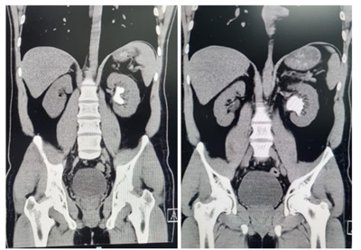
A pieloplastia videolaparoscópica.
B reimplante vesicoureteral extravesical.
C nefroureterectomia radical.
D embolização de vasos renais.
E nefrolitotripsia percutânea.
Questão 321 · Outros · 4000194092Paciente 32 anos com quadro de dor escrotal e perineal que se iniciou há 4 dias acompanhado de febre de 39ºC. Foi ao pronto socorro em 3 ocasiões e realizou exames laboratoriais que mostraram leucócitos aumentados (20.000 leucócitos sem desvio) e discreta elevação da creatinina (1,5 mg/dl). Foi solicitado um USG que mostrou coleção de 30 ml em linha média do períneo (provável abscesso). Foi iniciado antibioticoterapia com cipro oxacina via oral. O paciente chega em seu consultório com queixa de muita dor, não conseguindo sentar-se. No exame físico há abaulamento perineal, muito doloroso ao toque e turgido. Os testículos estão normais e há pequena hemorroida e ssura anal. A melhor conduta a ser tomada, neste caso, é:
A trocar o antibiótico para ampliar o espectro de ação, associar à analgésicos opioides e reavaliar em 48 horas.
B internar o paciente, iniciar o protocolo de sepse e solicitar RNM da pelve com contraste para definir a necessidade de cirurgia.
C realizar retossigmoidoscopia para afastar o diagnóstico de provável fístula anal.
D internar o paciente para realizar drenagem do abscesso e desbridamento de tecidos necróticos e escalonar antibioticoterapia.
E manter antibioticoterapia, iniciar banho de assento com água morna e pomadas analgésicas e cicatrizantes devido à fissura anal.
Questão 322 · Outros · 4000194091Idoso 82 anos, chega ao pronto socorro com quadro de confusão mental, rebaixamento do nível de consciência e hemiparesia à esquerda. No momento apresenta 12 pontos na escala de coma de Glasgow. Foi atendido no mesmo pronto socorro 30 dias antes devido queda da própria altura, com TCE, mas foi liberado após realizar sutura e uma TC de crânio que não apresentava alterações. Agora realizou nova TC de crânio, demonstrada abaixo. Com base na imagem acima, o provável diagnóstico, deste paciente, é:
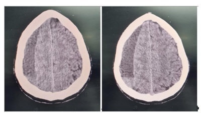
A Acidente Vascular Encefálico Hemorrágico à esquerda com efeito de massa.
B Acidente Vascular Encefálico Isquêmico à direita com desvio de linha média para esquerda.
C extenso hematoma extra dural agudo à direita, provocando desvio da linha média.
D extenso hematoma subdural crônico à direita com desvio da linha média para esquerda.
E hidrocefalia moderada à esquerda com apagamento dos ventrículos cerebrais.
Questão 323 · Outros · 4000194090Entregador de pizzas sofre queda da moto após colidir com um cachorro e chega ao pronto socorro em choque hipovolêmico que foi revertido e estabilizou após 1500 ml de ringer lactato endovenoso. No exame físico do trauma, a única alteração encontrada foi dor lombar à esquerda, dor abdominal em anco esquerdo e hematúria macroscópica na sonda vesical. A melhor conduta diagnóstica e justi cativa para tal conduta neste paciente é:
A Ultrassom focado para o trauma (USG F.A.S.T.), devido à instabilidade hemodinâmica inicial.
B Urografia excretora devido a suspeita de trauma renal grau I.
C Uretrocistografia miccional devido a suspeita de fratura de bacia com lesão uretral.
D TC do abdome com contraste endovenoso devido a estabilidade hemodinâmica.
E realização de lavado peritoneal diagnóstico, devido melhor sensibilidade na detecção de lesões intestinais.
Questão 324 · Outros · 4000194089Homem 40 anos obeso, portador de Síndrome de Down, com macroglossia, apresentou crise convulsiva por 05 minutos. O SAMU foi acionado e na chegada da equipe de suporte avançado, o paciente encontrava-se em aparente pós ictal e com respiração ruidosa, mas evoluiu rapidamente para parada cardiorrespiratória. Foi iniciado compressão torácica que foi mantida por 2 minutos. Na chegada do des brilador veri cou-se ritmo sinusal e no exame físico havia novamente pulso central palpável, mas paciente não respirava. A equipe do SAMU opta por via área definitiva para este paciente. Em relação ao manejo da via aérea deste paciente é correto afirmar que:
A por tratar-se de via aérea difícil, o médico do SAMU deve estar preparado para vias aéreas alternativas, desde a máscara laríngea até a cricotireidostomia de urgência.
B por tratar-se de paciente com Síndrome de Down e macroglossia, está indicado traqueostomia de urgência na ambulância.
C o socorrista deve evitar procedimentos mais invasivos, portanto está indicado introduzir uma máscara laríngea, devendo o procedimento de intubação ser realizado em ambiente hospitalar.
D estes pacientes são mais bem conduzidos com ventilação não invasiva (VNI), sendo o modo CPAP preferido em relação ao BIPAP, por diminuir a necessidade de intubação orotraqueal.
E o paciente continua em parada cardiorrespiratória e está indicado reiniciar reanimação cardiorrespiratória na proporção de 30 compressões para 2 ventilações.
Questão 325 · Outros · 4000194088Homem de 43 anos, hipertenso e diabético, iniciou reeducação alimentar e atividade física e perdeu 40 kg em 1 ano. Durante atividade na academia, percebeu um caroço em região inguinal direita que surgia após esforço físico. Relata que inicialmente só sentia um incômodo, mas agora o caroço cresceu e parece uma laranja. Ao examinar o paciente você diagnostica uma hernia inguinal à direita do tipo direta. Nestes casos é correto afirmar que:
A as hérnias diretas são decorrentes de persistência do conduto peritônio vaginal e devem ser tratadas cirurgicamente com redução do saco herniário e ligadura em sua base.
B as hérnias diretas podem ser tratadas por via aberta ou laparoscópica, sendo importante o reforço da parede abdominal com telas sintéticas.
C independente do tipo de hérnia (direta, indiretas ou mistas), o saco herniário deve ser reduzido e ressecado e o reforço da parede abdominal deve ser realizado pela técnica de Bassini.
D as hérnias diretas são decorrentes da fraqueza da parede abdominal devido à perda aguda de peso, devendo-se orientar readequação alimentar para ganho de peso.
E as hérnias diretas são mais comuns em crianças, portanto uma ressonância magnética deve ser realizada para confirmar o diagnóstico.
Questão 326 · Outros · 4000194087Homem, 72 anos, refere alteração no hábito intestinal há 6 meses, passando a evacuar várias vezes ao dia, com muco e estrias de sangue nas fezes. Familiares referem que paciente apresenta perda de apetite e perda ponderal de 10kg no período. A abordagem inicial, o provável diagnóstico e o tratamento mais adequado são:
A exame proctológico - neoplasia de reto – radioterapia/quimioterapia e/ou cirurgia.
B colonoscopia - neoplasia colorretal - cirurgia transanal.
C retoscopia - neoplasia de sigmoide - radioterapia.
D toque retal - neoplasia de próstata - prostatectomia.
E palpação do abdome – neoplasia gástrica – gastrectomia com linfadenectomia.
Questão 327 · Outros · 4000194086Um homem de 31 anos estava a 60km/h numa motocicleta e colidiu contra um automóvel que vinha na contramão. Foi ejetado. Estava de capacete. Levado pelo Resgate, chega ao pronto-socorro imobilizado em prancha rígida, com colar cervical. A via aérea está pérvia e não tem en sema cervical nem desvio de traqueia. A expansibilidade torácica está diminuída à esquerda. A ausculta mostra murmúrio vesicular abolido desse lado e macicez à percussão. Saturação de oxigênio, com máscara: 89%. Sente-se crepitação na palpação do esterno. Pulso: 115 bpm, regular; PA: 100× 60 mmHg. Glasgow: 14. Não há outras lesões evidentes na avaliação inicial. A conduta inicial mais adequada, neste caso é:
A toracotomia de reanimação.
B cricotireoidostomia para garantir a via aérea e avaliação de urgência do especialista da Cirurgia Torácica.
C drenagem pleural esquerda sob selo d’água.
D intubação traqueal e tomografia de corpo inteiro.
E descompressão torácica esquerda no 2º espaço intercostal, pois é um pneumotórax hipertensivo, seguida de drenagem pleural sob selo d’água.
Questão 328 · Outros · 4000194085Homem, 61 anos, foi vítima de queimadura com álcool na perna há 15 anos. Desde então passou por múltiplos procedimentos de enxerto de pele e retalhos. É hipertenso e diabético insulinodependente. Apresenta uma úlcera na perna esquerda que vem tratando há anos, sem melhora efetiva. Refere piora nos últimos meses. Ao exame físico: BEG / Membros inferiores com pulsos presentes Femoral +4 / Popliteo +4/ Tibiais anteriores e posteriores +4 bilateralmente. Úlcera em região tibial de perna esquerda, medindo 6x5 cm, de odor fétido e bordos mal definidos. Diante desse quadro, a principal hipótese diagnóstica e conduta mais adequada são:
A paciente apresenta Oclusão arterial crônica. A úlcera é devido à descompensação das doenças de base, como hipertensão e diabetes.
B paciente está com um quadro de Oclusão arterial aguda. Necessita de internação e passagem de Fogarty.
C úlcera de Marjolin, raio – x para descartar osteomielite (região tibial com pele fina, pode acometer o osso), antibioticoterapia e curativo.
D úlcera de Martorell, frequente em pacientes hipertensos. Deve-se otimizar o tratamento da hipertensão e fazer curativo diário no ambulatório.
E úlcera de Marjolin, biópsia incisional por estar associado a Carcinoma Espinocelular.
Questão 329 · Outros · 4000194084Mulher, 55 anos, trabalha na roça há 40 anos. Foi em consulta ambulatorial no posto de saúde por conta de uma lesão no pé que começou a aumentar e sangrar. Lesão de 3x3 cm, aspecto ulcerado, de cor preta, de bordos mal definidos. Feita biópsia no mesmo dia. Após 2 semanas, você recebe o resultado do anatomopatológico que relata: Melanoma Acral, Breslow de 2mm, 2 mitoses por campo. Sobre o caso clínico e a doença apresentada, é correto afirmar que:
A o melanoma é oriundo das células da camada espinhosa da epiderme. Exposição solar prolongada está relacionado a esse tipo de tumor (fator ocupacional).
B dentre os tipos de melanoma, o acral apresenta um prognóstico melhor do que o extensivo superficial.
C paciente precisa ter a margem da lesão ampliada com 2 cm e está indicada pesquisa do linfonodo sentinela.
D após essa biópsia, paciente precisa fazer o seguimento ambulatorial de 3/3 meses para verificar se houve piora da lesão. Caso haja mudança do quadro, está indicado linfonodo sentinela e ampliação de margem de 1 cm.
E o índice de Clark é tão importante quanto ao índice de Breslow no que diz respeito ao prognóstico do Melanoma.
Questão 330 · Outros · 4000194083Paciente de 32 anos de idade, GI P0 AI, com hipertensão arterial crônica controlada, em uso de Nifedipina 40mg/dia. Ao exame físico, pressão arterial de 120x80 mmHg, peso 70 kg, com estatura de 1,58m. Veio a consulta relatando suspensão de método contraceptivo por desejo de gestar. Diante do caso relatado, a melhor conduta para prevenção da préeclâmpsia é:
A modificar o esquema anti-hipertensivo para alfametildopa.
B indicar o uso de ácido acetilsalicílico entre 12 e 36 semanas de gestação.
C indicar o uso de enoxaparina entre 12 e 36 semanas de gestação.
D propor redução de peso.
E indicar restrição de sal na dieta.
Questão 331 · Outros · 4000194082Paciente de 25 anos de idade, GI P0 A0, no decorrer da 12ª semana de gestação, vem a consulta de pré- natal com resultados de exames laboratoriais de 1º trimestre dentre eles a glicemia em jejum que era 97mg/dL. Diante do resultado laboratorial, a melhor conduta é:
A realizar o teste oral de tolerância à glicose com 75g de glicose entre 24 e 28 semanas de gestação.
B por apresentar rastreio negativo para diabetes melitus gestacional, deve seguir em pré-natal de baixo risco.
C por apresentar diagnóstico de Diabetes prévio à gestação (overt diabetes), deve seguir em pré- natal de alto risco.
D orientar retorno breve em duas semanas com perfil glicêmico, uma vez que a gestante já tem diagnóstico de Diabetes Mellitus gestacional.
E tranquilizar a gestante e orientar que ela deve realizar exame de TOTG 75g na 24ª semana gestacional.
Questão 332 · Outros · 4000194081Paciente do sexo feminino, 29 anos de idade, comparece ao ambulatório com queixa de ausência de menstruação há 07 meses, diminuição da libido e episódios de cefaléia intensa. Refere uso de amitriptilina, prescrito pelas crises de cefaléia. Ao exame físico das mamas, presença de descarga papilar branca bilateral. Apresenta dosagem de Prolactina de 45 ng/ml (VR: até 30 ng/mL) e a ressonância magnética de sela túrcica mostra adenoma hipofisário de 12 mm. Diante do caso exposto, a alternativa correta é:
A o efeito gancho deve ser avaliado.
B deve ser dosada macroprolactina.
C a dosagem de prolactina diluída deve ser solicitada, pensando em macroprolactinemia.
D trata-se de hiperprolactinemia idiopática.
E a hiperprolactinemia provavelmente é devido ao uso de amitriptilina.
Questão 333 · Outros · 4000194080Paciente de 31 anos de idade, secundigesta, iniciou acompanhamento de pré-natal com 12 semanas de gestação, quando trouxe na consulta de rotina os exames de toxoplasmose com IgM e IgG reagentes. O teste de avidez IgG para toxoplasmose, que veio com avidez fraca. No cartão de pré-natal da gestação anterior, os resultados de IgM e IgG para toxoplasmose eram não reagentes. A conduta para a gestação atual é:
A repetir teste de avidez.
B prescrever espiramicina.
C repetir toxoplasmose IgM e IgG.
D pré-natal de risco habitual, pois a avidez indica que a doença foi prévia a gestação.
E prescrever apenas ácido fólico.
Questão 334 · Outros · 4000194079Durante a assistência ao trabalho de parto de uma gestante primigesta com 39 semanas de gestação, não houve progressão para desprendimento do diâmetro biacromial após um minuto do desprendimento cefálico. Foi visualizada retração da cabeça fetal contra o períneo materno durante contrações. Diante desta situação de urgência obstétrica, a conduta mais adequada é:
A realizar episiotomia com propósito de aumentar os diâmetros da pelve materna e desfazer a distocia de ombros.
B indicar parto instrumentalizado com fórcipe de Piper para desprendimento da cabeça derradeira.
C rotação do feto pelo polo cefálico com manobra de pressão por um auxiliar no fundo uterino.
D indicar parto instrumentalizado com auxílio de fórcipe de Simpson para abreviação do período expulsivo.
E realizar flexão das pernas da parturiente em direção ao abdome, provocando alinhamento do sacro e aumento do diâmetro antero-posterior da pelve.
Questão 335 · Outros · 4000194078Mulher de 39 anos de idade, veio à consulta para seguimento ginecológico com resultado de colpocitologia oncótica com atipia das células glandulares (AGC). Diante do caso exposto, a conduta mais adequada para a paciente (de acordo com as diretrizes do Ministério da Saúde do Brasil) é:
A solicitar captura híbrida para HPV e repetir exame imediatamente.
B repetir exame em seis meses.
C investigação do canal endocervical com histeroscopia.
D indicar conização por cirurgia de alta frequência.
E cauterização da zona de transformação com ácido tricloroacético.
Questão 336 · Outros · 4000194077Mulher, 17 anos de idade, refere início da vida sexual há 06 meses. Tem diagnóstico de enxaqueca com aura e útero septado. Sem alterações ao exame físico. O método contraceptivo e a orientação mais adequada para a paciente é:
A indicar coleta de colpocitologia oncótica agora e indicar Dispositivo Intrauterino de cobre.
B contraindicar coleta de colpocitologia oncótica agora e prescrever Dispositivo intrauterino hormonal.
C indicar coleta de colpocitologia oncótica agora e prescrever anticoncepcional oral combinado.
D contraindicar coleta de colpocitologia oncótica agora e prescrever implante subcutâneo de etonogestrel.
E indicar coleta de colpocitologia oncótica agora e indicar o uso de anel vaginal.
Questão 337 · Outros · 4000194076Paciente 28 anos de idade, no decorrer de 40 semanas de gestação, chega a maternidade com queixa de contrações uterinas fortes e perda de líquido há 30 minutos. O pré-natal foi sem intercorrências. Ao exame obstétrico foi observada dilatação cervical de 5 cm. Considerando o quadro clínico e a cardiotocogra a da paciente em anexo, é correto afirmar que:
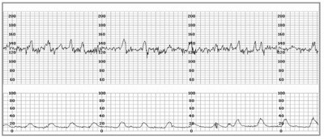
A é uma cardiotocografia categoria 2, devendo-se reavaliar a vitalidade fetal após 15 minutos.
B é uma cardiotocografia categoria 1, em gestante de risco habitual. Não há sinais de sofrimento fetal.
C a variabilidade está aumentada e caracteriza o exame como categoria 3. Parto via alta está indicado.
D é uma cardiotocografia categoria 2. Está indicada complementação com doppler obstétrico.
E é uma cardiotocografia categoria 3, pois está presente o padrão sinusoidal, muito comum nos casos de hemólise fetal.
Questão 338 · Outros · 4000194075Feminino, 33 anos, G0P0, com desejo gestacional futuro vem à consulta ginecológica preocupada se poderá engravidar em 2025- 2026. Na triagem inicial, para inferir a reserva ovariana desta paciente, marque a alternativa abaixo que contenha um exame adequado e o período que deverá ser realizado.
A Hormônio Luteinizante (LH), no meio do ciclo.
B Hormônio Folículo Estimulante (FSH), no início do ciclo.
C Progesterona, na segunda fase do ciclo.
D Estradiol, entre 10-15 dias do ciclo.
E Testosterona livre, no início do ciclo.
Questão 339 · Outros · 4000194074Feminino, 32 anos, G0P0 ( com desejo de gestar), traz resultado de Colpocitologia Oncótica demonstrando atipia celular escamosa de significado indeterminado (ASCUS). Realizou Colposcopia: presença de diminuto epitélio acetobranco tênue às 12 horas em colo uterino e biópsia de colo demonstrou lesão intraepitelial escamosa de alto grau (HSIL)/ NIC2. O estudo imunohistoquímico da peça de biópsia demonstrou p16 positivo, Ki67 positivo. Baseado nos resultados apresentados, a conduta adequada para o caso é:
A Exérese da Zona de Transformação (EZT).
B curetagem de canal endocervical.
C histerectomia total.
D expectante.
E cirurgia de Wertheim-Meigs.
Questão 340 · Outros · 4000194073A vacina quadrivalente contra o HPV (Papilomavirus Humano) é fornecida pelo Sistema Único de Saúde (SUS) para meninas entre 9 e 14 anos, em 2 doses, para prevenção primária contra o câncer de colo uterino. Para meninas acima de 14 anos e/ou pessoas que convivem com o HIV preconizamse 3 doses. Segundo o INCA (2016), o intervalo vacinal entre as 3 doses é de:
A 0- 1- 6 meses.
B 0- 2- 8 meses.
C 0- 3- 8 meses.
D 0- 2- 6 meses.
E 0-6-12 meses.
Questão 341 · Outros · 4000194072Feminino, 43 anos, vem a consulta ginecológica. Refere descarga papilar unilateral, espontânea, sanguinolenta, oriunda de ducto único, em mama direita há 2 meses. Pele íntegra, sem lesões. Nestes casos, o diagnóstico mais frequente é:
A câncer de mama.
B papiloma intraductal.
C abscesso mamário.
D doença fibrocística da mama.
E fibroadenoma.
Questão 342 · Outros · 4000194071O Cistoadenoma mucinoso de ovário caracteriza-se por uma lesão ovariana de crescimento rápido. Dentre as opções que seguem, a principal consequência da ruptura do cistoadenoma mucinoso ovariano para a cavidade abdominal está demonstrada na alternativa:
A Pseudomixoma peritoneal.
B Hidrotórax e ascite ( Síndrome de Meigs).
C Disseminação oncológica.
D Ascite discreta.
E Virilização de rápida instalação.
Questão 343 · Outros · 4000194070Feminino, 27 anos, Primigesta, idade gestacional 31 semanas, encontra-se em sua consulta de pre-natal. Durante o exame físico obstétrico, foram realizadas as manobras de Leopold. Sobre o segundo tempo da manobra de Leopold, marque a alternativa correta.
A Determina a atitude fetal.
B Determina a posição fetal.
C Determina se há rechaço fetal.
D Determina a variedade de posição fetal.
E Determina a apresentação fetal.
Questão 344 · Outros · 4000194069Paciente de 40 anos comparece à unidade de saúde do seu bairro para consulta médica devido queixa de sangramento menstrual excessivo, às vezes intermenstrual, o que lhe incomoda muito por ser fora do ciclo. No caso do sangramento intermenstrual, descartado gravidez, tem maior associação com: (MS/IEP-SL, 2016)
A funcional (causa endometrial)
B miomatose
C DIU de cobre
D coagulopatias
E pólipo endometrial
Questão 345 · Outros · 4000194068Senhora de 59 anos comparece à consulta com resultados de exames, dentre eles a mamogra a, cujo resultado evidenciou nódulo calci cado - tipo “pipoca”. Esse achado é compatível com Classi cação mamográfica de BI-RADS:
A Categoria 0
B Categoria 1
C Categoria 2
D Categoria 3
E Categoria 4
Revisar: possível letra faltando em enunciado
Questão 346 · Outros · 4000194067Durante a realização de ultrassom transvaginal, foi observado saco gestacional normoimplantado e sem embrião. Este achado demonstra imagem:
A anecóica
B isoecóica
C hipoecóica
D hiperecóica
E mista (anecoica e hipoecóica)
Questão 347 · Outros · 4000194066Gestante de 36 anos, com 34 semanas de gestação, apresentando pressão arterial 150x100 mmHg, e sentindo mal estar. Sobre esse tipo de alteração na gravidez, assinale a alternativa INCORRETA sobre os sinais de alerta:
A edema excessivo.
B cefaléia.
C escotomas visuais .
D epigastralgia.
E lombalgia.
Questão 348 · Outros · 4000194065A razão de mortalidade materna - RMM no Brasil tem sido reduzida em 50% porém atualmente ainda mantém índices elevados. Sobre esse tema tão relevante assinale a alternativa INCORRETA.
A No Brasil, a morte materna está associada ao atraso no transporte para facilidades de complexidade e atraso no fornecimento de tratamento em instituições de saúde.
B A RMM oscila em torno de 50 óbitos maternos para 100.000 nascidos vivos.
C A relativa estabilidade nas taxas de RMM pode ter sido comprometida com aumento de óbitos maternos na pandemia de COVID-19.
D Na definição de morte materna o óbito da mulher ocorre na gestação ou até 40 dias após seu término independente da duração ou da localização da gravidez, devido à qualquer causa relacionada ou agravada pela gravidez ou por medidas em relação à ela.
E A morte materna não se relaciona a causas acidentais ou incidentais.
Questão 349 · Outros · 4000194064Gestante de 40 anos, G3Pc1A1 com 27 semanas de gestação vem à consulta prénatal na unidade de saúde. Trouxe resultado da colpocitologia oncótica colhida com 16 semanas indicando lesão intraepitelial de alto grau. No exame geral e obstétrico nota-se: IMC: 42, Pressão Arterial =140x100 mmHg, Altura Uterina =32 cm, situação longitudinal, posição dorso à direita e apresentação cefálica. BCF = 158 bpm. Dentre as orientações dadas à paciente, assinale a alternativa correta.
A A colpocitologia indicou lesão precursora do câncer de colo uterino, deve-se indicar colposcopia com biópsia.
B Devido o IMC elevado da gestante, deve-se suprimir a suplementação de ferro.
C Importante prescrever anti-inflamatório hormonal.
D Encaminhar à maternidade para internar e controlar os parâmetros clínicos.
E Realizar teste oral de tolerância à glicose.
Questão 350 · Outros · 4000194063Mulher de 16 anos, levou seu lho R.B.S, sexo masculino, com 7 dias de vida à consulta de puericultura na Estratégia Saúde da Família (ESF). Refere que o mesmo está com muita fome, e precisa dar chá para passar as cólicas, mãe com mamas dolorosas. RN nasceu de parto vaginal, Apgar: 9/9, pesando 3.600 g, IG: 39 sem, realizou testes de triagem neonatal sem alterações. Ao exame físico: RN em bom estado geral, hidratado, com diurese e evacuações siológicas, pesando 2.800g, com boa sucção ao dedo de luva. Mamas demasiadamente cheias e ingurgitadas, sem sinais de ssuras bilateralmente e muito dolorosas. Diante do quadro, avalie atentamente as orientações e informações sobre o aleitamento materno. I. Começar a amamentação pela mesma mama da última mamada, até que esta se esvazie completamente, para que o RN possa sugar o leite posterior, e assim obter uma quantidade maior de lipídios. II. Sinais de boa pega: mais aréola acima da boca do bebê, a boca deve manter-se bem aberta, com o lábio inferior virado para fora, o queixo do bebê deve tocar a mama e o nariz deve ficar livre para respirar. III. Sinais de boa sucção: sugadas lentas e profundas, com pausas, bochecha redondas durante a mamada, bebê solta o peito quando termina a mamada e a mãe apresenta sinais do reflexo da prolactina. IV. A mãe deve fazer limpeza da mama e mamilos com glicerina e usar hidratantes para promover a massagem das mamas, pois a massagem facilita a uidi cac facilitando a retirada do leite da mama. A alternativa que contém todas as afirmativas corretas é:
A I e II
B II e III
C III e IV
D I e IV
E I e III
Questão 351 · Outros · 4000194062Pré-escolar 3 anos e 4 meses de idade, pesando 18 Kg, sexo masculino, evoluindo com quadro de diarreia há quatro dias, de consistência amolecida, em torno de cinco episódios ao dia, há um dia mãe observou que as evacuac que apresentou episódios de vômitos (seis episódios) e que apresentou febre, que cedeu com uso de antitérmico (Dipirona). Ao exame físico: Préescolar grave, está nos brac choro ao manuseio, olhos fundos e secos, pulsos filiformes, perfusão capilar periférica de 3 seg e anúrico há 8 horas. Considerando que você é o (a) médico (a) que atende este menor na UPA, e obedecendo as normas preconizadas pelo Ministério da Saúde, marque a única alternativa correta que corresponde ao diagnóstico, tratamento e ao Plano de Terapia de Reidratação.
A Pré-escolar apresenta Desidratação; neste caso será necessário realizar antibioticoterapia com Ciprofloxacina; e tratamento com Soro de Reidratação oral (Plano B), observando a evolução do menor por 4-6 horas.
B Pré-escolar apresenta Desidratação Grave; neste caso será necessário realizar antibioticoterapia com Ceftriaxona; Fases Rápidas com Soro Fisiológico 0,9% (30 ml/kg) (Plano C), até melhora dos sinais clínicos de desidratação, reavaliando após cada administração.
C Pré-escolar apresenta Desidratação; neste caso será necessário realizar antibioticoterapia com Ciprofloxacina; Fases de Expansão com Soro Glicosado 5% e Soro Fisiológico 0,9% (Proporção 1:1) (Plano C), até melhora dos sinais clínicos reavaliando os após cada fase.
D Pré-escolar apresenta Desidratação Grave; neste caso será necessário realizar antibioticoterapia com Ceftriaxona; Fases de Expansão com Soro Fisiológico 0,9% (20 ml/kg) (Plano C), até melhora dos sinais clínicos de desidratação, reavaliando após cada administração.
E Pré-escolar apresenta Desidratação Grave; neste caso será necessário realizar antibioticoterapia com Ciprofloxacina; Fases Rápidas com Soro Fisiológico 0,9% (30 ml/kg, seguida de 70 ml/kg) (Plano C), até melhora dos sinais clínicos de desidratação, reavaliando após cada administração.
Questão 352 · Outros · 4000194061RN de A.P.V, sexo feminino, 48 horas de vida, nasceu de parto normal, com 38 sem e 2 dias, pesando 2.490 g, medindo 46 cm, Apgar 9/9; Mãe G2 P1 A1, não realizou pré-natal, usuária de maconha. Ao exame físico: RN em regular estado geral, ativo e reativo, acianótico, ictérico zona III, eupneico, fígado palpável a 4 cm do RDC e bac de lesões de tocotraumatismos. Exames maternos: Testes Rápidos (HIV/ Hep B/ Hep C): não reagentes, sí lis: reagente/ VDRL sérico: 1/16/ TSang: A positivo/ Toxoplasmose, Rubéola, Citomegalovírus (CMV), herpes vírus simplex (HSV): IgG: positivos e IGM: negativos. Realizados exames no RN, demonstrados no quadro abaixo. De acordo com o caso clínico acima, o tratamento que deve ser instituído para a RN de A.P.V., considerando o diagnóstico apresentado por ela é:

A P Benzilpenicilina Benzatina, Intramuscular, dose única.
B Benzilpenicilina Procaína, Intravenosa, por 14 dias.
C Benzilpenicilina potássica (Cristalina), intravenosa, por 14 dias.
D Benzilpenicilina Procaína, Intramuscular, por 10 dias.
E Benzilpenicilina potássica (Cristalina), intravenosa, por 10 dias.
Questão 353 · Outros · 4000194060RN de A.P.V, sexo feminino, 48 horas de vida, nasceu de parto normal, com 38 sem e 2 dias, pesando 2.490 g, medindo 46 cm, Apgar 9/9; Mãe G2 P1 A1, não realizou pré-natal, usuária de maconha. Ao exame físico: RN em regular estado geral, ativo e reativo, acianótico, ictérico zona III, eupneico, fígado palpável a 4 cm do RDC e bac de lesões de tocotraumatismos. Exames maternos: Testes Rápidos (HIV/ Hep B/ Hep C): não reagentes, sí lis: reagente/ VDRL sérico: 1/16/ TSang: A positivo/ Toxoplasmose, Rubéola, Citomegalovírus (CMV), herpes vírus simplex (HSV): IgG: positivos e IGM: negativos. Realizados exames no RN, demonstrados no quadro abaixo. Quanto ao acompanhamento ambulatorial indicado no texto acima em relação ao quadro de neurosí lis apresentado pela RN de A.P.V, assinale a alternativa correta.
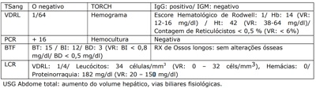
A O LCR deve ser coletado a cada 2 meses, até a sua normalização.
B O LCR deve ser coletado a cada 4 meses, até a sua normalização.
C O LCR deve ser coletado a cada 6 meses, até a sua normalização.
D O LCR deve ser coletado a cada 9 meses, até a sua normalização.
E O LCR deve ser coletado a cada 12 meses, até a sua normalização.
Questão 354 · Outros · 4000194059Escolar de 6 anos de vida, foi atendida na UPA. Mãe referia que a criança estava inapetente, com febre elevada (38,9°C), anorética e com muita dor de garganta, quadro que teve início há quatro dias. Apresentava ao exame físico, orofaringe hiperemiada com focos purulentos difusos. A criança recebeu antitérmico e foi prescrita com anti-inflamatório para casa. Hoje retorna ao atendimento (com 10 dias de evolução). Escolar apresenta vômito, mais de seis episódios em 12 horas, diarreia líquida, cefaleia e febre elevada. Ao exame: apresenta grave estado geral, sonolenta, desidratada, ictérica, dispneica, com perfusão capilar periférica de 3 seg; rigidez de nuca, Kerning e Brudzinski positivos. Realizado: oxigenioterapia, Fases de Expansão (4x), Ceftriaxona (100 mg/kg/dia, dose de ataque) e corticoide; a menor foi internada e isolada. Realizado coleta do LCR, sendo identi cado alterações consistente, com meningite bacteriana, na bacterioscopia foi isolado diplococos gram negativos. A quimioprofilaxia dos contactantes deve ser realizada com:
A Rifampicina (20 mg/kg/dose, via oral, 12/12 horas), por 4 dias, em crianças < 1 mês.
B Ceftriaxona (125 mg, intramuscular), dose única, em crianças < 12 anos.
C Ciprofloxacina (500 mg, via oral), dose única, em crianças < 12 anos.
D Cefalexina (100 mg/kg/dia, via oral, 12/12 horas), por 2 dias, em todas as idades.
E Azitromicina (500 mg, via oral, 24/24 horas), por 5 dias, em adultos > 18 anos.
Revisar: possível letra faltando em enunciado
Questão 355 · Outros · 4000194058Dona Fernanda Fernandes veio à UBS para consulta de puericultura do seu lho, João Pedro. Atualmente a criança tem 9 meses, nasceu de parto vaginal, APGAR: 9/9, pesou na ocasião do parto 3.200 g, com estatura de 49 cm e Perímetro Cefálico de 36 cm, evoluiu satisfatoriamente e recebeu alta com 2 dias de nascido. Mãe 36 anos, GII PII A0, realizou 8 consultas de pré-natal, relata ITU (infecção do trato urinário) tratada com Cefalexina (6/6 horas), com sucesso e controle de cura por Urina EAS e Urocultura negativas, nega outras intercorrências infecciosas, etilismo, tabagismo, uso de drogas ilícitas e consanguinidade. Na avaliação do DNPM (Desenvolvimento Neuropsicomotor) esperase que João Pedro:
A apresente sorriso social, movimente os membros ativamente e esperneie alternadamente, reaja à estímulos sonoros, segure objetos, que lhes são dados à mão.
B tente alcançar um brinquedo, busque ativamente objetos fora do seu alcance, volte-se para o som, role no leito, inicie uma interação. leve objetos à boca e imite sons.
C transmita objetos de uma mão para a outra, pegue objetos com dedos em pinça, balbucie, brinque de esconde-achou, duplique sílabas e dê “tchau”.
D comece a andar sem apoio, abaixe-se e levante-se, produza jargão, coloque blocos dentro de uma caneca, imite a ação e gestos das pessoas, mostre o que quer.
E corra, chute bola, suba escadas, fale em torno de seis palavras, nomeie uma figura, retire uma vestimenta, use colher ou garfo, construa torre com quatro cubos.
Questão 356 · Outros · 4000194057Menor 12 anos, internado com quadro de adinamia, taquicardia ocasional e dispnéia aos esforços, com tiragem subcostal e intercostal. Mãe refere que a menor não consegue mais brincar com os primos, pois ca muito ”ofegante”, e quando isso acontecia, sentava-se na calçada para descansar. Refere que há 10 dias apresentou dor em joelho direito, sem relato concomitante com queda, edema e choro intenso quando tentava massagear, a dor se localizou em cotovelo esquerdo, e atualmente a criança refere a mesma dor em ombro direito, sem sinais de hiperemia, com edema, dor e limitação da movimentação. Nos Antecedentes Mórbidos Pessoais (AMP), mãe refere que a menor apresentou há 3 semanas quadro de odinofagia, prostração e febre elevada (39°C), impossibilitando ingesta de alimentos e líquidos, foi levada à UPA (apresentou na ocasião Hemograma com anemia discreta e Leucocitose sem desvio a esquerda/ VHS de 65 mm/ PCR de 21 mg/dl), sendo prescrito Sulfametoxazol-trimetropim e analgésicos, com melhora do quadro após 7 dias de uso; antes do quadro atual a criança era hígida. Quanto ao diagnóstico mais provável, a complicação, o agente etiológico e o tratamento indicado para o mesmo, marque a única alternativa correta.
A Lupus Eritematoso Sistêmico, com Insuficiência Cardíaca Congestiva/ Vírus Influenza/ Aciclovir.
B Púrpura de Henoch- Schönlein, com Artrite séptica/ Staphylococcus aureus/ Oxacilina.
C Artrite Reumatóide juvenil, com Pneumonia atípica/ Mycoplasma pneumoniae/ Eritromicina.
D Febre reumática, com Cardite Reumática/ Streptococcus pyogenes/ Penicilina G Benzatina.
E Endocardite Infecciosa, com Artrite Séptica/ Streptococcus viridans/ Penicilina G Cristalina.
Revisar: possível letra faltando em enunciado
Questão 357 · Outros · 4000194056RN de A.C.V, nascido a termo, IG: 37 semanas e 2 dias, parto cesáreo, bolsa amniótica íntegra. RN chorou forte e vigoroso ao nascer, realizado clampeamento imediato do cordão umbilical, com Apgar 8/9 e peso de 2.810 g ao nascer. Mãe 36 anos, G3P3A0, realizou 08 consultas de pré-natal; apresentou ITU tratada com controle de cura e Leucorreia tratada com melhora, ambas sem recorrência; nega outras intercorrências e vícios; mãe sem trabalho de parto prévio à cesariana. Nas primeiras horas de vida, RN evoluiu com taquidispneia, tiragem subcostal e batimento de asa de nariz, com Frequência Respiratória de 85 irpm (Boletim de Silverman-Andersen de 2). Ao exame: RN em bom estado geral, ativo e reativo, acianótico, corado, hidratado, com perfusão capilar periférica satisfatória, não foram identi cadas alterac pulmonar e cardíaca, SatO2 90%. Iniciada oxigenioterapia e dieta. Realizado Rx de tórax, que evidenciou congestão peri-hilar radiada e simétrica, espessamento de cissuras interlobares, hiperinsu ac leve, discreta cardiomegalia. Com 36h de vida o RN evoluiu com melhora, eupneico, SatO² 98% em ar ambiente. O processo fisiopatológico que poderia explicar o quadro é:
A deficiência quali-quantitativa do surfactante pulmonar endógeno.
B processos inflamatórios em alvéolos pulmonares.
C imaturidade do controle neuronal do centro respiratório.
D aspiração de saliva para árvore traqueobrôquica.
E retardo na absorc
Questão 358 · Outros · 4000194055Você está atendendo a um recém-nascido (RN) em sala de parto, cuja mãe de 15 anos está tendo uma evolução de parto normal sem intercorrências e com líquido amniótico claro. RN de 37 semanas e 2/7, apresentação cefálica, nasceu sem choro e hipotônico. Os passos de atendimento nos primeiros 30 segundos devem ser:
A conduzir o RN à mesa de reanimação em campos aquecidos; prover calor; posicionar a cabeça em leve extensão; aspirar boca e narinas (se necessário) e secar.
B conduzir à mesa de reanimação em campos aquecidos; prover calor; posicionar; aspirar boca e narinas e iniciar Ventilação com Pressão Positiva (VPP) com oxigênio.
C recebê-lo em campo aquecido; secar o corpo e o segmento cefálico e manter o RN em contato pele-a-pele com a mãe para estimular a amamentação, mantendo a via aérea pérvia.
D colocar o RN em fonte de calor; avaliar frequência cardíaca e respiração; aspirar vias aéreas após retificá-las e iniciar VPP caso a frequência cardíaca seja menor que 60 bpm.
E o Boletim de Apgar executado no primeiro minuto de vida, sendo menor que 7, vai determinar a necessidade de aspiração de vias aéreas superiores e de VPP. Caso esteja com Apgar maior que 8 basta calor e observação.
Questão 359 · Outros · 4000194054A hiperbilirrubinemia neonatal é uma das manifestações clínicas mais frequentes no recém-nascido. Em relação à fisiopatologia da hiperbilirrubinemia neonatal, é correto afirmar que:
A a sobrecarga ao hepatócito decorre do excesso de captação e conjugação da bilirrubina indireta.
B a fração de bilirrubina mais frequentemente elevada é a fração direta em decorrência da deficiência de G6PD.
C a deficiência de glicuroniltransferase nos recém-nascidos é causa de elevação da fração indireta da bilirrubina.
D a circulação entero-hepática aumentada da bilirrubina indireta pode reduzir se ocorrer o jejum prolongado de 12 horas.
E em caso de incompatibilidade sanguínea rH, o aumento de reticulócitos reflete a velocidade de conjugação da bilirrubina.
Questão 360 · Outros · 4000194053Segundo a Organização Mundial de Saúde (OMS), é estimado que 25% das gestações de mulheres com sí lis em atividade resultem em óbito fetal e 25% de recém-nascidos com infecção grave ou baixo peso. No caso de recém-nascidos de mães inadequadamente tratadas, a conduta correta deve ser:
A se o RN apresentar VDRL positivo (qualquer titulação) e/ou existirem alterações clínicas e/ou alterações radiológicas e/ou alterações hematológicas com comprometimento neurológico, tratar com penicilina procaína 50.000 UI/kg/dose a cada 24 horas por 10 dias.
B se houver alteração liquórica ou não for possível colher o LCR, fazer penicilina cristalina EV por 10 dias, na dose de 50.000 UI/kg/dose a cada 12 horas na primeira semana de vida e a cada 8 horas após a primeira semana.
C se o RN for VDRL negativo, sem alterações clínicas, radiológicas, hematológicas ou liquóricas, não tratar e fazer o acompanhamento com exames de VDRL nos meses 1, 3, 6, 12 e 18 meses.
D isolar os recém-nascidos com VDRL positivo e titulação superior à titulação materna até 48 horas após o início da antibioticoterapia, mesmo que esteja em uso de penicilina cristalina na dose de 50.000 UI/kg/dose.
E o seguimento de recém-nascidos filhos de mães inadequadamente tratadas para sífilis é obrigatório pela possibilidade de recrudescência da doença em 14% e deve ser realizado bimestralmente no primeiro semestre e depois trimestralmente até 12 meses.
Questão 361 · Outros · 4000194052A Organização Mundial de Saúde (OMS) reconhece a obesidade como uma epidemia. No Brasil, estudos mostraram sobrepeso em 33,5% e obesidade em 14,3% de crianças brasileiras. Considerando a avaliação médica de um adolescente de 13 anos, sexo masculino que teve seu IMC (índice de massa corporal) entre os níveis >+1 e +2 do gráfico IMC por idade para Meninos 5-19 anos, WHO 2006, é correto a rmar que sua classificação do estado nutricional de acordo com a OMS é:
A eutrofia.
B risco de sobrepeso.
C sobrepeso.
D obesidade.
E obesidade grave.
Questão 362 · Outros · 4000194051Uma criança de 1 ano de idade, pesando 10 kg, ainda recebe aleitamento materno e alimentação complementar e vem evoluindo com vômitos e diarreia há 2 dias. Ao exame observa-se que está choroso sem lágrimas, boca sem saliva, taquicárdico, prega abdominal se desfaz rapidamente e está aceitando avidamente a água oferecida pela mãe. Para este paciente, a conduta adequada dever ser:
A providenciar imediato acesso venoso e fazer expansão com soro fisiológico 20 ML/kg em 30 minutos e repetir até que a criança esteja hidratada.
B deve ser recomendado que a criança mantenha o aleitamento materno e seja medicado em casa com sais de reidratação oral (SRO) 100 ML após cada vômito ou evacuação.
C iniciar fase de manutenção e reposição com volume de 1.000 ML por dia, sendo soro glicosado e soro fisiológico adicionado de cloreto de potássio.
D manter aleitamento materno e suspender outros alimentos e iniciar SRO na unidade de saúde sob supervisão médica com ofertas de 500 a 1.000 ML no período de 4 a 6 horas.
E iniciar plano C com oferta adicional de zinco 20 mg ao dia e manter aleitamento materno e outros alimentos que aceitar nas primeiras 4 horas.
Questão 363 · Outros · 4000194050Criança de 18 meses iniciou com quadro de infecção de vias aéreas superiores há 1 semana e há 2 dias vem com febre maior que 39 graus, tosse produtiva, FR 65 mpm, tiragem intercostal, dor abdominal e gemência; ausculta pulmonar com estertores crepitantes em base direita. Não há radiogra as e nem exames complementares disponíveis com saturação de oxigênio 92% em ar ambiente. Para este caso, a conduta adequada deve ser:
A iniciar tratamento com amoxacilina na dose 50 mg/kg/dia de 8/8 horas por 7 dias.
B iniciar tratamento com claritromicina 7,5 mg/kg/dose de 12/12 horas por 10 dias.
C hospitalizar e tratar com ampicilina 50 mg/kg/dose de 6/6 horas.
D hospitalizar e tratar com penicilina cristalina 150.000 UI/kg/dia associado a gentamicina 7,5mg/kg/dia.
E iniciar salbutamol a cada 4 horas e corticoide oral (prednisolona 1mg/kg/dia).
Questão 364 · Outros · 4000194049Uma criança de 7 anos de idade, sexo masculino, iniciou com quadro de infecção de vias aéreas superiores e febre baixa no dia anterior e hoje comparece à unidade de pronto atendimento de emergência por ter evoluído com tosse persistente, dispneia. Ele usou corticoide na exacerbação anterior. Ao exame físico, ele apresenta frequência respiratória de 28 mpm, fala em frases, prefere car sentado ao deitar-se; FC 110 bpm, PEF >50% do previsto; saturação de oxigênio 93%, sibilância difusa, tiragem intercostal baixa. Para ele, segundo atualizações GINA 2022, a conduta adequada é:
A ofertar oxigênio titulado para manter saturação entre 94-98%; ofertar salbutamol em aerossol dosimetrado sob máscara em 3 séries (cada 20 minutos na primeira hora); prednisolona 1 mg/kg/dia.
B ofertar oxigênio 100% para manter saturação entre 94-98%; ofertar salbutamol em aerossol dosimetrado sob máscara em 3 séries (cada 20 minutos na primeira hora); considerar brometo de ipratropium e fazer corticoide sistêmico endovenoso.
C sem necessidade de oxigênio; iniciar salbutamol a cada 4 horas; iniciar antibiótico e liberar para casa com prednisolona 1 mg/kg/dia.
D iniciar salbutamol e brometo de ipratoprium nas doses de resgate; oxigênio 100%, corticoide endovenoso (metilprednisolona), corticoide inalatório na unidade.
E iniciar salbutamol na unidade na primeira hora e liberar para ambulatório com prescrição de salbutamol inalatório e corticoide inalatório. Não há necessidade de oxigênio.
Questão 365 · Outros · 4000194048Um lactente de 2 meses de idade apresenta febre há 48 horas, além de anorexia, irritabilidade e palidez; e não foi detectado o foco de localização da infecção ao exame físico. O plantonista da unidade de emergência hipotetizou que ele pode ter infecção de vias urinárias. Para o esclarecimento diagnóstico o exame a ser realizado, a técnica de coleta, e a interpretação para o diagnóstico de ITU, neste paciente é:
A sedimento urinário acima de 5 a 10 leucócitos/campo; qualquer contagem de colônias na cultura de urina em coleta realizada por punção supapúbica.
B sedimento urinário acima de 5 a 10 leucócitos/campo; 900 colônias na cultura de urina em coleta realizada por cateterismo vesical.
C coleta de urina por jato intermediário com cultura de urina mostrando contagem de colônias acima de 10.000 UFC/mL.
D coleta de urina por saco coletor trocando-o a cada 60 minutos, e contagem de colônias na urina acima de 50.000 UFC/mL
E coleta de urina por jato intermediário com cultura de urina mostrando contagem de colônias acima de 50.000 UFC/mL.
Questão 366 · Outros · 4000194047Escolar, asmático, de oito anos foi levado ao pediatra do posto de saúde por apresentar crises de sibilância, tosse, aperto no peito a cada 30 dias, nos últimos seis meses. Neste período, mesmo quando está fora da crise aguda, mãe observa que ele tem despertares noturnos, por tosse, mais de quatro vezes por semana. Além disto, tem cansaço mais fácil quando corre e ri, necessitando usar medicação de resgate (salbutamol inalatório), pelo menos três vezes na semana. De acordo com a Diretriz Brasileira do Manejo da Asma (2012), o pediatra deve propor o seguinte tratamento profilático, baseado no respectivo nível de controle:
A iniciar corticóide sistêmico (Prednisolona 1mg/kg/dia) de maneira contínua, por se tratar de Asma Não Controlada.
B iniciar beta-2 agonista inalatório de ação prolongada (Formoterol) + corticóide inalatório (Fluticasona) em dose baixa, por se tratar de Asma Parcialmente Controlada.
C iniciar corticóide inalatório (Budesonida) em dose alta, por se tratar de Asma Não Controlada.
D iniciar beta-2 agonista inalatório de ação prolongada (Formoterol) isoladamente, por se tratar de Asma Não Controlada.
E iniciar anticorpo monoclonal anti-IgE (Omalizumabe), por se tratar de Asma Não Controlada.
Questão 367 · Outros · 400019404698. Lactente de 15 meses, há quatro dias vem apresentando tosse, inicialmente seca e depois produtiva. Antes disto, apresentou coriza e febre, que durou 48 horas. Hoje, a mãe relata, que nas últimas 24 horas vem apresentando cansaço, sem sibilância, e diminuição do apetite. Ao exame físico encontra-se em regular estado geral, hipoativo, afebril no momento, hidratado, com frequência respiratória de 49 irpm e presença de tiragem subcostal. Na ausculta pulmonar, percebe-se redução do Murmúrio Vesicular em base pulmonar direita. Segundo o AIDIPI – Criança, do Ministério da Saúde, marque a alternativa que contém o sinal/sintoma que sugere, mais assertivamente, o provável diagnóstico de Pneumonia Grave.
A Diminuição do apetite.
B Tiragem subcostal.
C Febre por 2 dias.
D Tosse persistente.
E Taquipnéia sem febre.
Questão 368 · Outros · 4000194045Dona Emília vai com seus três lhos até a Unidade Básica de Saúde para atualizar as carteirinhas de vacinação. Sua dúvida maior seria com relação a vacina oral para Poliomielite. A enfermeira da unidade analisa as carteirinhas e a tranquiliza dizendo que todos estão com esta vacina, especi camente, em dia. Sabendo que os lhos de Dona Emília têm 6, 2 e 1 ano, o número de doses da referida vacina que os lhos de Dona Emília receberam, respectivamente foi:
A a todos receberam três doses.
B cinco doses, quatro doses e três doses, respectivamente.
C todos receberam duas doses.
D duas doses, uma dose e uma dose, respectivamente.
E duas doses, uma dose e nenhuma dose, respectivamente.
Questão 369 · Outros · 4000194044O aleitamento materno é a mais sábia estratégia natural de vínculo, afeto, proteção e nutrição para a criança e constitui a mais sensível, econômica e e caz intervenção para redução da morbimortalidade infantil. Permite ainda um grandioso impacto na promoção da saúde integral da dupla mãe/bebê e regozijo de toda a sociedade. Nesse contexto, assinale a alternativa correta.
A Nas lactantes portadoras de Tuberculose (mesmo na forma abacilífera) o aleitamento materno está contraindicado, mesmo com o uso de máscaras.
B Independente do esvaziamento completo da mama, a duração de cada mamada não deve ultrapassar 15-20 minutos em cada seio.
C A ingestão de água ou chás, nos intervalos das mamadas, em regiões de clima muito quente, é permitida, para manter a hidratação do lactente.
D O leite do início da mamada, o chamado leite anterior, tem aspecto semelhante a água de côco, com alto teor de água e é muito rico em anticorpos.
E Comparado com o leite de vaca, o leite materno maduro apresenta melhor composição, visto que tem teor lipídico e protéico maior que o leite de vaca.
Questão 375 · Dermatologia · 4000193898Marcelo, um homem de 32 anos, procurou atendimento na Unidade Básica de saúde referindo caroços no braço direito. Ele a rma que, há 1 mês, surgiu uma lesão na mão direita e, posteriormente, cresceram outros nódulos pelo antebraço ipsilateral. No exame físico, você percebe nódulos, em trajeto linear, pelo antebraço direito. Pensando na principal hipótese diagnóstica, assinale a alternativa correta.
A A doença pode ser transmitida por gatos e o agente etiológico é
B O tratamento deve ser realizado com penicilina benzatina por três semanas
C Por se tratar de uma infecção fúngica, o itraconazol faz parte da primeira linha de tratamento.
D A hemocultura pode ajudar na confirmação diagnóstica.
Questão 376 · Neurologia · 4000193897Mulher, 30 anos, procura atendimento por queixa de cefaleia há 8 horas. A paciente não tem antecedente de cefaleia, nem de outras patologias, e faz uso apenas de anticoncepcional oral combinado. Refere que a cefaleia é de forte intensidade e atingiu máxima intensidade em poucos segundos. No momento da avaliação apresenta dor pulsátil, unilateral, associada a foto e fonofobia, náuseas e vômitos com intensidade 8/10. Ao exame físico, a paciente apresenta PA 120 x 80 mmHg, FC 80 bpm, FR 18 irpm. Está consciente e orientada, sem dé cit visual ou de nervos cranianos. Não há dé cit de força ou sensibilidade, os reflexos estão preservados e a marcha, sem alterações. Há rigidez de nuca à avaliação. Considerando o caso clínico, quais são a principal hipótese diagnóstica e a conduta?
A Enxaqueca sem aura e uso de topiramato.
B Hemorragia subaracnóidea e TC de crânio.
C Meningite viral e iniciar aciclovir imediatamente.
D Enxaqueca sem aura e uso de sumatriptano.
Questão 377 · Reumatologia · 4000193896Mulher de 31 anos procura a unidade básica de saúde com relato de mal-estar e dor nas mãos e punhos há 2 meses. Nega comorbidades prévias. Ao exame físico: úlcera indolor em palato duro e artrite de 2ª e 3ª metacarpofalangeanas bilaterais e punhos. Foram solicitados exames laboratoriais que mostram: Hb 12,1 mg/dL, leucócitos 2.500/mm³, plaquetas 112.000/ mm³, creatinina 0,8 mg/dL, ureia 30 mg/dL, PCR 7 mg/L (VN = 5 mg/L), VHS 36 mm (VN = 20 mm), fator reumatoide reagente, FAN padrão nuclear pontilhado grosso 1/320. Qual é o anticorpo esperado nessa paciente?
A Anti-CCP.
B Anti-Ro.
C Anti-Sm.
D Anti-Scl-70.
Questão 378 · Cardiologia · 4000193895Uma paciente de 64 anos foi encaminhada ao ambulatório de cardiologia para ajuste de seus medicamentos. Iniciou o tratamento de hipertensão há 10 anos, após internação por um episódio de urgência hipertensiva, quando apresentou níveis pressóricos de 190 x 110 mmHg. Também faz tratamento para dislipidemia, descoberta na ocasião. Está em uso de enalapril 20 mg/dia, anlodipina 10 mg/dia e sinvastatina 40 mg/dia. Seus exames de sangue revelam um colesterol total = 180 mg/dl; HDL colesterol = 57 mg/dl; LDL colesterol = 102 mg/dl; VLDL colesterol = 70 mg/dl e triglicerídeos = 105 mg/ dl. Exame físico: PA =141 x 92 mmHg, FC: 78 bpm. O eletrocardiograma mostra sobrecarga de câmaras esquerdas. Ausculta cardíaca e pulmonar sem alterações. Assinale a melhor conduta para esse caso:
A Manter os anti-hipertensivos nas doses atuais. Aumentar a dose da sinvastatina para 80 mg/dia.
B Associar hidroclorotiazida 25 mg e trocar sinvastatina por rosuvastatina 10 mg.
C Aumentar a dose do enalapril para 40 mg/dia e trocar a sinvastatina por ezetimibe 10 mg.
D Aumentar a dose do enalapril para 40 mg/dia e trocar a sinvastatina por rosuvastatina 40 mg.
Questão 379 · Gastroenterologia · 4000193894Paciente do sexo feminino, 25 anos, procurou atenção básica por apresentar, há 4 meses, diarreia com muco e sangue. Refere perda de 8 kg no período, associado à dor lombar, pior no início do dia com melhora progressiva ao longo do tempo. Usuária de anticoncepcional oral e levotiroxina. Refere ser sedentária e fumar de 2-3 cigarros/dia. Trouxe alguns exames que evidenciaram: Hb = 10 mg/dL; leucócitos = 18000/mm³ ; plaquetas: 400000/mm³; PCR = 100 mg/ dL; VHS = 50mm. A respeito da hipótese diagnóstica mais provável, assinale a alternativa correta.
A O hábito de fumar é um fator de risco para o diagnóstico em questão.
B A paciente está fora da faixa etária mais comumente afetada pela doença.
C O uso de anticoncepcional oral teoricamente seria um fator protetor para o diagnóstico em questão.
D A doença em questão afeta de maneira muito similar ambos os gêneros.
Questão 380 · Inf ectologia · 4000193893Um menino de cinco anos de idade é levado ao hospital por apresentar febre elevada, mialgia, cefaleia e vômitos. Seus pais informam que o início dos sintomas ocorreu há dois dias. O exame físico evidenciou os seguintes achados: mau estado geral, apatia, frequência cardíaca = 129bpm, pressão arterial = 60x25mmHg, saturação periférica de oxigênio = 88%, sinal de Brudzinski presente e petéquias em membros inferiores. Não havia icterícia e a ausculta cardiopulmonar era normal. Assinale a alternativa com a melhor hipótese diagnóstica e o tratamento.
A Dengue e hidratação intravenosa com soro fisiológico.
B Meningite meningocócica e ceftriaxona.
C Influenza
D Leptospirose e penicilina cristalina.
Questão 381 · Hematologia · 4000193892Paciente do sexo masculino, 41 anos, previamente hígido, procurou UBS por queixa de astenia a alguns meses. Além disso, queixa-se de indisposição gástrica intermitente, acompanhada de parestesia em extremidades. No hemograma, apresenta uma Hb 7,8g/dl, acompanhada de VCM: 120, sem outras alterações. Qual é o diagnóstico mais provável dessa paciente?
A Falta de fator intrínseco
B Deficiência de ácido fólico
C Deficiência de ferro
D Síndrome mielodisplásica
Questão 382 · Nef rologia · 4000193891Mulher, 23 anos, hígida, é atendida por queixa de febre, calafrios, disúria e dor lombar direita há 3 dias, com piora progressiva. Ao exame, apresenta-se subfebril (T 37,5oC) – PA 124x72mmHg – FC 88bpm – FR 15ipm – Sat 98% - Ausculta pulmonar e cardíaca sem alterações – Dor a punhopercussão lombar direita. Coletados exames laboratoriais que evidenciam: Creatinina 0,8mg/dL – Ureia 34mg/dL – Na 141 mEq/L – K 4,4mEq/L – Hb 13,5 g/dL – Leucócitos 13.500 (Neutró los 8.200 - Linfócitos 2.300 - Eosinó los 870) – Urina: Leucócitos 45.000 – Hemácias 6.000 – Proteína ausente – Urocultura: coletada. Paciente foi liberada com tratamento ambulatorial com uso de ciprofloxacino. Após 5 dias, ela retorna com recrudescência da febre que havia cessado, associada a rash cutâneo eritematoso. São coletados novos exames laboratoriais que evidenciam: Creatinina 2,3mg/dL – Ureia 86mg/dL – Na 140 mEq/L – K 4,6mEq/L – Hb 13,0 g/dL – Leucócitos 12.600 (Neutró los 6.200 - Linfócitos 1.980 - Eosinó los 2.970) – Urina: Leucócitos 24.000 – Hemácias 6.000 – Proteína ausente – Urocultura (coletada na visita anterior): E. coli sensível a ciprofloxacino, nitrofurantoína, sulfametoxazol-trimetoprim. Qual é a hipótese diagnóstica para o quadro clínico?
A Infecção urinária
B Glomerulonefrite difusa aguda
C Nefrite intersticial aguda
D Necrose tubular aguda
Questão 383 · Pneumologia · 4000193890Paciente de 60 anos, tabagista 50 maços/ano, queixa-se de dispneia para caminhar 100 metros. Possui uma espirometria que evidencia uma relação VEF1/CVF pós-broncodilatador < 0,7. Ao avaliar as possibilidades terapêuticas, são medidas capazes de reduzir a mortalidade na doença pulmonar obstrutiva crônica, EXCETO?
A Oxigenoterapia domiciliar.
B Cessação tabágica.
C Antimuscarínico de ação longa.
D Cirurgia de redução volumétrica pulmonar.
Questão 384 · Tratamento da Esquizof renia · Esquizof renia · 4000193889Convenciona-se chamar de esquizofrenia refratária aqueles quadros que não respondem adequadamente ao tratamento medicamentoso após duas tentativas terapêuticas bem conduzidas, envolvendo, ao menos, 1 antipsicótico atípico. Assinale a alternativa que representa a medicação de escolha para os quadros esquizofrênicos refratários.
A Aripiprazol
B Carbamazepina
C Clozapina
D Clorpromazina
Questão 385 · Cirurgia · 4000193888Paciente masculino, 39 anos, admitido no pronto atendimento, vítima de ferimento por arma de fogo, conforme imagem em anexo. Ao exame: Vias aéreas pérvias, MV +, sem ruídos adventícios, SatO2: 96%, FC: 98 bpm, PA: 130 x 80 mmHg, FR 20 irpm, ECG 15, pupilas isofotorreagentes. Abdome ácido, doloroso em hipocôndrio esquerdo, sem sinais de peritonite. Orifício de saída do projétil na região lombar direita. Qual é a conduta nesse caso?

A Laparotomia exploradora.
B Drenagem torácica esquerda seguida de laparotomia exploradora.
C Laparoscopia diagnóstica e terapêutica.
D Solicitar tomografia de tórax e abdome.
Questão 386 · Cirurgia · 4000193887Paciente feminina, de 90 anos, admitida no pronto-socorro com queixa de dor abdominal no quadrante superior direito há 2 dias, associada a náuseas, hiporexia e febre aferida de 39º C. Ao exame: REG, corada, hidratada, febril, ictérica ++/4. Abdome globoso, ácido, doloroso em hipocôndrio direito, Murphy negativo. PA: 110 X 70 mmHg, FC: 88 bpm, FR: 18 irpm. Familiar refere que a paciente realizou ultrassonogra a há aproximadamente 5 anos, com o diagnóstico de “pedras na vesícula”, mas, pela idade, não foi indicada a cirurgia. Realizado exames laboratoriais: Hb: 12,8 mg/dl; Leuco: 17.400/mm³ (2% de bastões), PCR: 110 mg/dL, Amilase: 132 UI/L, TGO = 77 U/L; TGP = 98 U/L; GGT = 445 U/L; FA = 221 U/L, BT: 8,9 mg/dL; BD: 7,8 mg/dL. INR: 1,0. Considerando as informações desse caso, assinale a alternativa que indica corretamente a principal hipótese diagnóstica e a conduta.
A Colecistite aguda - Colecistectomia videolaparoscópica.
B Colecistite aguda - Antibioticoterapia.
C Colangite aguda – Ultrassonografia de abdome.
D Colangite aguda – Antibioticoterapia e CPRE (colangiopancreatografia retrógrada endoscópica).
Questão 387 · Cirurgia · 4000193886Paciente feminina, 56 anos, diabética em uso de metformina, IMC: 32 kg/m², comparece à UBS (Unidade Básica de Saúde) para consulta de rotina. Sem queixas no momento. Ao exame físico, apresenta, à manobra de Valsalva, abaulamento redutível em região inguinal direita. Em relação ao caso clínico descrito, qual é a melhor conduta?
A Encaminhar a paciente para ambulatório de Cirurgia geral, para programar cirurgia eletiva.
B Encaminhar a paciente para o pronto-socorro, para avaliação da Cirurgia geral, uma vez que há indicação de cirurgia de urgência.
C Orientar a paciente que não há indicação de tratamento cirúrgico, uma vez que não apresenta sintomas.
D Solicitar ultrassonografia da parede abdominal para confirmar o diagnóstico.
Questão 388 · Cirurgia · 4000193885Paciente feminina, 70 anos, diabética insulinodependente, comparece ao pronto-socorro com queixa de disúria e saída de ar ao urinar, há 5 cincos dias. Histórico de histerectomia há 30 anos por miomatose. Refere internação hospitalar, há 4 meses, por uma “infecção intestinal” tratada com antibióticos endovenosos. Ao exame: BEG, corada, hidratada, eupneica, afebril. Abdome ácido, pouco doloroso em região hipogástrica, sem sinais de peritonite. Considerando a principal hipótese diagnóstica para o caso descrito, assinale a opção que contém o exame de primeira escolha para confirmação diagnóstica.
A Urina I
B Tomografia de abdome e pelve.
C Colonoscopia
D Enema opaco
Questão 389 · Cirurgia · 4000193884Paciente do sexo masculino, 21 anos, vítima de acidente motociclístico (moto x poste), atendido pela equipe do resgate e encaminhado ao pronto-socorro. Ao exame: intubação orotraqueal (realizada pela equipe de resgate devido ao rebaixamento do nível de consciência no local), com colar cervical e imobilizado na prancha, sem lesões hemorrágicas externas, murmúrio vesicular presente bilateral, SatO₂ = 97%; FC = 88 bpm; PA = 110 x 70 mmHg. Apresenta equimose periorbitária esquerda e escoriações no hipocôndrio direito. Realizou radiogra a de tórax e de pelve na sala de trauma, que não apresentaram alterações, e o FAST, conforme figura abaixo. Considerando o caso descrito, qual é a conduta mais adequada para esse paciente?

A Laparotomia exploradora.
B Laparoscopia diagnóstica.
C Tomografia de crânio e coluna cervical.
D Tomografia de crânio, coluna cervical, abdome e pelve
Questão 390 · Cirurgia · 4000193883Lactente com 30 dias de vida, nascido a termo, outrora saudável, é trazido ao pronto atendimento com quadro de choro há 8 horas, associado à piora do estado geral, vômitos biliosos e parada de eliminação de gases e fezes. Ao exame clínico, está em mau estado geral, taquicardíaco, taquipneico, com abdome muito distendido, tenso e doloroso. Há sangue em dedo de luva ao toque retal. Considerando o diagnóstico mais provável, qual é a melhor conduta?
A Enema guiado por ultrassom
B Jejum, nutrição parenteral total, antibioticoterapia, hidratação e reposição hidroeletrolítica
C Laparotomia de emergência e devolvulação
D Laparotomia e ressecção de divertículo hemorrágico
Questão 391 · Cirurgia · 4000193882Homem de 62 anos, dor abdominal de início abrupto, há 6 horas, com irradiação para dorso e ancos. Ao exame físico, encontra-se em regular estado geral, FC = 102 bpm, PA = 122 x 81 mmHg, hidratado, hipocorado +/4+, eupneico. Refere ser hipertenso em uso regular de medicação e tabagista. Ao exame físico abdominal, apresenta massa abdominal pulsátil à palpação, medindo cerca de 5cm de diâmetro. Diante do quadro descrito acima, qual é a melhor conduta?
A Laparotomia exploradora
B Ultrassonografia de abdome e pelve
C Tomografia computadorizada de abdome e pelve com contraste
D Dosagem de amilase, lipase, bilirrubina total e frações e fosfatase alcalina.
Questão 392 · Cirurgia · 4000193881Homem de 27 anos, com história prévia de asma, refere dispneia de início abrupto enquanto colhia ores no parque do Ibirapuera. Ao exame físico, trata-se de um homem magro, em regular estado geral, taquidispneico, falando frases entrecortadas, com saturação de O2 de 84% em ar ambiente. FC = 136 bpm, PA = 86 x 60 mmHg. À ausculta pulmonar, o MV é diminuído à direita, sem ruídos adventícios, com timpanismo à percussão. Considerando o quadro descrito, qual é a melhor conduta?
A Corticoterapia endovenosa e broncodilatador inalatório
B Toracocentese à direita
C Drenagem torácica à direita
D Intubação orotraqueal
Questão 393 · Cirurgia · 4000193880Homem de 36 anos envolveu-se em uma discussão e recebeu um golpe de faca na altura do 6º espaço intercostal, na linha axilar anterior esquerda. Ao exame físico, encontra-se consciente e orientado. Apresenta ferimento linear de aproximadamente 3 cm no hemitórax à esquerda. À ausculta pulmonar, o murmúrio vesicular parece discretamente diminuído à esquerda, sem ruídos adventícios e com som claro pulmonar à percussão. FC = 103 bpm, PA = 115x70 mmHg, abdome depressível, flácido e indolor à palpação. Considerando o caso descrito acima, qual destas condutas não está indicada?
A FAST
B Laparoscopia diagnóstica
C Exploração digital do ferimento
D Radiografia de tórax
Questão 394 · Cirurgia · 4000193879Homem de 79 anos vai ao médico para consulta de rotina. Refere jato urinário fraco e um pouco de hesitação miccional, sem outros sintomas e sem prejuízo a sua qualidade de vida. Ao toque retal, a próstata é lisa, broelástica e regular, com peso estimado, ao toque, de 60g. Submetido à análise de PSA, cujo resultado foi de 5,1 ng/dL, e à biópsia prostática, cujo escore de Gleason foi 3+3=6. Considerando o quadro descrito acima, qual é a melhor conduta para esse paciente?
A Terapia de deprivação androgênica
B Prostatectomia radical
C Tratamento expectante com vigilância ativa
D Braquiterapia
Questão 395 · Ginecologia · 4000193878Paciente de 28 anos vem à UBS para mostrar o resultado de uma colpocitologia oncótica que realizou no mês anterior. O resultado do exame trouxe um ASC-US (atipia de células escamosas de significado indeterminado). Você checou o prontuário da paciente e visualizou que o exame coletado há 12 meses também indicava a mesma alteração. Diante desse caso, qual é a conduta adequada?
A Repetir a citologia em 6 meses.
B Encaminhar a paciente para colposcopia.
C Solicitar captura híbrida para HPV.
D Realizar cauterização do colo uterino.
Questão 396 · Ginecologia · 4000193877Paciente de 32 anos vem à consulta ginecológica para orientação contraceptiva. Refere que nunca utilizou métodos contraceptivos, exceto camisinha, mas que deseja iniciar um método. Ela tem ciclos regulares, com uxo normal e que duram 4 dias, sem cólicas. O único antecedente que possui é de uma trombose de MID há 4 anos. Diante do quadro da paciente, qual destas orientações deve ser dada?
A Ela não pode usar nenhum método contendo hormônios devido ao episódio de trombose prévia.
B O único método seguro para essa paciente é o DIU de cobre
C Como já faz 4 anos desde o episódio de trombose, não há restrição para o uso de métodos combinados.
D O DIU de levonorgestrel é uma opção para o caso dessa paciente.
Questão 397 · Ginecologia · 4000193876Paciente de 22 anos vem ao ambulatório com queixa de corrimento vaginal. Refere um corrimento branco, uido e com odor fétido. Nega prurido ou outros sintomas associados. No exame especular, não foi evidenciada nenhuma alteração, exceto pelo corrimento. Na avaliação da secreção, o Whi test foi positivo e o pH vaginal encontra-se em 5,5. Diante do quadro da paciente, qual é o achado esperado no exame a fresco da secreção?
A Presença de hifas e esporos.
B Protozoário flagelado móvel.
C Células escamosas repletas de anaeróbios.
D Lactobacilos em excesso.
Questão 398 · Ginecologia · 4000193875Uma mulher de 58 anos de idade vem à UBS trazendo sua mamogra a de rastreamento. Ela nega doenças prévias e refere que nunca apresentou alteração nos exames. A mamogra a teve como resultado um BI- RADS 4. Diante desse quadro clínico, qual é o significado do resultado e qual deve ser a conduta?
A Lesão provavelmente benigna. Repetir o exame em 6 meses
B Lesão suspeita de malignidade. Realizar biópsia.
C Lesão provavelmente maligna. Realizar setorectomia.
D Lesão inconclusiva. Realizar ultrassonografia para complementar o diagnóstico.
Questão 399 · Ginecologia · 4000193874Mulher de 26 anos vem ao PS com queixa de dor abdominal há 3 dias. Refere que a dor vem piorando e que notou a presença de um corrimento vaginal com cheiro ruim. É usuária de DIU de cobre há 3 anos e sua última menstruação foi há 7 dias. Ao exame físico, está em bom estado geral, temperatura 39 graus, apresenta dor à palpação em andar inferior do abdome, com descompressão brusca em fossa ilíaca esquerda. No exame especular, tem corrimento amarelado, com odor fétido. Tem dor à mobilização do colo uterino e massa palpável em anexo esquerdo. Diante do quadro dessa paciente qual é a conduta mais adequada?
A Retirar o DIU imediatamente e realizar tratamento com ceftriaxone + doxiciclina ambulatorialmente.
B Internar a paciente para realização de antibioticoterapia endovenosa e reavaliar o quadro em 48 horas.
C Internar a paciente, retirar o DIU e introduzir antibioticoterapia endovenosa.
D Encaminhar paciente para cirurgia de drenagem do abscesso.
Questão 400 · Obstetrícia · 4000193873Durante o pré-natal de uma gestante, 2G1PN, com 10 semanas, é realizado teste rápido para sí lis que resulta positivo. A paciente refere tratamento na gestação anterior com três doses de penicilina benzatina, mas o parceiro não foi tratado. Nega queixas ou alergias. Com base nesse resultado, nos dados da entrevista clínica e no resultado do teste rápido, assinale a opção correta.
A Como a paciente já foi tratada na gestação anterior, trata-se de cicatriz sorológica e não há necessidade de tratamento na gestação atual.
B Deve-se solicitar VDRL e aguardar o resultado para iniciar o tratamento.
C Deve-se iniciar imediatamente o tratamento com penicilina benzatina para a gestante e o parceiro e solicitar VDRL para o casal.
D Deve-se iniciar imediatamente o tratamento com penicilina benzatina para a gestante e solicitar VDRL para o parceiro.
Questão 401 · Obstetrícia · 4000193872Paciente, parda, 22 anos, primigesta, passou pelo acolhimento da unidade básica de saúde um dia após ter descoberto que estava grávida. O enfermeiro realizou o acolhimento e classi cou a gestante como risco intermediário. A situação que indicou essa classificação foi:
A IMC de 40 kg/m².
B Asma controlada, sem necessidade de medicação contínua.
C Hipertensão arterial crônica.
D Doença falciforme.
Questão 402 · Obstetrícia · 4000193871Secundigesta, 35 anos, 28 semanas de gestação, relatando aumento dos níveis pressóricos há 1 semana. Paciente nega queixas ou comorbidades. Ao exame: BEG, edema +2/4, corada, PA 145 x 90 mmHg, confirmado após 4 horas. Realizada proteinúria de ta reagente +2. Qual deve ser a conduta para essa gestante?
A Prescrever metildopa e encaminhar a paciente para a maternidade para realizar exames laboratoriais e de vitalidade fetal para afastar situação de gravidade. Na ausência de situação de gravidade, encaminhar para acompanhamento ambulatorial no pré-natal de alto risco.
B Solicitar exames laboratoriais, ultrassom obstétrico com Doppler ambulatorialmente e orientar retorno em 15 dias com exames.
C Prescrever metildopa, solicitar exames laboratoriais e de vitalidade para serem realizados ambulatorialmente e encaminhar a paciente para acompanhamento ambulatorial no pré-natal de alto risco.
D Internar a paciente, prescrever metildopa e corticoide e programar resolução da gestação em 48 horas.
Questão 403 · Obstetrícia · 4000193870Gestante de 39 anos de idade, 2G0P1A, vem à maternidade com atraso menstrual de 2 semanas, sangramento vaginal de pequena quantidade e dor abdominal iniciada hoje. Ao exame: BEG, descorada +/4, PA 110/70 mmHg, FC 90 bpm, abdome com dor leve em hipogástrio, descompressão brusca negativa. Toque vaginal com colo impérvio e sangramento coletado em pequena quantidade, sem sangramento ativo. Realizado BHcg quantitativo com resultado no valor de 1750 mUI/dL. Ultrassom transvaginal evidenciou cavidade uterina vazia e anexos sem alterações. Diante das informações apresentadas, qual é a conduta a ser realizada?
A Metotrexato intramuscular
B Laparoscopia
C Repetir BHcg em 48 horas
D Ultrassonografia em 15 dias
Questão 404 · Obstetrícia · 4000193869Primigesta, 28 anos, 10 semanas de gestação, sem comorbidades prévias, vem ao retorno de pré-natal trazendo exames de rotina do primeiro trimestre. Os exames apresentam-se normais, exceto pela glicemia de jejum no valor de 135 mg/dl. Qual é a conduta obstétrica indicada para essa paciente?
A Solicitar nova glicemia de jejum para confirmar o diagnóstico
B Solicitar curva glicêmica imediatamente.
C Iniciar tratamento para diabetes prévio à gestação
D Iniciar tratamento para diabetes gestacional.
Questão 405 · Pediatria · 4000193868Você avalia um neonato com 18 horas de vida que apresenta icterícia zona 2, sem outras alterações no exame físico. Ele nasceu termo, de 39 semanas, com peso adequado para idade gestacional e está mamando bem. A mãe é O negativo, com Coombs direto negativo, e o RN é A negativo, com Coombs direto negativo. Qual é a principal hipótese diagnóstica?
A Icterícia fisiológica
B Icterícia por incompatibilidade ABO
C Icterícia por incompatibilidade Rh
D Icterícia do leite materno
Questão 406 · Pediatria · 4000193867Na UTI neonatal, está internado um RN do sexo feminino que nasceu de 30 semanas de idade gestacional, com peso de nascimento de 1200g. Considerando os dados fornecidos e analisando o gráfico abaixo, podemos classificar o RN em:
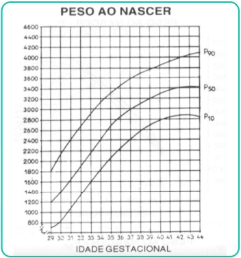
A RN pré-termo moderado, muito baixo peso, pequeno para idade gestacional
B RN pré-termo moderado, extremo baixo peso, adequado para idade gestacional
C RN muito pré-termo, muito baixo peso, adequado para idade gestacional.
D RN muito pré-termo, extremo baixo peso, pequeno para idade gestacional.
Questão 407 · Pediatria · 4000193866Após ouvirem no rádio que a cidade onde moram apresentou alguns casos de sarampo, a família Silva procurou a Unidade de Saúde para se vacinar. São eles: - João Silva, 32 anos, não tem carteira de vacinação. - Maria Silva, 28 anos, não tem carteira de vacinação. - Júnior Silva, 12 anos, caderneta de vacinação completa até os 4 anos. - Ana Silva, 8 meses, caderneta de vacinação completa até agora. Sobre a vacinação da família Silva contra o sarampo, podemos afirmar:
A João precisa ser vacinado com duas doses da vacina tríplice viral.
B Maria precisa ser vacinada com três doses da vacina tríplice viral.
C Júnior precisa receber uma dose de reforço da tetra viral.
D Ana precisa receber a dose zero da tríplice viral e, depois, seguir o calendário vacinal normal.
Questão 408 · Pediatria · 4000193865Em 2022, entrou em vigor a lei nº 14.154 que ampliou o rastreamento de doenças no Programa Nacional de Triagem Neonatal. A introdução das doenças será feita em etapas. Na primeira etapa, está prevista a introdução da triagem para:
A Toxoplasmose congênita
B Síndrome de Edwards
C Adrenoleucodistrofia
D Síndrome de Gilbert
Questão 409 · Pediatria · 4000193864Menino de 6 anos é trazido para consulta com queixa de “intestino preso”. Sua mãe relata que ele evacua 2 vezes na semana, com fezes endurecidas e que chegam a entupir o vaso sanitário. Além disso, sente muita dor, por isso se esconde quando tem vontade de evacuar. Nos últimos 6 meses, vem perdendo fezes na cueca diariamente. De hábitos alimentares, gosta muito de leite e come pouca fruta e verduras. Seu peso, estatura e desenvolvimento estão adequados para a idade. Ao exame físico, tem fecaloma palpável e, ao toque, fezes presentes no reto. Qual é a primeira medida a ser tomada para essa criança?
A Solicitar parasitológico de fezes.
B Iniciar medicamento laxativo.
C Solicitar radiografia de abdome contrastado.
D Encaminhar à psicoterapia.
Questão 410 · Pediatria · 4000193863Uma criança de 4 anos chega ao pronto socorro com história de febre há 5 dias, tosse, coriza e inapetência. Ao exame físico, encontra-se afebril com FC: 110 bpm, FR: 44 irpm, presença de retração subcostal, com oximetria de 97% em ar ambiente. A ausculta do aparelho respiratório revela estertores nos em campo médio direito. Diante desse caso hipotético, indique o diagnóstico e a conduta apropriada.
A Pneumonia, tratamento com amoxicilina por 7 dias.
B Pneumonia grave, tratamento com ceftriaxone intramuscular.
C Pneumonia atípica, tratamento com claritromicina.
D Pneumonia grave, tratamento com penicilina cristalina endovenosa em regime de internação hospitalar
Questão 411 · Pediatria · 4000193862A mãe de um lactente de 4 meses que recebe aleitamento materno deseja retornar ao trabalho e solicita orientações sobre a alimentação de seu filho. Ela relata que deseja manter o aleitamento, mas não sabe como fazê-lo. De acordo com as recomendações do Ministério da Saúde, indique as orientações apropriadas:
A Como o lactente tem 4 meses, deve-se iniciar a oferta de sucos e, depois, papa de frutas, o leite materno deve ser dado nos horários em que o lactente estiver com a mãe.
B Deve-se manter o aleitamento materno nos horários em que a mãe estiver com o lactente e começar com fórmula nos horários em que a mãe estiver trabalhando.
C Deve-se orientar a ordenha do leite materno com conservação apropriada, pelo menos, quinze dias antes de voltar a trabalhar, mantendo o aleitamento materno.
D Deve-se complementar as mamadas com fórmula quinze dias antes da mãe começar a trabalhar para que o lactente vá se acostumando. Depois, ordenhar o leite e oferecer na mamadeira, complementando com fórmula.
Questão 412 · Pediatria · 4000193861Lactente de 8 meses, faz acompanhamento pediátrico de rotina e comparece ao pronto-socorro devido à febre de até 39°C há 3 dias, vômitos e diminuição do volume urinário. O exame físico não evidencia foco infeccioso. Ao exame físico, encontra-se toxemiado, desidratado, taquicárdico e com discreta distensão abdominal. O exame de sedimento urinário revela leucocitúria e nitrito positivo. Diante desse caso hipotético, indique a conduta apropriada:
A Iniciar tratamento para infecção urinária com antibioticoterapia oral e solicitar ultrassonografia de rins e vias urinárias.
B Orientar a mãe que o quadro é de bacteriúria assintomática e que a conduta deve ser expectante.
C Indicar internação e iniciar antibioticoterapia endovenosa, após a coleta de urocultura por método apropriado.
D Solicitar urocultura e, se vier alterada, iniciar antibioticoterapia oral.
Questão 413 · Pediatria · 4000193860Você atende uma menina de 4 anos de idade na UBS em consulta de rotina. Durante a anamnese você constata que ela ingere bebidas açucaradas diariamente e come “salgadinhos” nos intervalos das refeições. Quando retorna da escola, permanece em casa brincando com telas e não gosta de brincar ao ar livre. Não se observam alterações ao exame físico e os dados antropométricos revelam 20 Kg e estatura de 100 cm. De acordo com os dados antropométricos e utilizando o gráfico abaixo, indique a classificação nutricional dessa criança, referente ao índice de massa corpórea (IMC): https://www.sbp.com.br/fileadmin/user_upload/Curva_de_IMC._OMS._Meninas__de_0_a_5_anos._Escore_ Z.pdf
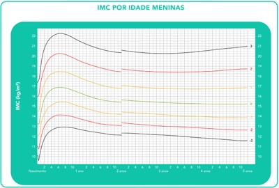
A Risco de sobrepeso
B Sobrepeso
C Obesidade
D Obesidade grave
Questão 414 · Pediatria · 4000193859Uma criança de três anos vem apresentando febre de difícil controle há seis dias e manchas na pele. Recebeu 4 dias de amoxicilina sem melhora devido à amigdalite. Ao exame físico, apresenta exantema difuso não pruriginoso em tronco e membros, hiperemia conjuntival bilateral sem secreção, linfonodo de 2 cm em região cervical anterior esquerda e lábios hiperemiados e rachados. De acordo com a hipótese diagnóstica mais provável, indique a conduta mais apropriada para o tratamento dessa criança:
A Antibioticoterapia de amplo espectro
B Imunoglobulina endovenosa
C Vitamina A
D Antitérmico
Questão 415 · Medicina Preventiva · 4000193858Durante uma visita domiciliar, a Agente Comunitária de Saúde (ACS) Leila foi acompanhada por dois estudantes de Medicina que faziam o Internato Rural na pequena cidade de Santo Antônio. Ao chegarem na casa, localizada em uma das melhores regiões do bairro, foram recebidos pela sorridente Dona Cassandra, uma idosa de 68 anos, antiga líder da comunidade. Há cerca de 5 anos, seu esposo, Sr. José Flávio, de 75 anos, sofreu um acidente automobilístico e acabou perdendo uma das pernas, cando, desde então, sob cuidados intensivos de Dona Cassandra. Durante a visita, a ACS e os estudantes caram boquiabertos ao ver como a idosa mantinha a casa de 4 cômodos em perfeito estado de conservação, além d e observarem como o Sr. José Flávio estava bem cuidado. Apesar de não saber ler, Dona Cassandra mostrou com maestria quais eram as medicações que deveria oferecer ao marido, bem como as medicações que ela faz uso para tratamento da hipertensão. Por m, o Sr. José Flávio, também muito sorridente, a rmou que se não fosse pela falta da perna, tudo estaria perfeito. Ao nal da visita, os dois estudantes e a ACS resolveram aplicar a Escala de Coelho e Savassi para o caso da visita domiciliar. Assinale a alternativa que mostra com que intuito a escala foi aplicada e o resultado obtido.
A Avaliação das Atividades da Vida Diária: 3 - Dependente para TRÊS atividades.
B Avaliação da Vulnerabilidade Familiar: 6 - Vulnerabilidade familiar menor.
C Avaliação das Atividades da Vida Diária: 5 - Dependente para CINCO atividades.
D Avaliação da Vulnerabilidade Familiar: 9 - Vulnerabilidade familiar máxima
Questão 416 · Medicina Preventiva · Epidemiologia · Legislação sobre registros públicos Lei n 60151973 · 4000193857No nal do dia de atendimento na Unidade Básica Vila Madalena, a Dra. Marlúcia é chamada pela enfermeira Carla para comparecer à casa do Sr. José, um morador da região que acabara de falecer. Ele era acompanhado por toda a Equipe de Saúde da Família desde que sofreu um Acidente Vascular Encefálico, há 6 anos, que o deixou acamado e completamente dependente para as atividades básicas e instrumentais da vida diária. A morte ocorreu durante o dia, junto da família. Acerca da emissão da Declaração de Óbito (DO), como a Dra. Marlúcia deve proceder?
A Deve emitir a DO da própria Unidade de Saúde e solicitar que a enfermeira Carla leve a via amarela para os familiares.
B Não deve emitir a DO, já que não presenciou o óbito, solicitando que o cadáver seja encaminhado ao Serviço de Verificação de Óbitos (SVO) do Município, para ser submetido ao exame necroscópico por patologista, que determinará a causa mortis e se responsabilizará pela emissão da DO.
C Deve emitir a DO, após exame direto do corpo, caso não sejam encontradas evidências de morte por causa externa ou suspeita, já que o paciente apresentava condição de saúde conhecida pela equipe e estava em acompanhamento na UBS. Após a emissão, a via rosa deve ser arquivada no prontuário do paciente na Unidade Básica de Saúde.
D Deve solicitar que a Enfermeira Carla emita a DO, após exame direto do corpo, pois se trata de paciente cujo estado de saúde é conhecido por toda a equipe, portanto todos estão legalmente aptos a emitir esse documento.
Questão 417 · Medicina Preventiva · 4000193856Em um estudo de coorte, realizou-se ao longo de 10 anos o acompanhamento de uma população de 800 indivíduos para observar a incidência de neoplasias cutâneas naqueles expostos diariamente a longos períodos sob o sol. Dos 300 indivíduos que tinham altos níveis de exposição solar, 50 desenvolveram algum tipo de câncer de pele ao longo da observação. Por outro lado, nos 500 que não se expunham ao sol de forma prolongada ao longo do dia, 20 desenvolveram doenças malignas da pele. Diante disso, assinale a alternativa que apresenta a principal medida de associação a ser calculada nesse tipo de estudo e seu respectivo valor aproximado.
A OR
B RR (Risco relativo) = 4,2.
C OR (Odds ratio) = 0,2.
D RR (Risco relativo) = 0,25.
Questão 418 · Medicina Preventiva · 4000193855O genograma é um dos principais instrumentos de abordagem familiar utilizados na Atenção Primária à Saúde (APS). Uma das mais importantes habilidades para confeccioná-lo, é reconhecer sua simbologia e o que ela significa. Observe os cinco símbolos abaixo. Após avaliá-los, relacione com a coluna abaixo, que contém os significados possíveis, e assinale a alternativa que contém a adequada correspondência. A - Relação conflituosa B - Homem C - Abuso de álcool ou drogas D - Divórcio E - Relação de proximidade
A I - B; II - D; III - E; IV - A; V - C.
B I - C; II - E; III - A; IV - D; V - B.
C I - C; II - A; III - D; IV - E; V - B.
D I - B; II - D; III - A; IV - E; V - C.
Questão 420 · Medicina Preventiva · 4000193853Acerca dos níveis de prevenção em saúde, baseados no ideário mais atual no assunto, mas também nas ideias centrais do modelo de Leavell & Clark, assinale a alternativa correta:
A A prevenção quinquenária debruça-se sobre os cuidados e medidas preventivas empreendidas sobre o cuidador. A prevenção do adoecimento dele, sobretudo do ponto de vista mental, acaba por funcionar como uma via de mão dupla, em que aquele que cuida tem sua saúde colocada em evidência e, a partir disso, aquele que recebe os cuidados se beneficia, pois um cuidador saudável exerce sua função com maior aptidão, resultando em menores índices de iatrogenias.
B Diante de um paciente com hipertensão arterial sistêmica, o controle da ingesta de sal e o estímulo à prática diária de atividades físicas enquadram-se como medidas de prevenção primária
C Crianças e adolescentes são o principal grupo-alvo das medidas de prevenção quaternária, pois são a população sob maior risco de hipermedicalização, portanto intervenções em saúde são mais danosas do que benéficas.
D Os rastreios ou
Questão 421 · Medicina Preventiva · 4000193852O Programa Saúde na Hora, lançado pela Secretaria de Atenção Primária à Saúde (APS) do Ministério da Saúde (Saps/MS) em 2019, trouxe uma grande revolução no funcionamento do nível primário de atenção em nosso país. Acerca desse programa, assinale a alternativa incorreta:
A Atualmente, o programa conta com quatro modalidades, entre elas, a Unidade de Saúde da Família (USF) com funcionamento mínimo de 75 horas semanais com Saúde Bucal, estando aberta à população por 15 horas diárias ininterruptas, de segunda-feira a sexta-feira, ou funcionamento de 5 horas aos sábados e/ou domingos.
B Entre os objetivos do programa, podemos listar o oferecimento de suporte aos municípios para o enfrentamento da Emergência de Saúde Pública de Importância Internacional causada pelo SARS- CoV-2.
C Caso haja interesse por parte do município em aderir ao programa, ele deve ter unidade de saúde cadastrada no Cadastro Nacional de Estabelecimentos de Saúde (CNES) e quantitativo mínimo de equipes exigido para o formato de funcionamento escolhido.
D Como forma de incentivar os municípios a aderirem ao programa, o Governo Federal estabeleceu incentivo financeiro para aqueles que fizerem parte desse novo projeto, contudo o fato do valor de incentivo ser o mesmo, independentemente da modalidade escolhida, foi alvo de duras críticas por parte dos gestores municipais.
Questão 422 · Medicina Preventiva · 4000193851Você trabalha como médico em uma Unidade Básica de Saúde do interior desde que terminou sua Residência em Medicina de Família e Comunidade, há cerca de 4 anos. Ao longo desse tempo, criou vínculos com a comunidade e acompanhou diversas famílias. Ao nal do dia de atendimento, quando estava de saída, você é abordado por Dona Terezinha, paciente pertencente a sua equipe, esposa do Sr.Galvão, também seu paciente, falecido há 1 ano em decorrência de um acidente automobilístico. Ela solicita acesso ao prontuário do marido, alegando ter direito às informações médicas do esposo. Diante dessa situação, tendo por base o Código de Ética Médica (CEM) do Conselho Federal de Medicina (CFM) do Brasil, qual deverá ser sua conduta?
A Oferecer acesso ao prontuário, já que se trata de solicitação do cônjuge.
B Declarar impedimento, já que não existem motivos para quebra do sigilo nessa situação.
C Fornecer cópia do prontuário, já que o paciente é falecido, não implicando essa ação em quebra do sigilo.
D Declarar impedimento, pois, como a causa-base da morte foi externa, apenas a justiça pode oferecer acesso à esposa, e a outros familiares, ao prontuário.
Questão 423 · Medicina Preventiva · 4000193850Analise as três situações abaixo: I - Casal oriundo da Venezuela instala-se no Brasil e estabelece moradia no estado de Roraima. A mulher está grávida e passa a ter seu acompanhamento pré-natal feito em uma Unidade Básica de Saúde próxima de sua casa. II - Idoso com problemas de acuidade visual é avaliado na Atenção Primária à Saúde e é suspeitado o diagnóstico de catarata. Ele, então, é encaminhado ao centro de especialidades médicas, passa por consulta oftalmológica e tem seu diagnóstico de catarata confirmado. Está com cirurgia de facoemulsi cação agendada para daqui a três semanas. III - Em razão do período de colheita do café, de forma a facilitar o acesso dos trabalhadores nela envolvidos, os pro ssionais de uma Unidade Básica de Saúde que apresenta mais da metade da população adscrita empregada na lavoura cafeeira, decide ampliar o horário de funcionamento da unidade, abarcando parte do período noturno três vezes na semana. Assinale a alternativa que contém os três princípios doutrinários do Sistema Único de Saúde (SUS) que foram empregados em cada uma das situações descritas:
A I - Universalidade; II - Hierarquização; III - Longitudinalidade.
B I - Integralidade; II - Controle Social; III - Universalidade.
C I - Universalidade; II - Integralidade; III - Equidade.
D I - Equidade; II - Acesso; III - Universalidade.
Questão 424 · Medicina Preventiva · 4000193849A Vigilância Sanitária é um dos componentes da Vigilância em Saúde, apresentando um definidas. Tendo isso em vista, são ações da Vigilância Sanitária, exceto:
A Controle regular e fiscalização de serviços de hemoterapia.
B Pulverização de inseticidas contra o mosquito
C Visita às fábricas produtoras de equipamentos médicos.
D Fiscalização de estabelecimentos que comercializam produtos alimentícios.
Questão 430 · Etiologias específ icas · Derrame pleural tuberculoso · Exsudato X Transudato · 4000186321A respeito da diferenciação entre transudatos e exsudatos para o correto manejo de pacientes com derrame pleural, analise as afirmativas. I. Os transudatos são, em sua maior parte, bilaterais; já os exsudatos se apresentam, na maioria das vezes, de forma unilateral. II. Os critérios de Light são parâmetros clínicos utilizados na diferenciação entre transudatos e exsudatos. III. A etiologia mais frequente de derrame pleural do tipo transudato é a insuficiência renal. IV. O derrame pleural secundário à tuberculose é normalmente do tipo exsudativo com valores de adenosina deaminase acima de 40 UI/L. Estão corretas as afirmativas
A I e IV, apenas.
B II e III, apenas.
C I, II e III, apenas.
D II, III e IV, apenas.
Questão 431 · Anatomia e Fisiopatologia · 4000186320As hemorroidas são estruturas vasculares normais no canal anal. Aproximadamente 5% da população geral é afetada por sintomas relacionados à doença hemorroidária. Em relação à anatomia, características clínicas e fisiopatologia das hemorroidas, é correto afirmar:
A A artéria retal inferior é ramo direto da artéria ilíaca interna e principal responsável pelo suprimento arterial para as hemorroidas internas.
B A doença hemorroidária é caracterizada por dilatação anormal das veias do plexo hemorroidário interno, distensão das anastomoses arteriovenosas, prolapso dos coxins anais e destruição do tecido conectivo de ancoragem.
C O principal referencial anatômico para classificação das hemorroidas é a borda anal. As hemorroidas internas estão acima e as externas abaixo da borda anal.
D A hemorroida de terceiro grau permanece sempre exteriorizada e irredutível, com ou sem sangramento, podendo evoluir para isquemia, trombose ou gangrena.
Questão 432 · Complicações · Diverticulite do Lado Direito · Fisiopatologia · 4000186319A prevalência da diverticulose tem aumentado tanto no ocidente quanto em países que adotaram um estilo de vida mais ocidental. A doença diverticular do cólon é uma causa importante de internações hospitalares. Vários fatores de estilo de vida têm sido associados à doença diverticular. Sobre essa doença, analise as afirmativas a seguir. I. Alta ingestão de carne vermelha, dieta pobre em bra alimentar e tabagismo estão associados ao risco de desenvolver doença diverticular. II. Ao contrário da diverticulite, que ocorre principalmente no cólon esquerdo, o sangramento diverticular ocorre principalmente no cólon direito. III. Existem evidências cientí cas robustas que apoiam o uso da mesalazina associado a probióticos para prevenir a recorrência de episódios de diverticulite. Está correto o que se afirma em
A I e II, apenas.
B I, apenas.
C II e III, apenas.
D I, II e III.
Revisar: possível letra faltando em enunciado
Questão 433 · Tipos histológicos · Neoplasia pulmonar · 4000186318O câncer de pulmão é o 3º responsável pelos óbitos de câncer em homens e o 4º em mulheres. Sobre esse tipo de câncer, assinale a afirmativa correta.
A Aproximadamente 20% dos casos estão associados ao consumo de bebida alcoólica.
B É o câncer de maior prevalência nos pacientes do sexo feminino.
C Os tipos histológicos mais comuns são os carcinomas de não pequenas células (que incluem adenocarcinoma de células escamosas e os carcinomas
D De acordo com o Tratado de Tumores Malignos (TNM), 8ª edição, o derrame pleural neoplásico passa a não ser mais considerado metástase.
Questão 434 · Quadro Clínico e Indicações de Tomograf ia de Crânio · Hematoma Extradural · 4000186317Traumatismo Craniencef álico Paciente do sexo masculino, 25 anos, encontra-se internado na Unidade de Tratamento Intensivo p o r traumatismo cranioencefálico grave. A tomogra a computadorizada de crânio encontra-se representada abaixo. Considerando o diagnóstico radiológico, qual é a causa mais relacionada a essa alteração?
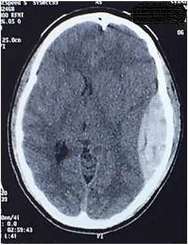
A Laceração do seio transverso da dura-máter junto ao seu trajeto lateral na base do crânio.
B Estiramento e ruptura de veias-ponte presentes na aracnoide.
C Extravasamento de sangue a partir de lacerações do parênquima cerebral.
D Ruptura da artéria meníngea média em seu trajeto junto à escama temporal.
Questão 435 · Acidose metabólica · 4000186316Paciente masculino, 35 anos, 70 Kg, vítima de acidente automobilístico, é admitido na unidade de pronto atendimento em urgência e emergência, via SAMU, apresentando FC 125 bpm, PA 110/60 mmHg, FR 2 6 irpm, SatO2 91%, temp. axilar 35°C; ansioso, porém responsivo, negou comorbidades, referiu última refeição há 4h e a carteira de identidade demonstra tipo sanguíneo AB+. Apresenta fratura exposta em perna esquerda e ferimento penetrante na cavidade abdominal. Após condutas necessárias realizadas, o paciente foi submetido à intubação orotraqueal (IOT) em sequência rápida e mantido sob ventilação mecânica. Foi colhida a gasometria arterial que mostrou os seguintes resultados: pH 7,20; pCO₂ 35 mmHg; HCO₃- 10 mmol/L BE -16 mmol/L; K+ 5.9 mEq/L; Hb 8g/dL; Hct 25%. Sem alterações evidenciadas n a monitorização. Foram transfundidas, inicialmente, duas unidades de concentrado de hemácias e três unidades de plasma fresco congelado. Com base no caso, qual o distúrbio ácido básico apresentado?
A Acidose respiratória
B Alcalose metabólica
C Acidose metabólica
D Alcalose respiratória
Questão 436 · Ecocardiograma · Risco Cirúrgico · Hipertensão Arterial Sistêmica · 4000186315Paciente masculino, 46 anos, tabagista, obeso, portador de diabetes mellitus insulinodependente compensado e hipertensão arterial sistêmica controlada com inibidor da enzima conversora de angiotensina. Está programada a cirurgia de colecistectomia aberta, razão pela qual é solicitada a avaliação pré-anestésica. Ao exame físico, constata-se presença de barba volumosa, uso de prótese superior e inferior, micrognatia e Teste de Mallampati classificação II. Revisão de sistemas sem alterações e exames laboratoriais dentro da normalidade. Marque V para as afirmativas verdadeiras e F para as falsas. ( ) A última diretriz de avaliação cardiovascular perioperatória da Sociedade Brasileira de Cardiologia não recomenda a suspensão dos inibidores da enzima conversora de angiotensina no perioperatório. ( ) O risco pertinente ao procedimento cirúrgico se refere à provável ocorrência de e v e n t o s cardiovasculares perioperatório, independentemente do estado clínico do paciente. A colecistectomia aberta, portanto, é um procedimento de baixo risco (<1%). ( ) A realização de ecocardiograma transtorácico é recomendada para todos os pacientes portadores d e hipertensão arterial sistêmica, pois oferece informações adicionais de risco, a exemplo da fração de ejeção, que interferem na escolha das medicações anestésicas. ( ) Conforme a Sociedade Americana de Anestesiologia (ASA), o paciente descrito é classificado como ASA II, isto é, aquele que apresenta doença sistêmica leve a moderada. Assinale a sequência correta.
A V, V, V, F
B F, F, V, V
C V, F, F, V
D F, V, F, F
Questão 437 · Anestésicos Locais · Potência · Ação · 4000186314Procedimentos com anestesia local são frequentes tanto no âmbito da atenção básica à saúde quanto das urgências e emergências. Em relação aos anestésicos locais, analise as afirmativas a seguir. I. Os anestésicos locais bloqueiam de forma reversível a transmissão de impulsos autônomos, sensoriais e motores, nessa sequência e dependente da dose, devido à diferença na composição e diâmetro das fibras nervosas. II. Cada anestésico local possui uma concentração mínima efetiva peculiar e necessária para bloquear a condução dos impulsos nervosos, refletindo as diferentes potências de cada fármaco. III. Nas doses recomendadas de bupivacaína (2-3 mg/Kg), a baixa toxicidade sistêmica relaciona-se à alta capacidade de conjugação a proteínas plasmáticas, diminuindo a sua distribuição pelos tecidos corporais. Está correto o que se afirma em
A I, apenas.
B I, II e III.
C I e II, apenas.
D II e III, apenas.
Questão 438 · Procedimentos à Beira Leito · 4000186313Durante a técnica infraclavicular de punção da veia subclávia para realização de acesso venoso central, a ponta da agulha deve ser posicionada na direção de qual estrutura?
A Fúrcula esternal
B Apêndice xifoide
C Mamilo contralateral
D Mamilo ipsilateral
Questão 439 · Manif estações Clínicas e Exame Físico · 4000186312Paciente de 60 anos de idade, sexo masculino, procura o PA Adulto de Hospital Municipal com quadro há um dia de dor abdominal, localizada em anco direito, intermitente, tipo cólica, forte intensidade, associada a náuseas, vômitos e febre não termometrada. O médico plantonista inicia o tratamento clínico com medicamentos sintomáticos, com pouca melhora, e faz a hipótese diagnóstica de abdome agudo. Qual a principal hipótese etiológica dessa dor abdominal?
A Abscesso de psoas
B Diverticulite de Meckel
C Abscesso hepático
D Colecistite
Questão 440 · Clínica Médica · 4000186311Homem, 31 anos, procurou atendimento médico pois notou nódulo em axila esquerda que vem aumentando de tamanho, associado à fadiga, perda de peso e febre não aferida. Foi submetido à biópsia, em que foram visualizadas células gigantes, multinucleadas, com nucléolos evidentes, compatíveis com células de ReedSternberg. Diante do quadro clínico e do resultado da biópsia, qual a hipótese diagnóstica?
A Tuberculose ganglionar
B Linfoma de Hodgkin
C Linfoma não Hodgkin
D Micose fungoide
Questão 441 · Clínica Médica · 4000186310Homem, 72 anos, com cirrose hepática, causada pelo vírus da hepatite C, vem em consulta no ambulatório de hepatologia acompanhado pelo lho, apresentando icterícia ++/4+ e distensão abdominal por volumosa ascite não controlada por paracentese. Filho refere que o pai tem apresentado quadros de confusão mental. Em relação à classificação de Child Pugh, quais exames são necessários para avaliar se o paciente tem indicação de transplante hepático?
A Bilirrubinas, ureia sérica e tempo de protrombina.
B Bilirrubinas, albumina sérica e tempo de protrombina.
C Bilirrubinas, ureia sérica e gamaglutamiltransferase.
D Bilirrubinas, albumina sérica e gamaglutamiltransferase.
Questão 442 · Clínica Médica · 4000186309Mulher, 55 anos, chega ao pronto atendimento trazida pelo SAMU, torporosa, evoluindo com convulsão e coma. Ao exame físico: PA= 90 x 50 mmHG, FC= 120 bpm, FR= 18 irpm, pulsos nos. Realizados exames laboratoriais com os seguintes resultados: glicemia 1020 mg/dL, Na+ 125 mEq/L, K+ 3,5 mEq/L, ureia 150 mg/dL, creatinina 2,9 mg/dL, urina tipo I com glicose 4+ e corpos cetônicos 1+, gasometria com pH 7,4 0, bicarbornato 20 mEq/L e Osmolaridade 360 mOsm/kg água. Em relação ao quadro clínico- laboratorial, trata-se de
A estado hiperglicêmico hiperosmolar, causado pelo diabetes tipo II.
B cetoacidose diabética, causada pelo diabetes tipo I.
C uremia, devido à desidratação e insuficiência renal crônica.
D hiponatremia, devido à desidratação pelo diabetes tipo I.
Questão 443 · Clínica Médica · 4000186308Homem, 65 anos, hipertenso e tabagista, vem ao ambulatório com queixa de dispneia progressiva há 8 anos. Apresenta tosse crônica com expectoração clara e, neste último mês, evoluiu com dispneia aos pequenos esforços. Ao exame físico: FR= 25 irpm, murmúrio vesicular diminuído difusamente, estase jugular, hepatomegalia 2 cm do rebordo costal direito e edema +++/4+ nos membros inferiores. Demais dados do exame físico sem alterações. Os achados do exame clínico correspondem à doença pulmonar obstrutiva crônica com
A falência de ventrículo esquerdo e insuficiência cardíaca congestiva.
B hipertensão arterial, evoluindo para insuficiência cardíaca congestiva.
C quadro de exacerbação aguda, evoluindo para insuficiência respiratória.
D hipertensão pulmonar, insuficiência cardíaca direita e cor pulmonale.
Questão 444 · Clínica Médica · 4000186307Mulher, 60 anos, em acompanhamento há 15 anos de artrite reumatoide, apresentando deformidades e m mãos, retorna ao ambulatório com raio X de mãos e punhos com as seguintes alterações radiológicas: hiperextensão das articulações interfalangeanas proximais e exão das articulações interfalangeanas distais. Esses achados correspondem à deformidade em
A dedos em fuso.
B dedos em botoeira.
C pescoço de cisne.
D dedos em martelo.
Questão 445 · Clínica Médica · 4000186306Homem, 28 anos, admitido na emergência com história de oligúria, urina escura, mialgia generalizada, náuseas e vômitos. Tabagista (20 maços/ano) e usuário de cocaína há 5 anos, cerca de 4 vezes por semana. Nega uso de drogas injetáveis. Refere uso de cocaína inalatória ontem. Exame físico: orientado, desidratado ++/4+, FC= 110 bpm, FR= 20 irpm, PA= 150x100 mmHg, Temp. axilar 36,8° C. Dor à palpação da musculatura difusamente em membros inferiores e avaliação da força muscular limitada pela dor. Demais achados do exame físico sem alterações. Em relação ao quadro clínico do paciente, qual a hipótese diagnóstica?
A Insuficiência renal aguda por rabdomiólise
B Nefrite intersticial aguda
C Glomerulonefrite difusa aguda
D Vasculite imune de grandes vasos
Questão 446 · Clínica Médica · 4000186305Homem, 37 anos, agricultor, procedente de Belém do Pará, vem à consulta com queixa de febre há 30 dias, não mensurada, episódios de náuseas e vômitos. Nos primeiros 15 dias, a febre era diária seguida d e calafrios. Após esse período, a febre surgia a cada 2 dias, com início abrupto seguido por calafrios e sudorese intensa. Fez uso de dipirona 1g. Nega doenças prévias. Ao exame físico: REG, mucosas hipocoradas ++/4+, PA= 120 x 80 mmHg, FC= 99 bpm, FR= 18 irpm, temp. axilar 39° C, Peso = 70 kg. Abdome globoso, fígado palpável 2 cm do rebordo costal direito e baço palpável 3 cm do rebordo costal esquerdo. Demais dados do exame físico sem alterações. Foi realizada hematoscopia do sangue periférico com presença de paciente?
A Cloroquina 7 dias e primaquina 3 dias, dose única, após as refeições.
B Cloroquina 3 dias e primaquina 7 dias, dose única, após as refeições.
C Arteméter 3 dias e lumefantrina 5 dias, de 12/12 horas, em jejum.
D Artesunato+mefloquina 3 dias e primaquina 14 dias, dose única, após as refeições.
Questão 447 · Clínica Médica · 4000186304João, 65 anos, veio à consulta ambulatorial trazido pela lha, que queixa estar envergonhada com a mudança de comportamento do seu pai. Há cerca de 4 meses, começou a dizer frases de cunho sexual para a funcionária doméstica da casa, tem falado palavras de baixo calão para pessoas desconhecidas. Refere ainda que não pode deixar restos de comida na mesa, que come tudo, principalmente se for doce e só toma banho se for à noite, caso contrário ca extremamente irritado. O quadro clínico e comportamental do João corresponde à demência
A de corpos de Lewy.
B frontotemporal.
C de Alzheimer.
D de Parkinson.
Revisar: possível letra faltando em enunciado
Questão 448 · Clínica Médica · 4000186303Feminino, 30 anos, vem ao ambulatório com queixa de fraqueza inicialmente em membros inferiores há 3 dias, evoluindo com piora da força muscular em membros superiores há 2 dias. Refere um quadro diarreico há 2 semanas antes do início dos sintomas atuais. Nega disfagia, diplopia, perda de controle es ncteriano, sem nível sensitivo. Nega comorbidades ou história familiar de doença neurológica. Qual o manejo correto desta paciente?
A Acompanhamento ambulatorial, pois se trata de
B Internação hospitalar, pois se trata de uma crise miastênica, devendo ser realizada eletroneuromiografia e prescrita imunoglobulina humana.
C Internação hospitalar, pois se trata de uma síndrome de Guillain Barré, devendo ser realizada coleta de líquor e prescrita imunoglobulina humana.
D Acompanhamento ambulatorial, pois se trata de uma síndrome de Guillain Barré, devendo ser realizada coleta de líquor e prescrita prednisona.
Questão 449 · Clínica Médica · 4000186302A maior causa de morte no Brasil e no mundo é de origem cardiovascular, que corresponde a cerca de 30% de todas as causas, sendo a insu ciência cardíaca a grande responsável pela maior parte desses óbitos. H á diversas medicações que se mostram e cientes na redução da mortalidade. Nesse contexto, assinale o fármaco que possui efeito benéfico na redução da mortalidade cardíaca.
A Atenolol
B Digoxina
C Furosemida
D Dapagliflozina
Revisar: possível letra faltando em enunciado
Questão 450 · Tratamento · 4000186301Nuligesta, 26 anos, vem tentando engravidar há 4 anos, sem sucesso. Queixa-se de dispareunia profunda e dor pélvica, informando que a dor piora bastante no período menstrual. Ao toque vaginal, observa-se útero retrovertido, xo, sensível ao toque e à presença de nodulações no ligamento útero-sacral. Após avaliar exames complementares, o médico indica uma videolaparoscopia com biópsia, chegando ao diagnóstico nal. Ao receber explicações sobre as opções de tratamento, a paciente opta pelo uso de um implante liberador de etonogestrel e 6 meses depois, na consulta de retorno, relata alívio significativo do quadro álgico. A melhora da sintomatologia ocorreu porque o medicamento escolhido
A agiu no hipotálamo, bloqueando a síntese de gonadotrofinas.
B inibiu de forma não seletiva as enzimas COX-1 e COX-2.
C provocou a degradação enzimática das aderências na pelve.
D promoveu atrofia dos focos de tecido endometrial ectópico.
Questão 451 · Causas estruturais PALM · Pólipos uterinos · 4000186300Mulher de 47 anos, G2 PC2 A0, procura ginecologista queixando-se de sangramento menstrual prolongado. Relata que suas menstruações duravam em média 4-5 dias, mas nos últimos 6 meses o sangramento vem se prolongando por até 10 dias. Informa que realizou laqueadura tubária há 13 anos e desde então não faz uso de contraceptivos hormonais. Nega comorbidades. Após realização de exame físico e avaliação dos exames complementares, o médico conclui que a causa do sangramento anormal é de ordem estrutural. Qual achado é compatível com o caso descrito?
A Distúrbio de coagulação
B Cisto folicular de ovário
C Pólipo endometrial
D Síndrome dos ovários policísticos
Questão 452 · DIU liberador de levonorgestrel · Contraindicações · 4000186299Mulher casada, G2 P2 A0, 38 anos, tabagista 1 maço/dia, dislipidêmica e hipertensa, teve o último parto há 4 anos. Faz uso regular de sinvastatina 20 mg/dia e losartana 50 mg/dia, mantendo PA em níveis adequados. Informa fazer uso de Ciclo 21 (contraceptivo oral combinado) sem intervalo entre as cartelas, pois não deseja menstruar, estando bem adaptada ao método. Exame físico sem anormalidades, exceto por IMC = 38 Kg/m². Em relação à contracepção, qual a opção correta para essa paciente?
A Recomendar sistema intrauterino liberador de levonorgestrel.
B Manter contraceptivo oral combinado.
C Oferecer dispositivo intrauterino de cobre.
D Indicar laqueadura tubária.
Questão 453 · Síndrome de Rokitansky · 4000186298Paciente do sexo feminino, 16 anos, vem para consulta ginecológica acompanhada pela mãe. Relata que nunca menstruou e nega atividade sexual. Sem outras queixas ou afecções clínicas, apresenta ao exame clínico peso 55 kg, estatura 1,63 m, fácies atípica, Tanner M4P5, abdome sem visceromegalias, indolor à palpação. Ao exame ginecológico, vulva com anatomia típica, com pili cação normal, hímem anular integro, vaginometria com cotonete = 2 cm. Não foi realizado exame ginecológico com espéculo. Diante desses dados, qual a principal hipótese diagnóstica e conduta adequada para investigação?
A Atraso constitucional da puberdade; reavaliar clinicamente em 6 a 12 meses.
B Adrenarca isolada por hiperplasia congênita da suprarrenal; dosar 17-hidroxiprogesterona.
C Síndrome dos ovários policísticos; descartar outras causas de hiperandrogenismo.
D Amenorreia primária por síndrome de Mayer-Rokitansky-Kuster-Hauser; solicitar USG pélvica.
Questão 454 · Mamograf ia · Quadro clínico · Ultrassonograf ia · 4000186297Mulher, 40 anos, lactante em aleitamento materno exclusivo há 2 meses, relata ter identi cado há 3 meses, durante autoexame, um “caroço” na mama esquerda. Nega comorbidades ou doenças importantes n o histórico familiar. Informa que nunca fez exame de mamogra a. Ao exame físico, presença de nodulação endurecida com cerca de 3 cm em QSL da mama esquerda. Na axila, não foram palpados linfonodos suspeitos. Qual a conduta correta para esse caso?
A Aguardar a suspensão do aleitamento, pois a arquitetura mamária se modifica nessa fase, dificultando o diagnóstico por imagem.
B Indicar biópsia por core biopsy, pois, após os 40 anos de idade, todo nódulo de mama deve ser investigado com exame anatomopatológico.
C Solicitar ultrassom de mama e mamografia, pois todo nódulo persistente em mulheres com mais de 30 anos necessita investigação.
D Proceder à exérese do nódulo por cirurgia, com pesquisa de linfonodo sentinela para avaliar a necessidade de ampliação das margens.
Revisar: possível letra faltando em enunciado
Questão 455 · Fases do ciclo menstrual · Ações do estrogênio e progesterona em outros órgãos · Ciclo menstrual · 4000186296Mulher, 23 anos, sem uso de contraceptivos há 3 meses, apresenta ciclos menstruais regulares com 28 dias de intervalo. Para detectar seu período fértil, ela vem observando as modi cações siológicas de sua secreção vaginal. Há 1 semana notou a presença de muco abundante e lante, mas hoje a secreção está mais escassa e viscosa. Qual o perfil das gonadotrofinas encontrado hoje?
A Ascensão constante desde o início do ciclo
B Queda em relação ao início do ciclo
C Secreção estável desde o início do ciclo
D Queda em relação ao meio do ciclo
Questão 456 · Conduta inicial na RPM · Conduta na RPM entre 24 a 33 67 semanas · 4000186295Multípara, 38 anos, com 29 semanas de gestação, relata 3 episódios de perda de líquido por via vaginal nas últimas 24 horas. Nega contrações ou queixas urinárias e relata boa movimentação fetal. PA 120x70 mmHg, FC 78 bpm, Tax 36,6 ºC, AU 25 cm, BCF 128 bpm, dinâmica uterina ausente. Ao exame especular, colo com orifício em fenda, sem evidência de sangramento ou saída de líquido pelo orifício externo do c o lo mesmo após manobra de Valsalva. Toque não realizado. O teste de cristalização do muco cervical evidenciou aspecto em “folha de samambaia” e o teste com ta reagente evidenciou pH vaginal alcalino, acima de 6,5. Perante as evidências descritas, qual a recomendação para o caso?
A Internar, solicitar exames laboratoriais e de avaliação da vitalidade fetal; na ausência de sinais de infecção e/ou sofrimento fetal, indicar conduta expectante.
B Solicitar exames laboratoriais e cardiotocografia; na ausência de sinais de sofrimento fetal ou infecção materna, internar e prescrever misoprostol para indução do parto vaginal.
C Liberar a paciente com solicitação de ultrassonografia obstétrica para confirmar a ausência de amniorrexe, orientar retorno imediato caso ocorra novo episódio de perda de líquido ou dor.
D Solicitar realização ambulatorial de EAS, urocultura e ultrassonografia obstétrica, orientando retorno assim que os exames estiverem prontos.
Questão 457 · Indicações e contraindicações · 4000186294Paciente, G2 PN1 A0, 23 anos, IG 40 semanas e 4 dias, sem comorbidades e sem queixas, apresenta-se para avaliação de vitalidade fetal. PA 120 x 80 mmHg, FC 71 bpm e altura uterina 38 cm. Ao toque vaginal: colo posterior, médio, 40% apagado, dilatado 1 cm, apresentação cefálica no plano - 2 de De Lee. A gestante é direcionada para realização de per l biofísico fetal que revela índice de líquido amniótico de 4,3 cm, com tônus preservado, movimentos fetais e respiratórios presentes. A cardiotocogra a está representada abaixo. Qual a conduta obstétrica?

A Internar para realização de parto cesáreo.
B Maturação do colo com prostaglandina vaginal.
C Reavaliar vitalidade fetal com 41 semanas.
D Indução do parto com ocitocina em bomba de infusão.
Questão 458 · Conduta obstétrica · Préeclâmpsia com sinais de gravidade · Tratamento f armacológico · 4000186293Primigesta, 17 anos, sem pré-natal, com 33 semanas e 2 dias de gestação, procura maternidade, apresentando cefaleia intensa, náusea e edema de membros inferiores há 3 dias. Hoje, queixa-se de cefaleia occipital, vômitos, turvação visual e epigastralgia. Ao exame físico: PA 180 x 110 mmHg, dinâmica uterina ausente, tônus uterino normal, BCF 124 bpm. Ao toque vaginal, colo grosso, posterior, impérvio, sem perdas por via vaginal. A conduta correta para essa situação é:
A Solicitar exames laboratoriais, iniciar corticoterapia e prescrever sulfato de magnésio endovenoso. Indicar indução do parto vaginal com misoprostol.
B Realizar acompanhamento ambulatorial diário, solicitando mapa pressórico. Iniciar corticoterapia e prescrever uso regular de metildopa e nifedipina.
C Prescrever hidralazina endovenosa e gluconato de cálcio. Solicitar exames laboratoriais e indicar interrupção da gravidez em caso de persistência da hipertensão.
D Internar para estabilização materna, solicitar exames laboratoriais e avaliar a vitalidade fetal. Prescrever hidralazina endovenosa e sulfato de magnésio.
Questão 459 · Dieta · Conduta · Diagnóstico · 4000186292Mulher, 21 anos, G2 PN1 A0, IG: 29 semanas, sem comorbidades referidas, IMC 27 Kg/m² , retorna para consulta com o resultado de curva glicêmica (TOTG 75 gramas) jejum 93 mg/dL; 1ª hora 164 mg/dL; 2 ª hora 151 mg/dL. De acordo com os critérios recomendados pelo Ministério da Saúde (2016) para o diagnóstico de
A A paciente apresenta exame compatível com
B Os dados apresentados são compatíveis com
C O diagnóstico é de pré-diabetes, pois apenas um dos valores da curva glicêmica está alterado. Recomenda-se repetir TOTG 75 em 4 semanas.
D A curva glicêmica descrita apresenta valores normais. O médico deve tranquilizar a paciente e orientar seguimento pré-natal habitual.
Questão 460 · Aspectos Clínicos Quadro clínico e Diagnóstico · Doença de Kawasaki · 4000186291Lactente, masculino, 18 meses de idade, previamente hígido, foi levado à UPA com história de febre alta (39,2ºC), iniciada há 3 dias, acompanhada de tosse seca, rinorreia e congestão ocular não exudativa. Vacinas em dia. Ao exame, apenas hiperemia de orofaringe e membranas timpânicas. O médico solicitou Rx de tórax, com resultado normal. Liberou a criança para casa com Paracetamol, soro siológico para as narinas e higiene ocular, medicação que já costumava utilizar na criança. Paciente não apresentou melhora, persistindo com o quadro. Após 2 dias, evoluiu com dor abdominal difusa, diarreia (fezes semilíquidas 5x/dia, amareladas, sem muco, pus ou sangue, odor incaracterístico), hiperemia difusa em face, tronco e membros, edema em face, mãos e pés, eritema de mucosa oral e ssuras labiais. Retornou à UPA sendo atendido por outro pro ssional. Ao exame: REG, febril (Tax: 39ºC) taquicárdico, hiperemia ocular bilateral, anictérico e acianótico. Otoscopia mostrou hiperemia. Orofaringe com hiperemia e língua em framboesa. Pescoço com linfonodos palpáveis à direita, sendo o maior com 1,5 cm de diâmetro e sem sinais ogísticos. AR: MV siológico, sem ruídos adventícios. ACV: RCR, 2t, sem sopros. Tempo de enchimento capilar menor que 3 segundos. Abdome plano, simétrico, sem dor à palpação profunda e sem visceromegalias. Genitália masculina sem alteração. SN sem sinais meníngeos. Pele com exantema difuso polimorfo, indolor e não pruriginoso e sinal de Nikolsky negativo. Qual a principal hipótese diagnóstica?
A Doença de Kawasaki
B Escarlatina
C Sarampo
D Toxoplasmose
Questão 461 · Diagnóstico · Sinais e sintomas · 4000186290Gestante dá entrada na maternidade do Hospital Universitário em trabalho de parto. Deu à luz a RN nascido masculino, parto vaginal e Apgar 8 e 9. Peso 2.480 g, 45 cm e PC 33 cm. Ao exame, apresentou, a o nascimento, características de crescimento intrauterino restrito (CIUR) e hepatoesplenomegalia. Mãe primigesta fez apenas duas consultas com 2 meses de gestação. Mora em fazenda no interior do estado. No alojamento conjunto, o RN evoluiu com icterícia tardia, sem incompatibilidade sanguínea, com aumento de bilirrubina direta e provas de função hepática alteradas. Foram solicitados exames para investigação: hemograma, sorologias materna e do RN para doenças de transmissão vertical, prova de função hepática, tomogra a craniana, US transfontanela e avaliação oftalmológica. Disponíveis até agora os seguintes resultados: I. A tomogra a de crânio, assim como o ultrassom transfontanela, evidenciou atro a cortical, calcificações intracranianas difusas e hidrocefalia. II. A avaliação oftalmológica mostrou sinais de coriorretinite em atividade. Qual a principal hipótese diagnóstica dessa doença congênita?
A Rubéola
B Sífilis
C Toxoplasmose
D Citomegalovírus
Questão 462 · Enurese Noturna · Classif icação quanto à evolução · Def inição · 4000186289Menino de 4 anos comparece à consulta com o médico da UESF acompanhado pela mãe, a qual relata que ele urina na cama quase toda noite durante o sono, desde que tentou tirar da fralda aos 2 anos. Refere, ainda, que durante o dia ca sem fralda e urina bem, jato forte, sem disúria e alteração na cor ou cheiro da urina. Nega constipação intestinal e diarreia. Aleitamento materno exclusivo até os 6 meses. Atualmente consome a mesma dieta da família. Caderneta de vacinas em dia. Nega doenças e uso de medicação. Ao exame: criança em BEG, afebril, corado, anictérica, acianótica. Otoscopia e orofaringe sem alteração. AR : Murmúrio vesicular siológico, simétrico, sem ruídos adventícios. ACV: RCR, 2t, sem sopros. Boa perfusão periférica. Abdome: plano, simétrico, indolor, sem visceromegalias. RHA normoativos. Genitália masculina: pênis bem formado, prepúcio retrai e expõe a glande, meato uretral bem posicionado, sem hiperemia, testículos tópicos. SN: sem sinais meníngeos. Pele: sem lesões. Foram solicitados exames da urina: EAS e Urocultura do jato médio, que se apresentam normais. Qual a principal hipótese diagnóstica?
A Enurese noturna secundária não monossintomática
B Enurese noturna primária monossintomática
C Enurese noturna secundária monossintomática
D Perda urinária ainda considerada fisiológica
Revisar: possível letra faltando em enunciado
Questão 463 · Anemia Fisiológica · 4000186288Paciente, sexo masculino, 2 meses e 10 dias de vida, veio encaminhado ao ambulatório de pediatria geral d o Hospital Universitário acompanhado da mãe, com história de que a cirurgia de hérnia inguinal foi suspensa devido à anemia da criança. Veio para investigação e tratamento. História Fisiológica: Parto normal, de termo, sem intercorrência e clampeamento tardio do cordão. Peso de 3.300 g, comprimento de 49 cm, PC de 34 cm e Apgar 9 e 10. Nega icterícia neonatal. Alimentação no seio materno exclusivo. Mãe primípara, 22 anos e fez pré-natal sem intercorrências. Nega doenças na família. Mãe A+ e RN O+ e VDRL negativo para ambos. Peso atual de 5.600 g, comprimento de 58 cm, e PC de 39 cm. Exame físico: BEG, afebril, hipocorada (++/4+), anictérica, acianótica, ativa e reativa. Cabeça e pescoço sem alteração. AR: MVF s e m ruídos adventícios. ACV: RCR, 2t, sem sopros e tempo de enchimento capilar <3 segundos. Abdome semigloboso, simétrico, sem visceromegalias e RHA +. SN: sem sinais meníngeos. Genitália masculina sem alteração. Pele sem lesões. Foram solicitados os seguintes exames: hemograma: Hb: 9g/dL, Ht: 28%, hemáceas normocrômicas e normocíticas. Contagem de reticulócitos normal. Esfregaço de sangue periférico normal. Qual a principal hipótese diagnóstica?
A Anemia de Fanconi
B Anemia fisiológica
C Anemia falciforme
D Anemia ferropriva
Questão 464 · Calendário inf antil · 4000186287Mãe leva sua lha de 2 anos e 10 meses de idade na Unidade Básica de Saúde para consulta de puericultura, previamente agendada pela Agente Comunitária de Saúde que, na visita domiciliar realizada, constatou, por meio do cartão da criança, atraso vacinal. Apresentava esquema vacinal completo até um ano de idade. A mãe justi cou o atraso por conta dos inúmeros cuidados que precisa prestar ao marido, pois ele é cardíaco e diabético. O médico disse que a criança estava bem e não tinha contraindicação para ser vacinada, sendo orientada a procurar o setor de imunizações com a nalidade de atualização. Qual a melhor conduta para atualizar a caderneta de vacinas da criança, segundo o PNI-MS?
A Aplicar agora a DPTa, Hepatite B, VOP, Tetraviral (S,R,C,V).
B Aplicar agora a Triplice viral (S,R,C), Meningo C, Pneumo 10 e Hepatite A.
C Aplicar agora a VOP e DPT, esperar 15-30 dias para administrar Tetraviral (S,R,C,V).
D Aplicar agora a Tetraviral (S,R,C,V), hepatite A, VOP e DPT.
Questão 465 · Pediatria · Febre de origem indeterminada FOI · Def inições e Fisiopatologia · 4000186286Lactente masculino, 3 meses, previamente hígido, foi levado à UPA com queixa de febre de 38,5ºC, de início há 3 dias, acompanhado de tosse seca, coriza hialina e espirros. A mãe usou Paracetamol, 5 gotas e soro siológico nas narinas. Hoje relatou também quadro de diarreia 5 vezes ao dia, com fezes semilíquidas, amareladas, sem muco ou sangue e odor incaracterístico. Antes evacuava 2-3 vezes/dia. Diurese presente. Aceita bem o seio materno. A vacina de Meningo C agendada para esta semana ainda não foi realizada. Negou intercorrências gestacionais ou de parto, nasceu a termo, com peso de 3.200 g e Apgar 9 e 9. Ao exame físico, Tax de 38,9º C, FC: 120 bpm, FR: 50 irm e Peso: 6 kg. BEG e febril. Fontanela anterior plana e normotensa. Otoscopia e Orofarige sem alteração. Linfonodos cervicais palpáveis, lisos, móveis indolores e tamanhos normais. AR: murmúrio vesicular siológico e sem ruídos adventícios. ACV: RCR, 2t, sem sopros e boa perfusão periférica. Abdome plano, simétrico, sem visceromegalias e RHA presentes. Genitália masculina bem formada, prepúcio aderido à glande, expõe o meato uretral e testículos tópicos. Pele sem lesões, inclusive perineal. Em relação à avaliação do quadro febril, é correto a rmar que se trata de uma febre
A de origem indeterminada.
B sem sinais localizatórios.
C de origem determinada.
D causada por bacteremia oculta.
Questão 466 · Curvas de Crescimento · Gráf icos OMS Classif icação nutricional · 4000186285Lactente de 14 meses, masculino, acompanhado da avó foi encaminhado para consulta na Unidade d a Estratégia de Saúde da Família pela Agente Comunitária de Saúde, devido ser morador novo de uma das microáreas atendidas. Nasceu prematuro e tem di culdade para ganhar peso e, há 5 meses, tomou vermífugo (mebendazol e metronidazol), sulfato ferroso (10 gotas 2x/dia) e vitamina D (3 gotas), sem melhora. A caderneta da criança apresentou os seguintes dados: parto normal, peso de 2.200 g, altura de 45 cm, PC de 32 cm e Apgar 8 e 10. IG de 35 semanas e vacinas atualizadas até o 9º mês. Testes de triagem neonatal normais. Exame físico sem alteração. Dados antropométricos já corrigidos para a idade gestacional: • Peso 7.500 g (> escore-z -3 e < escore-z -2); • Comprimento: 71cm (> escore-z -2 e < escore-z 0); • IMC 15,3 (> escore-z -2 e < escore-z -1); • PC: 45,5 cm (> escore-z -1 e < escore-z 0). Conforme as curvas de crescimento (z score) para crianças de zero a dois anos, constantes da Caderneta d a Criança, onde foram plotados os dados antropométricos atuais, os diagnósticos desse paciente para peso, comprimento, IMC e PC são, respectivamente,
A muito baixo, muito baixo, eutrofia e adequado.
B baixo, adequado, eutrofia e adequado.
C baixo, baixo, magreza e abaixo do esperado.
D muito baixo, baixo, magreza e adequado.
Questão 467 · Pneumonia af ebril do lactente · Agentes etiológicos · Diagnóstico · 4000186284Lactente feminina, 2 meses de vida, é levada pela mãe para consulta na Unidade de Saúde com história d e tosse seca iniciada há cerca de 10 dias, sem febre ou coriza. A mãe é solteira, tem 20 anos de idade, primípara, relata que não fez pré-natal e teve apenas corrimento vaginal não tratado. A criança nasceu de parto normal, de termo, chorou forte ao nascer, pesou 2.485 g, cou no alojamento conjunto e recebeu alta com 48 h de vida. O VDRL foi não reagente da mãe e da criança. Já em casa, depois da primeira semana d e vida, apresentou conjuntivite bilateral, cursando com edema e secreção ocular aquosa, que se tornou mucopurulenta. Foi orientada pela enfermeira da unidade a pingar o leite do peito e o médico prescreveu pomada oftálmica, com melhora. Vacinada com as vacinas BCG e Hepatite B. Estava agendada para tomar outras vacinas hoje. Aleitamento materno exclusivo. Exame físico: REG, afebril, saturação 96% e sem sinais de toxemia ou desconforto respiratório. Fontanela anterior plana e normotensa e posterior fechada. Otoscopia e orofaringe sem alteração. AR: FR de 66 irpm, MVF sem ruídos adventícios. ACV: RCR, 2 t , sem sopros, FC 112 bpm e tempo de enchimento capilar igual a 3 segundos. Abdome sem alteração. Genitália sem alteração. Foram solicitados exames de hemograma, apresentando leucocitose e presença de eosino lia. A radiogra a de tórax apresentou hiperinsu ação com in ltrados intersticiais bilaterais e simétricos. Qual a principal hipótese diagnóstica e o agente causal mais provável?
A Pneumonia bacteriana e
B Bronquiolite aguda e
C Pneumonia bacteriana e
D Bronquiolite aguda e Vírus sincicial respiratório (VSR).
Questão 468 · Diagnóstico · Crianças e adolescentes · 4000186283Escolar, sexo feminino, 9 anos de idade, previamente hígida, é levada pela mãe à UPA com história de fraqueza, episódios repetidos de náusea e vômito, dor abdominal em hipocôndrio bilateral e inapetência há 04 dias, com piora no último dia. Negou febre e referiu sintomas gripais ocorridos 10 dias antes. Há 3 meses voltou a fazer xixi na cama durante a noite, que se acentuou na última semana, e vem perdendo peso, cerca de 4 kg. Negou antecedentes mórbidos, alergias ou uso contínuo de medicamentos. Referiu vacinação e m dia. Negou doenças na família. Exame Físico: REG, desidratada (+++/4+), hipocorada (++/4+), eupneica, afebril, PA 100x80 mmHg, peso 26,5 kg (pesava 30 kg), FR 22 ipm, FC 159 bpm, saturando 97% em a r ambiente, presença de enantema e vesiculares universalmente audíveis, abdome sem alterações e tempo de enchimento capilar igual a três segundos. Ao exame neurológico, apresentou-se sonolenta, reativa, sem sinais meníngeos, escala de coma de Glasgow 14 e presença de fraqueza em membros inferiores. Foram solicitados de imediato os seguintes e x a m e s laboratoriais: Radiogra a de tórax sem alterações significantes, ECG sem alterações significantes, hemograma com presença de leucocitose sem desvio e com aumento de linfócitos, gasometria arterial com pH=7,16, HCO₃= 5,5 e BE=-24,4. EAS com cetonúria (+++) e glicosúria (++++) e glicemia de 380 mg/dL. Qual a principal hipótese diagnóstica?
A Cetoacidose diabética
B Diabetes Mellitus tipo I
C Diabetes Mellitus tipo II
D Pancreatite aguda viral
Questão 469 · Classif icação das Epilepsias · Crises de Início Focal · 4000186282Pré-escolar, feminina, 5 anos de idade, veio encaminhada para o Ambulatório de Pediatria do Hospital Universitário com história de quadro de crises epilépticas caracterizadas por perda súbita do tônus postural, extensão do membro superior direito, postura em opistótono e desvio óculo-cefálico para a esquerda, com duração de aproximadamente 30 segundos, iniciadas há 6 meses. Evolui na fase pós-ictal com letargia e confusão prolongada. As crises foram cando cada vez mais frequentes, quase toda semana e não est avam relacionadas com atividade física ou presença de febre. A paciente é lha de pais não consanguíneos, sem história de intercorrências gestacionais ou de parto e com desenvolvimento neurológico normal. Sem história familiar de doença neurológica. Os exames de hemograma, testes bioquímicos e triagem para erros inatos do metabolismo foram normais. O eletroencefalograma evidenciou atividade epileptiforme focal na região occipital do hemisfério cerebral direito, durante o sono. A RM de crânio com resultado normal. PETscan marcado com F-2-Deoxyglicose (FDG) demonstrou hipometabolismo glicolítico nas regiões têmporooccipital direita e parietal alta posterior direita. Essas crises epilépticas que a paciente apresentou, segundo a Liga Internacional Contra a Epilepsia (ILAE - 2017), são classificadas de início
A generalizado, tonicoclônicas.
B generalizado, motor tônico.
C focal, tonicoclônicas.
D focal, motor tônico.
Questão 470 · Classif icação · Exame Físico · Cef aleias · 4000186281Uma das queixas mais frequentes nas consultas nas UBS é cefaleia, que pode ter como causas desde condições muito benignas até potencialmente ameaçadoras à vida do paciente. Na abordagem inicial d a s cefaleias, é importante saber identi car sinais de alarme que sugerem uma causa secundária de maior gravidade. Quais sinais de alarme para cefaleia secundária?
A Rigidez de nuca e fotofobia.
B Início após os 50 anos e imunossupressão (HIV ou uso de corticoides).
C Exantema e pródromos.
D Imunossupressão (HIV ou uso de corticoides) e fotofobia.
Questão 471 · Diagnóstico · Apresentação clínica · 4000186280Mulher, 55 anos, costureira, procurou UBS queixando-se de dor na face radial do punho esquerdo há 8 meses. Ao exame físico, foi realizado teste de Finkelstein com resultado positivo, observando dor e limitação na movimentação da musculatura do polegar da mão direita. Esses achados são sugestivos de qual diagnóstico?
A Tenossinovite de De Quervain
B Artrite reumatoide
C Síndrome do túnel do carpo
D Cisto sinovial
Questão 472 · Rastreamento na gestação · 4000186279Rita, 26 anos, GII PI A0, idade gestacional de 8 semanas e 3 dias por DUM, veio em consulta pré-natal na UBS trazendo o seguinte exame: Sorologia para Toxoplasmose IgM Reagente e IgG Reagente. O médico da UBS iniciou pro laxia com Espiramicina 1g de 8/8h e solicitou Teste de Avidez de IgG. Hoje, Rita vem à consulta trazendo o exame que mostra alta avidez. Qual conduta adequada a ser tomada pelo médico?
A Manter a Espiramicina e repetir a sorologia em 3 meses.
B Prescrever Sulfadiazina, Pirimetamina e ácido fólico e encaminhar ao pré-natal de alto risco.
C Suspender a Espiramicina e tranquilizar a paciente.
D Encaminhar ao pré-natal de alto risco para realização de cordocentese pelo risco de infecção fetal.
Questão 473 · Prova tuberculínica PPD Mantoux · Diagnóstico da inf ecção latente pelo Mycobacterium tuberculosis · 4000186278“A infecção latente pelo por essa bactéria, sem manifestação da doença ativa. Estima-se que um quarto da população mundial esteja infectada pelo Sobre os critérios para tratamento da infecção latente, conforme orientação do Ministério da Saúde, considere: I. Recém-nascido que coabita com caso-fonte diagnosticado laboratorialmente. II. Portador de III. Paciente em uso de corticóide (Prednisona 5mg/dia por 6 meses) com PPD de 4mm. Para o tratamento da infecção latente, estão corretos os critérios
A I e III, apenas.
B II e III, apenas.
C I e II, apenas.
D I, II e III.
Questão 474 · Avaliação do pé diabético · Def inição e epidemiologia · 4000186277Rogério, 53 anos, tabagista 20 anos-maço, diabético tipo 2 há 6 anos. É atendido na UBS com queixa de dormência e formigamento nas extremidades inferiores há cerca de 8 meses, sem perda da força. O exame físico revela sensação diminuída ao toque leve, picada de agulha e sensação vibratória em ambos os pés, estendendo-se até 5 cm abaixo dos joelhos, simetricamente. Percebe-se falta de pelos nas pernas no mesmo nível. Demais exames médicos e neurológico sem alteração. Qual o diagnóstico mais provável e a correta avaliação dos pés?
A Síndrome paraneoplásica e o teste com monofilamento deve ser aplicado somente em pés com úlceras, necrose, calos e cicatrizes.
B Neuropatia periférica e o exame do pé deve ser realizado no mínimo uma vez ao ano.
C Síndrome da cauda equina e usualmente não se faz exame dos pés em UBS. Deve-se encaminhar para especialista.
D Mononeurite múltipla precoce e a ordem dos pontos testados deve ser contínua e somente no pé acometido.
Questão 475 · Abordagem Comunitária · Program Saúde da Família PSF e Estratégia Saúde da Família ESF · 4000186276No Brasil, a territorialização é um pressuposto básico do Programa de Saúde da Família (PSF), instituído pelo Ministério da Saúde desde 1994. É um aspecto fundamental para o bom desenvolvimento da prática de um médico de família e comunidade. De acordo com o Ministério da Saúde, o que é a territorialização?
A É uma ferramenta útil para definir padrão de morbidade e o perfil do usuário dos serviços.
B É uma rede de serviços de saúde de um município.
C É a unidade operacional do agente comunitário de saúde.
D É o processo de análise territorial visando a uma base organizativa dos sistemas de saúde e do planejamento da vigilância em saúde.
Questão 476 · Método Clínico Centrado na Pessoa · 4000186275Existem muitas ferramentas da prática do médico de família e comunidade. Uma delas é o método clínico centrado na pessoa (MCCP), um modelo de abordagem à consulta, bastante utilizado na prática. Instrumento extremamente importante na prática clínica e na atenção primária à saúde. Sobre o MCCP, assinale a afirmativa correta.
A O segundo componente do MCCP é sobre entender o contexto que a pessoa está inserida, entendendo a pessoa como um todo.
B Esse método clínico possui cinco componentes.
C O terceiro componente do MCCP é: explorando a saúde e a doença e a experiência da pessoa com a doença.
D Fragmenta os diversos aspectos positivos das diferentes formas de abordagem aos problemas de saúde.
Questão 477 · Ref luxo Gastroesof ágico RGE · 4000186274O re uxo gastroesofágico (RGE) é uma condição comum e de elevada prevalência nas crianças. Pode- se a rmar que todas as crianças terão algum episódio de RGE durante alguma fase do seu desenvolvimento, o que preocupa muito os pais, levando à procura constante por atendimento médico nas Unidades Básicas de Saúde. Em relação ao RGE fisiológico, assinale a afirmativa correta.
A É comum a criança apresentar quadros de otites médias de repetição.
B Na maioria das crianças, mudanças dietéticas são suficientes para prover a melhora do quadro.
C É comum o baixo ganho de peso nas crianças acometidas.
D A cirurgia antirrefluxo deve ser sempre considerada.
Questão 478 · Políticas de Saúde do Sistema Único de Saúde · 4000186273Program Saúde da Família PSF e Estratégia Saúde da Família ESF No Sistema Único de Saúde, atenção domiciliar (AD) é indicada para pessoas que, estando em estabilidade clínica, necessitam de atenção à saúde em situação de restrição ao leito ou ao lar de maneira temporária ou definitiva ou em grau de vulnerabilidade na qual a atenção domiciliar é considerada a oferta mais oportuna para tratamento, paliação, reabilitação e prevenção de agravos, tendo em vista a ampliação de autonomia do usuário, família e cuidador (BRASIL, 2017). Um médico da UBS Nova Serena tem na sua área d e abrangência um número significativo de demandas de AD e precisa organizá-las de uma forma sistemática. Qual alternativa
A Pacientes com arranjos sócio-familiar-econômicos frágeis com efeito em sua condição de saúde.
B Paciente com crise asmática frequente a ser melhor investigada.
C Paciente em pós-operatório acamado e/ou restrito ao domicílio.
D Pacientes com adaptações iniciais para o pré-natal.
Questão 479 · Política Nacional de Atenção Básica PNAB · 4000186272A Política Nacional da Atenção Básica (PNAB) do Ministério da Saúde do Brasil define as atribuições de cada pro ssional que atua nesse nível de atenção. De acordo com essa política, analise as a rmativas sobre as atribuições dos membros de cada equipe da atenção básica. I. Participar das atividades de educação permanente é papel de todos os membros da equipe. II. Participar do gerenciamento de insumos necessários para o adequado funcionamento da UBS é função do agente comunitário de saúde. III. É atribuição do médico realizar consultas clínicas e pequenos procedimentos cirúrgicos na UBS e, quando necessário ou indicado, no domicílio. Estão corretas as afirmativas
A I e III, apenas.
B II e III, apenas.
C I e II, apenas.
D I, II e III.
Questão 490 · Indicações de marcapasso def initivo · Cardiologia · 4000178624Um paciente de 64 anos foi levado por familiares à unidade de emergência logo após ter apresentado episódio de síncope. Segundo o paciente, ele já tinha apresentado 2 outros episódios nos últimos 3 meses, sempre precedidos por sensação de “tonteiras”, e, eventualmente, tem sentido a impressão de fraqueza, “escurecimento da visão” e sensação de queda iminente. Não há dados relevantes de história patológica pregressa do paciente, que não faz uso de nenhum fármaco regularmente. No exame físico, o paciente apresentava-se bradicárdico (42 batimentos por minuto), normotenso, com ritmo cardíaco regular em 3 tempos (B4), sem sopros. Seu pulso venoso jugular revelou a presença de intermitentes ondas “a em canhão”. Foi realizado um eletrocardiograma, que revelou padrão similar ao ilustrado na figura abaixo. O emergencista que atende esse paciente deverá explicar-lhe que será necessária a realização de
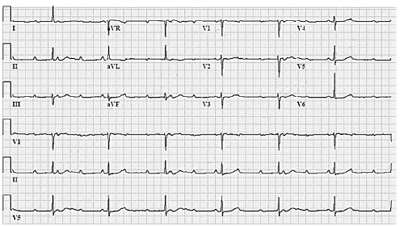
A cardioversão elétrica.
B ablação de via anômala.
C implante de marca-passo definitivo.
D isolamento elétrico das vias pulmonares.
Questão 491 · Câncer de Bexiga · Diagnóstico e Estadiamento · Cirurgia · 4000178623Homem de 75 anos de idade, tabagista 1 maço/dia desde os 20 anos de idade, apresenta queixa de polaciúria, disúria e hematúria macroscópica. Relata diversos episódios de infecção do trato urinário no passado e hiperplasia prostática benigna tratada por ressecção transuretral, com melhora significativa dos sintomas obstrutivos urinários. No toque retal, percebe-se próstata de tamanho aumentado, com superfície regular. Exame de urina tipo I (EAS) evidencia hematúria maciça, com mais de 80% de hemácias isomórficas. Nesse caso, a melhor conduta diagnóstica e o diagnóstico mais provável são, respectivamente
A uretrocistoscopia; carcinoma invasor de bexiga.
B urografia excretora; carcinoma de células renais.
C ressonância magnética de abdome; cálculo coraliforme.
D ultrassom transretal com biópsia de próstata; adenocarcinoma de próstata.
Questão 492 · Introdução alimentar · 4000178622Lactente de 6 meses está sendo atendido na unidade básica de saúde para consulta de puericultura. A criança, nascida com 39 semanas, encontra-se em aleitamento materno exclusivo e com desenvolvimento neuropsicomotor adequado. Sua genitora solicita orientações para iniciar a alimentação complementar. Acerca da introdução alimentar nesse caso, assinale a opção correta.
A A carne deve ser triturada e peneirada, para garantir oferta adequada de ferro, zinco e vitamina B12.
B As frutas,
C Os sucos devem ser introduzidos na rotina alimentar, uma vez ao dia, sendo importante fonte de vitaminas e fibras.
D A gema do ovo, por ser uma importante fonte proteica, deve ser oferecida de imediato, ao passo que a clara, devido ao seu poder alergênico, deve ser oferecida somente após 12 meses de idade.
Questão 493 · Medidas gerais · Tecido retenção de tecido placentário · Diagnóstico de HPP · 4000178621Adolescente de 14 anos de idade, primípara, em puerpério imediato de parto vaginal, apresenta sangramento vaginal abundante, sem morbidades associadas à gestação. No exame, ela apresentou: regular estado geral, frequência respiratória de 23 incursões por minuto; tempo de enchimento capilar de 6 segundos; frequência cardíaca de 128 batimentos por minuto; pressão arterial de 80 x 30 mmHg; abdome globoso, normotenso; útero contraído abaixo da cicatriz umbilical, sem lesões no canal de parto. Diante do quadro apresentado, assinale a opção que estabelece a conduta apropriada a ser adotada em conjunto com a reanimação.
A Administração de 800 mcg de misoprostol via retal.
B Indicação de laparotomia de urgência para histerectomia.
C Conduta expectante, mantendo-se a monitorização clínica.
D Exame da placenta e, caso estejam presentes escavações, indicação de curetagem uterina.
Questão 494 · Suicídio · Tratamento da Depressão · Depressão · 4000178620Uma mulher de 34 anos com diagnóstico de depressão procurou a unidade de saúde da família (UBS) onde você trabalha. Com base no prontuário da paciente, você observou que ela faz acompanhamento na unidade há 10 meses com outro médico da unidade. A paciente consulta sozinha, mas chegou à unidade acompanhada da irmã, com quem ela mora e que está bastante preocupada. A paciente tem sintomas de humor deprimido, fatigabilidade e choro fácil; está em uso de 40 mg/dia de uoxetina nos últimos 6 meses, tendo apresentado discreta melhora. Segundo a paciente, há 1 mês, aproximadamente, começou a ouvir vozes e ver alguns vultos, e tem pensado em se matar, mas sem plano. Nesse caso, qual é a conduta adequada?
A Continuar o atendimento na UBS e trocar o tratamento.
B Encaminhar a paciente para internação em hospital psiquiátrico.
C Solicitar internação em hospital geral e otimizar o tratamento farmacológico.
D Referenciar a paciente à equipe multiprofissional do Centro de Atenção Psicossocial.
Questão 495 · Inibidores do sistema reninaangiotensinaaldosterona · 4000178619Uma paciente de 62 anos de idade foi encaminhada ao ambulatório de nefrologia de um hospital universitário para ajuste no tratamento anti-hipertensivo, em razão de suposta nefropatia hipertensiva estágio 3. A paciente tem hipertensão arterial sistêmica (HAS) há longa data e faz tratamento com hidroclorotiazida 25 mg/dia e anlodipino 10 mg duas vezes ao dia. Recentemente, seus exames de sangue revelaram pequena retenção de escórias nitrogenadas, sendo o cálculo estimado da taxa de ltração glomerular de 54 ml/min/1,73 m². Exame urinário revelou a presença de microalbuminúria (120 mg/g de creatinina em amostra isolada de urina; valor de referência: até 30 mg/g de creatinina na urina). No exame físico, os níveis tensionais se encontravam em 150 x 90 mmHg no membro superior (MS) direito e em 148 x 92 mmHg no MS esquerdo. Considerando-se o risco cardiovascular da paciente, os níveis tensionais observados na consulta e a presença de dano renal crônico em estágio 3 (da classificação KDIGO — do inglês Outcomes
A adicionar inibidor da enzima conversora ou bloqueador do receptor de angiotensina II.
B trocar a hidroclorotiazida por diurético de alça e aumentar a dose do bloqueador de canal de cálcio.
C iniciar espironolactona e carvedilol.
D mantê-lo sem alterações e trabalhar a adesão ao tratamento.
Questão 496 · Tratamento da Diverticulite Complicada · Cirurgia · 4000178618Homem de 55 anos de idade apresenta quadro de dor em fossa ilíaca esquerda. No exame físico, apresentava bom estado geral, frequência cardíaca de 90 batimentos por minuto, pressão arterial de 130 × 80 mmHg, frequência respiratória de 20 incursões respiratórias por minuto e temperatura axilar de 37,9 °C. O paciente realizou tomogra a de abdome e pelve, que mostrou ausência de líquido livre e gás na cavidade peritoneal, discreta distensão de alças de delgado e cólons direito e transverso, espessamento de cólon descendente e abscesso pericolônico de 6 cm próximo à goteira parietocólica esquerda. Nesse caso, qual é a melhor conduta imediata?
A Internação e antibioticoterapia venosa exclusiva.
B Antibioticoterapia venosa e drenagem do abscesso.
C Alta hospitalar e antibioticoterapia oral ambulatorial.
D Laparotomia exploradora e procedimento de Hartmann.
Questão 497 · Causas · Pediatria · 4000178617Adolescente de 11 anos, sexo masculino, em consulta de rotina com pediatra, refere ser um dos menores alunos da sua sala. O crescimento do paciente nos últimos 6 meses foi de 2,5 cm. A projeção de sua estatura vai ao encontro do canal familiar (pai mede 161 cm e mãe mede 150 cm). No gráfico estatura × idade, situa-se entre o escore-z −2 e −3. Exame físico sem alterações, sem características de doenças gênicas ou cromossômicas, estadiamento puberal de Tanner G2 P1. Conforme radiogra a de mão e punho esquerdos, a idade óssea do paciente é de 11 anos. Nesse caso, o paciente apresenta
A puberdade atrasada.
B baixa estatura familiar.
C reduzida velocidade de crescimento.
D idade óssea compatível com distúrbio constitucional de estatura.
Questão 498 · Etiologia · Exames complementares · Classif icação FIGO · 4000178616Mulher de 23 anos de idade procurou o ambulatório de ginecologia, com queixa de aumento da intensidade e duração do uxo menstrual há 8 meses. Nulípara, tem como antecedentes três abortos espontâneos, nos quais não precisou realizar curetagem uterina. No exame físico, não apresentou qualquer alteração. Apresentou os seguintes exames complementares recentes: - Colpocitologia oncológica: alterações celulares benignas reativas ou reparativas. - Ultrassonogra a: volume uterino de 88 cm³. Eco endometrial heterogêneo de 36 mm (normalidade considerada até 15 mm) com lesão hiperecoica de contornos regulares na cavidade uterina. Anexos sem alterações ultrassonográficas. Considerando a história clínica e os exames físico e complementar da paciente, assinale a opção que apresenta a hipótese diagnóstica e a conduta adequada, respectivamente.
A Patologia cervical; colposcopia.
B Gestação ectópica; laparotomia exploratória.
C Miomatose uterina; laparoscopia diagnóstica.
D Pólipo endometrial; histeroscopia diagnóstica.
Questão 499 · Transtorno de Pânico · Agoraf obia · Transtorno de Ansiedade Generalizada TAG · 4000178615Uma mulher de 43 anos compareceu a uma unidade de saúde da família, com queixas de estresse e ansiedade. Informa que iniciou, há 10 semanas, o tratamento com sertralina 50 mg/dia e que, nesse período, apresentou uma melhora discreta dos sintomas. Entretanto, nas últimas 4 semanas, tem tido ataques recorrentes de ansiedade intensa quando precisa sair de casa, o que tem limitado seu desempenho, inclusive para atividades do dia a dia, como ir ao supermercado e buscar os lhos no colégio. Conforme relato dela, no dia desta consulta, teve muita dificuldade para sair de casa. Nesse caso, qual é a conduta adequada?
A Prescrever um benzodiazepínico e encaminhar a paciente para a emergência de um hospital psiquiátrico.
B Manter a sertralina na dose atual e monitorar a evolução da paciente.
C Encaminhar a paciente para um serviço com psicoterapia estruturada e reavaliar a medicação em uso.
D Substituir a sertralina por fluoxetina 20 mg, clonazepam 0,5 mg e clorpromazina 25 mg.
Questão 500 · Dermatologia · Síndrome de StevensJohnson e Necrólise epidérmica tóxica · 4000178614Uma paciente de 22 anos de idade compareceu à unidade de emergência, com queixa de aparecimento, havia 3 dias, de lesões na cavidade oral e pele. Informou ainda, que as lesões surgiram inicialmente nos ombros, tendo aspecto semelhante a queimadura solar. Posteriormente, estenderam-se para a região proximal dos membros superiores e para os joelhos. Relatou também febre, mal-estar e mialgias. Em sua história patológica pregressa, há menção a epilepsia e asma. A paciente faz uso de hidantoína — introduzida recentemente, em substituição a fenobarbital — e salmeterol/budesonida inalatório. A paciente tem uma irmã com diagnóstico de lúpus eritematoso sistêmico e uma tia em tratamento para pên go foliáceo. Conforme o exame físico, as lesões ocupam menos de 10% da superfície corpórea, sendo as lesões cutâneas caracterizadas predominantemente pela presença de áreas de eritema, com presença de permeio de pápulas edematosas (com centro de tonalidade violácea) e formação de bolhas com desprendimento cutâneo limitado, havendo algumas típicas lesões em alvo. Nos lábios, há crostas hemáticas aderidas a centros de desprendimento mucoso. O médico que atende a paciente, considerando riscos e benefícios para ela, deve explicar-lhe que a abordagem diagnóstica correta para o seu caso, no momento, é
A solicitar biópsia cutânea com pesquisa por imunofluorescência, dado o histórico familiar de pênfigo foliáceo.
B encaminhar a paciente para pesquisa de FAN em células Hep-2, em função do padrão típico de lúpus cutâneo subagudo.
C entrar em contato com o laboratório e solicitar a pesquisa de exotoxina estafilocóccica (síndrome da pele escaldada estafilocóccica).
D considerar os dados da anamnese e do exame físico suficientes para o provável diagnóstico de farmacodermia pelo anticonvulsivante.
Questão 501 · História Natural da Doença · Cirurgia · Tratamento Cirúrgico · 4000178613Homem de 33 anos procurou atendimento por dor em cólica, de forte intensidade, em hipocôndrio direito, iniciada havia 3 meses, com irradiação para abdome superior e dorso. Informou que alguns episódios melhoravam com o uso de analgésicos orais. Em diversas ocasiões, havia sido atendido em unidade de emergência, sendo submetido a analgesia intravenosa, devido à intensidade da dor. Relatou, ainda, que as crises dolorosas são associadas a náuseas e vômitos e desencadeadas pela ingestão de alimentos gordurosos. Negou icterícia, colúria e acolia fecal. Apresenta ritmo intestinal e aspecto das fezes normais. No exame físico, estava em bom estado geral, consciente, contactuante, orientado no tempo e no espaço, normocorado, hidratado, anictérico, acianótico, afebril, com frequência cardíaca de 64 batimentos por minuto, frequência respiratória de 16 incursões respiratórias por minuto, pressão arterial de 120 × 80 mmHg, abdome plano, ruídos hidroaéreos presentes e normais, timpânico, ácido, indolor à palpação super cial e profunda, sem sinais de irritação peritoneal, ausência de visceromegalias ou massas, sinal de Murphy negativo. Realizou exames laboratoriais, cujos resultados foram os seguintes. - Hemograma 48,5%; linfócitos = 41,5%; plaquetas = 155.000/mm³; coagulação: TP = 13,3 segundos; RNI = 1,09. - Urina - Bioquímica UI/L (VR: 21- 72); amilase = 100 UI/L (VR: 20-160); bilirrubina total = 0,8 mg/dL; bilirrubina direta = 0,5 mg/dL; bilirrubina indireta = 0,3 mg/dL. Com base no caso descrito, assinale a opção que apresenta o diagnóstico mais provável e a conduta mais apropriada, respectivamente.
A Coledocolitíase; colangiografia endoscópica.
B Colecistite aguda calculosa; ultrassonografia.
C Pólipo da vesícular biliar; colangiorressonância.
D Colelitíase; colecistectomia videolaparoscópica.
Questão 502 · Pediatria · Tratamento · Diagnóstico · 4000178612Lactente de 6 meses, sexo masculino, foi levado à unidade básica de saúde, com história de tosse, espirros, obstrução nasal, coriza e febre havia três dias, com evolução de chiado no peito e dispneia. Antecedentes pessoais: dois episódios de rinofaringite desde o nascimento, autolimitados e com boa evolução. A mãe é asmática. No exame físico, o paciente apresentou: frequência respiratória de 56 incursões respiratórias por minuto; tiragem de fúrcula e subcostal; tempo expiratório prolongado e sibilos difusos em moderada quantidade; saturometria de 88% em ar ambiente. Sem alterações no restante do exame físico. Radiogra a de tórax evidenciou hiperinsuflação pulmonar. Considerando a situação descrita, assinale a opção que apresenta, respectivamente, o diagnóstico e a conduta adequados.
A Resfriado comum; broncodilatador, manejo ambulatorial e hidratação.
B Pneumonia bacteriana; antibioticoterapia, oxigenoterapia e internação.
C Bronquiolite viral aguda; medidas sintomáticas de suporte e monitorização.
D Asma de início precoce; administração de beta-agonista de curta duração e corticoide.
Questão 503 · Ginecologia · Dispareunia · 4000178611A dispareunia é um problema comum na saúde da mulher e um distúrbio complexo que muitas vezes é negligenciado. Podendo ser classificado como de profundidade ou de penetração, geralmente leva a di culdades sexuais como falta de desejo e de excitação sexual, resultando em um impacto significativo na saúde física e mental da mulher. Com relação à dispareunia, assinale a opção correta.
A Sua etiologia não engloba causas psicossociais, ficando restrita às causas anatômicas.
B Ela não guarda relação com a endometriose, cujos sintomas estão restritos ao período menstrual.
C A falta de lubrificação é uma causa comum e pode estar relacionada ao uso de contraceptivos hormonais.
D No subtipo de penetração, está restrita a causas infecciosas, como gonorreia, tricomoníase e vaginose bacteriana.
Questão 504 · Abordagem Comunitária · Medicina Preventiva · 4000178610Você atende em uma unidade de saúde da família e está em reunião com a equipe multipro ssional, organizando o planejamento de uma atividade de educação popular em saúde que envolverá um café da manhã com os usuários e um bate papo sobre vacinação contra a covid-19. Conforme as habilidades de comunicação (abordagem centrada na pessoa), bem como os atributos derivados da Atenção Primária à Saúde (orientação familiar e comunitária; competência cultural), qual é a melhor opção de atividade a ser desenvolvida pela equipe para enfrentar eventual resistência à vacinação contra a covid-19?
A Palestra para explicar os benefícios da vacinação, com o objetivo de convencer os mais resistentes por meio de argumentos baseados em evidências científicas, além de apresentar dados estatísticos que demonstrem a redução da mortalidade na população vacinada.
B Roda de conversa para priorizar as percepções positivas dos(as) participantes acerca da vacina contra a covid-19 e, a partir daí, construir os argumentos para convencer os mais resistentes, finalizando-se com a apresentação de dados científicos que demonstrem a redução da mortalidade na população vacinada.
C Palestra para apresentar os números de pessoas com covid-19 e a proporção entre vacinados e não vacinados que necessitaram de internação aos usuários mais resistentes à vacinação, tentando-se, dessa forma, pressioná-los a se vacinar.
D Roda de conversa para levantar as percepções positivas e negativas dos(as) participantes acerca da vacina contra a covid-19 e, a partir dessas informações, construir os argumentos para convencer os mais resistentes, finalizando-se com a apresentação de dados científicos que demonstrem a redução da mortalidade na população vacinada.
Questão 505 · Cardiologia · Tratamento da hipercolesterolemia · 4000178609Uma paciente obesa grau III, portadora de síndrome metabólica, compareceu a consulta no ambulatório de endocrinologia do hospital terciário onde faz acompanhamento, queixando-se de mialgias e fraqueza muscular generalizada há 1 semana. Segundo informado pela paciente, o quadro começou alguns dias após ela ter iniciado tratamento com fármaco para baixar seus níveis de triglicerídeos, que continuavam muito elevados a despeito do tratamento previamente em curso com rosuvastatina. Ela informou ter observado também sua urina avermelhada. O exame físico da paciente revelou leve redução de força muscular difusamente, ao passo que os exames laboratoriais, solicitados em caráter de urgência, mostraram elevados níveis séricos (superiores a 10.000 U/L) de CK-total (valor de referência: 30-200 U/L). Exame simples de urina não apresentou hematúria, mas a fita do exame mostrou um falso-positivo para hemoglobinúria. Assinale a opção que indica o fármaco hipolipemiante que foi recentemente introduzido no esquema terapêutico dessa paciente e que provavelmente levou à precipitação do quadro atual.
A Ezetimibe.
B Genfibrozil.
C Ácido nicotínico.
D Ácidos graxos ômega 3.
Questão 506 · Tratamento · 4000178608Homem de 45 anos, sem comorbidades, procurou o prontosocorro por apresentar dor em região anal havia 5 dias, acompanhada por prostração e calafrios. No exame físico, encontrava-se em regular estado geral, consciente, contactuante, corado, hidratado, subfebril (temperatura axilar de 37,5 °C), com frequência cardíaca de 105 batimentos por minuto, frequência respiratória de 20 incursões respiratórias por minuto, pressão arterial de 120 × 80 mmHg. Inspeção da região perianal evidenciou abaulamento à direita, sem ponto de utuação, aumento de temperatura e vermelhidão. Toque retal com dor à palpação em quadrante posterior direito. Com base no quadro apresentado, qual é a conduta mais adequada?
A Antibioticoterapia venosa.
B Drenagem cirúrgica imediata.
C Termoterapia local e observação.
D Tomografia computadorizada da pelve.
Questão 507 · Taquipneia Transitória do Recémnato TTRN · 4000178607Neonato feminino, de cor branca, com idade gestacional de 35 semanas e 5 dias, pequeno para a idade gestacional (PIG), nascido de parto operatório indicado por diabetes gestacional em descompensação e asma materna, bolsa íntegra, líquido amniótico claro, APGAR 8/9, desenvolveu quadro respiratório de intensidade moderada. Hoje, 3º dia de vida, permanece em ventilação não invasiva, diminuindo-se a concentração de oxigênio de modo progressivo. Hemograma e proteína C reativa normais. Imagem radiológica mostra reti cação de costelas, hiperinsu ação pulmonar moderada com presença de algumas linhas opacificadas em campos pulmonares. Hemocultura negativa. Com base no relato do caso e no provável diagnóstico para esse neonato, além de prematuridade, diabetes gestacional, parto operatório, outro fator de risco que predispõe a referida evolução é
A cor branca.
B tamanho PIG.
C sexo feminino.
D asma materna.
Questão 508 · Antecedentes pessoais · Programação da gestação · Obstetrícia · 4000178606Paciente de 36 anos, G1P0, idade gestacional de 24 semanas, gravidez não planejada, mas bem aceita, compareceu ao pré-natal de alto risco, para consulta. Tem história de gastroplastia para tratamento de obesidade há 10 meses, técnica de bypass gástrico em Y de Roux (RYGB) — na época, pesava 104 kg e media 1,62 m (IMC = 39). Agora, está com 88 kg (IMC = 33). Segundo ela, às vezes, após o almoço, sente mal-estar e tontura. Considerando as informações anteriores, assinale a opção correta.
A O intervalo mais curto entre a cirurgia e a concepção está associado a maior risco de prematuridade e de parto de recém-nascidos pequenos para a idade gestacional.
B O teste oral de tolerância à glicose deverá ser realizado entre a 24ª e a 28ª semana de gestação, pelo risco aumentado de diabetes
C A reposição de ferro deverá ser feita por via intravenosa, pelo risco aumentado de anemia ferropriva e megaloblástica.
D Para as gestantes com suspeita de
Questão 509 · Cardiologia · Estatinas · 4000178605Trabalhador da construção civil, de 58 anos de idade, em tratamento regular para hipertensão há 12 anos, procurou a unidade básica de saúde (UBS), com queixa de fortes dores musculares. O paciente acredita que as dores musculares tenham relação com o uso de uma nova medicação prescrita na UBS há duas semanas, quando, em uma consulta de rotina, foram constatadas alterações em seus exames laboratoriais. Nesse caso, qual condição clínica, ao ser evidenciada pelos exames laboratoriais, pode justi car a prescrição da medicação?
A Obesidade.
B Dislipidemia.
C Hipotireoidismo.
D Diabetes
Questão 510 · Teste Rápido da Urease · 4000178604Um paciente de 55 anos de idade foi atendido no ambulatório de clínica médica de um hospital de média complexidade, com queixa de epigastralgia em queimação, aliviada pela ingestão de alguns alimentos, além de plenitude pós-prandial e certo grau de disfagia. O paciente faz uso de inibidor de bomba de prótons há 4 semanas, sem relatar melhora. No exame físico, não foram observadas alterações dignas de nota. Diante do quadro, foi solicitada investigação por endoscopia digestiva alta, que revelou a presença de pangastrite enantematosa leve a moderada, sem úlceras. Diante da suspeita de gastrite crônica associada ao confirmar o nexo causal com a bactéria naquele momento?
A Teste da urease em amostras de biópsia gástrica.
B Exame respiratório com solução de ureia marcada com C13.
C Pesquisa direta de antígeno do
D Análise histopatológica de fragmento de biópsia gástrica corado pela hematoxilina-eosina.
Questão 511 · Carcinoma de Células Escamosas CEC · 4000178603Tratamento do Câncer do Esôf ago e da Transição Esof agoGástrica Paciente do sexo masculino, de 75 anos, tabagista, com quadro de disfagia progressiva e emagrecimento de 12 kg em 3 meses, atualmente ingerindo apenas alimentos líquidos e pastosos, realizou endoscopia digestiva alta que evidenciou lesão expansiva circunferencial em esôfago médio (localizada a 28 cm dos dentes incisivos), de 5 cm de extensão, estenosante, mas que permitiu passagem do aparelho para o estômago. A biópsia mostrou carcinoma escamoso de esôfago moderadamente diferenciado. Tomogra a de estadiamento mostrou múltiplas metástases pulmonares. Em relação à disfagia e ao suporte nutricional desse paciente, qual é a melhor opção terapêutica?
A Jejunostomia cirúrgica.
B Nutrição por sonda nasoenteral.
C Gastrostomia por via endoscópica.
D Passagem de prótese endoscópica.
Questão 512 · Avaliação radiográf ica · Tratamento · 4000178602Uma adolescente de 13 anos foi levada pela mãe à unidade básica de saúde, por apresentar desvio na coluna. Segundo informações maternas, a adolescente tem o hábito de usar uma mochila pesada só de um lado do ombro e, com o passar do tempo, tem cado “mais torta”. A mãe informou que, quando jovem, também era assim, mas, em sua opinião, o caso da lha é pior. Negou outras queixas. No exame físico, observou-se assimetria dos ombros, escápula bastante proeminente à direita. O teste de Adams mostrou assimetria da caixa torácica. No caso em questão, a hipótese diagnóstica é de
A escoliose familiar, sendo dispensada a investigação com exames complementares.
B lordose familiar, indica-se uma investigação com exame radiológico da coluna.
C escoliose, sendo necessária a determinação do ângulo de Cobb para indicar o tratamento clínico ou cirúrgico.
D lordose associada à espinha bífida, uma vez que o teste de Adams foi positivo.
Revisar: possível letra faltando em enunciado
Questão 513 · Interpretação e conduta f rente as atipias citológicas · 4000178601Uma mulher de 30 anos de idade, G1P1, compareceu à unidade básica de saúde, para realização do exame citopatológico, sem queixas. Na ocasião, o exame ginecológico foi normal. A coleta da citologia oncótica, que mostrou o seguinte resultado: células glandulares atípicas de significado indeterminado (AGC), possivelmente não neoplásicas. O exame anterior, realizado havia 3 anos, não apresentava anormalidades. Nesse caso, a conduta adequada é
A realizar colposcopia.
B manter colpocitologia anual.
C fazer exérese da zona de transformação.
D repetir colpocitologia em exame em 6 meses.
Questão 514 · Tratamento da síf ilis na gestação · 4000178600Durante o pré-natal de uma primigesta com 18 semanas, o médico da unidade básica de saúde teve acesso ao resultado do VDRL, com titulação de 1:4. A paciente não recordava ter sido diagnosticada com sí lis nem ter feito tratamento contra essa doença. Com base nesse resultado de exame VDRL durante o pré-natal e nos dados da entrevista clínica, assinale a opção correta.
A Considerando o título baixo de VDRL, o médico pode esperar para fazer exames seriados mensais de VDRL antes de instituir tratamento.
B Caso a paciente tenha alergia à penicilina, deve-se seguir com a gestação sem tratamento até o momento do parto, quando se deve instituir tratamento com eritromicina.
C Após o tratamento com penicilina, a paciente deve repetir o VDRL no último trimestre, realizando novo tratamento caso o resultado seja positivo, independentemente da titulação.
D O tratamento de escolha deve ser feito com penicilina G benzatina, 2,4 milhões de unidades, IM, semanalmente, durante 3 semanas.
Questão 515 · Conduta na Retocolite Ulcerativa · 4000178599Uma mulher de 24 anos de idade foi atendida no ambulatório de especialidades, com história de fezes amolecidas e dores abdominais em cólicas havia 1 ano, com períodos de melhora e piora. Nos últimos 3 meses, havia perdido 5 kg (seu peso atual é de 65 kg), de forma não intencional, e notou aumento das dores abdominais, tenesmo, urgência e episódios de diarreia com sangue, que às vezes parecia ter pus. Ex- tabagista, negou uso de bebidas alcoólicas, bem como viagens ou uso de antibiótico recentes. Fez uso de antidiarreicos, mas não obteve melhora. No exame físico, apresentava-se emagrecida, hipocorada +/4+, com dor à palpação em hipogástrio e hipocôndrio esquerdo, ruídos hidroaéreos normais, sem sinais de irritação peritoneal, toque retal sem alterações. Colonoscopia indicou achados compatíveis com in amação difusa, que acometiam do reto ao cólon esquerdo, e o seguinte anatomopatológico de biópsias de diversos segmentos: abscessos, rami cação, encurtamento e atro a das criptas; metaplasia das células de Paneth, aumento da celularidade da lâmina própria, plasmocitose basal, agregados linfoides basais e eosinó los da lâmina própria. Com relação a esse caso, quais devem ser, respectivamente, o diagnóstico e o tratamento inicial?
A Doença de Crohn; infliximab.
B Colite microscópica; mesalazina.
C Retocolite ulcerativa; prednisona.
D Colite pseudomembranosa; metronidazol.
Questão 516 · Cirurgia · Aderências Intestinais Bridas · Obstrução Intestinal Mecânica · 4000178598Homem de 55 anos refere vômitos biliosos, dor abdominal tipo cólica e parada de eliminação de gases e fezes há cerca de 3 horas. Fez cirurgia por úlcera péptica perfurada há 5 anos. Seu exame físico evidencia: cicatriz de incisão mediana xifopubiana, abdome pouco distendido e doloroso à palpação profunda, sem sinais de irritação peritoneal. Não foi possível palpar massas e/ou visceromegalias. A imagem a seguir corresponde à radiografia de abdome desse paciente. Nesse caso, além de reposição hidroeletrolítica, qual é a conduta mais adequada?
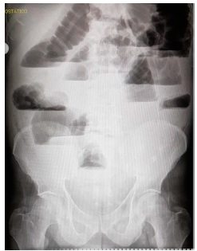
A Videolaparoscopia diagnóstica.
B Laparotomia exploradora de emergência.
C Sondagem nasogástrica e observação clínica.
D Descompressão colônica por retossigmoidoscopia.
Questão 517 · Diagnóstico · Apresentação Clínica · 4000178597Lactente de 23 meses, sexo masculino, encaminhado para ambulatório de referência, tem história de massa abdominal importante percebida durante o banho, de aumento progressivo, há cerca de 2 meses. Seu exame físico evidencia: massa grande e xa, principalmente em anco esquerdo, ultrapassando inclusive a linha média; pressão arterial de 159 × 91 mmHg; nistagmo; ataxia cerebelar; proptose ocular; equimose periorbitária bilateral (“olhos de guaxinim”). A dosagem de ácido vanilmandélico mostra-se dez vezes o valor de referência de normalidade. Nessa situação, o diagnóstico é
A linfoma.
B neuroblastoma.
C tumor de Wilms.
D feocromocitoma.
Questão 518 · Torção anexial · 4000178596Uma mulher de 20 anos de idade, nuligesta, foi encaminhada para o pronto atendimento de um hospital universitário, com quadro de dor pélvica intermitente fazia uma semana. Havia 1 dia, a dor tornou-se mais intensa e constante. No exame físico, a paciente encontrava-se em bom estado geral, afebril, com pressão arterial de 110 × 70 mmHg, apresentando dor acentuada à palpação em fossa ilíaca direita. Os resultados do hemograma e do exame de urina foram normais e do teste de gravidez foi negativo. A ultrassonogra a transvaginal mostrou uma imagem anecoica de 10 cm de diâmetro em ovário direito, com septação interna e sem fluxo ao O quadro clínico apresentado é característico de
A cisto torcido de ovário.
B abscesso tubo-ovariano.
C endometrioma de ovário.
D cisto hemorrágico ovariano.
Questão 519 · Diagnóstico · Dermatologia · 4000178595Paciente do sexo feminino, 24 anos, trabalha como técnica de enfermagem há um ano e refere surgimento de vesículas, eritema e ssuras nas mãos há seis meses, acompanhado de episódios de prurido. Relata que houve melhora do quadro no seu período de férias. A partir da história clínica dessa paciente, assinale a opção correta.
A Devido à localização das lesões em área descoberta do corpo da paciente é possível concluir que o diagnóstico correto é fotodermatite.
B A paciente apresenta ceratoses actínicas, pela cronificação do quadro, que pode ter relação direta com detergentes e exposição solar.
C O diagnóstico correto é dermatite de contato, irritante ou alérgica, que pode ser causada pelo látex.
D Diagnósticos de quadro alérgico são afastados pelo fato de o quadro melhorar no período de férias da paciente.
Questão 520 · Clínica Médica · Tratamento medicamentoso · Cardiologia · 4000178594Paciente de 54 anos, sexo feminino, foi internada para investigação diagnóstica, por apresentar quadro de mal-estar e alucinações. Durante a internação, apresentou quadro de tontura e lipotimia. A paciente é hipertensa e faz uso de losartana 50 mg, duas vezes ao dia, nimodipino 30 mg, 3 vezes ao dia, devido a isquemia cerebral, e propatilnitrato 10 mg, 3 vezes ao dia, devido a angina estável. As anotações de enfermagem mostram que a paciente apresenta vários episódios de hipotensão ao longo do dia. Que medidas deverão ser tomadas para prevenção da queda?
A Ajustar medicamentos, para evitar hipotensão.
B Realizar contenção química e física, pois a paciente é jovem.
C Solicitar a presença de um acompanhante para minimizar o risco de acidentes.
D Substituir os medicamentos de uso contínuo e administrar contenção química.
Questão 521 · Pólipos Intestinais · 4000178593Mulher de 60 anos, assintomática, realizou colonoscopia para rastreio de câncer colorretal. No exame foram encontrados: 2 pólipos em cólon transverso, cada um medindo 0,5 × 0,5 cm; 1 pólipo em cólon descendente, de 2,0 × 1,5 cm; 2 pólipos em cólon ascendente, de 0,5 × 0,5 cm; e 2 pólipos de 1 × 1 cm no reto. Todos eram pediculados e foram removidos completamente durante o exame. O exame histopatológico revelou que se tratava de pólipos adenomatosos tubulares, exceto o pólipo de cólon transverso, diagnosticado como adenoma tubuloviloso. Nesse caso, qual é a melhor conduta para essa paciente?
A Repetir a colonoscopia em 3 anos.
B Refazer a colonoscopia em 7 a 10 anos.
C Transversectomia e colonoscopia em 5 anos.
D Colectomia total e rastreio de familiares de primeiro grau.
Questão 522 · Exame f ísico do Recémnascido · 4000178592Recém-nascido do sexo masculino, com 5 dias de vida, foi levado a unidade básica de saúde pela mãe, devido a lesão de pele que iniciou no 2º dia de vida. No exame, ele encontrava-se normotérmico, ativo, reativo, corado, hidratado, anictérico. Estava com frequência cardíaca de 130 batimentos por minuto, ritmo cardíaco regular em 2 tempos, sem sopros. Apresentava frequência respiratória de 30 incursões respiratórias por minuto, eupneico, murmúrio vesicular siológico sem ruídos adventícios. Abdome globoso, normotenso e sem visceromegalias. Genitália masculina típica, testículos tópicos. A pele apresentava vesículas, pápulas e pústulas com 1 a 3 mm de diâmetro, rodeadas por halo eritematoso de 1 a 2 cm, acometendo tórax e abdome, poupadas as palmas das mãos e as plantas dos pés. Considerando-se essa situação, o diagnóstico da dermatose apresentada é
A miliária rubra.
B eritema tóxico.
C pustulose cefálica neonatal.
D melanose pustulosa neonatal.
Questão 523 · Patologias vulvares · 4000178591Uma mulher de 70 anos de idade compareceu ao ambulatório de ginecologia, queixando-se de prurido vulvar crônico e queimação local. No exame ginecológico, apresentava apagamento de pequenos lábios, uma área hipocrômica na face interna dos grandes lábios e região perineal, além de uma pequena lesão ulcerada em grande lábio direito, próximo ao clitóris. Assinale a opção que indica a hipótese diagnóstica desse caso e a conduta adequada, respectivamente.
A Cancroide; prescrever doxiciclina.
B Doença de Behçet; tratar com corticoide.
C Câncer de vulva; realizar biópsia da lesão.
D Neoplasia intravaginal (NIV) usual ou lesão intraepitelial de alto grau; exérese ampla da lesão.
Questão 524 · Abordagem Comunitária · 4000178590A equipe de uma unidade de saúde da família está organizando atividades educativas para adolescentes da escola mais próxima, devido ao alto número de casos de violência nessa população. Na reunião de planejamento, os membros da equipe discutem diferentes propostas de metodologia para as atividades, que serão compostas por um encontro semanal, durante alguns meses. Para o primeiro encontro, qual das propostas abaixo está de acordo com os princípios da educação popular e saúde (EPS)?
A Realizar uma dinâmica de grupo para promover a integração entre os participantes e, em seguida, uma palestra sobre não violência e respeito.
B Utilizar métodos de áudio e vídeo (como um filme ou uma música) e adaptar as falas dos coordenadores do grupo ao entendimento popular dos adolescentes.
C Convidar uma pessoa com reconhecida experiência na temática da violência para conduzir a atividade educativa e responder perguntas dos participantes.
D Problematizar com os participantes a temática da violência, fazendo-se perguntas com a finalidade de compreender seus valores e pontos de vista.
Questão 525 · Diagnóstico · Neurologia · 4000178589Homem de 69 anos apresenta quadro de bradicinesia, iniciado há 6 meses, com lentidão dos movimentos e di culdade para amarrar sapatos, abotoar roupas, digitar. Ao caminhar, apresenta passos mais curtos e sensação de instabilidade. Concomitantemente, apresenta tremores nas mãos, de repouso, associada a rigidez, além de alteração olfativa, constipação intestinal de 3 dias e alteração do padrão do sono. Nega alterações de memória e cognição. No exame físico, o paciente apresentava bom estado geral, altura 1,80 m, peso de 85 kg, menor expressividade facial, marcha com inclinação anterior lenta e arrastada, pulmões com murmúrio vesicular preservado, coração rítmico em 2 tempos a 80 batimentos por minuto, pressão arterial de 120 × 80 mmHg, abdome plano e sem visceromegalias. No exame neurológico, mostrou: diminuição dos movimentos dos braços, tremores assimétricos das mãos na manobra dos braços estendidos, movimentos alternados com assimetria e lentidão, e hipertonia em roda dentada. Ressonância magnética realizada há 2 semanas constatou: redução da espessura da putâmen, com atrofia cerebral compatível para a sua idade. A principal hipótese diagnóstica nesse caso é
A demência vascular.
B tremores essenciais.
C doença de Parkinson.
D doença de Alzheimer.
Questão 526 · Vias Aéreas e Proteção da Coluna Cervical · 4000178588Ambulância de suporte básico de vida foi acionada para atender vítima de colisão de automóvel contra motocicleta em autoestrada. Chegando ao local, o socorrista encontrou o motorista da moto, que estava com capacete fechado, em decúbito ventral e imóvel no acostamento. Em relação à estabilização da coluna vertebral da vítima no local do acidente, qual é a melhor ordem de procedimentos a ser adotada?
A Retirada do capacete, colocação do colar cervical e rolamento em bloco do paciente em 180 graus.
B Rolamento em bloco do paciente em 180 graus, colocação do colar cervical e retirada do capacete.
C Retirada do capacete, rolamento em bloco do paciente em 180 graus e colocação do colar cervical.
D Colocação do colar cervical, retirada do capacete e rolamento em bloco do paciente em 180 graus.
Questão 527 · Tratamento · 4000178587Recém-nascido prematuro, sexo masculino, com 15 dias de idade gestacional corrigida, foi levado pela mãe ao ambulatório de cirurgia pediátrica, para avaliação de aumento da bolsa escrotal direita, o que piora com o choro. No exame, a criança estava tranquila, ativa e reativa, corada, hidratada, anictérica, com frequência cardíaca de 120 batimentos por minuto, ritmo cardíaco regular em 2 tempos, sem sopros, perfusão capilar < 2 s, frequência respiratória de 30 incursões respiratórias por minuto, eupneico, com murmúrio vesicular siológico. Abdome globoso, normotenso, peristáltico, sem visceromegalias. Bolsa escrotal direita aumentada de tamanho, conteúdo redutível, testículo palpável sem alterações, transiluminação negativa, espessamento do cordão espermático. Bolsa escrotal esquerda sem alterações, testículo palpável. A programação cirúrgica para essa patologia é
A solicitar hemograma e marcar cirurgia eletiva logo após o diagnóstico.
B solicitar ultrassonografia inguinal, para confirmar o diagnóstico, e programar cirurgia eletiva.
C aguardar o paciente completar um ano de idade, uma vez que 90% desses quadros têm resolução espontânea.
D aguardar o paciente completar dois anos de idade, pois nessa idade a cirurgia terá menor risco.
Questão 528 · Trombof ilia na gestação · 4000178586Secundigesta de 25 anos de idade foi encaminhada para o pré- natal de alto risco, por história de pré- eclâmpsia grave com 32 semanas de gestação, o que havia motivado uma cesariana de urgência na primeira gestação. Durante a anamnese, ela revelou história de trombose venosa profunda em membro inferior esquerdo aos 19 anos de idade, quando descobriu ter deficiência de antitrombina (homozigótica). Haja vista a história apresentada, qual deverá ser a estratégia farmacológica para essa gestação?
A Enoxaparina 40 mg/dia.
B Ácido acetilsalicílico 100 mg/dia.
C Ácido acetilsalicílico 100 mg/dia + enoxaparina 40 mg/dia.
D Ácido acetilsalicílico 100 mg/dia + enoxaparina 1 mg/kg de 12/12h.
Questão 529 · Diagnóstico · 4000178585Um homem de 40 anos, funcionário de um na unidade de saúde da família, devido a uma ferida no antebraço. Relatou que a lesão surgira havia 2 meses, inicialmente como um pequeno “caroço”, que cresceu e ulcerou. Disse, ainda, que, nas últimas três semanas, surgiram novos “caroços” no antebraço. No exame físico, apresentava-se em bom estado geral, afebril, eutró co, com úlcera de aproximadamente 3 cm de diâmetro no antebraço direito. Também no antebraço direito, apresentava 4 nódulos eritematosos distribuídos de forma linear entre a úlcera e a fossa cubital. Apresentava, ainda, linfonodo axilar direito aumentado, de consistência broelástica, levemente doloroso à palpação. Nesse caso, qual é a hipótese diagnóstica mais provável?
A Esporotricose.
B Cromoblastomicose.
C Leishmaniose tegumentar.
D Blastomicose sul-americana.
Revisar: possível letra faltando em enunciado
Questão 530 · Diagnóstico dos linf omas clínico laboratorial citogenética e biologia molecular · 4000178584Homem de 55 anos está, há 2 meses, com quadro de linfadenopatia cervical e axilar de aumento progressivo, associada a febre recorrente, com temperatura axilar superior a 38 °C, sudorese noturna e perda de peso de 6 kg desde o início das manifestações. Nega doenças preexistentes e uso de medicamentos, mas informa tabagismo há 35 anos, com carga tabágica de 50 anos/maço. No exame, apresentava linfadenomegalia cervical anterior e posterior bilateralmente, axilares bilaterais, com gânglios de 2,5 a 4 cm de diâmetro, consistência endurecida e xos. Sua temperatura axilar no momento é de 38,5 °C. Radiogra a de tórax mostra massa mediastinal de cerca de 8 cm de diâmetro. Já foram solicitados hemograma, proteína C reativa, tomografia computadorizada de tórax com contraste. Em relação ao caso clínico apresentado, qual é o diagnóstico provável e qual exame complementar deve ser solicitado ainda?
A Citomegalovírus; sorologias.
B Linfoma; biopsia de gânglio cervical.
C Mononucleose infecciosa; sorologias.
D Metástase de carcinoma cervical, provavelmente tireoide; biopsia de gânglio cervical.
Questão 531 · Of talmologia · Síndrome do Olho Vermelho · Blef arite · 4000178583Paciente de 30 anos, do sexo masculino, foi atendido na emergência, com queixa de prurido nos olhos e lacrimejamento havia dois dias. No exame físico, apresentava hiperemia conjuntival, com as pálpebras edemaciadas e bordas ulceradas e crostosas, conforme a imagem apresentada a seguir. Considerando-se a principal hipótese diagnóstica, qual é o agente etiológico mais comum?

A Adenovírus.
B Herpes simples.
C Staphylococcus aureus.
D Chlamydia trachomatis.
Questão 532 · Pediatria · Abordagem da Crise Febril · 4000178582Criança de 4 anos de idade, sexo feminino, foi levada ao prontosocorro (PS) devido a quadro de crise convulsiva tônico-clônica generalizada, iniciada havia aproximadamente 10 minutos, associada a febre. Ao chegar ao PS, a criança encontrava-se no colo do pai, acordada, com temperatura axilar de 37 °C. Na história clínica, a mãe relatou que a crise tinha sido rápida e que ocorreu logo após ela ter administrado à criança medicação para febre, que se encontrava em 38,5 °C. Negou doença neurológica e outros sinais e sintomas. A criança tinha apresentado crise semelhante com 18 meses de idade. As crises eram sempre com febre. A criança cou em observação por 12 horas, sem novas crises, sem alterações metabólicas. A partir do prontuário da família, o plantonista observou que a família estava em vulnerabilidade social e que, havia 2 anos, um filho do casal, de 1 mês de idade, tivera morte súbita. Considerando o acompanhamento dessa família, assinale a opção que explicita um projeto terapêutico adequado ao caso.
A O acompanhamento da criança deve ser feito por especialista, o que é mais indicado para descartar trauma e violência infantil.
B A criança deve realizar exames complementares, como tomografia cerebral, na própria emergência, devido ao passado de morte súbita do irmão.
C É necessário tranquilizar os pais e garantir um acompanhamento longitudinal da criança, com observação de novas crises.
D A criança deve ser mantida internada para investigação, porque não é comum crise tônico-clônica generalizada com febre.
Questão 533 · Prognóstico · 4000178581Uma mulher de 49 anos procurou uma unidade básica de saúde, com queixa de “caroço na mama esquerda” e saída de secreção esverdeada bilateralmente. No exame, notou-se um nódulo medindo 1,5 cm, indolor, na mama esquerda. As mamas não apresentavam alterações cutâneas ou adenopatia axilar. A paciente foi submetida a cirurgia com ressecção do tumor, cujo laudo histopatológico indicou carcinoma intraductal in ltrante, com 2 linfonodos sentinelas acometidos e receptores hormonais (progesterona e estrogênio) positivos. Assinale a opção que corresponde ao fator que demonstra o pior prognóstico para o quadro dessa paciente.
A Tipo histológico do tumor.
B Tamanho do tumor primário.
C Receptores hormonais positivos.
D Linfonodos sentinelas comprometidos.
Questão 534 · Medicina Preventiva · Mortalidade Proporcional · 4000178580As guras 1 e 2, a seguir, foram extraídas de um boletim epidemiológico do Ministério da Saúde publicado em 20 de abril de 2020, no início da pandemia de covid-19 no Brasil. Figura 1: Hospitalizações por síndrome respiratória aguda grave (SRAG) por covid-19 segundo raça/etnia*. Brasil, 2020. Figura 2: Óbitos por síndrome respiratória aguda grave (SRAG) por covid-19 segundo raça/etnia*. Brasil, 2020. Fonte: https://www.gov.br/saude/pt-br/coronavirus/boletins-epidemiologicos/boletimepidemiologico- covid-19-no- 13.pdf/view. Acesso em 06 de maio de 2022. Conforme os dados dos gráficos apresentados, assinale a opção correta acerca da raça/etnia de pessoas com SRAG por covid-19, naquele momento da pandemia.


A Houve mais óbitos de indígenas do que de pessoas de raça/etnia amarela.
B As pessoas brancas tiveram melhor sobrevida do que as pessoas das outras raças/etnias juntas.
C Entre as pessoas de raça/etnia preta, houve um número maior de internações do que entre as pessoas pardas.
D As pessoas de raça/etnia amarela e indígena, juntas, foram mais submetidas a internações do que as pessoas de raça/etnia preta.
Questão 535 · Ultrassonograf ia · 4000178579Paciente masculino, de 72 anos, em tratamento de câncer de próstata, procurou atendimento em ambulatório de oncologia, referindo dor em membro inferior esquerdo havia um dia, mais intensa à dorsi exão do pé, edema de panturrilha esquerda progressivo para todo o membro, com pulso palpável e aumento de sensibilidade à palpação de todo o membro. Nesse caso, considerando-se a chance de confirmar a hipótese diagnóstica mais provável, qual é a melhor opção de exame complementar?
A Flebografia.
B Arteriografia.
C Ultrassonografia com
D Ultrassonografia de partes moles.
Questão 536 · Endoscopia Digestiva Alta EDA · 4000178578Paciente de 40 anos de idade, sexo masculino, com história de disfagia e tosse não produtiva, predominantemente noturna, procurou atendimento em unidade básica de saúde. Referiu dor torácica, pirose retroesternal e dispepsia. Negou etilismo ou tabagismo. Havia iniciado tratamento empírico com omeprazol 20 mg, 2 vezes ao dia, por 8 semanas, mas obteve pouca melhora. Nesse caso, qual é a medida propedêutica subsequente adequada?
A Esofagomanometria.
B pHmetria esofágica de 24 horas.
C Endoscopia digestiva alta com biópsia.
D Esofagogastroduodenografia contrastada.
Questão 537 · Segurança das crianças e adolescentes · 4000178577Lactente do sexo masculino, de 1 ano, foi levado à unidade básica de saúde pela mãe, para consulta de puericultura, sem queixas atuais. Nesse tipo de acompanhamento, é primordial a orientação para prevenção de acidentes, evitando-se, assim, agravos externos que coloquem em risco a saúde infantil. As orientações devem incluir os acidentes predominantes nessa faixa etária, que acontecem por
A atropelamento e queimadura solar.
B queda do carrinho e atropelamento.
C asfixias, quedas e aspiração de corpo estranho.
D aspirações e queimadura por água de banheira.
Questão 538 · Princípios f undamentais · 4000178576Mulher de 35 anos fez contato com seu ginecologista habitual, via aplicativo de mensagens, solicitando orientações sobre como usar a “pílula do dia seguinte”. Ela referiu estar em outro estado, sem condições de realizar uma consulta médica, e relatou ter tido um coito desprotegido havia 10 horas. Considerando-se o Código de Ética Médica brasileiro, qual deverá ser a conduta mais apropriada do ginecologista nessa situação?
A Ele deverá orientar a paciente e prescrever o medicamento indicado, considerando a urgência e a impossibilidade comprovada de realizar a consulta.
B Ele não deverá orientar nem prescrever qualquer medicamento para essa paciente sem examiná-la pessoalmente.
C Ele poderá orientar a paciente via aplicativo de mensagens, ainda que não possa prescrever o medicamento indicado sem examiná-la pessoalmente.
D Ele só poderá orientar a paciente mediante uma teleconsulta, ainda que não possa prescrever o medicamento indicado sem examiná-la pessoalmente.
Questão 539 · Diuréticos · Cardiologia · 4000178575Uma mulher previamente hígida, de 72 anos, compareceu a unidade básica de saúde, apresentando pressão arterial (PA) de 162 × 90 mmHg, já confirmada em outras duas medidas. Não apresentava sintomas nem comorbidades. A melhor opção terapêutica e a meta de PA para essa paciente são, respectivamente
A diurético tiazídico; PA < 150 × 90 mmHg.
B mudança de estilo de vida; PA < 140 × 90 mmHg.
C monitorização ambulatorial da pressão arterial; PA < 120 × 80 mmHg.
D combinação de bloqueador de canal de cálcio e bloqueador do sistema renina-angiotensina- aldosterona; PA < 130 × 80 mmHg.
Questão 540 · Semiologia · Derrame Pleural · 4000178574Paciente do sexo masculino, de 76 anos, pardo, tabagista 40 anos/maço, foi internado em um hospital de atenção secundária, por apresentar tosse com escarro purulento e raios de sangue, temperatura axilar de 38 °C, dor torácica e rouquidão. O paciente relatou que esta era a sua segunda internação por essas manifestações nos últimos três meses, tendo o episódio anterior melhorado com uso de amoxicilina- clavulanato, mas evoluído com hiporexia, astenia e perda de peso no mesmo período. As manifestações atuais se iniciaram havia dois dias. No exame do tórax, o paciente apresentava à ausculta murmúrio vesicular abolido em hemitórax direito e, à percussão, macicez em base de hemitórax direito e hipersonoridade logo acima da área de macicez. No caso desse paciente, as hipóteses diagnósticas a serem cogitadas são
A silicose, tuberculose e pneumotórax.
B pneumonia pós-obstrutiva, derrame pleural e neoplasia pulmonar.
C tromboembolismo pulmonar e neoplasia de cabeça e pescoço.
D granulomatose eosinofílica com poliangiíte e infecção de vias aéreas superiores.
Questão 541 · Toracocentese · Derrame pleural parapneumônico · 4000178573Paciente de 40 anos de idade, sexo masculino, compareceu ao pronto-socorro com história de tosse produtiva e expectoração mucopurulenta, de coloração “esverdeada”, dor ventilatória-dependente em hemitórax direito, taquidispneia e febre alta, constante, havia 1 semana. Realizou exame radiográ co de tórax, em incidências posteroanterior e Laurell, com imagem radiopaca de consolidação em lobo pulmonar médio e derrame pleural à direita. Nessa situação, qual é a conduta subsequente adequada para esse paciente?
A Tomografia de tórax.
B Toracocentese à direita.
C Ultrassonografia de tórax.
D Exame de escarro com pesquisa de BAAR.
Revisar: possível letra faltando em enunciado
Questão 542 · Revacinação · 4000178572Lactente hígido de 12 meses foi levado pela mãe a consulta de rotina. No exame físico, não foi identi cada a cicatriz da vacina BCG. Foi conferido o cartão vacinal e constatado que a vacina tinha sido administrada com 20 dias de vida. Nesse caso, a conduta mais apropriada é
A solicitar prova tuberculínica para eventual revacinação.
B administrar nova aplicação da BCG no dia da consulta.
C iniciar investigação laboratorial de imunodeficiência.
D orientar a mãe e não realizar a revacinação.
Questão 543 · Ultrassom em obstetrícia USG · Obstetrícia · 4000178571Secundigesta de 25 anos de idade procurou a clínica da família para iniciar seu pré-natal na 16ª semana de gestação. Referiu ter tido um parto pré-termo anterior, na 21ª semana de gestação. Trouxe consigo uma ultrassonografia transvaginal, que mostrou colo do útero de 43 mm de comprimento. Qual é a conduta mais efetiva a ser proposta nesse momento, a m de reduzir a ocorrência de uma nova perda gestacional nessa paciente?
A Indicação de cerclagem eletiva via transvaginal.
B Uso de progesterona natural micronizada 200 mg à noite.
C Suplementação diária de ácido fólico associado a ômega 3.
D Rastreio de estreptococo do grupo B em cultura vaginal e retal.
Questão 544 · Complicações · Características gerais · Diagnóstico · 4000178570Em uma unidade do polo indígena onde, até o momento, não havia noti cação de casos autóctones de arboviroses, um agente de combate a endemias (ACE) conduziu, para atendimento médico, um homem de 38 anos, hipertenso, com história de febre (38 °C), dores no corpo, cefaleia e ageusia havia 5 dias. Esse homem estava com pressão arterial de 120 × 80 mmHg, frequência cardíaca de 72 batimentos por minuto e frequência respiratória de 18 incursões respiratórias por minuto. A prova do laço resultou positiva. Nesse caso, a hipótese diagnóstica e a conduta a ser realizada são, respectivamente
A covid-19; solicitar o teste rápido ou rt-PCR e iniciar antibioticoterapia com azitromicina e corticoide.
B chikungunya; prescrever analgésico e anti-inflamatório, avaliar o uso de corticoide e notificar imediatamente o caso.
C zika; iniciar sintomáticos e orientar o ACE a buscar todas as gestantes, para que possam ser feitas as medidas de prevenção à microcefalia.
D dengue; iniciar hidratação, solicitar hemograma, alertar o ACE de que reforce as medidas individuais e coletivas de controle de mosquito e de que notifique o caso.
Questão 545 · Semiologia · Derrame Pleural · Pneumologia · 4000178569Um homem de 65 anos compareceu a unidade de pronto atendimento, por apresentar dispneia, tosse e febre de 38,6 °C com início há 48 horas. Sua frequência respiratória está em 26 incursões respiratórias por minuto e sua saturação de O2 é de 88% em ar ambiente. No exame do tórax, o paciente apresentou expansão torácica, sons respiratórios e frêmito toracovocal diminuídos à esquerda, além de macicez à percussão na porção inferior de hemitórax esquerdo. Espera-se encontrar o seguinte resultado na radiografia de tórax desse paciente:
A opacificação em hemitórax esquerdo.
B hipertransparência em hemitórax esquerdo.
C apresentação de linha pleural visível à esquerda.
D presença de linhas horizontais na periferia pulmonar.
Questão 546 · Mecanismo de Queimadura e Apresentação · 4000178568Homem de 35 anos, pedreiro, foi levado ao pronto-socorro municipal por socorristas, os quais informaram que o paciente havia sofrido queimadura enquanto realizava um trabalho de manutenção na própria casa. O socorro fora acionado pela família, que tinha ouvido o ruído da queda do homem no chão da laje. Aparentemente, ele encostou em um o elétrico, tendo lesão de entrada no ombro direito e de saída no pé esquerdo. Os socorristas o encontraram desacordado, mas ele recuperou a consciência no trajeto ao hospital. Não se lembrava do ocorrido, mas respondia sobre sua identi cação e condições de saúde antes do evento. Referia muita dor na região lateral direita do tórax e na hemiface direita. Considerando o caso apresentado, assinale a opção correta.
A A perda de consciência apresentada pelo paciente é evidência de arritmia cardíaca causada pelo choque.
B A queimadura elétrica causa lesões de entrada e saída que não correspondem ao trajeto da corrente.
C As lesões cutâneas apresentadas pelo paciente no momento do trauma definem o grau de profundidade da queimadura.
D A extensão das lesões cutâneas apresentadas pelo paciente no momento do trauma não tem relação com a gravidade do caso.
Questão 547 · Teste do coraçãozinho · 4000178567Recém-nascido com 36 h de vida é avaliado por médico assistente em maternidade pública municipal. No momento, mostra-se ativo, rosado e mamando ativamente o seio materno. Gestação e parto ocorreram sem intercorrências. Exame clínico cardiovascular normal no momento. O médico pediu autorização da família para a realização do teste de oximetria (coraçãozinho), explicando sua importância para a detecção precoce de cardiopatias congênitas críticas. O exame evidenciou valores de saturação de 99% em membro superior direito e 95% em membro inferior direito. Considerando-se os achados do teste descrito, a conduta adequada a ser seguida pelo médico assistente, além de fornecer as orientações gerais à mãe, é
A dar alta hospitalar.
B repetir o exame em 1 h.
C requerer ecocardiograma.
D solicitar eletrocardiograma.
Questão 548 · Quadro clínico · Fisiopatologia · 4000178566A síndrome do ovário policístico (SOP), caracterizada pela anovulação frequente, causa alterações menstruais importantes e quadros de infertilidade. Acerca dessa síndrome, assinale a opção correta.
A A insulinemia geralmente é abaixo do normal em paciente com essa síndrome, o que colabora para manifestações clínicas como o aparecimento das lesões do tipo acantose nigricans.
B A dopamina hipotalâmica aumentada na SOP inibe o hormônio liberador de gonadotrofina (GnRH), o que resulta em menor amplitude da secreção dos pulsos de hormônio luteinizante (LH) e, com isso, menores níveis de LH sistêmicos.
C O sulfato de deidroepiandrosterona (S-DHEA) marcadamente elevado é padrão-ouro para definição de SOP.
D A elevação do LH e a relação LH e do hormônio folículoestimulante (FSH) maior que 2,5 são achados observáveis na SOP.
Questão 549 · Identif icação · Obstetrícia · 4000178565Joana, branca, 36 anos, G2P1A0, passou pelo acolhimento da unidade básica de saúde um dia após ter descoberto que estava grávida. Logo depois do acolhimento, o enfermeiro realizou os devidos testes rápidos para diagnóstico de infecções sexualmente transmissíveis. Todos tiveram o resultado não reagente. Apesar disso, Joana possui critérios que podem indicar o seu encaminhamento para o pré-natal de alto risco. Qual das alternativas corresponde a esses critérios?
A A Cirurgia uterina anterior e IMC de 33 kg/m², além de sua idade corresponder a um critério de alto risco.
B IMC de 19 kg/m² e não aceitação da gravidez atual, apesar de sua idade corresponder a um critério de baixo risco.
C Cirurgia uterina anterior e situação conjugal insegura, além de sua idade corresponder a um critério de alto risco.
D Dependência de drogas lícitas e índice de massa corporal (IMC) de 33 kg/m², apesar de sua idade corresponder a um critério de baixo risco.
Questão 550 · Diagnóstico da Bulimia Nervosa · Bulimia Nervosa · Tratamento da Bulimia Nervosa · 4000178564Paciente do sexo feminino, de 23 anos, foi encaminhada para serviço ambulatorial especializado após ter sido estabilizada em atendimento de urgência em internação ocasionada por fraqueza generalizada e lipotimia. Durante a avaliação clínica na urgência, foi constatado que a paciente apresentava hipertro a de glândulas parótidas, dentes em regular estado de conservação e sinal de Russel nas mãos. Na consulta ambulatorial, foi verificado que a paciente atendia aos critérios do diagnóstico de bulimia nervosa, por apresentar episódios recorrentes de compulsão alimentar, seguidos de comportamentos compensatórios e inapropriados para evitar o ganho de peso (no caso, autoindução de vômitos). Como proposta terapêutica não farmacológica, foi planejada a terapia cognitiva comportamental, em 20 sessões em grupo, durante 5 meses. Em relação à proposta de terapêutica farmacológica para essa paciente, é correto afirmar que,
A entre os inibidores seletivos da recaptação de serotonina, o citalopram é uma opção terapêutica na dose de 10 mg.
B entre os inibidores da recaptação de serotonina e noradrenalina, a venlafaxina é uma opção terapêutica na dose de 37,5 mg.
C entre os inibidores seletivos da recaptação de serotonina, a fluoxetina é uma opção terapêutica na dose de 60 mg.
D entre os anticonvulsivantes, em substituição a antidepressivos, o topiramato é uma opção terapêutica na dose de 25 mg.
Questão 551 · Exame f ísico · Condutas · 4000178563Homem de 35 anos vítima de acidente automobilístico foi inicialmente atendido em unidade de pronto atendimento e, em seguida, levado pelo serviço de atendimento móvel de urgência ao hospital. No exame físico, apresentava-se com Glasgow 15; frequência cardíaca de 120 batimentos por minuto; frequência respiratória de 24 incursões respiratórias por minuto; pressão arterial de 110 × 70 mmHg; saturação de O2 de 94% em ar ambiente; glicemia capilar de 80 mg/dL; murmúrio vesicular presente bilateralmente, sem ruídos adventícios; ritmo cardíaco regular com bulhas normofonéticas em 2 tempos; abdome sem alterações; força muscular em membros superiores direito e esquerdo grau 4/5, sensibilidade preservada em membros superiores, força grau 0/5 em membro inferior direito e grau 1/5 em membro inferior esquerdo, com sensibilidade de membros inferiores diminuída, reflexos patelar, aquileu e bicipital presentes e simétricos. Assinale a opção que indica o exame complementar inicial a ser solicitado nesse caso.
A Mielografia.
B Radiografia simples.
C Ressonância magnética.
D Tomografia computadorizada.
Questão 552 · Fototerapia · 4000178562Recém-nascido de 36 semanas de idade gestacional encontra- se em alojamento conjunto de maternidade municipal, em companhia de sua mãe. Médico assistente veri cou que o bebê é lho de mãe diabética, possui dois irmãos saudáveis e o parto foi cesariano. O peso ao nascimento foi 2,5 kg. O tipo sanguíneo da mãe é A negativo, e o da criança, A positivo. No exame, o recém-nascido mostrou-se ativo, mamando, e corado. Icterícia presente até a zona 2. Exames cardiovascular, respiratório e segmentar normais para a idade. O médico solicitou dosagem de bilirrubina total e o valor encontrado, às 18 horas de vida do recém- nascido, foi de 12 mg/dL. Nesse caso, visando-se evitar a principal complicação advinda da condição descrita, a conduta recomendada pela Sociedade Brasileira de Pediatria é
A fototerapia.
B observação clínica.
C hidratação venosa.
D exsanguineotransfusão.
Questão 553 · · 4000178561Conceitos f undamentais óbito materno óbito por causa materna causas obstétricas diretas e causas obstétricas indiretas Puérpera de 40 anos de idade, no 1º dia após cesariana, apresentou insu ciência respiratória aguda grave com queda na saturação secundária à covid-19. Foi entubada na unidade de terapia intensiva, por covid-19, e evoluiu para óbito 72 h após a entubação. Como se classifica essa morte materna?
A Direta.
B Indireta.
C Suspeita.
D Não obstétrica.
Questão 554 · Obstetrícia · Rastreamento na gestação · 4000178560Primigesta de 24 anos, vendedora, compareceu a unidade de saúde da família (USF) com os resultados de exames solicitados na primeira consulta de pré-natal, realizada havia quatro semanas, ao nal do primeiro trimestre de gestação. Estava com idade gestacional de 16 semanas. Negou queixas e referiu estar em uso regular do ácido fólico e do sulfato ferroso prescritos. Disse estar preocupada com o resultado do exame de toxoplasmose. O médico veri cou que a gestante apresentava IgG reagente e IgM não reagente para toxoplasmose. Assinale a opção que indica, respectivamente, o que o exame sugere e a conduta a ser tomada.
A Possivelmente um falso-positivo para toxoplasmose; repetir os exames e encaminhar a paciente para acompanhamento no pré-natal de alto risco.
B Compatibilidade com toxoplasmose aguda; iniciar o tratamento específico e encaminhar a paciente para acompanhamento no pré-natal de alto risco.
C Toxoplasmose pregressa; tranquilizar a paciente de que não há motivos de preocupação e orientá-la a continuar o acompanhamento habitual no pré-natal na USF.
D Suscetibilidade à toxoplasmose; orientar a paciente sobre medidas de prevenção e indicar que ela continue o acompanhamento no pré-natal na USF.
Questão 555 · Síndrome Hipnossedativa · Sumário dos Tóxicos e Antídotos · 4000178559Paciente do sexo feminino, de 22 anos, estudante de medicina, foi levada à emergência hospitalar pelos pais, que a encontraram desacordada ao lado de cartelas vazias de clonazepam. A estudante faz acompanhamento em serviço de psiquiatria da universidade, mas os pais desconhecem diagnóstico psiquiátrico. No exame físico, a paciente encontrava-se com intensa sonolência e relaxamento muscular, diminuição dos reflexos e confusão mental. No atendimento inicial dessa paciente, deve-se
A colocá-la em observação, monitorando-se seus dados vitais, pois o clonazepam tem meia-vida curta, e esperar a sua recuperação espontânea.
B proceder ao esvaziamento gástrico ainda na sala de emergência e prescrever naloxana endovenosa.
C fazer suporte clínico (hidratação e manutenção de vias aéreas) e prescrever flumazenil endovenoso.
D mantê-la na sala de emergência, fazer a lavagem gástrica e, em seguida, prescrever metadona via sonda nasoenteral.
Questão 556 · Obstrução Intestinal Baixa · 4000178558Mulher de 69 anos foi atendida com queixa de dor abdominal em cólica havia 3 dias, acompanhada de distensão, náuseas, hiporexia e parada de eliminação de atos e fezes. Relatou que, havia cinco meses, apresentava emagrecimento e episódios de dores abdominais, associados a obstipação intestinal. Tem antecedente de hipertensão arterial sistêmica e está em uso de losartana 50 mg/dia. No exame físico, apresentava-se consciente, contactuante, descorada ++/4, desidratada +/4, abdome distendido, globoso, hipertimpânico em andar superior, levemente doloroso, com massa palpável em hipogástrio, descompressão brusca negativa. Realizou exames laboratoriais e radiografia de abdome, cuja imagem é apresentada a seguir. Considerando as informações desse caso e a imagem anterior, assinale a opção que indica corretamente o diagnóstico e o achado de imagem, respectivamente.
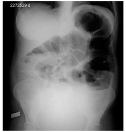
A Obstrução intestinal; distensão de alças de intestino delgado e cólon.
B Abdome agudo obstrutivo; pneumoperitônio e ausência de ar na ampola retal.
C Obstrução intestinal baixa; distensão colônica e válvula ileocecal competente.
D Constipação intestinal; ar na ampola retal e distensão de cólon e intestino delgado.
Questão 557 · Diagnóstico · 4000178557Lactente de 40 dias de vida apresenta quadro de vômitos há cerca de 15 dias. Segundo relato da mãe, os vômitos são em jato, não biliosos e ocorrem sempre após as mamadas. O lactente tem ganhado pouco peso desde o nascimento e mostra-se irritado. Gestação sem intercorrências, exceto por tabagismo materno. No exame físico, o lactente encontra-se desidratado 1+/4+ e emagrecido. Aparelho respiratório e ausculta cardíaca sem anormalidades. Abdome evidencia distensão do andar superior, peristalse aumentada e oliva palpável. Considerando a principal hipótese diagnóstica para o caso descrito, assinale a opção que contém o exame de primeira escolha para confirmação diagnóstica, a ser realizado no abdome.
A Ultrassonografia.
B Ressonância magnética.
C Radiografia panorâmica.
D Tomografia computadorizada.
Questão 558 · Medicina Preventiva · Sigilo prof issional · Relação entre médicos · 4000178556Equipe multipro ssional de uma unidade de saúde da família deseja criar um grupo de mensagens eletrônicas para a discussão de casos clínicos que envolvam diagnósticos e tratamentos dos pacientes atendidos nessa unidade de saúde, sem revelar dados pessoais deles. Com base no Código de Ética Médica, assinale a opção correta.
A A criação de grupos de mensagens eletrônicas, mesmo que inclua apenas médicos, não é ética, pelo risco de quebra do sigilo.
B Os casos clínicos poderão fazer referência a situação clínica que permita identificação do paciente, desde que autorizado por ele.
C A responsabilidade ética sobre o sigilo dessas informações é do administrador do grupo, que deverá ser o responsável técnico da unidade.
D O grupo só poderá incluir profissionais médicos, com a ressalva que as informações passadas têm caráter confidencial e não podem extrapolar os limites do grupo.
Questão 559 · Rastreamento do câncer de colo do útero · 4000178555Ao orientar uma paciente sobre a importância do preventivo de câncer de colo de útero, um pro ssional de enfermagem enfatizou que, conforme orientações do Ministério da Saúde, esse exame deve ser realizado por todas as mulheres com vida sexual ativa que se encontrem em determinado intervalo de idade. Essa mesma paciente apresentou seu exame, cujo resultado acusou infecção pelo HPV ou lesão de baixo grau. Considerando o caso, assinale a opção que indica, respectivamente, o intervalo de idade recomendado pelo Manual do Ministério da Saúde para coleta do exame preventivo e a orientação que deve ser dada para a paciente em questão.
A 15 a 35 anos; realizar colposcopia.
B 25 a 64 anos; repetir o exame após um ano.
C 25 a 64 anos; repetir o exame após três anos.
D 15 a 35 anos; iniciar o tratamento imediatamente.
Questão 560 · Nef rologia · Causas secundárias · 4000178554Paciente de 72 anos, com diagnóstico recente (e já em início de tratamento) de adenocarcinoma ductal in ltrante de mama, retornou ao ambulatório de clínica médica, com queixa de “inchaço”. Ela informou que tem acordado com edema palpebral bilateral e edema em membros inferiores, predominantemente vespertino. Negou dispneia. Referiu urina espumosa. Em sua história patológica pregressa, há relato de hipertensão arterial sistêmica, estando ela em tratamento com anlodipino e atenolol. No exame, a paciente mostrava-se levemente hipocorada, apresentando edema peripalpebral bilateral e edema de membros inferiores (3+/4+); sua pressão arterial se encontrava em 140 × 88 mmHg. Exames complementares solicitados revelaram dislipidemia (hipercolesterolemia às custas de LDL-colesterol), hipoalbuminemia (2,4 g/dL) e proteína na urina de 24 horas no valor de 4,2 g (valor de referência < 0,15 g). A hipótese diagnóstica mais provável para a queixa atual da paciente é
A disfunção hepática precipitada por metástases do câncer de mama e hipertensão portal.
B angioedema induzido pelo esquema quimioterápico.
C cardiotoxicidade secundária ao esquema quimioterápico com insuficiência cardíaca descompensada perfil B.
D nefropatia membranosa paraneoplásica com síndrome nefrótica.
Questão 561 · Características Ultrassonográf icas dos Nódulos · Indicações de PAAF · 4000178553Em atendimento em unidade de saúde da família, você atende pela primeira vez uma mulher, com 32 anos, parda, mãe de dois lhos. Ela se encontra assintomática e realizou exames laboratoriais de hemograma colesterol total e frações, glicemia e per l hormonal tireoidiano, que resultaram normais. Mostrou, ainda, um ultrassom cervical recente, que evidencia um nódulo sólido, no 1/3 superior do lobo direito da tireoide, com 1 cm, espongiforme, sem calci cações, mais largo que alto e de limites precisos. Seu exame físico confirmou os achados ultrassonográficos. Nesse caso, a conduta mais apropriada é
A supressão hormonal.
B tratamento cirúrgico.
C controle clínico/imaginológico.
D punção aspirativa por agulha fina.
Questão 562 · Pediatria · Técnicas de amamentação · 4000178552Lactente de 30 dias, portadora de síndrome de Down, apresenta sucção fraca e di culdade de ganho de peso. Ela necessita ser encaminhada para acompanhamento de equipe multidisciplinar. Nessa situação, a orientação inicial a ser dada à mãe é
A oferecer o seio, realizar ordenha de 3 em 3 horas e iniciar fórmula de partida à noite.
B estimular a região perioral da criança e iniciar fórmula de partida exclusiva, para evitar broncoaspiração.
C evitar oferecer o seio, mesmo que a criança estabeleça coordenação entre sucção, deglutição e respiração.
D contraindicar amamentação, pois a hipotonia dificulta o aleitamento materno.
Questão 563 · Préeclâmpsia com sinais de gravidade · Obstetrícia · 4000178551Primigesta de 17 anos de idade, na 32ª semana de gestação, com quadro de pré-eclâmpsia leve, foi encaminhada do ambulatório de pré-natal de alto risco diretamente para a maternidade. Qual situação clínica determinou acertadamente essa conduta?
A Proteinúria de 5 g.
B Creatinina sérica de 0,9 mg/dL.
C Desidrogenase láctica de 490 UI.
D Nível tensional de 150 × 110 mmHg, mantido por 4 horas.
Questão 564 · Abordagem Comunitária · Medicina Preventiva · 4000178550Uma equipe de saúde (ES) de um distrito sanitário especial indígena (DSEI) realizou uma análise situacional de saúde da população adstrita e identi cou um problema de alcoolismo na população masculina. A equipe planeja, junto com os líderes locais, uma intervenção comunitária para enfrentar esse problema de saúde, respeitando o contexto intercultural local. Conforme a Política Nacional de Atenção à Saúde dos Povos Indígenas, qual das seguintes propostas deve ser adotada pela ES para desenvolver a intervenção?
A A ES e os líderes podem convidar a população masculina para uma roda de conversa sobre o tema do alcoolismo na aldeia, com o objetivo de pactuar com os participantes os próximos passos.
B A ES pode convidar a população para ir ao polo base a fim de assistir a uma palestra expositiva sobre os riscos e as complicações do etilismo crônico, avaliando a possibilidade de prescrever midazolam para as pessoas com dificuldade de cessar o uso de bebida alcóolica.
C A ES pode realizar uma reunião de planejamento para designar o papel de cada membro da equipe e convidar a população para ir ao polo base a fim de assistir a uma palestra sobre os riscos e as complicações do etilismo crônico.
D A ES e os líderes podem convidar a população masculina para uma roda de conversa sobre o tema do alcoolismo na aldeia, com o objetivo de prescrever benzodiazepínicos para as pessoas com dificuldade de cessar o uso de bebida alcóolica.
Questão 565 · Nef rologia · Hemodiálise · 4000178549Paciente de 64 anos, sexo masculino, diabético tipo 2 há 22 anos, com adesão insatisfatória ao plano de cuidados, foi internado em hospital de cuidados terciários, com quadro clínico compatível com uremia (sonolência, anorexia, náuseas, vômitos e soluços). Exames laboratoriais confirmaram importante retenção azotada, acidose metabólica, hipercalemia moderada, hipocalcemia e hiperfosfatemia. Em função do estado urêmico, sua doença renal crônica foi abordada com a realização de hemodiálise (HD) convencional, tendo sido providenciada a punção de veia jugular interna direita, por onde foi posicionado um cateter venoso central de duplo lúmen. Logo nos primeiros minutos após iniciada a HD, o paciente passou a apresentar quadro de hipotensão arterial, A explicação mais adequada para o quadro apresentado no início da sessão de HD é
A embolia pulmonar gasosa precipitada pela punção venosa profunda.
B síndrome de desequilíbrio dialítico provocado por desvios osmóticos graves.
C rápida mobilização de fluidos por ultrafiltração na ausência de resposta autonômica adequada.
D reação anafilática/anafilactoide ao óxido de etileno utilizado para esterilização do sistema de HD.
Questão 566 · Apresentação Clínica · 4000178548Paciente de 31 anos, sexo masculino, solteiro, queixa-se de aumento do volume do testículo direito, indolor, associado a sensação de “caroço” endurecido, há seis meses. Conforme ultrassom de região escrotal trazido pelo paciente, identi ca-se lesão de aproximadamente 2 cm, com bordas irregulares e de aspecto heterogêneo, com calcificações numerosas. Nesse caso, qual é a principal hipótese diagnóstica?
A Torção do cordão espermático.
B Hérnia inguinal escrotal.
C Tumor de testículo.
D Orquiepididimite.
Revisar: possível letra faltando em enunciado
Questão 567 · Mães inadequadamente tratadas · 4000178547Recém-nascido de 4 horas de vida foi levado ao pronto-socorro por equipe do serviço de atendimento móvel de urgência após parto domiciliar de paciente sem histórico de realização de prénatal. Foram prestados os primeiros atendimentos à mãe e ao bebê. Teste rápido da mãe para HIV, hepatite B e hepatite C resultaram negativos, mas, para sí lis, o resultado foi positivo. Coletado, então, teste não treponêmico, o VDRL da mãe foi de 1:8, e o da criança VDRL resultou não reagente. O recém-nascido fez os exames de hemograma completo, glicemia e radiografia de ossos longos e liquor, além de exame físico; todos resultaram normais. Nesse caso, a conduta adequada para a mãe é
A observação clínica e programação de nova sorologia em 1 mês.
B penicilina benzatina 50.000 UI/kg, dose única, intramuscular.
C penicilina cristalina 50.000 UI/kg, intravenosa, de 12/12h, por 10 dias.
D penicilina procaína 50.000 UI/kg, intramuscular, uma vez ao dia, por 10 dias.
Questão 568 · Obstetrícia · Pesquisa Streptococcus do grupo B Strepto B EGB swab para pequisa Strepto B · 4000178546Gestante de 39 anos de idade, com histórico de três cesarianas prévias, irá realizar uma cesariana eletiva por iteratividade, com 39 semanas de gestação. Ao ser internada na maternidade para realizar o procedimento, ela apresentou cultura positiva para com 36 semanas de gestação. Durante a anamnese, a paciente relatou ser alérgica a penicilina benzatina. Diante das informações apresentadas, qual é a melhor conduta a ser adotada?
A Evitar profilaxia antibiótica.
B Usar vancomicina 1 g intravascular.
C Empregar ampicilina 2 g intravascular.
D Utilizar clindamicina 900 mg intravascular.
Questão 569 · Medicina Preventiva · Atenção Primária à Saúde APS no Brasil · 4000178545A Política Nacional de Atenção Integral à Saúde das Pessoas Privadas de Liberdade no Sistema Prisional (PNAISP) segue os atributos e as competências da Atenção Primária à Saúde na perspectiva de promoção da saúde, prevenção de agravos, tratamento e seguimento, entre outros. A respeito dessa política, assinale a opção correta.
A Ela garante a saúde das pessoas privadas de liberdade, por intermédio de um acordo entre o governo federal, estados e municípios.
B A equipe de saúde da família de um município não tem o dever de desenvolver ações de saúde em uma unidade carcerária, mesmo que localizada em seu território.
C As equipes de atenção primária prisional não poderão possuir equipe de saúde mental, pois as pessoas privadas de liberdade devem ser acompanhadas em Centro de Atenção Psicossocial (CAPS).
D A adesão à PNAISP é obrigatória para os municípios e estados, garantindo-se, assim, o cuidado integral à saúde das pessoas privadas de liberdade.
Questão 570 · Trombólise Endovenosa · 4000178544Homem de 63 anos, portador de hipertensão arterial sistêmica e diabetes cardiopatia hipertensiva e brilação atrial paroxística, foi levado por familiares a uma unidade de emergência, com quadro neurológico de instalação abrupta havia cerca de 2 horas. Segundo informaram seus familiares, o paciente tinha começado a “falar embolado” e mostrava di culdade para movimentar o membro superior direito, tendo evoluído para progressivo rebaixamento do nível de consciência, o que motivou a família a levá- lo para a unidade. Não houve interrupção da administração de fármacos de uso crônico (valsartana, amlodipina e amiodarona). No exame físico, o paciente estava em coma super cial, exibindo evidente hemiparesia de predomínio braquiofacial direito. Sua pressão arterial (ambos membros superiores) era de 160 × 100 mmHg, sendo o ritmo cardíaco irregular, em 2 tempos, com bulhas normofonéticas e sem sopros. A glicemia capilar era de 320 mg/dL, enquanto o eletrocardiograma revelou apenas ritmo de brilação atrial com resposta ventricular inferior a 110 batimentos por minuto. Uma tomogra a computadorizada de crânio, laudada em 45 minutos após sua chegada à unidade, mostrou-se sem anormalidades aparentes. Visando-se ao melhor prognóstico do paciente, com menores limitações neurológicas funcionais futuras, a estratégia terapêutica que deve ser instituída imediatamente é
A reverter a fibrilação atrial paroxística com cardioversão química.
B administrar terapia trombolítica intravenosa com rtPA.
C infundir insulina intravenosa em bólus.
D controlar a hipertensão arterial com nitroprussiato de sódio.
Questão 571 · Rastreamento do Câncer de Próstata · 4000178543Paciente de 83 anos, sexo masculino, diabético, cardiopata grave e dislipidêmico, sofreu infarto agudo do miocárdio há 5 anos, tendo sido tratado com colocação de 2 nos hábitos de vida ou na dieta. Sua família pergunta da possibilidade de realizar rastreamento para câncer de próstata no paciente. Conforme as recomendações do Ministério da Saúde, a conduta mais adequada no caso é
A solicitar ultrassonografia transretal de próstata.
B realizar toque retal e exame de PSA.
C requerer apenas exame de PSA.
D não indicar o rastreamento.
Questão 572 · Medicina Preventiva · Estatuto da Criança e do Adolescente ECA · 4000178542Adolescente de 13 anos, sexo masculino, em seguimento na unidade básica de saúde desde os 3 anos, com diagnóstico de diabetes teve duas internações nos últimos três meses por cetoacidose diabética. Durante a consulta, o paciente referiu que não faria uso das medicações, pois os remédios o “deixam gordo” e ele estava “cansado de tomar picada”, desprezando a dose após a manipulação dela. Preocupado, o médico informou ao adolescente que seria obrigado a comunicar o fato à mãe, enfrentando, com isso, grande descontentamento do paciente. No que diz respeito ao Código de Ética Médica, o médico
A cometeu uma infração, por não respeitar o sigilo médico.
B não cometeu uma infração, por ser uma situação de risco.
C não cometeu uma infração, por a mãe já saber das internações.
D cometeu uma infração, por não respeitar a autonomia do paciente.
Questão 573 · Contraindicações · 4000178541Mulher de 36 anos de idade, G3P3A0 (3 partos vaginais), compareceu a consulta no centro de saúde, para renovar receita de anticoncepcional injetável mensal. Faz uso do método contraceptivo há 5 anos, com boa adaptação, e não deseja nova gestação. É tabagista, fuma 20 cigarros por dia, e é etilista social. Tem parceiro único há 10 anos. Nega uso de preservativo nas relações sexuais. Diante das informações, qual é a orientação de método anticoncepcional mais adequado para essa paciente?
A Usar contraceptivo oral além do injetável mensal.
B Substituir o método utilizado pelo anel vaginal.
C Inserir dispositivo intrauterino (DIU) de cobre.
D Manter o esquema conceptivo adotado.
Questão 574 · Medicina Preventiva · Saúde Suplementar · 4000178540A Agência Nacional de Saúde Suplementar (ANS), vinculada ao Ministério da Saúde, é uma autarquia que regula, normatiza, controla e scaliza os planos de saúde. Em novembro de 2021, foi aprovada a Política Nacional de Saúde Suplementar para o enfrentamento da covid-19 (PNSS-Covid-19). Uma das diretrizes dessa política é
A criar um sistema de saúde complementar ao SUS, tendo como eixo a Atenção Primária à Saúde (APS) da rede SUS e a integração de bases de dados relacionadas à covid-19.
B promover ações que garantam o atendimento à saúde, visando-se ao melhor desfecho clínico com custo adequado e cuidado centrado na experiência do paciente.
C desenvolver mecanismos que posterguem o cumprimento de contratos e o atendimento à saúde, a partir dos critérios da ANS, haja vista a excepcionalidade da pandemia de covid-19.
D empreender ações que visem garantir o atendimento às necessidades de tratamento dos pacientes graves, permitindo-se que os casos leves sejam atendidos pela APS da rede SUS.
Questão 575 · Tratamento · Chikungunya · Complicações · 4000178539Mulher de 30 anos foi a consulta em ambulatório de clínica médica devido a artrite nas mãos, nos joelhos e nos tornozelos. Relatou que o quadro iniciou havia 4 meses, de forma súbita, com febre (até 38,5 °C), exantema difuso levemente pruriginoso, eritema conjuntival e poliartralgia. Relatou que todos os sintomas duraram cerca de 3 a 5 dias, havendo persistência apenas da dor articular. Desde então, tem feito uso de analgésico comum e/ou anti-inflamatório não hormonal, devido às dores articulares persistentes. O exame físico mostrou-se completamente normal, exceto por artrite na segunda e na terceira metacarpofalangeana à esquerda, na terceira e na quarta interfalangeana proximal da mão direita, nos joelhos e nos tornozelos. Assinale a opção que apresenta, respectivamente, a correta hipótese diagnóstica para o caso e a opção terapêutica adequada.
A Citomegalovirose; paracetamol.
B Febre do Mayaro; metotrexato.
C Chikungunya; metotrexato.
D Dengue; paracetamol.
Questão 576 · Clínica Médica · Calázio · 4000178538Mulher de 25 anos apresentou edema, rubor e dor na pálpebra superior direita, com resolução espontânea do quadro em 48 horas. No momento, apresenta nodulação de 0,3 cm, indolor, localizada na face interna do terço médio da pálpebra superior direita. Nega febre ou qualquer outro sintoma. Nesse caso, qual é o diagnóstico mais provável?
A Calázio.
B Hordéolo.
C Canaliculite.
D Dacriocistite.
Questão 577 · Síndrome Anticolinérgica · 4000178537Pré-escolar de três anos de idade, sexo masculino, previamente hígido, foi levado à emergência, apresentando agitação psicomotora, midríase, boca seca e rubor facial. A mãe dele informou que tinha percebido os sintomas havia uma hora, ao chegar do trabalho. O menor ca em casa com a irmã, de 10 anos, durante o período da tarde, até a mãe retornar do trabalho. Conforme o quadro clínico apresentado, trata-se de intoxicação por
A dipirona.
B salbutamol.
C clorpromazina.
D dexclorfeniramina.
Revisar: possível letra faltando em enunciado
Questão 578 · Conduta · Obstetrícia · 4000178536Tercigesta, com ambas as gravidezes anteriores acometidas por pré-eclâmpsia, apresenta restrição de crescimento fetal intrauterino por insu ciência placentária. Encontra-se na 35ª semana de gestação, com dopplervelocimetria da artéria umbilical com diástole zero, mas com duto venoso normal. Qual é a conduta obstétrica indicada para essa paciente?
A Cesariana eletiva.
B Neuroproteção fetal.
C Perfil biofísico fetal a cada 3 dias.
D Dopplervelocimetria fetal a cada semana.
Questão 579 · Métodos hormonais combinados · 4000178535A equipe de uma unidade de saúde da família está organizando atividades educativas com a comunidade sobre métodos contraceptivos e planejamento familiar. Com relação aos direitos reprodutivos e sexuais na Atenção Primária à Saúde (APS), assinale a opção correta.
A A avaliação global e o acolhimento com escuta qualificada são função exclusiva dos médicos e enfermeiros na APS.
B É função específica da enfermagem a orientação com relação aos métodos contraceptivos de barreira.
C O método contraceptivo definitivo somente é aplicado para homem ou mulher com capacidade civil plena e que tenha idade acima de 25 anos e pelo menos dois filhos vivos.
D Para prescrição de anticoncepcional oral, não é necessária a realização prévia de colpocitologia oncótica nem exame de mamas.
Questão 580 · Principais Causas · 4000178534Homem de 75 anos foi levado ao serviço de urgência devido a confusão mental. Os familiares relataram que o homem é diabético (em uso de metformina 500 mg 2 vezes ao dia) e tabagista (1 maço a cada 2 dias). Informaram que ele está no quarto dia de pós-operatório de colecistectomia por via laparoscópica e recebera alta no segundo dia de pós-operatório, evoluindo bem. Contudo, ontem, tinha apresentado episódio de confusão mental, trocando os nomes dos lhos e esquecendo se havia jantado ou não. Hoje, pela manhã, apresentou quadro semelhante de confusão mental, relatando já ter tomado o café da manhã, mesmo sem tê-lo feito. No exame, apresenta-se consciente, com pontuação de 14 na Escala de Coma de Glasgow. Sua temperatura é de 38,6 °C, pulso de 120 batimentos por minuto, 26 incursões respiratórias por minuto, saturação de O₂ de 93% com cateter nasal de oxigênio. Na ausculta pulmonar, apresentou crepitações em base direita. Sua pressão arterial é de 96 × 60 mmHg. Sem alterações na ausculta cardíaca. Abdome normotenso, indolor, sem visceromegalias, com ferida cirúrgica em bom estado, sem secreção purulenta. No caso apresentado, a conduta a ser adotada é
A manter o paciente em regime ambulatorial e prescrever antibiótico via oral.
B internar o paciente para realização de exames laboratoriais, e iniciar antimicrobianos via intravenosa.
C solicitar tomografia computadorizada de abdome com contraste e prescrever antitérmico e sintomáticos.
D solicitar tomografia computadorizada do encéfalo e prescrever haloperidol.
Questão 581 · Cirurgia · Hérnia Complicada · Hérnia Femoral · 4000178533Mulher de 47 anos procurou atendimento por quadro de dor e abaulamento irredutível em região inguinal direita havia 2 dias, associado a vômitos, distensão abdominal e parada de eliminação de gases. No exame físico, o abdome encontrava-se distendido, com cicatriz cirúrgica subcostal à direita, abaulamento abaixo do ligamento inguinal à direita, irredutível, sem sinais ogísticos, ruídos hidroaéreos diminuídos, hipertimpânico, dor à palpação super cial e profunda generalizada, descompressão brusca negativa, toque retal com presença de fezes em ampola. No caso apresentado, o diagnóstico mais provável é abdome agudo obstrutivo por hérnia
A femoral encarcerada.
B incisional encarcerada.
C inguinal direta encarcerada.
D inguinal indireta encarcerada.
Questão 582 · Antipsicóticos · Síndrome Extrapiraminal SEP · Intoxicações Exógenas · 4000178532Pré-escolar de 3 anos e 4 meses de idade deu entrada no pronto-socorro apresentando rigidez e espasmos musculares e hipertermia. Não apresentava di culdade respiratória. Ausculta cardíaca sem anormalidades. Sem história prévia de doença cardíaca. O paciente estava recebendo oxigenoterapia quando um primo dele, de quatro anos, deu entrada no mesmo hospital, com quadro semelhante. Ambos haviam passado as últimas 12 horas na casa da avó materna, que há anos faz tratamento de esquizofrenia e hipertensão arterial. As evidências clínicas dessa história induzem a necessidade de o médico investigar
A cardiopatia congênita cianótica.
B intoxicação exógena por captopril.
C intoxicação exógena de haloperidol.
D ingestão exógena por benzodiazepínico.
Questão 583 · Tratamento · 4000178531Paciente de 30 anos, com 25 semanas de gestação, portadora de diabetes consulta no pré-natal de alto risco, com queixa de corrimento vaginal com prurido e ardência. Relatou também dispareunia de introito vaginal e disúria. No exame, confirmou-se a presença de eritema e ssuras vulvares, corrimento grumoso, com placas aderidas à parede vaginal, de cor branca, edema vulvar e escoriações. Desde o início da gestação, a paciente já tinha tratado 4 vezes os mesmos sintomas. Qual é o tratamento a ser proposto para a paciente?
A Indução com fluconazol 150 mg, via oral, 1 vez ao dia, dias 1, 4 e 7. Manutenção com fluconazol 150 mg, via oral, 1 vez por semana, por 6 meses.
B Indução com itraconazol 100 mg, 2 comprimidos, via oral, 2 vezes ao dia, por 1 dia. Manutenção com miconazol óvulo vaginal, 1 vez por semana, durante 3 meses.
C Indução com miconazol creme vaginal tópico diário por 10 a 14 dias. Manutenção com miconazol creme vaginal tópico, 2 vezes por semana, durante 6 meses.
D Indução com miconazol creme vaginal tópico diário por 7 dias. Manutenção com miconazol óvulo vaginal, 1 vez por semana, durante 3 meses.
Questão 584 · Medicina Preventiva · 4000178530Lista Nacional de Notif icação Compulsória de doenças agravos e eventos de saúde pública Mulher de 45 anos compareceu a consulta médica em unidade de saúde da família (USF), solicitando prescrição de clonazepam (por sugestão de uma vizinha), pois não consegue dormir. É casada e refere que seu marido é uma pessoa complicada, pois não deixa ela trabalhar, reclama de tudo o que ela faz, grita com ela e a critica muito. Ela nega que ele já a tenha agredido sicamente, mas se sente humilhada e tem medo dele. O plano de cuidado dessa paciente deve incluir
A notificação de agravo e acompanhamento na USF.
B encaminhamento para psiquiatra e notificação de agravo.
C denúncia do caso pelo número 180 e acompanhamento da USF.
D denúncia do caso pelo número 180 e encaminhamento para psiquiatra.
Questão 585 · Reumatologia · Fibromialgia · 4000178529Mulher de 32 anos, professora de educação básica, procurou assistência médica, com queixas de dores generalizadas pelo corpo e di culdade para dormir. Não faz uso de nenhum medicamento para doenças crônicas. Encontra-se de licença médica há 6 meses e ainda não obteve grande melhora. Refere que acorda exausta. Nega febre. Diz já ter sido muito ativa, trabalhado em 4 escolas ao mesmo tempo, entretanto tem medo de retornar ao trabalho e voltar a ter dores mais fortes. O exame físico mostrou-se normal, à exceção da dor à pressão em diversos grupamentos musculares em todo o corpo, sem sinal de bloqueio articular ou de in amação articular. Foram realizados alguns exames laboratoriais, que resultaram normais, incluídos TSH, VHS e proteína C reativa ultrassensível. Provavelmente, trata-se de
A polimiosite.
B fibromialgia.
C fadiga crônica.
D polimialgia reumática.
Questão 586 · Suporte Nutricional Parenteral · 4000178528Paciente de 30 anos, sexo feminino, foi submetida a punção de veia jugular interna direita para início de nutrição parenteral hospitalar, em primeira tentativa, sem intercorrências. Foi acoplado o equipo com frasco de SF 0,9% 500 ml. O teste do retorno sanguíneo foi positivo. Percebeu-se, então, uxo ascendente da coluna de sangue dentro do equipo. Nessa situação, qual deve ser a conduta subsequente?
A Solicitação de ultrassonografia diagnóstica.
B Retirada da punção profunda e compressão.
C Instalação de infusão lenta de SG 5% 500 ml.
D Solicitação de radiografia de tórax de controle.
Questão 587 · Síndrome nef rótica · 4000178527Pré-escolar de três anos de idade foi admitido na emergência, com quadro de edema e oligúria havia cinco dias. Exame físico: pressão arterial de 80 × 60 mmHg; edema palpebral e de membros inferiores. Exame de urina: densidade urinária = 1.015; hemácias = 3/campo; proteinúria = 3+/4+; piócitos = 4/campo. Considerando-se a principal hipótese diagnóstica, o tratamento medicamentoso indicado é
A diurético.
B corticoide.
C antibiótico.
D anti-inflamatório não hormonal.
Questão 588 · Monitorização pós tratamento · 4000178526Mulher com 20 semanas de gestação foi diagnosticada com sí lis, sendo ela e o parceiro adequadamente tratados com penicilina benzatina. Depois de terminado o tratamento inicial, o controle mensal de cura dessa paciente, na Atenção Primária à Saúde, exige seguimento com
A VDRL.
B TPHA.
C FTA-ABS.
D penicilina procaína.
Questão 589 · Herpangina Doença MãoPéBoca · 4000178525Criança de 5 anos foi levada por familiar para consulta na unidade básica de saúde, com quadro de febre não aferida havia 3 dias, odinofagia e recusa alimentar. No exame físico, observou-se presença de lesões vesiculares na mucosa bucal e na língua, além de erupções papulovesiculares localizadas em regiões palmares e plantares bilateralmente. Considerando-se como principal hipótese diagnóstica a síndrome mão-pé-boca, qual é a conduta correta?
A Orientar isolamento e afastar a criança da creche por sete dias ou até o desaparecimento das lesões cutâneas.
B Notificar imediatamente o caso ao serviço de vigilância epidemiológica e agendar visita à creche para busca ativa de casos.
C Recomendar isolamento domiciliar por sete dias e instituir tratamento ambulatorial com o antiviral plenaril.
D Encaminhar a criança para internação hospitalar, para hidratação, se necessária, tratamento sintomático e aplicação de imunoglobulina endovenosa.
Questão 595 · Suicídio · 4000177263O suicídio está para o psiquiatra como o câncer está para o me pode proporcionar cuidados ideais, mas, ainda assim, o paciente pode cometer suicídio de qualquer modo. Talvez o conceito mais importante relativo ao suicídio e normalmente depressão, sendo receptivo a tratamento psicológico e farmacológico. Em relação ao comportamento parassuicida, assinale a afirmativa correta.
A Pensamento de servir como agente da própria morte; a gravidade pode variar dependendo da especificidade dos planos suicidas e do grau de intenção suicida.
B Pacientes que causam danos a si mesmos por meio de automutilação (p. ex., cortes na pele), mas que normalmente não desejam morrer.
C Comportamento autodestrutivo com resultado não fatal acompanhado por evidências explícitas ou implícitas de que a pessoa pretendia morrer.
D Comportamento potencialmente autodestrutivo com evidências explícitas ou implícitas de que a pessoa pretendia morrer, mas a tentativa foi interrompida antes da ocorrência de danos físicos.
Questão 596 · Esquizof renia · Diagnóstico da Esquizof renia · 4000177262A esquizofrenia e esclarecida; portanto, às vezes, ela e na quinta edição do Manual Diagnóstico e Estatístico de Transtornos Mentais (DSM-5), o espectro da esquizofrenia. Em relação aos crite
A Se há história de transtorno do espectro autista ou de um transtorno da comunicação iniciado na infância, o diagnóstico adicional de esquizofrenia e
B Os sintomas devem persistir por pelo menos seis meses, e não deve haver um diagnóstico de transtorno esquizoafetivo ou transtorno do humo
C Deve haver dois dos itens a seguir, cada um presente por uma quantidade significativa de tempo durante um período de um mês (ou menos, se tratados com sucesso): delírios, alucinações, discurso desorganizado, comportamento grosseiramente desorganizado ou catatônico e/ou sintomas negativos (i.e., expressão emocional diminuída ou avolia).
D A presença de alucinações ou delírios e
Questão 597 · Psicof armacologia · Conceitos de Psicof armacologia · 4000177261Interação Medicamentosa (IM) pode ser definida como aumento ou diminuição do efeito clínico de um determinado medicamento em razão da interferência de outro. Os Antidepressivos Tricíclicos (ADT) representaram por muitos anos o tratamento de escolha para o transtorno depressivo. Entretanto, por agirem em múltiplos sítios de ação, causam muitos efeitos adversos. Assinale a opção que corresponda ao efeito correto em relação à interação medicamentosa dos ADT quando coadministrados com o anticonvulsivante fenitoína.
A Risco de sangramento em várias partes do corpo
B Potencialização de efeitos atropín
C Perda da eficácia terapêutica
D Prolongamento de QT
Questão 598 · Introdução e Conceitos Fundamentais · Dependência de Tabaco · 4000177260Responsável por uma das principais causas de morte do mundo, o tabagismo leva a óbito aproximadamente 5 milhões de pessoas a cada ano. A nicotina, uma amina terciária volátil, e do tabaco e também a causadora de dependência. Nas terminações nervosas, a nicotina estimula a liberação dos seguintes neurotransmissores:
A acetilcolina, dopamina, noradrenalina e serotonina
B dopamina, noradrenalina e serotonina.
C acetilcolina, noradrenalina e serotonin
D acetilcolina, dopamina, ocitocina, noradrenalina e serotonina.
Questão 599 · Transtorno de Pânico · Diagnóstico do Transtorno de Pânico · 4000177259O paciente com Transtorno de Pânico (TP) tem longo histórico de visitas a emergências hospitalares anteriormente ao seu diagnóstico psiquiátrico. Por essa razão, o médico precisa estar atento às manifestações do TP, uma vez que a acurácia do clínico para detectar transtornos de ansiedade costuma ser baixa. Assinale a opção que caracterize corretamente o Transtorno de Pânico (TP).
A Preocupação intermitente acerca da possibilidade de um novo ataque (ansiedade antecipatória).
B Ataques de pânico recorrentes, seguidos pelo medo de ter um novo ataque (ansiedade antecipatória) e por uma mudança de comportamento em função da presença dos ataques (sintomas de evitação).
C Ataques de pânico recorrentes, sem o desenvolvimento de qualquer outra mudança de comportamento por causa dos ataques.
D Preocupação intermitente acerca da possibilidade de um novo ataque (ansiedade antecipatória) sempre acompanhado de agorafobia.
Questão 600 · Transtorno do Humor Bipolar Tipo 2 · Diagnóstico do Transtorno do Humor Bipolar THB · 4000177258Transtorno do Humor Bipolar Tipo 1 O Transtorno Bipolar do Humor (TBH) é uma doença crônica e grave caracterizada por alternância de episódios depressivos, com ou sem sintomas psicóticos, e episódios de hipomania ou mania, com ou sem sintomas psicóticos. O TBH é classificado em três subtipos, segundo o Manual Diagnóstico e Estatístico de Transtornos Mentais, 5ª edição (DSM-5). Com base nessa classificação, assinale a afirmativa correta.
A O TBH tipo II compreende os casos nos quais ocorrem manias, hipomanias e depressões.
B O TBH tipo I compreende os casos nos quais ocorrem hipomanias e depressões.
C O TBH tipo I compreende os casos nos quais ocorrem manias, hipomanias e depressões.
D O TBH tipo III compreende os casos em que encontramos as oscilações do humor, mas essas não satisfazem os critérios para episódios do DSM-5
Questão 601 · Fibrilação Atrial · 4000177257Paciente do sexo feminino, 64 anos, comparece à consulta com o médico da estratégia de saúde da família relatando palpitações esporádicas, sem dor torácica, tontura, síncope ou dispneia associadas. Relata ser previamente hipertensa e diabética com bons controles das doenças de base. Realizado eletrocardiograma, não sendo visualizada onda P, intervalo RR irregular e frequência cardíaca de 89 bpm. A respeito do quadro, assinale a afirmativa correta.
A O escore HAS-BLED deve ser utilizado para estimar probabilidade de sangramento, desde que a frequência cardíaca ultrapasse 110 bpm.
B Caso a paciente apresente estenose mitral moderada à ecocardiografia, a anticoagulação poderá ser realizada com um inibidor direto da trombina.
C A digoxina, medicação inotrópica positiva e cronotrópica negativa que atua bloqueando o nó sinusal, apresenta como sinal patognomônico de intoxicação o “sinal da pá de pedreiro”.
D A paciente apresenta um escore de CHA2DS2Vasc igual a três, sendo recomendada anticoagulação com varfarina ou novos anticoagulantes orais.
Questão 602 · Diagnóstico · Critérios de Duke modif icados · 4000177256Paciente de 40 anos, usuário de drogas endovenosas, relata ter Paciente de 40 anos, usuário de drogas endovenosas, relata ter iniciado há sete dias um quadro de febre alta (superior a 38°C), calafrio, sudorese e perda de peso. Relata ter realizado procedimento dentário no período prévio ao início dos sintomas e feito a antibioticopro laxia proposta pelo cirurgião dentista. Apresenta, ao exame físico, sopro sistólico em foco mitral, hemorragias conjuntivais, nódulo eritematoso sensível em polegar e mácula eritematosa insensível na sola dos pés. A respeito da suspeita de endocardite, assinale a afirmativa correta.
A A endocardite definitiva é definida pelos Critérios de Duke, pela documentação de dois critérios maiores ou um critério maior com dois menores, ou de quatro critérios menores.
B Uma hemocultura positiva para
C As lesões de Janeway e os nódulos de Osler são considerados, respectivamente, fenômenos imunológicos e vasculares.
D As manchas de Roth são consideradas fatores imunológicos, assim como o aneurisma micótico.
Questão 603 · Meningoencef alite herpética · Diagnóstico · 4000177255Paciente do sexo masculino, 25 anos, com diagnóstico de HIV há dois anos, com TARV adequada e carga viral indetectável, iniciou quadro de cefaleia e febre há cinco dias, progredindo nesse período com sonolência, hemiparesia e crises convulsivas focais inéditas. Realizada tomogra a de crânio inicialmente, sem sinais de herniação e fundoscopia sem sinais de papiledema. Coletado líquor com pleocitose linfocítica, proteína levemente aumentada, glicorraquia normal. Ressonância magnética de sistema nervoso central evidenciou encefalite em região temporal. Com base no principal diagnóstico, assinale a opção que contemple o mais provável agente etiológico.
A Encefalite por
B Encefalite pelo vírus da imunodeficiência humana (HIV).
C Encefalite por herpes vírus simples (HSV-1, HSV-2).
D Encefalite por
Questão 604 · Combinada · Espirométrica · Classif icação · 4000177254Paciente masculino, 57 anos, tabagista ativo desde a infância, apresenta escarro e dispneia aos esforços há, pelo menos, dois anos. Nunca procurou apoio médico, pois não achava necessário. Relata emagrecimento e perda de funcionalidade, tornando-se mais dependente para atividades simples do dia a dia. Necessitou de duas internações por pneumonia no último ano, segundo ele. Ao exame físico, apresentava tórax em tonel, uso de musculatura acessória para respirar com posição do tripé e baqueteamento digital. Realizada espirometria, que evidenciou VEF1 de 31% do previsto, além de VEF1/CVF < 0,7. A respeito do caso apresentado, assinale a afirmativa correta.
A O paciente apresenta critérios clínicos e espirométricos de doença pulmonar obstrutiva crônica, sendo classificado como um GOLD IIID.
B O paciente apresenta critérios clínicos e espirométricos de doença pulmonar obstrutiva crônica, sendo classificado como um GOLD IVD.
C Pacientes com escores CAT (Teste de Avaliação do DPOC) < 10 ou mMRC (
D Pacientes com escores CAT (Teste de Avaliação do DPOC) > 10 ou mMRC (
Questão 605 · Trombose Venosa Prof unda TVP · 4000177253Paciente do sexo feminino, 55 anos, comparece à consulta do ortopedista, após artroscopia de joelho esquerdo, com queixa de dor em membro inferior esquerdo. Relata dor iniciada 3 dias após o procedimento, sem traumas associados, acompanhada de edema, dor e eritema na referida perna. É usuária de terapia de reposição hormonal e estava em repouso absoluto desde o procedimento. Ao exame físico, nota-se assimetria de membros inferiores (edema evidente), com dor à palpação do trajeto venoso e sinal de Homan positivo. Acerca do quadro apresentado, assinale a afirmativa correta.
A Deve-se realizar o escore de Wells para avaliar probabilidade de trombose venosa profunda. Caso a probabilidade clínica seja alta (pelo menos 3 pontos), sugere-se realizar dosagem de Dímero-D e, posteriormente, o ultrassom de membros inferiores
B Caso a anticoagulação de uma trombose venosa profunda seja realizado com varfarina, deve- se atentar ao valor do RNI (Relação Normatizada Internacional) para controle adequado, uma vez que estaremos interferindo na via intrínseca da anticoagulação.
C Caso a paciente apresente dispneia, dessaturação e dor torácica súbitas, deve-se aventar a hipótese de tromboembolismo pulmonar. Um eletrocardiograma nesta situação poderia demonstrar taquicardia, padrão S1Q3T3 e sinais de sobrecarga de ventrículo esquerdo.
D Pela alta suspeição de trombose venosa profunda pelo escore de Wells, deve-se realizar a ultrassonografia do membro acometido. Caso seja confirmada a trombose, deve-se prontamente iniciar a anticoagulação.
Questão 606 · Tratamento da Hipertensão arterial · 4000177252Homem de 45 anos, hipertenso mal controlado com uso de hidroclorotiazida 25 mg por dia, enalapril 20 mg por dia e anlodipino 10mg ao dia, vem em consulta ambulatorial. Relata ser bem aderente às medicações, pratica atividade física regular e segue a dieta DASH para controle pressórico. Traz exames laboratoriais demonstrando sódio sérico de 132 mmol/L, potássio 4,8 mmol/L, creatinina 0,9 mg/dL, ureia 30 mg/dL. Ao exame físico, em aparelho cardiovascular apresenta bulhas rítmicas a dois tempos, sem sopros, normofonéticas e pressão arterial de 160 x 90 mmHg. Quanto ao tratamento da hipertensão arterial desse paciente, assinale a afirmativa correta.
A O paciente apresenta hiponatremia provavelmente secundária ao uso do diurético tiazídico. Além da hiponatremia, podem-se ver outras consequências como hipomagnesemia e hipovolemia.
B A quarta droga a ser associada no tratamento da hipertensão resistente do paciente seria a espironolactona. Deve-se atentar para a hipocalemia que a droga poderia desencadear.
C O paciente obrigatoriamente precisa de investigação de causas de hipertensão arterial secundária, como doença renal crônica, apneia obstrutiva do sono e hipoaldosteronismo primário.
D O enalapril pode causar hipercalemia por aumentar a reabsorção de potássio e seu mecanismo de ação envolve a vasodilatação da arteríola aferente.
Questão 607 · Uso de metf ormina · Hematologia · 4000177251Paciente do sexo feminino, 63 anos, portadora de diabetes, hipotireoidismo e artrite reumatoide, comparece à consulta ambulatorial com resultados de exames laboratoriais de rotina. Faz uso de metformina, levotiroxina e metotrexato. Nota-se, em seu hemograma, hemoglobina de 11,8 g/dL, hematócrito de 34,4%, Volume Corpuscular Médio (VCM) de 115 fL, hemoglobina corpuscular média de 27,5 pg/hemácia e índice de anisocitose aumentado. A respeito da anemia, é correto afirmar que
A nem toda anemia com VCM elevado é megaloblástica. A causa pode ser o hipotireoidismo em si, hipótese reforçada caso seja calculado um índice reticulocitário superior a 2.
B caso seja realizada uma lâmina de esfregaço de sangue periférico e sejam visualizadas células em alvo, a hipótese de síndrome mielodisplásica deve ser aventada.
C A metformina pode determinar anemia megaloblástica por interferir na absorção de vitamina B12 no íleo distal.
D Para diferenciar uma deficiência de vitamina B12 de ácido fólico, pode-se dosar ácido metilmalônico e homocisteína. Caso ambos venham aumentados, teremos uma deficiência do ácido fólico.
Questão 608 · Exsudato X Transudato · 4000177250Paciente do sexo masculino, 34 anos, previamente hígido, iniciou quadro de tosse produtiva, dispneia e febre há 7 dias, evoluindo com dor torácica ventilatório-dependente. Ao exame físico, apresenta macicez à percussão de terço inferior de hemitórax esquerdo, abolição de frêmito tóracovocal e de murmúrios vesiculares na região. Realizada radiogra a de tórax com velamento do seio costofrênico ipsilateral, sem outros achados. Assinale a alternativa correta a respeito do quadro.
A Devem-se aplicar os critérios de Light para elucidar tipo do derrame pleural. Caso o líquido apresente características de exsudato, deve-se pensar em patologias como tuberculose, neoplasia ou uremia.
B Caso se realize a subtração entre a albumina sérica e a albumina do líquido pleural e o resultado seja maior do que 1,2, pensar-se-á em transudato.
C Derrames parapneumônicos tendem a apresentar valores pleurais de glicose inferiores a 60 mg/dL, ADA < 40 UI/L e celularidade com predomínio de linfócitos.
D Caso se realize a subtração entre a proteína sérica e a proteína do líquido pleural e o resultado for maior do que 3,1, pensar-se-á em exsudato.
Questão 609 · Dissecção aórtica aguda · Cirurgia · 4000177249Paciente homem, 65 anos, tabagista, hipertenso e diabético, comparece à emergência com queixa de dor torácica súbita, com irradiação para dorso e com assimetria de pulsos braquiais. A respeito da provável patologia para o caso apresentado, assinale a afirmativa correta.
A Dissecção aórtica tipo I de DeBakey representa o tipo A de Stanford.
B Dissecção aórtica tipo II de DeBakey representa o tipo B de Stanford.
C Disseções aórticas tipos II e III de DeBakey representam o tipo B de Stanford.
D Dissecções aórticas tipos I e II de DeBakey representam o tipo A de Stanford.
Questão 610 · Exames Complementares · Cirurgia · 4000177248Mulher, 40 anos e obesa, apresenta queixa de dor abdominal em hipocôndrio direito há cinco meses. A dor é esporádica, relacionada com a alimentação (pósprandiais), em cólica, no quadrante superior direito e, muitas vezes, associada com dispepsia, indigestão e azia. Já teve um episódio prévio de pancreatite aguda, mas que foi tratada clinicamente, sem investigação com exames de imagem. Assinale a opção que indique a patologia mais provável para o caso descrito.
A Caso ocorra a migração do cálculo biliar através de uma fístula entre o intestino e a vesícula biliar, e ele se impacte na válvula íleo-cecal, teremos o surgimento da síndrome de Mirizzi.
B O ultrassom é o exame diagnóstico padrão para cálculos biliares. Proporciona, também, informações como diâmetro do colédoco e anormalidades do parênquima hepático.
C A pancreatite relatada previamente pela paciente não apresenta relação com a doença da via biliar em estudo.
D Caso surja um quadro de colecistite aguda, deve-se iniciar hidratação, analgesia e antibioticoterapia (com enfoque em germes aeróbios gram-positivos e anaeróbios).
Questão 611 · Manejo dos Nódulos Tireoidianos · Câncer de Tireoide · 4000177247Paciente feminino, de 30 anos, técnica em radiologia, realizou ultrassonogra a de tireoide a pedido do seu médico particular por nódulo detectado em exame físico. Nega dor, rouquidão, emagrecimento e outras queixas. Quanto à investigação dos nódulos de tireoide, assinale a afirmativa correta.
A Entre os nódulos malignos, destacam-se em maior prevalência os carcinomas papilíferos e os medular de tireoide.
B O carcinoma papilífero é o segundo tipo de câncer de tireoide mais comum e pode ser diferenciado do folicular por uma punção aspirativa por agulha fina (PAAF).
C Carcinoma medular de tireoide tem relação com a neoplasia endócrina múltipla tipo 2A, que engloba também hiperparatireoidismo primário e adenoma hipofisário.
D Fatores de mau prognóstico do carcinoma papilífero são: sexo masculino, idade acima de 40 anos e tamanho maior que 3 cm.
Questão 612 · Diagnóstico · Tratamento · 4000177246Mulher, 24 anos, comparece à consulta de rotina preocupada com uma ultrassonogra a de abdome que realizou recentemente. Relata estar assintomática, mas que se preocupou com laudo de nódulo único e m fígado, de 4 cm, homogêneo. Nega antecedentes de hepatopatias, hepatites. É usuária de Contraceptivos Orais Combinados (ACO). Sobre o caso descrito, a respeito da mais provável patologia hepática, assinale a afirmativa correta.
A A paciente apresenta uma lesão denominada Hiperplasia Nodular Focal (HNF), principal patologia benigna do fígado, e o uso de ACO é fator de risco para seu desenvolvimento.
B A segunda patologia benigna mais comum do fígado é o hemangioma. A maioria dos tumores é pequena, mas podem manifestar sintomas como dores abdominais mesmo com tamanhos pequenos, o que torna obrigatória sua retirada cirúrgica.
C Os adenomas hepáticos ocorrem mais em mulheres em idade fértil. Lesões sintomáticas geralmente são aquelas maiores do que as apresentadas no caso, entre 8 e 15cm. Recomenda-se, em geral, retirá-los, considerando o risco de transformação maligna e de hemorragia espontânea.
D A suspensão do ACO utilizado pela paciente é mandatório para reduzir-se o risco de progressão da lesão, compatível com cisto hepático.
Questão 613 · Tomograf ia computadorizada TC e ressonância nuclear magnética RNM · 4000177245Paciente masculino de 60 anos, morador de área livre, busca o acolhimento da Unidade Básica de Saúde (UBS) por queixa de dor abdominal, olhos amarelados e emagrecimento. Relata quadro de dor abdominal, antes intermitente, e que agora está mais rotineira, além do surgimento de icterícia. Emagreceu cerca de 10 kg nos últimos 6 meses e apresenta acolia fecal e colúria. De antecedentes pessoais, relata que tinha hepatite B desde o nascimento. Aventada a hipótese de Carcinoma Hepatocelular (CHC), assinale a afirmativa correta.
A As dosagens de Alfafetoproteína (AFP) podem ser muito úteis no diagnóstico de CHC, alta sensibilidade e especificidade, independente do valor sérico. AFP elevado é patognomônico de CHC.
B A Tomografia Computadorizada (TC) com meio de contraste e a ressonância nuclear magnética se utilizam da hipervascularidade desses tumores e dos padrões de intensificação pelo contraste para auxiliar no diagnóstico.
C Um nódulo hipervascular compatível com CHC, associado a um valor de alfafetoproteína de 40 ng/mL, é diagnóstico.
D O estágio de cirrose hepática é fundamental para o desenvolvimento de CHC. Sendo assim, caso o paciente não apresente estigmas cirróticos, o diagnóstico de CHC deve ser descartado.
Questão 614 · Diagnóstico · 4000177211Paciente adulto jovem, 25 anos, apresenta há 6 meses um quadro de dor abdominal em cólica e diarreia intercalados com normalização das queixas. Notou que tem perdido peso, vigor e nota raias de sangue e muco nas fezes. Além do quadro gastrointestinal, apresenta lesões cutâneas compatíveis com pioderma gangrenoso e uveíte. Pensando-se em doença de Crohn e em seu diagnóstico, assinale a afirmativa correta.
A A tomografia computadorizada pode ser útil na demonstração do acentuado espessamento transmural e pode auxiliar no diagnóstico de complicações extramurais.
B O anticorpo antineutrofílico perinuclear (ANCAp) e o anti-
C A sigmoidoscopia ou a colonoscopia podem revelar úlceras aftosas com granularidade. Geralmente, vê-se um padrão contínuo de acometimento do intestino, diferente do padrão que ocorre na retocolite ulcerativa mais alternado.
D A presença de fissuras, fístulas e abscessos anais são mais comuns na retocolite ulcerativa do que na doença de Crohn.
Questão 615 · Doença Ulcerosa Péptica DUP · Gastroenterologia · 4000177210Homem de 37 anos, tabagista ativo, obeso e com dieta rica em produtos embutidos, queixa-se de d o r epigástrica, tolerável e frequentemente aliviada com alimentação. A dor tende a ser episódica, reaparecendo em momentos de estresse emocional. Nega náuseas, vômitos, irradiação da dor. Ao exame físico, apresentava dor à palpação de região mesoepigástrica, sem descompressão brusca positiva, sinal de Murphy negativo, sem outras possíveis alterações. Uma endoscopia digestiva alta foi realizada e localizou uma úlcera duodenal. A respeito do quadro apresentado, assinale a afirmativa correta.
A Modificações no estilo de vida, como cessação de tabagismo, adequação alimentar e aumento da ingesta de café auxiliam na cicatrização das úlceras.
B Os inibidores da bomba de prótons anulam todos os tipos de secreção de ácido proveniente de todos os tipos de secretagogos, mas são menos eficazes do que os antagonistas do receptor H2.
C Antiácidos atuam reduzindo a acidez ao se unirem com o ácido clorídrico e formarem sal e água. Devem ser ingeridos, de preferência, antes das refeições e em jejum.
D A cicatrização da úlcera duodenal após quatro a seis semanas de tratamento com sucralfato é superior à do placebo e comparável com a dos antagonistas do receptor H₂.
Questão 616 · Síndromes Pósgastrectomia · Cirurgia · 4000177209Paciente do sexo masculino realizou gastrectomia parcial com a reconstrução à Billroth II, queixa-se de náuseas e vômitos e plenitude epigástrica após 20 minutos das refeições. Aliado a isso, apresenta palpitações, taquicardia, diaforese e tonturas. Com relação ao quadro apresentado, assinale a afirmativa correta.
A O paciente apresenta uma das síndromes pós-gastrectomia denominada dumping. Tal doença pode ser classificada como precoce ou tardia, sendo a forma tardia mais comum do que a precoce.
B Tal complexo sintomático pode ocorrer após qualquer operação do estômago, mas é mais comum após reconstruções à Billroth I ou após vagotomia e procedimentos de drenagem.
C Apesar de a sequência exata dos eventos causadores de tal síndrome ainda não ser completamente definida, em geral concorda-se que ocorra devido à passagem rápida de alimento de alta osmolaridade do estômago para o intestino delgado.
D Medidas dietéticas tendem a melhorar o quadro clínico do paciente, como evitar alimentos que contenham grande quantidade de açúcar, ingerir líquidos junto das refeições. Ingestão frequente de pequenas refeições ricas em proteínas e gorduras não traz benefícios muito claros.
Questão 617 · Hérnia Umbilical · Cirurgia · 4000177208Paciente adulta do sexo feminino, multípara e obesa, apresenta quadro de abaulamento em região umbilical. Relata que tal abaulamento surgiu após a última gestação e que a incomoda bastante no ponto de vista estético, além de dar uma dor aguda ao tossir ou fazer esforços. No exame físico, nota-se abaulamento de região umbilical, irredutível à digitopressão, mas sem sinais de eritema ou dores locais. A respeito do quadro, assinale a afirmativa correta.
A A hérnia umbilical em um adulto deve ser corrigida para evitar encarceramento e estrangulamento, sendo que os reparos que utilizam tela apresentam menores taxas de recorrência.
B A paciente apresenta fatores de risco para o desenvolvimento de hérnia umbilical, como multiparidade e obesidade, apesar de tal patologia ser mais comum em homens do que em pacientes do sexo feminino.
C A abordagem laparoscópica associa-se com menor dor no pós-operatório, porém com recuperação mais lenta do que as técnicas abertas.
D Tal tipo de hérnia pode surgir no espaço de Grynfeltt ou no triângulo de Petit.
Questão 618 · Hérnias Inguinocrurais · Cirurgia · 4000177207Paciente do sexo feminino, 55 anos, obesa e com histórico de reparo prévio de hérnia inguinal, procura o médico de saúde da família com queixa de abaulamento em região inguinal à direita há 3 meses. Relata que o abaulamento não é constante, muitas vezes sumindo ao ser pressionado. Nega febre, dores abdominais o u sensibilidade local. Durante o exame físico, nota-se que a paciente apresenta abaulamento na porção superior medial da coxa direita, abaixo do nível do ligamento inguinal, redutível à compressão, sem outros colaborativos. A respeito da referida hérnia, assinale a afirmativa correta.
A A paciente apresenta uma hérnia inguinal por deslizamento, classificada como uma hérnia inguinal direta, sendo que no lado direito ocorre a participação do ceco e, no lado esquerdo, do cólon sigmoide.
B Tal hérnia está propensa a encarceramento e estrangulamento, em decorrência de o seu colo ser estreito.
C Esse tipo de hérnia ocorre mais em homens do que mulheres, correspondendo a cerca de um terço dos casos das hérnias da virilha nos pacientes masculinos e cerca de 2% em mulheres.
D Independente da técnica utilizada para sua correção, as taxas de recorrência são maiores do que a recorrência das hérnias inguinais, em torno de 10 a 15%.
Questão 619 · Diagnóstico de toxoplasmose congênita · Diagnóstico na gestação · Rastreamento na gestação · 4000177206Durante pesquisa de toxoplasmose em uma primigesta, com 13 semanas de idade gestacional, a dosagem do IgG e a do IgM vieram positivas. Gestante nega contato atual com gatos ou histórico prévio de toxoplasmose. Baseando-se na situação apresentada, é correto afirmar que
A tal combinação sorológica relata uma infecção aguda inicial. Para se evitar o risco de falsos- positivos, pode-se repetir a sorologia após duas semanas ou solicitar a dosagem de anticorpos IgA. Em casos falso-positivos, a IgG e a IgA se tornarão positivos.
B tal combinação sorológica relata uma infecção subaguda ou recente, devendo ser realizado o teste de avidez. Valores inferiores a 30% no referido teste são indicativos de infecção prévia (há mais de 4 meses), ao passo que valores superiores a 60% indicam infecção aguda (há menos de 4 meses).
C caso se confirme a infecção aguda materna, dever-se-á iniciar o uso de espiramicina, além de pirimetamina, sulfadiazina e ácido folínico para tratamento do feto.
D após o diagnóstico de uma infecção aguda, deve-se rastrear o feto quanto à possibilidade de infecção, com base na análise do líquido amniótico por amniocentese (a partir da 18ª semana de gestação), com a realização de PCR (reação em cadeia de polimerase) para pesquisa do Toxoplasma gondii
Questão 620 · Inf ecção Urinária e Bacteriúria Assintomática na gestação ITU · 4000177205Gestante, G2PN1A0, com idade gestacional de 34 semanas e 2 dias, comparece ao pronto-socorro com queixa de disúria, polaciúria, febre e dor lombar iniciados hoje, sem perdas de líquidos por via vaginal ou outras queixas. Relata boa movimentação do bebê, ter ingerido menos alimentos do que o habitual. Exame ginecológico não revelou alterações. Realiza cardiotocografia com laudo de categoria I. A esse respeito, assinale a afirmativa correta.
A A gestante deve ser prontamente hospitalizada e tratada com cefalosporina de 2ª ou 3ª geração. Caso se mantenha afebril por 24 a 48 horas, pode receber alta hospitalar com antibioticoterapia por via oral, como cefalexina ou nitrofurantoína.
B Gestantes com bacteriúria assintomática, caracterizada por presença de ≥ 100.000 colônias/mL de um único agente patogênico na amostra de urina, devem ser obrigatoriamente tratadas com antibioticoterapia. Pode ser prescrita nitrofurantoína ou fosfomicina.
C Devem-se evitar sulfonamidas no tratamento de cistite aguda em gestantes, principalmente no 1º trimestre da gestação.
D A maioria dos episódios de nefrolitíase ocorrem no 2º ou no 3º trimestre, quando é maior a ectasia ureteral determinada pela compressão do útero gravídico. Isso se deve, em parte, às alterações metabólicas de redução do citrato e magnésio séricos, além da redução da calcemia materna.
Questão 621 · Sistema endócrino e metabolismo · Desenvolvimento f etal · 4000177204A respeito das doenças da tireoide e paratireoide na gestação, assinale a alternativa correta.
A O hipotireoidismo materno relaciona-se com risco aumentado de hipertensão gestacional, abortos e partos prematuros. Causas primárias de hipotireoidismo incluem uso de lítio, amiodarona e de dopamina.
B A tireoidite pós-parto é resultado de um processo de destruição autoimune da tireoide, podendo acometer aproximadamente quase 10% das mulheres no 1º ano pós-parto e caracteriza-se pela elevação do anticorpo antirreceptor de TSH (anti-TRAb).
C Como não há passagem de PTH materno pela placenta, o ambiente fetal se caracteriza por um estado fisiológico favorável à formação do esqueleto, com hipercalcemia, calcitonina elevada e PTH suprimido.
D Na gravidez normal, apesar de o cálcio sérico estar menor do que fora da gestação, a forma ionizada encontra-se normal. Esse equilíbrio é mantido em razão do aumento da secreção da calcitonina que ocorre na gestante.
Questão 622 · Fisiopatologia · Sistema endócrino e metabolismo · 4000177203Primípara de 24 anos, com idade gestacional calculada de 11 semanas e 1 dia, retorna à consulta de prénatal. Previamente hígida e sem quaisquer queixas, realizou, entre outros exames, uma glicemia de jejum com valor de 91 mg/dL. A respeito do caso, é correto afirmar que
A a gravidez é uma condição caracterizada por resistência à insulina, com aumento compensatório na resposta das células betapancreáticas e hiperinsulinismo. A resistência usualmente começa no segundo trimestre e progride durante toda a gestação.
B a secreção de hormônios placentários contrainsulínicos, como o cortisol e a prolactina, é maior do que a dos hormônios pró-insulínicos, como o lactogênio placentário humano (hPL).
C um teste de tolerância oral à glicose deverá ser realizado entre a 24ª e a 28ª semanas de gestação. Pelo menos um valor superior ou igual a 92, 183 ou 150 mg/dL, respectivamente no momento zero, uma e duas horas após a administração da glicose, determinam o diagnóstico de diabetes mellitus gestacional.
D para grávidas com diabetes mellitus gestacional, deve-se manter a glicemia pré-prandial, 1 hora pósprandial e 2 horas pós-prandial, respectivamente, até 90, 140 e 100 mg/dL.
Questão 623 · Vulvovaginites · 4000177202Paciente de 18 anos busca atendimento ginecológico com queixa de corrimento vaginal e odor fétido, notadamente após o coito, há 2 dias. Relata ter parceiro xo, não utilizar preservativos nas suas relações sexuais. Nega dor e prurido. Durante inspeção ginecológica, nota-se saída de secreção cinzenta pela vagina, sem sinais de uretrite ou eritema local. A respeito do caso clínico apresentado, assinale a afirmativa correta.
A O pH dessas secreções é menor do que 4,5 e o exame microscópico das secreções vaginais mostra um número elevado de células-alvo e presença importante de leucócitos.
B Deve-se realizar o teste das aminas, que, utilizando hidróxido de potássio, liberará um odor de peixe, sendo considerado negativo.
C A não utilização de preservativos nas relações sexuais configura tal doença como uma infecção sexualmente transmissível, devendo o parceiro ser acionado e tratado.
D O efeito dissulfiram caracteriza-se por desconforto abdominal, rubor, vômitos e cefaleia e pode ocorrer caso haja ingestão de bebida alcoólica durante o tratamento com imidazólicos.
Questão 624 · Endometriose · 4000177201Mulher de 35 anos, com ciclos menstruais irregulares, procura clínica de reprodução assistida por queixa de infertilidade. Traz resultados de espermogramas do parceiro, coletado com condições ideais, sem alterações. Relata ter tido a menarca aos 12 anos de idade, nunca engravidou. Associado a essa alteração menstrual, apresenta dor pélvica crônica e dispareunia. No exame clínico, não foram constatadas alterações dignas de nota. A respeito do caso descrito, assinale a afirmativa correta.
A Fatores de proteção à endometriose incluem multiparidade, lactação, atividade física e menarca em idade precoce.
B A endometriose é definida como a ocorrência de tecido endometrial (glândulas e estroma) fora do útero, acomete principalmente vísceras pélvicas e peritônio, podendo inclusive manifestar com alterações do hábito intestinal.
C Um dos exames rotineiramente solicitados para o diagnóstico de endometriose é a histerossalpigografia e ela pode ser utilizada para diagnóstico primário.
D Achados sugestivos de endometriose na laparoscopia incluem as aderências em “corda de violino” e as “queimaduras por pólvora” nas superfícies serosas do peritônio.
Questão 625 · Miomatose uterina · 4000177200Mulher branca de 42 anos busca o seu consultório por queixa de dor hipogástrica. Relata ter tido a menarca com nove anos de idade, é nuligesta e nega tabagismo. Apresenta história familiar positiva para miomas. Exame físico: IMC 32 kg/m²; Útero aumentado de tamanho, irregular, rme e indolor. Realizada a ultrassonogra a transvaginal, com resultado de mioma classificação Tipo 4 pela Federação Internacional de Ginecologia e Obstetrícia (FIGO). A respeito do tema, assinale a afirmativa correta.
A O mioma tipo 4 é considerado como intramural e totalmente dentro do miométrio, sem extensão para a superfície endometrial nem para a serosa.
B Miomas submucosos e subserosos diminuem as taxas de fertilidade, as quais aumentam com remoção cirúrgica. Os intramurais, por outro lado, podem reduzir ligeiramente a fertilidade, mas sem aumentála após sua retirada.
C Miomas são mais comuns em mulheres brancas do que negras e tendem a aumentar de tamanho durante a gravidez por causa dos estímulos hormonais mais intensos e constantes nessa fase da vida da mulher.
D Caso se opte por tratamento clínico, deve-se realizar o uso de agonistas do hormônio de liberação da gonadotrofina (GnRH) acima de 1 ano, já que eles podem reduzir consideravelmente o tamanho do mioma, além de trazer benefícios para a densidade óssea feminina.
Questão 626 · Sangramento uterino anormal · 4000177199Em consulta de rotina, mulher na pósmenopausa queixa-se de sangramento uterino. A última ocorrência menstrual tinha sido há 5 anos e não apresentava sintomas climatéricos. Última colpocitologia oncótica foi realizada há 15 anos. Não havia alterações no exame físico ginecológico. A respeito dos sangramentos na pós-menopausa, assinale a afirmativa correta.
A Como as causas mais comuns de sangramento nesse período da vida da mulher são vaginite atrófica e uso de estrogênios exógenos, não há recomendação de realizar exames de imagem neste momento, devendo ser adotada conduta expectante.
B Deve ser realizada uma ultrassonografia transvaginal para avaliação de espessura endometrial. Espessuras endometriais de 4 mm já indicam fortemente a biópsia de material endometrial para avaliação de carcinoma endometrioide.
C O exame de Papanicolau é essencial no sangramento pós-menopausa, embora seja um método pouco sensível para detecção de câncer do endométrio.
D Caso a paciente seja diagnosticada com vaginite atrófica, ela poderá fazer uso apenas de estrogênio por via tópica, não sendo considerado como opção o uso sistêmico (mesmo que outras causas de sangramento anormal sejam descartadas).
Questão 627 · Norma Operacional Básica NOB e Norma Operacional de Assistência à Saúde NOAS · 4000177198Program Saúde da Família PSF e Estratégia Saúde da Família ESF Para que o Programa Saúde da Família (PSF) possa ser implantado e funcione adequadamente, é preciso que todos participem: Ministério da Saúde, Secretarias Estaduais e Municipais de Saúde. De acordo com o Guia Prático do Programa Saúde da Família (Brasília: Ministério da Saúde, 2001), correlacione as colunas a seguir: I. Ministério da Saúde II. Secretarias Estaduais de Saúde III. Secretarias Municipais de Saúde ( ) De nir, dentro de sua estrutura administrativa, o setor que responderá pelo processo de coordenação dos programas e que exercerá o papel de interlocutor com o nível de gerenciamento nacional. ( ) Regulamentar os mecanismos de cadastramento, inclusão e exclusão das equipes e pro ssionais para fins de pagamento de incentivos federais. ( ) Garantir infraestrutura necessária ao funcionamento das Unidades de Saúde da Família, dotando-as de recursos materiais e equipamentos suficientes para o conjunto de ações propostas. Assinale a opção que apresente a sequência correta, de cima para baixo.
A III – I – II
B II – I – III
C I – III – II
D II – III – I
Questão 628 · Program Saúde da Família PSF e Estratégia Saúde da Família ESF · 4000177197Programa de Agentes Comunitários de Saúde PACS Tomada a decisão política de implantar o Programa Saúde da Família (PSF) no município, é preciso debater amplamente com a população para que todos de fato entendam e participem. A definição do número d e Estratégia Saúde da Família (ESF) e de Agente Comunitário de Saúde (ACS) depende do número de famílias ou pessoas que cada um irá acompanhar. Essa definição depende das características do território: a distância das casas, as barreiras de acesso (rios, montanhas, inexistência de transporte adequado), a natureza e a dimensão dos problemas (área de risco social ou ambiental). Assim, para calcular o número de ESF e de ACS em uma área, é correto afirmar que
A se deve dividir a população da área ou município pelo número de pessoas que cada ESF ou ACS irá assistir.
B se deve dividir o total de habitantes do município por 3.450.
C a população a ser coberta por cada equipe deverá ser de até 6.900 pessoas, na proporção de uma Equipe de Saúde Bucal (ESB) para cada duas ESF implantadas.
D se deve dividir o total de habitantes no município por 6.900.
Questão 629 · Genograma · Ecomapa · 4000177196A família é o primeiro grupo do qual fazemos parte e pelo qual nunca deixamos de ser in uenciados, fato que a torna o eixo estruturante da Atenção Primária à Saúde (APS). Inicia-se a abordagem familiar por meio d e três leituras: anatomia da família, desenvolvimento familiar e funcionamento familiar. Na anatomia da família, temos o genograma e o ecomapa, como ferramentas disponíveis para realizar a abordagem familiar. De acordo com os conceitos de genograma e ecomapa, assinale a afirmativa correta.
A O genograma não permite mostrar os problemas presentes na família, não facilitando uma priorização desses para a intervenção.
B O ecomapa é a construção de um genograma composto, e não identifica a rede social e de apoio da família.
C O genograma identifica as relações e ligações dentro do sistema multigeracional da família.
D O genograma não pode ter um foco biomédico, e não deve ser utilizado para organizar as informações clínicas.
Questão 630 · Probabilidade préteste e valor preditivo positivo · Probabilidade préteste e valor preditivo negativo · 4000177195O valor preditivo de um teste constitui-se na probabilidade de uma doença existir, dados os resultados do teste. Empregando os conceitos de Valor Preditivo Positivo (VPP) e Valor Preditivo Negativo (VPN). A esse respeito, assinale a afirmativa correta.
A O valor preditivo não depende da prevalência da doença na população testada.
B O valor preditivo positivo refere-se à probabilidade de o indivíduo ter a doença.
C O valor preditivo positivo caracteriza-se pela proporção de indivíduos com a doença que têm um teste positivo para a doença (verdadeiro-positivos).
D O valor preditivo negativo caracteriza-se pela proporção de indivíduos sem a doença que apresentam um teste negativo (verdadeironegativos).
Questão 631 · Processo saúdedoença · 4000177194Embora o envelhecimento da população seja um indicador de sucesso, ele é também um grande desa o, pois naturalmente resulta em mais pessoas com doenças crônicas. Sob o ponto de vista metodológico, é importante diferenciar os conceitos de comorbidade e multimorbidade. Nesse cenário, assinale a afirmativa correta.
A A multimorbidade não pode modificar os desfechos de saúde e levar a uma maior incapacidade, à redução da qualidade de vida ou à fragilidade.
B Multimorbidade é a presença de doenças coexistentes ou adicionais com referência a um diagnóstico inicial ou a uma condição-índice que seja o sujeito de estudo (definição do
C De acordo com a perspectiva da atenção primária à saúde (APS), a multimorbidade é a menos relevante.
D A multimorbidade é definida como qualquer combinação de uma doença crônica com pelo menos outra doença (aguda ou crônica), de um fator biopsicossocial (associado ou não) ou de um fator de risco somático.
Questão 632 · Relação MédicoPaciente · 4000177193Grande parte dos agravos em saúde mental requer manejos terapêuticos que necessitam das chamadas tecnologias leves em saúde. Em relação às modalidades de atendimento na APS (Atenção Primária e m Saúde), o acolhimento é um dispositivo potente de cuidado que pode ser praticado por qualquer pro ssional da saúde. Entre as ferramentas facilitadoras do acolhimento, podemos citar como exemplos a escuta ativa e qualificada, o vínculo e a responsabilidade compartilhada. Em relação ao vínculo terapêutico, é correto afirmar que
A é a habilidade de ouvir verdadeiramente o que o outro está dizendo com o empenho de praticar a competência da empatia, aproximando-se ao máximo do universo de valores e de sensações que ele traz.
B dependendo do nível de acometimento do agravo, pode ser mais ou menos autônomo, e trabalha a noção de compartilhamento de responsabilidades além de favorecer a avaliação dos acordos e pactuações durante o tratamento.
C é a mais potente ferramenta para o cuidado em saúde mental, que só se estabelece com base em uma relação de confiança entre paciente e profissional de saúde.
D pressupõe o encontro humanizado em que se deixa claro pela postura e por sinais de comunicação assertivos que foi reconhecido e de fato ouvido o que foi dito.
Questão 633 · Program Saúde da Família PSF e Estratégia Saúde da Família ESF · 4000177192Existem recomendações e critérios para definir a população atendida por uma Unidade de Saúde da Família (USF). Por esses critérios, cada Equipe de Saúde da Família (ESF) é responsável por um número determinado de famílias. É o que se chama de “população adscrita”. Recomenda-se que cada ESF acompanhe entre
A 500 e 1.000 famílias, não ultrapassando o limite máximo de 4.000 pessoas.
B 600 e 1.000 famílias, não ultrapassando o limite máximo de 4.500 pessoas.
C 600 e 1.500 famílias, não ultrapassando o limite máximo de 4.000 pessoas.
D 600 e 1.500 famílias, não ultrapassando o limite máximo de 4.500 pessoas.
Questão 634 · NOAS 2001 e 2002 · 4000177191As Equipes de Saúde da Família (ESF) e as Equipes de Saúde Bucal (ESB) trabalham unidas, em conjunto, mas existem atribuições específicas para ambas e para os membros de cada uma. De acordo com o Guia Prático do Programa Saúde da Família (Brasília: Ministério da Saúde, 2001), está entre as atribuições específicas do médico
A identificar os problemas de saúde e situações de risco mais comuns aos quais aquela população está exposta.
B prestar assistência integral à população adscrita, respondendo à demanda de forma contínua e racionalizada.
C realizar as atividades clínicas correspondentes às áreas prioritárias na intervenção na Atenção Básica, definidas na Norma Operacional da Assistência à Saúde – NOAS 2001.
D coordenar, participar de e/ou organizar grupos de educação para a saúde.
Questão 635 · Program Saúde da Família PSF e Estratégia Saúde da Família ESF · 4000177190Os pro ssionais das Equipes de Saúde da Família (ESF) e Equipes de Saúde Bucal (ESB), convivendo com a comunidade em que atuam, podem desencadear mudanças significativas na sua área de abrangência, se observarem o cotidiano dessas pessoas com base nas teorias e conceitos do SUS. Sob esse aspecto, as atribuições fundamentais dos pro ssionais da Unidade de Saúde da Família (USF) são as seguintes:
A I. Planejamento de ações; II. Saúde, Promoção e Vigilância; III. Trabalho interdisciplinar em equipe; e IV. Abordagem integral da família.
B I. Planejamento de ações; II. Saúde, Promoção e Vigilância; e III. Programa de saúde bucal.
C I. Saúde, Promoção e Vigilância; II. Trabalho interdisciplinar em equipe; III. Abordagem integral da família; e IV. Programa de saúde bucal.
D I. Saúde, Promoção e Vigilância; II. Abordagem integral da família; III. Programa de saúde mental; e IV. Programa de Saúde Bucal.
Questão 636 · NOAS 2001 e 2002 · 4000177189A Norma Operacional Básica da Assistência à Saúde (NOAS), editada por Portaria do Ministério da Saúde, em 26 de janeiro de 2001, é um instrumento que amplia as responsabilidades dos municípios na Atenção Básica. Assinale a opção que esteja em dissonância com a NOAS 2001.
A Define o processo de regionalização da assistência.
B Cria mecanismos para fortalecimento da gestão do SUS.
C Atualiza os critérios de habilitação para os estados e municípios.
D Direciona recursos financeiros encaminhados pelo Governo Federal para implantar e manter o Programa Saúde da Família.
Questão 637 · Atendimento à vítima de violência sexual · 4000177188Adolescente, 14 anos, sexo feminino, vítima de estupro, é levada à emergência acompanhada dos pais. Além de notificar o Conselho Tutelar, o médico deve, obrigatoriamente,
A pesquisar sífilis e outras DST.
B solicitar marcadores virais para hepatites.
C prescrever anticoncepção de emergência.
D confirmar violência sexual com avaliação ginecológica.
Questão 638 · Pediatria · Baixa Estatura · 4000177187Adolescente, masculino, 13 anos, é avaliado pelo pediatra devido a queixa de baixa estatura. Não há relato de doença crônica, alterações alimentares ou lesões do sistema nervoso central. Grá co de crescimento mostra altura e peso abaixo e paralelos ao escore-z -2 nos últimos três anos. A altura-alvo é no escore z 0. A idade óssea é três anos mais baixa do que a idade cronológica. Exame físico: idade aparente é inferior à referida e o estágio puberal de Tanner é G1/P1. O diagnóstico para essa baixa estatura é
A genética.
B constitucional.
C hipotireoidismo.
D genética e constitucional.
Revisar: possível letra faltando em enunciado
Questão 639 · Síndrome torácica aguda · Pediatria · 4000177186Criança de 8 anos portadora de anemia falciforme é atendida, com quadro de febre elevada há 24h e sintomas gripais, em uma unidade de emergência. Durante o período em que permanece na unidade e m observação apresenta dor torácica e queda na saturação de hemoglobina (90%). Ausculta pulmonar: diminuída de forma discreta à esquerda. FC: normal. A hipótese diagnóstica e a conduta mais provável para esse quadro são
A embolia pulmonar aguda / internação, anticoagulação com dose plena de heparina.
B embolia pulmonar aguda / internação, anticoagulação com dose profilática de heparina.
C síndrome torácica aguda / observação por 24h, analgesia, evitar a transfusão de hemácias.
D síndrome torácica aguda / internação, analgesia, antibioticoterapia e transfusão de hemácias.
Questão 640 · Controle dos comunicantes · Pediatria · 4000177185Gestante com diagnóstico de tuberculose e tratamento iniciado há sete dias chega em trabalho de parto e dá à luz recém-nascido em bom estado geral, assintomático, 38 semanas, pesando 2.870 g. Em relação ao recém-nascido, a conduta correta é
A liberar alojamento conjunto e amamentação ao seio materno.
B afastar da mãe e deixar com suplementação de fórmula láctea.
C restringir contato com a mãe e liberar a amamentação ao seio com máscara.
D afastar da mãe por quatro semanas e oferecer leite materno ordenhado no copo.
Questão 641 · Filhos de mães com hepatite B · Imunoglobulina antihepatite B · Indicações · 4000177184Gestante portadora do vírus B da hepatite (HbsAg positivo), 34 semanas de idade gestacional, prénatal sem intercorrências, procura orientação para seu filho. A conduta para a prevenção da transmissão vertical da doença é aplicar
A imunoglobulina humana até o 7º dia e vacina até uma hora de vida.
B imunoglobulina específica (HBIG) logo ao nascimento e vacina até o 7º dia.
C imunoglobulina específica (HBIG) até o 7º dia e vacina até 24 horas de vida.
D imunoglobulina humana logo ao nascimento e vacina com 30 dias.
Questão 642 · Vacina Tríplice Viral · Imunoglobulina antisarampo · Vigilância Epidemiológica · 4000177183Em uma enfermaria pediátrica, é diagnosticado um caso de varicela em um lactente de oito meses internado há dois dias. Nessa mesma enfermaria estão internadas mais duas crianças, ambas sem história de vacinação ou doença prévia para varicela. • Paciente 1: um lactente de 15 meses com diagnóstico de mastoidite recebendo antibioticoterapia no terceiro dia de internação e evoluindo afebril com melhora do quadro. • Paciente 2: um pré-escolar de três anos com Leucemia Linfoide Aguda (LLA) internada por neutropenia febril. A conduta indicada para o caso descrito é
A aciclovir venoso para os dois pacientes, além de vacina de varicela para o paciente 2.
B observar evolução do paciente 1; aciclovir venoso para o paciente 2.
C vacina de varicela para o paciente 1; aciclovir venoso e vacina de varicela para o paciente 2.
D vacina de varicela para o paciente 1; imunoglobulina específica varicela-zoster (VZIG) para o paciente 2.
Questão 643 · Tratamento Complicações · Pediatria · 4000177182Pré-escolar, sexo masculino, quatro anos, foi internado com diagnóstico de pneumonia lobar e derrame pleural. Iniciada penicilina cristalina 200.000 UI/kg/dia e realizada drenagem torácica. No 6º dia de internação, ainda com dreno de tórax, a criança apresentava melhora clínica, porém persistindo com febre diária de 38,5°C. Hemocultura: Nesse caso, a conduta em relação à antibioticoterapia é
A associar claritromicina.
B substituir por ceftriaxona.
C manter a penicilina cristalina.
D substituir por amoxicilina-clavulanato.
Questão 644 · Imunoglobulina contra raiva · Prevenção do tétano acidental · Vacina contra raiva · 4000177181Escolar, seis anos, sexo masculino, foi mordido por um cão e levado, duas horas depois, por seus pais, à emergência. O cão é da sua avó e está com as vacinas em dia. A criança tem esquema vacinal atualizado incluindo DPTa e VIP com cinco anos. A mordedura ocorreu na mão direita. Exame da pele: lesão de 4cm de diâmetro, sem sinais inflamatórios. Além da limpeza da ferida com água e sabão, deve-se
A observar o animal por dez dias pós-exposição. Se o animal desaparecer, alterar o seu comportamento, ou morrer, tratando-se de um acidente grave, o paciente deve receber vacina e soro.
B administrar imunoglobulina antirrábica e toxoide tetânico.
C observar o animal por dez dias pós-exposição. Se o animal desaparecer, alterar o seu comportamento, ou morrer, tratando-se de um acidente leve, o paciente deve receber apenas a vacina antirrábica.
D observar o animal e administrar 1ª dose de vacina antirrábica.
Questão 650 · Interpretação e conduta f rente as atipias citológicas · 4000176685Uma mulher com 32 anos de idade comparece à consulta médica agendada na Unidade Básica de Saúde levando o resultado de exame citopatológico do colo uterino coletado há 1 mês. A paciente, muito nervosa, confessa que havia lido o resultado do exame e que pesquisou na internet sobre o tema. Ressaltou que segue corretamente às orientações do seu médico e que, aos 29 anos de idade, realizou o mesmo exame, com resultado normal. O resultado do exame citopatológico do colo uterino realizado no último mês apresentou amostra satisfatória, representatividade da junção escamo colunar, presença de células escamosas e glandulares e presença de ASCUS - (células escamosas atípicas de significado indeterminado). Considerando o caso apresentado, após explicar à paciente que há presença de um exame com alteração, o médico de família deve
A repetir o exame citopatológico do colo uterino no momento da consulta.
B solicitar novo exame citopatológico do colo uterino em 12 meses e, caso a alteração permaneça, avaliar indicação de cirurgia.
C encaminhar a paciente para o serviço especializado de Ginecologia para realização de um novo exame mais detalhado, a colposcopia.
D solicitar novo exame citopatológico do colo uterino em 6 meses e, caso a alteração permaneça, solicitar a realização de um exame mais detalhado, a colposcopia.
Questão 651 · Estática f etal · Palpação obstétrica manobras de LeopoldZweif el · Obstetrícia · 4000176684Uma primigesta com 24 anos de idade comparece à consulta médica de rotina de pré-natal com 38 semanas. Relata dores em cólica associadas à s contrações uterinas. No exame obstétrico, apresentou dinâmica uterina positiva e, após as manobras de Leopold, notou-se o dorso à direita, com polo cefálico na pelve, conforme figura a seguir. MONTENEGRO, B; REZENDE FILHO, C. Obstetrícia. 12. ed. Rio de Janeiro: Guanabara Koogan, 2013. A partir dessas informações, a situação, apresentação e posição do feto são, respectivamente,

A situação cefálica, apresentação longitudinal, variedade de posição occípito-esquerda-posterior.
B situação cefálica, apresentação longitudinal, variedade de posição occípito-direita-posterior.
C situação longitudinal, apresentação cefálica, variedade de posição occípito-direita-posterior.
D situação longitudinal, apresentação cefálica, variedade de posição naso-esquerda-anterior.
Questão 652 · Plano C · Lesão renal aguda na criança · 4000176683Uma criança do sexo masculino com 10 meses de idade, previamente hígida, comparece à unidade de pronto atendimento com quadro de diarreia e vômitos há 2 dias, e oligúria há 1 dia, segundo relato da mãe. Ao exame físico, apresenta frequência respiratória = 55 incursões respiratórias por minuto, saturometria de 98%; auscultas cardíaca e respiratória sem alterações; frequência cardíaca = 140 batimentos por minuto; pressão arterial adequada; ausência de edema. Os exames laboratoriais mostram: sódio = 128 mEq/L, K = 4,8mEq/L, bicarbonato = 13 mEq/L, ureia = 62 mg/dL, creatinina = l,4mg/dL, fração de excreção de sódio < 1%. Diante desse quadro, a conduta imediata mais adequada em relação ao paciente, após medidas de suporte e acesso venoso, é solicitar
A expansão volêmica endovenosa com cloreto de sódio (NaCI) a 0,9%.
B aplicação endovenosa de bicarbonato de sódio a 8,4%.
C realização de tratamento de substituição renal.
D aplicação endovenosa de furosemida.
Questão 653 · Cirurgia · Fios de Sutura · 4000176682Uma paciente com 40 anos de idade procura a Unidade Básica de Saúde com ferimento cortocontuso de 7 cm de extensão na face anterior da coxa direita, de bordas regulares, acometendo pele, tecido subcutâneo e musculatura, causado por vidro. O sangramento local é de pequena monta. Informa reforço de vacina antitetânica há 1 ano. Após antissepsia local, bloqueio anestésico e limpeza da ferida, tendo-se constatado que não há corpos estranhos, deve-se realizar o reparo da ferida com
A fio absorvível 3-0 para a musculatura, fio absorvível 3-0 para o tecido celular subcutâneo e fio não absorvível 3-0 para a pele.
B fio absorvível 5-0 para a musculatura, fio absorvível 5-0 para o tecido celular subcutâneo e fio absorvível 4-0 para a pele.
C fio não absorvível 3-0 para a musculatura, fio não absorvível 3-0 para o tecido celular subcutâneo e fio não absorvível 3-0 para a pele.
D fio não absorvível 5-0 para a musculatura, fio não absorvível 5-0 para o tecido celular subcutâneo e fio não absorvível 4-0 para a pele.
Questão 654 · Estadiamento e Estratif icação de Risco · Cirurgia · 4000176681Um homem com 72 anos de idade, hipertenso bem controlado, robusto independente e assintomático apresentou, em consulta de rotina, próstata com volume aumentado. Não havia outras alterações no exame clínico. O paciente não tem história de câncer de próstata na família. O resultado do PSA, dosado 1 semana após o exame clínico, foi de 17 U/L (valor de referência < 3 U/L), o laudo da biópsia de próstata apresentou adenocarcinoma grupo 4: escore de Gleason = 8, com padrão 5+3 (classificação da Sociedade Internacional de Patologia em Urologia). Ao ser informado do diagnóstico, o paciente relatou estar disposto a realizar o que lhe fosse recomendado. Considerando o caso clínico apresentado, o médico deve solicitar a
A realização de tomografia de pelve e abdome.
B repetição, de imediato, de biópsia de próstata.
C repetição da dosagem de PSA em 6 meses.
D realização de novo PSA e de biópsia de próstata em 12 meses.
Questão 655 · Psiquiatria Inf antil · 4000176680Uma médica da Estratégia de Saúde da Família percebeu que, nas consultas de Puericultura, houve um aumento das queixas de agitação, irritabilidade e tristeza nas crianças, durante o período da pandemia da COVID-19. Muitos genitores, preocupados com as mudanças comportamentais dos lhos, estão solicitando a prescrição de medicamentos e encaminhamentos para consulta com Psicólogos. Nesse cenário, atenta à situação, a médica, em conjunto com a equipe de saúde, deve planejar e executar ações de saúde no território que contemplem esse novo momento. Considerando as informações apresentadas e com base na Educação Popular em Saúde, a principal ação a ser realizada com as famílias dessas crianças é a
A promoção de reuniões com profissionais do Centro de Atenção Psicossocial infantil e familiares para esclarecer o manejo medicamentoso dos casos.
B escuta ativa das queixas trazidas pelos familiares, para a compreensão do problema e construção dialogada da solução.
C utilização pelos profissionais da Unidade Básica de Saúde de uma série de técnicas de convencimento dos familiares para evitar a medicalização do sofrimento das crianças.
D elaboração de uma série de palestras informativas, com exposição das melhores evidências científicas para o tratamento das doenças neurodegenerativas da infância.
Questão 656 · Tratamento · Interpretação e conduta f rente as atipias citológicas · 4000176679Uma paciente com 42 anos de idade, gesta: 4, para: 3, aborto: 1, que fez laqueadura tubárea há 5 anos, comparece ao ambulatório com resultado de exame de citologia oncótica cérvico-vaginal sugestiva de lesão de alto grau. A colposcopia é satisfatória e pode ser observada área de mosaico grosseiro localizada no colo uterino, a 12 horas com 0,7 cm de diâmetro, visível em toda sua extensão. Em face desse contexto clínico, a conduta correta é indicar
A exérese da zona de transformação com alça de alta frequência.
B conização a frio do colo uterino com margem de segurança.
C repetição da coleta da citologia oncótica em 6 meses.
D amputação do colo uterino com eletrocauterização.
Questão 657 · Transposição de grandes artérias TGA · 4000176678Um recém-nascido a termo com 6 horas de vida encontra-se internado na maternidade, evoluindo com cianose progressiva. É lho de mãe diabética, nasceu com 4.200 Kg, obteve apgar7e8. Ao exame, apresenta regular estado geral e cianose 3+/4+. A saturometria foi de 50% em ar ambiente. Os pulsos estão normopalpáveis, simétricos. Apresenta ainda sopro sistólico suave +/6+ em borda esternal esquerda alta. Foi realizado ecocardiograma, que apresentou transposição simples das grandes artérias (TGA) e comunicação interatrial ampla. Nessa situação, a conduta imediata é
A realizar atriosseptostomia por balão.
B iniciar a administração de prostaglandina.
C encaminhar o paciente para cirurgia corretiva.
D ventilar o paciente com uma FiCh entre 80 a 100%.
Questão 658 · Quadro Clínico e Indicações de Tomograf ia de Crânio · Neurologia · 4000176677Uma mulher com 20 anos de idade é atendida no Pronto-Socorro de um hospital. Seu acompanhante relata que, há cerca de 20 minutos, ela bateu a cabeça após tropeçar em um degrau e sofrer uma queda. Houve perda da consciência e um episódio de vômito. Ao exame físico, a paciente apresenta abertura ocular espontânea, responde de forma confusa e obedece às ordens solicitadas, movimentando corretamente os membros superiores e inferiores; as pupilas encontram-se isocóricas e fotorreagentes. Considerando a história clínica da paciente e os dados do exame físico, assinale a opção que apresenta, respectivamente, a principal hipótese diagnóstica e a conduta adequada ao caso.
A Traumatismo leve; solicitar tomografia de crânio e avaliação clínica seriada.
B Traumatismo moderado; solicitar tomografia de crânio e avaliação clínica seriada.
C Traumatismo leve; solicitar avaliação clínica seriada e tomografia de crânio se a pontuação na escala de Glasgow for menor que 15 após 2 horas.
D Traumatismo moderado; solicitar avaliação clínica seriada e tomografia de crânio se a pontuação na escala de Glasgow for menor que 15 após 2 horas.
Questão 659 · Esquemas de tratamento · 4000176676Um homem com 32 anos de idade, usuário de drogas ilícitas injetáveis (Dll), comparece à consulta ambulatorial em clínica médica com queixa de fadiga importante e dor abdominal no hipocôndrio direito que teve início há 1 semana. Refere que, 2 dias antes do início desses sintomas, apresentou febre, artralgias e um exantema leve, que desapareceram, cando em seguida com os olhos amarelados e a urina escura. Relata que esses últimos sinais apareceram simultaneamente à melhora da febre, que persistiu por alguns dias, e que, nos últimos dias, passou a ter apenas fadiga e dor abdominal. Nega náuseas, vômitos, diarreia ou sangramentos, e a rma conseguir ingerir líquidos e alimentos por via oral de forma normal. Nega comorbidades prévias significativas, e sua história familiar não é relevante. Além do uso de Dll, o paciente é tabagista (10 maços/ano) e etilista social de fermentados. Ao exame físico, encontra-se em regular estado geral, com fácies de doença aguda, levemente ictérico nas escleras; corado, hidratado, acianótico, afebril, sem equimoses ou petéquias. Aparelhos cardiovascular e respiratório sem anormalidades. Abdome doloroso à palpação do hipocôndrio direito, sendo o fígado palpável a 3 cm do rebordo costal direito, na linha hemiclavicular, de borda romba e consistência habitual; espaço de Traube livre. Não há edemas em membros inferiores. Os resultados dos exames complementares solicitados nessa consulta são apresentados na tabela a seguir. Considerando as informações apresentadas, a principal hipótese diagnóstica e o tratamento indicado são, respectivamente,
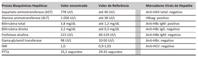
A hepatite B aguda; iniciar tratamento sintomático, evitando-se fármacos hepatotóxicos e de metabolismo hepático.
B hepatite alcoólica aguda; prescrever corticoide, evitar novos insultos hepáticos e encaminhar o paciente para o Centro de Atenção Psicossocial (Álcool e Drogas).
C hepatite C aguda; prescrever antivirais combinados (como ledipasvir/sofosbuvir), conforme resultado do teste de genotipagem.
D hepatite B crônica agudizada; prescrever tenofovir ou entecavir, evitando-se fármacos hepatotóxicos e de metabolismo hepático.
Questão 660 · Transtornos Ansiosos · Transtorno de Ansiedade Generalizada TAG · 4000176675Uma mulher com 30 anos de idade vem a primeira consulta na Unidade Básica de Saúde queixando-se de tonturas, tremores, tensão muscular e relata que há 1 mês apresentou três crises de palpitações repentinas, acompanhadas de dor em hemitórax esquerdo, com duração de até meia hora e resolução espontânea. Nega doenças pregressas, tabagismo, etilismo ou uso de outras drogas. Relata que procurou serviços de emergência três vezes achando que teria um infarto. Traz resultados recentes e normais de hemograma, TSH, per l lipídico completo, glicemia, troponina e CPK e eletrocardiograma. Acredita que esses exames foram insu cientes e pede outros exames para ver se o coração está bem. Por exercer a prostituição desde a adolescência, faz exames rotineiramente para infecções sexualmente transmissíveis, últimos há 15 dias e com resultados negativos. Usa Dispositivo Intrauterino (DIU) de cobre há 5 anos e preservativo. Não teve filhos ou abortamento. Apresenta sono reparador, exceto quando tem as crises. Nega ideação suicida. Desde o início da pandemia da COVID-19 não faz mais programas. Exame físico inalterado. Nesse caso, a melhor abordagem é
A referenciar a paciente ao serviço de urgência e emergência para realização de novos eletrocardiogramas (ECG) e enzimas cardíacas e solicitar avaliação de especialistas focais.
B solicitar novos exames para descartar outras doenças orgânicas de base e iniciar tratamento farmacológico com betabloqueador e benzodiazepínico.
C explicar que novos exames são desnecessários, indicar atividades físicas, apoio psicológico e retorno, em um
D explicar que novos exames são desnecessários, iniciar benzodiazepínico nas crises e antidepressivo tricíclico; indicar apoio psicológico e retorno em 6 semanas.
Revisar: possível letra faltando em enunciado
Questão 661 · Tratamento · 4000176674Uma paciente com 46 anos de idade, gesta: 2, para: 2, aborto: 0, relata, em consulta em unidade de saúde, que há 8 meses vem apresentando aumento progressivo do volume e do número de dias de sangramento menstrual. Refere que atualmente sangra por cerca de 10 dias a cada ciclo. Queixa-se de indisposição física geral. Ao exame físico, está descorada +/4+. Ao exame ginecológico, a vulva, a vagina e o colo uterino apresentam-se normais, e o útero tem volume compatível com a idade e a paridade da paciente. No contexto clínico apresentado, considerando a maior redução de sangramento, qual a terapêutica a longo prazo recomendada?
A Ácido tranexâmico.
B Anti-inflamatório não esteroide.
C Anticoncepcional oral combinado.
D Sistema Intrauterino (SIU) com liberação de levonorgestrel.
Questão 662 · Cirurgia · 4000176673Uma adolescente com 13 anos de idade é atendida no setor de emergência d e u m hospital c o m dor abdominal intensa, além de vômitos repetitivos que se iniciaram há 2 horas. Ela relata que, no dia anterior, surgiu inchaço bilateral no pescoço, com dor que se intensi cava quando comia alimentos ácidos. Refere ainda que, há 3 dias, já vinha apresentando febre baixa (38 °C), cefaleia e otalgia, e que colegas do colégio tiveram os mesmos sintomas. Ao exame físico, apresenta dor abdominal que di culta a palpação, verificando-se também impossibilidade de ver ou palpar os ângulos mandibulares, que estão encobertos por tumorações amolecidas, móveis e dolorosas e que deslocam os lobos das orelhas para cima e para fora. Em face desse quadro, qual é o principal exame para se estabelecer o diagnóstico dessa complicação da doença de base?
A Tomografia computadorizada.
B Endoscopia digestiva alta.
C Ressonância magnética.
D Ultrassonografia.
Questão 663 · Diagnóstico · 4000176672Um paciente com 58 anos de idade, branco, trabalhador rural, refere cansaço aos esforços, que estão cando mais intensos, e dor abdominal esporádica, em cólica, localizada em anco direito, há 1 mês. Refere apresentar sangramento esporádico nas fezes, tipo hematoquezia. Exames realizados na Unidade Básica de Saúde apresentaram: hemoglobina: 8,5 mg/dL (valor de referência [VR]: 13 a 16 mg/dL); hematócrito: 25% (VR: 38% a 52%). Observa-se perda ponderai de 16% em relação ao peso habitual. Ao exame físico, mostra- se afebril, emagrecido, com dor à palpação profunda em flanco direito e fossa ilíaca direita. Nesse caso, a hipótese diagnóstica mais provável é de
A tumor de cólon direito.
B tuberculose intestinal.
C doença diverticular do cólon.
D doença inflamatória intestinal.
Questão 664 · Pneumologia · Manejo da exacerbação · 4000176671Uma mulher com 35 anos de idade, com asma moderada, é atendida em pronto atendimento e relata dispneia e sibilos há 1 dia. Refere que, em casa, inalou 2 jatos de salbutamol de 4/4 horas, sem melhora clinicamente relevante. Nega febre, cefaleia, dor torácica, rinorreia ou gotejamento pós-nasais e relata tosse seca intermitente. No pronto atendimento, está inicialmente agitada, frequência cardíaca (FC) = 115 batimentos por minuto (bpm), pressão arterial (PA) = 140 x 80 mmHg, frequência respiratória (FR) = 32 incursões respiratórias por minuto (irpm), sibilos difusos, oximetria de pulso = 91% em ar ambiente; < 50% do previsto. Após receber 02 suplementar 1 L/min, 3 aplicações de 4 jatos de salbutamol por via inalatória em intervalos de 20 minutos + prednisona 60 mg por via oral, continua agitada, apresentando FC = 100 bpm, PA = 120 x 70 mmHg, FR = 28 irpm, e mantendo sibilos difusos em ambos os hemitórax; oximetria de pulso = 89% em ar ambiente e 93% com O₂, O próximo passo adequado à abordagem dessa paciente é
A mantê-la em observação no pronto atendimento e associar ipratrópio 4 jatos de 20/20 minutos e sulfato de magnésio 2 g intravenoso.
B mantê-la em observação no pronto atendimento e administrar nova dose de salbutamol, 4 jatos, em 1 hora.
C admiti-la em enfermaria com salbutamol + ipratrópio inalatórios, 4 jatos de cada um de 1/1 hora até a estabilização.
D realizar intubação orotraqueal com sequência rápida e mantê-la em ventilação mecânica até estabilização clínica.
Questão 665 · Neurologia · Cuidados paliativos · 4000176670Uma mulher com 90 anos de idade, acamada, recebeu alta após internação por dor abdominal há 3 dias. O médico de família é chamado para realizar um atendimento domiciliar por queixa de dispneia. No relatório de alta está descrito diagnóstico de melanoma com metástases hepáticas, em estágio terminal, prescritos morfina e plano restrito de cuidados paliativos. No contexto descrito, quanto aos cuidados paliativos, deve-se
A solicitar tomografia de tórax para investigar metástases pulmonares.
B exercer a demora permitida e orientar familiares sobre sinais de alarme.
C encaminhar para emergência hospitalar se não houver melhora da dispneia com oxigenioterapia.
D instituir terapia de sedação paliativa se os sintomas físicos forem intoleráveis, graves e refratários.
Questão 666 · Ginecologia · Tratamento · 4000176669Uma paciente com 28 anos de idade, nulípara, usuária de anticoncepcional hormonal combinado oral, relata, em consulta, que há 3 dias iniciou com dor em baixo ventre, de forte intensidade, associada a náuseas e vômitos, que piorou nas últimas 8 horas. Ao exame físico, apresenta pressão arterial = 100 x 60 mmHg, temperatura = 39,1°C, abdome com dor intensa à palpação no andar inferior e à descompressão brusca em fossas ilíacas. Ao exame especular, verifica-se a presença de conteúdo purulento exteriorizando-se pelo orifício do colo uterino. O toque vaginal evidencia dor à mobilização do colo uterino e à palpação dos anexos, bilateralmente. Diante dessa situação, a conduta imediata indicada é
A identificar o agente etiológico da secreção cervical antes de iniciar o tratamento medicamentoso.
B encaminhar a paciente para tratamento em ambiente hospitalar com antibioticoterapia injetável.
C instituir tratamento clínico ambulatorial de imediato para a paciente, com retorno em 48 horas para reavaliação.
D encaminhar a paciente para tratamento cirúrgico a fim de melhor avaliar o comprometimento do sistema reprodutivo.
Questão 667 · Diagnóstico · 4000176668Um escolar do sexo masculino, residente em área rural, é encaminhado para um hospital de referência para investigação de quadro d e febre irregular e prolongada, palidez, hepatoesplenomegalia e emagrecimento, insidiosos e progressivos, associados ao comprometimento do estado geral. Esteve internado em sua cidade de origem por 24 horas após apresentar epistaxe d e grande intensidade e gengivorragia. Ao exame admissional, observam-se prostração, petéquias disseminadas em tronco e edema de membros inferiores. Em sua cidade de origem, foram realizados os exames inespecíficos, que demostraram anemia, leucopenia e plaquetopenia. Informa que o pai teve quadro semelhante há alguns meses. Entre os exames a serem realizados para se estabelecer o diagnóstico, é correto afirmar que
A o exame sorológico por imunofluorescência indireta é o mais vantajoso no que se refere a custo e efetividade, sendo considerados positivos os títulos a partir da diluição 1:80.
B a punção aspirativa esplénica é o método que oferece maior sensibilidade e menor risco, sendo o mais utilizado para a técnica de visualização direta do parasita.
C a reação em cadeia da polimerase (PCR), técnica molecular, é de baixa sensibilidade quando comparada a técnicas por visualização direta.
D a dosagem de proteínas, na qual há forte inversão da relação albumina/globulina, é exame de alta sensibilidade e especificidade.
Questão 668 · Antibioticoprof ilaxia Cirúrgica · 4000176667Uma criança com 10 anos de idade, do sexo masculino, foi vítima de ferimento em região mentoniana após queda de skate no asfalto, há cerca de 90 minutos. Ao exame físico apresenta ferimento corto-contuso, transversal, na região submentoniana, com 3,0 cm de extensão, sangrante. Para fins de conduta médica imediata e mediata, trata-se de ferida
A limpa.
B infectada.
C contaminada.
D potencialmente contaminada.
Questão 669 · Tratamento · 4000176666Um homem com 61 anos de idade, hipertenso, atendido em unidade de saúde, tem febre, tosse com secreção amarelada, dor torácica à direita ventilatório-dependente, dispneia aos esforços moderados e hiporexia há 3 dias. É adequadamente vacinado para pneumococo e não tem história de internações no último ano. Ao primeiro exame, apresentou-se orientado, hidratado, c om temperatura axilar = 38,5 °C, frequência cardíaca (FC) = 90 batimentos por minuto (bpm), pressão arterial (PA) = 130 x 80 mmHg, frequência respiratória (FR) = 22 incursões respiratórias por minuto (irpm), sem esforço respiratório, frêmito toracovocal diminuído e estertores crepitantes no terço inferior de hemitórax direito. O resultado da oximetria de pulso em ar ambiente foi de 96% e o da radiologia simples de tórax mostrou in ltrado em lobo inferior direito com derrame pleural de 2 cm em decúbito lateral. Foi-lhe prescrito amoxicilina + clavulanato para tratamento ambulatorial e solicitada punção de líquido pleural. No terceiro dia de tratamento, o paciente relatou melhora da febre e da dispneia, mas manutenção da tosse, da dor torácica e da hiporexia, e apresentou os seguintes resultados: temperatura axilar = 37,2 °C, FC = 80 bpm, PA = 130 x 70mmHg, FR = 18 irpm, oximetria de pulso em ar ambiente = 98%. O resultado da punção torácica, guiada por ultrassom, estimou o derrame em 200 ml_, cuja análise mostrou líquido amarelo-citrino, 2.300 células com predomínio de neutró los, pH = 7,3, glicose = 60 mg/dL, LHD = 300 U/L, proteína = 4 g/L, Gram: não se visualizaram bactérias. A amostra sérica colhida no dia da punção mostrou glicose = 80 mg/dL (valor de referência [VR]= 60-99 mg/dL), proteínas totais = 6,6 g/dL (VR = 6,4-8,3 g/dL), LDH = 400 (VR = 180-450 U/L). Diante desse quadro clínico e dos dados apresentados, a abordagem adequada para o paciente é
A referenciar o paciente para a assistência hospitalar para drenagem de tórax.
B manter o tratamento com amoxicilina + clavulanato e repetir o estudo radiológico em 1 semana.
C suspender a amoxicilina + clavulanato, prescrever levofloxacina e reavaliar o paciente em 3 dias.
D manter o tratamento com amoxicilina + clavulanato, colher bacilos álcool-ácido resistente (BAAR) em escarro e reavaliar o paciente no final do tratamento.
Questão 670 · Tratamento · 4000176665Em uma reunião da equipe de Unidade Básica de Saúde, localizada em zona rural da região Nordeste, onde a esquistossomose é endêmica, é apresentado recente inquérito coproscópico censitário mostrando 24% de positividade para ovos de Nessa situação, de acordo com a orientação do Ministério da Saúde, a conduta correta é tratar
A somente os casos positivos.
B coletivamente a comunidade.
C os casos positivos e conviventes.
D somente os casos confirmados por meio de um segundo exame.
Questão 671 · Hipertensão gestacional · Obstetrícia · 4000176664Uma paciente com 37 anos de idade, primigesta, em atendimento pré-natal em unidade ambulatorial secundária, apresenta amenorreia de 12 semanas. Tem história de hipertensão arterial crônica e refere uso irregular de captopril. Na consulta médica, apresenta-se sem queixas, com pressão arterial de 150 x 100 mmHg, mantida após 30 minutos de decúbito lateral esquerdo; a proteinúria de ta é negativa. O exame obstétrico está compatível com 12 semanas de gestação. Nesse caso, a conduta adequada em relação à pressão arterial da paciente é
A solicitar internação e administração de hidralazina endovenosa.
B orientar o uso regular do captopril e fazer curva pressórica.
C orientar dieta hipossódica e iniciar metildopa via oral.
D orientar dieta hipossódica e fazer curva pressórica.
Questão 672 · Diagnóstico · Doença de Hirschsprung · 4000176663Um recém-nascido com 28 dias de vida, portador de síndrome de Down, comparece ao setor de emergência por apresentar distensão abdominal importante, irritabilidade e baixo ganho ponderai. O teste do pezinho não apresentou alterações. Segundo a mãe, alimenta-se com leite materno exclusivo e, desde o nascimento, evacuou duas vezes: na segunda e na terceira semana. Foi realizado toque retal com saída de fezes explosivas. Considerando esse quadro clínico, assinale a opção que associa correta e respectivamente o exame complementar e o resultado esperado para a caracterização da principal hipótese diagnóstica.
A Manometria anorretal; relaxamento do esfíncter anal interno.
B Biópsia retal; presença ou diminuição do número de células ganglionares.
C Enema contrastado; dilatação do segmento colônico com a inervação preservada.
D Radiografia simples do abdome; calibre do reto maior que o do segmento colônico à montante.
Questão 673 · Apresentação Clínica e Diagnóstico · Tratamento · 4000176662Um lactente com 2 anos de idade foi levado à Unidade Básica de Saúde de seu bairro por apresentar um aumento súbito de volume de região inguinal há cerca de 30 dias, mas que desapareceu logo a seguir. Como a tumoração tem aparecido e desaparecido repetidas vezes, a mãe procurou atendimento médico. Na consulta, ao exame físico, a criança estava eupneica, hidratada e afebril, com ausculta cardiopulmonar e exame abdominal normais. Na inspeção e palpação da região inguinal, não foram encontradas massas ou tumorações, mas o médico examinador identi cou a presença de espessamento do cordão espermático a direita. Considerando a s informações apresentadas, o diagnóstico inicial e a conduta a ser adotada são, respectivamente,
A hérnia inguinal indireta; encaminhamento ao cirurgião para correção cirúrgica eletiva.
B hérnia inguinal direta; encaminhamento ao cirurgião para correção cirúrgica de urgência.
C hidrocele comunicante à direita; encaminhamento ao cirurgião para correção cirúrgica eletiva.
D hidrocele septada à direita; encaminhamento ao cirurgião para correção cirúrgica de urgência.
Questão 674 · Tratamento · Diagnóstico · 4000176661Uma mulher com 23 anos de idade é atendida em consulta médica e relata ter realizado teste rápido (TR) para sí lis porque seu companheiro foi diagnosticado com a doença. Ela refere não apresentar qualquer sintoma. O resultado do teste rápido foi positivo (reagente). Com relação a esse caso, a conduta a ser adotada é solicitar
A tratamento da paciente com esquema para sífilis secundária, não havendo necessidade de realização de outro teste.
B teste treponêmico e aguardar o resultado antes de iniciar tratamento da paciente.
C teste não treponêmico e tratar a paciente com esquema de sífilis latente tardia.
D teste de rastreamento para HIV e tratar a paciente com esquema para sífilis primária.
Questão 675 · Medicina Preventiva · Pneumoconiose devida à Poeira de Sílica Silicose · 4000176660Na sua primeira semana em uma Unidade Básica de Saúde (UBS), o médico de família se reúne com os outros pro ssionais da equipe e realiza visitas no bairro para conhecer melhor o território. Descobre que na região da UBS há várias indústrias de extração mineral, que produzem poeira de sílica e talco. Revisando alguns prontuários clínicos, o médico constata que há uma prevalência bastante elevada de doenças respiratórias, principalmente a silicose. Entre as medidas de prevenção secundária, o médico deve recomendar para todas a s pessoas da sua comunidade que apresentarem silicose a realização de exames para
A leucemia.
B tuberculose.
C câncer de bexiga.
D câncer de cabeça e pescoço.
Questão 676 · Interpretação e conduta f rente as atipias citológicas · 4000176659Uma paciente com 26 anos de idade, gesta: 2, para: 2, aborto: 0, utilizando contraceptivo oral combinado regularmente, comparece à Unidade Básica de saúde para verificação do resultado de exame de citologia oncótica cérvico-vaginal realizado há 1 mês. Não há queixas ou alterações descritas no prontuário do atendimento anterior quando do exame ginecológico. No laudo, descreve-se a presença de lesão intraepitelial escamosa de baixo grau( LSIL). Em relação ao resultado do exame de citologia oncótica cérvico-vaginal da paciente, segundo o Instituto Nacional do Câncer/Ministério da Saúde, qual deve ser a conduta?
A Repetir a coleta para exame da citologia em 6 meses.
B Realizar nova coleta para exame da citologia em 1 ano.
C Solicitar pesquisa do tipo e da classe viral.
D Encaminhar para colposcopia e biópsia.
Questão 677 · Pediatria · Doença de Kawasaki · 4000176658Uma criança com 3 anos de idade, sexo masculino, iniciou, segundo relato de sua mãe, febre há cerca de 5 dias. Durante o exame clínico, o pediatra observou conjuntivite bilateral, exantema polimorfo, língua em framboesa, lábios avermelhados, ssurados e secos, edema duro dos dedos d e pés e mãos e adenopatia cervical, além de descamação das extremidades. Considerando a descrição desse caso, a principal hipótese diagnóstica é
A escarlatina.
B mononucleose.
C eritema infeccioso.
D doença de Kawasaki.
Questão 678 · Medicina Preventiva · 4000176657Cabe ao médico assistente, quando indicar um procedimento cirúrgico a um paciente, comunicar-se de forma clara com ele, explicando detalhadamente os procedimentos a serem realizados, seus riscos e benefícios, resultados e possíveis complicações. Todas essas informações devem car armazenadas no prontuário médico, nos diversos formulários que o compõem. Considerando as informações apresentadas, é correto afirmar que o prontuário médico deve conter todos os
A documentos referentes aos procedimentos administrativos, que são de guarda, responsabilidade e propriedade do hospital.
B documentos técnicos e administrativos referentes à internação, que são de responsabilidade, guarda e propriedade do hospital.
C documentos técnicos e administrativos referentes à internação hospitalar, que são de guarda e responsabilidade do hospital, mas de propriedade do paciente.
D documentos técnicos referentes somente aos atos médicos executados, que são de guarda e responsabilidade do hospital, mas de propriedade do paciente.
Questão 679 · Exames específ cios · Diagnóstico · 4000176656Uma mulher com 33 anos de idade procura o ambulatório de clínica médica devido a dores articulares há 3 meses. Refere o acometimento de mãos (interfalangeanas proximais e metacarpofalangeanas), punhos e joelhos. Ao exame físico, apresenta sinais de artrite nessas articulações. Foram solicitados exames laboratoriais para a investigação diagnóstica e os resultados são apresentados a seguir. Diante desses achados clínicos e laboratoriais, quais são, respectivamente, o autoanticorpo relacionado ao FAN apresentado e o diagnóstico pertinente ao caso?
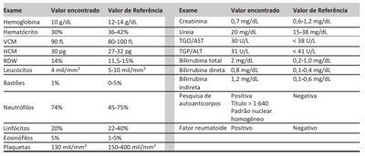
A AntiDNA nativo; lúpus eritematoso sistêmico.
B AntiCCP; artrite reumatoide.
C AntiScl-70; esclerose sistêmica.
D AntiRo; síndrome de Sjõgren.
Questão 680 · Calendário inf antil · 4000176655Uma criança de 18 meses de idade vem à consulta médica em uma unidade de saúde para puericultura. O médico observa que as vacinas que a criança deveria ter recebido aos 15 meses estão em atraso, mas recebeu todas a s vacinas anteriores recomendadas pelo calendário de imunização atual do Ministério da Saúde. A mãe justi ca o atraso vacinai porque cou com medo de sair de casa devido à pandemia da COVID-19. Entre as vacinas a serem recomendadas a essa criança, está(ão)
A a tríplice virai juntamente com a tetraviral.
B o reforço da pneumocócica conjugada.
C o reforço da meningocócica C conjugada.
D a segunda dose da tríplice virai + varicela.
Revisar: possível letra faltando em enunciado
Questão 681 · Obstetrícia · Imunizaçao na gestação · 4000176654Uma paciente secundigesta, com 25 anos de idade, 28 semanas de amenorreia, vem à Unidade Básica de Saúde para receber as vacinas que viu em uma campanha na televisão. Em seu cartão de vacinas consta vacinação contra influenza e administração da dTpa há 2 anos, durante sua primeira gestação. Com relação à vacinação dessa paciente contra influenza e coqueluche, deve-se
A realizar a vacinação contra influenza em dose única imediata e administrar nova dose de dTpa.
B administrar nova dose de dTpa, não havendo necessidade de nova vacinação contra influenza.
C realizar vacinação contra influenza em 2 doses (imediata e após 30 dias) e administrar nova dose de dTpa.
D realizar vacinação contra influenza em dose única imediata, não havendo indicação de nova dose da dTpa.
Questão 682 · Tratamento · 4000176653Uma escolar com 8 anos de idade, acompanhada da mãe, chega à emergência com dor abdominal intensa, iniciada há 2 dias, com piora progressiva. A paciente apresenta vômitos biliosos, que não melhoram com a medicação, e distensão abdominal. A mãe relata que, há 1 semana, a lha eliminou verme e está em tratamento de anemia. O exame físico mostrou massa cilíndrica na região periumbilical e ausculta débil da peristalse. O resultado da radiogra a do abdome apresentou níveis hidroaéreos no intestino delgado e sombra radiolúcida com forma e aparência de "feixe de charuto". Diante desses dados, considerando a principal hipótese diagnóstica para o caso, a conduta imediata, além da hidratação da criança, é
A realizar descompressão gástrica com sonda nasogástrica e administrar óleo mineral.
B realizar enema com solução salina hipertônica e administrar ivermectina.
C instalar sonda nasogástrica aberta, para drenagem, e administrar piperazina.
D suspender a ingestão oral e indicar o tratamento cirúrgico.
Questão 683 · Indicações de PAAF · Endocrinologia · Sintomas e Características Gerais · 4000176652Uma paciente com 19 anos de idade apresenta-se no ambulatório com queixa de "caroço no pescoço". Nega comorbidades ou uso de medicações. Ao exame, há nódulo palpável em lobo esquerdo da tireoide, medindo aproximadamente 2,5 x 2 cm, endurecido, não pulsátil, sem frêmito indolor, aderido à musculatura infra- hioidea. Há ainda, alguns linfonodos cervicais palpáveis à esquerda. Sem outras queixas. Diante desse quadro clínico, qual é o diagnóstico mais provável e o exame inicial a ser solicitado?
A Bócio; tomografia computadorizada de pescoço, com contraste.
B Tireoidite de Hashimoto; ressonância nuclear magnética de pescoço.
C Cisto de conduto tireoglosso; cintilografia da tireoide com iodo radioativo.
D Câncer de tiréoide; ultrassonografia de pescoço com Doppler da tireoide e punção aspirativa por agulha fina.
Questão 684 · Tinea corporis · 4000176651Um homem com 26 anos de idade comparece à consulta na atenção básica por "impinge". Ele refere que seu cachorro também está com lesões descamativas de pele, apresentando inclusive áreas de alopecia. Ao exame físico, verificam-se manchas eritematosas descamativas em forma de anel, que poupam a região central, localizadas em tronco, face e braços. O paciente relata ter usado clotrimazol, sem ter obtido melhora. Para esse paciente, a conduta imediata deve ser
A investigar possível infecção fúngica por meio da avaliação de KOH a 10% ou cultura fúngica por raspagem da pele; se o teste for positivo, tratar com terbinafina oral por 14 dias
B investigar possível infecção fúngica por meio da avaliação de KOH a 10% ou cultura fúngica por raspagem da pele; se o teste for positivo, tratar com fluconazol 200 mg, dose única.
C tratar com clotrimazol tópico por 3 semanas, visto que, pelas características das lesões de pele, muito sugestivas de lesão fúngica, não há necessidade de investigação adicional.
D investigar possível infecção fúngica por meio da avaliação de KOH a 10% ou cultura fúngica por raspagem da pele; se o teste for positivo, tratar com betametazona e cetoconazol tópicos por 14 dias.
Questão 685 · Método SOAP · 4000176650Uma mulher com 63 anos de idade, professora da educação infantil, procura atendimento para realização de u m check-up sistêmica e dislipidemia controladas. É tabagista, com consumo de 20 cigarros por dia há 30 anos, e é sedentária. Seu peso é 80 Kg e tem 1,60 metros de altura. Ao ser questionada sobre sua percepção em relação aos fatores de risco cardiovasculares e propensão à mudança comportamental, a paciente diz que, eventualmente, considera alterar seu estilo de vida, apesar de sentir dificuldades. Nesse caso, a melhor abordagem utilizando entrevista motivacional é com foco
A nos benefícios de uma mudança, buscando pressionar a paciente a iniciar um novo estilo de vida.
B na resistência à mudança, confrontando e debatendo com a paciente sobre a importância de novos hábitos.
C nas consequências dos fatores de risco atuais, explicando com detalhes os malefícios da não mudança de hábitos.
D na ambivalência de emoções, abordando discrepâncias entre o comportamento atual e objetivos mais amplos da paciente.
Questão 686 · Parto · Obstetrícia · 4000176649Uma gestante com 35 anos de idade, gesta: 4, para: 3, aborto: 0 (três partos vaginais anteriores), iniciou pré- natal com 11 semanas, ocasião em que realizou todos os exames recomendados e nenhuma anormalidade foi detectada. Com 35 semanas, realizou novos exames, sendo diagnosticado HIV, com carga virai de 2.000 cópias/mL. Nessa mesma idade gestacional, iniciou terapia antirretroviral. Nesse caso, a conduta a ser adotada para essa gestante é
A induzir o parto com misoprostol e/ou ocitocina na 38ª semana e realizar zidovudina endovenosa durante todo o procedimento.
B programar parto cesariana para a 38ª semana de gestação e iniciar zidovudina endovenosa pelo menos 3 horas antes do procedimento.
C realizar parto cesariana na 40ª semana e prescrever zidovudina injetável para ser administrada 1 hora antes do procedimento.
D aguardar início espontâneo do parto vaginal até 40 semanas e usar zidovudina endovenosa durante todo o período do trabalho de parto.
Questão 687 · Teste do coraçãozinho · 4000176648Em um recém-nascido de parto normal, com idade gestacional de 36 semanas, apgar 9 no primeiro minuto e 10 no quinto minuto, peso e comprimento adequados, foi realizado, com 26 horas de vida, o teste da oximetria de pulso, que apresentou diferença de saturação superior a 3% entre as medidas pré e pós-ductal. Nesse caso, o resultado obtido no referido teste é considerado
A alterado, uma vez que foi realizado de acordo com a técnica preconizada.
B normal, visto que a saturação pós-ductal é superior à pré-ductal.
C inválido, já que foi feito antes da idade gestacional indicada.
D inválido, pois foi realizado antes do período preconizado.
Questão 688 · Diagnóstico por Imagem · Manif estações Clínicas · Diagnóstico · 4000176647Uma paciente com 68 anos de idade, tabagista de longa data, foi encaminhada pelo médico da Unidade Básica de Saúde (UBS) para atendimento em ambulatório de cirurgia. O médico da UBS forneceu relatório a rmando que a paciente apresenta dor em região superior do abdome, que irradia para dorso, de forte intensidade, há cerca de 2 meses, associada a perda ponderai de quatro quilos, queda do estado geral e início de diabetes nesse mesmo período. A paciente relata prurido no corpo e, ao exame, apresenta icterícia moderada (2+/4+). Paciente sem comorbidades prévias. Considerando o caso apresentado, qual a principal hipótese diagnóstica e o exame de imagem inicial a ser solicitado?
A Câncer de pâncreas; ultrassom de abdome.
B Câncer de vias biliares; ressonância nuclear magnética de abdome.
C Câncer de fígado; tomografia computadorizada de abdome com contraste venoso.
D Coledocolitíase; colangiopancreatografia retrógrada endoscópica com papilotomia.
Questão 689 · Espirometria · 4000176646Uma mulher com 54 anos de idade, tabagista, cujo consumo é de 30 maços de cigarro por ano, comparece à consulta por dispneia e tosse que, segundo relata, se iniciaram há aproximadamente 1 ano. A paciente traz uma espirometria com uma razão entre o volume expiratório forçado no primeiro segundo e a capacidade vital forçada de 0.7 e um volume expiratório forçado no primeiro segundo de 80% do predito, sem resposta ao broncodilatador. O exame foi realizado com técnica correta. Considerando os dados apresentados, é correto afirmar que
A a falta de resposta ao broncodilatador sugere o diagnóstico de asma nessa paciente.
B os resultados da espirometria estabelecem o diagnóstico de doença pulmonar obstrutiva crônica nessa paciente.
C a espirometria precisa ser repetida para se confirmar o diagnóstico de doença pulmonar obstrutiva crônica nessa paciente.
D os valores do volume expiratório forçado no primeiro segundo afastam o diagnóstico de doença pulmonar obstrutiva crônica nessa paciente.
Questão 690 · Aparelho Ungueal · 4000176645Um paciente com 25 anos de idade procura a Unidade de Saúde da Família devido a unha encravada no hálux esquerdo. Refere que, desde que começou a trabalhar em um frigorí co e passou a usar botas, tem apresentado quadro recorrente de unha encravada. Ao examinar a região, o médico identi ca que a margem ungueal medial do hálux esquerdo penetra a margem córnea vizinha, com a presença de tecido de granulação no local, sem sinais flogísticos ou saída de secreção. Considerando o caso apresentado e as orientações do Caderno de Atenção Básica n. 30, sobre o procedimento de cantoplastia, publicado pelo Ministério da Saúde, é correto afirmar que
A a ressecção da margem lateral da unha deve ser realizada com tesoura reta, preservando-se a matriz ungueal.
B o bloqueio digital deve ser realizado com lidocaína com vasoconstritor, por ser um procedimento muito doloroso.
C a introdução da tentacânula deve ser realizada a cerca de 3 mm da margem lateral, longitudinalmente até a matriz.
D o tecido de granulação pode ser preservado, não havendo necessidade de ressecá-lo, pois não há sinais de infecção.
Revisar: possível letra faltando em enunciado
Questão 691 · Etiologia · 4000176644Uma adolescente com 12 anos de idade, acompanhada de sua mãe chega a o plantão hospitalar com sangramento abundante. A mãe a rma que a menarca de sua lha ocorreu há 6 meses. A adolescente relata ser a terceira menstruação nesse intervalo e nega contato sexual prévio. Ao exame ginecológico, não se observam anormalidades e o hímen está íntegro. Considerando esse quadro clínico, a causa mais provável de sangramento uterino anormal da paciente é
A anovulação.
B doença von Willebrand.
C hipogonadismo hipogonadotrófico.
D púrpura trombocitopênica idiopática.
Questão 692 · Complicações da cetoacidose diabética · 4000176643Uma criança com 4 anos de idade, do sexo masculino, é atendida no serviço de emergência pública de sua cidade em decorrência de quadro de náuseas, vômitos e dor abdominal há cerca de 2 horas. A mãe refere que a criança vem perdendo peso há aproximadamente 2 meses e apresentando aumento de apetite e diurese nesse período. O desenvolvimento da criança é adequado para a idade. Ao exame físico, o paciente mostra-se acordado e colaborativo, apresentando hálito cetônico, hipocorado 1+/4+, desidratado 3+/4+ e taquipneico, abdome difusamente doloroso, mas sem sinais de irritação peritoneal. A ausculta respiratória e a cardiovascular apresentam-se sem anormalidades. Exames laboratoriais evidenciam glicemia = 350 mg/dL, gasometria com pH = 7,20; pCO₂ = 25 mmHg; pO₂ = 80 mmHg; Bicarbonato = 10 mEq/L. O resultado do exame de urina revela cetonúria. Cerca de 4 horas após início de tratamento com reposição hídrica e insulina 0,1 Ul/kg/h, o paciente passa a apresentar redução do nível de consciência associada a bradicardia. Considerando o caso clínico descrito, o tratamento mais adequado para a complicação apresentada por esse paciente deve ser feito com
A bicarbonato, 1 mEq/kg, intravenoso.
B flush
C manitol, na dose de 0,5 a 1,0 g/kg, intravenoso.
D 40 mEq de potássio por litro de solução, intravenoso.
Questão 693 · Litotripsia transureteroscópica por ureterorenoscopia · 4000176642Uma paciente com 35 anos de idade vem apresentando dor em região lombar direita, associada a náuseas e vômitos de início súbito há 4 horas. Nesse período, nega febre e refere vários episódios semelhantes anteriores. Ao exame físico, apresenta apenas sinal de Giordano positivo à direita. Realizou tomogra a de abdome e pelve que mostrou cálculo de 1,2 cm, localizado em junção ureteropiélica direita e de densidade de 1.500 UH. Resultado do exame de Elementos Anormais e Sedimentos (EAS) na urina mostrou apenas hematúria microscópica discreta. Em relação ao cálculo, entre as condutas a seguir, a mais indicada é
A ureterorrenoscopia.
B pielolitotomia cirúrgica.
C litotripsia extracorpórea.
D terapia expulsora do cálculo com hidratação e alfa- bloqueadores.
Questão 694 · Apresentação Clínica e Avaliação Inicial · Endocrinologia · 4000176641Uma mulher com 44 anos de idade, atendida em hospital, refere aumento de volume cervical há 5 meses. Nega dispneia ou disfagia, alterações do sono ou no hábito intestinal. Relata história de hipotireoidismo materno e de câncer de tireoide em sua irmã mais velha. Ao exame físico, notam-se tireoide aumentada 1x, móvel, consistência broelástica, nódulo palpável e m torno de 3 c m e m lobo direito, móvel e elástico, não havendo linfadenomegalias cervicais. Na investigação do caso dessa paciente, qual é a conduta adequada?
A Solicitar cintilografia de tireoide.
B Solicitar ultrassonografia de tireoide.
C Encaminhar a paciente para cirurgia.
D Solicitar punção aspirativa por agulha fina.
Questão 695 · Tuberculose pulmonar secundária · Teste rápido molecular · Tratamento · 4000176640Um homem com 24 anos de idade realiza acompanhamento médico regular na Unidade de Saúde da Família (USF) de referência. Possui diagnóstico de HIV há 1 ano, sendo acompanhado em Centro de Saúde de Referência municipal para HIV/AIDS. Hoje, busca atendimento na USF com queixa de perda de peso nos últimos 3 meses, nota que as bermudas estão folgadas. Durante a anamnese, informou que há 3 semanas está com tosse, ocasionalmente apresentando sudorese noturna. Traz consigo exames laboratoriais e de imagem realizados há cerca de 7 dias. Radiogra a de tórax com presença de in ltrados e cavidades em lobo superior direito. Prova tuberculínica positiva. Baciloscopia de escarro com presença de raros bacilos álcool- ácido resistente (BAAR). A região onde se encontra a USF apresenta índices elevados de Tuberculose, Paracoccidioidomicose, Criptococose e Toxoplasmose. Diante do quadro apresentado, o novo diagnóstico e os exames complementares adequados para comprová- lo são, respectivamente,
A criptococose; sorologia.
B paracocciodioidomicose; exame a fresco de escarro.
C toxoplasmose; tomografia, imununofluorescência indireta e teste imunoenzimático (ELISA).
D tuberculose pulmonar; teste rápido molecular para tuberculose (TRM-TB), cultura de escarro e teste de sensibilidade.
Questão 696 · Exames complementares · 4000176639Na Unidade Básica de Saúde, uma paciente com 28 anos de idade relata novo relacionamento e desejo de uma nova gravidez. Nega intercorrências nas três gestações passadas, informando ter realizado laqueadura tubária no último parto, há 3 anos. Relata também que seus ciclos são regulares e que o exame ginecológico não apresentou alterações significativas. Acrescenta que o atual companheiro também tem um lho de união anterior, o qual tem 8 anos de idade. No projeto terapêutico direcionado ao casal, qual deverá ser a indicação inicial?
A Encaminhar o casal para programa de adoção.
B Prescrever indução de ovulação para reprodução assistida.
C Encaminhar a paciente para cirurgia de recanalização tubária.
D Solicitar exames para excluir outros fatores de infertilidade.
Questão 697 · RNs menores de 34 semanas · 4000176638Uma médica é chamada para dar assistência ao recém-nascido d e uma gestante c om 3 5 anos e idade gestacional de 33 semanas, com rotura de membrana, superior há 18 horas. No que se refere a essa situação, assinale a opção correta.
A Caso o recém-nascido apresente boa vitalidade, o clampeamento imediato do cordão evita a hemorragia intracraniana e a enterocolite necrosante.
B Caso o recém-nascido comece a respirar ou chorar e esteja ativo, deve-se secá-lo rapidamente e envolver a região das fontanelas e do corpo em campo estéril aquecido para evitar a hipotermia; o neonato deve ser posicionado no abdome ou tórax materno.
C Caso o recém-nascido não apresente boa vitalidade, realizam-se o clampeamento imediato de cordão, a colocação de touca dupla e saco plástico, visando-se manter a temperatura axilar > 37,5 °C para proteção de lesão cerebral em paciente asfixiado.
D Caso o recém-nascido apresente boa vitalidade, após posicionar o pescoço, deve-se aspirar delicadamente a boca e depois as narinas com sonda traqueal número 6-8 conectada ao aspirador a vácuo, sob pressão máxima de 100 mmHg.
Questão 698 · Entorse do tornozelo · 4000176637Durante um jogo de basquete feminino, a estrela da equipe, com 19 anos de idade, após um salto para "enterrar" a bola, pisou de maneira inadequada no solo e caiu. Não tendo sido mais capaz de se levantar naquele momento, foi levada para o Pronto-Socorro, onde chegou deambulando, embora mancasse. A jogadora apresentava dor aos movimentos, edema e equimose no tornozelo esquerdo. Ao palpar o tornozelo, o médico não evidenciou nenhum ponto ósseo específico de dor. Diante desse quadro, considerando o preconizado em casos de entorse de tornozelo, a conduta adequada é
A pedir uma radiografia do tornozelo para avaliar a fratura.
B aplicar calor local e encaminhar a paciente para avaliação do ortopedista.
C iniciar fisioterapia motora precoce e solicitar o parecer de um ortopedista.
D imobilizar o membro afetado e medicar a paciente com anti-inflamatório.
Questão 699 · Tuberculose pulmonar secundária · Diagnóstico · 4000176636Um paciente com 50 anos de idade encontra-se internado em um quarto de isolamento respiratório na enfermaria de pneumologia. Relatou, na sua admissão, apresentar tosse há 6 semanas, febre, fadiga, sudorese noturna, perda ponderai, episódios de hemoptise e dor torácica do tipo pleurítica. À ausculta pulmonar, foram percebidos estertores nos, pós-tussivos, nos ápices. Exames laboratoriais mostraram anemia normocítica normocrômica e hipoalbuminemia e, na radiogra a de tórax, foram visualizados in ltrados e cavitações no segmento posterior do lobo superior direito. Diante do quadro clínico descrito, a hipótese diagnóstica mais provável é
A tuberculose extrapulmonar.
B tuberculose pulmonar latente.
C tuberculose pulmonar pós-primária.
D infecção primária por
Questão 700 · Cirurgia · Rastreamento do Câncer de Próstata · 4000176635Um paciente com 55 anos de idade, branco, casado, autônomo, procura Unidade de Saúde da Família para realização de rastreamento de câncer de próstata por insistência de sua mulher. Paciente nega disúria, polaciúria, hesitação inicial, gotejamento posterior ou outras queixas de prostatismo. Nega uso regular de medicamentos, comorbidades, internações prévias e história de câncer na família. Nesse caso, a conduta correta para esse paciente é
A solicitar PSA e, se alterado, realizar o toque retal.
B solicitar PSA associado à realização do toque retal.
C solicitar PSA e, se alterado, encaminhar ao urologista para a realização do toque retal.
D individualizar e compartilhar a decisão frente aos riscos e benefícios associados ao rastreamento.
Questão 701 · Planejamento f amiliar · 4000176634Uma paciente com 19 anos de idade, solteira, busca orientação médica em Unidade Básica de Saúde. Relata que teve duas gestações anteriores, sendo um parto a termo e um aborto, e que tem um lho vivo e saudável de 3 anos de idade. Informa que contraiu infecção pelo HIV há 2 anos e utiliza terapia antirretroviral há 6 meses. Está assintomática e sem sinais clínicos de patologias. Os exames de rotina mostram contagens de LT-CD4+ acima de 500 células/mm³ e carga virai indetectável. Ela refere início de um relacionamento com parceiro soropositivo de 35 anos de idade há 1 mês. Refere, ainda, que o parceiro tem dois lhos vivos saudáveis e que o casal não deseja ter filhos. Nessa situação, está indicado
A realização de laqueadura tubária associada ao uso de preservativo.
B uso de anticoncepcional hormonal associado ao uso de preservativo.
C uso do Dispositivo Intrauterino (DIU) de cobre.
D realização de vasectomia.
Questão 702 · Pediatria · Síndrome Inf lamatória Multissistêmica · 4000176633Um pré-escolar com 4 anos de idade, acompanhado dos pais, dá entrada na emergência com quadro de febre, cefaleia e irritabilidade que se iniciou há 2 dias. A mãe relata que, hoje pela manhã, a criança apresentou erupções vermelhas na pele e que não percebeu outros sintomas antes do início do aparecimento desse quadro, porém, conta que o pai da criança estava com sintomas de síndrome gripal 2 semanas antes do adoecimento do lho. Ao exame físico, a criança apresenta estado geral comprometido, mucosas hipocoradas +/4+ e escleróticas anictéricas. Apresenta, ainda, olhos com conjuntivas hiperemiadas; pescoço com linfoadenomegalia cervical; tórax com diminuição da expansibilidade e tiragem subcostal presente; abdome plano, sem visceromegalias; pele com presença de erupções exantematosas. Frequência cardíaca = 168 batimentos por minuto, frequência respiratória = 39 incursões respiratórias por minuto e temperatura axilar = 39,1 °C. Os resultados dos exames laboratoriais iniciais da criança são apresentados no quadro a seguir. Após análise do quadro clínico e dos resultados laboratoriais, a principal hipótese diagnóstica é
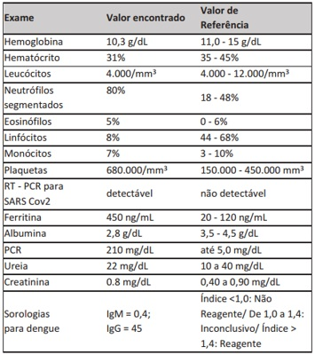
A dengue grave com choque.
B síndrome do choque tóxico estafilocócico.
C meningite meningocócica na forma séptica.
D síndrome inflamatória multissistêmica pediátrica.
Questão 703 · Traumatismos Oculares · Of talmologia · 4000176632Um paciente com 25 anos de idade, soldador, procurou Unidade de Pronto Atendimento relatando que, durante seu ofício, retirou o protetor facial momentaneamente e foi atingido por " ash" ocasionado pelo equipamento de solda no olho direito. O médico clínico socorrista evidenciou apenas eritema conjuntival. O paciente refere, nesse momento, irritabilidade e "sensação de areia" nos olhos, sem perda da acuidade visual. Nesse caso, a melhor medida a ser adotada pelo médico socorrista antes de encaminhar o paciente para avaliação especializada é
A curativo oclusivo e compressivo.
B oftalmoscopia e retirada de corpo estranho com pinça.
C aplicação de colírio contendo antimicrobianos e corticoesteroides.
D irrigação ocular com soro fisiológico a 0,9% em temperatura ambiente.
Questão 704 · Sintomatologia · 4000176631Uma paciente com 30 anos de idade, sem comorbidades, compareceu à Unidade Básica de Saúde com queixas de disúria, tenesmo vesical, polaciúria e ardência miccional há 2 dias. Relatou vida sexual ativa, uso de método anticoncepcional e última menstruação na semana anterior ao surgimento dos sintomas. Negou quadro de infecção urinária no último ano ou história sugestiva de anormalidades do trato urinário. Diante desses dados, a principal hipótese diagnóstica é
A pielonefrite grave.
B sepse de foco urinário.
C bacteriúria assintomática.
D infecção de trato urinário não complicada.
Questão 705 · Esquema básico para tuberculose pulmonar · 4000176630Um paciente com 48 anos de idade busca atendimento em Unidade de Saúde da Família devido a quadro de tosse produtiva há cerca de 2 meses, associada a perda de peso e sudorese noturna. Paciente refere ter voltado a morar com os pais há 1 semana, depois de te cado em situação de rua nos últimos 3 anos, devido a um episódio de con ito familiar. Refere ter procurado o pronto atendimento há 1 mês, quando foi prescrita amoxicilina 500 mg, de 8 em 8 horas por 10 dias, porém sem melhora do quadro. O médico de família solicita, então, realização do teste rápido molecular para tuberculose, cujo resultado foi positivo, sendo negativa a resistência à rifampicina. Nesse caso, a conduta a ser adotada para o paciente é
A solicitar cultura de escarro e aguardar o resultado para iniciar o tratamento de acordo com o teste de sensibilidade.
B encaminhar para a referência terciária para iniciar o tratamento após o resultado da cultura de escarro e do teste de sensibilidade.
C iniciar esquema básico com rifampicina, isoniazida, pirazinamida e etambutol, não havendo necessidade de coleta de cultura de escarro.
D iniciar esquema básico com rifampicina, isonizada, pirazinamida e etambutol, e reavaliar o caso após resultado da cultura de escarro e do teste de sensibilidade.
Revisar: possível letra faltando em enunciado
Questão 706 · Interações medicamentosas · 4000176629Uma mulher com 25 anos de idade, casada, atendida em uma Unidade Básica de Saúde, queixa-se de sangramentos intermenstruais nos últimos meses. A paciente relata que mudou de contraceptivo hormonal oral (CHO) por sua própria iniciativa há 3 meses: usava CHO composto por etinilestradiol 35 mcg em associação com acetato de ciproterona 2 mg e mudou para CHO composto por etinilestradiol 20 mcg em associação com gestodeno 75 mcg. Ela tem como antecedentes relevantes ser multigesta (2 partos normais, o último há 3 anos) e apresenta quadro de convulsões tônico-cônicas controladas com o uso de anticonvulsivante fenitoína 300 mg ao dia. Diante desse quadro clínico, a orientação que deve ser dada à paciente para corrigir o problema é
A usar fármacos que reduzam o sangramento na fase dos sangramentos intermenstruais, por exemplo, anti-inflamatórios e/ou antifibrinolíticos.
B voltar a fazer uso de CHO de dose maior, podendo ser o mesmo que usava antes (etinilestradiol 35 mcg em associação com acetato de ciproterona 2 mg).
C inserir o Dispositivo Intrauterino (DIU), pois existe contraindicação ao uso de métodos hormonais estroprogestativos por via oral.
D usar outro CHO com o progestógeno acetato de ciproterona, pois o gestodeno frequentemente se associa com maior risco de sangramentos intermenstruais.
Questão 707 · Tratamento de Manutenção · Pediatria · Classif icação do controle clínico da asma · 4000176628Uma menina com 8 anos de idade apresenta-se, acompanhada da mãe, em consulta ambulatorial com história de chiado no peito quase que diariamente, associado a dispneia aos esforços moderados e tosse noturna 5 vezes por semana, estando em tratamento contínuo com 1 vez ao dia, sem sinal de melhora. Apresenta exacerbações frequentes, com limitação das atividades nessas ocasiões, sendo necessário o uso de beta 2 agonista de curta duração e, às vezes, de corticoide oral. Ausculta respiratória sem alterações, frequência respiratória d e 20 incursões respiratórias por minuto e saturometria de 96%. Diante desse caso, a classificação correta da doença da criança e a conduta adequada para o tratamento a longo prazo são, respectivamente,
A asma intermitente; tratar os episódios de exacerbação com inalação de beta 2 agonista de curta duração.
B asma persistente moderada não controlada; fazer uso de corticoide inalatório oral em dose moderada.
C asma persistente leve parcialmente controlada; utilizar corticoide inalatório oral de baixa dosagem.
D asma persistente grave parcialmente controlada; iniciar corticoide inalatório oral em dosagem alta.
Questão 708 · Inf ectologia · Antibioticoprof ilaxia Cirúrgica · 4000176627Medidas Gerais de Prevenção de Inf ecção do Sítio Cirúrgico ISC No ambulatório de um hospital secundário, o médico de plantão recebe uma paciente de 43 anos de idade que se encontra no 10º dia de pós-operatório de uma histerectomia total abdominal por doença benigna. A paciente queixa-se de mal-estar, hiporexia e febre (37,3 °C) há cerca de 2 dias. Ao exame físico, a incisão operatória encontra-se um pouco hiperemiada e quente. A semiologia pulmonar é normal; não há queixa de disúria nem sinais de flebite. Considerando esse caso, assinale a opção que apresenta, respectivamente, a classificação da cirurgia quanto ao grau de contaminação e qual deveria ter sido a melhor conduta pré-operatória para evitar a infecção pós- operatória.
A Contaminada; realizar antibioticoprofilaxia com a administração de cefazolina 1G IV durante o ato cirúrgico.
B Contaminada; realizar antibioticoprofilaxia com a administração de cefazolina 2G IV uma hora antes do ato cirúrgico.
C Limpa-contaminada; realizar antibioticoprofilaxia com a administração de cefazolina 1G IV durante o ato cirúrgico.
D Limpa-contaminada; realizar antibioticoprofilaxia com a administração de cefazolina 2G IV uma hora antes do ato cirúrgico.
Questão 709 · Doença de Graves · 4000176626Uma paciente com 32 anos de idade foi internada em Unidade de Terapia Intensiva com quadro de crise tireotóxica, relatando, na admissão, palpitação, nervosismo, falta de ar, fraqueza e perda de peso. Ao exame físico, apresentava taquicardia, tremor no, miopatia proximal e sopro na tireoide. Após a investigação, foi feito o diagnóstico de doença de Graves. Entre as modalidades de tratamento para o controle do hipertireoidismo n a doença d e Graves, a mais indicada nesse contexto clínico é
A a terapia com iodo radioativo.
B o uso de metimazol via oral.
C a tireoidectomia subtotal.
D a tireoidectomia total.
Questão 710 · Medicina Preventiva · Vigilância Ambiental · 4000176625Uma comunidade ribeirinha vive próxima de uma barragem que está sendo construída em um rio. Uma das consequências ambientais desse represamento das águas é a redução do nível do rio, o que prolonga o período de águas baixas (vazante) na região. Em contrapartida à construção da barragem, a empreiteira e os entes públicos associados à sua implantação promoveram ações que eliminaram o desmatamento no entorno dessa comunidade, que é atendida por uma Equipe de Saúde da Família. O médico de Família e Comunidade da equipe pretende realizar uma ação educativa para alertar os moradores locais quanto aos impactos da mudança ambiental na saúde. Nessa situação, que problema de saúde esse médico deverá abordar, considerando-se o provável aumento em sua frequência?
A Acidentes ofídicos.
B Acidentes com arraia.
C Acidentes escorpiônicos.
D Intoxicação por mercúrio.
Questão 711 · Tricomoníase · Ginecologia · 4000176624Uma paciente com 25 anos de idade, casada há 3 meses, usa Dispositivo Intrauterino (DIU) como método anticoncepcional. Procura consulta em centro de saúde com queixa de corrimento vaginal abundante. Refere que a secreção é amarelada, que sente ardor e dor, que piora na relação sexual. Ao exame ginecológico, é observada hiperemia de genitais externos e de parede vaginal, com presença de secreção amarelo- esverdeada com pequenas bolhas, não aderida à parede vaginal, além de colo uterino com colpite e "aspecto de morango". Nesse caso, o exame a ser realizado e seu resultado mais provável são, respectivamente,
A exame de secreção vaginal com coloração de Gram; observadas "Clue Cells".
B cultura de secreção vaginal; observado crescimento de
C exame a fresco de secreção vaginal; observados parasitas flagelados com movimentos pendulares.
D exame a fresco de secreção vaginal com hidróxido de potássio; observadas pseudo-hifas e esporos.
Questão 712 · Neurologia · Tratamento · Estado de Mal Epiléptico · 4000176623Um menino com 10 anos de idade, com diagnóstico prévio de epilepsia de difícil controle, em uso de lamotrigina e topiramato, está sendo atendido em sala de emergência de hospital de referência terciária, com quadro de mal convulsivo. A crise teve início há 20 minutos, em casa, sem desencadeante definido. A glicemia de entrada foi 120 mg/dL. Está com acesso venoso periférico, com fonte de oxigênio (cateter 2 litros/minuto), saturação transcutânea de 95%, pulsos distais amplos, tempo de enchimento capilar de 3 segundos, auscultas pulmonar e cardíaca normais, sem lesões de pele. Inicialmente, foi administrado diazepínico (3 doses) por via endovenosa, sem melhora dos abalos, mantendo-se hipertonia, desvio ocular e salivação. Optou-se por iniciar hidantalização com fenitoína, administrada em velocidade de 50 mg/minuto. Seguindo o protocolo de tratamento de mal epiléptico, caso não haja reversão da crise, quais são, respectivamente, a opção terapêutica a ser adotada e o principal risco do seu uso?
A Tiopental; arritmia cardíaca.
B Midazolan; hipertensão intracraniana.
C Propofol; instabilidade hemodinâmica.
D Fenobarbital sódico; depressão respiratória.
Questão 713 · Estimativa da Superf ície Corpórea Queimada e Circulação · Cirurgia · 4000176622Uma mulher com 42 anos de idade, levada ao Pronto-Socorro (PS) de hospital de nível secundário para atendimento, relata ter sofrido choque elétrico ao encostar inadvertidamente em o caído da rede elétrica. Ao exame físico, apresenta orifício de entrada da corrente elétrica na mão direita e de saída em joelho esquerdo, contratura da mão e do cotovelo direito, assim como sinais de trombose de vasos sanguíneos superficiais do membro superior direito. Queixa-se de dor e apresenta urina escura. Com base na história clínica da paciente e nos dados do exame físico, a conduta inicial indicada é
A fasciotomia, reposição hídrica por via oral, radiografia de membro superior direito e observação no PS.
B sondagem vesical, pesquisa de mioglobina na urina, analgesia, monitorização eletrocardiográfica e internação hospitalar.
C avaliação do cirurgião plástico, considerando que a superfície corpórea queimada corresponde a 9%, além de reposição hídrica por via oral.
D reposição com fluidos endovenosos, monitorização eletrocardiográfica e transferência para centro especializado em queimados, após estabilização.
Questão 714 · Hematologia · Classif icação f uncional das anemias · Fisiopatologia da def iciência de G6PD · 4000176621Os principais componentes da avaliação laboratorial da anemia são a contagem de reticulócitos, o esfregaço de sangue periférico, os índices eritrocitários, os estudos nutricionais e, em alguns casos, o aspirado e a biópsia da medula óssea. A contagem reticulocitária (corrigida ou absoluta) aumentada pode sugerir, como etiologia da anemia,
A deficiência de vitamina B12.
B aplasia de medula óssea.
C deficiência de G6PD.
D hipotireoidismo.
Questão 715 · Exames laboratoriais · Obstetrícia · 4000176620De acordo com o Caderno de Atenção Básica n. 32, publicado pelo Ministério da Saúde, durante a consulta de pré-natal de risco habitual na Unidade Básica de Saúde, quais exames complementares devem ser solicitados no primeiro trimestre da gestação, independente da condição clínica ou social da paciente?
A Hemograma; tipagem sanguínea e fator Rh; glicemia de jejum; testes de rastreamento para sífilis, HIV e citomegalovírus; exame de urina e urocultura.
B Hemograma; tipagem sanguínea e fator Rh; teste de tolerância oral à glicose; testes de rastreamento para sífilis, HIV e hepatite B; exame de urina e urocultura.
C Hemograma; tipagem sanguínea e fator Rh; glicemia de jejum; testes de rastreamento para sífilis, HIV toxoplasmose e hepatite B; exame de urina e urocultura.
D Hemograma; tipagem sanguínea e fator Rh; glicemia de jejum; testes de rastreamento para sífilis, HIV, citomegalovírus e hepatite B e C; exame de urina e urocultura.
Questão 716 · Ginecologia · Fatores de risco · 4000176619Uma paciente com 62 anos de idade comparece à consulta no centro de saúde com o laudo de exame de ultrassom pélvico. No laudo, constam a descrição de um cisto com septação espessa, ecogenicidade aumentada e com projeção papilar em ovário esquerdo; ausência de ascite ou outros achados, medidas uterinas e do ovário direito normais. A paciente acrescenta que desconhece histórico familiar de cistos ou tumores de ovário. Considerando o caso clínico apresentado, assinale a opção correta.
A As características ultrassonográficas são de alto risco para malignidade.
B As características ultrassonográficas correspondem a processos não neoplásicos ou fisiológicos.
C As características ultrassonográficas são inespecíficas para classificar risco de malignidade.
D O exame de ultrassom não é adequado para a avaliação das características da massa anexial.
Questão 717 · Tratamento Geral · Pediatria · 4000176618Um menino com 3 anos de idade é atendido na emergência de hospital público municipal em decorrência de tosse e febre. Sua mãe relata que o quadro se iniciou há cerca de 5 dias, com coriza hialina, e que, posteriormente, surgiram tosse, que se tornou produtiva, e febre de até 38,5 °C. Nega antecedentes patológicos relevantes. Ao exame, o menino apresenta-se em regular estado geral, hipocorado 1+/4+, desidratado 1+/4+, anictérico e acianótico, com frequência cardíaca de 150 batimentos por minuto e frequência respiratória de 50 incursões respiratórias por minuto. Há presença de tiragem subcostal. A ausculta respiratória revela estertores crepitantes em base direita. A ausculta cardíaca e do abdome, sem anormalidades. A radiografia de tórax revela condensação em base direita, sem derrame pleural. Com base nesses dados, assinale a opção que apresenta o antibiótico de primeira escolha para esse caso.
A Penicilina intravenosa.
B Gentamicina intravenosa.
C Ceftazidima intravenosa.
D Vancomicina intravenosa.
Questão 718 · Potência · Ação · 4000176617Uma criança com 5 anos de idade precisa ser submetida a um procedimento cirúrgico de pele. Considerando-se os agentes anestésicos locais, quais são os medicamentos, a serem administrados em associação, capazes de fornecer, respectivamente, o menor tempo de latência e o maior tempo de ação?
A Mepivacaína e lidocaína.
B Lidocaína e bupivacaína.
C Cloroprocaína e lidocaína.
D Cloroprocaína e mepivacaína.
Questão 719 · Precaução de contato · Inf ectologia · 4000176616Um homem com 45 anos de idade, internado em enfermaria de hospital secundário há 15 dias pós trauma grave com boa evolução, apresenta carbapenênmico. Ele não apresenta febre e o leucograma está com 6.500 leucócitos (neutró los: 4.500, linfócitos: 1.500 células por campo). Nesse caso, a conduta adequada é
A encaminhar o paciente a um centro especializado de trauma.
B iniciar tratamento do paciente com antibiótico conforme o antibiograma.
C observar o quadro clínico do paciente e instituir precaução de contato.
D instituir precaução de gotículas e banho com clorhexidine para o paciente.
Questão 720 · Periodicidade das consultas · Obstetrícia · 4000176615O médico de uma Equipe de Saúde da Família foi demandado para atendimento a uma gestante no nal do primeiro trimestre de gestação. Na consulta, a gestante informou que havia mudado de cidade e trouxe os resultados de exames que havia feito após consulta de abertura de pré-natal na cidade em que morava. O exame clínico e os resultados de exames complementares estavam dentro da normalidade. Nesse caso, o médico deve recomendar a essa paciente que volte para nova consulta
A mensalmente até a 34ª semana.
B mensalmente até a 28ª semana.
C quinzenalmente até a 34ª semana.
D quinzenalmente até a 28ª semana.
Questão 721 · Herpes na gestação · Obstetrícia · 4000176614Uma gestante primigesta com 25 anos de idade e com idade gestacional de 20 semanas comparece à consulta no Centro de Saúde referindo uma lesão em vulva. Relata que, inicialmente, sentiu dor e coceira no local e que, pouco depois, apareceu a lesão, que ainda dói e arde. Nega episódios semelhantes anteriores. Ao exame ginecológico, apresenta lesão em fúrcula vaginal, hiperemiada, c om vesículas agrupadas, algumas exulceradas. Considerando esse quadro clínico, assinale a opção que apresenta, respectivamente, a principal hipótese diagnóstica e a conduta correta a ser adotada.
A Sífilis (lesão secundária); deve ser solicitado VDRL e teste treponêmico com urgência para definir conduta.
B Sífilis (lesão primária); indicação de tratamento com penicilina benzatina para a mulher e o(s) parceiro(s).
C Herpes Genital; deve ser solicitada sorologia (IGG e IGM) e cultura de secreção da lesão e, após coleta, iniciar tratamento com aciclovir.
D Herpes Genital; indicação de tratamento com aciclovir e com 36 semanas de gestação deve ser prescrito aciclovir profilático, para diminuir o risco de lesões ativas no momento do parto.
Questão 722 · Classif icação · Diagnóstico · Pediatria · 4000176613Um menino com 11 meses de idade, acompanhado da mãe, é atendido em uma Unidade Básica de Saúde por queixa de obstrução nasal e coriza há 2 dias, porém não faz acompanhamento regular em puericultura, tendo a mãe comparecido apenas à consulta com 15 dias de vida da criança. Na avaliação da alimentação, a mãe relata que a criança não recebe leite materno e, sim, leite de vaca, em mamadeira, e de forma estrita. Ao exame físico, a criança encontra-se em regular estado geral, ativa e reativa, presença de coriza hialina, afebril, sem sinais de desidratação. Seu peso é de 7.200 g, o que leva aos pontos de corte de score z ≥ -3 e ≤ -2. Considerando os dados apresentados, qual é a classificação do estado nutricional correspondente para esse caso, de acordo com a Caderneta da Criança do Ministério da Saúde?
A Peso baixo para a idade.
B Peso elevado para a idade.
C Peso adequado para a idade.
D Peso muito baixo para a idade.
Questão 723 · Cirurgia · Trauma Renal · 4000176612Um homem com 23 anos de idade, em atendimento no Pronto-Socorro de hospital de nível terciário, apresenta trauma abdominal contuso após acidente automobilístico, sem evidências d e lesões e m outros segmentos corpóreos. Ao exame físico, apresenta frequência cardíaca de 84 batimentos por minuto, preenchimento capilar menor que 2 segundos, pressão arterial de 115 x 65 mmHg. Durante o atendimento inicial foi utilizada sondagem vesical de demora que evidenciou hematúria maciça. A tomogra a de abdome com contraste endovenoso mostrou uma lesão renal grau III, correspondendo a laceração cortical do parênquima renal maior que 1 cm, sem extravasamento urinário. Não foram evidenciadas outras lesões no abdome. Considerando essa história clínica, os dados do exame físico e da tomografia, a conduta correta é indicar
A arteriografia e embolização para coibir o sangramento.
B tratamento operatório em função da hematúria maciça.
C sonda vesical de três vias e irrigação com solução salina 0,9%.
D repouso até resolução da hematúria, hematócrito seriado e antibióticos.
Questão 724 · Inf arto de ventriculo direito · Cardiologia · 4000176611Um homem com 48 anos de idade, tabagista, em tratamento irregular de hipertensão arterial sistêmica, diabetes interior, com quadro de dor torácica de forte intensidade, tipicamente anginosa, associada a diaforese, náuseas e vômitos. Segundo informa, o quadro álgico tem cerca de 4 horas de evolução, não tendo procurado antes a unidade de saúde por receio de contaminação devido à pandemia em curso. O exame físico dirigido revela um paciente em moderado desconforto agudo, ansioso, com pressão arterial (PA) de 102 x 70 mmHg, frequência cardíaca de 102 batimentos p o r minuto, levemente taquipneico, frequência respiratória de 22 incursões respiratórias por minuto. Na ausculta cardíaca, revelam-se uma 4ª bulha e um sopro sistólico suave na ponta, estando os pulmões limpos. É realizado, então, um eletrocardiograma (ECG) nos primeiros 10 minutos d e atendimento, que mostra a presença de um supradesnível do segmento ST superior a 2 mm nas derivações D2, D3, aVF e VI, além de infradesnível de ST de 3 mm nas derivações V2 a V4 , nas quais são observadas ondas R aumentadas e ondas T positivas proeminentes. São administrados nitrato sublingual e ácido acetilsalicílico (AAS), além de ser solicitada a infusão de tenecteplase intravenosa em bolus, uma vez que não há serviço de hemodinâmica na região. Enquanto é providenciada a elaboração do trombolítico, o paciente refere piora dos sintomas, sendo verificado que ele se encontra ainda mais pálido e hipotenso (PA: 80 x 46 mmHg), a despeito de sua ausculta pulmonar manter-se sem ruídos adventícios. Considerando os dados relatados, a melhor explicação para a piora clínica do paciente logo após a instituição da abordagem inicial é
A agravamento da hipercalemia pelo AAS.
B desenvolvimento de rotura de septo interventricular.
C medicação inadequada na coexistência de infarto de ventrículo direito.
D instalação de choque cardiogênico por grave disfunção ventricular esquerda.
Questão 725 · Medicina Preventiva · Vigilância Epidemiológica · 4000176610Em reunião de equipe de uma Unidade de Saúde da Família, o médico de família e comunidade propõe a discussão de estratégias para a orientação da comunidade sobre a COVID-19. A equipe atende a uma região periférica, composta por uma área de ocupação, conjuntos habitacionais populares e residências de classe média. Nesse contexto, a estratégia adequada é
A homogeneizar as orientações para toda a comunidade, já que a COVID-19 atinge de modo semelhante todos os grupos populacionais.
B assumir um papel de vigilância em saúde, com prioridade às necessidades dos grupos mais vulneráveis em relação à pandemia da COVID-19.
C buscar orientações dos órgãos competentes, alertando contra quaisquer recomendações de curadores tradicionais referentes à pandemia da COVID-19.
D posicionar-se com neutralidade diante das necessidades da comunidade e das diferentes orientações das autoridades municipal, estadual e federal no combate à COVID-19.
Questão 726 · Diagnóstico e conduta · Pediatria · Dif erenciação sexual · 4000176609Em uma Unidade Básica de Saúde, uma adolescente com 13 anos de idade, acompanhada da mãe, refere, em consulta, ausência de menstruação. A genitora mostra-se ansiosa, pois relata acreditar que o desenvolvimento corporal da lha está atrasado em relação às amigas da mesma idade. Ao exame físico, a adolescente apresenta altura e peso compatíveis com percentil 60 do gráfico de crescimento da Organização Mundial da Saúde. Observa-se aumento das mamas e aréola, sem separação dos contornos (M3 na classificação de Tanner), assim como presença de pelos pigmentados, longos e enrolados, atingindo a sínfise púbica (P3 na classificação de Tanner). Nesse caso, a conduta adequada é
A solicitar dosagens hormonais e fazer o encaminhamento da paciente para centro de referência.
B pedir avaliação ultrassonográfica da presença e tamanho de útero e ovários da paciente.
C solicitar teste de progesterona via oral da paciente para estímulo endometrial.
D orientar e esclarecer a paciente sobre a normalidade do desenvolvimento.
Questão 727 · Diagnóstico · Pediatria · Apresentação Clínica · 4000176608Um lactente com 18 meses de idade é atendido em Unidade Básica de Saúde em virtude de a mãe ter notado "algo duro" na barriga do lho durante o banho há 1 semana. A mãe fez uso de laxativo por 2 dias, mas não houve desaparecimento da tumoração. Nesse período, ela notou que a criança estava mais apática e inapetente. Ela nega sintomas respiratórios e febre. Relata que o lho nasceu de parto cesárea a termo, sem intercorrências neonatais e que recebeu aleitamento materno exclusivo por 6 meses. Observa-se bom ganho pondero-estatural e vacinação em dia. A mãe traz exame de urina realizado há 3 dias, que mostra hematúria. Ao exame físico, apresenta regular estado geral, apático, hipoativo, descorado 1+/4+, afebril, acianótico, frequência cardíaca de 104 batimentos por minuto, frequência respiratória de 32 incursões respiratórias por minuto, pressão arterial no percentil 95 para a idade e estatura. Ausência de linfoadenomegalias. Abdome com presença de massa de consistência endurecida no andar superior, sem ultrapassar linha média. Membros sem edema ou lesões. Considerando esse caso clínico, a principal hipótese diagnóstica e o exame indicado para elucidar o diagnóstico são, respectivamente,
A linfoma; ultrassonografia de abome.
B tumor de Wilms; ultrassonografia de abdome.
C glomerulonefrite difusa aguda; complemento sérico.
D neuroblastoma; tomografia computadorizada de abdome.
Questão 728 · Pneumotórax Hipertensivo · Cirurgia · 4000176607Um homem com 22 anos de idade, atendido no Pronto-Socorro de hospital, apresentava um ferimento por projétil de arma de fogo no hemitórax direito. Ao exame físico, foram constatados: frequência respiratória de 24 incursões respiratórias por minuto, frequência cardíaca de 110 batimentos por minuto, preenchimento capilar maior que 2 segundos, pressão arterial de 80 x 40 mmHg, estase jugular bilateral, desvio da traqueia para a esquerda, murmúrio vesicular abolido e timpanismo aumentado no hemitórax direito. Com base nesses dados, a conduta adequada é realizar
A radiografia do tórax e toracocentese no segundo espaço intercostal direito.
B radiografia do tórax e drenagem pleural fechada no quarto espaço intercostal direito.
C toracocentese inicialmente e drenagem pleural fechada no quarto espaço intercostal direito.
D toracocentese inicialmente e drenagem pleural aberta no segundo espaço intercostal direito.
Questão 729 · Hematologia · Quadro clínico da anemia f alcif orme · 4000176606Uma jovem com 14 anos de idade procura atendimento em Unidade Básica de Saúde (UBS) devido a crises recorrentes de lombalgia há, pelo menos, 4 anos. Relata que a dor é intensa, de início agudo, sem fator desencadeante que tenha identi cado e que já havia precisado ser levada a pronto atendimento em algumas dessas crises para administração de analgésicos endovenosos. Conta que, em algumas dessas ocasiões, realizou exames laboratoriais, informando que apenas era detectada a presença de anemia. Acrescenta que, no último atendimento, também foi realizada uma radiogra a da coluna lombar, que evidenciou a presença de vértebras em "H", tendo sido orientada a procurar o médico da UBS para prosseguimento de investigação. Diante desse histórico, o médico da UBS deve considerar a hipótese de
A hiperparatireoidismo e solicitar dosagem de paratormônio.
B anemia falciforme e solicitar eletroforese de hemoglobina.
C fraturas vertebrais secundárias e solicitar tomografia computadorizada.
D espondilite anquilosante e solicitar ressonância magnética de sacroilíacas.
Revisar: possível letra faltando em enunciado
Questão 730 · Abordagem Comunitária · Medicina Preventiva · 4000176605O médico de uma Equipe de Saúde da Família (ESF) está presente em uma reunião com moradores da área adstrita que discute sobre o papel da ESF no planejamento de um projeto de intervenção coletiva para promoção da saúde local. Um dos moradores pergunta sobre a possibilidade e importância da participação do controle social no projeto. Com relação ao aspecto questionado, o médico deve esclarecer que
A não há espaço para a participação do controle social no desenvolvimento do projeto de intervenção.
B a participação do controle social é legalmente permitida e muito importante para o desenvolvimento do projeto.
C a participação do controle social no desenvolvimento do projeto seria importante, mas não é permitida pela legislação brasileira.
D a participação do controle social no desenvolvimento do projeto só é permitida após aprovação pelo poder legislativo do município.
Questão 731 · Cirúrgico · Obstetrícia · 4000176604Uma mulher com 38 anos de idade comparece ao pronto atendimento com dor em baixo ventre de forte intensidade há algumas horas. A paciente refere que vinha sentindo um leve incômodo em baixo ventre, mas há algumas horas sente dor de forte intensidade em abdome, mais localizada em baixo ventre. Não tem fatores de melhora e piora ao caminhar. Refere náuseas e um episódio de vômito. Nega febre. Como antecedentes já teve uma doença inflamatória pélvica há alguns anos, tratada com antibióticos. Está casada há 10 anos, não utiliza método anticoncepcional hormonal e não usa preservativo em todas as relações. Tem dois lhos que nasceram de parto normal. Nega patologias clínicas. A data da última menstruação foi há aproximadamente 7 semanas. Ao exame, apresenta regular estado geral, lúcida e contactuante, afebril, descorada (++/++++), com pressão arterial de 100 x 55 mmHg e pulso de 110 batimentos por minuto. Exame cardiopulmonar sem anormalidades. Abdome distendido, doloroso, descompressão brusca presente em fossa ilíaca direita. Ruídos hidro aéreos presentes, mas diminuídos. Exame especular sem sangramento, presença de discreta leucorreia uida sem sinais de vulvovaginite. Toque vaginal com muita dor, di cultando o exame, mas o útero está de tamanho, forma e consistência normal; sente muita dor à palpação de fundo de saco. Considerando o quadro clínico apresentado, assinale a opção que apresenta, respectivamente, a principal hipótese diagnóstica e a conduta correta a ser realizada.
A Apendicite aguda; cirurgia.
B Gestação ectópica rota; cirurgia.
C Doença inflamatória pélvica; antibioticoterapia parenteral.
D Aborto ou ameaça de aborto; internação para observação.
Questão 732 · Mães adequadamente tratadas · Conduta · 4000176603Um médico de plantão em uma unidade de saúde materno- infantil de hospital secundário recebe a informação de parto de uma gestante com antecedente de tratamento de sí lis primária no segundo trimestre da gestação, com penicilina benzatina 2.4000.000 UI, dose única, via intramuscular. O parto foi normal, sem intercorrências, com recém-nascido (RN) a termo, capurro de 39 semanas e 4 dias, peso: 3.450 g, estatura: 49 cm e apgar: 9-10; ele está assintomático e com exame físico sem alterações. Houve a coleta de sorologias da mãe e do RN. Os resultados do VDRL mostram títulos maternos de 1:4 e títulos do RN de 1:32. Em relação ao recém-nascido, a conduta a ser adotada é
A fazer seguimento ambulatorial com novas coletas de VRDL nas consultas de rotina.
B solicitar radiografia de ossos longos e hemograma e notificar sífilis congênita se exames alterados.
C notificar sífilis congênita, solicitar líquor, radiografia de ossos longos, hemograma e iniciar tratamento.
D notificar sífilis congênita e iniciar tratamento com penicilina cristalina endovenosa por 10 dias.
Questão 733 · Abordagem Inicial · 4000176602Um homem com 33 anos de idade chega para atendimento no Pronto-Socorro de hospital de nível secundário. Relata vômitos com sangue assim como fezes escurecidas e fétidas há 1 dia. Ao exame físico, encontra-se descorado, taquicárdico, hipotenso. Realizou endoscopia digestiva alta que evidenciou úlcera péptica pré-pilórica (tipo III de Johnson), com sangramento em jato proveniente da lesão (Classi cação la de Forrest), sendo realizada hemostasia da ulceração com solução de adrenalina. Doze horas após a terapêutica endoscópica, apresentou novamente vômitos com sangue em grande quantidade, frequência cardíaca de 110 batimentos por minuto e pressão arterial de 80 x 40 mmHg. Com base na história clínica do paciente e nos dados do exame físico, o tratamento adequado deve ser
A reposição volêmica e nova endoscopia para terapêutica endoscópica.
B terapia intensiva, inibidor de bomba de prótons e tratamento operatório.
C transferência para angiografia terapêutica e embolização em hospital terciário.
D terapia intensiva e dobrar a dose de inibidor de bomba de prótons endovenoso.
Questão 734 · Hepatites Virais · 4000176601Uma jovem com 19 anos de idade chega para consulta na Unidade de Pronto Atendimento por icterícia e desconforto no quadrante superior direito do abdome. A paciente refere que vem se sentindo cansada há aproximadamente 10 dias, acrescentando que, nos primeiros 2 dias desse quadro, apresentou febre (38 °C na região axilar) e artralgia, coriza, tosse seca, perda de apetite, náuseas e dois episódios de vômitos. Conta ainda que, quando a icterícia apareceu, os sintomas melhoraram bastante e que agora sente apenas um pouco de desconforto no quadrante superior direito do abdome e leve diminuição do apetite. Ao exame físico, a paciente apresenta regular estado geral, ictérica e com fígado palpável 2 cm abaixo do rebordo costal; o baço não é palpável. Considerando o quadro clínico e os dados apresentados, a principal hipótese diagnóstica dessa paciente é
A leptospirose.
B mononucleose.
C colecistite aguda.
D hepatite aguda viral.
Questão 735 · Conduta · Diagnóstico · Obstetrícia · 4000176600Primigesta com 36 anos de idade e com 26 semanas de gestação comparece à consulta de rotina de pré- natal na Unidade de Saúde da Família (USF). A paciente nega queixas, apresenta situação vacinai atualizada, sorologias de segundo trimestre negativas e procura checagem do resultado do teste oral de tolerância à glicose, realizado há 1 semana. O resultado da glicemia de jejum de primeiro trimestre foi de 90 mg/dL. O médico de Família e Comunidade identi ca, no teste oral de tolerância à glicose, glicemia de jejum de 85 mg/dL e encontra o valor de 192 mg/dL na dosagem após 1 hora de sobrecarga e o de 180 mg/dL na dosagem após 2 horas. Com relação a esse caso, quais são, respectivamente, o diagnóstico e a conduta corretos?
A Diabetes
B Diabetes
C Diabetes
D Diabetes
Revisar: possível letra faltando em enunciado
Questão 736 · Doenças associadas à gestação · Distúrbios hipertensivos na gestação DHEG · Obstetrícia · 4000176599Uma paciente chega à unidade de emergência com idade gestacional de 37 semanas e 6 dias, gesta: 2, para: 1, aborto: 0 (um parto cesariana anterior), com contrações uterinas presentes, colo não pérvio, pressão arterial de 160x110 mmHg, já com duas aferições intervaladas por 10 minutos. Para esse caso, a conduta correta é solicitar
A acesso venoso e decúbito lateral esquerdo, além de encaminhar a paciente para cesariana de urgência.
B decúbito lateral esquerdo e exames laboratoriais, além de reavaliar a pressão arterial da paciente e proceder a resolução da gestação.
C acesso venoso e exames laboratoriais, além de iniciar sulfato de magnésio e proceder a resolução da gestação.
D acesso venoso e exames laboratoriais, além de encaminhar a paciente para cirurgia devido a cesariana anterior.
Questão 737 · Sarampo · 4000176598Uma menina com 11 meses de idade comparece à consulta de puericultura na Unidade Básica de Saúde. A mãe questiona como deve seguir a vacinação, especi camente no caso do sarampo, uma vez que a criança recebeu uma dose dessa vacina aos 8 meses de idade, quando teve contato com um caso suspeito da doença. De acordo com o estabelecido pelo Ministério da Saúde, essa criança deve receber uma dose da vacina
A tríplice viral aos 12 meses e uma dose da vacina tetraviral aos 15 meses.
B tríplice virai aos 12 meses e uma dose da vacina tetraviral aos 18 meses.
C antissarampo aos 12 meses e uma dose da vacina tríplice virai aos 15 meses.
D antissarampo aos 18 meses e outra dose da vacina tetraviral aos 18 meses.
Questão 738 · Antibioticoterapia · 4000176597Uma paciente com 43 anos de idade, sem comorbidades, vem apresentando quadro de dor em hipocôndrio direito, febre, colúria e acolia fecal há 48 horas. Ao exame, mostra-se lúcida, orientada no tempo e espaço, com icterícia +/4, temperatura axilar 39 °C e pressão arterial de 130 x 90 mmHg. No exame do abdome apresenta dor à palpação profunda do ponto cístico, sem massas e/ou visceromegalias. Realizou ultrassonogra a que mostrou vesícula biliar com paredes levemente espessadas, com cálculos pequenos em seu interior; dilatação das vias biliares com colédoco medindo 1 cm. Diante desse quadro, quais são, respectivamente, a principal hipótese diagnóstica e o tratamento inicial adequado?
A Colecistite aguda; antibioticoterapia venosa.
B Colangite aguda; antibioticoterapia venosa.
C Colecistite aguda; colecistectomia de emergência.
D Colangite aguda; drenagem cirúrgica das vias biliares.
Questão 739 · Manejo da exacerbação em unidade de terapia intensiva UTI · 4000176596Uma paciente com 22 anos de idade dá entrada na unidade de emergência de hospital de média complexidade com quadro de asma descompensada. A paciente, que se apresenta taquicárdica (frequência cardíaca: 110 batimentos por minuto), taquipneica (frequência respiratória: 28 incursões respiratórias por minuto) e febril (38,3 °C), relata descompensação do quadro respiratório há 2 dias, tendo utilizado medicação de resgate (beta 2 agonista adrenérgico inalatório) por diversas vezes ao longo desse período, sem obter melhora. Diagnosticada com asma ainda na infância, ela conta que sua doença vem sendo classificada como asma moderada persistente, estando em uso regular de beta 2 agonista de longa duração (salmoterol) e corticoide inalatório (budesonida) em baixa dose, além da medicação de resgate. Ao exame físico, nota-se também leve cianose e sibilância inspiratória e expiratória; a hemodinâmica encontra-se estável bem como o nível de consciência. A paciente é submetida a administração de nebulização com beta 2 agonista adrenérgico inalatório e anticolinérgico de ação rápida (brometo de ipratrópio). A despeito da oxigenioterapia sob máscara nasal com reservatório, repetição da nebulização e da administração de metilprednisolona intravenosa, a paciente continua com algum grau de desconforto respiratório. Exames laboratoriais indicam a presença de possível processo infeccioso bacteriano (leucocitose com leve desvio à esquerda e aumento da proteína C reativa [PCR]), confirmado na radiogra a de tórax, que indica padrão de condensação segmentar no lobo inferior direito. A gasometria arterial revelou o seguinte padrão: pH: 7,44 (valor de referência [VR]: 7,35-7,45); PaO₂: 65 (VR para idade: 95); PaCO₂: 44 (VR: 35-45); HCO₃ 94%). Completada essa avaliação inicial, o médico opta por indicar a realização d e intubação orotraqueal preventiva. A principal razão para a tomada dessa decisão
A foi o nível reduzido da PaO₂ à gasometria arterial.
B foi o nível normal da PaCO₂ à gasometria arterial.
C foram as evidências de pneumonia à radiografia de tórax, hemograma e PCR.
D foi a presença de sibilância inspiratória e expiratória associada à taquipneia.
Questão 740 · Precaução de aerossóis · 4000176595Diante da pandemia da COVID-19, e segundo o guia de vigilância epidemiológica emergência de saúde pública de importância nacional pela doença pelo coronavírus 2019 - COVID-19 (2021), o Ministério da Saúde emitiu orientações de biossegurança durante a investigação de infecções respiratórias a partir de pacientes com suspeita de infecção por SARS-CoV-2. Nesta circunstância, para a coleta de material potencialmente gerador de aerossol, constitui a primeira linha de proteção destinada aos profissionais da saúde, os seguintes equipamentos de proteção individual (EPI):
A gorro descartável, protetor facial, máscara PFF2 e avental de pano.
B óculos de proteção, máscara cirúrgica e avental de mangas compridas.
C gorro descartável, óculos de proteção ou protetor facial, máscara PFF2 (N95 ou equivalente), avental de mangas compridas, luva de procedimento e calçados fechados.
D gorro descartável, óculos de proteção ou protetor facial, máscara de pano/tecido (dupla camada), avental de mangas compridas, luva de procedimento e calçados fechados.
Questão 741 · Diagnóstico · Obstetrícia · 4000176594Uma paciente com 30 anos de idade, gestante pela 3ª vez, comparece ao centro de saúde para acompanhamento pré-natal. Relata que os outros dois partos foram normais, há 10 e 8 anos, que não houve nenhuma intercorrência nas outras gestações e que não tem nenhuma doença diagnosticada. Refere sintomas típicos de início de gestação: enjoo matinal e sonolência. Está com 13 semanas de gestação e apresenta os resultados dos exames de pré-natal anteriormente solicitados. Entre eles, o resultado da glicemia de jejum mostra 132 mg/dL. Com relação a esse caso, qual é a conduta adequada?
A Encaminhar a gestante para pré-natal de alto risco, já que se trata de diabetes
B Encaminhar a gestante para pré-natal de alto risco, já que se trata de diabetes
C Solicitar um teste de tolerância à glicose oral com 75 g imediatamente para elucidar o diagnóstico e avaliar necessidade de encaminhar a paciente ao ambulatório especializado.
D Solicitar um teste de tolerância à glicose oral com 75 g com 26 semanas para elucidar o diagnóstico e avaliar necessidade de encaminhar a paciente ao ambulatório especializado.
Questão 742 · Artrite séptica · Pediatria · 4000176593Um menino com 11 anos de idade apresenta febre diária há 4 dias e claudicação de membro inferior direito e vem usando ibuprofeno desde o início do quadro, sem melhora. Há 1 dia, recusa-se a andar, referindo muita dor em joelho direito, onde notou inchaço e vermelhidão. Refere ainda inapetência e indisposição geral. Tem antecedente de lesões crostosas de mucosa nasal e pele ao redor do nariz há 2 semanas, tendo usado pomada à base de corticoide, sem melhora. Ao exame físico apresentou regular estado geral, corado, hidratado, febril (temperatura = 38 °C), frequência cardíaca: 103 batimentos por minuto, frequência respiratória: 16 incursões respiratórias por minuto, anictérico, acianótico, eupneico, pulsos cheios, boa perfusão periférica. Lesões pustulosas e crostosas em vestíbulo nasal. Joelho direito com edema, calor e intensa dor à mobilização. Restante dos aparelhos sem alterações. Para a elucidação diagnóstica, quais são os exames/ procedimentos indicados?
A Antiestreptolisina O e ecocardiograma.
B Anticorpo antinuclear e fator reumatoide.
C Ultrassonografia e punção articular de joelho.
D Hemograma e provas de atividade inflamatória.
Questão 743 · Tratamento · Cirurgia · 4000176592Uma paciente com 35 anos de idade, vítima de acidente automobilístico, queixa-se de dor abdominal. Durante a admissão no setor de emergência, apresenta-se lúcida, cooperativa (Glasgow 15), pressão arterial: 100 x 60 mmHg, frequência cardíaca: 88 batimentos por minuto, frequência respiratória: 20 incursões respiratórias por minuto. Foi indicada tomogra a de abdome, que evidenciou moderada quantidade de líquido livre na cavidade abdominal, hematoma subcapsular no lobo direito do fígado, ocupando cerca de 40% da superfície do órgão e laceração de cerca de 5 cm em lobo esquerdo. Nesse caso, qual deve ser a conduta para a paciente?
A Laparotomia com rafia da laceração hepática e drenagem do hematoma subcapsular.
B Laparotomia, hemostasia com compressas no fígado e reabordagem cirúrgica após 48 horas.
C Internação em Unidade de Terapia Intensiva com monitorização hemodinâmica e hematócrito seriado.
D Internação em Unidade de Terapia Intensiva com monitorização hemodinâmica, hematócrito seriado e tomografia de abdome a cada 48 horas.
Questão 744 · Tratamento geral da crise hipertensiva · 4000176591Um homem com 64 anos de idade chega ao serviço de emergência, conduzido pelos familiares, por confusão mental e sonolência. O paciente tem história de hipertensão arterial sistêmica com difícil controle. Ao exame, apresenta edema de papila ao fundo de olho, pressão arterial (PA) de 220 x 130 mmHg, presença de 4ª bulha na ausculta cardíaca. O restante do exame físico não apresenta alterações. A tomogra a de crânio sem contraste não evidenciou sinais de isquemia cerebral. O tratamento de primeira escolha a ser proposto para esse paciente é iniciar
A clonidina, via oral, com o objetivo de reduzir a PA em até 50% em 24 horas ou para uma PA na faixa de 140x90-85 mmHg.
B nitroprussiato endovenoso com o objetivo de reduzir a PA em até 25% em 2 horas ou para uma PA na faixa de 160 x 100-110 mmHg.
C nitroglicerina endovenosa com o objetivo de reduzir a PA em até 25% em 2 horas ou para uma PA na faixa de 160 x 100-110 mmHg.
D captopril, via sublingual, com o objetivo de reduzir a PA em 50% em 8 horas ou para uma PA na faixa de 140x90-85 mmHg.
Questão 745 · Introdução e Conceitos Fundamentais · 4000176590Um homem com 48 anos de idade é obeso, tabagista e hipertenso há 6 anos, quando, devido a esse quadro, foi-lhe recomendada mudança do estilo de vida e prescrita farmacoterapia. Procura hoje a Unidade Básica de Saúde (UBS) com níveis tensionais elevados, glicemia alterada e referindo ter deixado de usar os medicamentos anti-hipertensivos prescritos dizendo "eles estão me fazendo sentir doente". O paciente relata que, durante a pandemia da COVID-19, deixou de seguir as orientações alimentares, de atividade física e de cessação do tabagismo. Para esse caso, a conduta a ser adotada pela equipe da UBS é
A construir um projeto terapêutico singular e pactuar com o paciente as propostas de ações para a mudança do estilo de vida e a adesão medicamentosa.
B esclarecer o paciente, no projeto terapêutico singular, sobre as consequências da não adesão ao tratamento, destacando o perigo dos potenciais danos clínicos e reiterando firmemente o aconselhamento.
C utilizar, no projeto terapêutico singular, a negação do paciente aos problemas apresentados e a adesão ao tratamento como formas de pressão para obtenção da mudança do estilo de vida.
D condicionar, na construção do projeto terapêutico singular, a adesão às mudança do estilo de vida e ao tratamento farmacológico e comunicar ao paciente que, se não seguir as orientações da equipe, não poderá mais ser atendido na UBS.
Questão 746 · Diretrizes do rastreamento mamográf ico · 4000176589Segundo o Instituto Nacional do Câncer (INCA), o rastreamento do câncer de mama organizado por mamogra a de rotina (em que se convida formalmente as mulheres na faixa etária alvo para os exames periódicos), além de garantir controle de qualidade, seguimento oportuno e monitoramento em todas as etapas do processo, apresenta melhores resultados e menores custos que o rastreamento oportunístico. Considerando as informações apresentadas, para qual faixa etária e em que periodicidade, respectivamente, o INCA recomenda o rastreamento do câncer de mama organizado por mamografia de rotina?
A 45 aos 69 anos de idade; anualmente.
B 50 aos 79 anos de idade; anualmente.
C 40 aos 69 anos de idade; a cada 2 anos.
D 50 aos 69 anos de idade; a cada 2 anos.
Questão 747 · Tratamento da púrpura trombocitopênica imunológica PTI · Pediatria · 4000176588Um menino com 5 anos de idade, acompanhado da mãe, é atendido em unidade de saúde. A mãe relata o aparecimento abrupto de manchas arroxeadas indolores nos membros inferiores da criança há 2 dias, sem outras queixas. Há 1 mês, conta que o lho apresentou quadro de resfriado comum, para o qual fez uso somente de soro siológico para lavagem nasal. Nega uso recente de medicamentos ou antecedentes familiares relevantes. Ao exame clínico, o menino apresenta regular estado geral, corado, hidratado, anictérico, acianótico, afebril e eupneico; baço palpável ao nível de rebordo costal esquerdo, presença de petéquias e equimoses indolores e m membros inferiores. Exame de Fundo de Olho sem sinais de sangramento. Sem evidência de outros sangramentos o u outros achados clínicos relevantes. Os exames laboratoriais iniciais evidenciaram hemoglobina de 12,3 g/dL (valor de referência [VR]: 12,6 g/dL); hematócrito de 38% (VR: 37%); contagem de 5.700 leucócitos/mm³ (VR: 5.000-15.000/mm³), com 37% de segmentados, 44% de linfócitos, 1% de monócitos e contagem de plaquetas de 64.000/mm³ (VR: 150.000-450.000/mm³). Coagulograma com um tempo de tromboplastina de 12,5 segundos (VR: 10-14 segundos), 100% de atividade de protrombina e um tempo de tromboplastina ativada de 31 segundos (VR: 25-36 segundos). Considerando a principal hipótese diagnóstica para esse caso, qual deve ser a conduta terapêutica inicial?
A Terapia com corticosteroide.
B Internação para esplenectomia.
C Observação clínica ambulatorial.
D Administração de imunoglobulina.
Questão 748 · Diagnóstico Laboratorial · 4000176587U m paciente com 7 2 anos de idade, tabagista, vem se queixando de icterícia, acolia, colúria e prurido há cerca de 2 meses de forma progressiva. Ao exame físico, apresenta icterícia +++/4 e massa palpável, de consistência amolecida e indolor no hipocôndrio direito, mais precisamente no ponto cístico. Os exames laboratoriais apresentam os seguintes resultados: hemograma com discreta anemia, AST de 64 U/L, ALT de 88 U/L, bilirrubina total de 32 mg/dL, sendo 24 mg/dL de bilirrubina direta e 8 mg/dL de bilirrubina indireta. Com base nos dados apresentados, entre os diagnósticos a seguir, qual é o mais provável?
A Coledocolitíase.
B Adenocarcinoma de vesícula biliar.
C Adenocarcinoma de cabeça de pâncreas.
D Colangiocarcinoma da confluência dos ductos hepáticos.
Questão 749 · Antibacterianos · 4000176586Uma mulher com 51 anos de idade, em tratamento para osteoporose com bifosfonato, comparece ao ambulatório de infectologia de um hospital escola para receber o resultado da investigação diagnóstica de quadro de lesão crônica oro-cérvico-facial à direita. Segundo a paciente, a lesão iniciou-se há cerca de 18 meses como um endurecimento inflamatório logo abaixo da mandíbula, bem ao nível de seu ângulo; ao longo de alguns dias, a lesão tornou-se um nódulo endurecido que, posteriormente, se ulcerou, dando saída a secreção purulenta contendo granulações amareladas por 2 tratos stulosos. Conta que procurou assistência médica, tendo realizado tratamento antibiótico por algumas vezes, sempre por 7 a 14 dias, com melhora inicial do quadro, mas retorno da drenagem de material nas semanas seguintes. Acrescenta que, há 4 semanas, foi submetida a procedimento de biópsia local, tendo retornado ao ambulatório para saber o resultado da investigação diagnóstica. O laudo histopatológico revelou a presença de granulações contendo material inflamatório linfo-histiocitário associado a camadas densas de neutró los, no interior das quais são observadas massas de bactérias gram-positivas com lamentos rami cados, além de material sugestivo de depósitos de fosfato de cálcio. As culturas do material drenado isolaram, além de Eikenella corrodens molares da arcada dentária inferior, bem adjacentes à lesão cérvico-facial, em péssimo estado de conservação, com processo inflamatório inequívoco. Nesse caso, o fármaco adequado, de uso prolongado, para a conduta terapêutica antimicrobiana é
A oxacilina.
B cefalexina.
C clindamicina
D levofloxacina.
Questão 755 · Diagnóstico do IAMCSST · Intervenção coronariana percutânea no tratamento do IAMCSST · 4000153252Uma mulher com 55 anos de idade procura a unidade de emergência referenciada com queixa de dor precordial em aperto há 12 horas. Antecedentes pessoais: diabética tipo 2, há 12 anos, em uso de metformina 1 500 mg ao dia e glicazida 30 mg ao dia, hipertensão arterial, há 8 anos, em uso de captopril 150 mg ao dia. Exame físico da admissão: PA = 100 x 60 mmHg, FC = 70 bpm, FR = 18 irpm, Sat = 92%. Ritmo cardíaco regular em 2 tempos sem sopros, murmúrio vesicular presente e simétrico com estertores crepitantes em base, abdome globoso, fígado há 4 cm do rebordo costal direito, baço não percutível. Extremidades: pulsos periféricos diminuído, edema 3+/4+. ECG abaixo: Diante do quadro apresentado, o diagnóstico e tratamento são
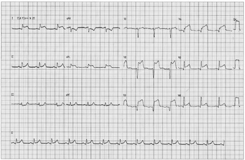
A infarto agudo do miocárdio e trombólise com ateplase.
B infarto do miocárdio evoluído e cateterismo.
C síndrome coronariana aguda e balão intra-aórtico.
D pericardite aguda e colchicina.
Questão 756 · Leishmaniose tegumentar · 4000153251Um homem de 40 anos de idade, que trabalha com extrativismo orestal no interior do estado do Amazonas, onde passa a maior parte do ano, procurou atendimento médico em Unidade Básica de Saúde devido à lesão exulcerada em tórax há 6 meses, evoluindo com aumento progressivo. Ao exame físico, não apresenta alterações, exceto a lesão única abaixo, a qual foi biopsiada. O resultado do exame histopatológico esperado para esse caso e o tratamento proposto devem ser
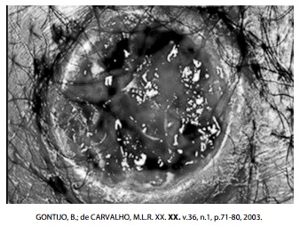
A infiltrado neutrofílico com aspecto verde maçã quando corado pelo Vermelho Congo; fluconazol.
B células de Kupffer acompanhadas de nódulos regenerativos com áreas de fibrose; prednisona.
C infiltrado inflamatório inespecífico com células de Hürthle e presença de invasão vascular; benzonidazol.
D granulomas e estruturas arredondadas compatíveis com formas amastigotas; N-metilglucamina.
Questão 757 · Política Nacional de Práticas Integrativas e Complementares · 4000153250Em 2006, foi implantada a Política Nacional de Práticas Integrativas e Complementares (PNPIC) no SUS. De acordo com essa política, é correto afirmar que
A o seu campo de atuação envolve sistemas médicos simplificados com a utilização de recursos terapêuticos simples.
B estimula mecanismos naturais de tratamento de algumas doenças e recuperação da saúde com utilização de tecnologias frágeis e nem sempre seguras.
C limita o acesso à tecnologia de ponta e aumenta o número de atendimentos nas unidades, contribuindo para ampliar a resolubilidade do sistema.
D compartilha da visão ampliada do processo saúdedoença e a promoção global do cuidado humano, especialmente do autocuidado.
Questão 758 · Medidas gerais · Diagnóstico de HPP · Obstetrícia · 4000153249Uma mulher, de 27 anos de idade, teve uma cesárea há 2 horas. Seu acompanhante notou um sangramento vaginal e chamou a equipe de enfermagem. Na checagem dos sinais vitais, foi constatada uma pressão arterial = 90/50 mmHg e um pulso de 112 = bpm. Frente a esse quadro, assinale a alternativa correta.
A A paciente apresenta quadro de instabilidade hemodinâmica, portanto, medidas de ressuscitação devem ser iniciadas imediatamente.
B A paciente apresenta sinais vitais estáveis para o período puerperal, porém é importante que seja monitorizada em terapia intensiva pelo alto risco de sangramento em período puerperal.
C A paciente apresenta estabilidade hemodinâmica e sinais vitais normais para o período de puerpério. É necessário um controle mais frequente de sinais vitais e sangramento.
D A paciente apresenta um quadro que pode indicar dano cerebral, portanto, deve ser transferida para Unidade de Terapia Intensiva imediatamente.
Questão 759 · Notif icação em Saúde do Trabalhador no Sistema da Estratégia de Vigilância Sentinela · 4000153248No Brasil, a doença diarreica aguda é reconhecida como importante causa de morbimortalidade, mantendo relação direta com as precárias condições de vida e saúde dos indivíduos, em consequência da falta de saneamento básico, de desastres naturais (estiagem, seca e inundação) e da desnutrição crônica, entre outros fatores, de acordo com dados do Ministério da Saúde de 2019. No sentido de melhorar o controle das doenças diarreicas agudas, o Ministério da Saúde orienta, como conduta relacionada à vigilância epidemiológica a ser adotada pela equipe de saúde da Unidade Básica de Saúde, a
A monitorização, do tipo sentinela, das doenças diarreicas agudas.
B notificação compulsória semanal dos surtos de doença diarreica aguda apenas em crianças.
C notificação compulsória imediata de caso individual de doença diarreica aguda em criança.
D notificação compulsória dos casos isolados de doença diarreica aguda causada por água e/ou alimento.
Questão 760 · Quadro clinico · Diagnóstico · 4000153247Uma menina de 3 anos de idade iniciou subitamente um quadro febril alto, apresentando irritabilidade e queixa de dor importante em perna direita, parando de andar. Ao exame, estava toxêmica. Foi identi cada dor localizada na face anterior do quadril direito, com edema e restrição da movimentação do quadril direito, permanecendo na posição de exão-abdução e rotação externa. Havia relato de trauma na escola poucos dias antes, tendo caído do balanço, mas não houve repercussão no dia do acidente. Diante do quadro clínico apresentado, assinale a alternativa que define o diagnóstico provável.
A Febre reumática.
B Sinovite transitória do quadril.
C Doença de Legg-Perthes.
D Artrite séptica do quadril.
Questão 761 · Doenças Associadas ao H pylori · Tratamento Medicamentoso · 4000153246Um homem, com 58 anos de idade, foi atendido em ambulatório de hospital secundário. Relatava dor e queimação epigástrica que aumentava após a ingestão de alimentos, acompanhada de plenitude pós-prandial. Realizou endoscopia digestiva alta que evidenciou úlcera com 5 mm de diâmetro na parede anterior do antro gástrico, na região pré-pilórica. Com base nos dados apresentados, assinale a alternativa que apresenta a conduta adequada a ser seguida.
A Solicitar endoscopia com biópsias seriadas para excluir neoplasia gástrica e pesquisar
B Indicar tratamento operatório pela localização da úlcera e risco de perfuração.
C Prescrever inibidor de secreção gástrica por 6 a 8 semanas e solicitar endoscopia com pesquisa de Helicobacter pylori,
D Prescrever inibidor da secreção gástrica e tratar
Questão 762 · Clínico · Obstetrícia · 4000153245Uma mulher de 34 anos de idade é atendida em pronto-socorro com desconforto abdominal, sem sinais de peritonite, com atraso menstrual de 3 semanas. Foi submetida à terceira tentativa de inseminação arti cial, recentemente, e apresentava beta-hCG = 3 000 mUI/mL, dosado no dia anterior. O médico solicitou uma ultrassonogra a que evidenciou gestação ectópica à esquerda, com saco gestacional bem delimitado, sem batimentos cardíacos fetais e medindo 3 cm. Diante do quadro atual, qual a conduta apropriada?
A Iniciar tratamento com metotrexato 50 mg/m².
B Adotar conduta expectante e dosar beta-hCG diariamente.
C Submeter a paciente a videolaparoscopia e salpingostomia.
D Submeter a paciente a videolaparoscopia e salpingectomia.
Questão 763 · Esquema básico para tuberculose pulmonar · Diagnóstico · Paracoccidioidomicose · 4000153244Um paciente masculino, 33 anos de idade, agricultor, é internado com quadro de cansaço, adinamia, tosse, emagrecimento importante nos últimos 6 meses (cerca de 14 kg). Ao exame, mostra-se emagrecido, mucosas pouco coradas, ausculta pulmonar com murmúrio vesicular preservado, estertores bilaterais. Tomogra a de tórax apresenta lesões em brotamento com suspeita de tuberculose pós-primária. Diante desse caso, quais são, respectivamente, o diagnóstico diferencial, o exame a ser solicitado para confirmação da tuberculose e o tratamento a ser instituído?
A Pneumonia por estafilococo; solicitar pesquisa de BK e fungo em escarro; iniciar tratamento com rifampicina.
B Pneumonia por paracoccidioidomicose; solicitar biópsia tran-brônquica; iniciar rifampicina, isoniazida, pirazinamida.
C Pneumonia por estafilococo; solicitar lavado bronco alveolar para pesquisa de BK; iniciar rifampicina e pirazinamida.
D Pneumonia por paracoccidioidomicose; solicitar pesquisa de BK e fungo no escarro; iniciar rifampicina, isoniazida, pirazinamida.
Questão 764 · Tratamento · 4000153243Uma mulher com 45 anos de idade foi atendida em unidade básica de saúde referindo que, há 4 meses, foi realizada drenagem de abscesso perianal em pronto-socorro e, desde então, tem apresentado saída ocasional de secreção fétida por lesão dérmica no local. O exame físico evidenciou orifício cutâneo com saída de secreção amarelada à compressão, localizado anteriormente e acerca de 2 cm da borda anal. Com base nos dados apresentados, determine a alternativa com a orientação da conduta a ser seguida.
A Encaminhar para nova drenagem em pronto-socorro.
B Encaminhar para avaliação eletiva, em ambulatório especializado.
C Prescrever antibiótico por via oral e pomada anestésica.
D Prescrever anti-inflamatório por via oral e pomada com antibiótico.
Questão 765 · Diagnóstico · Classif icação das anemias Foco na f erropriva · 4000153242Um adolescente do sexo masculino, de 13 anos de idade, em atendimento de rotina, relata desânimo e cansaço para ajudar nas atividades domésticas e inapetência. Recordatório alimentar: 3 sanduiches de pão de forma com manteiga e batata frita no almoço e no jantar, nos intervalos ingere balas e biscoitos, além de 1 000 mL de leite por dia. Exame físico sem alterações, peso, estatura e IMC no percentil 50 das curvas de referência e G3P3 de acordo com estadiamento de Tanner. Hemograma: hemoglobina = 12,1 g/dL; hematócrito = 35%; VCM ≤ 75 ; CHCM ≤ 26,5g/dl. Considerando que a Organização Mundial de Saúde refere, de maneira geral para adolescentes, valores normais de hemoglobina ≥ 12g%, é correto afirmar que
A o paciente apresenta anemia megaloblástica, sendo necessária a correção dietética com alimentos fontes de vitamina B12 e folatos.
B o paciente não apresenta alterações clínicas ou laboratoriais, sendo necessário investigar outras causas que justifiquem as queixas do mesmo.
C o paciente apresenta anemia carencial por deficiência de ferro, sendo necessária a correção dietética e a administração de sulfato ferroso.
D o paciente não apresenta anemia, contudo o resultado laboratorial sugere deficiência de ferro, devendo-se realizar a orientação dietética pertinente.
Questão 766 · Patogênese e Apresentação Clínica · Vômitos · Pediatria · 4000153241Um lactente masculino, de 2 meses, é levado à emergência com história de vômitos não biliosos que iniciaram com três semanas de vida e progressivamente pioraram. Há 2 dias, passou a vomitar após as mamadas e hoje o vômito está em jato. Ao exame físico, apresenta-se irritado, faminto, muito emagrecido; no epigástrio, foi observado onda peristáltica se deslocando da esquerda para direita e, após a criança vomitar, palpada à direita, também no epigástrio, massa firme e móvel com cerca de 2 cm de diâmetro. Com base na principal hipótese diagnóstica, o distúrbio ácido-básico que se espera encontrar nesse lactente é
A alcalose metabólica hipoclorêmica.
B acidose metabólica hiperclorêmica.
C acidose metabólica hipoclorêmica.
D alcalose metabólica hiperclorêmica.
Questão 767 · Conduta · 4000153240Um homem com 20 anos de idade foi atendido em ambulatório de hospital secundário 7 dias após a sutura de ferimento corto-contuso no antebraço direito para retirada dos pontos. Relatava que, há 3 dias, sentia dor e a ferida encontrava-se abaulada e arroxeada. Não relatou febre no período. A incisão com aproximadamente 10 cm estava suturada com pontos simples de o de náilon, apresentava abaulamento doloroso em toda a extensão, pouco depressível e havia equimose das bordas da ferida. Com base nos dados apresentados, assinale a alternativa que apresenta a conduta adequada.
A Retirar todos os pontos e manter as bordas aproximadas com esparadrapo microporoso.
B Prescrever antibiótico via oral e agendar retirada dos pontos após mais uma semana.
C Encaminhar ao pronto-socorro para revisão da hemostasia com anestesia.
D Retirar alguns pontos para drenagem da ferida e agendar retorno para avaliação.
Questão 768 · Diagnóstico na gestação · Obstetrícia · 4000153239Uma gestante, com 28 anos de idade, na 14.a semana de gestação, primigesta, em consulta com equipe de Estratégia de Saúde da Família para avaliação de exames de pré-natal apresenta IgG e IgM reagentes para toxoplasmose, sem resultado de exames prévios. Solicitado teste de avidez de IgG na mesma amostra, com resultado “avidez forte”. A interpretação do resultado e a conduta são
A infecção adquirida antes da gestação, sem necessidade de mais testes.
B infecção adquirida durante a gestação, iniciar espiramicina e manter até o parto.
C imunidade remota, indicado repetir sorologia a cada 2 meses e no parto.
D infecção recente, iniciar pirimetamina + sulfadiazina + ácido folínico e encaminhar para a referência de gestação de risco.
Questão 769 · Lúpus Eritematoso Sistêmico LES · 4000153238Uma mulher de 27 anos de idade, de etnia afrodescendente, retorna ao ambulatório de clínica médica para mostrar os resultados dos exames complementares solicitados na última consulta. A paciente havia sido atendida em função de sintomas constitucionais (febre intermitente, mal-estar, anorexia, desânimo e artralgias) e importante queda de cabelos. Ao exame físico, havia sido observada a presença de sinovite em punhos, cotovelos, joelhos e tornozelos. Além de padrão de alopecia generalizada (e úvio telógeno). Havia histórico familiar de artrite reumatoide, lupus eritematoso e tireoidite de Hashimoto. A paciente negava tabagismo e etilismo, referindo apenas uso regular de contraceptivo hormonal oral. Os resultados dos exames complementares solicitados à ocasião da 1ª consulta revelaram: hemoglobina = 10,2 g/dL (valor de referência: 12 a 15,5 g/dL); contagem de plaquetas = 102 000/mm³ (valor de referência: 150 000 a 400 000/mm³); leucograma (incluindo diferencial) normal; TSH = 8 UI/ml (valor de referência: 0,5 a 5,0 UI/ml); T4 livre = 1,2 ng/dL (valor de referência: 0,9 a 1,9 ng/dL); FAN = presente em título 1:640 (valor de referência < 1:80), padrão periférico; anti-DNAds: presente em título 1:240 (valor de referência < 1:100); C3: 33 mg/dL (valor de referência: 90 a 180 mg/dl); VDRL + 1:4 (valor de referência: negativo); IgG anticardiolipina: 12 GPL (valor de referência < 10 GPL); ureia: 44 mg/dL (valor de referência: 20 a 40 mg/dL); creatinina = 1,2 mg/dL (valor de referência: 0,7 a 1,1 mg/dL); exame de urina tipo I com hematúria microscópica e proteinúria leve a moderada; SPOT urinário com proteinúria estimada de 560 mg (valor de referência < 151 mg). Diante dos dados apresentados, a melhor explicação diagnóstica para o caso é
A lúpus eritematoso sistêmico com síndrome do anticorpo antifosfolipídio.
B lúpus eritematoso sistêmico evoluindo com nefrite lúpica.
C hipotireoidismo associado com síndrome do anticorpo antifosfolipídio.
D glomerulonefrite aguda secundária a sífilis associada com hipotireoidismo.
Questão 770 · Colo uterino · 4000153237Mulher, 28 anos de idade, professora, com 2 gestações anteriores, sendo um parto normal e um aborto espontâneo anteriormente. Tem um lho de 7 anos de idade de outro relacionamento. Há 2 anos está casada com homem de 35 anos, sem lhos. Ambos sem antecedentes patológicos significativos. Referem que há vários anos não procuram assistência com a equipe de saúde. O exame físico do casal revelou como únicos achados positivos em relação à mulher: PA = 140 x 85 mmHg e índice de massa corporal de 30 Kg/m². Exame físico do homem foi normal. Estavam em uso de preservativo e pílula combinada, mas interromperam há 2 semanas. Vão em busca de orientação pré-concepcional. Nesta situação, está indicado(a)
A coleta de exame citopatológico cervicovaginal para prevenção do câncer de colo uterino.
B dosagem sérica de folato para prevenção de defeitos de fechamento do tubo neural.
C teste oral de tolerância à glicose para descartar diabetes mellitus prévio à gestação.
D dosagens hormonais de progesterona e estradiol para avaliação do ciclo menstrual e ovulação.
Questão 771 · Doença de Crohn · Gastroenterologia · 4000153236Uma mulher de 22 anos de idade foi encaminhada ao serviço de oftalmologia devido à episódio de olho vermelho, o qual o médico oftalmologista diagnosticou uma uveíte anterior aguda. Questionando a paciente, o médico identi cou história de aftas orais recorrentes e dolorosas há pelo menos 1 ano para as quais não foi realizada nenhuma investigação, fazendo uso apenas de corticoides tópicos, com alívio fugaz. Relata, ainda, que apresenta dor abdominal e diarreia, mais ou menos, no mesmo período. Refere que as evacuações são frequentes, cerca de 5 a 6 vezes por dia, em pequeno volume e com sangue e muco visíveis em algumas ocasiões. Visando ao esclarecimento diagnóstico, o procedimento a ser adotado e o achado esperado, devem ser
A teste de Patergia; pústula visualizável no local de punção após 7 dias.
B parasitológico das fezes pelo MIF (mercúrio, iodo e formol); cistos e trofozoítos.
C pesquisa de autoanticorpos (FAN); positivo com padrão nuclear pontilhado fino denso.
D colonoscopia com biopsia; histopatológico com granuloma não caseoso.
Questão 772 · Choque · 4000153235Um homem com 38 anos de idade, aguardando em ponto de ônibus, foi atropelado por motorista de veículo desgovernado e prensado contra a parede. Atendido em pronto-socorro de hospital terciário, referia muita dor na pelve, apresentava escoriações e contusões no hipogástrio e membros inferiores, sem sinais de trauma torácico ou craniano. Apresentava instabilidade do anel pélvico à palpação, pressão arterial = 80 x 40 mmHg, frequência cardíaca = 124 batimentos por minuto, 24 incursões respiratórias por minuto, tempo de enchimento capilar maior que 2 segundos e saturação de oxigênio = 97%. Com base nos dados apresentados, qual deve ser o manejo inicial da vítima em relação ao quadro de choque?
A Radiografia de pelve anteroposterior na sala de emergência.
B Cinta ou lençol para estabilização pélvica e indicação precoce de infusão de hemocomponentes.
C Tratamento operatório para controle de danos em hemorragia retroperitoneal volumosa.
D Soluções cristaloides por acessos venosos periféricos e avaliação de ortopedista.
Questão 773 · Estimativa da Superf ície Corpórea Queimada e Circulação · 4000153234No atendimento de urgências por queimaduras, a avaliação da extensão da superfície corporal queimada (SCQ) do paciente pode ser feita pela “regra dos nove", diagrama de Lund e Browder e, mais recentemente, com uso de aplicativos em pesando 50 Kg, com queimadura de 3° grau que atinge a totalidade do membro superior direito e a totalidade do membro inferior esquerdo, tem-se, respectivamente, a superfície corporal estimada e a reposição hídrica, segundo a fórmula de Parkland, de
A área de 27% de SCQ e 2 700 mL administrados nas primeiras 24 horas do momento da queimadura.
B Área de 27% de SCQ e 1 350mL administrados nas primeiras 8 horas do momento da queimadura e 1 350 mL administrados nas 16 horas seguintes.
C Área 18% de SCQ e 900 mL administrados nas primeiras 8 horas do momento da queimadura e 900 mL administrados nas 16 horas seguintes.
D Área de 18% de SCQ e 1 800 mL administrados nas primeiras 24 horas do momento da queimadura.
Questão 774 · Doença hemolítica perinatal DHPN · 4000153233Uma mulher de 29 anos de idade procura a maternidade com queixa de sangramento vaginal tipo "borra de café". Estava na 32ª semana de gestação, tônus uterino, movimentação e batimentos cardíacos fetais normais. No toque não foi observado sangramento. Gesta 3; para 3. Exames laboratoriais normais. Tipo sanguíneo O negativo e do marido A positivo. Não apresentou cartão pré-natal e não tinha nenhum exame em sua posse. Diante da situação apresentada, a conduta a ser adotada é
A solicitar a dosagem de anticorpos irregulares e, caso negativa, aplicar a imunoglobulina anti-D.
B aplicar a imunoglobulina anti-D e acompanhar com exames semanais a elevação dos anticorpos irregulares.
C realizar a imunização com imunoglobulina anti-D e encaminhar para o pré-natal para dosar os anticorpos irregulares.
D aplicar a imunoglobulina anti-D semanalmente até completar 34 semanas, caso os anticorpos irregulares sejam positivos.
Questão 775 · Assistência prénatal · 4000153232Uma mulher, com 23 anos de idade, 1° trimestre de gestação, primigesta, comparece à primeira consulta de pré-natal na Unidade de Estratégia de Saúde da Família. Testes rápidos para sí lis, HIV, hepatite B e hepatite C não reagentes. A conduta com relação à solicitação desses exames no seguimento pré-natal da gestante, de acordo com o Ministério da Saúde, é repetir
A a testagem para sífilis e HIV no 3° trimestre de gestação, no parto e/ou se história de exposição de risco/violência sexual.
B todas as testagens (sífilis, HIV, hepatite B e hepatite C) no 3° trimestre de gestação, no parto e/ou se história de exposição de risco/violência sexual.
C a testagem para hepatite B no 3° trimestre se a gestante tiver histórico de vacinação e se Anti- HBc total for reagente é desnecessária sua repetição no parto.
D a testagem para hepatite C no 2º e 3º trimestres, além do parto e/ou se história de exposição de risco/violência sexual.
Questão 776 · Estenose mitral · 4000153231Uma mulher de 38 anos de idade é admitida na enfermaria de cardiologia de hospital de alta complexidade, em função de quadro de dispneia progressiva, ortopneia e dispneia paroxística noturna. Segundo a paciente informa, seus sintomas anteriores iniciaram-se há cerca de 1 ano, tendo progredido ao longo do período. Procurou assistência médica em algumas ocasiões, sendo nalmente internada para realização de exames complementares e definição diagnóstica. Em sua história patológica pregressa, há relato de dois episódios de febre reumática na adolescência, num dos quais foi detectado um "sopro no coração". Fez uso de penicilina benzatina de forma mensal, mas irregular, até os 18 anos de idade. Nega outros dados relevantes de anamnese. Ao exame físico, paciente está em bom estado geral, em atitude ortopneica. Não há febre. PA = 120 x 70 mmHg; FC = 87 bpm. Ritmo cardíaco é irregular, em 2 tempos, com 1ª bulha hiperfonética e presença de sopro diastólico (2+/6+) em ponta, melhor audível em semi-decúbito lateral esquerdo; um ruído protodiastólico curto, de alta frequência, é também auscultado no foco mitral, mas não se observa reforço do ru ar diastólico. Há anicardios gmia. Não é detectada turgência jugular a 45°. Estertores crepitantes nos são auscultados em bases. Não há congestão hepática, nem edema de MMII. Exames complementares iniciais (incluindo VHS) revelam-se normais, sendo a pesquisa de ASLO e infecção por Diante dos dados relatados, a melhor explicação para o quadro da paciente é
A insuficiência aórtica.
B estenose mitral reumática.
C cardite reumática aguda.
D endocardite infecciosa de septo interventricular.
Questão 777 · Flora vaginal no climatério · 4000153230Uma mulher de 49 anos de idade foi atendida no ambulatório de ginecologia de um hospital na sua região. Suas principais queixas eram sintomas genitourinários, como prurido, ardor, ressecamento e irritação vulvar; disúria e urgência miccional de início há 8 meses. Esses sintomas levaram à redução da libido e impacto negativo na sua vida sexual. A vulva apresenta hiperemia leve e a vagina hipotró ca. O útero tinha tamanho normal ao toque, com sua mobilidade preservada e indolor. Gesta 3; para 3 (partos normais). Nesse caso, o melhor esquema terapêutico para essa mulher é utilizar
A terapias hormonais locais.
B antifúngico oral.
C creme vaginal antifúngico.
D estradiol via transdérmica.
Revisar: possível letra faltando em enunciado
Questão 778 · Pediatria · Tratamento · Constipação f uncional · 4000153229Um escolar de 7 anos de idade apresenta queixa de di culdade para evacuar desde a retirada das fraldas aos 2 anos e meio. Apresenta evacuação a cada 4 ou 5 dias, com eliminação de fezes endurecidas, de grande calibre, com presença de dor e esforço evacuatório. Relata que, ao menos 3 vezes por semana, observa a presença de fezes perdidas na roupa. Por vezes, nota a presença de sangue em pequena quantidade no papel em que se higienizou. Nega antecedentes neonatais ou outras comorbidades relevantes; desmame aos 4 meses de idade; não faz uso de medicação de rotina. Alimenta-se quantitativamente bem com preferência pelo consumo de leite (4 porções diárias), carboidratos, carne e alimentos ultraprocessados; de forma bem infrequente, batata, cenoura, tomate, banana e maçã compõem a sua dieta. Está alfabetizado e é o melhor aluno de sua sala. Nesta consulta, seu peso encontra-se no Z score entre +2 e +3 da Curva de Índice de Massa Corpórea da OMS e sua altura encontra-se no Z score entre +1 e +2 da Curva de Altura para Idade da OMS. Ao exame abdominal, apresenta fezes endurecidas palpáveis em fossa ilíaca esquerda em moderada quantidade. O exame clínico não apresenta outras alterações. Considerando o caso descrito, assinale a alternativa que contém o diagnóstico mais provável e a conduta adequada.
A Doença de Hirschsprung, devendo ser submetido ao toque retal para constatação de ampola retal vazia.
B Hipotireoidismo, devendo ser coletados TSH, T4 livre e anticorpos antireoglobulina e antitireoperoxidase.
C Alergia à proteína do leite de vaca, devendo fazer teste de exclusão da dieta durante 2 a 4 semanas.
D Constipação intestinal funcional, devendo fazer desimpactação fecal com polietilenoglicol ou enema.
Questão 779 · Seroma · Hematoma · Inf ecção de Ferida Operatória Inf ecção de Sítio Cirúrgico ISC · 4000153228Paciente de 40 anos de idade, sexo feminino, procura unidade pública de pronto atendimento com queixa de dor em ferida operatória de ressecção de “nódulo” de 5 cm de diâmetro, na região escapular direita, há 2 dias. Ao exame, ferida cirúrgica com edema, eritema, calor e dor à palpação, associada a utuação e exsudação em bordos da sutura. Com base nas informações, qual a conduta propedêutico-terapêutica para essa paciente
A Drenagem por retirada parcial de pontos.
B Ultrassonografia de partes moles.
C Punção com agulha fina.
D Antibioticoterapia oral.
Questão 780 · Espirometria · Pneumologia · 4000153227Um homem de 67 anos de idade, tabagista inveterado (carga tabágica = 82 maços-ano), retorna ao ambulatório de clínica médica para trazer os resultados dos exames complementares que haviam sido solicitados na sua última consulta, quando havia se queixado de dispneia aos esforços e tosse crônica produtiva. Reunindo os dados da anamnese e do exame físico, o médico que o atendera considerou como mais provável o diagnóstico de doença pulmonar obstrutiva crônica (DPOC), solicitando, entre outros exames, a realização de uma espirometria. No resultado desse exame, foram registrados os valores do volume expiratório forçado no 1° segundo (VEF1), da capacidade vital (CVF), da relação VEF1/CVF, do FEF25- 75 ( uxo medioexpiratório forçado entre 25% e 75% da CVF) e a resposta ao estímulo com broncodilatador (REB). Para confirmar tal impressão diagnóstica, o resultado que deve estar indispensavelmente presente em sua espirometria é
A FEF25-75 superior a 100% do previsto.
B REB com aumento do VEF1 maior que 200 mL.
C VEF₁ inferior a 80% do previsto antes ou após broncodilatador.
D VEF₁ /CVF inferior a 0,7 mesmo após broncodilatador.
Questão 781 · HIVAIDS · 4000153226Um paciente, em tratamento para infecção por HIV há 5 anos, com boa aderência ao tratamento e carga viral indetectável em exame realizado há 1 mês, procurou a Unidade Básica de Saúde para consulta médica. O médico no atendimento veri cou que o paciente trouxe resultado de exame de escarro que mostrou a presença de bacilo álcool ácido resistente (valor de referência: negativo) feito há 10 dias. Foi verificado que a cultura ainda não havia ficado pronta. Frente a esse caso, o médico deveria
A suspender o tratamento contra a infecção pelo HIV e iniciar o tratamento de tuberculose.
B manter o tratamento contra a infecção pelo HIV e iniciar o tratamento de tuberculose antes do resultado da cultura.
C suspender o tratamento contra a infecção pelo HIV e iniciar o tratamento de tuberculose apenas após o resultado da cultura.
D suspender o tratamento contra a infecção pelo HIV e iniciar o tratamento de tuberculose de imediato.
Questão 782 · Program Saúde da Família PSF e Estratégia Saúde da Família ESF · 4000153225Atuando como médico da equipe de Estratégia de Saúde da Família, durante a pandemia da COVID-19, e seguindo o “Protocolo de Manejo Clínico do Coronavírus (COVID-19) na Atenção Primária à Saúde”, publicado pelo Ministério da Saúde, adotou-se o “Fast-Track para Síndrome Gripal”, sendo este um método derivado de protocolo de triagem em emergências. Com relação a esse protocolo,
A o médico deve classificar a gravidade e verificar condições clínicas de risco que indicam encaminhamento do paciente para centro de referência/atenção especializada.
B deve ser adotado por Unidades Básicas de Saúde ou Unidades de Pronto Atendimento, que são referências para atendimento de sintomáticos respiratórios, com objetivo de avaliar indicação de internação em Unidade de Terapia Intensiva.
C ele substitui o protocolo de Manchester, devendo ser utilizado no acolhimento pelos profissionais de enfermagem, a fim de definir o acesso do paciente à Unidade Básica de Saúde ou seu encaminhamento para Unidade de Pronto Atendimento.
D trata-se de fluxograma de uso exclusivo de médicos e enfermeiros, visando a avaliar a gravidade do paciente, a indicação de isolamento com precaução de contato e a necessidade de encaminhamento para atenção hospitalar de referência.
Questão 783 · Classif icação de risco · 4000153224Um escolar de 7 anos de idade, de sexo masculino, é admitido no pronto atendimento com queixa de febre há 5 dias, acompanhada de cefaleia, dor retro-orbital, mialgia, prostração e anorexia. Hoje, houve aparecimento de exantema maculopapular pruriginoso por todo corpo. Foi realizada Prova do Laço com presença de 15 petéquias no local examinado. Pesquisa do antígeno NS1 com resultado reagente. Com base no quadro apresentado, esse paciente apresenta dengue com qual classificação?
A Grupo A: acompanhar ambulatorialmente com orientação de reidratação oral e sintomáticos.
B Grupo A: solicitar hemograma e orientar retorno em 24 horas para checagem do resultado.
C Grupo B: solicitar hemograma e manter em observação até obtenção do resultado do exame.
D Grupo B: solicitar hemograma e manter em leito de internação por pelo menos 48 horas.
Questão 784 · Métodos hormonais combinados · 4000153223Uma mulher de 30 anos de idade busca orientação ginecológica quanto ao uso de método contraceptivo. O motivo principal da troca é o sangramento irregular nos últimos 6 meses e a mulher não quer correr o risco de engravidar. Gesta 2; para 2; abortos 0. Nega comorbidades. Atualmente em uso de contraceptivo oral combinado (15 mcg de etinilestradiol e 60 mcg de gestodeno). Diante do caso apresentado, o profissional de saúde deve
A trocar o método por um anticoncepcional injetável trimestral.
B iniciar pílula de desogestrel 75 mcg após 1 mês de intervalo.
C interromper o método por 3 meses e reiniciar o mesmo esquema.
D trocar por compostos com doses mais elevadas de estrogênio.
Questão 785 · Tratamento · Obstetrícia · 4000153222Chega ao pronto-socorro da maternidade uma gestante com 34 anos de idade com queixa de sangramento vaginal abundante e dor intensa. Esta é sua segunda gestação. A primeira ocorreu há 3 anos e foi uma cesariana por desproporção céfalo-pélvica. Ela está fazendo pré-natal desde as 12 semanas e a idade gestacional no momento da consulta é de 34 semanas, pela data da última menstruação e ultrassom de 16 semanas. Fez os exames e seguimento de pré-natal, sem nenhuma intercorrência ou alteração até as 32 semanas. Nas últimas consultas de pré-natal a gestante vinha apresentando aumento de pressão arterial, sendo medicada com metil-dopa. Ao exame, apresenta face de dor, descorada, PA = 150/90 mmHg, pulso = 120 bpm. Estado afebril. Dinâmica uterina de difícil avaliação, difícil palpação de partes fetais, dor intensa e tônus aumentado. Batimentos cardíacos fetais = 120 bpm, sem variabilidade. Ao exame especular, apresenta sangramento moderado, visualizado colo impérvio e sangramento proveniente do canal cervical; não foi feito exame de toque vaginal. O médico de plantão opta por fazer uma cesariana de urgência. Com base no caso apresentado, a alternativa correta é
A a cesariana está bem indicada, pois o diagnóstico mais provável é descolamento prematuro de placenta e não há sinais de parto iminente.
B a cesariana está bem indicada, pois o diagnóstico mais provável é placenta prévia, que é uma indicação absoluta de via alta.
C a cesariana não deve ser indicada antes de realizar um ultrassom para avaliar a causa do sangramento.
D a cesariana não está bem indicada, pois casos de hipertensão com uma cesárea prévia não indicam absolutamente cesariana.
Questão 786 · Patogênese e Apresentação Clínica · Diagnóstico · Pediatria · 4000153221Um lactente masculino, com 5 semanas de vida, chegou no pronto-socorro com história de vômitos em jato (sem bile) logo após as mamadas. A mãe relata que não está entendendo porque ele não está engordando. Nasceu com 3 500 g. Apesar dos vômitos, que tiveram início pouco depois do nascimento, ele demonstrava muita fome e sugava “com vontade” o leite materno, mas desde ontem está hipoativo, quase não urina e a boca está seca. O exame apresentou os seguintes resultados: P = 3 600 g, sinal da prega presente, mucosa oral seca, hipoativo, perfusão capilar em 4 segundos, massa semelhante a uma azeitona, discreta, rme, móvel, de 2 a 3 cm, palpável no fundo do lado direito do epigástrio. Sem outras anormalidades. Considerando os diagnósticos do lactente, qual conduta médica deve ser adotada?
A Hidratação venosa e fazer US abdominal para esclarecer a suspeita diagnóstica de base que ocasionou o quadro.
B Hidratar o paciente no domicílio e solicitar acompanhamento ambulatorial com pediatra.
C Usar antiemético, fazer hidratação venosa do paciente e encaminhar para acompanhamento ambulatorial.
D Prescrever associação de fórmula para complementar o leite materno e fazer hidratação oral, plano B.
Questão 787 · Diagnóstico PósNatal · 4000153220Um recém-nascido de 15 dias é levado à primeira consulta de puericultura. A gestação correu sem intercorrências. Mãe relata ser asmática e fez uso de prednisona oral durante toda a gestação. Parto vaginal a termo. Peso de nascimento = 3 500 g. Apgar 9/9. Alta com 2 dias. Colheu teste do pezinho no 4° dia de vida. Ao exame, o recém-nascido mostra-se em ótimo estado geral, corado e hidratado. O exame cardiovascular e respiratório sem anormalidades, assim como o exame do abdome. Considerando a história acima, assinale a alternativa que apresenta a doença cujo resultado no teste de triagem neonatal pode ter seu resultado modificado pela condição clínica materna descrita.
A Deficiência de biotinidase.
B Anemia falciforme.
C Hiperplasia adrenal congênita.
D Fibrose cística.
Questão 788 · Fatores de risco · 4000153219Em uma equipe de Saúde da Família, foi levantada a necessidade de realizar ações de promoção da saúde para o controle do câncer de mama. Segundo o Instituto Nacional do Câncer (INCA), que ações intersetoriais e práticas preventivas seriam mais eficazes para esse fim?
A Manutenção do peso corporal e a prática regular de atividade física.
B Controle de pressão arterial e diabetes.
C Incentivo a realizar autoexame de mamas.
D Incentivo à coleta de citologia oncótica periodicamente.
Questão 789 · Fatores de risco · Ressonância magnética · Diretrizes do rastreamento mamográf ico · 4000153218Uma paciente de 53 anos de idade comparece ao ambulatório de Clínica Médica onde faz acompanhamento regular de suas doenças crônicas não transmissíveis (DCNTS — hipertensão arterial sistêmica, diabetes mellituse obesidade). Durante a consulta de seguimento, a paciente manifesta preocupação com um "caroço" que detectou há cerca de 1 mês em sua mama esquerda. Ela nega emagrecimento, dor local ou descarga mamilar. Além das medicações que faz uso em razão de suas DCNTs, a paciente vem em uso de terapia de reposição hormonal (TRH) desde que entrou na menopausa, há 12 anos. Ela tem 5 lhos, tendo sua menarca ocorrida de forma tardia (aos 15 anos). A paciente não fuma, nem consome álcool. Ao exame físico dirigido à queixa atual, o médico detecta a presença de lesão nodular de cerca de 2,5 cm, endurecida, não aderida a planos profundos e sem alterações cutâneas adjacentes, localizada no quadrante superior externo da mama esquerda; não são detectadas linfonodomegalias axilares ou supraclaviculares ipsilaterais. Considerando a hipótese diagnóstica principal de neoplasia maligna de mama, seus fatores de risco relacionados e sua rotina de investigação diagnóstica, assinale a alternativa correta.
A O histórico de menarca tardia, menopausa precoce e gestações múltiplas são fatores de risco reconhecidos.
B Diferentemente da terapia de contracepção conjugada (estrógeno e progestágeno), a TRH não é fator de risco para a doença.
C Na idade da paciente, a realização de ressonância magnética local não aumenta a especificidade das informações obtidas com a mamografia.
D A chance de a paciente apresentar mutação hereditária no gene BRCA1 é alta, particularmente se seu tumor coexpressar receptores de estrogênio, progestágeno e HER2.
Questão 790 · Diagnóstico · Avaliação dos contatos · 4000153217Um homem, com 20 anos de idade, desempregado, reside em casa de madeira com um cômodo junto com o pai, mãe e 5 irmãos. Ele procurou a Unidade de Saúde da Família, com queixa de tosse, febre e dispneia há mais ou menos 2 meses, inicialmente aos esforços e posteriormente em repouso. Nega tuberculose (TB) anterior. Relata que o pai teve tuberculose, porém abandonou o tratamento 2 vezes. Há 6 meses, foi solicitado investigação dos contatos, considerando o reingresso após abandono do tratamento do pai, porém nenhum dos membros da família compareceu à unidade para avaliação clínica e/ ou realizou os exames. No atendimento de hoje, o paciente realizou teste rápido (IgM/IgG) para COVID-19 com resultado negativo. Aplicando as evidências científicas, preceitos éticos e legais, assinale a afirmativa com a melhor conduta.
A Realizar avaliação clínica, coletar e encaminhar 3 amostras de escarro para realizar baciloscopia de escarro, teste molecular rápido para a TB (TMR-TB) e cultura de escarro, solicitar raio-X, realizar o teste rápido para o HIV, orientar o uso de máscara de tecido, agendar nova consulta e investigar os contatos.
B Realizar avaliação clínica, coletar e encaminhar 3 amostras de escarro para realizar baciloscopia de escarro, teste molecular rápido para a TB (TMR-TB) e cultura de escarro, solicitar raio-X, realizar o teste rápido para o HIV, orientar o uso de máscara de cirúrgica, investigar os contatos e encaminhar o paciente para o serviço de referência.
C Realizar avaliação clínica, coletar e encaminhar 2 amostras de escarro para realizar teste molecular rápido para a TB (TMR-TB) e cultura de escarro, solicitar raio-X, realizar teste rápido para o HIV, orientar o uso de máscara cirúrgica, agendar nova consulta e investigar os contatos.
D Realizar avaliação clínica, coletar e encaminhar 2 amostras de escarro para realizar baciloscopia e cultura de escarro, solicitar raio-X, realizar teste rápido para o HIV, orientar o uso de máscara N-95, agendar nova consulta e investigar os contatos.
Questão 791 · Diretrizes para o rastreamento · 4000153216Uma adolescente com 18 anos de idade, procura assistência primária para realizar o exame preventivo do câncer do colo uterino. Sexarca aos 17 anos, em uso de contraceptivo oral. De acordo com as diretrizes brasileiras na prevenção do câncer de colo uterino, qual deve ser a conduta do agente de saúde?
A Fazer o exame clínico e ginecológico completo e coletar material para o exame citopatológico do colo uterino.
B Coletar material para identificar o DNA-HPV (captura híbrida), se estiver disponível, pois é mais sensível que o exame citológico.
C Colher a história clínica e informar que não há necessidade de realizar o exame preventivo antes de completar 25 anos.
D Coletar material para citologia e caso tenha duas citologias normais com intervalo de 1 ano, fazer a coleta a cada 3 anos.
Questão 792 · Acesso cirúrgico a via aérea · 4000153215Paciente de 50 anos de idade, masculino, obeso, diabético, hipertenso, procura hospital pronto-socorro com queixa de dispneia aos pequenos esforços há 4 dias. Tosse não-produtiva. Febre não-mensurada. Refere anosmia e ageusia. Ao exame, paciente em mal estado geral, taquidispnéico, taquicárdico, tossindo, com tiragem intercostal e supraesternal. Submetido a tomogra a de tórax de urgência, demonstrando mais de 70% de imagens “em vidro-fosco” no parênquima pulmonar, bilateralmente. Saturação de O2 de 60% em ar ambiente. O médico assistente optou por internação hospitalar de urgência e subsequente intubação orotraqueal, na mesma data da internação. Duas tentativas de extubação, sem sucesso, após 2 dias de intubação. Com base nas informações fornecidas, qual o momento para indicar uma traqueostomia para esse paciente?
A Após 2 tentativas de extubação.
B Após 10 dias de internação.
C Após 7 dias de internação.
D Após 2 dias de intubação.
Questão 793 · Úlceras genitais · 4000153214Um homem de 27 anos de idade, homoafetivo, com atividade sexual ativa e passiva com múltiplos parceiros, ocasionalmente sem uso de preservativo, procura a Unidade Básica de Saúde com quadro arrastado de dor anorretal e tenesmo retal, associado à descarga anal mucopio-sanguinolenta, além de febre, calafrios, cefaleia, mal-estar, mialgias e "íngua" à direita. Segundo informa, o quadro iniciou-se há cerca de 7 dias. Nega infecções sexualmente transmissíveis recentes, tendo sua última relação sexual não protegida ocorrida 4 semanas antes. Nega ter observado qualquer lesão ulcerada genital ou anal no período. Suas vacinações estão em dia, mas nunca recebeu vacina contra o HPV. Ao exame físico, o paciente se apresenta em regular estado geral, febril, com presença de adenopatia inguinal supurativa unilateral, à direita, dando saída a secreção purulenta por diversos tratos stulosos locais; os linfonodos são grandes, localizados acima e abaixo do ligamento inguinal de Poupard, sendo recobertos por pele in amada, na e xa aos planos profundos. Anuscopia revela a saída de secreção piossanguinolenta local, com mucosa hiperemiada, sem úlceras locais, sendo o toque retal muito doloroso. É procedida punção de um linfonodo inguinal utuante, sendo o material aspirado encaminhado para coloração pelo Gram e pesquisa em campo escuro, que posteriormente não mostraram a presença de bacilos Gram-negativos agrupados em correntes (tipo "cardume de peixe"), nem Treponema pallidum. Medicado com sintomáticos, o paciente retorna duas semanas após para saber os resultados, quando se queixa de ter surgido di culdade para evacuar, exigindo muito esforço. Ao toque retal, é palpado um estreitamento concêntrico a cerca de 5 cm da margem anal. A melhor hipótese diagnóstica para o caso e uma forma através da qual, se disponível, poderia ser feito o diagnóstico definitivo de tal condição são
A carcinoma escamoso de ânus; pesquisa de HPV à biópsia por retossigmoidoscopia.
B linfogranuloma venéro; pesquisa por teste de amplificação de ácidos nucleicos no material da lesão inguinal.
C doença de Crohn; colonoscopia com biópsia das lesões e pesquisa de anticorpo
D sarcoma de Kaposi anorretal; sorologia no sangue com pesquisa anticorpos anti-HHV8.
Questão 794 · 12 meses · 4000153213Uma lactente de 13 meses de idade, de sexo feminino, é levada à Unidade Básica de Saúde para consulta de rotina. A mãe está preocupada, pois a criança ainda não é capaz de andar sem apoio. Não há outras queixas. O pré-natal materno não possui intercorrências; nasceu de parto normal, com 40 semanas de idade gestacional; Boletim de Apgar no 1° minuto = 6; no 5° minuto = 9; e no 10° minuto = 10; com peso ao nascer = 3 200 g e comprimento ao nascer = 50 cm. No exame clínico neonatal, observou-se estalido à manobra de Ortolani à direita; na ocasião, realizou exame ultrassonográ co de quadril apresentando resultado I pelo método de Graf. Recebeu alta no segundo dia de vida. Sem antecedentes pessoais ou familiares relevantes. Desenvolvimento neuropsicomotor prévio: sorriso social aos 2 meses; xou o pescoço aos três meses; sentou sem apoio aos sete meses; passou a distinguir familiares de estranhos e a reconhecer seu nome aos nove meses; primeiras palavras com significado aos 11 meses. Atualmente engatinha, ca em pé com apoio das mãos e arrisca alguns passos sem apoio, mas logo cai; usa copo com ajuda, compreende ordens simples, bate palma, manda beijo, fala “mama” e “papa” para referir-se à mãe e ao pai respectivamente. Não apresenta alterações ao exame clínico.A conduta adequada para essa criança, considerando o desenvolvimento da marcha é
A manter acompanhamento de rotina.
B encaminhar para fisioterapia motora para membros inferiores.
C encaminhar ao neurologista devido à anoxia perinatal.
D encaminhar ao ortopedista por suspeita de displasia congênita do quadril.
Revisar: possível letra faltando em enunciado
Questão 795 · Vigilância Ambiental · 4000153212Numa Unidade Básica de Saúde, localizada em cidade de grande porte, são atendidos, no intervalo de 2 semanas, 3 casos de leptospirose em trabalhadores de limpeza e desentupimento de esgotos. No que se refere à vigilância ambiental, são ações previstas pelo Ministério da Saúde durante a investigação dos casos e após identificação do local provável de infecção
A antirratização; desratização; e informação, educação e comunicação em saúde.
B desratização; mutirão de limpeza; controle de comunicantes.
C informação, educação e comunicação em saúde; busca ativa de casos; vacinação de bloqueio.
D drenagem de coleções hídricas; sorologia nos comunicantes; quimioprofilaxia.
Questão 796 · Controle dos comunicantes · Situações em que há restrições ao aleitamento materno · 4000153211Um recém-nascido com 20 dias de vida é levado à consulta de puericultura em Unidade Básica de Saúde. A mãe foi diagnosticada com tuberculose pulmonar após o parto e já iniciou tratamento medicamentoso. Ela nega qualquer sintoma na criança. Gestação sem intercorrências. Ao exame, o recém-nascido mostra-se em bom estado geral, corado, hidratado e ativo. Os aparelhos cardiovascular e respiratório apresentam-se normais, assim como o abdome. Considerando a história acima descrita, assinale a alternativa que contém a conduta indicada para esse recém-nascido em relação ao seu tratamento e aleitamento.
A Manutenção do aleitamento materno com uso de máscara por parte da mãe e uso profilático de isoniazida até o 3° mês de vida, quando o teste tuberculínico deverá ser realizado.
B Interrupção do aleitamento materno por parte da mãe e uso profilático de isoniazida até o 3° mês de vida, quando o teste tuberculínico deverá ser realizado.
C Manutenção do aleitamento materno com uso de máscara por parte da mãe e uso profilático de isoniazida até o 6° mês de vida, quando o teste tuberculínico deverá ser realizado.
D Interrupção do aleitamento materno por parte da mãe e uso profilático de isoniazida até o 6° mês de vida, quando o teste tuberculínico deverá ser realizado.
Questão 797 · Pediatria · Reanimação neonatal em maiores de 34 semanas · Ventilação com pressão positiva · 4000153210Um médico de maternidade pública é chamado para realizar a sala de parto de gestante de 35 semanas com pré-eclâmpsia. Um recém-nascido pesando 2,3 kg apresenta-se banhado em líquido amniótico meconial, hipotônico e respirando de forma irregular. O médico assistente decide levá-lo à mesa de reanimação para realizar aspiração de vias aéreas superiores sob calor. Além disso, posiciona o pescoço em leve extensão, aspira a boca e narinas e seca o paciente. Após 30 segundos, o recém-nascido mostra respiração irregular e frequência cardíaca = 80 bpm. Considerando a situação acima descrita, assinale a alternativa que apresenta a próxima conduta que deve ser tomada pelo médico assistente.
A Realizar ventilação com pressão positiva com máscara facial.
B Realizar massagem cardíaca externa.
C Realizar intubação orotraqueal.
D Realizar aspiração traqueal sob visualização direta.
Questão 798 · Doenças relacionadas ao trabalho · 4000153209Em reunião da equipe da Estratégia de Saúde da Família, localizada em área litorânea da Região Nordeste do Brasil, com os diretores do sindicato dos trabalhadores em carcinicultura (criação de camarão em viveiros), principal atividade econômica da região, é definida a necessidade de desenvolver ações educativas de proteção e ações de diagnóstico precoce dos principais agravos que acometem os trabalhadores nessa atividade. A atividade envolve longas jornadas diuturnas de trabalho, além da utilização de metabissul to de sódio para evitar o aparecimento de manchas pretas nos crustáceos. Considerando os principais agravos determinados pelas condições de trabalho, as atividades a serem desenvolvidas deveriam priorizar
A neoplasia cutânea e rinite e/ou asma alérgica.
B distúrbios osteomusculares e dermatite por contato.
C rinite e/ou asma alérgica e lesão por esforço repetitivo.
D distúrbio do sono e neoplasia cutânea.
Questão 799 · Tratamento · 4000153208Paciente de 60 anos de idade, masculino, procura hospital pronto-socorro com história de parada de eliminação de atos e fezes há cerca de 1 semana. Nega vômitos. Ao exame físico, paciente em regular estado geral, desidratado, dispneico, taquicárdico. Abdome globoso, hipertimpânico, doloroso à palpação difusa, com sinais de irritação peritoneal. Toque retal com ampola retal vazia, sem fezes, sem muco, sem sangue em “dedo-de-luva”. Solicitadas radiogra as de tórax e abdome, demonstrando distensão volumosa de cólon e ceco (maior que 12 cm), com níveis hidroaéreos, sem distensão de intestino delgado. Baseado nessas informações, qual a conduta?
A Sonda nasogástrica.
B Observação.
C Laparotomia exploradora.
D Clister glicerinado.
Questão 800 · Papilomavírus humano HPV · 4000153207Quanto ao vírus HPV, suas formas de imunização e diagnóstico, podemos afirmar que
A a vacina anti-HPV quadrivalente consegue imunizar contra quatro tipos virais de alto grau, o que a torna indicada para pessoas de até 45 anos de idade.
B a vacina anti-HPV quadrivalente, apesar de proteger contra os tipos não oncogênicos 6 e 11 do HPV, tem a mesma eficácia que a bivalente na prevenção das lesões intraepiteliais do colo uterino.
C as mulheres vacinadas contra o HPV não têm mais a necessidade de realizar o exame de Papanicolau, pois, mesmo que tenham contato com o vírus, elas não desenvolvem a doença.
D uma desvantagem da pesquisa do DNA-HPV é a necessidade de profissional treinado na coleta, o que dificultaria o acesso a mulheres com dificuldades geográficas e resistentes à coleta por profissional de saúde.
Questão 801 · Prognóstico · Quadro clínico e Diagnóstico · Pediatria · 4000153206Uma lactente do sexo feminino, de 18 meses de idade, chega para atendimento em Unidade Básica de Saúde. A mãe informa que, há 3 dias, a criança apresentou quadro de convulsão tônico-clônica generalizada acompanhada de versão ocular, liberação de esfíncter vesical e sialorreia, com duração de aproximadamente 10 minutos. No momento, apresentava temperatura axilar de 38° C. Foi levada ao pronto atendimento, onde chegou sem crise e recebeu alta após 4 horas com diagnóstico de resfriado comum. O episódio convulsivo não se repetiu e a criança está afebril há 48 horas. A mãe relata episódio semelhante aos 11 meses de idade. A criança não apresenta outros antecedentes pessoais ou familiares relevantes. O seu desenvolvimento neuropsicomotor é normal e o exame clínico não apresenta alterações. Considerando os dados clínicos da paciente, essa criança apresenta
A convulsão febril simples. A mãe deve ser orientada quanto à abordagem nos episódios febris e a criança deve manter acompanhamento de rotina na UBS pelo caráter benigno do quadro.
B convulsão febril simples. O médico deve prescrever benzodiazepínico (diazepam ou nitrazepam) para uso durante os episódios febris, com objetivo de prevenir epilepsia futura.
C convulsão febril complexa. A criança deve realizar eletroencefalograma e tomografia computadorizada de crânio por não ser o primeiro episódio convulsivo febril apresentado.
D convulsão febril complexa. Os familiares precisam ser alertados sobre a possibilidade de a criança apresentar desempenho escolar fraco futuramente como sequela dos episódios convulsivos.
Questão 802 · Tuberculose · 4000153205Um paciente de 35 anos de idade, vivendo com HIV/AIDS há alguns anos, sem adesão à terapia antirretroviral indicada (TARV), é internado em hospital de média complexidade com quadro de tosse produtiva, febre e dor torácica, associados à imagem radiológica compatível com condensação em base direita, sendo iniciado tratamento com amoxicilina-clavulanato. Revendo os exames de admissão do paciente, o médico que o atende percebe que o in ltrado radiológico evolui com áreas de cavitação, o que o leva a considerar a hipótese diagnóstica de tuberculose pulmonar atípica, decorrente da presença de imunossupressão. Visando a proceder à investigação diagnóstica indicada no caso, a recomendação atual da Organização Mundial de Saúde é que o teste diagnóstico de 1.ª linha para tais pacientes com doença pulmonar ativa, tendo ainda a vantagem de detectar resistência antimicrobiana, seria
A pesquisa de bacilo álcool-ácido resistente no escarro.
B realização de ensaio de liberação de gama-interferon no sangue periférico.
C amplificação automatizada de ácido nucleico (ensaio Xpert MTB/RIF) no escarro.
D cultura de escarro (meio de Lowenstein-Jensen).
Questão 803 · Manejo Hospitalar · Via Aérea · 4000153204Um homem, com 72 anos de idade, foi tratado por equipe de atendimento pré-hospitalar após ser resgatado de pequeno quarto sem janelas, em prédio onde ocorreu incêndio com combustão de material plástico in amável, havia fumaça no local. Apresentava rouquidão, havia fuligem no escarro, os cílios e as sobrancelhas estavam queimados; foram evidenciadas queimaduras de segundo e terceiro graus na região anterior do tronco, membro superior direito e face. Com base nos dados apresentados, assinale a alternativa que apresenta a prioridade para o atendimento inicial da vítima.
A Retirar roupas e adereços, resfriar com água fria para interromper o processo de queimadura.
B Controlar efetivamente a via aérea com intubação traqueal.
C Cobrir a área queimada com campo estéril para auxiliar no alívio da dor.
D Obter acesso venoso para hidratação e analgesia.
Questão 804 · Crise Tireotóxica · Doença de Graves · 4000153203Mulher de 38 anos foi internada na enfermaria de clínica médica de hospital universitário de ampla complexidade, em função de quadro de brilação atrial paroxística com alta resposta ventricular, sem instabilidade hemodinâmica, mas associada a queixas recentes de emagrecimento não intencional, irritabilidade e tremores nos de extremidades. Na anamnese dirigida, a paciente confirmava a presença de intolerância ao calor, fadiga, fraqueza, amenorreia e hiperdefecação. Ao exame físico, além da taquiarritmia, foram observados bócio difuso (com sopro à ausculta local), exoftalmia, tremores palpebrais frequentes, mixedema pré-tibial e sobre o hálux direito, hipocratismo digital e pele quente e úmida. Administradas duas doses sequenciais, com intervalos de 5 minutos, de metoprolol intravenoso (5 mg), após redução da frequência cardíaca, ocorreu reversão da arritmia para o ritmo sinusal. Solicitados exames complementares, resultados revelaram TSH < 0,004 mUI/L (valor de referência: 0,5 a 4,5 mUI/L) e T4 livre = 4,2 ng/dL (valor de referência: 0,9 a 2,0 ng/dL). Além de ser mantido o tratamento com beta-bloqueador, considerando o fato de a paciente nunca ter sido previamente tratada de sua doença, a equipe médica optou por instituir terapêutica direcionada à inibição da função da enzima tireoperoxidase, reduzindo a oxidação e organi cação do iodo na tireoide, além de promover a redução dos níveis de autoanticorpos circulantes. A intervenção terapêutica instituída nesse sentido foi
A radioiodo.
B dexametasona.
C metimazol.
D colestiramina.
Questão 805 · Exames complementares · 4000153202Uma mulher de 28 anos de idade, com ciclos menstruais regulares, procura atendimento na assistência básica por causa de infertilidade, pois está tentando engravidar há 2 anos sem sucesso. Queixa-se de dismenorreia secundária de intensidade moderada, com início há 3 anos, e piora progressiva nos últimos 6 meses. Gesta 1; para 0; Aborto 1 (provocado aos 15 anos). Ao exame físico, o colo uterino tinha aspecto normal, o útero era doloroso à mobilização, com um nódulo endurecido na região retrocervical e uma massa em região anexial direita de 5 cm. Considerando o quadro clínico, antes de encaminhar a um serviço especializado, o(a) médico(a) deve solicitar primeiramente
A histeroscopia.
B ultrassonografia transvaginal/pélvica.
C exames hormonais (FSH, LH, prolactina e TSH).
D histerossalpingografia.
Questão 806 · Trombólise Endovenosa · Tratamento da Fase Aguda do Acidente Vascular Cerebral Isquêmico · 4000153201Def inição de Acidente Vascular Cerebral Uma mulher de 61 anos foi trazida ao pronto-socorro devido à disartria e hemiparesia direita há 3 horas. Ela estava em uma reunião de trabalho quando, subitamente, iniciou com os sinais e sintomas. O serviço móvel de urgência foi acionado e, após a avaliação inicial, fez contato com o pronto-socorro para a receber a paciente. Não há relato de episódios prévios, infarto do miocárdio, cirurgias ou hemorragia recentemente, apenas de hipertensão arterial há 10 anos, em uso de losartana 50 mg, 2 vezes ao dia. O exame físico não apresenta maiores alterações, exceto por redução de força em membro superior e inferior direito. A paciente estava alerta, contudo, parecia ter alguma di culdade para compreensão dos comandos do médico urgencista. Sua pressão arterial é de 120 x 80 mmHg, frequência cardíaca = 92 bpm, com 18 movimentos respiratórios por minuto. Se a tomogra a computadorizada de crânio não mostrar sinais de sangramento, a conduta a ser adotada imediatamente é
A encaminhamento para tratamento endovascular.
B admissão em unidade de terapia intensiva para estabilização.
C administração de Alteplase, via endovenosa.
D administração de ácido acetil salicílico e observação em unidade semi-intensiva.
Questão 807 · Indicadores de Mortalidade Proporcional por Idade · 4000153200Segundo a Política Nacional da Atenção Básica (2017), como atribuição comum a todos os membros das equipes que atuam na Atenção Primária em Saúde, inclusive ao médico, consta: “Realizar busca ativa de internações e atendimentos de urgência/emergência por causas sensíveis à Atenção Básica, a m de estabelecer estratégias que ampliem a resolutividade e a longitudinalidade pelas equipes que atuam na Atenção Básica”. Considerando as causas sensíveis e o per l de mortalidade por causa da população brasileira, aquelas estratégias com maior impacto para a redução dessas causas de morte na população de 50 anos e mais são ações de
A controle da hipertensão arterial e do diabetes mellitus.
B educação no trânsito e de denúncia e prevenção de violência.
C orientação aos trabalhadores, visando reduzir acidentes de trabalho e doenças ocupacionais.
D rastreamento de câncer de mama e câncer de próstata.
Questão 808 · Princípios e Diretrizes do Sistema Único de Saúde SUS · 4000153199Princípios e Diretrizes do SUS a serem operacionalizados pela Atenção Básica De acordo com a portaria n. 2.436, de 21 de setembro de 2017, que aprovou a Política Nacional de Atenção Básica, estabelecendo a revisão de diretrizes para a organização da Atenção Básica, no âmbito do Sistema Único de Saúde (SUS), é diretriz do SUS e da Rede de Atenção à Saúde a ser operacionalizada na Atenção Básica
A regionalização.
B adaptação.
C integralidade.
D determinação.
Questão 809 · Anemia perniciosa · 4000153198Um homem de 57 anos de idade comparece ao ambulatório de clínica médica de hospital de média complexidade para avaliação diagnóstica de quadro de fraqueza, cansaço, adinamia e desequilíbrio nos membros inferiores (MMII). Segundo informa, seu estado geral era bom até 3 meses antes, quando passou a perceber fraqueza e adinamia. Pensou ser decorrente do hipotireoidismo, mas após reavaliação hormonal, sua endocrinologista informou-lhe que a tireoidite de Hashimoto estava bem controlada, não sendo necessário nenhum reajuste da dose de levotiroxina em uso crônico (125 mcg/dia). Como os sintomas persistiram, procurou facultativo que lhe solicitou um hemograma completo, cujo resultado revelou o seguinte padrão: hemoglobina: 7,6 g/dL (valor de referência: 13 a 16,5 g/dL); hematócrito: 26% (valor de referência: 40 a 52%); hemácias: 2,3 x 106/mcl (valor de referência: 4,5 a 6,0 x 10⁶/mcl); volume corpuscular médio: 113 (valor de referência: 80 a 100 ); leucócitos: 2 800/mcl (valor de referência: 6 000 a 10 000/mcl), com contagem diferencial normal; plaquetas: 86 000/mcl (valor de referência: 150 a 400 x 10³/mcl). Ao exame físico procedido na consulta, o paciente encontra-se bastante pálido, ictérico (+/4+), normotenso, levemente taquicárdico (104 bpm) e hidratado; exame do aparelho cardiovascular revela apenas sopro sistólico pancardíaco, enquanto o exame do aparelho respiratório e do abdome é normal. Contudo, ao exame neurológico, é observada perda da propriocepção consciente e da sensibilidade vibratória nos MMII, sendo o reflexo cutâneo-plantar em extensão bilateral. Uma hematoscopia realizada durante o exame no ambulatório revela a presença de plurissegmentação dos neutrófilos. A etiologia mais provável da anemia do paciente em apreço é
A hipotireoidismo.
B anemia hemolítica autoimune.
C anemia perniciosa.
D deficiência de ácido fólico.
Questão 810 · Obstetrícia · Tratamento f armacológico · PréEclâmpsia · 4000153197Primigesta de 18 anos de idade, com 37 semanas de idade gestacional, chega ao pronto atendimento com queixa de cefaleia intensa. Refere também visualização de pontos pretos. Nega outras queixas. Pré-natal até o momento sem intercorrências. Ao exame encontra-se lúcida e orientada, com muita dor. A pressão arterial é de 160/100 mmHg, mantida após repouso em decúbito lateral esquerdo, a frequência cardíaca é de 90 batimentos por minuto. Sem dinâmica uterina, feto com movimentação normal. Batimentos cardíacos fetais = 144 bpm com variabilidade. Edema em membros inferiores de 3 cruzes em 4. Traz um exame de urina, coletado há 2 dias que mostra proteinúria 2 cruzes em 4, sem outras alterações significativas. Foi prescrita hidralazina endovenosa para controle de pressão arterial (PA). Que outra conduta seria necessária no momento e para quê?
A Prescrever sulfato de magnésio para prevenir convulsões.
B Prescrever sulfato de magnésio para controle de pressão arterial e dos sintomas maternos.
C Prescrever analgésicos e benzodiazepínicos para controle dos sintomas e prevenção de convulsões.
D Prescrever analgésicos e aguardar efeito do anti-hipertensivo.
Questão 811 · Distócia de ombro · Obstetrícia · 4000153196Primigesta, 41 semanas, em trabalho de parto espontâneo há 10 horas. Insinuação em OEA (occipto esquerda anterior). No segundo período do parto, houve a expulsão do polo cefálico, com desprendimento em OP (occipto púbico), sem intercorrências. Após ocorrer a rotação externa, constatou-se grande di culdade para desprendimento das espáduas, havendo impactação do diâmetro biacromial fetal, entre o púbis e o promontório maternos. O médico assistente alertou a equipe para a situação de emergência e solicitou auxílio de outro profissional habilitado. Realizada episiotomia, mesmo assim o ombro permaneceu impactado. A primeira manobra a ser realizada nessa situação é
A hiperextensão das coxas sobre o abdome associada à pressão suprapúbica.
B colocar a paciente em posição de quatro apoios.
C realizar manobras internas para rotação fetal ou retirada do ombro posterior.
D recolocar a cabeça fetal para dentro do útero e proceder com a cesariana.
Questão 812 · Tratamento · Pediatria · Quadro clínico · 4000153195Um menino de 6 anos de idade, desnutrido, procedente de zona rural sem saneamento básico, apresenta-se no pronto atendimento com dor abdominal e diarreia intermitente com muco há 4 meses, algumas vezes associada a sangue e tenesmo. Refere piora do quadro há 1 dia. Ao realizar exame, evidenciou-se descorado ++/+4, prolapso retal e presença de vários vermes cilíndricos de 4 cm de comprimento na mucosa retal. Assinale a alternativa correta que aponta o parasita encontrado e seu respectivo tratamento.
A Ascaris lumbricoides;
B Trichiuris trichiura;
C Ascaris lumbricoides
D Trichiuris trichiura;
Questão 813 · Exames de Imagem · 4000153194Paciente do sexo masculino, 65 anos, foi atendido no serviço de urgência de um hospital com queixa de dor em anco e fossa ilíaca esquerdos, com início há cerca de 48 horas e piora nas últimas 12 horas. Neste período, apresentou episódio febril de 38 °C, aferido em seu domicílio. Relatou apresentar divertículos do cólon há cerca de 12 anos, e que foi submetido a uma gastrectomia parcial há 1 ano por adenocarcinoma gástrico em antro, estágio IB. Apresentou relatório médico relativo a esse procedimento, no qual constava endoscopia digestiva alta com biópsia confirmando o diagnóstico histológico, tomogra a computadorizada de abdome e tórax, que revelava doença diverticular em sigmoide, e colonoscopia confirmando doença diverticular em sigmoide. Ao exame físico, o paciente estava em bom estado geral, frequência cardíaca de 95 bpm, pressão arterial de 130 x 80 mmHg e temperatura axilar de 38,1 °C. O abdome estava ácido, mas doloroso à palpação profunda de anco e fossa ilíaca esquerdos e hipogástrio. Hemograma revelou leucocitose de 16 000/mm³ (referência: 9 000 – 11 000/mm³) com 10% de bastões (referência: 0 – 5%). O paciente relatou estar preocupado pela possibilidade de ser um “retorno do câncer”. O exame complementar e explicação para confirmação do diagnóstico nesse momento é
A Colonoscopia, que poderá diagnosticar diverticulite aguda ou neoplasia maligna do cólon.
B Tomografia por emissão de pósitrons acoplada à tomografia computadorizada (PET-TC), que poderá identificar recidiva da neoplasia maligna.
C Tomografia computadorizada de abdome com contraste venoso, que poderá identificar e mensurar complicações da diverticulite aguda do cólon.
D Radiografia de abdome em decúbito dorsal e posição ortostática e radiografia de tórax em incidência ântero-posterior, que poderão diagnosticar diverticulite aguda do cólon.
Questão 814 · Mortalidade Proporcional · 4000153193A figura a seguir apresenta a mortalidade proporcional por alguns grupos de causa no sexo masculino e em grupos etários selecionados. Legenda: DIC – Doenças Isquêmicas do Coração DCV – Doenças Cerebrovasculares ODC – Outras Doenças Coronarianas IP – Influenza e Pneumonia ODR – Outras Doenças Respiratórias DF – Doenças do Fígado ATR – Acidentes de Transporte EII – Eventos com intenção indeterminada AG – Agressões AS – Afogamentos e/ou submersões LAI – Lesões Autoinfligidas Fonte: DATASUS, MS, 2021. (acesso em 01/07/2021). Figura 1. Mortalidade proporcional (%) por grupos de causas e em faixas etárias selecionadas, no sexo masculino, Brasil, 2019. Com base nos dados demonstrados nos gráficos, conclui-se que
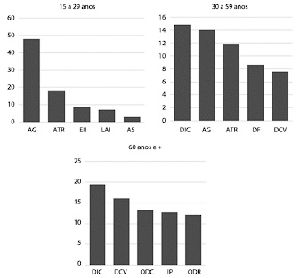
A as agressões e as causas externas de intenção indeterminada são responsáveis por pelo menos 50% dos óbitos ocorridos na faixa etária de 15 a 29 anos.
B na faixa etária dos 60 anos e mais, a mortalidade proporcional por doença isquêmica do coração é menor do que a faixa etária de 30 a 59 anos.
C as doenças respiratórias, na faixa etária de 60 anos e mais, causam mais óbitos do que as doenças do aparelho circulatório.
D atividades educativas visando reduzir o consumo excessivo de bebidas alcoólicas teria menor impacto nos indicadores de mortalidade relativos às faixas etárias de 15 a 59 anos que na faixa etária de 60 anos ou mais.
Questão 815 · Diagnóstico · Quadro Clínico · 4000153192Um paciente masculino, com 62 anos de idade, vem a consulta médica na atenção secundaria ambulatorial, encaminhado por tremor. O paciente conta que há alguns meses teve início com tremor no braço direito e que, agora, parece ter progredido para ambos os braços e ambas as pernas. O paciente diz que o tremor piora quando ele “está nervoso”, mas que parece melhorar quando faz alguma atividade, como cozinhar ou comer. Entretanto, o paciente conta que é difícil para ele levantar-se da posição sentada e começar a andar. Também refere que perde o equilíbrio quando está caminhando e “muda de rota”, e tem di culdade para parar de caminhar, relatando duas quedas no mês anterior à consulta. Com base no que foi apresentado, o diagnóstico desse paciente é
A tremor essencial.
B paralisia supranuclear progressiva.
C doença de Huntington.
D doença de Parkinson.
Questão 816 · Flegmásia Cerúlea Dollens · 4000153191Mulher com 42 anos de idade foi atendida em unidade básica de saúde referindo, há 5 dias, dor na panturrilha direita que se acentuava ao realizar a exão dorsal do pé. A dor piorou há 2 dias, aparecendo inchaço, palidez cutânea e di culdade para deambular. Relatou fazer uso de contraceptivo oral e tabagismo desde os 20 anos de idade. O exame físico evidenciou peso de 72 Kg, 149 cm de altura, edema e palidez desde a raiz da coxa, dor à palpação da panturrilha e pulsos pedioso e tibial posterior palpáveis. Com base nos dados apresentados, assinale a alternativa com a orientação sobre a conduta a ser seguida.
A Solicitar Eco-Doppler colorido venoso de membro inferior.
B Indicar tratamento imediato em hospital terciário.
C Prescrever repouso, analgésicos e heparina ou enoxaparina por via subcutânea.
D Prescrever repouso, anti-inflamatório não hormonal e ácido acetil salicílico 100 mg ao dia.
Questão 817 · Aspectos Clínicos Quadro clínico e Diagnóstico · Pediatria · 4000153190Um menino de 4 anos de idade, previamente hígido e com acompanhamento pediátrico regular, chega ao pronto atendimento com queixa de febre (temperatura axilar superior a 38,5 °C em todos os picos) há 6 dias acompanhada de conjuntivite bilateral não exsudativa. Nega uso prévio de medicações nesses últimos dias, exceto o antitérmico habitual para controle da febre. Nega viagens recentes ou contato com indivíduos sabidamente doentes. Ao exame clínico, observa-se hiperemia de orofaringe sem exsudato ou ulcerações; presença de ressecamento, ssuras e hiperemia em lábios e proeminência das papilas linguais; gânglio cervical anterior a direita com cerca de 1,5 cm de diâmetro não doloroso; edema endurecido em dorso de mãos e pés com eritema palmar e plantar difuso; e presença de exantema polimór co mais intenso em tronco e períneo. Sem outras alterações. Assinale a alternativa que contenha o diagnóstico provável para o caso apresentado e uma complicação associada ao quadro.
A Escarlatina; glomerulonefrite difusa aguda.
B Doença de Kawasaki; aneurisma coronariano.
C Mononucleose; síndrome de Guillain-Barré.
D Sarampo; panencefalite esclerosante subaguda.
Revisar: possível letra faltando em enunciado
Questão 818 · Investigação por imagem · 4000153189Um lactente, de 6 meses de idade, comparece sem queixas ao consultório médico com história de internações devido a infecção urinária alta aos 20 dias e aos 3 meses. Com 5 meses, apresentou quadro de febre intermitente, inapetência e vômitos, com exame qualitativo de urina que apontou nitrito (+), esterase leucocitária (+) e urocultura colhida por sondagem vesical com mais de 100 000 UFC/ml de E. coli, tendo completado o tratamento com antimicrobiano com remissão dos sintomas. Realizado ultrassonogra a durante a última internação que não verificou alterações. Como forma de estender a investigação, assinale a alternativa correta quanto ao exame padrão-ouro para essa situação.
A Cintilografia renal com DMSA.
B Urografia excretora.
C Uretrocistografia miccional.
D Ressonância magnética de abdome.
Questão 819 · Descarga papilar · Amenorreia secundária de causa hipof isária · 4000153188Mulher, 26 anos de idade, usou pílula contraceptiva por 6 anos e interrompeu há cerca de 9 meses. Desde então, menstruou apenas 2 vezes e está há 4 meses em amenorreia. Nega fogachos, acne, hirsutismo ou ressecamento vaginal. Ao exame físico: bom estado geral, hemodinamicamente estável, mamas com galactorreia bilateral, sem nódulos palpáveis. Útero de tamanho normal e anexos não palpáveis. Beta-hCG negativo. Para elucidação diagnóstica, deve-se solicitar dosagem de
A estradiol.
B progesterona.
C prolactina.
D testosterona.
Questão 820 · Rastreamento do Câncer de Próstata · 4000153187Um paciente masculino, 76 anos de idade, vem a consulta com clínica médica por apresentar dúvidas quanto à frequência com que deve realizar seu exame de próstata. O paciente diz ter feito o exame de PSA várias vezes ao longo dos últimos anos. Traz exame de 3 e de 4 anos atrás, com PSA = 0,8 ng/mL e 0,78 ng/mL, respectivamente. Nesse caso, o paciente deve ser recomendado a
A realizar exame de PSA a cada 5 anos.
B não realizar mais exame de PSA.
C realizar exame de toque retal anual.
D realizar ultrassonografia retal com biopsia.
Questão 821 · Tratamento · 4000153186Paciente usuária de dispositivo intrauterino (DIU) de cobre T380A procurou atendimento médico para dores pélvicas de início agudo. Relata dores em pontadas alternadas com cólicas. Relatou disuria e corrimento vaginal sem odor fétido e transparente associado ao aparecimento de dispareunia. Ao exame especular evidenciado secreção cervical mucoide saindo pelo orifício externo do colo uterino. Fio do DIU aparente. Colo fechado. Toque evidenciado colo com sensibilidade dolorosa à mobilização. Toque bimanual evidenciado sensibilidade no anexo esquerdo. Solicitado ultrassom transvaginal evidenciado formação à esquerda espessada e com aspecto tortuoso e irregular sugestivo de hidrossalpinge. O provável agente microbiológico e o tratamento adequado são, respectivamente,
A Clamidia; azitromicina.
B Trichomonas; metronidazol.
C Gardnerella; fluconazol.
D Treponema; penicilina.
Questão 822 · Cisto Tireoglosso · 4000153185Uma criança de 6 anos que procura atendimento na Unidade Local de Saúde do seu bairro por apresentar, há cerca de 30 dias, tumoração cervical na linha média, móvel à deglutição e indolor. A mãe refere que observou um crescimento progressivo da lesão, mas sem nenhum sinal ogístico desde o início do quadro. Referenciada para atendimento em um ambulatório de cirurgia pediátrica, no momento do exame físico, a criança estava hígida sem nenhum outro achado a não ser a tumoração na linha média do pescoço, acima da cartilagem cricoide, arredondada, móvel e de consistência fibroelástica. Qual o diagnóstico e conduta a serem adotados a seguir?
A Higroma cístico cervical ou linfangioma. Deve ser tratado com aspiração e injeção de bleomicina ou OK 432 na lesão.
B Câncer primário de tireoide. Encaminhamento ao oncologista para mapeamento com medicina nuclear
C Cisto do conduto tireoglosso. Ressecção cirúrgica englobando parte do osso hióde, que evita a recidiva da doença.
D Cisto do 3.° arco branquial. Ressecção cirúrgica incluindo a secção do ramo clavicuar do músculo esternocleidomastoídeo.
Questão 823 · Sangramento primeira metade · 4000153184Mulher, 24 anos de idade, era usuária de dispositivo intrauterino (DIU) e retirou na vigência de episódio de doença inflamatória pélvica. Apresentando atraso menstrual e episódios de sangramento vaginal de pequena intensidade. Nega dor abdominal ou outras queixas. Beta-hCG positivo. Ultrassonogra a transvaginal mostra ausência de saco gestacional intrauterino e presença de imagem complexa em região anexial direita, sem líquido livre na cavidade peritoneal. Nessa situação, está justificado manter conduta expectante se
A os níveis de beta-hCG dobrarem após 48 horas.
B o diâmetro da massa anexial for maior que 3,0 cm.
C não forem detectados batimentos cardiofetais na avaliação ecográfica.
D os níveis de progesterona continuarem elevados.
Questão 824 · Agentes usados para tratamento de inf ecções do trato urinário · 4000153183Um homem de 52 anos de idade procura atendimento médico em nível ambulatorial após 7 dias de uma internação hospitalar de 72 horas para correção de uma hérnia inguinal, na qual permaneceu 24 horas com sonda vesical de demora. O paciente encontra-se em bom estado de saúde, queixando-se de leve dor no local da cirurgia e de disúria, iniciada há 3 dias, além de polaciúria. Ao exame, a ferida operatória encontra-se limpa e apresenta dor à palpação profunda do hipogástrio. No mais, o exame físico é completamente normal. Possui comorbidades, pois é diabético e portador de epilepsia em uso de topiramato para essa última condição. O médico assistente solicitou uma urocultura, cujo resultado segue abaixo. Nesse caso, a conduta do médico deve ser
A prescrever um sintomático como a fenazopiridina.
B internar o paciente para administração de cefoxitina.
C internar o paciente para administração de imipenem.
D prescrever, ambulatorialmente, sulfametoxazol/trimetoprim.
Questão 825 · Fatores de Risco · 4000153182Paciente 65 anos, masculino, apresentando alteração do hábito intestinal. Como história familiar, apresenta pai falecido de câncer de próstata aos 70 anos, mãe falecida de câncer de colo de útero aos 80 anos, avô paterno e primo por parte de mãe falecidos por câncer de cólon com 60 e 50 anos respectivamente. Realizou colonoscopia que evidenciou lesão estenosante na junção reto-sigmoidiana, 3 pólipos em reto e 5 pólipos em sigmoide. O resultado histopatológico da lesão estenosante foi adenocarcinoma de cólon moderadamente diferenciado. Quanto aos pólipos, todos eram de natureza adenomatosa, sendo 5 tubulares e 2 túbulo-vilosos (ambos no reto). Em qual das situações abaixo, levando em conta a história familiar e o diagnóstico, esse paciente melhor se enquadra?
A Câncer colorretal hereditário não polipoide (Síndrome de Lynch).
B Síndrome de Polipose Recessiva.
C Polipose adenomatosa familiar.
D Câncer colorretal esporádico.
Questão 826 · Saúde do Idoso geriatria · Exame f ísico e Avaliação Funcional do Idoso · 4000153181Em reunião de equipe da Estratégia de Saúde da Família, o médico expõe sua preocupação com o aumento no número de atendimentos de cuidadores de idosos, em virtude de problemas de saúde decorrentes de estresse físico e emocional. Sugere que seja realizada intervenção de apoio e suporte aos cuidadores e para isso propõe aplicar escala que tem por objetivo “avaliar a sobrecarga dos cuidadores de idosos”. Trata-se da
A Escala de Zarit.
B Escala de Barthel.
C Escala de Desempenho de Karnofsky.
D Escala de Avaliação Multidimensional do Idoso.
Questão 827 · Tratamento · Manif estações clínicas · Pediatria · 4000153180Uma criança com 7 anos de idade, moradora de zona rural, relata acidente por animal desconhecido há 4 horas. No momento, refere formigamento no local da picada, boca seca, diplopia, di culdade de deglutição, dores musculares generalizadas, oligúria e urina com coloração vermelha escura. Ao exame físico, apresenta ptose palpebral bilateral e midríase. O resultado do exame de urina rotina evidenciou mioglobinúria. Exames de sangue ainda em processamento. Com base nesses dados, qual a soroterapia especí ca indicada ao quadro?
A Soro anti-botrópico.
B Soro anti-escorpiônico.
C Soro anti-crotálico.
D Soro anti-elapídico.
Revisar: possível letra faltando em enunciado
Questão 828 · Manif estações clínicas · Formas de transmissão · 4000153179Um homem de 23 anos de idade, membro de um grupo de usuário de drogas ilícitas injetáveis, comparece à consulta no ambulatório de clínica médica com relato de "olhos amarelos e urina cor de mate". Segundo informa, seu quadro clínico iniciou-se há cerca de 12 dias com mal-estar, febre (cerca de 38 °C), coriza e mialgias. Dois dias após, observou disgeusia e anosmia, além de diarreia. Procurou unidade de pronto atendimento, sendo agendada pesquisa para COVID-19, que foi realizada no 5.°dia de evolução da doença, com resultado negativo. Passou a apresentar, também, dor abdominal (especialmente no hipocôndrio direito) e fadiga vespertina. Há 2 dias, observou que suas escleras caram amareladas e a sua urina assumiu aspecto sugestivo de colúria. Foi à mesma unidade onde havia sido atendido inicialmente, sendo solicitados exames complementares que são trazidos pelo paciente à consulta atual e que revelam: TGO/AST = 982 UI/L (valor de referência: 20 a 40 UI/L); ALT/TGP: 1 220 UI/L (valor de referência: 20 a 40 UI/L); bilirrubinas totais = 4,2 mg/dL (valor de referência: 0,2 a 0,8 mg/dL), com predomínio da fração direta (3,6 mg/dL - valor de referência: 0,1 a 0,5 mg/dL); hemograma com leucopenia e linfocitose, sem anemia; INR e tempo de tromboplastina parcial ativada normais. Em razão desses resultados, o paciente foi encaminhado ao ambulatório para complementação da investigação diagnóstica, tratamento e acompanhamento. Ao exame físico, o paciente encontra-se em razoável estado geral, estando com as escleras e a mucosa sublingual ictéricas, além de apresentar leve hepatomegalia (13 cm de extensão ao nível da linha hemiclavicular direita) dolorosa, com sinal de Murphy negativo. Acerca do caso desse paciente, pode-se a rmar que o diagnóstico mais provável e a lógica subjacente a tal conclusão são
A hepatite viral pelo vírus da hepatite C, por ser a causa mais comum de hepatite viral de apresentação aguda.
B hepatite autoimune do tipo 1, em função do gênero do paciente (sexo masculino) e do nível de transaminases.
C hepatite viral aguda pelo vírus da hepatite B, em razão do paciente ser usuário de drogas ilícitas injetáveis.
D leptospirose íctero-hemorrágica, em razão do leucograma e níveis séricos das aminotransferases.
Questão 829 · Tratamento · 4000153178Um paciente do sexo masculino, de 3 anos de idade, é levado a serviço de emergência em decorrência de febre e exantema há 7 dias. Mãe relata que a febre é diária e chegou a 39 °C. O exantema surgiu há 2 dias. O paciente já passou por outros serviços de emergência sem conseguir fechar diagnóstico. Nega doenças prévias. Desenvolvimento normal para a idade. Ao exame, mostra-se em regular estado geral, descorado 1+/4+, febril (38,5 °C), acianótico e hidratado. Presença de exantema maculopapular e edema e hiperemia nas mãos e pés, rash em tronco e períneo, bem como de hiperemia conjuntival bilateral. Cavidade oral revela ssuras em lábios. Há linfonodomegalia cervical, unilateral direita, com 2 cm de diâmetro. Aparelho cardiovascular, respiratório e abdome sem anormalidades. Considerando a história acima descrita, assinale a alternativa que contém o tratamento indicado.
A Imunoglobulina venosa.
B Anti-inflamatório não esteroidal.
C Antibioticoterapia.
D Plasmaférese.
Questão 830 · Exames complementares · 4000153177Mulher, 51 anos, de menopausa há 3 anos, com queixa de sangramento uterino recorrente, em pequena quantidade, há 3 meses. Na maioria das vezes, os episódios de sangramento iniciam durante ou após as relações sexuais. A paciente é diabética e faz uso de insulina. Traz dois resultados normais de exames citopatológicos do colo uterino realizados nos últimos 2 anos, sendo o último há 9 meses. Exame físico: estado geral bom, hemodinamicamente estável, normocorada. Ao exame especular, visualiza-se lesão de aspecto polipoide de aproximadamente 2 cm se exteriorizando pelo orifício externo do colo uterino, não sendo possível visualizar a lesão em toda sua extensão. A conduta indicada é
A solicitar histeroscopia diagnóstica.
B realizar exérese imediata da lesão com pinça.
C realizar eletrocauterização da lesão.
D iniciar tratamento com solução de ácido tricloroacético.
Questão 831 · Epidemiologia e Fatores de Risco · Tratamento Cirúrgico · 4000153176Uma mulher com 61 anos de idade, acompanhada pela lha, foi atendida em ambulatório de hospital secundário referindo ter apresentado dor no hipocôndrio direito e vômitos por 3 dias, há 30 dias. Relatava fazer uso de metformina 500 mg, 2 vezes por dia e atenolol 50 mg por dia. Trouxe ultrassonogra a que descrevia vesícula biliar com paredes discretamente espessadas e presença de colelitíase. Os exames laboratoriais evidenciaram glicemia de 120 mg/dL (referência: 75 a 99), creatinina 0,99 mg/dL (referência: 0,6 a 1,1), leucócitos 6 200/mm3 (referência: 3 500 a 10 500), não apresentava alteração na contagem diferencial dos leucócitos. Ao exame físico, o abdome estava ácido, não relatava dor à palpação, PA = 140/80 mmHg, temperatura axilar = 36,5 °C. Com base nos dados apresentados, qual alternativa apresenta a orientação correta à paciente e à lha sobre a conduta a ser seguida?
A Indicar tratamento operatório se apresentar dor novamente.
B Tratar as doenças clínicas e realizar controle com ultrassonografia anual.
C Encaminhar ao pronto-socorro para tratamento operatório.
D Compensar melhor a glicemia e indicar tratamento operatório eletivo.
Questão 832 · Ortopedia · Fraturas e luxações do escaf oide e do carpo · 4000153175Mulher de 40 anos, relata queda da própria altura, após tropeçar na calçada, e cair para frente com as mãos espalmadas, com hiperextensão do punho. No momento se queixa de dor em região dorsal e radial do punho. Ao exame, presença de leve edema próximo ao processo estiloide do rádio, sem deformidade evidente do punho. Refere dor a palpação do punho, pouco abaixo da prega palmar, na direção do eixo longo do polegar, e na tabaqueira anatômica. Dentre as alternativas abaixo, qual é a hipótese diagnóstica?
A Fratura de escafoide.
B Fratura de Colles.
C Fratura de Barton.
D Fratura de Smith.
Questão 833 · Apendicite Aguda Complicada · Pósoperatório · 4000153174Um homem com 42 anos de idade foi operado em hospital secundário com quadro de apendicite aguda com necrose e abscesso em apêndice retrocecal (Fase III), sendo realizada apendicectomia e drenagem do abscesso por incisão mediana infraumbilical. No terceiro dia de pós-operatório começou a apresentar picos diários de aumento da temperatura axilar (38,5 °C) apesar dos antibióticos prescritos (ceftriaxona e metronidazol). A incisão encontrava-se com bom aspecto, foram encontrados 15 200 leucócitos/mm3 (referência: 3 500 a 10 500) e alteração na contagem diferencial dos leucócitos, com 5% de bastonetes no sangue periférico (referência: 0 a 2%). A proteína C reativa era de 15 mg/L (referência: menor que 3). Relatava dor ao tentar etir a coxa direita e o examinador exercia discreta pressão contrária ao movimento, a ausculta pulmonar era normal e os ruídos hidroaéreos estavam presentes. Com base nos dados apresentados, qual é a alternativa correta sobre a conduta?
A Solicitar radiografia do abdome em pé e deitado.
B Substituir os antibióticos prescritos.
C Manter os antibióticos prescritos e avaliar novos exames após 24 horas.
D Solicitar tomografia computadorizada do abdome.
Questão 834 · Diagnóstico endoscópico · 4000153173Um homem com 58 anos de idade foi atendido em ambulatório de hospital secundário. Relatava sangramento e muco nas fezes, referia também alteração do hábito intestinal, com aumento do número de evacuações há 5 meses. O exame físico geral não apresentava particularidades e o toque retal evidenciou tumoração na parede posterior do reto, aproximadamente 7 cm acima da borda anal. Com base nos dados apresentados, a alternativa correta sobre o exame necessário para definir a conduta a ser seguida é
A ultrassonografia endorretal.
B ressonância nuclear magnética endorretal.
C enema baritado com duplo contraste.
D colonoscopia com biópsia.
Questão 835 · Determinação Social da SaúdeDeterminantes Sociais da Saúde DSS · 4000153172Uma equipe de saúde da família atua em uma unidade básica de saúde situada na zona periférica de uma cidade com mais de 800 000 habitantes. No último mês, foi evidenciado aumento no número de casos de diarreia entre crianças de 2 a 5 anos que frequentam a creche pública de um bairro. A equipe de saúde da família desse local analisa que, no último ano, têm sido recorrentes os casos de diarreia entre crianças da área, inclusive, em alguns casos, com necessidade de internação hospitalar. Dentre os casos, observam que eles se concentram naquelas famílias que não são da área de cobertura da equipe de saúde da família. No bairro onde se localiza a creche, 20% dos domicílios possuem abastecimento de água tratada, 10% com esgoto sanitário, sem coleta regular de lixo nos domicílios, sendo os esgotos e lixos acumulados das casas ou jogados no córrego, a céu aberto, que corta o bairro. Em relação à situação acima descrita, assinale a alternativa correta em relação ao processo saúde-doença e os determinantes de saúde envolvidos no caso.
A O aumento no número de casos de diarreia na creche tem como principal fator a virulência da bactéria e, por se tratar de um caso recorrente, a equipe de saúde da família poderia atuar com medidas medicamentosas profiláticas direcionadas ao agente etiológico.
B A educação em saúde na creche, com os profissionais da educação e com a comunidade, teria papel importante na melhoria das condições sanitárias da comunidade; é uma estratégia suficiente para o combate de surtos.
C A falta de acesso aos serviços de saúde e de acompanhamento regular com a equipe de saúde da família é um fator associado ao desfecho desfavorável dos casos, com aumento de quadros graves de diarreia com necessidade de internação hospitalar.
D A adoção de medidas como uso de hipoclorito na água e de filtros nos bebedores escolares é a principal medida para combate à transmissão dos agentes etiológicos que cursam com quadros de diarreia, diminuindo assim a incidência de casos na creche.
Questão 836 · Programa Nacional de Imunizações · Pediatria · Calendário inf antil · 4000153171Lactente, com 6 meses de idade, está sendo atendido na Estratégia da Saúde para puericultura. A médica identi ca o registro no cartão apenas da vacina In uenza, que foi feita na rede particular de imunização. As demais vacinas a serem administradas até o 5.° mês estavam todas registradas na caderneta. Nesse caso, quais são as vacinas recomendadas para a idade conforme o Programa Nacional de Imunização?
A Pentavalente (DTP+Hib+Hep B) e Vip (vacina inativada para poliomielite).
B Pentavalente (DTP+Hib+Hep B) e Pneumococia 10.
C Pentavalente (DTP+Hib+Hep B), Pneumococia 10 e Rotavírus.
D Pentavalente (DTP+Hib+Hep B), VIP (Vacina inativada para poliomieiete) e Pneumocócica 10.
Revisar: possível letra faltando em enunciado
Questão 837 · Tratamento do hipotireoidismo subclínico · 4000153170Uma mulher de 30 anos de idade vem a consulta com o endocrinologista para acompanhamento de hipotireoidismo. Há 6 meses ela procurou o médico da Unidade Básica de Saúde próxima a sua residência devido à constipação (evacuava a cada 3 dias, com fezes ressecadas e com dor ao evacuar). A paciente era sedentária e apresentava erros alimentares evidentes, com baixa ingesta de água durante o dia e pouco consumo de frutas e verduras. O médico orientou ajustes na alimentação, ingesta hídrica e necessidade de atividade física regular, assim como dosagem de TSH e T4 livre. Após 2 meses a paciente retornou, tendo aderido às recomendações, resultando na solução do quadro de constipação (evacuava diariamente, sem dor, com fezes bem formadas), contudo, os exames laboratoriais demonstraram: TSH = 5,5 mUI/mL (valor de referência: 0,4 a 4,5 mUI/L) e T4 livre = 1,0 (valor de referência: 0,7 a 1,8 ng/dL). O médico repetiu os exames, que indicaram: TSH = 5,3 mUI/L (valor de referência: 0,4 a 4,5 mUI/mL) e T4 livre = 1,1 (valor de referência: 0,7 a 1,8 ng/dL). Diante da persistência dos exames alterados, o médico prescreveu levotiroxina 50 mcg/dia e encaminhou ao especialista. Durante a consulta com o endocrinologista, a paciente está assintomática, com tireoide não palpável e índice de massa corpórea de 22 kg/m2, contudo, não havia iniciado a levotiroxina, pois possuía receio de possíveis efeitos adversos. Considerando o que foi apresentado, o endocrinologista deve
A Insistir com o uso da levotiroxina, pois trata-se de um caso de hipotireoidismo primário
B Insistir com o uso da levotiroxina, pois trata-se de um caso de hipotireoidismo secundário.
C orientar não usar a levotiroxina, pois trata-se de um caso de hipotireoidismo subclínico.
D iniciar a levotiroxina apenas após realizar cintilografia, para confirmação do diagnóstico.
Questão 838 · Tratamento Cirúrgico · Hipertensão Intracraniana · Cirurgia · 4000153169Paciente de 40 anos, sexo masculino, cerca de 70 Kg, levado ao serviço de Urgência e Emergência por equipe dos Bombeiros, com relato de ter sofrido queda da laje de sua casa (cerca de 3 metros de altura) há 30 minutos. Familiar que o acompanhava relata que o paciente não possui comorbidades e não faz uso de medicações. À admissão, o paciente apresentava frequência cardíaca = 90 bpm, pressão arterial = 120 x 80 mmHg, saturação de oxigênio = 100% com oxigênio suplementar sob máscara. Conversava e respondia às perguntas do médico sem di culdades e com frases ordenadas, mobilizava os 4 membros espontaneamente e havia abertura ocular espontânea. O paciente relata que se lembra da queda e que “bateu a cabeça no chão”. Realizou avaliação primária e secundária adequadas. Havia discreta equimose retroauricular e ferida corto-contusa de 3 cm, super cial, em região parietal direita. Exame físico do tórax e abdome sem alterações. Na avaliação secundária foi realizada tomografia computadorizada (TC) de crânio, pescoço, tórax e abdome. TC crânio sem contraste: discreto hematoma extradural à direita. TC pescoço, incluindo coluna cervical, com contraste venoso: sem alterações. TC de tórax e abdome com contraste venoso: sem alterações. Cerca de 2 horas após o exame de tomogra a, o paciente apresentava-se com abertura ocular apenas ao estímulo doloroso e fala com palavras inapropriadas. Apresentou dois episódios de vômitos, FC = 62 bpm; PA = 180 x 110 mmHg. Pupila direita em midríase e hemiparesia esquerda. Foi realizada novamente a avaliação primária, sem outras alterações além das descritas. Com os dados apresentados, assinale a alternativa que contenha o diagnóstico, raciocínio e conduta corretos.
A O paciente apresentava, à admissão, trauma cranioencefálico moderado. Após as tomografias, evoluiu com choque hipovolêmico. Devem ser repetidos os exames de tomografia para estabelecer local da hemorragia.
B O paciente apresentava, pelo resultado das tomografias, trauma cranioencefálico moderado. Após as tomografias, evoluiu com choque neurogênico. Deve ser realizado FAST (ultrassonografia abdominal focada para o trauma) imediatamente para decidir sobre a necessidade de laparotomia exploradora.
C O paciente apresentava, à admissão, trauma cranioencefálico leve. Após as tomografias, evoluiu com hipertensão intracraniana e herniação do úncus. Deve ser realizada avaliação neurocirúrgica imediata para descompressão intracraniana.
D O paciente apresentava, à admissão, trauma cranioencefálico leve. Após tomografias, evoluiu com choque de origem indeterminada. Deve ser realizada nova tomografia do crânio para avaliar possível alteração do hematoma visualizado inicialmente.
Questão 839 · Atributos gerais da Atenção Primária à Saúde APS · 4000153168Uma paciente, de 66 anos de idade, vem em consulta com médico de família e comunidade de uma equipe de Saúde da Família Fluvial, referindo estar preocupada com o controle de seu diabetes mellitus. Como a equipe cou um longo período sem visitar a comunidade devido a condições climáticas desfavoráveis, a paciente refere ter associado o uso de algumas plantas medicinais aos medicamentos prescritos em última consulta. Ela informa que a curandeira da comunidade orientou quais chás ela deveria tomar. O médico, então, identi ca que essas plantas medicinais não interagem com os medicamentos prescritos, nem pioram o diabetes ou causam risco à saúde; concorda com seu uso, reforçando a prescrição realizada por ele e solicita exames para a avaliação do controle do diabetes. Diante do que foi apresentado, qual atributo da atenção primária é apresentado no caso?
A Longitudinalidade.
B Integralidade.
C Competência cultural.
D Orientação para a comunidade.
Revisar: possível letra faltando em enunciado
Questão 840 · Pediatria · Tratamento Medicamentoso · 4000153167Um paciente, 2 anos, sexo masculino, chega ao pronto atendimento de um hospital público com relato de ter iniciado há 5 dias coriza serosa e tosse seca irritativa. Evoluiu hoje com febre elevada, secreção nasal mais espessa e tosse produtiva e com boa aceitação alimentar. Ao exame físico do aparelho respiratório, evidenciou-se saturação 96%, FR = 50 irpm, murmúrio vesicular diminuído em base do hemitórax direito, frêmito toracovocal com maciez e crepitações grosseiras audíveis no mesmo local. Encontrava-se hidratado, tolerando os medicamentos por via oral. Foi testado para a COVID-19 no dia anterior, cujo resultado foi negativo. A terapêutica antibiótica a ser instituída nesse caso é
A amoxicilina.
B azitromicina.
C claritromicina.
D ceftrixona.
Questão 841 · Relação com pacientes e f amiliares · Relação MédicoPaciente · Método Clínico Centrado na Pessoa · 4000153166Paciente masculino, 50 anos, notou aparecimento de nódulo endurecido em fossa supraclavicular esquerda. Foi realizada biópsia que evidenciou linfonodo metastático de adenocarcinoma de provável origem gastrointestinal. Realizou endoscopia digestiva alta que mostrou lesão gástrica compatível com linite plástica. A biópsia teve como resultado histopatológico adenocarcinoma gástrico pouco diferenciado. Os familiares agendaram consulta com o cirurgião, informando ao a ele que o paciente não tem conhecimento dos resultados desses exames. Como o cirurgião deve abordar o paciente e/ou seus familiares?
A Manter apenas os familiares informados sobre o diagnóstico, pois, tais informações, além de não mudarem o prognóstico do paciente, podem desencadear quadro depressivo em um momento no qual ele deverá se manter otimista para lidar com sua doença. É conhecido o fato de que pacientes deprimidos têm menor sobrevida relacionada ao câncer.
B Preparar o local e o momento adequados, perguntar ao paciente o que ele sabe e/ou percebe acerca de sua condição atual, perguntar ao paciente se ele deseja saber sobre o diagnóstico ou se prefere que seja comunicado a sua família em um primeiro momento. Caso deseje saber, o médico deve informar e acolher as reações do paciente.
C Informar que, pelo fato de o paciente já possuir metástase à distância, nada pode ser feito do ponto de vista terapêutico. Informar que o paciente tem, baseado em dados estatísticos, cerca de 6 meses de vida. Tal informação é de suma importância para que o paciente possa tomar medidas legais acerca de seu falecimento.
D Dizer inicialmente para o paciente que existem chances reais de cura no intuito de o manter engajado e otimista. Revelar ao paciente sobre seu prognóstico somente quando este vier apresentar sinais e/ou sintomas relacionados ao estágio avançado da doença. Quanto maior o período sem o paciente saber de sua doença, menor será o sofrimento.
Questão 842 · Tratamento geral da crise hipertensiva · 4000153165Tratamento da emergência hipertensiva em situações especiais Uma mulher de 48 anos de idade é trazida por familiares à unidade de emergência de hospital de alta complexidade com quadro de confusão mental, cefaleia e amaurose bilateral. Segundo familiares, a paciente é portadora de hipertensão arterial sistêmica há 2 anos, vindo em investigação diagnóstica por ser classificada como hipertensão arterial resistente. Nas últimas 2 semanas, a paciente passou a não tomar seus fármacos anti-hipertensivos, em razão de acreditar que o tratamento não estava mais funcionando. Na véspera, a paciente começou a se queixar de cefaleia holocraniana, pouco responsiva a fármacos, além de turvação visual. No dia de hoje, a paciente tornou-se um pouco confusa e começou a se queixar de que não estava conseguindo enxergar nada, razão porque foi trazida, às pressas, à unidade de emergência. Ao exame físico, a paciente mostra-se confusa, sonolenta, atendendo com di culdade a algumas solicitações verbais. Sua pressão arterial (PA) encontra-se em 240 x 160 mmHg em ambos os membros superiores, enquanto a frequência cardíaca é de 96 bpm. Um sopro é auscultado no anco direito de seu abdome. Iniciado tratamento anti-hipertensivo intravenoso, a paciente é submetida a uma tomogra a computadorizada de crânio em que foram detectadas áreas hipodensas em regiões occipitais. A paciente é, então, encaminhada para realização de uma ressonância magnética de encéfalo que, na imagem pesada em T2, revela a presença de hiperintensidade de sinal nos lobos occipitais, sem limites muito bem definidos. Instituído o tratamento indicado, a paciente evolui com regressão completa dos déficits neurológicos previamente descritos. Acerca do tratamento da paciente em questão, pode-se afirmar que
A o alvo terapêutico no caso seria a normalização da pressão arterial em, no máximo, 2 horas.
B após compensação clínica, seria fundamental ressecar o tumor adrenal secretor presente à direita.
C nicardipina e labetalol por via intravenosa seriam excelentes escolhas farmacológicas para a redução da PA da paciente.
D em razão da presença de trombose da artéria basilar, deveria ser adicionada anticoagulação plena com heparina de baixo peso molecular.
Questão 843 · Princípios e Diretrizes do Sistema Único de Saúde SUS · 4000153164Princípios e Diretrizes do SUS a serem operacionalizados pela Atenção Básica Política Nacional de Atenção Básica PNAB Promulgada em 2017, a Política Nacional da Atenção Básica (PNAB) estabelece que a Territorialização e Adstrição da Clientela permitem o planejamento, a programação descentralizada e o desenvolvimento de ações setoriais e intersetoriais com foco em um território específico. A organização da Estratégia da Saúde da Família está baseada no preceito de responsabilidade sanitária sobre a população do território definido. Nesse sentido, é correto afirmar que
A a atualização dos dados de condições socioeconômicas das famílias é feita no sistema de informação de agravos de notificação, de forma contínua, e sob responsabilidade dos ACS.
B a delimitação da população adscrita da equipe, processo realizado por todos os membros da equipe, obedece estritamente aos limites geográficos e administrativos dos bairros de grandes cidades.
C o processo de territorialização finaliza com o cadastramento das famílias da área e é uma atribuição dos agentes comunitários.
D a territorialização tem início com a definição do território, área e microárea, seguida pelo cadastramento de famílias, que é uma responsabilidade de toda a equipe.
Questão 844 · Ortopedia · Osteossarcoma · Diagnóstico Radiográf ico · 4000153163Um adolescente de 14 anos, do sexo masculino, procura serviço médico com história de dor em joelho direito há 2 meses, com piora nos últimos dias, sem fatores de melhora. Refere queda acidental durante um jogo de futebol com os amigos, cerca de uma semana antes do início das queixas. Ao exame físico, evidenciou-se edema discreto em joelho direito, calor local, dor a palpação de região distal do fêmur, sem hiperemia. A radiogra a de joelho apresenta imagem lítica em região distal do fêmur e na região proximal da tíbia, lesão em cortical com reação periosteal tipo "raios de sol" e triângulo de Codman. Considerando o caso clínico apresentado, assinale a alternativa que contém o diagnóstico mais provável.
A Osteossarcoma.
B Artrite séptica.
C Sarcoma de Ewing.
D Artrite reumatoide juvenil.
Questão 845 · Tratamento · Diagnóstico · 4000153162Uma paciente de 32 anos de idade vem ao retorno em seu médico de família para checar resultados de sorologias solicitadas na consulta anterior. A paciente refere 2 gestações prévias, e nega atividade sexual há mais de 1 ano, após seu divórcio. Ao checar os exames, o médico identi ca o VDRL positivo à diluição de 1:2 (valor de referência: negativo) e o TPHA reagente (valor de referência: não reagente), HBsAg negativo, anti- HBc negativo, anti-HCV negativo e anti-HIV negativo. Ao exame físico, ela não apresenta nenhuma lesão genital ou extragenital. Ela a rma que realizou tratamento com penicilina na última gestação há 4 anos (relata 2 injeções em cada nádega, em 3 aplicações). O médico checa o prontuário da paciente e identi ca o registro da aplicação de 3 doses de penicilina benzatina (2 400 000 UI a cada dose) durante o último pré- natal. Diante do que foi exposto, qual a conduta correta?
A Tratar a paciente com penicilina benzatina 2 400 000 UI, 1 vez por semana, por 3 semanas.
B Considerar como cicatriz sorológica devido à comprovação do tratamento prévio com penicilina.
C Solicitar um novo teste rápido para confirmar caso de sífilis.
D Tratar a paciente com penicilina benzatina 2 400 000 UI em dose única.
Revisar: possível letra faltando em enunciado
Questão 846 · Neoplasias do Pâncreas · Cirurgia · 4000153161Paciente de 60 anos de idade, masculino, procura hospital de atenção secundária com história de “olhos amarelados” há cerca de 4 semanas. Refere “desconforto” discreto em epigástrio e hipocôndrio direito. Nega febre. Ao exame físico, paciente emagrecido, ictérico, 4+/4+, eupneico, normocorado. Abdome plano, flácido, depressível, com vesícula biliar palpável, indolor, sinal de Murphy negativo. Com base nessas informações, qual a hipótese diagnóstica para o caso clínico descrito?
A Pancreatite aguda.
B Colangite.
C Abscesso hepático.
D Neoplasia de cabeça de pâncreas.
Questão 847 · Manejo da exacerbação · 4000153160Uma paciente, de 42 anos de idade, com história de asma, vem ao serviço de emergência por “piora da falta de ar”. Ela refere ter feito salbutamol inalatório em casa, sem melhora. Refere, ainda, que estava fazendo tratamento com beclometasona inalatório em casa, mas parou porque estava se sentindo bem. Sua última exacerbação da asma havia sido há 6 meses. Antes de iniciar com a beclometasona, a paciente apresentava “uma a duas crises por semana”. Ao exame, apresenta bom estado geral, consegue completar frases, mas prefere permanecer sentada. Sua frequência respiratória é de 22 irpm. Frequência cardíaca = 102 bpm. Saturação de oxigênio periférica = 95%. Expansibilidade torácica preservada, sem uso de musculatura acessória e presença de sibilos expiratórios na ausculta pulmonar. Diante desse quadro, a paciente deve
A ser liberada do serviço de emergência com prescrição de salbutamol inalatório a cada 6 horas e com beclometasona inalatória, reavaliar na unidade básica.
B receber 4 jatos de salbutamol inalatório a cada 20 minutos e 40 mg de prednisona via oral, reavaliar após 1 hora.
C receber 4 jatos de salbutamol inalatório a cada 2 horas e 500 mg de hidrocortisona endovenosa, reavaliar após 24 horas.
D ser liberada do serviço de emergência com prescrição de salbutamol inalatório a cada 4 horas e com prednisona 40 mg oral, reavaliar na unidade básica.
Questão 848 · Atenção Primária à Saúde APS no Brasil · 4000153159Um paciente de 36 anos de idade, masculino, procura a Unidade de Saúde da Família com queixa de dor lombar baixa, há 10 dias, irradiada para face posterior da coxa, de moderada intensidade, mas que tem interferido no seu trabalho. Refere que a dor teve início após ter carregado peso durante a mudança de casa. O paciente relata que já apresentou episódios semelhantes anteriormente e que têm se tornado mais frequentes. Ao exame físico, o médico identi ca uma banda muscular tensa em região glútea, com a presença de pontos-gatilho, que, quando pressionados, reproduziam a dor referida pelo paciente. Diante da situação apresentada, é correto afirmar que
A o paciente deve ser referenciado ao ortopedista para a avaliação cirúrgica de uma provável hérnia de disco.
B o paciente deve ser referenciado ao acupunturista do NASF para ser avaliado, acompanhado e tratado.
C o médico de família pode, em conjunto com o acupunturista do NASF, elaborar um plano terapêutico para o paciente.
D o médico de família deve prescrever relaxantes musculares, pois o agulhamento seco deve ser realizado pelo acupunturista do NASF.
Revisar: possível letra faltando em enunciado
Questão 849 · Amenorreia primária de causa uterinavaginal · 4000153158Adolescente, 16 anos de idade, com amenorreia primária, sem outras queixas. Ao exame físico foi constatada ausência de canal vaginal. Ultrassonogra a pélvica mostrou ausência de útero. Cariótipo 46XX. Qual dos seguintes achados é esperado encontrar nessa paciente?
A Mamas normodesenvolvidas.
B Ausência de ovários.
C Gônadas em fita.
D Hipertrofia clitoridiana.
Questão 850 · Cerume · 4000153157Paciente de 68 anos de idade, do sexo masculino, hipertenso, vem em consulta devido à queixa de diminuição da acuidade auditiva e sensação de plenitude auditiva à direita. Paciente nega história de perfuração timpânica ou de cirurgia otológica. Ao realizar a otoscopia, o médico de família visualiza a membrana timpânica translúcida à esquerda e identi ca uma rolha de cerume no conduto auditivo direito, impedindo a visualização da membrana timpânica. O médico orienta o uso de emolientes para remoção do cerume e retorno em 5 dias. No retorno, a rolha de cerume ainda obstrui o conduto auditivo direito completamente. Como deverá ser feita a remoção do cerume por irrigação?
A O soro fisiológico para irrigação deve estar em temperatura ambiente, o
B O soro fisiológico para irrigação deve estar aquecido, o
C O soro fisiológico para irrigação deve estar aquecido, o
D O soro fisiológico para irrigação deve estar aquecido, o
Revisar: possível letra faltando em enunciado
Questão 851 · Tratamento · Obstetrícia · 4000153156Paciente teve parto cesárea há 8 dias e retorna à maternidade com queixa de febre alta há 2 dias, acompanhada de calafrios nas últimas horas. Refere ainda dor intensa em andar inferior do abdome. A loquiação está escassa, mas apresenta odor fétido. Ao exame: regular estado geral, temperatura 39° C, PA = 100 x 60 mmHg, FC = 120 bpm, útero no nível da cicatriz umbilical, amolecido e doloroso à palpação. Cicatriz de cesariana seca e limpa. Mamas lactantes, com sinais de ingurgitamento mamário e ssura mamilar à esquerda, mas sem evidência de mastite ou abscesso mamário. Ultrassonogra a não evidenciou sinais ecográ cos de conteúdo anormal na cavidade uterina ou na cavidade abdominal. Hemograma com leucocitose e desvio à esquerda. A conduta indicada para esse caso é
A suspender amamentação e iniciar antibioticoterapia com clindamicina por via oral, em nível ambulatorial.
B manter amamentação e iniciar antibioticoterapia com clindamicina por via oral, em nível ambulatorial.
C suspender a amamentação e internar a paciente para curetagem uterina de urgência e antibioticoterapia intravenosa com clindamicina e gentamicina.
D manter a amamentação e iniciar antibioticoterapia intravenosa com clindamicina e gentamicina.
Revisar: possível letra faltando em enunciado
Questão 852 · Tuberculose · 4000153155Um homem, de 37 anos de idade, com AIDS/HIV diagnosticada há 3 anos, compareceu à consulta com o médico da UBS próxima de sua casa, trazendo resultados de exames solicitados na consulta anterior. O teste rápido molecular para tuberculose feito no escarro confirmou o diagnóstico de tuberculose pulmonar e sensibilidade à rifampicina. A carga viral para HIV apresentou resultado de 98 000 cópias por mililitro. Nessa situação, o médico deverá
A avaliar eventual resistência do HIV aos antirretrovirais em uso para depois desse resultado iniciar o tratamento da tuberculose.
B avaliar eventual resistência do HIV aos antirretrovirais em uso, sem atrasar início do tratamento da tuberculose.
C avaliar eventual resistência aos antirretrovirais não é necessário, pois a carga viral está abaixo de 100 000 cópias.
D avaliar eventual resistência do HIV através da quantificação de linfócitos CD4.
Questão 853 · Síndrome do Bebê Chacoalhado · 4000153154Um recém-nascido com 20 dias de vida dá entrada em serviço médico de urgência com história referida de queda da cama após ter rolado para fora dela há 6 horas. Pais referem hipoatividade desde então. Ao exame, está em regular estado geral e apresenta hematoma subgaleal em região parietal. A fundoscopia evidencia hemorragia retiniana bilateral e a tomogra a de crânio apresenta hemorragia subaracnóidea, sem sinais de fratura. Com base nos dados apresentados, o diagnóstico mais provável é
A traumatismo crânio encefálico decorrente da queda da cama.
B acidente vascular cerebral decorrente de malformação vascular.
C síndrome de
D tromboembolismo gorduroso resultante da queda.
Questão 854 · Préeclâmpsia com sinais de gravidade · 4000153153Primigesta, de 25 anos de idade, com 34 semanas de gestação. Vinha em uso de metildopa 1 g/dia e deu entrada na maternidade, com quadro de iminência de eclâmpsia e níveis pressóricos de 170 x 120 mmHg. Foi iniciado tratamento com sulfato de magnésio (dose de ataque de 6 g) e está em uso de infusão intravenosa contínua na dose de 1 g/hora. Cerca de 4 horas após início da medicação, a paciente referiu mal-estar e tonturas. Ao exame físico: regular estado geral, sonolenta, PA = 140 x 90 mmHg, frequência respiratória = 14 irpm, frequência cardíaca = 90 bpm, reflexo patelar ausente. Nas últimas 4 horas apresentou diurese total de 70 mL. Nesse caso, é indicado
A aumentar dose de infusão do sulfato de magnésio para 2 g/hora.
B administrar gluconato de cálcio, 1 g, via intravenosa, lentamente
C aumentar infusão de cristaloides e associar furosemida, por via intravenosa.
D administrar hidralazina, 5 mg, por via intravenosa.
Questão 861 · Medicina Preventiva · Cardiologia · 4000153136Mulher de 72 anos, aposentada, vem à consulta na Unidade Básica de Saúde e informa que está apresentando cansaço progressivamente pior, além de di culdade para dormir (atualmente usa 3 travesseiros) e “inchaço” nas pernas há aproximadamente dois meses. Possui história de hipertensão arterial, tabagismo desde os 27 anos (um maço por dia) e obesidade (IMC=36Kg/m²). Informa que não é etilista e não usa drogas. História familiar: mãe hipertensa e pai falecido de infarto agudo do miocárdio. Faz uso regular de: anlodipino 10mg/dia e enalapril 20mg/dia. Ao exame: Pressão arterial 154 x 96 mmHg, Frequência cardíaca: 98 bpm, Frequência respiratória 20 irpm, ritmo cardíaco regular em três tempos (B3), sopro sistólico 1+/4+ em foco mitral, murmúrio vesicular siológico, com crepitações bibasais, abdome com ruídos hidroaéreos positivos, com hepatomegalia dolorosa a 2 cm do rebordo costal direito, membros inferiores com edema (++/++++). Sobre esse caso clínico, assinale a alternativa CORRETA:
A Só poderemos confirmar o diagnóstico de insuficiência cardíaca após ecocardiograma, pois estamos diante de uma paciente com elevada carga tabágica e o quadro clínico pode ser secundário à doença pulmonar obstrutiva crônica.
B Na dúvida diagnóstica entre insuficiência cardíaca e doença pulmonar obstrutiva crônica, a dosagem do nível sérico de BNP pode auxiliar, especialmente se o valor for baixo, descartando a hipótese de insuficiência cardíaca.
C Paciente apresenta sinais clássicos de congestão pulmonar e sistêmica e deve ser tratada com diurético de alça, visando à redução de mortalidade.
D Está indicado o início imediato de tratamento com os inibidores da SGLT2 (dapagliflozina ou empagliflozina), visando à redução de mortalidade, mesmo sem história de diabetes.
Questão 862 · Neurologia · 4000153135Mulher, 30 anos, com antecedente de infecção por COVID-19 há 3 semanas, procura atendimento por queixa de cefaleia há 15 dias. A paciente não tem antecedente de cefaleia nem de outras patologias e faz uso apenas de anticoncepcional oral combinado. Refere que a cefaleia é de forte intensidade, pulsátil, unilateral, associada a foto e fonofobia, náuseas e vômitos, piora com o esforço e não melhora mesmo com o uso de analgésicos. Nos últimos dias associou-se à queixa de visão embaçada. Ao exame físico, a paciente apresenta PA 120 x 80 mmHg, FC 80 bpm, FR 18 irpm. Está consciente e orientada, apresenta baixa acuidade visual em ambos os olhos e ao fundo de olho é possível identi car edema de papila bilateralmente. Não há dé cit de força ou sensibilidade, os reflexos estão preservados, rigidez de nuca ausente e a marcha sem alterações. Considerando o caso clínico, quais são sua principal hipótese diagnóstica e conduta?
A Enxaqueca sem aura e uso de sumatriptano.
B Hemorragia subaracnóidea e TC de crânio. Caso o exame seja normal, a punção liquórica estará indicada.
C Neoplasia intracraniana e punção liquórica para pesquisa de células neoplásicas.
D Trombose venosa cerebral e angiotomografia venosa.
Questão 863 · Medicina Preventiva · 4000153134Homem de 32 anos, de nacionalidade inglesa, está passando férias no Rio de Janeiro há 7 dias. Pouco acostumado com climas tropicais e encantado com o calor da cidade, permaneceu por tempo prolongado embaixo do sol, evoluindo com cefaleia, náuseas, taquicardia e confusão mental. Foi levado por seus amigos até uma Unidade de Pronto Atendimento (UPA), com diagnóstico de insolação. Levando-se em consideração o caso exposto, que princípio do Sistema Único de Saúde (SUS) está sendo representado?
A Regionalização.
B Universalidade.
C Equidade.
D Integralidade.
Questão 864 · Medicina Preventiva · 4000153133Um cardiologista que, na hora de prescrever tratamentos para seus pacientes, é tomado por uma sensação de dívida com um propagandista que fornece amostras grátis para seu consultório e banca sua ida a congressos, ao prescrever a seus pacientes medicações sem uma clara indicação clínica, deixa de observar que tipo de prevenção?
A Primária.
B Secundária.
C Terciária.
D Quaternária.
Questão 865 · Nef rologia · 4000153132Mulher, 28 anos, gestante de 15 semanas, vem em unidade básica de saúde para consulta de rotina no pré- natal. Apresenta-se assintomática. Dentre os exames laboratoriais, nota-se a única alteração uma urocultura: Escherichia coli multissensível. Assinale a alternativa que mostra a conduta adequada para o caso:
A conduta expectante pelo fato de a paciente estar assintomática.
B prescrever ciprofloxacino e repetir urocultura uma semana depois.
C prescrever cefalexina e repetir urocultura uma semana depois.
D não usar antibioticoterapia e encaminhá-la à atenção secundária para acompanhamento com urologista.
Questão 866 · Blues do Puerpério · 4000153131Mulher de 34 anos, décimo dia de pós-parto, relata que há 8 dias vem apresentando irritabilidade, baixa concentração, insônia, crises de choro e momentos de ansiedade durante a noite. Acredita que os sintomas se iniciaram devido à dificuldade no aleitamento. Qual é a melhor conduta inicial para essa situação?
A Prescrever clonazepam.
B Prescrever lítio.
C Prescrever sertralina.
D Oferecer suporte emocional.
Questão 867 · Dermatologia · Hanseníase · 4000153130Uma paciente de 22 anos procurou a Unidade Básica de Saúde com queixa de uma mancha branca na coxa de surgimento há 6 meses. Ao exame você visualiza uma mácula hipocrômica, mal delimitada, medindo 7 cm na coxa esquerda. Você faz o teste de sensibilidade e há anestesia na lesão. Com base nesse caso, assinale a alternativa correta.
A Esperamos uma hipoidrose ou anidrose quando realizamos o teste da pilocarpina.
B A forma clínica é multibacilar.
C O tratamento deve ser realizado por 3 meses.
D A primeira sensibilidade perdida deve ter sido a tátil.
Questão 868 · Reumatologia · Artropatias inf lamatórias · 4000153129Mulher, 40 anos, comparece na Unidade básica de saúde com queixa de dores articulares difusas há pelo menos 2 anos, relata sensação de edema em joelhos, cotovelos, punhos e mãos. Conta que a maior intensidade das dores ocorre no período da manhã, associada à rigidez matinal, que melhora apenas após um longo período da manhã. No interrogatório sobre os diversos aparelhos, foi identi cado que a paciente não apresenta sono reparador, além disso queixou-se de fadiga na maior parte do dia, relatou várias vezes na consulta que sempre acorda cansada. Ao exame físico geral apresenta-se hipocorada (1+/4), murmúrio vesicular presente e simétrico universalmente, sem ruídos adventícios; ritmo cardíaco regular em 2 tempos, sem sopros, PA = 110 x 80 mmHg, FC = 80 bpm. Abdome ácido, sem visceromegalias e sem sinais de peritonite. Presença de nódulos subcutâneos em região de antebraço direito e esquerdo. Ao exame articular foram contadas 5 articulações com edema, calor e rubor, não foram notadas deformidades. Exame laboratoriais: hemograma com Hb = 11,0 g/dL (valor de referência: 12,0 a 15,8 g/dL), VHS = 70 mm na primeira hora (valor de referência: ≤20 mm/h), prova do látex para fator reumatoide positiva e radiogra a das mãos que mostram áreas de rarefação óssea periarticular em articulações interfalangeanas proximais e punhos. Com base no caso acima, assinale a alternativa correta:
A A medicação de primeira escolha para o tratamento da paciente é a hidroxicloroquina.
B Os anti-inflamatórios não hormonais são considerados drogas modificadoras do curso clínico da doença.
C O fator reumatoide é o anticorpo mais específico para o diagnóstico da paciente em questão.
D Os nódulos subcutâneos que a paciente apresenta são considerados manifestação cutânea da doença e geralmente vistos em doença de longa data.
Revisar: possível letra faltando em enunciado
Questão 869 · Medicina Preventiva · 4000153128Uma Equipe de Saúde da Família da cidade de Macondo, após fazer uma avaliação das características da sua população adscrita, decide aplicar as seguintes ações estratégicas: 1. Orientação sobre o uso de preservativos em todas as relações sexuais; 2. Busca ativa de pacientes acima de 50 anos com solicitação de mamografia; 3. Busca ativa de meninas de 9 a 11 anos para vacinação contra HPV; 4. Criação de grupo de caminhada e orientação nutricional para pacientes com hipertensão e diabetes. Esperam-se os seguintes efeitos em relação aos indicadores de saúde:
A Diminuição da incidência de sífilis; aumento da incidência de câncer de mama; diminuição da incidência de câncer de colo do útero; diminuição da incidência de infarto e acidente vascular encefálico.
B Diminuição da prevalência de HIV/AIDS; diminuição da incidência de câncer de mama; diminuição da letalidade do câncer de colo de útero; diminuição da prevalência de hipertensão e diabetes.
C Diminuição da taxa de fecundidade; aumento da prevalência de fibroadenomas mamários; diminuição da prevalência de condiloma acuminado; diminuição da letalidade de infarto e acidente vascular encefálico.
D Diminuição da incidência de gravidezes indesejadas; diminuição da incidência de metástases ósseas por cânceres não diagnosticados; diminuição da letalidade do câncer de colo de útero; aumento da expectativa de vida da população.
Questão 870 · Endocrinologia · 4000153127Mulher, 42 anos, residente em Brasília-DF, refere sonolência, cansaço, choro fácil e tristeza há 6 meses, com piora gradativa dos sintomas. Nega comorbidades e uso de medicações. Ao exame físico, apresenta PA 120x90 mmHg, frequência cardíaca = 56 bpm, edema palpebral e em membros inferiores, aumento difuso na palpação da tireoide, pele seca e reflexos tendinosos profundos lentificados. Qual é a conduta?
A Iniciar sertralina.
B Solicitar TSH e anticorpos antiperoxidase e antitireoglobulina.
C Encaminhar para seguimento psiquiátrico em nível secundário de atenção.
D Avaliação neurológica.
Questão 871 · Pediatria · 4000153126Pedro tem 6 anos e vem ao pronto-socorro por apresentar quadro de otalgia e febre alta de início há 2 dias. Relata que há 3 dias apresentou obstrução nasal, tosse e desconforto faríngeo que iniciaram uma remissão. Esse é o quinto episódio neste último ano, sendo o último há 1 mês. Ao exame: temperatura de 39°, orofaringe com hiperemia e hipertro a de tonsilas, rinoscopia com secreção espessa, otoscopia com abaulamento em membrana timpânica à direita e hiperemia à esquerda. Em relação à situação acima, assinale a alternativa com o diagnóstico e conduta correta.
A Otite média aguda recorrente, sendo indicado tratamento com amoxicilina-clavulanato.
B Otite média crônica colesteatomatosa, sendo indicado tratamento definitivo com mastoidectomia.
C Otite média aguda recorrente que, pelo quadro clínico, pode ser manejada com analgésico e antitérmico, sem antibióticos.
D Otite média serosa com indicação de timpanotomia para aspiração de secreção da orelha média e tubo de ventilação.
Questão 872 · Pediatria · 4000153125Luana, 10 meses de vida, é levada pela mãe à Unidade Básica de Saúde (UBS), com queixa de evacuações líquidas, sem muco e sem sangue, cerca de 5 vezes ao dia, há 5 dias. O lactente está aceitando bem o aleitamento materno, apesar de recusar a alimentação sólida. Ao exame, a criança está em bom estado geral, tranquila no seio materno, mucosas secas, corada, afebril, prega cutânea desfaz-se em menos de dois segundos, o tempo de enchimento capilar é menor que 3 segundos. Sem demais alterações. Peso 9kg. Quais são o diagnóstico e a conduta adequados para o caso apresentado?
A Diarreia aguda com desidratação; iniciar hidratação por via oral na unidade de saúde com soro com soro de reidratação oral, 900mL em 4-6 horas.
B Diarreia aguda com desidratação; iniciar hidratação por gastróclise com soro de reidratação oral, 450 mL em 2 horas.
C Diarreia aguda com desidratação grave; iniciar hidratação venosa com solução fisiológica 0,9%, 180ml, em 30 minutos.
D Diarreia aguda sem desidratação; 50-100ml de soro de reidratação oral após evacuação diarreica, zinco 20mg/dia, e orientar sinais de alarme.
Questão 873 · Pediatria · 4000153124Murilo, 15 meses, foi atendido no pronto-socorro com quadro de febre e inapetência iniciado há 48 horas. Nas últimas 24h, chegou a ter febre de 39,9ºC, o que motivou a procura por atendimento médico. A criança está em regular estado geral, toxemiada, sem demais alterações encontradas. Foram solicitados os exames abaixo: Diante desse quadro clínico, a conduta médica indicada é:
A Indicar internação hospitalar e iniciar ceftriaxona intravenosa enquanto aguarda cultura de urina.
B Solicitar urocultura com antibiograma e aguardar o resultado para orientação da antibioticoterapia adequada.
C Iniciar ceftriaxona intramuscular para tratamento ambulatorial, reavaliação em 48h para checar cultura.
D Iniciar axetilcefuroxima para tratamento ambulatorial, reavaliação em 48h para checar cultura.
Questão 874 · Pediatria · 4000153123Renan tem 8 anos de idade e faz tratamento irregular para asma, diagnosticada quando tinha cerca de 4 anos. Desde o início da pandemia não está fazendo uso regular do tratamento de manutenção, apenas salbutamol nas crises. Refere sintomas cerca de 3 vezes por semana, com necessidade de uso da medicação de resgate. A mãe de Renan nega despertares noturnos por sintomas, mas refere di culdade ao jogar futebol. Assinale a alternativa que contém o tratamento adequado para Renan nesse momento:
A Iniciar dose alta de corticoide inalatório.
B Iniciar dose baixa de corticoide inalatório associado ao salmeterol.
C Iniciar dose baixa de corticoide inalatório.
D Iniciar apenas broncodilatador de longa ação.
Questão 875 · Pediatria · 4000153122Menino de 4 anos de idade, desnutrido crônico, é levado ao pronto-socorro por queixa de febre alta e tosse há 2 dias. Já foi internado três vezes nos últimos 6 meses para tratamento de complicações da desnutrição. Ao exame físico, criança em regular estado geral, FC = 104 bpm, FR = 48 mrpm, T = 37,4°C, saturando 97% em ar ambiente. Tiragens intercostal e subcostal moderadas, ausculta pulmonar com estertores nos (crepitantes) em hemitórax à esquerda, com murmúrio vesicular abolido e macicez à percussão de base pulmonar esquerda. Foi realizada radiogra a de tórax (VIDE IMAGEM ABAIXO). Qual é a conduta mais apropriada para esse paciente, nesse momento? IMAGEM 1. FONTE: Prova do Revalida INEP, 2014.
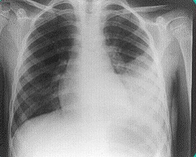
A Amoxicilina e reavaliação em 48 horas.
B Amoxicilina com clavulanato e reavaliação em 48 horas.
C Internação hospitalar, toracocentese e ceftriaxona.
D Internação hospitalar, toracocentese, ceftriaxona e oxacilina.
Questão 876 · Pediatria · 4000153121Um recém-nascido de 6 dias de vida é trazido à Unidade Básica de Saúde pela mãe. Segundo ela, o bebê está " cando mais amarelo" desde que recebeu alta da maternidade, com 48h de vida. RN a termo, adequado para idade gestacional, Apgar 8/9. Tipagem sanguínea do RN = O positivo, tipagem da mãe = O positivo. RN em aleitamento materno exclusivo, com diurese e evacuação presentes, sem alterações. Ao exame físico, ictérico até andar superior do abdome, sem outras alterações. Quais são a hipótese diagnóstica mais provável e a causa que justifica a icterícia desse recém-nascido?
A Icterícia patológica; Hemólise por incompatibilidade sanguínea.
B Icterícia fisiológica; Baixa circulação entero-hepática das bilirrubinas.
C Icterícia fisiológica; Aumento da circulação entero-hepática das bilirrubinas.
D Icterícia fisiológica; Alta capacidade de conjugação hepática da bilirrubina.
Questão 877 · Pediatria · 4000153120Uma criança de 7 anos de idade está apresentando dor no joelho direito há 7 dias e iniciou di culdade para movimentar o tornozelo esquerdo há 2 dias. Nega doenças prévias, exceto por amigdalites e resfriados ocasionais. Ao exame encontra-se febril (T: 38,1°C), hidratada, eupneica. A ausculta cardíaca revela sopro sistólico rude em foco mitral 4+/6+, apresenta dor calor e edema em joelho direito e dor à movimentação do tornozelo esquerdo. Diante desse caso, é correto afirmar:
A Se a criança apresentar ASLO aumentado, podemos iniciar o tratamento para febre reumática.
B É provável que se trate de um sopro inocente e a dor articular apresentada deve ser reacional a um quadro de infecção de vias aéreas superiores.
C Mesmo que se confirme a infecção recente pelo estreptococo, não há critérios suficientes para o diagnóstico da febre reumática.
D Se a febre reumática for confirmada por meio da evidência de infecção estreptocócica, a profilaxia deve continuar até 21 anos de idade.
Questão 878 · Pediatria · 4000153119Uma criança de 8 anos de idade retorna à UBS com resultados de exames, pois seu pai foi diagnosticado com tuberculose pulmonar e iniciou seu tratamento há 15 dias. A criança encontra-se assintomática e eutró ca. A radiogra a de tórax encontra-se normal e o resultado do PPD foi de 6mm. Diante desse caso, qual deve ser a conduta para a criança?
A Como o pai está sendo tratado há 15 dias, não há necessidade de tratamento, pois não há mais risco de contágio.
B Solicitar três amostras de escarro para pesquisa de BAAR para investigar se a criança necessita de tratamento.
C Revacinar a criança com BCG para protegê-la da tuberculose.
D Iniciar o tratamento para infecção latente de tuberculose com rifampicina por 4 meses.
Revisar: possível letra faltando em enunciado
Questão 879 · Pediatria · 4000153118Você recepciona, em sala de parto, um RN a termo, adequado para idade gestacional, que nasceu banhado em líquido amniótico meconial. Ele nasce chorando e com tônus adequado. Qual deverá ser a conduta em sala de parto?
A Clampeamento imediato do cordão e levar o RN à mesa de reanimação para aspirar a traqueia sob visualização direta.
B Clampeamento imediato do cordão, levar o RN à mesa de reanimação e iniciar ventilação com pressão positiva.
C Clampeamento tardio do cordão, manter em contato pele a pele por, no mínimo, uma hora e estimular o aleitamento.
D Clampeamento tardio do cordão, manter em contato pele a pele, aspirar boca e narinas e monitorá- lo com oximetria de pulso.
Questão 880 · Pediatria · 4000153117Uma gestante de 24 semanas e seu lho de 2 anos foram visitar os parentes no interior do estado. Dois dias depois de sua chegada, o primo de 8 anos iniciou com lesões polimór cas difusas e foi diagnosticado com varicela. O lho está com o calendário vacinal em dia e a gestante não sabe informar sua situação vacinal. Qual deverá ser a conduta profilática contra varicela para a gestante e seu filho?
A Apenas observação clínica para os dois.
B Vacina anti-varicela para a gestante e imunoglobulina anti-varicela para o filho.
C imunoglobulina anti-varicela para a gestante e vacina anti-varicela para o filho
D Vacina anti-varicela para os dois.
Revisar: possível letra faltando em enunciado
Questão 881 · Obstetrícia · 4000153116Primigesta, 30 anos, com idade gestacional de 8 semanas pela data da última menstruação e confirmada pela ultrassonogra a, assintomática, parceiro sexual há 6 anos e gravidez não programada. Refere tratamento prévio correto e com comprovante para sí lis com 20 anos de idade. Comparece para checar exames de pré-natal. O exame físico geral e o ginecológico estão normais. Você avalia o seguinte resultado de exame: VDRL: 1/32 e FTA-Abs positivo. A hipótese diagnóstica e a conduta são:
A Cicatriz sorológica, manter seguimento de pré-natal.
B Sífilis atual indeterminada, realizar tratamento com penicilina benzatina 2.400.000 UI, via intramuscular, uma vez por semana, por 3 semanas e 2.400.000 UI, dose única para o parceiro.
C Cicatriz sorológica, repetir VDRL para a paciente e para o parceiro antes de indicar o tratamento.
D Sífilis atual indeterminada, realizar tratamento com penicilina benzatina 2.400.000 UI, intramuscular, dose única para o casal.
Questão 882 · Obstetrícia · 4000153115Primigesta com 21 anos de idade procurou a emergência de uma maternidade referindo ciclos menstruais irregulares, atraso menstrual de sete semanas, teste urinário positivo para gestação e dor em baixo ventre associada a sangramento vaginal há cerca de oito horas. Ao exame físico, apresenta-se em bom estado geral, afebril, hipocorada +/4+, com pressão arterial = 100 x 60 mmHg, presença de pequena quantidade de sangue em fundo de saco vaginal, ausência de sangramento ativo e colo uterino impérvio. Foi realizada ultrassonogra a, que detectou presença de saco gestacional tópico com diâmetro interno médio de 18 mm, não sendo visualizado embrião em seu interior. Diante do exposto, é correto a rmar que a melhor conduta no momento é:
A realizar curetagem uterina para esvaziamento uterino, por tratar-se de gestação anembrionada.
B a pesquisa da tipagem sanguínea não é necessária, uma vez que não há risco de aloimunização, já que não houve desenvolvimento do embrião.
C repetir exame ultrassonográfico em dez dias, uma vez que a gestação incipiente é uma hipótese diagnóstica.
D orientar quanto ao diagnóstico de abortamento retido e possibilidade de conduta ativa ou expectante para que a gestante possa optar pelo tratamento que preferir para o esvaziamento uterino.
Questão 883 · Obstetrícia · 4000153114L.R.L., 30 anos, primigesta, com 14 semanas e 3 dias de gestação pela DUM, comparece à segunda consulta de pré-natal com os resultados dos exames solicitados na primeira consulta. Os resultados dos exames revelam VDRL negativo, anti-HIV negativo, HBsAg e anti-HBs negativos, toxoplasmose IgG positivo e IgM negativo, glicemia de jejum de 93 mg/dL, urocultura com 10⁵ UFC/mL (unidades formadoras de colônias por mL), tipagem sanguínea O Rh negativo. Trouxe também seu cartão de vacinas com três doses de vacina para difteria e tétano (dT), sendo que a última dose foi realizada há 4 anos, e duas doses de vacina contra hepatite B. Relata sentir-se bem e nega queixas. Nega alterações urinárias. Nesse caso, a conduta INCORRETA
A Solicitar Coombs indireto mensalmente até a 28ª semana de gestação e, se o teste permanecer negativo, administrar imunoglobulina anti-D.
B Orientar que gestante receba uma dose de vacina contra hepatite B e uma dose de vacina dTpa assim que sair dessa consulta.
C Orientar quanto ao diagnóstico de diabetes gestacional e tratamento baseado em dieta para diabetes e atividade física e não realizar teste oral de tolerância à glicose 75g para confirmação diagnóstica.
D Prescrever cefalexina para prevenir complicações clínicas e obstétricas.
Questão 884 · Obstetrícia · 4000153113Gestante, 2G1P0A, sem comorbidades, vem à primeira consulta de pré-natal com 12 semanas. Nega queixas. Refere parto normal anterior com 33 semanas, por trabalho de parto prematuro. Nega comorbidades. Que medicação deve ser feita para prevenir a condição que a paciente apresentou na sua gestação anterior?
A Ácido acetilsalicílico.
B Nifedipina.
C Betametasona.
D Progesterona.
Questão 885 · Obstetrícia · 4000153112Mulher, primigesta, 37 semanas, é trazida à maternidade após crise convulsiva há 40 min. Exame físico: BEG, orientada e contactuante, PA= 150/100 mmHg, FC= 90 bpm, Edema ++/4. Exame ginecológico: AU 35 cm, DU ausente, BCF 140 bpm, TV: G/P/ 3 cm, cefálico. Exames laboratoriais: Plaquetas= 200.000 mm³ , creatinina= 0,9mg/dL, AST= 35 UI/L, bilirrubina total= 0,6 mg/dL, relação proteína/creatinina urinária= 0,6. Cardiotocografia categoria 1. A CONDUTA É:
A Administrar sulfato de magnésio e realizar parto cesáreo imediato.
B Administrar diazepam e solicitar tomografia computadorizada de crânio.
C Administrar sulfato de magnésio e induzir o parto.
D Administrar diazepam e realizar parto cesáreo imediato.
Questão 886 · Ginecologia · 4000153111Mulher de 42 anos de idade, 2G2PN, comparece à UBS referindo aumento do uxo menstrual há 4 meses. Método anticoncepcional: laqueadura há 5 anos. Ao exame físico ginecológico foi observado útero aumentado de volume, contornos bocelados e consistência broelástica. O ultrassom apresentou útero de 390 cm³, com múltiplos nódulos hipoecogênicos intramiometriais. Qual é a conduta indicada para o caso?
A Histerectomia total abdominal.
B Miomectomia laparoscópica.
C Análogo de GnRH.
D Progestágeno.
Questão 887 · Ginecologia · 4000153110Paciente do sexo feminino, com 42 anos de idade, comparece à UBS desejando pedido para fazer uma mamogra a. Refere que uma tia materna teve câncer de mama aos 55 anos de idade. Ao exame físico mamário, não apresenta nódulos ou espessamentos. Axilas livres e expressão negativa bilateralmente. De acordo com a diretriz do Ministério da Saúde, qual é a conduta indicada para essa paciente?
A Solicitar a mamografia imediatamente e repetir anualmente.
B Solicitar a mamografia e repetir a cada 2 anos.
C Não solicitar a mamografia e iniciar o rastreamento mamográfico aos 50 anos de idade, repetindo o exame a cada 2 anos.
D Não solicitar a mamografia e iniciar o rastreamento mamográfico aos 50 anos de idade, repetindo o exame todo ano.
Questão 888 · Ginecologia · 4000153109Paciente de 56 anos vem ao ambulatório de ginecologia com queixa de fogachos intensos há 2 anos. Refere que teve sua menopausa aos 52 anos e que há 2 anos iniciou calores noturnos que incomodam muito e prejudicam seu sono. Nega ressecamento vaginal ou outras queixas. Apresenta hipertensão arterial bem controlada. Realizou exames de rastreamento para neoplasia de mama e colo uterino e estavam normais. Qual é a conduta mais adequada nesse caso?
A Não prescrever terapia hormonal, devido à hipertensão arterial.
B Prescrever terapia hormonal com estrogênio e progesterona.
C Prescrever terapia com estrogênio via oral isoladamente.
D Prescrever estrogênio por via vaginal.
Questão 889 · Ginecologia · 4000153108Paciente de 29 anos refere dor pélvica há 3 dias. Refere que a dor vem se intensi cando e que apresenta sangramento e dor associados ao quadro durante as relações. Ao exame físico encontra-se em bom estado geral, com sinais vitais normais e com dor à palpação profunda de hipogástrio com descompressão brusca negativa. No especular apresenta colo friável e sangrante com ectopia e mucorreia. Ao toque vaginal apresenta anexos livres, sem dor à palpação ou à mobilização do colo.Diante do quadro, quais são sua hipótese diagnóstica e conduta?
A Cervicite. Prescrever ceftriaxona e azitromicina em regime ambulatorial.
B Doença inflamatória pélvica. Internar para antibioticoterapia endovenosa com clindamicina e gentamicina.
C Cervicite. Prescrever anti-inflamatório e analgésicos e retornar em 48 horas para reavaliação.
D Doença inflamatória pélvica. Tratamento ambulatorial com ceftriaxona e doxiciclina em regime ambulatorial.
Questão 890 · Rastreamento do câncer de colo do útero · 4000153107Uma mulher com 24 anos de idade, assintomática, nuligesta, com início da vida sexual aos 15 anos, realizou exame de colpocitologia pela primeira vez na Unidade Básica de Saúde do seu bairro. O resultado evidenciou lesão intraepitelial de alto grau. Qual deve ser sua conduta?
A Repetir exame em 1 ano.
B Encaminhar para colposcopia.
C Repetir exame em 6 meses.
D Exérese de zona de transformação.
Questão 891 · Cirurgia · 4000153106Paciente, sexo masculino, 7 anos, comparece ao coloproctologista acompanhado pelo seu pai. Ele está preocupado porque a família materna da criança tem um histórico muito importante de malignidades. A mãe da criança faleceu aos 35 anos por câncer colorretal e o pai nem chegou a conhecer a sogra, pois a mesma também faleceu muito jovem por câncer de reto. Recentemente, soube que a tia materna da criança também recebeu um diagnóstico de câncer e, apesar da pouca idade da criança, seu pai demonstra intensa preocupação com o histórico da família da mãe. Enquanto o pai explicava toda a situação, o coloproctologista observava atentamente o seguinte achado ao exame físico da pequena criança A respeito do caso clínico em questão, qual é a alternativa CORRETA?
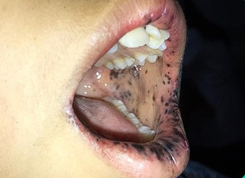
A O paciente tem risco aumentado para câncer colorretal e câncer de pâncreas.
B O paciente é provavelmente portador de condição autossômica recessiva que cursa com risco de quase 100% para ocorrência de câncer colorretal.
C O paciente é provavelmente portador de mutação do gene APC e a colonoscopia deve revelar a presença de múltiplos pólipos hamartomatosos intestinais.
D O paciente é provavelmente portador de síndrome de Lynch e deverá ser submetido ao rastreio para câncer colorretal de forma precoce.
Questão 892 · Cirurgia · 4000153105Paciente feminina, 32 anos, procurou pronto atendimento referindo náuseas e vômitos. Associada ao quadro, refere dor abdominal epigástrica intensa com irradiação em faixa há 1 dia. Comorbidades: antecedente de litíase biliar. Solicitados exames laboratoriais, que revelaram: Hb: 11,2 g/dL; Ht: 31%; Leucócitos: 18.320 /mm3; PCR: 150 mg/dL; Creatinina: 1,18 mg/dL; Ureia: 55 mg/dL; TGO: 250 U/L: TGP: 300 U/L; BD: 1,9 mg/dL; FA: 145 U/L; GGT: 123 U/L; Amilase: 1250 U/L; Lipase: 2000 U/L. Qual é a conduta imediata a ser tomada nesse caso?
A Dieta zero e encaminhar paciente para colecistectomia.
B Dieta zero, hidratação com soro fisiológico e analgésicos.
C Dieta zero e encaminhar paciente para CPRE.
D Solicitar tomografia computadorizada de abdome com contraste.
Questão 893 · Ortopedia · 4000153104Paciente de 5 anos sofre queda do trepa-trepa e vem ao pronto-socorro com dor e deformidade do cotovelo direito. Faz a seguinte radiografia: Fonte da imagem: arquivo pessoal. Quais são a conduta e o nervo mais frequentemente lesado nesse tipo de fratura?
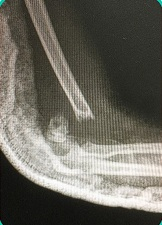
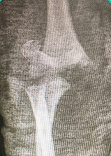
A Redução e gesso; nervo radial.
B Redução e gesso; nervo mediano.
C Redução cirúrgica e fixação; nervo radial.
D Redução cirúrgica e fixação; nervo mediano.
Questão 894 · Cirurgia · 4000153103Paciente de 78 anos procura atendimento em pronto-socorro com queixa de dor em fossa ilíaca esquerda e hipogástrio de intensidade progressiva há 3 dias. Refere associados perda de apetite e vômitos, além de calafrios. Ao exame, paciente em bom estado geral, corada, desidratada 1+, Tax 37,1ºC, PA = 146x100 mmHg, FC 92 bpm, com abdome pouco distendido e doloroso à palpação de fossa ilíaca esquerda, com descompressão brusca negativa. Realizou exames laboratoriais: Hb/Ht 13,5/40; leucócitos 18700; plaquetas 264000; RNI 0,98; ureia 68; creatinina 0,7; Na 142; K 3,2; PCR 12. Foi encaminhada à tomogra a computadorizada de abdome e pelve com contraste intravenoso, com laudo evidenciando divertículos em cólon sigmoide com espessamento da parede e borramento da gordura pericólica. Com base nas informações, a conduta adequada é:
A jejum, antibioticoterapia, hidratação e controle de sintomas.
B dieta líquida sem resíduos e preparo de cólon para colonoscopia com biópsia.
C dieta leve, antibioticoterapia e sintomáticos.
D laparotomia exploradora com sigmoidectomia.
Questão 895 · Cirurgia · 4000153102Paciente masculino de 56 anos, hipertenso e diabético, procura atendimento em unidade básica de saúde devido a sangramento eventual ao evacuar há cerca de 4 semanas. Ele nega dor e refere constipação intestinal há cerca de 1 ano. Paciente em bom estado geral, eutró co, corado, com exame físico abdominal e toque retal sem alterações. Inspeção da região perianal em figura abaixo. Tem colonoscopia realizada há 1 ano, dentro dos padrões da normalidade. A principal hipótese diagnóstica e a conduta são:
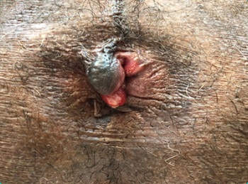
A neoplasia colorretal; nova colonoscopia.
B doença hemorroidária; encaminhar ao pronto-socorro para hemorroidectomia de urgência.
C fissura anal crônica; analgesia e diltiazem a 2% tópico por 14 dias.
D doença hemorroidária; melhora alimentar, ingestão de líquido e medicamento tópico.
Revisar: possível letra faltando em enunciado
Questão 896 · Cirurgia · 4000153101Paciente de 57 anos, sem comorbidades, encaminhado do pronto-socorro para seguimento em Unidade Básica de Saúde após apresentar retenção urinária aguda com necessidade de sondagem vesical de demora. A investigação inicial para diferenciar câncer de próstata e hiperplasia prostática benigna é realizada com:
A PSA livre e ultrassonografia de próstata transretal.
B PSA total e toque retal.
C PSA livre e biópsia de próstata.
D PSA total e ultrassom abdominal.
Questão 897 · Cirurgia · 4000153100Paciente de 31 anos, sexo feminino, vítima de atropelamento por carro em alta velocidade, é levada à sala de emergência em hospital de referência para trauma, queixando-se de dor abdominal difusa e de forte intensidade. Ao exame, apresentava: colar cervical e prancha rígida acoplados, vias aéreas pérvias; saturação de oxigênio 94% com máscara de oxigênio 15L/min, fR 22 ipm, ausculta cardíaca e torácica normais; PA = 112 x 74 mmHg. FC 102 bpm; abdome doloroso à palpação profunda com descompressão brusca positiva; Glasgow 14 (perda de 1 ponto em abertura ocular); pupilas isofotorreagentes; escoriações em gradil costal esquerdo. A conduta indicada é:
A laparotomia exploradora.
B tomografia computadorizada de crânio e abdome total.
C hidratação com ringer lactato 1000 mL, radiografia de tórax e pelve, observação neurológica.
D laparoscopia diagnóstica.
Questão 898 · Cirurgia · 4000153099Paciente trazido pelo Serviço de Atendimento Médico de Urgência (SAMU) após ter sido vítima de queda de moto durante evento esportivo, em alta velocidade, com perda de consciência na cena. Na admissão hospitalar: paciente em prancha rígida, com colar cervical, falando; ausculta pulmonar normal, fR 18 ipm, saturação de O2 95% em ar ambiente; PA = 110 x 72 mmHg, FC 86 bpm; abdome ácido, sem defesa à palpação e sem sinais de peritonite; Glasgow 13, com pupilas isofotorreagentes; presença de ferimento cortocontuso parietal direito de 4 cm, equimose perineal. Encaminhado para tomogra a computadorizada de corpo inteiro, a qual não apresentou alterações. Ao retornar da tomogra a, o paciente refere dor em hipogástrio Ao exame físico, há massa palpável suprapúbica, dolorosa, e pequena quantidade de sangue em meato uretral. A principal hipótese e a conduta adequada são:
A contusão de bexiga; sondagem vesical de 3 vias e irrigação com soro fisiológico gelado.
B lesão de uretra; sondagem vesical de demora e irrigação com soro fisiológico gelado.
C lesão de uretra; realização de uretrografia retrógrada.
D ruptura de bexiga extraperitoneal; laparotomia exploradora com rafia em dois planos.
Questão 899 · Cirurgia · 4000153098Paciente de 21 anos, sexo feminino, vítima de agressão doméstica, é levada por terceiros ao pronto-socorro. Paciente dispneica durante avaliação, referindo dor em hemitórax esquerdo, local em que foi agredida com faca. Ao exame, paciente saturando 89% em ar ambiente, com fR 28 ipm, PA = 116x74 mmHg, Tax 36,9ºC, com abdome indolor, murmúrio vesicular presente bilateralmente, exceto em base esquerda, com submacicez à percussão na região. Presença de orifício puntiforme em 4º espaço intercostal esquerdo com linha axilar média. O diagnóstico e a conduta indicada são:
A hemotórax; toracocentese de alívio em 5º espaço intercostal.
B pneumotórax hipertensivo; punção de alívio em 5º espaço intercostal seguida de drenagem torácica em selo d’água em mesma topografia.
C pneumotórax; drenagem torácica fechada em selo d’água.
D hemotórax; drenagem torácica em 5º espaço intercostal esquerdo.
Questão 900 · Cirurgia · 4000153097Menino de 8 meses é levado ao pronto-socorro por apresentar vômitos repetitivos há 1 dia. A mãe refere que ele não está se alimentando no período e que não evacua desde o início dos sintomas. Criança nascida de 33 semanas, com 2,4 kg, com bom desenvolvimento. Exame físico: paciente prostrado, desidratado 1+, corado, abdome pouco distendido, sem sinais de peritonite, presença de abaulamento inguinoescrotal à direita, endurecido e doloroso, com hiperemia da pele; teste de transiluminação negativo. O diagnóstico e a conduta indicada são, respectivamente:
A hérnia inguinal encarcerada; analgesia intravenosa com opioide e redução manual.
B hérnia inguinal encarcerada; internação hospitalar para cirurgia em 24 a 48 horas, a depender da melhora do edema.
C hérnia inguinal estrangulada; cirurgia de urgência.
D hidrocele não comunicante; internação hospitalar em jejum, com antibioticoterapia e hidrocelectomia, caso não haja melhora da hiperemia.
Questão 901 · Síndrome Colinérgica · 4000153096Agricultor de 25 anos chega à emergência com história súbita de perda da consciência e salivação intensa. Ao exame físico, encontra-se com miose, bradicárdico, defecado e com estertores pulmonares. O quadro é compatível com intoxicação exógena por que substância?
A Nortriptilina.
B Heroína.
C Etanol.
D Carbamato.
Questão 902 · Dermatologia · 4000153095Um homem, agricultor, procurou o ambulatório de dermatologia com queixa de uma lesão na face. Ao exame dermatológico você visualiza um nódulo eritematoso, com aspecto translúcido medindo +/- 1,5cm (ver imagem). Considerando essas informações, assinale a alternativa que traz a melhor opção terapêutica.
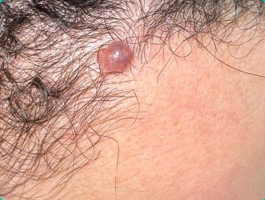
A Eletrocauterização.
B Crioterapia.
C Curetagem simples.
D Exérese cirúrgica.
Questão 903 · Reumatologia · 4000153094Mulher, 26 anos, chega na sala de emergência trazida por familiares devido à crise convulsiva, os familiares contam que nas últimas semanas a paciente estava estranha, cava mais quieta, isolada no quarto, deixou de ir à missa aos domingos e parou de visitar as amigas. Após estabilização na sala de emergência a paciente acorda confusa, desorientada e relatando cefaleia, sendo levada para leito de observação. Depois de 12h de observação a paciente permanece confusa, não sabe reconhecer onde está, não lembra seu nome e nem o que aconteceu, consegue falar que a visão está alterada, porém sem mais detalhes. Apresenta-se hipocorada (2+/4), febril, regular estado geral, linfonodos aumentados em região cervical, submandibular, axilar, porém todos broelásticos e móveis. Observadas ulcerações em região oral. Murmúrio vesicular presente e simétrico, sem ruídos adventícios; ritmo cardíaco regular em 2 tempos, sem sopros, PA = 200 x 110 mmHg, FC = 140 bpm. Abdome ácido, sem visceromegalias. Edema de MMII ++/4+. Ao exame físico neurológico não apresenta dé cits focais, apresenta pupilas simétricas e reagentes, sem rigidez de nuca. Os exames laboratoriais revelaram: hemoglobina = 9,0 g/dL (valor de referência: 12,0 a 15,8 g/dL); hematócrito = 26% (valor de referência: 33,0 a 47,8%); leucócitos = 2.200/mm³ (valor de referência: 3.600 a 11.000/mm³); linfócitos = 8% (valores de referência: 20 a 50%); plaquetas = 98.000/mm³ (valor de referência: 130.000 a 450.000/mm³); ureia = 80 mg/dL (valor de referência: 19 a 49 mg/dL); creatinina = 3,3 mg/dL (valor de referência: 0,53 a 1,00 mg/dL); sumário de Urina (Urina I) com hematúria ++ e proteinúria ++. Exame do líquor sem alterações significativas. Hemoculturas e uroculturas negativas. Ressonância magnética de encéfalo: hipersinais difusos com predomínio em lobos parietais posteriores e occipitais. Com base no caso clínico assinale a alternativa correta.
A O diagnóstico da paciente é encefalite herpética, pois estamos diante de uma jovem com alteração de comportamento, convulsão e imagem sugestiva na ressonância de encéfalo.
B A paciente precisa ser investigada pela psiquiatria, uma vez que esquizofrenia associada à meningoencefalite viral é a hipótese mais forte para explicar a alteração de comportamento que a família relatou, além das alterações laboratoriais.
C O diagnóstico da paciente é de síndrome da encefalopatia reversível posterior (PRES), que pode acontecer em pacientes com lúpus eritematoso sistêmico (LES), que é o provável diagnóstico de base.
D Nessa paciente deve ser pesquisado HIV, pois os achados clínicos de alteração comportamental, associados ao exame do líquor normal e à imagem da ressonância magnética, são sugestivos de leucoencefalopatia multifocal progressiva (LEMP).
Questão 904 · Hepatologia · 4000153093Uma mulher de 32 anos realizou exames admissionais que evidenciaram transaminases alteradas. Nega etilismo, tabagismo ou uso de drogas ilícitas. Tem história de tatuagem há 10 anos e quadro de “hepatite” na infância. Complementou a investigação com a seguinte sorologia: anti-HAV IgG positivo, anti-HAV IgM negativo, HBsAg negativo, anti-HBc total positivo, anti-HBs positivo, anti-HCV positivo. Sobre o caso clínico, quais são o diagnóstico e a conduta inicial?
A Imunidade para hepatite C e susceptibilidade para hepatite B; indicar vacinação para hepatite B.
B Imunidade para hepatite A e hepatite C crônica; iniciar sofosbuvir e daclatasvir.
C Imunidade para hepatite A e para hepatite B; solicitar HCV-RNA.
D Hepatite B crônica e hepatite C crônica; iniciar interferon alfa peguilado e ribavirina.
Questão 905 · Endocrinologia · 4000153092Uma adolescente de 15 anos é atendida no pronto-socorro devido a dor abdominal, náuseas e vômitos há 2 dias, com piora progressiva. O pai conta que a paciente tem bebido muita água, além de ter perdido 2 kg no último mês. No exame físico, regular estado geral, PA 100x60 mmHg, frequência cardíaca = 110 bpm, frequência respiratória = 30 irpm, desidratada 3+/4+, abdome doloroso difusamente à palpação. Foram solicitados exames, que mostram glicemia = 430 mg/dL, pH = 7,22, bicarbonato= 12 mEq/L, sódio = 136 mEq/L, potássio = 3,4 mEq/L, cloro = 108 mEq/L, cetonúria positiva. Quais são o diagnóstico e a conduta imediata?
A Acidose metabólica, hidratação e insulinoterapia.
B Cetoacidose diabética, hidratação e reposição de potássio.
C Cetoacidose diabética, hidratação e insulinoterapia.
D Acidose metabólica, reposição de bicarbonato.
Questão 906 · Hematologia · 4000153091Paciente de 62 anos de idade procurou a UBS com queixas de cansaço e sensação de queimação em seus pés nos últimos seis meses. Um hemograma mostrou anemia com VCM aumentado. Qual das seguintes alternativas e
A Talassemia.
B Deficiência de ferro.
C Falta de fator intrínseco.
D Síndrome mielodisplásica.
Questão 907 · Hematologia · 4000153090Na anamnese da avaliação pré-operatória de uma mulher de 25 anos para inserção de prótese mamária, foi relatada pela paciente a presença de ciclos menstruais hipermenorrágicos. Tal fato também ocorre nas outras mulheres de sua família. O laboratório mostra uma Hb = 11,5 g/dl; VCM = 79 ; leucócitos 6.000/mm³; plaquetas = 240.000/mm³; Tempo de Protrombina (TP) AP = 100%; Tempo de Tromboplastina Parcial Ativada (TTPA) R = 1,29 (normal até 1,21). A hipótese diagnóstica mais provável é:
A Hemofilia A.
B Hemofilia B.
C Doença de von Willebrand.
D Síndrome antifosfolípide.
Questão 908 · Nef rologia · 4000153089Homem de 18 anos é admitido com quadro de edema de membros inferiores e urina escurecida (“cor de chá-mate”) há 4 dias. Negou disúria, polaciúria e demais sintomas de desconforto na micção. Negou comorbidades crônicas. Refere quadro de amigdalite há 12 dias, com melhora. Apresenta-se no pronto- socorro hipertenso e com os seguintes exames laboratoriais: creatinina 0,9 mg/dl; albumina 3,9 g/dl; urina I: hemácias 120.000 (com dismor smo positivo), leucocitúria 25.000, proteína 1+/4+. Proteinúria 24h = 0,9 g. Considerando a principal hipótese diagnóstica, assinale a conduta correta:
A Anti-hipertensivo via oral, diureticoterapia e restrição hidrossalina.
B Imunossupressão com prednisona via oral.
C Antibioticoterapia via oral.
D Biópsia renal.
Questão 909 · Neurologia · 4000153088Um homem com 60 anos de idade é levado ao atendimento por familiares que o encontraram pela manhã, por volta das 8 horas, com di culdade em expressar-se e de movimentar seu lado direito. O paciente dá entrada no PS às 13 horas e, segundo a família, teria ido dormir às 22 horas do dia anterior, sem queixas. Tem histórico de diabetes melito tipo 2 e HAS, em uso de metformina e losartana. Ao exame físico, apresenta hemiplegia e hemihipoestesia à direita, além de hemianopsia homônima, também à direita, e afasia global. Apresenta PA = 160 x 100 mmHg, FC = 90 bpm, glicemia capilar de 100 mg/dL. O paciente é imediatamente encaminhado para a realização de uma tomogra a computadorizada de crânio sem contraste, que afasta sangramento intracraniano. Considerando que você tem acesso a qualquer exame de neuroimagem e método de reperfusão, diante desse quadro, qual é a melhor conduta?
A Administrar AAS 100 mg e sinvastatina 40 mg. Encaminhar para investigação neurológica ambulatorial.
B Proceder com trombólise EV imediatamente.
C Encaminhar o paciente para a realização de angioTC cervical e intracraniana.
D Encaminhar o paciente para RM de encéfalo. Se houver
Questão 910 · Cardiologia · 4000153087Homem, 67 anos de idade, procurou seu cardiologista por cansaço progressivo e palpitações há 1 mês. Nega dor precordial ou síncope. Tem histórico de hipertensão arterial, dislipidemia e diabetes em uso de: hidroclorotiazida 25 mg/dia, enalapril 40 mg/dia, AAS 100 mg/dia, sinvastatina 40 mg/dia e metformina 1000 mg/dia. Durante a consulta, seu médico solicitou eletrocardiograma ( figura abaixo). No exame, paciente em bom estado geral, eupneico, hidratado, corado. Pressão arterial = 120x80 mmHg, frequência cardíaca = 137 bpm, frequência respiratória = 18 irpm; temperatura axilar = 36,5°C. Murmúrio vesicular presente e simétrico bilateralmente. Ritmo cardíaco irregular, em dois tempos, bulhas hipofonéticas, com sopro sistólico em foco aórtico 2+/4+. Abdome ácido, sem visceromegalias, ruídos hidroaéreos presentes e regularmente distribuídos. Sem edema de membros inferiores. Com base nesse caso clínico, assinale a alternativa INCORRETA:
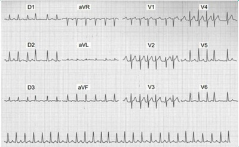
A Em caso de opção por cardioversão elétrica, se o paciente retornar para ritmo sinusal, o tempo necessário de anticoagulação é de 30 dias.
B A melhor opção de tratamento anticoagulante é o uso dos anticoagulantes diretos (DOAC) como rivaroxabana, dabigatrana, apixabana ou edoxabana.
C O controle de frequência cardíaca deve ser realizado com betabloqueador.
D Após introdução do tratamento anticoagulante, está recomendada a suspensão do AAS.
Questão 911 · Vacinação · 4000152691Uma escolar com 7 anos de idade foi levada para atendimento no pronto-socorro após episódio de violência sexual. A criança, no dia anterior, foi deixada aos cuidados do primo com 18 anos de idade para que os pais pudessem trabalhar. No dia seguinte, pela manhã, a mãe notou que a criança estava chorosa e com presença de sangue em roupas íntimas e de ferimento em região anal. Durante o atendimento, a criança informou que o seu primo introduziu o pênis em seu orifício anal e que isso tem acontecido há 1 ano. A caderneta de vacinação da criança encontra-se completa. Durante o exame físico, a criança mostra-se em bom estado geral, mas bastante assustada, com sinais vitais estáveis e presença de laceração em região anal. Após o atendimento inicial, são realizados exames laboratoriais e o resultado do anti-HBs da criança é negativo. O primo da criança encontra-se foragido. Segundo a linha de cuidado para a atenção integral à saúde de crianças em situação de violências, para a profilaxia para hepatite B, recomenda-se realizar
A nova série de vacinação Anti-hepatite B (3 doses).
B acompanhamento clínico, sem medidas específicas.
C duas doses de imunoglobulina humana Anti-hepatite B.
D uma única dose de imunoglobulina humana Anti-hepatite B.
Questão 912 · Medicina Preventiva · 4000152114Uma mulher de 66 anos procura a UBS para avaliação, pois, em uma campanha de promoção de saúde, realizou uma glicemia capilar, com resultado de 150 mg/dL. De comorbidades, apresenta hipertensão arterial sistêmica, controlada com uso de losartana 50 mg 2 vezes ao dia. Nega tabagismo e etilismo, apresentou menopausa aos 50 anos, com uso de terapia de reposição hormonal por 5 anos, duas gestações prévias, com parto normal, sem intercorrências. É sedentária e come legumes e verduras de 2-3 vezes por semana (costuma comprar alimentos prontos e congelados devido à praticidade). De antecedentes familiares, a mãe tem diabetes mellitus diagnosticado aos 56 anos, e o pai tem hipertensão arterial sistêmica e apresentou AVC aos 72 anos. Ao exame físico: PA 130x80 mmHg, Peso 74 kg, altura 1,6m, circunferência abdominal 90 cm, presença de lesões hipercrômicas e aveludadas em região cervical. Ausculta pulmonar, cardíaca e o exame físico abdominal estão normais. Que dados da história e do exame físico denotam fatores de risco para diabetes mellitus tipo 2?
A Hipertensão arterial, menopausa, sedentarismo e obesidade.
B Sedentarismo, gestações prévias, consumo de alimentos ultraprocessados e circunferência abdominal ≥ 90 cm.
C Familiar de primeiro grau com diabetes mellitus, hipertensão arterial sistêmica, circunferência abdominal ≥ 88 cm e lesões hipercrômicas.
D Hipertensão arterial sistêmica, familiar de primeiro grau com AVC, circunferência abdominal ≥ 89 cm e sobrepeso.
Questão 913 · Diagnóstico do Transtorno de Ansiedade Generalizada TAG · 4000152113Os transtornos de ansiedade são muito prevalentes na comunidade e estão entre as principais causas de consulta médica na atenção básica. Por isso, é fundamental que o médico da família conheça as principais drogas para o tratamento desses transtornos. Entre as opções abaixo, qual delas apresenta apenas alternativas de primeira linha para o tratamento de manutenção do transtorno de ansiedade generalizada?
A Lítio, pregabalina, quetiapina.
B Clonazepam, vareniclina, haloperidol.
C Sertralina, pregabalina, fluvoxamina.
D Fluoxetina, citalopram, bupropiona.
Questão 914 · Medicina Preventiva · 4000152112Você é médico da família de uma pequena comunidade do interior do Pará e, para ganhar uma renda extra, também dá alguns plantões no pequeno hospital da cidade. Nesses plantões, atende quase sempre rostos conhecidos. Quase às 3 da manhã de sábado, você é chamado para avaliar um paciente que acaba de chegar em estado crítico, com insu ciência respiratória e rebaixamento neurológico. Rapidamente, você percebe que paciente é um velho conhecido da sua unidade, o senhor Joelzinho, de 77 anos de idade, que há vários anos vem lutando contra um câncer de pulmão, já tendo sido submetido a diversas cirurgias e quimioterapia, mas sem o sucesso esperado, sendo considerado um paciente de “cuidados paliativos”. Por isso, apesar de lutar muito nos últimos anos, Joelzinho já vinha sofrendo muito nas últimas semanas, com desmaios, dispneia intensa, e fortes dores pelo tórax e na coluna. Diante dessa situação, seus 2 lhos, que o acompanham, relatam que não aguentam mais ver seu pai sofrendo, e que ele mesmo teria dito para um dos lhos, alguns dias antes, que não desejava mais ser submetido a cirurgias ou sequer gostaria de ser entubado. Assinale a alternativa que apresenta a conduta imediata.
A Manter o paciente em cuidados intensivos até segunda feira, quando poderá consultar o comitê de ética local do CRM.
B Sedar o paciente e entubá-lo, pois é dever do médico não medir esforços para manter seu Joelzinho vivo.
C Sedar o paciente e entubá-lo, pois a comunicação do desejo do paciente através do seu filho é inválida.
D Estabelecer medidas de conforto para o paciente e não instituir procedimentos invasivos não- curativos.
Questão 915 · Cardiologia · 4000152111Sr. Haroldo, 62 anos, morador da Ilha do Governador (RJ), resolveu procurar a clínica da família, pois sua pressão arterial estava muito elevada. Na primeira avaliação na clínica, sua pressão arterial era 152 x 88 mmHg. Em seu histórico, paciente negou uso prévio de medicamentos e informou ser tabagista (1 maço por dia nos últimos 40 anos). Paciente encontra-se em bom estado geral, sem alterações ao exame físico. Foi orientado quanto à mudança de estilo de vida, além da requisição de exames laboratoriais e eletrocardiograma. Um mês depois, retornou para reavaliação, mantendo pressão arterial elevada (154 x 92 mmHg). O exame laboratorial não revelou alterações. Este é seu eletrocardiograma: Qual devem ser a meta de pressão arterial e o tratamento inicial desse paciente?
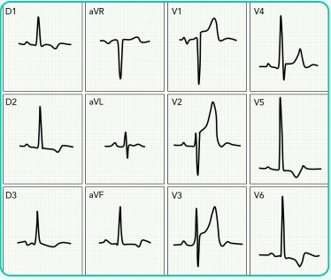
A < 140 x 90 mmHg; monoterapia com enalapril.
B < 140 x 90 mmHg; terapia combinada com enalapril e anlodipino.
C PAS entre 120 e 129mmHg, PAD entre 70 e 79mmHg; monoterapia com enalapril.
D PAS entre 120 e 129mmHg, PAD entre 70 e 79mmHg; terapia combinada com enalapril e anlodipino
Questão 916 · Diagnóstico · 4000152110Mulher, 46 anos, retorna à unidade de saúde da família de seu bairro com resultados de exames solicitados para investigar dor nas articulações há 3 meses. Na consulta anterior, referia dor em mãos e punhos com rigidez de cerca de 3 horas pela manhã. Nega comorbidades. Tabagista desde os 18 anos de idade. Ao exame físico: artrite de 2ª e 3ª metacarpofalangeanas bilateralmente, 3ª interfalangeana proximal à direita, 4ª interfalangeana à esquerda e também de punhos. Exames complementares mostram: hemograma com hemoglobina = 10,9 mg/dL (VR = 12.0 a 16.0 g/dL), PCR = 20 mg/L (VR = até 3mg/L), VHS = 48 mm/ hora (VR = 20 mm/hora), fator reumatoide não reagente, sorologias para hepatites B e C e HIV não reagentes. Radiografia de mãos e punhos com osteopenia periarticular. Que exame deve ser solicitado para corroborar a principal hipótese diagnóstica nesse caso
A Fator antinuclear (FAN).
B Anti-DNA dupla hélice.
C Anticorpo antipeptídeo citrulinado cíclico (anti-CCP)
D Anti-Ro.
Questão 917 · Política Nacional de Atenção Básica PNAB · 4000152109Um grupo de médicos residentes recém-aprovados no programa de residência médica de Medicina de Família e Comunidade estão participando de um workshop inicial a m de aperfeiçoarem seus conhecimentos fundamentais sobre a atenção primária em saúde. O professor passa a palavra a três residentes e solicita que falem sobre territorialização; analise abaixo a fala de cada um: • Thalita: “A territorialização é um importante conceito que foi criado no Brasil, desde a implantação do Programa Saúde da Família em 1994. Seu foco é a área geográ ca, o território, e como ele in uencia a economia, como por exemplo por seus recursos subterrâneos”. •Sumaya: “Falar em territorialização significa entender a centralização do sistema de saúde, já que o foco central passa a ser a comunidade, isto é, uma atenção de saúde com atenção individualizada ao contexto daquelas pessoas em especial”. •Eduardo: “O território deve ser relativamente homogêneo, e seu estudo inclui até mesmo questões políticas”. Com base nas falas dos residentes, escolha a alternativa correta:
A Somente Thalita comentou corretamente.
B Somente Eduardo comentou corretamente.
C Sumaya foi a única que não errou em seu comentário.
D Todos comentaram erroneamente.
Revisar: possível letra faltando em enunciado
Questão 918 · Declaração de óbito DO Atestado de óbito · 4000152108Sra. Glória, 63 anos, foi internada em um hospital universitário para realizar procedimento de ureterolitotripsia devido a cálculo no ureter proximal esquerdo. Ela chegou ao hospital na véspera da cirurgia e foi admitida pelo residente de cirurgia geral, sob orientação do urologista (o qual não se encontrava no hospital). No dia seguinte, a enfermeira acionou o urologista informando que a paciente não havia acordado e foi encontrada sem sinais vitais, sendo então acionada a equipe de resposta rápida do hospital, a qual confirmou o óbito “há algumas horas”. O exame do corpo não demonstrou sinais de violência. Escolha a alternativa correta a respeito do preenchimento da declaração de óbito da Sra. Glória.
A O residente de cirurgia geral foi o último médico a ver a Sra. Glória viva, portanto ele possui mais subsídios para esclarecer a causa do óbito e deve ser o responsável pelo preenchimento da declaração.
B O falecimento não teve nítida correlação com a razão da internação, sendo assim suspeito. O Instituto Médico Legal deve ser o responsável pela necropsia e preenchimento da declaração de óbito
C O falecimento não teve nítida correlação com a razão da internação, sendo assim de difícil determinação causal em um primeiro momento. O corpo deve ser encaminhado ao Serviço de Verificação de Óbitos e lá deve ser emitida a declaração de óbito.
D Apesar das circunstâncias pouco claras do óbito, a fim de racionalizar a rede de atenção à saúde e evitar sobrecarregar o Instituto Médico Legal, o urologista, como responsável pela paciente, tem o dever de preencher a declaração de óbito
Questão 919 · Política Nacional de Saúde do Trabalhador e da Trabalhadora PNSTT · 4000152107Perda Auditiva induzida por Ruído PAIR ou Perda Auditiva induzida por níveis de Pressão Sonora Elevados PAINPSE Um homem de 40 anos de idade procura a Unidade Básica de Saúde (UBS), após insistência da esposa, relatando que ela se queixa de que ele está quase surdo. Explicou que essa queixa já existe há alguns anos, mas estava adiando procurar atendimento, pois conseguia escutar as pessoas, mesmo que às vezes elas precisassem repetir e elevar o tom de voz. Acrescentou que percebeu piora há dois anos e acredita que pode ter relação com sua atividade, pois trabalha há três anos como motorista do SAMU de um município do interior. O médico da UBS perguntou se ele já havia sido submetido a algum exame periódico da empresa, mas o paciente informou que só fez exame na admissão e não foi informado de nenhuma alteração. Quando procurou seu supervisor com o problema, ele informou que não haveria como mudá-lo de função e que ele precisaria pedir demissão se fosse o caso. Considerando o texto, assinale a alternativa correta.
A O médico deve aconselhar o paciente a seguir a orientação do supervisor para cessar a exposição.
B O médico deve explicar ao paciente que ele deve permanecer no cargo, pois a perda auditiva induzida pelo ruído é permanente e não há mais o que fazer em relação a ela.
C O médico deve encaminhar o paciente para o otorrinolaringologista para tratamento e recuperação da perda auditiva.
D O paciente poderá ser encaminhado para o centro de referência em saúde do trabalhador.
Questão 920 · Política Nacional de Atenção Básica PNAB · 4000152106Uma mulher de 34 anos de idade, após discussão familiar, é levada pelo lho para a Unidade Básica de Saúde (UBS) de referência, pois está muito nervosa e chorosa. Durante o acolhimento, a pro ssional de enfermagem tenta acalmá-la. Após um período de repouso, a pro ssional afere a pressão arterial (PA) e informa que o resultado foi 150x80mmHg, sem outras alterações significativas na avaliação além do estado emocional (choro). A pro ssional de enfermagem questiona se houve agressão física ou se há alguma queixa adicional, o que é negado pela paciente. Assim, a usuária foi orientada a retornar no dia seguinte à UBS para consulta com o médico, caso acredite ser necessário. Como o nervosismo e choro persistiram, o lho decidiu levar a mãe para a Unidade de Pronto Atendimento (UPA), onde foi examinada pelo médico plantonista, que confirmou a PA verificada na UBS e registrou que ela estava chorando, sem outras anotações de alterações no exame físico. Foi prescrito captopril de 25mg, além de benzodiazepínico para acalmar a paciente. O médico plantonista solicitou uma série de exames laboratoriais (função renal, hemograma, função hepática, troponina) e eletrocardiograma, sendo todos os resultados normais. A lha informou ao médico que a mãe tem di culdade de dormir nos dias em que discute com o pai, o que ocorre uma vez a cada dois meses. Após todo esse relato, o plantonista libera a paciente com PA controlada e fornece encaminhamento para cardiologista e psiquiatra. Considerando as informações fornecidas sobre o caso e avaliando ambos os atendimentos prestados, assinale a opção correta:
A O médico da Atenção Básica deve atender a todas as pessoas que o procuram no mesmo dia. Assim, a usuária deveria ter sido atendida pelo médico da UBS, por tratar-se de um caso de urgência.
B Não havendo disponibilidade de realizar os exames complementares na Atenção Básica, a UPA pode ser um ponto de apoio à população e auxiliou adequadamente nesse caso, por afastar alguma situação mais grave.
C A usuária seguiu o fluxo correto da rede, pois procurou primeiro a Atenção Básica e seguiu para a UPA, sendo posteriormente encaminhada para o ambulatório de especialidades.
D O plantonista da UPA precisaria ter referenciado a usuária para manutenção do seguimento na UBS, pois a Atenção Básica deve ser coordenadora do cuidado
Questão 921 · Medicina Preventiva · 4000152105Em 11 de março de 2020, a Organização Mundial da Saúde (OMS) decretou aquela que viria a ser uma das maiores pandemias dos últimos 100 anos. A COVID-19, causada pelo vírus emergente SARS-COV-2, já infectou cerca de 173.331.478 milhões de pessoas, ocasionando 3.735.571 mortes até o presente momento. No Brasil, as ações de combate à epidemia têm sido duramente criticadas. Segundo o Ministério da Saúde, até junho de 2021, foram aproximadamente 16.000.000 milhões de casos novos ou confirmados no país, com 400.000 óbitos. Sabendo que a referida doença chegou por aqui há 17 meses, e que a população brasileira na metade desse período era igual a 215 milhões de habitantes, qual é a taxa de letalidade da COVID-19 no Brasil?
A 2,15%.
B 0,0215%.
C 2,5%
D 186,04 óbitos/100.000 habitantes
Questão 922 · Pediatria · 4000152104David de 7 anos é trazido por seus pais ao pronto atendimento com quadro de febre alta, linfonodomegalia cervical e dor em faringe de início há 2 dias, associados à cefaleia e à dor abdominal. Nega tosse, diarreia e obstrução nasal. Ao exame, foi verificada hipertrofia de tonsilas com exsudato, edema de úvula e petéquias em palato. Sobre a situação apresentada acima, assinale a alternativa incorreta
A Mononucleose infecciosa é um diagnóstico a ser considerado.
B Um teste rápido para Streptococcus pyogenes deve ser realizado.
C Pela grande suspeita de faringite por estreptococos está indicada a prescrição de amoxicilina com clavulanato pela resistência bacteriana às outras penicilinas.
D Em caso de indicação de antibiótico, podemos utilizar amoxicilina 50 mg/kg/dia por 10 dias
Questão 923 · Pediatria · 4000152103Maria tem 7 anos de idade, previamente hígida, apresentou tosse seca, coriza e febre baixa durante 3 dias. No 4° dia, a tosse tornou-se mais secretiva e os picos febris mais frequentes e altos, chegando a 39,5°C, sendo então levada pela mãe ao pronto-socorro. Ao exame físico, apresenta-se em regular estado geral, frequência cardíaca normal, FR =41 mrpm, satO2 90% em ar ambiente, com tiragem subcostal leve, ausculta pulmonar com estertores nos (crepitantes) em terço médio à direita e murmúrio vesicular abolido em base direita. Realizada radiografia de tórax FONTE: Arquivo pessoal – Prof. Ariadne Becker Com base no quadro clínico, selecione a alternativa que contém: a classificação da pneumonia de acordo com os critérios da AIDPI, o agente etiológico mais provável e a conduta para essa paciente.
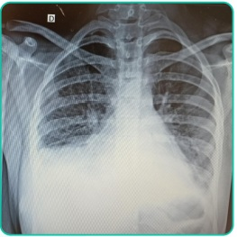
A Pneumonia muito grave/
B Pneumonia grave / Pneumococo/ Internação hospitalar e antibioticoterapia endovenosa.
C Pneumonia muito grave/ Pneumococo/ Toracocentese, internação hospitalar e antibioticoterapia endovenosa.
D Pneumonia/ Pneumococo/ Tratamento ambulatorial com amoxicilina via oral e retorno para reavaliação em 48h.
Questão 924 · Pediatria · 4000152102Um recém-nascido de 5 dias de vida é trazido à Unidade Básica de Saúde pela mãe para reavaliação de icterícia. No resumo de alta da maternidade, consta que o RN apresentou icterícia, a partir de 36h de vida, at é região de pescoço. RN a termo, de 39 semanas, peso de nascimento 3010g, Apgar 9/9. Tipagem sanguínea do RN = A positivo. Tipagem da mãe = A positivo. RN em aleitamento materno exclusivo, com diurese e evacuação presentes sem alterações. Ao exame físico, hoje, com 5 dias de vida, icterícia até região de tórax, sem ultrapassar o umbigo, sem outras alterações. Sobre a condição clínica apresentada por esse RN, é CORRETO afirmar que:
A A icterícia é mais facilmente visível na região de cabeça e pescoço, pois nessas regiões há menos tecido subcutâneo do que nos membros e extremidades.
B A icterícia apresentada corresponde à zona III. de Kramer, por isso trata-se de provável icterícia patológica.
C Por persistir após 24h de vida, a principal hipótese diagnóstica é a atresia de vias biliares.
D A icterícia apresentada corresponde à zona II. de Kramer e trata-se de provável icterícia fisiológica causada pela hiperbilirrubinemia indireta.
Questão 925 · Pediatria · 4000152101Criança de 7 meses é trazida pela avó à consulta no pronto-socorro, referindo que há três dias está mais sonolenta e que, durante a madrugada, apresentou quadro convulsivo. Ao exame físico, apresenta hematomas em diversos estágios de evolução. À fundoscopia, observa-se hemorragia retiniana. Sobre a conduta nesse caso, deve-se:
A Notificar o conselho tutelar à suspeita de maus tratos, solicitar tomografia de crânio, radiografia de todos os ossos longos e internar a criança
B Solicitar tomografia de crânio e radiografia de todos os ossos longos e notificar o conselho tutelar apenas após a confirmação com os exames complementares.
C Encaminhar a criança para avaliação no IML e orientar à avó que faça, nesse ínterim, um boletim de ocorrência policial. Os exames de tomografia de crânio e as radiografias de ossos longos podem ajudar a complementar o laudo do IML.
D Internar a criança, solicitar coleta de liquor e iniciar fenitoína para prevenção de novas crises convulsivas
Questão 926 · Pediatria · 4000152100Em uma avaliação ambulatorial de recém-nascido com 15 dias de vida, uma mãe esboça preocupação acerca do aleitamento materno. Ela refere que está sentindo queimação e dores do tipo sgada nas mamas e está com receio de que as mamadas estejam inefetivas. Nega febre ou outros sinais sistêmicos. Trata-se de recém-nascido a termo, com 39 semanas de idade gestacional, peso de nascimento de 3450g e peso de alta de 3300g, com 48 horas de vida. Na avaliação ambulatorial de hoje, está com 3700g, anictérico e em bom estado geral. Na avaliação da mamada, nota-se mamilos avermelhados e brilhantes, sem outros sinais flogísticos aparentes. Com base no possível diagnóstico, assinale a alternativa com a melhor conduta:
A Introduzir fórmula láctea como complementação, devido ao ganho de peso insatisfatório do recém- nascido.
B Suspender temporariamente a amamentação, devido à suspeita de mastite. Introduzir cefalexina e orientar o uso de fórmula láctea durante o tratamento antibiótico por uma semana.
C Introduzir antifúngico tópico nas mamas e nistatina oral para o bebê devido à suspeita de candidíase. Manter a amamentação durante o tratamento, reorientando a técnica adequada.
D Introduzir cefalexina, devido à suspeita de mastite. Orientar ordenha manual ou em bomba e manter a amamentação somente na mama menos afetada.
Questão 927 · Pediatria · 4000152099Um lactente de 7 meses é trazido ao departamento de emergência pois os pais estão preocupados com uma possível “alergia à amoxicilina”. Eles referem que o menino iniciou quadro febril até 39o C há 4 dias, ontem foi avaliado por pediatra, que prescreveu amoxicilina, e hoje desenvolveu rash. Os pais referem também que o lactente está em bom estado geral, mamando bem e sem nenhum pico febril há 12 horas. Ao exame físico, você não nota alterações, exceto um rash maculopapular róseo em tronco. A principal hipótese diagnóstica é:
A Alergia à amoxicilina
B Exantema súbito
C Eritema infeccioso
D Sarampo
Questão 928 · Pediatria · 4000152098Roseane, mãe de Alice de 4 meses de idade, procura atendimento na UBS com queixa de notar diferenças entre Alice e sua prima Nina, que moram juntas e tem exatamente a mesma idade. As lactentes não têm antecedente de doenças e não tiveram intercorrências no parto e na gestação. Alice nasceu primeiro e, no dia seguinte, nasceu Nina. Mamaram em seio materno exclusivo até hoje com bom ganho de peso. Tiveram uma primeira consulta com o pediatra na primeira quinzena após o nascimento, mas depois não retornaram para acompanhamento por causa de condições financeiras para transporte em meio a pandemia. Roseane diz que Nina sustenta a cabeça, já se apoia nos ombros de bruços, está começando a rolar, senta-se com apoio, segura brinquedos com as mãozinhas, tem levado objetos em direção à boca. Já Alice não consegue car muito tempo sustentando a cabeça, não rola ou apoia-se de bruços, mas reage ao contato social e é muito sorridente, não consegue segurar os brinquedos e mantém as mãos fechadas. A partir dessas informações, qual é a orientação a ser dada à mãe dos bebês?
A Explicar à mãe que as crianças são diferentes e ela não deve compará-las, pois cada uma tem seu tempo de desenvolvimento, sendo ambas considerados normais.
B As duas crianças encontram-se com parâmetros de atraso do desenvolvimento, merecendo avaliação da rede de atenção especializada na avaliação do desenvolvimento.
C Alice tem discreto atraso no desenvolvimento, portanto devemos orientar maior estímulo e reavaliação na próxima consulta de rotina pediátrica.
D Alice tem provável atraso do desenvolvimento, devendo ser encaminhada para rede de atenção especializada na avaliação do desenvolvimento, e Nina tem desenvolvimento normal.
Questão 929 · Pediatria · 4000152097Um lactente com 10 meses de vida é levado pela mãe à Unidade Básica de Saúde (UBS). Ela relata que a criança vem apresentando há 3 dias evacuações líquidas, sem muco e sem sangue, cerca de 10 vezes ao dia. No início, a mãe estava mais tranquila, pois a criança pelo menos estava mamando bem ao seio materno, mas agora tem vomitado muito e não aceita bem nenhum tipo de alimentação. Você examina a criança e constata os seguintes achados: temperatura axilar igual a 37°C, torporosa, hipotônica, olhos muito encovados, boca seca, enchimento capilar de 6 segundos e pulso fraco. Considerando a avaliação dessa criança, a correta classificação da hidratação e o plano terapêutico para o caso estão descritos em qual das seguintes alternativas:
A Criança com desidratação. Plano B: Bromoprida IM; Oferecer SRO 50-100ml/kg em 4-6 hora
B Criança com desidratação Grave. Plano C: SF 0,9% 20ml/kg em 30 minutos e encaminhar para unidade de urgência e emergência.
C Criança com desidratação. Plano B: Hidratação por gastróclise 50-100ml/kg em 4h, dieta oral zero e reavaliar.
D Criança com desidratação Grave. Plano C: SF 0,9% 30ml/kg em 30 minutos e encaminhar para unidade de urgência e emergência
Questão 930 · Pediatria · 4000152096Humberto de 35 anos de idade, foi diagnosticado com tuberculose pulmonar há 1 semana e tem 2 lhos. O lho maior tem 4 anos de idade, tem sua vacinação em dia e encontra-se assintomático, ele já foi submetido à avaliação radiológica que resultou normal. O lho menor é um recém-nascido de 2 dias de vida que ainda não foi vacinado com BCG e deverá receber alta da maternidade hoje. Qual é a conduta a ser indicada para cada filho em relação ao contato domiciliar com tuberculose?
A Vacinar o recém-nascido e observar se a criança de 4 anos apresenta sintomas sugestivos de tuberculose, como tosse produtiva, febre e emagrecimento.
B Não vacinar o recém-nascido e iniciar quimioprofilaxia com isoniazida ou rifampicina por três meses e depois reavaliar o lactente realizando o PPD. Para a criança maior, devemos solicitar a realização do PPD e, se este estiver maior ou igual a 5 mm, devemos iniciar o tratamento da infecção latente por tuberculose com isoniazida ou rifampicina.
C Vacinar o recém-nascido e iniciar a profilaxia e observar sintomas sugestivos de tuberculose na criança de 4 anos.
D Não vacinar o recém-nascido, realizar o PPD para o recém-nascido e para a criança de 4 anos e, caso o PPD seja maior ou igual a 10mm, os dois deverão receber a profilaxia para tuberculose com rifampicina e isoniazida.
Questão 931 · Pediatria · 4000152095Você é o médico de uma unidade saúde da família da sua cidade. O conselho tutelar traz para sua avaliação um bebê de 6 meses de idade que foi recentemente abrigado por maus tratos. No dia da consulta, ele apresenta tosse e coriza leves, mas sem febre. Sua carteirinha de vacinação está incompleta, tendo apenas as doses de BCG e hepatite B ao nascimento. Qual é a orientação correta sobre a vacinação dessa criança?
A Não vacinar até que ele melhore do quadro de tosse e coriza.
B Vacinar com Pentavalente, Pólio inativada, Rotavírus, Pneumocócica 10-valente e Meningocócica C.
C Vacinar com Pentavalente, Pólio inativada, Pneumocócica 10-valente e Meningocócica C.
D Vacinar com Pentavalente, Pólio inativada e Pneumocócica 10-valente.
Questão 932 · Obstetrícia · 4000152094Primigesta, 41 semanas e 3 dias, vem à maternidade por queixa de diminuição da movimentação fetal. Nega comorbidades, nega outros sintomas. Ao exame apresenta PA 110x 70 mmHg, AU 35 cm, BCF 140 bpm, TV: colo M/P/1 cm de dilatação, cefálico, bolsa integra. Cardiotocogra a com parâmetros normais. Qual deve ser a conduta nesse caso?
A Internação hospitalar e cesárea.
B Orientar a paciente a retornar à maternidade caso entre em trabalho de parto, ou apresente perda de sangue ou liquido.
C Internação hospitalar para indução do parto com ocitocina endovenosa.
D Internação hospitalar para indução do parto com misoprostol via vaginal.
Questão 933 · Conduta obstétrica · Préeclâmpsia com sinais de gravidade · Obstetrícia · 4000152093Primigesta, 36 semanas, sem intercorrências no pré-natal, vem à maternidade com queixa de cefaleia e turvação visual. Ao exame: bom estado geral, PA 150/100 mmHg, reflexos tendinosos aumentados, AU 30 cm, BCF 140 bpm, toque vaginal com colo grosso, posterior e impérvio. Realizada cardiotocogra a na sala de admissão, considerada categoria 1. Qual é o diagnóstico e qual é a conduta?
A Crise hipertensiva. Nifedipina para controle dos níveis pressóricos e resolução da gestação.
B Iminência de eclâmpsia. Sulfato de magnésio e resolução da gestação após estabilização clínica da gestante.
C Iminência de eclâmpsia. Resolução imediata da gestação e, em seguida, fazer sulfato de magnésio.
D Pré-eclâmpsia grave. Hidralazina, sulfato de magnésio e acompanhamento diário da vitalidade fetal.
Questão 934 · Queixas mais comuns na gestação · 4000152092) L.R.L., 26 anos de idade, primigesta com 32 semanas e 5 dias de gestação, em seguimento pré-natal na Unidade Básica de Saúde comparece à consulta de rotina relatando constipação intestinal, episódios de azia e menciona estar preocupada com o escurecimento de algumas regiões de sua pele desde o início da gestação, como na face e infraumbilical. Relata ainda que conseguiu receber a dose de imunoglobulina anti-D prescrita na última consulta há um mês, mas que só conseguiu agendar a coleta dos exames solicitados nesta última semana. Está aliviada que os resultados caram prontos e os traz para avaliação: Hb 11,3 g/dL, Ht 32%, plaquetas 165 mil, Coombs indireto positivo (o anterior, realizado há dois meses, era negativo), HIV não reagente, VDRL não reagente. Ao exame físico: bom estado geral, corada, hidratada, afebril, eupneica, PA = 110 x 60 mmHg, exame obstétrico mostra altura uterina de 34 cm, batimentos cardiofetais com frequência de 146 bpm. Qual é a conduta a ser assumida diante desse caso?
A Aumentar o sulfato ferroso para dosagem terapêutica, uma vez que é essencial tratar a anemia materna no terceiro trimestre pela proximidade do parto.
B Encaminhar a gestante para seguimento em pré-natal de alto risco devido à aloimunização, sendo essencial para investigar possíveis repercussões fetais.
C Orientar a gestante que suas queixas de constipação intestinal, azia e lesões hipercrômicas na pele são comuns e devem-se principalmente à ação do hormônio estrogênio, que está aumentado durante a gravidez
D Orientar a gestante a fracionar as porções da dieta, aumentando a frequência de refeições no decorrer do dia e repousar longe das grandes refeições.
Questão 935 · Obstetrícia · 4000152091Paciente Q.D.M., 17 anos, primigesta, 8 semanas de gestação, refere queixa de sangramento vaginal há 1 dia. Trouxe resultado do hCG quantitativo realizado há 1 semana com valor de 635.000,00 mUI/mL. Ao exame: BEG, corada, hidratada, FC: 80 bpm. Ainda aguarda agendamento da ultrassonogra a. Frente à principal hipótese diagnóstica, qual é a provável sintomatologia acompanhante e qual é a conduta.
A Sintomas de hipotireoidismo, aumento pressórico na primeira metade da gestação e a ultrassonografia, não teria importância diagnóstica, devido a valores de hCG compatíveis com a normalidade.
B Sintomas de hipertireoidismo, aumento pressórico na primeira metade da gestação. Solicitar internação, confirmar a hipótese com avaliação ultrassonográfica, TSH, radiografia de tórax, hemograma e tipagem sanguínea. Realizar aspiração elétrica associada à curetagem uterina.
C Sintomas de sangramento, dor em baixo ventre e sinais de instabilidade hemodinâmica. Deve-se realizar estabilização hemodinâmica da gestante e indicar laparotomia exploradora com salpingectomia.
D Sintomas de dor em baixo ventre, sem sinais de instabilidade hemodinâmica. A conduta ideal seria repouso relativo domiciliar, hidratação e aguardar realização de ultrassonografia.
Questão 936 · Inf ecção Urinária e Bacteriúria Assintomática na gestação ITU · Obstetrícia · 4000152090Gestante de 17 anos, G2P1A0C1, com idade gestacional de 6 semanas, comparece para iniciar seu seguimento pré-natal. Nega comorbidades e refere antecedente de infecção urinária de repetição. Encontra-se assintomática no dia da consulta. O último tratamento foi realizado 3 meses antes do diagnóstico da gestação. Quanto à infecção urinária, assinale a alternativa correta.
A A bacteriúria assintomática é a forma mais comum, porém não necessita de tratamento e, apenas, recomenda-se repetir a urina I. em 30 dias para controle.
B Após o tratamento da pielonefrite, recomenda-se antibioticoterapia profilática com a utilização da nitrofurantoína em subdose (100 mg 1 vez por dia) até o parto.
C A fosfomicina-trometamol não é uma opção terapêutica, é considerada como risco D na gestação.
D No caso de cistite complicada (febre, hematúria ou recidivas frequentes) ou pielonefrite, é recomendável a internação e o tratamento intravenoso com fosfomicina mantido por até 72 horas e, após, fazer a transição para medicação via oral
Questão 937 · Ginecologia · 4000152089Paciente de 23 anos reclama de dor pélvica há 3 dias. Relata que a dor vem piorando com o passar dos dias e que notou a saída de uma secreção amarelada e com cheiro ruim pela vagina. Paciente refere última menstruação há 4 dias, nega comorbidades e relata vida sexual ativa com uso esporádico de preservativo como método contraceptivo. Ao exame físico, apresenta-se em regular estado geral, temperatura de 38,4 graus, PA 110x60, FC 110; abdome doloroso à palpação, principalmente em fossa ilíaca esquerda, com descompressão brusca positiva nesse local. Ao exame especular, apresenta secreção conforme a imagem abaixo; ao toque vaginal, há dor à mobilização do colo e à palpação anexial, principalmente à direita Diante do exposto acima, considerando sua principal hipótese diagnóstica, qual é a conduta mais adequada de acordo com o Ministério da Saúde:
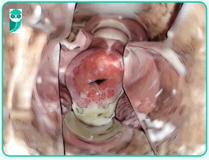
A Tratamento ambulatorial com ceftriaxone 500mg IM em dose única + doxiciclina 100mg VO por 14 dias, com retorno para reavaliação em 48 horas.
B Internação hospitalar para tratamento com ceftriaxone 1g IV. 1x/d por 14 dias + doxiciclina 100mg VO 12/12 h por 14 dias; realizar ultrassonografia transvaginal para avaliar a presença de abscesso tubo-ovariano.
C Tratamento ambulatorial com ceftriaxone 500mg IM em dose única + azitromicina 1g VO em dose única, com retorno em 48 horas para reavaliação.
D Internação hospitalar + metronidazol 500mg IV. 12/12 horas + doxiciclina 100mg VO 12/12 horas por 14 dias + videolaparoscopia por suspeita de abscesso tubo-ovariano.
Questão 938 · Ética em reprodução humana · Ginecologia · 4000152088Casal comparece à consulta com ginecologista querendo esclarecimentos sobre o “útero de substituição”, já que desejam gestar e a paciente é portadora de Síndrome de Rokitansky. O parceiro é hígido e possui 2 filhos de relacionamento anterior. A paciente refere que sua irmã e também uma amiga estão dispostas a ser cedentes do útero. Considerando as regras do Conselho Federal de Medicina de 2022, é correto afirmar:
A Útero de substituição não é permitido no Brasil;
B É permitido e o casal pode escolher entre a amiga e a irmã da paciente;
C Somente a amiga pode se candidatar, já que não é permitido parentesco com a cedente do útero;
D Somente a irmã pode ser a cedente do útero.
Questão 939 · Ginecologia · 4000152087Uma mulher com 30 anos de idade, assintomática, vem à Unidade Básica de Saúde para mostrar o resultado do exame de colo uterino. O resultado da citologia oncótica revelou lesão intraepitelial de baixo grau (LIEBG). O médico orientou que ela repetisse a citologia em 6 meses, que veio com resultado normal. Que conduta médica deverá ser adotada a partir do resultado da segunda citologia?
A Encaminhar para a colposcopia, pois a conduta foi incorreta diante do primeiro resultado citológico.
B Repetir citologia em 6 meses e, se negativa, rastreio trienal.
C Repetir citologia em 6 meses e, se negativa, rastreio anual.
D Biópsia de colo uterino.
Questão 940 · Ginecologia · 4000152086Paciente do sexo feminino, 61 anos, menopausa aos 49 anos de idade, hipertensa e obesa, apresenta-se ao ginecologista referindo sangramento genital esporádico há 2 meses. Nega uso de terapia hormonal, Não foram observadas alterações no exame físico ginecológico O ultrassom transvaginal apresenta um eco endometrial medindo 8 mm, útero de 45 cm3 e os ovários não foram visualizados. Qual é a conduta para este caso?
A histerectomia + salpingooforectomia bilateral.
B ablação endometrial.
C seguimento ultrassonográfico em 6 meses.
D histeroscopia diagnóstica e biópsia.
Questão 941 · Ginecologia · 4000152085Paciente do sexo feminino, 63 anos, G2 P2 A0, comparece à UBS para apresentar mamogra a de rastreamento, cujo resultado foi BI-RADS 0. A mulher encontra-se assintomática e não apresenta comorbidades ou antecedentes familiares de câncer. O exame físico mamário não apresenta alterações. Qual é a conduta para esse caso?
A Solicitar uma ultrassonografia complementar para esclarecer se a lesão encontrada na mamografia é suspeita de malignidade ou não.
B Prosseguir com a rotina de rastreamento e solicitar uma nova mamografia em 2 anos.
C Encaminhar para o serviço de referência em oncologia para fazer uma biópsia.
D Somente acompanhar com uma nova mamografia em 6 meses.
Questão 942 · Glaucoma Congênito Primário · 4000152084Lactente com 2 meses de idade é levado à consulta de Puericultura na Unidade Básica de Saúde. A mãe informa lacrimejamento constante no olho direito, que se iniciou logo após o nascimento. Foi prescrito colírio de tobramicina 3 vezes ao dia, e a mãe relata que fez seu uso no olho da criança por 10 dias, com melhora parcial do quadro. Ao exame oftalmológico, nota-se discreta hiperemia conjuntival no olho direito, associada a secreção mucopurulenta e crostas na base dos cílios. Com relação ao quadro descrito, assinale a alternativa correta:
A Como não houve melhora com o antibiótico tópico, está indicado o tratamento com antibiótico oral por 1 semana.
B Um dos principais diagnósticos diferenciais do quadro é o glaucoma infantil.
C Como não houve melhora com antibioticoterapia tópica, a sondagem da via lacrimal está indicada.
D Massagem do saco lacrimal e higiene palpebral deveriam ter sido indicadas desde o nascimento, não sendo mais eficazes nesse estágio da doença.
Questão 943 · Tratamento · Cirurgia · 4000152083VSC, 37 anos, masculino, procura Unidade de Pronto Atendimento, queixandose de dor intensa em região perianal há 4 dias, que piora ao evacuar. Antecedentes: nega comorbidades, alergias e uso de medicações. Exame físico: bom estado geral, corado, hidratado, PA 118x86 mmHg, FC 82 bpm, temperatura axilar 37,9 oC. Ori cial: abaulamento doloroso em borda anal posterior direita com utuação e rubor locais, sem saída de secreção. Não foram notadas demais alterações. Toque retal não realizado por recusa do paciente, devido a estar com dor intensa. Com relação à patologia e à conduta, assinale a alternativa correta:
A abscesso anorretal; alta com antibiótico e cuidados locais.
B hemorroida externa trombosada; encaminhar para hemorroidectomia.
C abscesso anorretal; encaminhar para tratamento cirúrgico.
D físsura anal aguda; tratamento tópico com diltiazem 2%.
Questão 944 · Hérnia Umbilical · Cirurgia · 4000152082Em consulta na UBS, mãe leva sua lha de 5 meses para rotina pediátrica. Criança do sexo feminino, nascida de 33 semanas, com 2,4kg e 38cm. Apresenta bom ganho de peso desde a última consulta, com desenvolvimento adequado. A mãe refere apenas preocupação por ter notado estufamento no umbigo da criança, pior quando a mesma chora. Com relação a essa patologia, assinale a alternativa correta:
A Caso, no exame físico, seja detectada hérnia umbilical redutível maior que 2 cm, a criança deve ser encaminhada ao pronto-socorro para cirurgia de urgência.
B Complicações como encarceramento são comuns, e a paciente deve ser encaminhada para avaliação cirúrgica, independentemente do tamanho do defeito.
C A idade gestacional não é fator predisponente para o surgimento de hérnias umbilicais.
D Hérnias umbilicais com anel pequeno podem regredir espontaneamente no primeiro ano de vida.
Questão 945 · Tratamento Clínico · Cirurgia · 4000152081Um homem, 62 anos, procura seu consultório com queixa de dor nas panturrilhas que começou há 2 anos e tem piorado progressivamente. Ele refere que a dor surge depois que ele percorre quatro quadras e desaparece depois que ele cessa a caminhada. Refere hipertensão, dislipidemia e diabetes controlados. Além disso, é tabagista (60 maços/ano). Está em uso regular dos medicamentos prescritos, incluindo estatina. Nega dor quando está parado. Ao exame físico, o pulso poplíteo encontra-se diminuído bilateralmente e os pulsos tibial anterior e tibial posterior não são sentidos à palpação. Em ambos os pés percebe-se onicodistrofia. Com as informações acima, além de orientarmos a cessação do tabagismo, podemos afirmar que:
A A ausência completa de pulsos nos membros inferiores é uma indicação para a cirurgia de revascularização.
B O uso de antiagregantes plaquetários está indicado nesse caso, com a principal finalidade de aumentar a distância funcional de marcha.
C Exercícios supervisionados e cilostazol são as principais medidas terapêuticas, considerando a queixa principal.
D Apesar de tratar-se de um procedimento invasivo, a cirurgia de revascularização apresenta melhores resultados que o tratamento clínico, mesmo nos pacientes com sintomas leves.
Questão 946 · Tratamento das Hérnias Inguinais · Cirurgia · 4000152080Paciente do sexo masculino,75 anos de idade, em seguimento por hiperplasia prostática benigna, é encaminhado pelo Urologista pelo achado de hérnia inguinal direita em exame de imagem. Na anamnese, refere que é aposentado, que não sente incômodo na região, é cardiopata controlado com múltiplas medicações e tem sinais de prostatismo, como esforço miccional. Sobre o caso clínico, assinale a conduta mais adequada para o caso:
A Pelo alto risco de encarceramento e estrangulamento, após otimização clínica, está indicada a hernioplastia inguinal.
B É necessária a solicitação de exame de imagem para a confirmação do diagnóstico de hérnia inguinal.
C A espera vigilante (“
D O uso da funda está indicado para evitar o aumento do tamanho da hérnia inguinal.
Questão 947 · Tratamento Cirúrgico da DRGE · Cirurgia · 4000152079Igor, 26 anos, IMC: 25 kg/m², refere pirose, regurgitação e tosse crônica há mais de 3 anos, fazendo uso regular de pantoprazol 40 mg/dia antes das refeições durante esse período, com alívio sintomático apenas parcial. Endoscopia digestiva alta há 3 meses com esofagite grau C de Los Angeles, pHmetria de 24 horas confirmando re uxo patológico e manometria esofágica com hipocontratilidade moderada do terço distal do esôfago. Qual é a melhor conduta para alívio sintomático prolongado?
A Abordagem cirúrgica com cardiomiotomia a Heller.
B Dobrar a dose do pantoprazol, reeducação alimentar e estímulo à prática de atividade física
C Indicar fundoplicatura parcial posterior a Toupet (270°).
D Indicar fundoplicatura a Nissen (360°).
Questão 948 · Diagnóstico endoscópico · Cirurgia · 4000152078Odete, 74 anos, chega ao consultório com história de hematoquezia intermitente, de pequeno volume, nos últimos 6 meses, período em que tem notado piora da constipação intestinal e perda ponderal. Você realiza toque retal no consultório, sem alterações. Qual é a hipótese diagnóstica a ser considerada e a conduta mais apropriada?
A Doença hemorroidária. Prescrever dieta rica em fibras, aumentar a ingestão de líquidos, banhos de assento e atividade física regular.
B Tumor de cólon direito. Solicitar retossigmoidoscopia.
C Doença inflamatória intestinal. Solicitar calprotectina fecal
D Tumor de cólon esquerdo. Solicitar colonoscopia.
Questão 949 · Trauma Abdominal Penetrante · Cirurgia · 4000152077Um paciente com 30 anos de idade, vítima de ferimento por arma branca no anco esquerdo, sem evidência de lesões em outros segmentos corpóreos, foi levado pelo Serviço de Atendimento Móvel de Urgência (SAMU) ao pronto-socorro do Centro de Referência de Trauma de nível terciário para atendimento. No atendimento inicial, apresentava-se com permeabilidade das vias aéreas, ventilação/respiração sem alterações significantes, frequência respiratória (FR) de 24 irpm, frequência cardíaca (FC) de 92 bpm, PA: 110 x 70 mmHg, Glasgow 15, pupilas isocóricas e fotorreagentes. Presença de um ferimento inciso de 3,0 centímetros no anco esquerdo, na linha axilar posterior, apresentando mínimo sangramento e pouca dor local. Abdome ácido, sem sinais de peritonite. Toque retal com ampola vazia. Qual seria a conduta adequada a ser tomada nesse caso?
A FAST (
B Laparotomia exploradora.
C Tomografia de abdome com duplo ou triplo contraste.
D Realizar a exploração local do ferimento e definir conduta de acordo com a presença ou não de violação peritoneal.
Questão 950 · Agentes de Indução · Agentes Intravenosos · Princípios da Anestesiologia · 4000152076Um homem de 55 anos é trazido para o hospital após queda do telhado de sua casa. O paciente apresenta- se consciente e orientado, porém muito taquipneico, pálido e ansioso. Ao exame: PA = 82 x 48 mmHg, FC = 140 bpm, saturação periférica de O2 de 90%. Foi indicada cirurgia de emergência. A indução da anestesia foi feita com fentanil, etomidato e succinilcolina. Diante do quadro apresentado, assinale a alternativa correta:
A O propofol também poderia ter sido utilizado como agente hipnótico.
B Caso o paciente apresentasse contraindicação para o uso de succinilcolina, o pancurônio seria o relaxante muscular de escolha.
C O uso de etomidato está associado à supressão de liberação de ACTH pela hipófise.
D A succinilcolina é um bloqueador neuromuscular do tipo despolarizante.
Questão 951 · Exames de Imagem · Cirurgia · 4000152075Paciente do sexo feminino, 23 anos, refere dor abdominal há 2 dias associada de vômitos, diarreia e perda de apetite. Nega disúria. Traz exames colhidos no dia anterior: Hb/Ht 12,1 g/dL (normal = 12 a 14,5 g/dL) / 37% (normal = 36 a 42%); leucócitos 12.780 mm³ (normal = entre 4 e 11.000 mm³) sem bastonetes; Ureia: 22 mg/dL (normal = entre 30 e 60 mg/dL), Creatinina 0,6 mg/dL (normal = entre 0,6 e 1,2 mg/dL), Beta HCG = negativo, exame de urina 1: leucócitos: 1.000.000 céls/mL (normal = menor que 10.000 céls/mL). Ao exame físico, apresenta defesa à palpação em fossa ilíaca direita, sem sinais de peritonite difusa. Com relação ao quadro clínico e às principais hipóteses diagnósticas, assinale a alternativa correta
A Paciente com diagnóstico de cistite aguda; a melhor conduta no momento é alta com antibioticoterapia com cobertura para germes gramnegativos.
B O exame padrão ouro para confirmação diagnóstica do quadro clínico em questão é a tomografia de abdome e pelve com contraste.
C O diagnóstico mais provável é doença inflamatória pélvica aguda, sendo dispensável qualquer exame complementar.
D É dispensável fazer exames diagnósticos no momento, estando indicada a laparotomia de urgência.
Questão 952 · Clínica Médica · Introdução · Diagnóstico · 4000152074Joyce, 22 anos, relata uxo menstrual elevado desde a menarca. Quando consultou o dentista, sofreu gengivorragia importante, mesmo sem lesão significativa na cavidade oral. Nos exames da hemostasia, apresenta tempo de tromboplastina parcial ativado alargado (Rel 1,4, sendo valor de referência 1 a 1,25). Tempo de protrombina e hemograma completo normais. Marcus, 61 anos, diagnosticado com câncer de próstata, sofreu importante hemorragia no transoperatório de prostatectomia. O sangramento foi corrigido com medidas locais e ácido tranexâmico, e não houve hemorragia no pós-operatório. Tempo de tromboplastina parcial ativado, tempo de protrombina e hemograma completo normais. Lourdes, 42 anos, sem histórico de desa o hemostático prévio e com miomatose uterina importante, submetida a uma miomectomia sem intercorrências no transoperatório. Cerca de 12 horas após a cirurgia, apresentou sangramento abdominal importante, com necessidade de reabordagem. Entretanto, do ponto de vista anatômico, sem alterações. Tempo de tromboplastina parcial ativado, tempo de protrombina e hemograma completo normais. Após análise dos quadros citados, quais são, respectivamente, os prováveis diagnósticos de cada paciente?
A Hemofilia, alteração qualitativa plaquetária, deficiência do fator XIII (13).
B Doença de Von Willebrand, alteração qualitativa plaquetária, deficiência do fator XIII (13).
C Hemofilia, deficiência do fator XIII (13), alteração qualitativa plaquetária.
D Doença de Von Willebrand, deficiência do fator XIII (13), alteração qualitativa plaquetária.
Questão 953 · Clínica Médica · Tratamento Prof ilático · 4000152073Paciente do sexo feminino, 28 anos, vem à consulta na UBS com queixa de dores de cabeça. A cefaleia é normalmente pulsátil e unilateral, começa fraca ou moderada, mas vai aumentando em intensidade em cerca de 2 horas. Dura entre 4 e 10 horas. Quando forte, a paciente também ca enjoada e costuma fechar-se no quarto. Sempre que tem a crise, toma ibuprofeno ou tramadol, com melhora da dor. Conta que vem apresentando crises de cefaleia desde a adolescência, que sempre tiveram características semelhantes às atuais. Inicialmente as dores eram esporádicas e tinham preferência para a época pré-menstrual, mas com o passar do tempo foram tornando-se mais frequentes, a ponto de chegar a ter cerca de 2 crises semanais. De antecedentes, relata que já foi submetida à tonsilectomia na infância e à passagem de duplo jota por cálculo renal quatro anos antes. Ao exame físico, PA 128/82 mmHg, FC 84 bpm, peso 75 kg, altura 1,60 m. Exame físico e neurológico sem particularidades. Escolha a melhor opção de tratamento profilático:
A Sumatriptano
B Topiramato
C Propranolol
D Amitriptilina
Revisar: possível letra faltando em enunciado
Questão 954 · Dermatologia · 4000152072Uma mãe leva seu lho de 40 dias de vida com queixa de irritação na pele há uma semana. Ela refere que o lho ca mais irritado principalmente durante a noite e atrita um pé ao outro. Ao exame dermatológico você visualiza pápulas eritematosas pelo corpo e algumas vesículas na região palmoplantar. Diante da principal hipótese diagnóstica, qual é o melhor tratamento para essa criança?
A Ivermectina.
B Corticoide.
C Enxofre.
D Albendazol.
Revisar: possível letra faltando em enunciado
Questão 955 · Neurologia · Traumatismo Craniencef álico · 4000152071Um homem de 80 anos é levado ao pronto-socorro após queda da própria altura há cerca de 1 hora. Seus familiares relatam que o paciente se queixou de discreta cefaleia, sem outras queixas objetivas. Enquanto aguardava exames, apresentou rebaixamento súbito do nível de consciência. Ao ser avaliado, apresentava abertura ocular apenas ao estímulo doloroso, resposta verbal ausente e resposta motora com retirada inespecí ca, apenas do lado direito. Na avaliação pupilar, apresentava midríase xa à direita. Foi submetido à intubação orotraqueal e levado à tomogra a computadorizada (TC) de crânio, mostrada abaixo. Considerando o quadro clínico e a TC de crânio, qual é o diagnóstico?
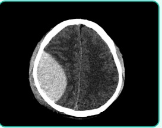
A Hematoma subdural à direita por lesão da artéria meníngea média.
B Hematoma subdural à direita por lesão de veias corticais.
C Hemorragia subaracnóidea à direita por lesão da artéria meníngea média.
D Hematoma epidural à direita por lesão da artéria meníngea média.
Revisar: possível letra faltando em enunciado
Questão 956 · Clínica Médica · Tratamento no paciente adulto · 4000152070Uma paciente de 19 anos dá entrada em serviço de pronto atendimento com queixas de mal estar geral, dor abdominal, náuseas, vômitos e diarreia. Refere ainda que há uma semana nota que está urinando em maior volume e com maior frequência Ao exame, encontra-se em estado geral regular, orientada, desidratada (1+/4+), eupneica, PA 90x60 mmHg, FC 102 bpm, abdômen difusamente doloroso à palpação e auscultas cardíaca e pulmonar sem alterações. Os exames admissionais são mostrados na tabela a seguir: Considerando a principal suspeita diagnóstica, que alternativa traz o conjunto de condutas mais adequado?
A Hidratação com cloreto de sódio a 0,9% + insulina regular em bomba de infusão contínua.
B Hidratação com cloreto de sódio a 0,9% + cloreto de potássio + insulina regular em bomba de infusão contínua.
C Hidratação com cloreto de sódio a 0,45% + cloreto de potássio + insulina regular em bomba de infusão contínua.
D Hidratação com cloreto de sódio a 0,45% + insulina regular em bomba de infusão contínua + bicarbonato
Questão 957 · Clínica Médica · Escore Meld · 4000152069O escore MELD ( espera do transplante hepático. Em relação a esse escore, marque a alternativa CORRETA:
A Para seu cálculo, utilizamos as seguintes variáveis: bilirrubina, albumina e INR.
B Em crianças (menores de 12 anos), o valor mínimo de MELD para alocação do paciente na lista do transplante é 15.
C O acréscimo do valor do sódio sérico no cálculo do escore MELD aumenta, ainda mais, a capacidade do escore de prever o prognóstico do paciente com hepatopatia crônica.
D Em adultos, o valor mínimo de MELD para alocação do paciente na lista do transplante hepático é 18.
Questão 958 · Escores de avaliação de risco tromboembólico e hemorrágico · 4000152068Maurício, 66 anos, comparece à unidade básica de saúde com queixa de palpitações e mal-estar há 4 dias. É hipertenso previamente, mas nega outras comorbidades. Ao exame físico é visto que o paciente está em bom estado geral, orientado em tempo e espaço, o ritmo cardíaco é irregular, PA: 130/70, saturação de O²: 96%, ausculta pulmonar normal. É então solicitado um eletrocardiograma: Sobre esse quadro clínico podemos afirmar que:
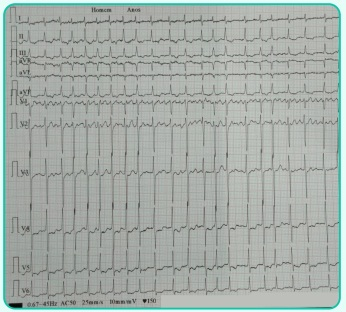
A Devido à alta frequência cardíaca, a melhor solução para o momento é promover a cardioversão.
B A melhor forma de avaliar o risco de eventos tromboembólicos é através do escore CHA2DS2VASc, cujo valor para esse paciente é 1, representando baixo risco.
C Para estimar o risco de eventos hemorrágicos, devemos aplicar o escore HASBLED, que para esse paciente tem valor de 1 ponto, uma vez que a hipertensão, nesse caso, não pontua.
D Após a reversão da arritmia, o paciente permanecerá em anticoagulação plena por, no máximo, 4 semanas.
Questão 959 · Agente etiológico · 4000152067Uma mulher de 20 anos de idade, portadora de esquizofrenia, comparece à Unidade Básica de Saúde, acompanhada da mãe, com prurido anal, principalmente à noite, após se deitar, há aproximadamente uma semana, acompanhado de dor abdominal esporádica. A mãe relatou que estava muito preocupada, porque a família mora em más condições e ela encontrou “um verme” na roupa íntima da lha. Nesse caso, qual é o agente etiológico mais provável?
A Ascaris lumbricoides.
B Enterobius vermicularis.
C Giardia lamblia.
D Trichuris trichiura.
Questão 960 · COVID 19 · 4000152066Um homem com 61 anos de idade, portador de hipertensão arterial sistêmica e diabetes, é atendido em uma Unidade de Pronto Atendimento com febre, tosse seca, mal-estar e di culdade para respirar. O quadro iniciou-se há uma semana e piorou progressivamente. Ao exame físico, apresenta-se consciente, orientado, com pulso = 120 bpm, temperatura axilar = 38,3°C, FR = 24 ipm. Auscultas pulmonar e cardíaca normais. Abdome: nada digno de nota. Extremidades bem perfundidas, sem edemas, sem empastamento muscular. Oximetria de pulso de 88% (em ar ambiente). O médico plantonista fez a hipótese diagnóstica de COVID-19, internou o paciente em um leito de isolamento e prescreveu oxigênio suplementar. Segundo recomendações do Ministério da Saúde, qual das seguintes terapias está indicada para esse paciente, pela evidência de benefício?
A Anticoagulantes em dose terapêutica para tromboembolismo venoso.
B Corticosteroides em baixas doses, limitado a 10 dias.
C Hidroxicloroquina associada à azitromicina.
D Plasma convalescente.
Questão 961 · Meningites · 4000152065Um homem com 30 anos de idade, previamente hígido, é admitido no pronto-socorro com quadro de febre alta, cefaleia e vômitos há um dia. Ao exame físico, encontra-se em regular estado geral, toxemiado, febril (temperatura axilar = 38,1°C), com PA = 90 x 60 mmHg, FC = 120 bpm, desidratado ++/4+, descorado +/4+, acianótico, anictérico. Apresenta rigidez de nuca. O resultado do exame do líquido cefalorraquidiano (líquor) mostra 2500 células/mm3 , 91% de neutró los; glicose = 15 mg/dL (glicose sérica = 72 mg/dL); proteínas = 280 mg/dL; bacterioscopia pelo Gram: não se observa bactérias; cultura em andamento. Diante desse quadro clínico, qual é o diagnóstico correto?
A Meningite viral.
B Meningite por fungo.
C Meningite bacteriana.
D Meningite tuberculosa.
Questão 962 · Política Nacional de Atenção Básica PNAB · 4000152064As equipes de Consultório de Rua:
A contam sempre com pelo menos um psiquiatra.
B compõem os serviços de especialidades do SUS.
C andam a pé para que as pessoas em situação de rua se identifiquem com elas.
D devem educar as pessoas em situação de rua para que busquem outra condição social.
E têm como uma das atribuições trabalhar junto a usuários de álcool, crack e outras drogas.
Questão 963 · Medicina Preventiva · 4000152063Embora presente no Brasil há cerca de 20 anos, as discussões sobre Telessaúde e Telemedicina ganharam mais atenção após a Resolução 2227/2018 do CFM, que dispunha sobre Telemedicina e Teleconsulta. Essa portaria, após inúmeras críticas, foi revogada. Em 2020, diante do cenário da COVID-19, o Ministério da Saúde lançou a Portaria 467, em 20 de março de 2020. Considerando o teor da Portaria 467, de 20 de Março de 2020, indique a exigência fundamental para a prescrição médica de receitas e emissão de atestados por meio digital.
A Possuir cadastramento prévio especial no CFM.
B Usar o modelo de impresso apropriado, fornecido pelo Ministério da Saúde.
C Ter assinatura digital registrada em cartório público de notas
D Ter assinatura eletrônica devidamente registrada no ICP Brasil
E O médico deve possuir registro de qualificação de especialista
Questão 964 · Medicina Preventiva · 4000152062Dentre as medidas a serem implementadas para a prevenção e o controle da disseminação do SARS-CoV-2 em serviços hospitalares, a Agência Nacional de Vigilância Sanitária recomenda, em sua Nota Técnica GVIMS/ GGTES no 04/2020, atualizada em 8 de maio de 2020, procedimentos e uso de Equipamentos de Proteção Individual (EPI). Recomenda-se que o pro ssional de saúde use a máscara N95/PFF2, ou equivalente,
A em áreas coletivas, em que não há procedimentos geradores de aerossóis, com pacientes com suspeita de COVID-19.
B em consultórios, durante realização de exame físico em pacientes com sintomas respiratórios.
C no quarto/área/enfermaria/box de pacientes suspeitos ou confirmados de COVID-19, durante a realização de procedimentos que possam gerar aerossóis.
D na área de triagem preliminar, em enfermarias com pacientes confirmados de COVID-19 durante assistência sem procedimentos que possam gerar aerossóis
E no quarto/área/enfermaria/box de pacientes suspeitos ou confirmados de COVID-19, durante a assistência sem procedimentos que possam gerar aerossóis.
Questão 965 · Medicina Preventiva · 4000152061Que programa instituído pela Portaria nº 2.979, de 12 de novembro de 2019, descrito a seguir estabelece um novo modelo de financiamento de custeio da Atenção Primária à Saúde (APS)?
A PMAQ.
B PNAB.
C PNI.
D Previne Brasil.
E Patient Protection and Affordable Care Act.
Questão 966 · Norma Operacional Básica NOB e Norma Operacional de Assistência à Saúde NOAS · 4000152060Na Norma Operacional Básica - SUS 01/1993, foram estabelecidas normas e procedimentos reguladores do processo de descentralização da gestão das ações e serviços de saúde. Dentre essas normas e procedimentos,
A foram criadas as comissões intergestoras bipartite e tripartite.
B foi criado o Programa Saúde da Família.
C foi elaborado o Plano Diretor de Regionalização.
D foram criados o Pacto pela Vida e o Pacto de Gestão.
E foi criado o Programa Saúde da Família.
Questão 967 · Declaração de óbito DO Atestado de óbito · 4000152059Paciente com história de febre reumática há 20 anos, que levou à estenose mitral como consequência. Há 5 anos, iniciou quadro de insu ciência cardíaca congestiva, a qual se manteve compensada com o tratamento. Ultimamente, o quadro agravou-se e a insu ciência cardíaca tornou-se irreversível. Paciente evoluiu para óbito. Ressalta-se ainda que, há 4 anos, houve diagnóstico de hipertensão arterial. Considerando-se a parte I. das causas da morte, no atestado de óbito, assinale a alternativa que representa o preenchimento adequado das linhas a, b, c e d, respectivamente:
A Insuficiência cardíaca congestiva; estenose mitral; febre reumática; --
B Estenose mitral; insuficiência cardíaca congestiva; --; --
C Febre reumática; estenose mitral; insuficiência cardíaca congestiva; --
D Hipertensão arterial; insuficiência cardíaca congestiva; estenose mitral; --
E Estenose mitral; hipertensão arterial; insuficiência cardíaca congestiva; febre reumática.
Questão 968 · Medicina Preventiva · 4000152058Menino de 8 anos é trazido à consulta pelos pais. Ambos referem que o lho está “sempre agitado”, que é incapaz de brincar calmamente, que com frequência fala demais e interrompe os outros, apresentando muita di culdade em esperar sua vez (por exemplo, em uma la). Além disso, evita ou reluta em envolver-se em atividades que exijam esforço mental, é bastante desorganizado nas suas tarefas diárias e repetidamente perde coisas (seu material escolar, seus óculos, entre outros). O menino confirma as informações trazidas pelos pais. Em função dessa sintomatologia, você realiza o diagnóstico de transtorno de dé cit de atenção/hiperatividade (TDAH) subtipo combinado e indica tratamento psicoterápico e farmacológico. Sobre o tratamento farmacológico do TDAH em crianças, é correto afirmar que:
A A terapia farmacológica não é considerada o tratamento de primeira linha.
B Os estimulantes do sistema nervoso central são contraindicados para uso em crianças com anormalidades e riscos cardíacos conhecidos.
C O metilfenidato é altamente eficaz nesse transtorno, porém apresenta muitos efeitos adversos.
D Ao contrário do que se pensava anteriormente, a administração contínua do metilfenidato por muitos anos, sem qualquer interrupção, não apresenta queda em centímetros durante o processo de crescimento.
E Tratamento expectante, visto que o TDAH não causa prejuízo funcional.
Questão 969 · Medicina Preventiva · 4000152057Paciente, 45 anos, chega ao setor de emergência do pronto-socorro com quadro de sialorreia, sudorese intensa, dispneia importante e cólicas abdominais. O exame físico revelava miose, bradicardia e ausculta pulmonar com roncos difusos e intensos. Sem outras anormalidades importantes. O mesmo é agricultor. Baseado no caso clínico, o médico que fez o atendimento indicou o uso da seguinte droga:
A Fomepizole
B Pralidoxima
C Flumazenil
D N-acetilcisteína
E Naloxone
Questão 970 · Diagnóstico do Transtorno do Humor Bipolar THB · Diagnóstico da Depressão · 4000152056Paciente feminina, de 27 anos, buscou atendimento em uma Unidade Básica de Saúde por apresentar humor deprimido, sentimentos de culpa excessiva, acentuada diminuição do interesse nas atividades do dia a dia, insônia e perdas de peso e de energia significativas. Esses sintomas tiveram início há 4 semanas e vinham piorando progressivamente. Que conduta, dentre as abaixo, deve ser adotada de imediato?
A Investigar risco de suicídio e história de transtorno bipolar
B Prescrever clonazepam.
C Prescrever amitriptilina.
D Encaminhar a paciente para internação psiquiátrica pela gravidade do quadro
E Internar o paciente no CAPS
Questão 971 · Transtornos do Humor · 4000152055Um estudante de biologia de 24 anos de idade é trazido por sua mãe e seu irmão ao Pronto-Socorro. Nas últimas duas semanas, o estudante tem cado progressivamente mais agitado, inquieto, dormindo menos e falando rápido, às vezes difícil de entender. Há dois dias começou a falar que descobriu a cura para a covid- 19, tendo enviado várias mensagens eletrônicas para diferentes jornais, instituições públicas e embaixadas. Diz agora que aguarda a ligação de ministros da saúde de vários países para conversar sobre sua descoberta. Quando questionado pelo irmão sobre esses fatos, cou muito irritado e tentou agredi-lo sicamente. A família diz que o paciente sempre foi estudioso, trabalhador, carinhoso com os pais e é amigo do irmão. Aos 20 anos de idade, apresentou quadro depressivo e foi tratado com medicamento, cujo nome os familiares não se recordam. Não há antecedentes familiares mórbidos relevantes. Qual é a principal hipótese diagnóstica?
A Transtorno obsessivo compulsivo.
B Esquizofrenia hebefrênica.
C Transtorno afetivo bipolar.
D Transtorno de personalidade.
E N.D.A
Revisar: possível letra faltando em enunciado
Questão 972 · Lei n 81421990 · 4000152054No âmbito do Sistema Único de Saúde (SUS), para receberem os recursos da União destinados à cobertura das ações e serviços de saúde, os Municípios devem contar, entre outros, com
A Fundo de Saúde, Comissão Intergestores Tripartite e contrapartida de recursos para a saúde no respectivo orçamento.
B Fundo de Saúde, Conselho de Saúde e Comissão de Incorporação de Tecnologia em Saúde.
C Plano de saúde, Comissão Intergestores Tripartite e Comissão de Incorporação de Tecnologia em Saúde.
D Plano de saúde, Fundo de Saúde e contrapartida de recursos para a saúde no respectivo orçamento.
E Captação ponderada, pagamento por desempenho e incentivo para ações estratégicas.
Questão 973 · Medicina Preventiva · 4000152053Segundo Viana e Lima (2011), a regionalização tem como objeto central a conformação de regiões, traduzindo-se como um processo político mais amplo, condicionado pela distribuição de poder e pelas relações estabelecidas entre governos, organizações públicas e privadas, além de cidadãos, em diferentes espaços geográficos. Tomando como base o texto acima, correlacione a coluna I. de acordo com a II. Coluna I (A) Regiões de saúde (B) Territorialização (C) Planejamento Regional (D) Descentralização (E) Redes Regionalizadas de Atenção à Saúd Coluna II ( ) Consiste no reconhecimento e na apropriação, pelos gestores, dos espaços locais e das relações da população com os mesmos, expressos por meio de dados demográ cos e epidemiológicos, equipamentos sociais, dinâmica das redes de transporte e de comunicação, uxos assistenciais e por outros dados que se mostrem relevantes para a intervenção no processo saúde-doença. ( ) São recortes territoriais inseridos em espaços geográ cos contínuos, tendo como base a existência de identidades culturais, econômicas e sociais, assim como de redes nas áreas de comunicação, infraestrutura, transporte e saúde. ( ) Segue o desenho federativo brasileiro, tendo como foco a transferência de poder decisório, responsabilidades gestoras e recursos financeiros da União para os estados e, principalmente, os municípios. ( ) Constitui-se por um conjunto de pontos de atenção, de diferentes funções, complexidades e per s de atendimento, que operam de forma ordenada e articulada no território, de modo a atender às necessidades de saúde da população. ( ) Técnica de aplicação de políticas incluindo o seu vínculo com o território, sofrendo grande influência da geografia e da economia. Correlacionando as letras com as alternativas, a sequência correta é:
A A-B-C-D-E.
B E-D-B-C-A
C C-A-B-E-D.
D B-A-D-E-C.
E D-E-B-A-C.
Revisar: possível letra faltando em enunciado
Questão 974 · Medicina Preventiva · 4000152052O processo saúde-doença é in uenciado por uma série de fatores que têm sido estudados e considerados para promover a saúde coletiva. Figura extraída da prova de Residência Médica para ingresso na UNICAMP - 2021. Prova escrita dissertativa para acesso direto da 1ª fase. O MODELO REPRESENTADO NA FIGURA É:
A História Natural da Doença.
B Determinantes Sociais da Saúde
C Biomédico clássico
D Processual
E Xamanístico.
Questão 975 · Medicina Preventiva · 4000152051Um assalto em uma mansão deixa dois seguranças com ferimentos por arma de fogo. Um deles tem vínculo empregatício com uma empresa, e o outro fazia bico no dia. Ambos são internados e sofrem cirurgia. Diante do exposto, assinale a alternativa correta.
A Apenas o trabalhador com vínculo empregatício deve ter o caso notificado ao Sistema de Informação de Agravos de Notificação (SINAN).
B Nenhum dos casos deve ser notificado ao SUS, pois trata-se de casos de notificação apenas à Previdência Social.
C Ambos os casos devem ser notificados ao SINAN como acidentes de trabalho graves
D Os casos podem ser notificados ao SINAN se houver comprovação de condição precária de trabalho.
E Os casos devem ser notificados ao SUS como violência interpessoal
Questão 976 · Medicina Preventiva · 4000152050De acordo com a Portaria de consolidação nº 2: Anexo XXII - Capítulo I: Das disposições gerais, Art. 3º, é uma das diretrizes do SUS e da RAS a ser operacionalizada na Atenção Básica:
A Gratuidade
B Equidade.
C Resolutividade
D Humanização.
E Universalidade.
Questão 977 · Método Clínico Centrado na Pessoa · 4000152049O primeiro componente do Método Clínico Centrado na Pessoa (MCCP) propõe quatro dimensões para ampliar o olhar à história clínica, incluindo a experiência do adoecer. Analise o relato deste paciente, na coluna da esquerda, e combine com a respectiva dimensão do MCCP. ( ) “Doutor, hoje eu vim porque preciso de uma ressonância magnética para ver a minha coluna e, também, de um exame da próstata.” ( ) “Estou com medo de ter o mesmo m do meu primo. Ele faleceu semana passada, tinha uma metástase na coluna.” ( ) “Sabe, Doutor, eu sou muito ativo no meu trabalho de marceneiro, minha família depende de mim. Será que é uma hérnia que me deixará paralítico?” ( ) “Mas, pelo que me falou, a dor dele era parecida com a minha, acho que posso ter câncer também. Se bem que já tenho essa dorzinha leve nas costas há muitos anos.” I. Sentimentos II. Ideias III. Funcionalidades IV. Expectativas Escolha a alternativa com a sequência de combinação correta.
A IV, II, III e I
B IV, I, III e II.
C III, IV, II e I
D II, III, IV e I
E I, II, III e IV.
Questão 978 · Medicina Preventiva · 4000152048A Atenção Primária à Saúde deve desempenhar um papel importante na organização da rede de atenção, tendo como principais atribuições: I. Ser porta de entrada do sistema de serviços de saúde, oferecer serviços com boa estrutura e integrados à rede assistencial.( ) II. Exercer um cuidado contínuo ao longo do tempo, com capacidade para resolver a maioria das necessidades de saúde da população.( ) III. De nir e orientar o caminho do usuário na rede de serviços com base nas necessidades de saúde da população.( ) IV. Realizar a coordenação do cuidado, considerando os uxos estabelecidos, responsabilizando-se pela população do seu território.( ) V. Estimular a prática multi e interpro ssional, tendo como referência a prática do médico, que deve orientar as ações da equipe de saúde. ( ) A sequência correta que preenche os parênteses, considerando que V. indica que a premissa é verdadeira e F que a premissa é falsa, é:
A V-V-V-V-V.
B F-V-V-V-V
C V-F-V-V-V
D V-V-V-V-F.
E V-F-F-F-F.
Questão 979 · Letalidade · Incidência · 4000152047No Rio Grande do Sul, a pandemia da COVID-19 teve seu primeiro caso confirmado em 10 de março de 2020 e o primeiro óbito em 24 do mesmo mês. Conforme o site do Ministério da Saúde (https://covid.saude.gov.br), as informações atualizadas sobre a doença no estado em 21 de abril eram: • número de casos confirmados: 904 • número de óbitos: 27 Considerando que a população estimada do Rio Grande do Sul, no mês de abril de 2020, era de cerca de 11.500.000 habitantes, quais eram as taxas de incidência e de letalidade, aproximadamente, naquele momento?
A 78,6/1.000 – 29,8%.
B 7,86/100.000 – 2,98%.
C 2,3/100.000 – 2,98/1.000.
D 0,23/100.000 – 2,98%.
E 7,86/100.000 e 0,23/100.000.
Questão 980 · Monitoramento de Endemias e Epidemias o diagrama de controle · 4000152046O isolamento de grupos de maior risco, como hipertensos, diabéticos e idosos, em relação ao Covid-19, com o intuito de retardar a velocidade de propagação da onda pandêmica, diminuindo assim seu impacto na saturação da demanda por cuidados intensivos e seus impactos econômicos na sociedade, chama-se:
A Quarentena.
B Lockdown.
C Distanciamento social.
D Isolamento horizontal.
E Isolamento vertical.
Questão 981 · Medicina Preventiva · 4000152045Carlos, 62 anos de idade, vai a seu médico da UBS de referência queixando-se de crises de dor torácica, em aperto, associada a irradiação para o membro superior esquerdo, desencadeadas por esforço físico e que cessam após poucos minutos. Carlos é obeso, sedentário, hipertenso e diabético. Ex-tabagista há 2 anos, após participar do programa de cessação de tabagismo da unidade. Seus lhos já o tinham levado a um cardiologista, que o orientou a seguir a investigação dos sintomas, com exames complementares. Carlos, no entanto, tem um espírito despreocupado e preferiu perguntar a seu médico de con ança na UBS. A indicação e a valorização de um exame para ns diagnósticos deverão ser regidas pela relação custo- benefício, levando-se em consideração o valor preditivo pré-teste (VPPT). No caso de Carlos, visto que a prevalência de isquemia miocárdica na sua faixa etária é alta, espera-se:
A Valor preditivo positivo (VPP) alto para os exames.
B Baixa sensibilidade e especificidade dos exames solicitados.
C Nenhuma relação entre prevalência de isquemia miocárdica e VPPT.
D Que os médicos peçam o máximo de exames pelo alto risco do paciente.
E Valor preditivo negativo (VPN) elevado e baixa especificidade.
Questão 982 · Pediatria · 4000152044A síndrome nefrótica idiopática é a mais frequente das manifestações clínicas apresentadas em portadores de glomerulopatias primárias, na faixa etária pediátrica. Sua confirmação diagnóstica baseia-se nas alterações clínico laboratoriais e o achado histopatológico mais comum é a síndrome nefrótica por lesões mínimas (SNLM). Em que situação a síndrome nefrótica poderá ser de origem secundária?
A Proteinúria de 24 horas elevada e albumina sérica diminuída.
B Colesterol total e triglicérides elevados.
C Velocidade de hemossedimentação elevada e IgG diminuída.
D Dosagem de complemento diminuído e creatinina sérica elevada.
E Presença de trombose venosa profunda de membro inferior esquerdo.
Questão 983 · Pediatria · 4000152043A mãe de um lactente de três meses refere congestão respiratória que permanece quase o tempo todo. O exame físico mostra sibilância de baixa intensidade, mais claramente percebido durante a expiração e mais alto ao longo da traqueia. A radiogra a de tórax não mostrou alterações, assim como não houve melhora da ausculta após uso de broncodilatador. O exame a ser realizado para confirmar o diagnóstico é a:
A Fluoroscopia.
B Ressonância magnética com angiografia.
C Fibronasolaringoscopia.
D Broncoscopia rígida.
E Testagem da função pulmonar.
Questão 984 · Pediatria · 4000152042Em exame de rotina no pediatra, a mãe mostra-se preocupada com “manchas na língua” do seu lho de 2 anos de idade. Ao examinar, o médico constata que está diante de um quadro de “língua geográfica” (glossite migratória), observando lesões erosivas com bordas irregulares, cinzento-esbranquiçadas, que lembram contornos de um mapa. Sua conduta deve ser:
A Prescrever nistatina 0,5 mL, aplicação local, de 12 em 12 horas.
B Prescrever antissépticos com clorexidina, para limpeza da cavidade oral, até 3 vezes ao dia.
C Prescrever anti-inflamatório não hormonal por 7 dias.
D Solicitar hemograma e dosagem de vitamina D.
E Tranquilizar a mãe, explicando a benignidade da condição.
Questão 985 · Pediatria · 4000152041A respiração oral é um sintoma comum na infância, em geral, consequente à obstrução nasal crônica. Os respiradores orais, na faixa etária pediátrica, com distúrbios respiratórios do sono geralmente apresentam os seguintes sintomas, EXCETO:
A Comportamento rebelde.
B Sonolência diurna.
C Hiperatividade.
D Problemas de aprendizado e atenção.
E Isolamento social.
Questão 986 · Pediatria · 4000152040Recém-nascido, com 12 dias de vida, sexo masculino, comparece à consulta para checagem dos exames realizados no Programa de Triagem Neonatal (teste do pezinho). Caso esse exame seja positivo para hipotireoidismo congênito (TSH > 20mUI/L), recomenda-se:
A Realizar a dosagem sérica de TSH após, pelo menos, 30 dias de vida.
B Iniciar o tratamento após confirmação por ultrassonografia da glândula tireoide.
C Realizar a dosagem sérica de TSH imediatamente e iniciar o tratamento idealmente até 15 dias de vida.
D Repetir o teste do pezinho após 45 dias de vida, quando já ocorreu a diminuição do pico de elevação fisiológica do TSH.
E Indicar a realização imediata de cintilografia da glândula tireoide.
Questão 987 · Pediatria · 4000152039Mãe assintomática, com teste molecular (RT - PCR) positivo para SARS-CoV-2 realizado no início do trabalho de parto, dá à luz, por parto vaginal, recém-nascido a termo, sem intercorrências observadas. Qual é a conduta CORRETA, baseada nas Normas Técnicas do Ministério da Saúde?
A Evitar a permanência no alojamento conjunto, mantendo mãe e recém-nascido isolados.
B Manter o aleitamento materno, porém o leite deverá ser extraído manualmente ou por bomba extratora, evitando contato da mãe com o recém-nascido, até 14 dias após o teste da mãe ter dado positivo.
C Na sala de parto, o recém-nascido deve ser colocado em contato pele a pele com a mãe e amamentado
D Não isolar o recém-nascido da mãe e manter o aleitamento materno com medidas preventivas da mãe, como lavagem de mãos e uso de máscara, antes de cada mamada.
E Após o nascimento, deve-se realizar o clampeamento imediato do cordão umbilical e, nos passos iniciais, aspirar as vias aéreas superiores do RN.
Questão 988 · Pediatria · 4000152038Escolar de 7 anos é levado à consulta ambulatorial de rotina por tosse persistente há quase dois meses, que piora com o decorrer dos dias, e emagrecimento. Devido ao quadro, foi internado com diagnóstico de “princípio de pneumonia”, sendo administrada amoxicilina 50mg/kg/dia por 10 dias, sem qualquer tipo de melhora. O exame físico está normal, com escores-Z P/I = - 2,03, E/I = - 0,56 e IMC/I = - 2,07. A radiogra a de tórax evidencia in ltrado intersticial à direita, em ápice, com adenomegalia hilar ipsilateral. Há prova tuberculínica com 12mm, sem evidência de contato com adulto com tuberculose nos últimos dois anos. O diagnóstico e tratamento do quadro apresentado, respectivamente, são:
A tuberculose latente; H por 3 meses.
B tuberculose pulmonar; RHZ por 2 meses, seguido de RH por 4 meses.
C pneumonia por
D pneumonia por
E uberculose miliar; RHZ por 2 meses, seguido de RH por 4 meses
Questão 989 · Pediatria · 4000152037Lactente de 7 meses com diarreia aquosa sem sangue há 2 dias, com febre eventual não aferida. Mãe refere vômitos ocasionais, irritabilidade e sede intensas. Lactente aceita apenas leite materno. Ao exame físico, a criança apresentava-se em REG, saliva espessa; FC 153, FR = 48; tempo de enchimento capilar de 4 segundos. Nesse caso, qual é a conduta inicial correta? SRO = Sais de reidratação oral SF = Soro fisiológico IM = Intramuscular
A Bromoprida IM; alta com SRO, leite materno e dieta constipante.
B SF 30ml/kg em 30 minutos; metoclopramida IM; suspender o aleitamento materno.
C Hidratação por gastróclise 50-100ml/kg em 4h, dieta oral zero e reavaliar.
D SRO 50ml/kg em 4 horas, manter aleitamento materno, ondansetrona 1x se necessário.
E SF 20ml/kg em 20 minutos em “bolus” repetidos; suspender a dieta e reavaliar
Questão 990 · Pediatria · 4000152036Uma paciente de um ano de idade foi admitida no pronto-socorro infantil com história de febre há sete dias. Sua mãe refere que, no início do quadro, a criança apresentou exantema em tronco que durou dois dias. Nega queixas respiratórias ou gastrointestinais. Ao exame, encontra-se em regular estado geral, descorada +/4, hidratada, eupneica, febril (38,5 °C), acianótica, anictérica, com presença de linfonodos em cadeia cervical direita, móveis, broelásticos, tendo o maior deles 2 cm de diâmetro. Cavidade oral com hiperemia difusa de orofaringe e língua em framboesa, sem sinais meníngeos. MV presente bilateralmente, sem ruídos adventícios, e BRNF em dois tempos, sem sopros. Abdome sem alterações. Boa perfusão periférica, com edema em dorso de mãos e pés e eritema palmar e plantar. Com base nessa situação hipotética, assinale a alternativa correta.
A Devido ao risco de síndrome de Reye, o uso de AAS deve ser evitado.
B O tratamento endovenoso com imunoglobulina humana está indicado de imediato.
C Não há necessidade de monitorizar a criança, visto que complicações como arritmias e miocardite não acontecem nessa doença
D A indicação de antibioticoterapia não deverá ser retardada caso haja atraso na coleta de culturas.
E O uso de amoxicilina pode recrudescer a erupção cutânea, sendo que o tratamento sintomático é o único que deve ser instituído.
Questão 991 · Pediatria · 4000152035Manuel, 3 anos de idade, está há 2 dias com febre de 39°C (temperatura axilar) associada a rinorreia e tosse. Foi admitido em Pronto-Socorro com relato de crise tônico-clônica generalizada em vigência de febre com duração de 10 minutos há cerca de 2 horas. Evoluiu com sonolência breve após o episódio, mas agora está ativo, reativo e sem alterações neurológicas. Trata-se do primeiro episódio de crise convulsiva. O pai da criança apresentou quadros semelhantes na infância. Sobre o ocorrido, podemos afirmar que se trata de:
A Crise de convulsão febril. Conduta: tranquilizar os pais e orientá-los quanto à possibilidade de recorrência em vigência de febre e sinais de alarme.
B Epilepsia. Conduta: prosseguir a investigação com eletroencefalograma e tomografia de crânio, internar paciente para observação por 12 horas.
C Crise convulsiva febril. Conduta: internar, coletar líquor e culturas (urina, sangue e líquor) e iniciar antibioticoterapia empírica de amplo espectro.
D Epilepsia. Conduta: introduzir profilaxia contínua com fenobarbital. Internar para observação por 12 horas.
E Crise convulsiva febril. Conduta: prosseguir a investigação com eletroencefalograma e tomografia de crânio, internar paciente para observação por 24 horas
Questão 992 · Pediatria · 4000152034Uma paciente de 12 anos, previamente diabética, em uso de insulina, apresenta quadro de mal-estar, desconforto abdominal, náuseas e vômitos. Ao exame clínico, está agitada, desidratada, taquicárdica (125 batimentos por minuto), taquipneica (30 inspirações por minuto), hipotensa (pressão arterial de 70/40 mmHg) e com glicemia capilar de 550 mg/dL. Os exames laboratoriais iniciais mostram os seguintes parâmetros: Gasometria venosa: pH 7,21; • Bicarbonato 8 mEq/L; • Sódio sérico: 130 mEq/L (valor de referência: 135 a 145 mEq/L); • Potássio sérico: 3,7 mEq/L (valor de referência: 3,5 a 5,1 mEq/L). Diante do quadro clínico e laboratorial exposto, juntamente com reidratação vigorosa, a conduta correta é a administração de
A bicarbonato endovenoso para a correção da acidose metabólica, insulina endovenosa e solução salina hipertônica para correção da hiponatremia
B insulina endovenosa, seguida de bicarbonato endovenoso para correção da acidose metabólica
C insulina endovenosa, cloreto de potássio endovenoso e bicarbonato endovenoso
D cloreto de potássio endovenoso concomitante à insulina endovenosa.
E cloreto de potássio endovenoso concomitante à salina hipertônica para correção de hiponatremia, seguidos de insulina endovenosa
Questão 993 · Pediatria · 4000152033Menina, 3 meses de idade, está em consulta de puericultura. No exame clínico foi suspeitada a presença de estrabismo. Colocado um feixe de luz na frente dos olhos, observa-se o reflexo luminoso como demonstrado na figura abaixo. Frente a esse achado, qual é o diagnóstico e a conduta adequada?
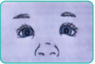
A Estrabismo transitório, encaminhar ao oftalmologista se persistir aos 12 meses de vida.
B Pseudoestrabismo devido a epicanto, sem conduta específica.
C Estrabismo convergente, encaminhar imediatamente para avaliação com oftalmologista.
D Estrabismo verdadeiro, solicitar tomografia computadorizada de crânio.
E Estrabismo verdadeiro, encaminhar para oftalmopediatra.
Questão 994 · Pediatria · 4000152032Menino de 2 meses, previamente hígido, dá entrada no pronto-socorro apresentando crise convulsiva há 20 minutos. Esse foi o primeiro episódio. Os pais negam febre ou outros sintomas. Ao exame físico, está em mau estado geral, sonolento, afebril, com frequência cardíaca de 160 bpm, frequência respiratória de 40 ipm, Glasgow = 10. Fundo de olho com presença de hemorragia retiniana. Sem outras alterações. A principal hipótese diagnóstica é:
A síndrome de West.
B reação pós-vacinal.
C meningoencefalite herpética.
D síndrome do bebê sacudido
E sífilis congênita
Questão 995 · Pediatria · 4000152031Bruno, 2 meses, é trazido pela mãe que refere que o lactente apresenta regurgitações frequentes durante todo o dia, algumas vezes, em grande quantidade. Está em aleitamento materno exclusivo, com bom ganho ponderal, sem irritabilidade. Antecedente: parto vaginal, a termo, peso ao nascer = 3200g. Peso atual = 4600g (ganho ponderal de 30 g/dia no último mês). O diagnóstico mais provável e a conduta inicial são:
A Doença do refluxo gastroesofágico; procinéticos.
B Doença do refluxo gastroesofágico; ranitidina.
C Refluxo gastroesofágico fisiológico; medidas comportamentais.
D Refluxo gastroesofágico fisiológico; ranitidina.
E Estenose hipertrófica do piloro; ultrassonografia de abdômen.
Questão 996 · Pediatria · 4000152030Menina, 9 anos de idade, vem à consulta de rotina. O pai está preocupado pois recentemente notou uma nodulação na mama direita da lha. Relata que avó paterna faleceu de câncer de mama aos 49 anos. Ao exame clínico, nota-se uma elevação da aréola e papila à direita, formando uma pequena saliência, com palpação broelástica. Sem alterações do lado esquerdo. Sem outras alterações ao exame clínico. A conduta é:
A Solicitar ultrassonografia de mama.
B Solicitar prolactina, TSH e cortisol.
C Manter conduta expectante.
D Realizar punção aspirativa por agulha fina.
E Solicitar ressonância de região hipotálamo-hipofisária
Questão 997 · Pediatria · 4000152029Na avaliação da puberdade de uma garota, foram identi cados projeção da papila e aréola acima do contorno da mama e pelos escuros, crespos e grossos nos grandes lábios, na sín se púbica e no períneo, o que corresponde aos estágios
A M4 e P4 de Tanner.
B M2 e P3 de Tanner.
C T5 e K5 de Rokitansky.
D T4 e K3 de Rokitansky.
E T1 e M1 de Kuster
Questão 998 · Pediatria · 4000152028Adriana leva seu bebê de 6 meses ao posto de saúde e solicita ao médico orientações sobre as vacinas que seu lho deverá receber. Ele verifica o cartão vacinal da criança e observa que as vacinas anteriores estão todas em dia. Segundo o calendário de vacinação, previsto no PNI, essa criança deverá receber:
A Terceira dose da vacina penta e terceira dose da VOP.
B Terceira dose da vacina penta e terceira dose da vacina pneumocócica 10 valente.
C Terceira dose da vacina penta, terceira dose da VOP e terceira dose da vacina pneumocócica 10 valente.
D Terceira dose da vacina penta, terceira dose da vacina rotavírus e terceira dose da vacina pneumocócica 10 valente.
E Terceira dose da vacina penta e terceira dose da VIP.
Questão 999 · Pediatria · 4000152027Recém-nascido (RN) do sexo masculino, 5 dias de vida, está internado em Unidade de Cuidados Intermediários para manejo de icterícia neonatal. Mãe com tipagem sanguínea O positivo, RN com tipagem AB positivo, Coombs negativo, Eluato positivo. Evoluiu com icterícia neonatal precoce e foi iniciada fototerapia com 20 horas de vida. Hoje colheu bilirrubinas, cujos níveis indicaram a suspensão da fototerapia. Foi indicada a alta hospitalar. Ao orientar a família, mãe refere que a criança está um pouco mais irritada. Foi notada hiperemia peri-umbilical conforme figura abaixo, com saída de secreção malcheirosa pelo coto. Está indicado nesse momento:
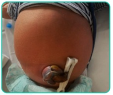
A Manter a alta hospitalar, orientar reforçar higiene do coto umbilical com álcool 70% e retornar se houver piora clínica.
B Decidir sobre necessidade de internação e antibioticoterapia baseado no índice neutrofílico e na proteína C reativa.
C Cancelar a alta hospitalar, rastreamento infeccioso incluindo coleta de liquor e iniciar antibioticoterapia endovenosa empírica.
D Manter a alta hospitalar, introduzir tratamento tópico com nitrato de prata e retorno obrigatório em 48 horas para reavaliação.
E Coletar cultura de secreção do coto e decidir sobre a necessidade de internação e antibioticoterapia baseada no agente encontrado.
Questão 1000 · Pediatria · 4000152026Recém-nascido, lho de mãe sem pré-natal, nasceu de parto normal com 38 semanas de gestação, pequeno para a idade gestacional. Na maternidade, detectou-se a presença de persistência do canal arterial, o teste do reflexo vermelho apresentou opacidade bilateral e as emissões otoacústicas foram ausentes bilateralmente. Esses achados são sugestivos de que infecção congênita?
A Toxoplasmose.
B Sífilis.
C Rubéola.
D Por citomegalovírus
E Por herpes simplex.
Questão 1001 · Pediatria · 4000152025Menina de 5 anos vem à consulta trazida pelos pais com queixa de astenia, sem outras queixas. Faz uso de sulfato ferroso há 2 meses (5 mg/kg/dia). Ao exame físico, a criança encontra-se hipocorada +/4+, sem outras alterações. Exames laboratoriais evidenciam: eritrócitos 5,4x106/uL, hemoglobina 10,5 g/dL (VR 10,5- 13,5), VCM 65 fL (VR 75-87), RDW 12,5% (VR 11-14), leucócitos 6.500 x 103/uL (com contagem diferencial normal), plaquetas 250.000. Reticulócitos 0,5% (VR < 2%). PCR 0,2 mg/ dL (VR < 0,5). Ferro sérico 65 ug/dL (VR > 50), ferritina 35 ng/mL (VR > 15). Eletroforese de Hemoglobinas: Hb A1: 93,5% (VR > 95%), HbA2: 4,5% (VR < 4%), HbF 2% (VR < 2%). Com base nos dados apresentados sobre essa paciente, o diagnóstico correto é:
A anemia ferropriva.
B anemia de doença crônica.
C beta talassemia.
D anemia sideroblástica.
E anemia hemolítica autoimune.
Questão 1002 · Abortamento inevitável · Conduta espectante · Obstetrícia · 4000152024Paciente, 19 anos, G2P0A1, beta HCG positivo, idade gestacional pela data da última menstruação: 18 semanas e 5 dias. Paciente comparece à consulta obstétrica com dor tipo cólica e pequeno sangramento via vaginal. Ao exame especular: colo uterino aberto e observa-se protrusão de saco gestacional. Realiza ultrassonogra a transvaginal no serviço, com presença de atividade cardíaca fetal. O quadro descrito revela um caso de:
A aborto inevitável e deve-se adotar conduta expectante, orientação de repouso.
B aborto retido e a paciente pode ser submetida à aspiração manual intrauterina (AMIU).
C ameaça de aborto, devendo a paciente manter-se em repouso.
D borto completo e a paciente pode ter a alta.
E trabalho de parto prematuro, indica-se o uso de tocolítico.
Questão 1003 · Acima de 34 semanas · 4000152023Uma primigesta de 35 semanas e seis dias deu entrada na maternidade referindo contrações regulares e dolorosas de piora progressiva. Ao exame físico, encontra-se em bom estado geral, eupneica, normotensa, afebril. Além disso, foram observados dinâmica uterina de três contrações fortes em dez minutos, colo do útero pérvio para 5 cm, apresentação cefálica e bolsa íntegra. Os exames de pré-natal mostravam Elisa para HIV não reagente e VDRL não reagente no terceiro trimestre. Não havia informações acerca da pesquisa de estreptococo em swab vaginal e anal. Nesse caso, o obstetra deve
A desconsiderar profilaxia para infecção por estreptococo.
B dispensar o uso de antibióticos no trabalho de parto pré-termo por não haver febre
C iniciar um tratamento com tocolítico após a ruptura das membranas ovulares.
D começar imediatamente um tratamento com penicilina cristalina ou ampicilina
E a medicação de escolha para a profilaxia é a penicilina benzatina 5 milhões de unidades via intravenosa de ataque e 2,5 milhões de unidades via intravenosa de manutenção a cada 4 horas até o nascimento
Questão 1004 · Tipos de f órcipes · Aplicação do f órcipe · 4000152022A respeito da técnica de aplicação do fórceps, é correto afirmar que essa imagem representa a aplicação:
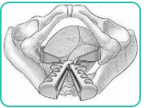
A correta das pás do fórceps de Kielland, em variedade de posição occipitoesquerda transversa, já iniciada rotação para occipitopúbica.
B errada das pás do fórceps de Simpson, em variedade de posição occipitodireita posterior.
C equivocada das pás do fórceps de Piper, em variedade de posição occipitodireita posterior, já que deve ser utilizado em apresentações pélvicas.
D correta das pás do fórceps de Kielland, em variedade de posição occipitodireita transversa, já iniciada rotação para occipitossacra.
E errada das pás do fórceps de Simpson, em variedade de posição occipitoesquerda anterior.
Questão 1005 · Ducto venoso DV · 4000152021O estudo Dopplerfluxométrico do sonograma do ducto venoso:
A identifica a vasoconstrição periférica, que leva à diminuição da pressão nas câmaras cardíacas, seguida de alterações no território venoso fetal.
B tem sido eleito pela maioria dos estudos para representar o território venoso fetal.
C visualiza o shunt vascular que comunica a porção intra-hepática da veia umbilical com a veia cava inferior e daí para o átrio esquerdo, levando sangue oxigenado para o forame magno.
D é caracterizado por baixa velocidade durante a sístole ventricular (onda-S) e a diástole (onda-D), determinando um padrão sonográfico bifásico característico.
E é caracterizado por grande aumento da velocidade na contração atrial (onda-A), determinando um padrão sonográfico monofásico característico.
Questão 1006 · Prevalência e epidemiologia · Obstetrícia · 4000152020Em relação à gestação gemelar, analise as assertivas abaixo: I. A mortalidade fetal e neonatal está aumentada, assim como há maior risco de paralisia cerebral quando comparada à gestação única. II. A morbidade e mortalidade materna são elevadas na gravidez gemelar. III. A probabilidade de gestação gemelar diminui com a idade materna.
A Apenas I e II.
B Apenas I e III.
C Apenas II e III.
D I, II e III
E Apenas III
Questão 1007 · Obstetrícia · 4000152019Uma gestante, no curso da 12.ª semana de gestação, foi ao ambulatório de obstetrícia referenciado de sua Unidade Básica de Saúde com o seguinte encaminhamento: "Encaminho primigesta com 23 anos de idade que apresentou, em seus exames de rotina do pré-natal, uma glicemia de jejum de 140 mg/dL". No ambulatório, a paciente encontrava-se assintomática e já trazia um segundo resultado de glicemia de jejum que demonstrava um valor de 148 mg/dL. O obstetra do ambulatório, segundo as recomendações mais atualizadas da OMS e da Sociedade Brasileira de Diabetes, deve:
A solicitar teste de sobrecarga oral com 75 gramas de glicose anidra ainda com 12 semanas de gestação
B solicitar teste de sobrecarga oral com 75 gramas de glicose anidra entre 24 e 28 semanas de gestação.
C diagnosticar a paciente com diabetes melito prévio à gestação e iniciar tratamento adequado.
D diagnosticar a paciente com diabetes melito gestacional e iniciar tratamento adequado.
E solicitar hemoglobina glicada para confirmação do diagnóstico
Questão 1008 · Tipos de f órcipes · Aplicação do f órcipe · Distocia de descida · 4000152018Primigesta de 21 anos de idade está com 38 semanas de gestação e iniciou trabalho de parto espontâneo. O partograma e a cardiotocografia estão apresentados a seguir: Qual é o método indicado para ultimação do parto?
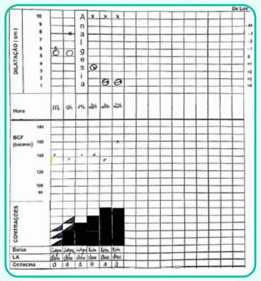
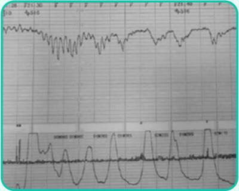
A Abreviação com vácuo extrator.
B Cesárea segmentar transversa.
C Aguardar parto espontâneo.
D Rotação com fórcipe Kielland
E Abreviação com fórcipe Simpson-Braun.
Questão 1009 · Obstetrícia · 4000152017Durante o trabalho de parto, o Preceptor faz um toque vaginal na paciente e diz ao Residente que o feto está em OET. Essa nomenclatura obstétrica permite descrever as relações entre o feto e a gestante e, nesse caso, a letra T faz referência à:
A Apresentação fetal.
B Posição fetal.
C Situação fetal.
D Variedade de posição fetal.
E Assinclitismo fetal.
Questão 1010 · Conduta obstétrica · Préeclâmpsia com sinais de gravidade · Obstetrícia · 4000152016Gestante, 16 anos, G1 P0, IG: 36 semanas e 4 dias é atendida na emergência da maternidade com queixa de cefaleia e escotomas cintilantes. Ao exame, apresenta PA: 190x120mmHg, FU: 34cm, bcf: 148 bpm, ausência de metrossístoles, tônus uterino normal e toque evidenciando colo longo e fechado. A conduta nesse caso é:
A Internação, hidralazina venosa, sulfato de magnésio, betametasona e interrupção da gestação após 48h.
B Internação, nifedipina retard, betametasona e aguardar até 37 semanas para interrupção da gestação.
C Hidralazina venosa até o controle pressórico e agendar retorno com 37 semanas para interrupção da gestação.
D Cesariana Imediata.
E Internação, hidralazina venosa, sulfato de magnésio e interrupção da gestação após estabilização do quadro.
Questão 1011 · Parto · Transmissão vertical TV · Obstetrícia · 4000152015Gestante de 32 anos, G3P1A1, com diagnóstico prévio de infecção pelo HIV, idade gestacional de 37 semanas e 3 dias, é atendida na maternidade com queixa de contrações uterinas. Informa ótima adesão à terapia antirretroviral e a contagem da carga viral realizada com 34 semanas de gravidez estava indetectável. Ao exame físico, PA: 130x80mmHg, medida do fundo uterino 34 cm, presença de 3 contrações de 30 segundos em 10 minutos, batimentos cardíacos fetais de 148bpm, feto cefálico. Ao toque vaginal, dilatação cervical de 3 cm, bolsa íntegra, polo cefálico no plano -1 de De Lee. Considerando as recomendações vigentes do Ministério da Saúde do Brasil, qual é a conduta MAIS ADEQUADA para esse caso
A Acompanhar o trabalho de parto, estando contraindicados medicamentos que aumentem as contrações uterinas e a realização rotineira da amniotomia.
B Acompanhar o trabalho de parto, não sendo necessário uso da zidovudina profilática endovenosa para prevenir a transmissão vertical.
C Indicar a realização da cesariana após 3 horas do início da profilaxia com a zidovudina endovenosa para prevenir a transmissão vertical.
D Indicar cesariana imediatamente, não sendo necessário uso da zidovudina profilática endovenosa para prevenir a transmissão vertical.
E Acompanhar o trabalho de parto, introduzir zidovudina imediatamente e manter até 48 horas após o parto
Questão 1012 · Ginecologia · 4000152014Mulher de 30 anos chega ao ambulatório de ginecologia com quadro que sugere elefantíase vulvar e áreas de retração cicatricial em genitália e reto. Informa que o processo iniciou com um “caroço” na região inguinal direita, que inchou, ficou in amado e muito doloroso. Revela ainda o aparecimento de secreção purulenta por furos no referido “caroço”. Depois virou uma úlcera. Assinale a alternativa com o provável diagnóstico e o nome da lesão.
A Sífilis primária / protossinfiloma
B Doença de Nicolas-Favre / estiomene
C Cancro mole/ corpúsculo de Donovan
D Cancro duro / úlcera de Rollet
E Condilomatose / tumor de Buschke-Lowenstein
Questão 1013 · Ginecologia · 4000152013Paciente com 54 anos de idade é portadora de lesão escamosa intraepitelial de alto grau identi cada no exame citopatológico de rotina. A colposcopia demonstrou achados maiores (classificação Rio/2011) nos dois quadrantes superiores do colo do útero, sendo que tanto a junção escamo-colunar quanto os limites cranial e caudal foram visualizados no exame. Nesse caso, qual é a conduta correta?
A Histerectomia radical sem linfadenectomia.
B Traquelectomia radical.
C Amputação alargada do colo uterino.
D Exérese da zona de transformação com a cirurgia de alta frequência
E Histerectomia total abdominal com retirada do terço superior de vagina.
Questão 1014 · Ginecologia · 4000152012Uma paciente de vinte anos de idade refere nunca ter menstruado. Tem desenvolvimento dos caracteres sexuais secundários (mamas e pelos pubianos) normais. O cariótipo é XX. O FSH, o LH e o estradiol plasmáticos são normais. Ao exame, a genitália externa é normal. Com base nessa situação hipotética, é correto afirmar que o diagnóstico mais provável é o de:
A puberdade tardia
B disgenesia gonadal pura
C síndrome de Turner.
D síndrome da anovulação crônica.
E síndrome de Mayer-Rokitansky-Kuster-Hauser.
Questão 1015 · Ginecologia · 4000152011Sobre a fisiologia do ciclo menstrual, assinale a afirmativa correta.
A Enquanto o corpo lúteo do ciclo anterior involui, ocorre diminuição da produção lútea de progesterona e inibina B, possibilitando a elevação dos níveis de FSH.
B A teoria da dupla célula determina que, com a estimulação pelo LH, as células da granulosa produzem androgênios, que são convertidos em estrogênios pela ação da aromatase.
C O folículo dominante possui menor número de receptores de FSH e produz maior concentração de estrogênio e inibina B.
D O corpo lúteo secreta estrogênio, progesterona e inibina A, que servem para manter a supressão das gonadotrofinas.
E O estrogênio estimula o crescimento e diferenciação da camada basal do endométrio, que se prepara para a implantação quando ocorre gestação.
Questão 1016 · Ginecologia · 4000152010Em relação às vulvovaginites:
A A vaginite aeróbica é diagnosticada pela coloração de Gram e dosagem de interleucina B diminuída.
B A vaginite atrófica ocorre com frequência em mulheres que fazem antibioticoprofilaxia para infecção urinária.
C O tratamento da vaginose bacteriana é realizado com ampicilina via oral e corticoide via vaginal por 7 dias.
D A vaginite atrófica acomete puérperas e usuárias de contraceptivos hormonais e é tratada com progesterona natural por pelo menos 30 dias.
E Os agentes etiológicos mais comuns da vaginite aeróbica são
Questão 1017 · Ginecologia · 4000152009Uma mulher com 25 anos de idade é atendida na Unidade Básica de Saúde após palpar um nódulo em sua mama direita. Na avaliação médica, identi ca-se um nódulo de 1 cm, no maior diâmetro, móvel, com consistência fibroelástica, regular e indolor. Nesse caso, qual deve ser a conduta médica inicial
A Punção e citologia.
B Exérese do nódulo.
C Seguimento ecográfico.
D Encaminhamento ao Centro de Oncologia
E Mamografia
Revisar: possível letra faltando em enunciado
Questão 1018 · Ginecologia · 4000152008Mulher, 52 anos, comparece à Unidade Básica de Saúde com queixa de ondas de calor, di culdade para dormir e diminuição da libido há 1 ano. Refere que acorda a noite por causa das ondas de calor, com grande impacto na qualidade de vida. Não apresenta antecedentes mórbidos, nega cirurgias prévias e a data da última menstruação foi há 14 meses. Antecedentes familiares: mãe e pai hipertensos e diabéticos. Resultados dos exames: TSH= 3,5 mg/dL, glicemia= 85 mg/dL; Hb= 13,6 g/dL; Ht= 42,1%. A CONDUTA É PRESCREVER
A Estradiol 0,05 mg por dia transdérmico e progestágeno oral.
B Estradiol 1 mg por dia transdérmico.
C Estradiol 1 mg por dia e progestágeno orais.
D Estradiol 2 mg por dia oral.
E Estradiol creme vaginal
Questão 1019 · Ginecologia · 4000152007ao tratamento local para o câncer de mama, analise as asserções abaixo e a relação entre elas: I. - A realização da dissecção axilar é necessária para todas as pacientes com linfonodo sentinela positivo, PORQUE II. - a omissão da dissecção axilar aumenta de forma significativa a recidiva local e sobrevida global. A respeito dessas asserções, assinale a resposta correta:
A As asserções I e II são proposições verdadeiras e a II é uma justificativa correta da I.
B As asserções I. e II. são proposições verdadeiras e a II. não é uma justificativa correta da I.
C A asserção I é uma proposição verdadeira e a II é uma proposição falsa.
D A asserção I é uma proposição falsa e a II é uma proposição verdadeira.
E As asserções I e II são proposições falsas.
Questão 1020 · Ginecologia · 4000152006Paciente de 25 anos, solteira, procura o consultório médico com queixa de dismenorreia progressiva de longa data e atualmente dor pélvica frequente, mesmo fora do período menstrual. Refere atividade sexual regular com uso de método de barreira, embora venha apresentando dispareunia profunda recorrente há 6 meses. Ao exame físico, útero em RVF xa, volume normal e anexos não identi cados. CA-125:75. A ultrassonogra a transvaginal revelou pequenos cistos anexiais bilaterais de 2,1 e 1,8 cm de conteúdo espesso. Diante da suspeita de endometriose, assinale qual deverá ser a melhor conduta para a paciente em questão.
A Tratamento com análogos de GnRH por 6 meses, seguido de videolaparoscopia.
B Tratamento vídeo-laparoscópico para resolução dos endometriomas e possíveis outros focos existentes.
C Tratamento clínico com uso de anticoncepcional oral sem pausas ou uso de progestágeno contínuo para instituir amenorreia.
D Sugerir que a paciente faça congelamento de óvulos agora, caso não queira engravidar, já que a endometriose compromete invariavelmente a fertilidade.
E Não é possível propor tratamento sem antes confirmar o diagnóstico por meio de ressonância magnética da pelve.
Questão 1021 · Ginecologia · 4000152005Mulher de 44 anos, G1P1A0, com história prévia de trombose venosa profunda na gestação, procura atendimento médico com quadro de sangramento vaginal intenso, com presença de coágulos, há 4 dias, após atraso menstrual de cerca de 2 meses. Apresenta-se hipocorada e sudoreica, com pressão arterial de 80x60mmHg e pulso de 110ppm, após hidratação venosa. Ao exame especular, visualiza-se grande quantidade de sangue uindo por orifício cervical externo, colo e vagina sem lesões. Ao toque vaginal, útero de consistência, contorno e volume normais, colo móvel e impérvio. Teste imunológico de gravidez negativo. Qual é a conduta adequada para o caso?
A Realizar curetagem uterina.
B Aguardar resultado de ultrassonografia transvaginal.
C Inserir sistema intrauterino liberador de levonorgestrel.
D Administrar acetato de medroxiprogesterona 150 mg intramuscular
E Administrar pílula anticoncepcional combinada
Questão 1022 · Classif icação de Sakita · Complicações · Cirurgia · 4000152004Paciente feminina, 45 anos, dá entrada no pronto socorro com quadro de melena e hematêmese com 12 horas de evolução. Encontra-se estável hemodinamicamente. Relata uso de anti-inflamatório para dor lombar nos últimos 10 dias. Realiza endoscopia digestiva alta, que mostra uma lesão ulcerada bulbar classificada como Sakita A1 e Forrest IIa com teste de urease positivo. Em relação a esse caso clínico, analise as assertivas abaixo: I) Essa lesão deve ser tratada endoscopicamente devido ao alto risco de ressangramento. II) O achado endoscópico, demonstrado pela classificação Forrest IIa, indica uma lesão ulcerada com sangramento ativo. III) Essa paciente pode ser tratada clinicamente com a realização de um inibidor da bomba de prótons associado a um bloqueador de H2. IV) Devido à localização bulbar da lesão ulcerada, a erradicação do H. pylori não está indicada como parte do tratamento clínico. Estão corretas as assertivas:
A I apenas.
B I e II apenas.
C III e IV apenas.
D III e IV apenas.
E Todas assertivas estão corretas.
Questão 1023 · Trauma Abdominal Fechado · 4000152003Paciente de 31 anos dá entrada na emergência desacordado após colisão automobilística em que não usava cinto de segurança. Apresenta hematoma extenso no hipocôndrio e anco direito, que se encaminha para o dorso. PA de 80X40 mmHg, após reposição de 2000 ml de cristaloide, FC 120 bpm. O exame abdominal demonstra sinais de irritação peritoneal, a frequência respiratória é de 28 ipm. Qual é a conduta a ser tomada?
A Após ATLS rápido, cirurgia imediata.
B Após ATLS rápido, fazer ultrassom abdominal, hemotransfusão imediata.
C Após ATLS rápido, hemotransfusão, tomografia abdomino-pélvica para indicação ou não de cirurgia
D Após ATLS rápido, hidratação com coloide, ultrassom abdominal, hemotransfusão e cirurgia, caso hematócrito caia após a transfusão
E Após ATLS rápido, radiografia de crânio, tórax e abdome.
Questão 1024 · Fáscias e Músculos · Hérnias Inguinocrurais · 4000152002A hérnia inguinal direta é reconhecida por insinuar-se pelo assoalho do canal inguinal e medialmente aos vasos epigástricos. Assinale a alternativa que indica a principal estrutura anatômica que forma essa parede, sendo “empurrada” pela hérnia, e como podemos classificá-la de acordo com Nyhus, respectivamente?
A Ligamento inguinal, IVa
B Fáscia transversal, IIIa
C Ligamento de Cooper, II
D Anel inguinal interno, IIIb
E Ligamento pectíneo, IVb
Questão 1025 · Apresentação Clínica e Diagnóstico · 4000152001Analise o esquema a seguir. As fístulas anorretais representadas no esquema são classificadas respectivamente como:
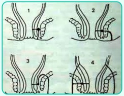
A interesfincteriana, transesfincteriana, supraesfincteriana e extraesfincteriana.
B interesfincteriana, supraesfincteriana, transesfincteriana e extraesfincteriana.
C extraesfincteriana, transesfincteriana, supraesfincteriana e interesfincteriana.
D extraesfincteriana, supraesfincteriana, interesfincteriana, transesfincteriana.
E interesfincteriana, transesfincteriana, extraesfincteriana e supraesfincteriana
Questão 1026 · Apresentação Clínica e Classif icação · Tratamento · 4000152000As hemorroidas são protuberâncias anormais e sintomáticas, altamente vascularizadas, formadas por um adensamento submucoso espessado no canal anal, contendo músculo liso e tecido conjuntivo elástico. Em relação a essa patologia e a seu tratamento, avalie as seguintes asserções e a relação proposta entre elas. I) As hemorroidas internas de segundo grau são aquelas em que há um prolapso do tecido e redução espontânea. PORTANTO, II) para pacientes portadores de doença com esse grau, não está indicado nenhum tipo de tratamento.
A As duas assertivas são proposições verdadeiras e a segunda é uma justificativa correta da primeira.
B As duas assertivas são proposições verdadeiras, mas a segunda não é uma justificativa correta da primeira.
C A primeira assertiva é uma proposição verdadeira e a segunda é falsa.
D A primeira assertiva é uma proposição falsa e a segunda é verdadeira.
E As duas assertivas são proposições falsas.
Questão 1027 · Tratamento Cirúrgico da DRGE · 4000151999Mulher de 47 anos de idade realiza acompanhamento no Ambulatório Médico de Especialidade devido à diabete e hipertensão arterial. Apresenta re uxo gastroesofágico e foi submetida à endoscopia digestiva alta há 1 mês, que revelou esofagite grau C de Los Angeles. Está em uso de omeprazol 40 mg por dia há 6 meses, mas com persistência de pirose pós-prandial, principalmente quando em decúbito horizontal. Exame clínico: bom estado geral, IMC: 36 kg/m², abdome indolor à palpação, sem outras alterações. Qual é a melhor opção operatória para o tratamento do refluxo gastroesofágico dessa paciente?
A Gastrectomia vertical (sleeve gástrico).
B Gastroplastia com derivação em Y-de-Roux (
C Hiatoplastia com fundoplicatura total.
D Hiatoplastia com fundoplicatura parcial.
E Substituir o inibidor de bomba de prótons por um antagonista H2.
Questão 1028 · Tratamento Cirúrgico da Obesidade · 4000151998Após cirurgias gástricas em que o piloro é removido ou sofre “bypass”, a síndrome de dumping tardio refere- se a sintomas que
A iniciam 15 a 30 minutos após a alimentação, relacionados à liberação de bolus hiperosmolar em delgado (dor tipo cólica, diarreia), que diminuem se o paciente se deita.
B iniciam 15 a 30 minutos após a alimentação, relacionados à hipoglicemia reacional por liberação excessiva de insulina (tontura, tremor, sonolência), que diminuem com a ingestão de carboidratos.
C iniciam 2 a 3 h após a alimentação, associados à liberação excessiva de VIP, CCK e PYY, que diminuem se o paciente se deita.
D iniciam 2 a 3 h após a alimentação, relacionados à liberação de bolus hiperosmolar em delgado (dor tipo cólica, diarreia), que diminuem se o paciente toma água.
E iniciam 2 a 3 h após a alimentação, relacionados à hipoglicemia reacional por liberação excessiva de insulina (tontura, tremor, sonolência), que diminuem com a ingestão de carboidratos.
Questão 1029 · Colestase · Avaliação laboratorial da icterícia · Cirurgia · 4000151997Síndromes colestáticas podem ser ocasionadas por diversas razões e cursam com quadros variáveis de icterícia e sintomas álgicos abdominais. Em relação à investigação desses quadros patológicos, analise as assertivas abaixo e classifique-as em verdadeira ou falsa. ( ) Necessita-se de níveis séricos de bilirrubina acima de 2,5 mg/dL para detectar-se icterícia na esclerótica e acima de 5 mg/dL para icterícia cutânea. ( ) A maior parte dos cálculos biliares são radiopacos, portanto o exame inicial para avaliação dos pacientes com síndrome colestática é a radiografia de abdome. ( ) Uma ultrassonografia de abdome superior normal descarta a etiologia biliar de uma pancreatite aguda. ( ) Uma elevação significativa das transaminases, com valores acima de 10 vezes o índice de referência, sugere um quadro parenquimatoso, podendo ser secundário a uma colecistite aguda enfisematosa. ( ) A icterícia pode ser dividida em clínica, resultante de um processo hepatocelular, e cirúrgica, em consequência de uma obstrução da árvore biliar.
A V – F – F – F – V.
B F – V – V – F – F.
C V – V – V – V – V.
D V – F – V – V – F.
E F – F – F – V – F.
Questão 1030 · Hérnia de Littre · Hérnias Incomuns · 4000151996Sobre as hérnias incomuns da parede abdominal, a hérnia cujo conteúdo do saco herniário corresponde à presença do divertículo de Meckel é chamada de:
A Spiegel
B Amyand.
C Richter
D Grynfelt
E Littré
Questão 1031 · Nutrição em Cirurgia e Recuperação PósOperatória · Cirurgia · 4000151995A respeito da nutrição em cirurgia, assinale a alternativa ERRADA:
A A via oral é sempre a melhor escolha para pacientes com integridade do tubo digestivo.
B Pacientes com cirurgias abdominais devem aguardar sempre o restabelecimento do trânsito intestinal para início da nutrição, independentemente da via nutricional utilizada.
C A nutrição parenteral total é a escolha para pacientes com fístulas digestivas, íleo adinâmico, com défices nutricionais e impossibilidade de fazer o aporte nutricional pela via oral.
D Em pacientes com impossibilidade de nutrição via oral, deve-se avaliar primariamente a administração de nutrição enteral em detrimento da nutrição parenteral.
E A nutrição enteral monomérica é de alta absorção.
Questão 1032 · Isquemia Mesentérica Aguda · Cirurgia · 4000151994Paciente dá entrada em unidade de emergência com dor abdominal de início agudo, em forte intensidade, há cerca de seis horas. Ao exame físico, apresenta abdome levemente doloroso à palpação, sem sinais de irritação peritoneal, RHA diminuídos, com ausculta cardíaca sugerindo brilação atrial. O diagnóstico mais provável para esse paciente é:
A úlcera perfurada.
B apendicite aguda.
C oclusão intestinal.
D Isquemia mesentérica.
E pancreatite aguda.
Questão 1033 · Processo de Integração do Enxerto de Pele · Classif icação dos Enxertos de Pele Quanto à Espessura · 4000151993Enxertia Cutânea O enxerto de pele de espessura total é mais indicado que o enxerto de pele de espessura parcial, em caso de feridas:
A contaminadas
B de pequena extensão na face.
C em tecido irradiado previamente.
D extensas de queimaduras.
E com exposição óssea
Questão 1034 · Manejo Hospitalar · Cirurgia · 4000151992Homem, 30 anos de idade, com peso de 70 kg, deu entrada no Pronto-Socorro trazido pelo resgate, com história de queimadura decorrente de combustão por gasolina há 2 horas. Encontrava-se lúcido e orientado, com queixa de dor intensa nos locais de queimadura, sem sinais de queimadura de via aérea. Ao exame físico: queimaduras de segundo e terceiro graus em todo o membro superior direito e todo o membro inferior direito. Assinale a alternativa correta:
A O paciente deve receber cerca de 3.780ml de hidratação endovenosa nas primeiras 6 horas de atendimento intra-hospitalar.
B Considerando a profundidade das lesões descritas, devem ser observadas áreas com eritema e edema, sem a formação de bolhas e sem o comprometimento de anexos.
C A pressão arterial e a frequência cardíaca são os melhores parâmetros para orientar a reposição volêmica.
D A porcentagem de estimativa de área queimada é de 18%.
E Há indicação de antibioticoprofilaxia com cobertura para Gram-positivo.
Questão 1035 · Trauma Torácico · Cirurgia · 4000151991Um paciente foi conduzido à emergência do prontosocorro de sua cidade vítima de trauma penetrante por arma de fogo em hemitórax esquerdo, com orifício de entrada em segundo espaço intercostal de hemitórax esquerdo anterior e sem orifício de saída. À chegada, o paciente foi intubado e seus sinais vitais eram PA = 60 mmHg x 40 mmHg, FC = 140 bpm, FR = 24 irpm e SatO2 = 76%. Não havia murmúrio vesicular à esquerda, tendo sido inserido dreno com débito de 2.000 ml de sangue. Quanto a esse caso clínico, assinale a alternativa correta.
A Antes da drenagem torácica, era necessária a realização de radiografias de tórax.
B Esse paciente tem indicação de toracotomia exploradora.
C Deveria ter sido realizada toracocentese diagnóstica antes da drenagem torácica.
D É mandatória a realização de uma tomografia computadorizada de tórax para identificar o trajeto do projétil.
E O paciente mencionado pode ser considerado em choque grau I.
Questão 1036 · Manif estações Clínicas · 4000151990Em relação à doença ulcerosa péptica, é CORRETO afirmar
A Até 50% dos pacientes com hemorragia digestiva alta ulcerosa são assintomáticos, antes do episódio de hemorragia.
B A despeito do tratamento atual, a prevalência de obstrução gástrica em pacientes com úlceras pré- pilóricas ou duodenais é alta, em torno de 60%.
C As úlceras gástricas e duodenais com boa resposta clínica ao tratamento dispensam endoscopia de controle.
D A infecção pelo Helicobacter pylori associada à úlcera gástrica ocorre em torno de 95% dos casos.
E Presença de Helicobacter pylori não foi associada à prevalência de câncer gástrico.
Questão 1037 · Adenocarcinoma de Esôf ago · Cirurgia · 4000151989Os principais fatores de risco para o adenocarcinoma esofágico são:
A tabagismo e etilismo.
B megaesôfago e tilose palmoplantar
C doença do refluxo crônica e esôfago de Barrett.
D ingestão de substâncias quentes e idade avançada
E ingestão de substâncias quentes e idade avançada
Questão 1038 · Volvo de Sigmoide · Cirurgia · 4000151988Um paciente de 83 anos está internado há 1 mês por insu ciência respiratória grave por COVID-19. Traqueostomizado, atualmente está em programa de desmame, tanto das drogas vasoativas quanto da ventilação mecânica. Há 2 dias, começou a apresentar dor e distensão abdominal. A PCR passou de 40 mg/L para 90 mg/L (normal: até 3 mg/L) e os leucócitos subiram de 14.500/mm³ para 17.000/mm³. Não tem sinais de peritonismo. Fez a radiogra a ilustrada a seguir. A melhor conduta inicial, em condições ideais, além de manter em jejum com hidratação intravenosa, seria:
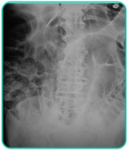
A Colonoscopia descompressiva.
B Intervenção cirúrgica.
C Neostigmina.
D Passagem de sonda nasogástrica e retal.
E Lavagem intestinal.
Questão 1039 · Trauma Uretral · Cirurgia · 4000151987Um paciente com 23 anos de idade, do sexo masculino, vítima de acidente automobilístico, foi trazido ao setor de Trauma pela equipe de suporte avançado do Serviço de Atendimento Móvel de Urgência (SAMU). Apresenta vias aéreas pérvias, ausculta pulmonar normal, PA = 100 x 60 mmHg, FC = 100 bpm, FR = 24 irpm, Glasgow = 14. Durante a inspeção, nota-se equimose perineal. O paciente está com sonda vesical de duas vias com débito de 40 ml de sangue vivo. Queixa-se de dor intensa em hipogástrio, onde se nota abaulamento extremamente doloroso à palpação, que vai do púbis até cerca de 5 cm abaixo da cicatriz umbilical. Nesse caso, o diagnóstico e a conduta médica inicial para esse paciente são:
A trauma renal e tomografia computadorizada de abdome com contraste endovenoso.
B trauma de bexiga e colocação de sonda vesical em três vias para irrigação contínua
C trauma de uretra e retirada da sonda vesical com cistostomia percutânea
D obstrução da sonda vesical e desobstrução com irrigação sob pressão.
E trauma de uretra e trocar a sonda vesical por uma mais fina.
Questão 1040 · Apendicite Aguda Complicada · Cirurgia · 4000151986Paciente de 32 anos de idade, sexo masculino, com dores em fossa ilíaca direita, febre, mal-estar há cerca de 4 dias, relatando disúria e di culdades evacuatórias desde o início dos sintomas, procurou o pronto- socorro onde realizou um ultrassom de abdome, revelando ter abscesso em goteira parietocólica direita e sinais de apendicite aguda. Foi, então, submetido à cirurgia convencional com incisão mediana infraumbilical. Durante a cirurgia, observou-se, na cavidade, intenso bloqueio inflamatório com abscesso localizado junto ao ceco, com necrose e perfuração da ponta do apêndice; também notou-se base do apêndice com áreas de isquemia junto à parede do ceco. Nessa situação, a melhor estratégia cirúrgica é:
A apendicectomia convencional clássica com Bolsa de Oschner e drenagem da cavidade.
B apendicectomia convencional com técnica de Parker-Kerr sem drenagem.
C apendicectomia com a técnica de ligadura da base sem invaginação (técnica do professor Alípio Correa Neto).
D ileotiflectomia com íleo – ascendente anastomose com drenagem.
E colectomia direita ampliada com ileostomia de proteção.
Questão 1041 · Diagnóstico · 4000151985Com referência ao câncer de cólon, é correto afirmar:
A O cólon direito é o local da maior prevalência da doença.
B História familiar não é importante para detecção precoce em pacientes portadores de lesão.
C A colonoscopia é o exame de escolha na detecção, pois permite diagnóstico topográfico e biópsia da lesão.
D A presença de pólipo inflamatório é o principal sinal de alerta, devendo, sempre que presente, indicar repetição do exame anualmente.
E Os pulmões são os principais focos de metástase sistêmica.
Questão 1042 · Tratamento da Fase Aguda do Acidente Vascular Cerebral Isquêmico · 4000151984O Acidente Vascular Cerebral (AVC) isquêmico vem tendo mudanças importantes quanto ao tratamento da fase aguda, principalmente relacionadas ao uso da trombectomia mecânica. Sobre a trombectomia mecânica no contexto de AVC isquêmico, assinale a alternativa CORRETA.
A Agora, a trombectomia mecânica deve ser priorizada em detrimento da trombólise endovenosa, independentemente do tempo de início do quadro clínico.
B A trombectomia mecânica só tem benefício após a falha do trombolítico e respeitando o limite de 3 horas após o início do quadro clínico.
C A seleção de pacientes candidatos à trombectomia mecânica leva em consideração somente se há contraindicações ao trombolítico endovenoso.
D Aqueles pacientes que percebem o défice neurológico somente ao acordar não foram avaliados nos grandes estudos sobre trombectomia mecânica, portanto não podem ser submetidos à trombectomia mecânica, independentemente dos achados da tomografia de crânio ou método com perfusão.
E A trombectomia mecânica mostrou-se benéfica principalmente para pacientes com oclusão proximal da circulação anterior e até 6 horas do início do quadro clínico, embora haja estudos que mostram benefícios para janelas de tempo até maiores.
Questão 1043 · Clínica Médica · Neurologia · Cef aleias · 4000151983Pelos seus relatos e ausência de alterações ao exame físico que realizei, você possui um tipo de dor de cabeça chamada enxaqueca. Já ouviu falar algo sobre ela? Paciente Médica Paciente cerebral. Tenho medo de estar com o mesmo problema. Médica sintoma, mas as características da dor são muito diferentes do seu caso. Você tem um histórico de dor de cabeça desde a infância e pioraram à medida que você foi exposta a situações de cada vez mais responsabilidade e tensão. Além disso, você usa um anticoncepcional com dosagem alta, o que piora o quadro. Você observou que z seu exame completo e não há nada de anormalidade. No caso de problemas mais graves, como tumores, a pessoa tem dor de cabeça de início mais recente, o tipo de dor de cabeça é bem diferente. E a pessoa geralmente tem outros sintomas... (Trecho extraído de um caso encontrado em PIANCASTELLI, C. H.; DI SPIRITO, G. C., FLISCH, T. M. P. Saúde do Adulto. 2ª ed. Belo Horizonte: NESCON/UFMG, 2013.P. 67. Disponível em: https://www.nescon.medicina.ufmg.br/biblioteca/imagem/3865.pdf ). Outro aspecto interessante observado no trecho apresentado é que a médica está abordando os sinais da alarme (alerta vermelho) que poderiam indicar gravidade em pacientes com cefaleia e levariam o médico em atendimento a suspeitar de uma cefaleia secundária, não de uma primária (como no caso, a enxaqueca). É importante que os médicos possam questionar e perceber esses sinais presentes na anamnese e no exame físico. Pode-se considerar como sinais de alarme todas as alternativas abaixo, EXCETO:
A Perda de peso inexplicada.
B Défice neurológico progressivo.
C Imunossupressão.
D Presença de sintomas premonitórios e fenômenos visuais (como escotomas).
E Início do quadro em pacientes com mais de 50 anos.
Questão 1044 · Clínica Médica · Marcadores sorológicos · Fases clínicas · 4000151982Um homem de 50 anos de idade realiza investigação ambulatorial devido ao aumento de transaminases: AST = 122 U/L (valor de referência: < 38 U/L) e ALT = 142 U/L (valor de referência: < 41 U/L), evidenciado em um exame de rotina. O paciente consome 5 latas de cerveja diariamente e nega o uso de drogas ilícitas. Não apresenta queixas clínicas. Os exames laboratoriais solicitados para a investigação demonstraram o que está apresentado no quadro a seguir: Com base nos aspectos clínicos e laboratoriais, o diagnóstico e a conduta neste momento devem ser, respectivamente:
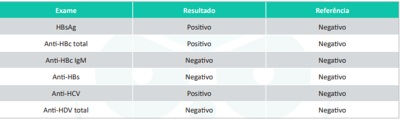
A hepatite B crônica; indicar vacinação.
B hepatite B aguda; iniciar interferon alfa peguilado.
C hepatite C curada; orientar interrupção do etilismo.
D hepatite B crônica; orientar interrupção do etilismo.
E hepatite C crônica; indicar biópsia hepática
Questão 1045 · Estados reacionais · 4000151981Homem, 52 anos, em tratamento para hanseníase (poliquimioterapia multibacilar) há 2 meses, buscou atendimento queixando-se de que, há 5 dias, houve piora aguda das lesões cutâneas pré-existentes (foto), perda de sensibilidade em 4° e 5° quirodáctilos da mão direita e dor em choque irradiando do cotovelo até a mão direita. Qual é a conduta terapêutica imediata mais adequada para esse caso?
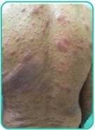
A Iniciar talidomida via oral.
B Suspender a poliquimioterapia multibacilar.
C Iniciar prednisona via oral.
D Instaurar poliquimioterapia substitutiva
E Suspender a poliquimioterapia
Questão 1046 · Hipertensão · 4000151980Mulher, 60 anos de idade, é acompanhada na Unidade de Saúde da Família (USF) por diabetes mellitus tipo 2 e hipertensão arterial sistêmica. Na primeira visita à USF, há cerca de 6 meses, a PA estava em 182x100mmHg. Atualmente, assintomática. Nega outras comorbidades. Em uso regular de metformina 850mg duas vezes ao dia, losartana 50mg de 12/12h e anlodipina 10mg ao dia, há cerca de 6 meses. Ao exame físico, apresenta-se em bom estado geral, com FC: 70bpm, PA: 166x96mmHg em ambos os membros superiores e glicemia capilar de 110mg/dL. Pulsos palpáveis e simétricos. Exame segmentar sem alterações. Traz monitorização residencial da pressão arterial, com PAS entre 140 e 172mmHg e PAD entre 90 e 96mmHg. Indique a classificação para a pressão dessa paciente na primeira visita à Unidade de Saúde da Família.
A Pressão arterial elevada.
B Hipertensão do Jaleco branco.
C Hipertensão arterial sistêmica estágio 1.
D Hipertensão arterial sistêmica estágio 2.
E Hipertensão arterial sistêmica estágio 3.
Questão 1047 · Desf ibrilação · 4000151979Você está de plantão e um paciente de 19 anos é admitido sem consciência. Você verifica que o paciente está sem pulso e inicia as manobras de reanimação cardiopulmonar. Assim que o des brilador (monofásico) está disponível, você verifica o seguinte ritmo: Qual é sua conduta?
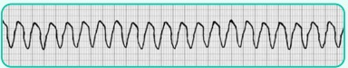
A Realizar cardioversão elétrica sincronizada com 100 J.
B Realizar desfibrilação com 200 J.
C Realizar cardioversão elétrica sincronizada com 200 J.
D Realizar desfibrilação com 360 J.
E Administrar adrenalina 1 mg IV, pois trata-se de um ritmo não chocável.
Questão 1048 · Classif icação de acordo com a gravidade dos sintomas · 4000151978Paciente de 55 anos, sexo feminino, com infarto do miocárdio com supra de ST de parede anterior há 2 anos. Não foi realizado trombolítico ou angioplastia primária na ocasião. A paciente foi encaminhada ao ambulatório de cardiologia, realizando acompanhamento regular. Estava em uso de carvedilol 6,25 mg a cada 12 horas, lisinopril de 5 mg e furosemida de 40 mg diariamente. Fazia uso irregular dos medicamentos no último ano. Há 2 dias, foi admitida em pronto-socorro com quadro de piora da dispneia nas últimas 48 horas. Apresentava sintomas de tosse e ortopenia. Na avaliação inicial apresentou-se taquidispneica, com palidez cutânea, sonolência e aferição de PA em 91 x 68mmHg, saturação de oxigênio em 91%, estertores crepitantes em base de pulmão direito, estase jugular presente, reflexo hepatojugular positivo, presença de ascite e perfusão periférica lenti cada, com extremidades frias. A análise inicial do eletrocardiograma evidenciou ritmo sinusal taquicárdico, com frequência cardíaca de 114 bpm e área eletricamente inativa na parede anterior. Assinale a alternativa que corresponde ao per l hemodinâmico, à causa da descompensação e às medidas iniciais adequadas.
A Cardiopatia chagásica com IC descompensada. Perfil C (frio e úmido). Início de digitálico venoso e amiodarona. Provável causa de descompensação: infecciosa.
B Cardiopatia hipertensiva com IC descompensada. Perfil L (frio e úmido). Início de diurético venoso e inibidor da enzima conversora de angiotensina. Provável causa de descompensação: má aderência terapêutica.
C Cardiopatia isquêmica com IC descompensada. Perfil B (frio e úmido). Início de digitálico venoso e milrinone. Provável causa de descompensação: infarto agudo do miocárdio.
D Cardiopatia isquêmica com IC descompensada. Perfil C (frio e úmido). Início de diurético e inotrópico imediato para controle de sintomas. Provável causa de descompensação: má aderência terapêutica.
E Cardiopatia isquêmica com IC descompensada. Perfil B (quente e úmido). Início de digitálico venoso e beta-bloqueador. Provável causa de descompensação: má aderência terapêutica.
Questão 1049 · Clínica Médica · 4000151977Considere um paciente masculino, 59 anos, com antecedente de tabagismo (35 anos-maço), hipertensão arterial sistêmica e diabetes tipo 2. Iniciou, há 1 semana, com episódios de dor retroesternal, em aperto, sem irradiação, com duração de aproximadamente 7 minutos, desencadeados pelo esforço físico (caminhar 50 metros) e aliviados pelo repouso. Hoje, apresentou um episódio de dor torácica, com duração total de 20 minutos, com as mesmas características, exceto pela dor não ter aliviado prontamente com o repouso e por estar associada a náuseas, sudorese profusa e palidez cutânea. Ao exame físico inicial, apresenta palidez cutânea (++/4), frequência cardíaca de 88 batimentos/minuto, pressão arterial de 146/82 mmHg, frequência respiratória de 20 incursões/minuto, saturação de 97% em ar ambiente na oximetria de pulso e temperatura axilar de 36,5°C. A ausculta pulmonar e a cardíaca não apresentam anormalidades. A dosagem de troponina I. na admissão e 6 horas após mostrou-se negativa e o eletrocardiograma realizado na admissão é mostrado abaixo: O paciente foi admitido na Emergência e, no dia seguinte, evoluiu com novo episódio de dor retroesternal, em aperto, irradiada para ambos os membros superiores, de forte intensidade, que se associou à dispneia e sudorese profusa. A dor iniciou em repouso e, após 40 minutos, não havia aliviado. Ao exame, apresentava pressão arterial de 108/65 mmHg, frequência cardíaca de 120 bpm, frequência respiratória 26 irpm e saturação de oxigênio de 88% na oximetria de pulso em ar ambiente. A ausculta pulmonar revelou estertores nos em ambos os terços inferiores dos campos pulmonares posteriores e, na ausculta cardíaca, era possível notar a presença de terceira bulha. Um novo eletrocardiograma foi realizado e encontra-se exposto abaixo: Assinale a alternativa correta quanto à conduta terapêutica indicada para o paciente descrito no caso:
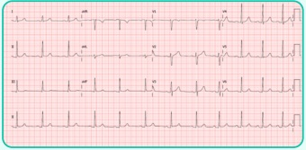
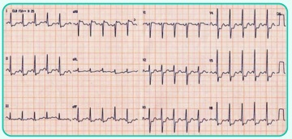
A Terapia antitrombótica com ácido acetilsalicílico, clopidogrel e enoxaparina plena; tratamento da congestão pulmonar com furosemida e nitroglicerina; e terapia de reperfusão coronária com fibrinolítico.
B Terapia antitrombótica com ácido acetilsalicílico; tratamento da congestão pulmonar com furosemida; e estratégia invasiva tardia, com coronariografia e angioplastia coronária após a alta hospitalar.
C Terapia antitrombótica com ácido acetilsalicílico, clopidogrel e enoxaparina plena; tratamento da congestão pulmonar com furosemida e nitroglicerina; e estratégia invasiva precoce com coronariografia e angioplastia coronária nas primeiras 24 h.
D Terapia antitrombótica com clopidogrel e enoxaparina plena; terapia antianginosa com betabloqueador; ventilação mecânica não invasiva; e estratégia invasiva tardia, com coronariografia e angioplastia eletivas durante a internação.
E Terapia antitrombótica com ácido acetilsalicílico; tratamento da congestão pulmonar com furosemida, nitroglicerina e betabloqueador; controle da frequência cardíaca com digitálico; e estratégia invasiva precoce com coronariografia e angioplastia nas primeiras 24 h.
Questão 1050 · Doenças nodulares tóxicas · 4000151976Paciente do sexo feminino, 45 anos, vem à consulta porque palpou nodulação na região anterior do pescoço. Nega dor local, disfagia e disfonia. Nega histórico de neoplasias na família e de doenças cervicais prévias, porém refere discreta perda de peso e fadiga progressiva há cerca de 1 ano. Ao exame físico, a paciente apresenta-se ansiosa, emagrecida, taquicárdica e hipertensa. Apresenta pequeno nódulo sólido palpável em lobo direito da tireoide, que é móvel à deglutição. Não há linfadenomegalia cervical palpável. Solicitada a dosagem dos hormônios tireoidianos, observou-se elevados níveis de T3 e T4 livre e baixos níveis de TSH. Sobre a condução desse caso, assinale a alternativa CORRETA:
A Os dados acima permitem-nos afirmar que a ultrassonografia, provavelmente, evidenciará nódulo hipoecogênico de margens irregulares com microcalcificações, confirmando a tireoidectomia total como próximo passo na conduta dessa paciente.
B Caso a cintilografia confirme nodulação hipercaptante com tireoide hipocaptante, a lobectomia tireoidiana seria a opção terapêutica adequada para o caso.
C A Punção Aspirativa por Agulha Fina (PAAF) guiada por ultrassom é contraindicada no caso, devido à possibilidade de carcinoma medular.
D A Ressonância Magnética cervical deve substituir a ultrassonografia nesse caso, já que evidencia, com maior acurácia, o envolvimento da traqueia e esôfago na doença, além de apresentar maior sensibilidade para diagnósticos diferenciais.
E A conduta envolve o uso de metimazol e a realização de ultrassonografia anual para acompanhamento do nódulo.
Questão 1051 · Diagnóstico · Diagnóstico dif erencial · 4000151975Homem de 48 anos, sem uso prévio de medicações e sem comorbidades conhecidas, procura a unidade de pronto atendimento por quadro compatível com monoartrite aguda de tornozelo que teve início na madrugada de hoje. A artrocentese diagnóstica mostra o seguinte resultado: Líquido articular amarelado, turvo, sem grumos. 8000 leucócitos/mcL (valor de referência: menor que 200 leucócitos/mcL), 65% de polimorfonucleares (valor de referência: menor que 25%). Bacterioscopia pelo Gram não visualizou bactérias, cultura em andamento. Pesquisa de cristais em andamento. Diante do quadro clínico e laboratorial exposto, é correto afirmar que a análise do líquido articular:
A é fortemente sugestiva de artrite séptica, sendo indicado início de antibioticoterapia empírica com ceftriaxone até a obtenção dos resultados de culturas.
B é compatível com artrite inflamatória, sendo a osteoartrite o diagnóstico mais provável.
C sugere artrite reativa, causa comum de monoartrite em pacientes nessa faixa etária.
D sugere artrite inflamatória, sendo indicado o internamento hospitalar para artrocentese de repetição e antibioticoterapia empírica com oxacilina endovenosa.
E sugere artrite inflamatória, sendo que a artrite gotosa é a etiologia mais provável no contexto clínico e laboratorial descrito.
Questão 1052 · Tratamento · 4000151974Uma paciente de 18 anos com diagnóstico de lúpus eritematoso sistêmico há dois anos, baseado em queixas cutâneo-articulares e pleurite, procurou o hospital com queixas de edema de face, hematúria e hipertensão. Os exames complementares mostraram níveis baixos de C3, hematúria, proteinúria e cilindros hemáticos e retenção de escórias nitrogenadas (creatinina 3,1 mg/dL). Sabendo que, um mês antes, ela tinha creatinina de 0,8 mg/dL, aponte a primeira terapêutica a ser utilizada neste momento.
A Pulsoterapia com metilprednisolona 500 a 1000mg/dia por três dias.
B Aguardar resultado da biópsia renal antes de iniciar a imunossupressão.
C Prednisona 40mg/kg/dia.
D Ciclofosfamida oral 1mg/kg/dia.
E Micofenolato mofetil 2g/dia.
Questão 1053 · Clínica Médica · Ventilação protetora · 4000151973O manejo da Síndrome do Desconforto Respiratório Agudo é baseado na manutenção de uma ventilação protetora, com o objetivo de alcançar uma melhor aeração pulmonar com o menor dano alveolar induzido. Sobre os aspectos desse suporte, assinale a alternativa que apresenta aspectos essenciais para a manutenção dessas metas:
A Pressão de Platô < 30 cmH₂O, Driving Pressure < 15 cmH₂O, Volume Corrente < 6 mL/Kg de peso predito para a altura e o sexo do paciente.
B Pressão de Platô < 35 cmH₂O, Driving Pressure < 19 cmH₂O, Volume Corrente < 6 mL/Kg de peso predito para a altura e o sexo do paciente.
C Pressão de Platô < 30 cmH₂O, Driving Pressure < 20 cmH₂O, Volume Corrente < 8 mL/Kg de peso predito para a altura e o sexo do paciente
D Pressão de Platô > 30 cmH₂O, Driving Pressure > 15 cmH₂O, Volume Corrente < 12 mL/Kg de peso predito para a altura e o sexo do paciente.
E Pressão de Platô < 35 cmH2O, Driving Pressure < 20 cmH₂O, Volume Corrente < 4 mL/Kg de peso predito para a altura e o sexo do paciente.
Questão 1054 · quick SOFA · 4000151972Paciente do sexo masculino de 72 anos é admitido na UTI com quadro de febre alta, dor lombar à direita, taquicardia e confusão mental. Segundo os critérios do quick-SOFA, qual das características abaixo deveria nos levar a abordar esse caso como sepse?
A Pressão arterial sistólica de 105 mmHg
B Frequência cardíaca de 120bpm
C Frequência respiratória de 26 ipm
D Saturação de oxigênio de 91%
E Temperatura axilar de 38,7°C
Questão 1055 · Diagnóstico · 4000151971Quanto ao diagnóstico laboratorial de dengue, assinale a alternativa correta:
A o teste NS1 permite a identificação do sorotipo viral.
B o isolamento viral deve ser realizado a partir do sexto dia de doença
C a sorologia deve ser solicitada até o quinto dia da doença.
D o anticorpo IgG pode ser detectado precocemente na infecção secundária.
E o resultado negativo do teste NS1 é capaz de excluir o diagnóstico da dengue, quando coletado no terceiro dia de sintomas.
Questão 1056 · Distúrbios do equilíbrio acidobásico DHE · 4000151970Homem, 85 anos, deu entrada no PS acompanhado de seus familiares, desnutrido, com história de diarreia e alteração do nível de consciência progressiva nos últimos dias. Ao exame, o paciente encontrava-se hipocorado 2+/4+, desidratado, sonolento e sem dé ces neurológicos localizados. Foi solicitada uma gasometria arterial em ar ambiente que mostrou: pH: 7,2, pO₂: 85 mmHg, pCO₂: 32 mmHg, Bic: 12 mEq/l, BE -14, SatO₂: 93%. A melhor interpretação para esse distúrbio ácido-básico é:
A acidose mista, respiratória e metabólica
B acidose metabólica-acidose lática
C acidose metabólica adequadamente compensada por hiperventilação alveolar.
D acidose metabólica compensada por alcalose metabólica.
E alcalose respiratória compensada por uma acidose metabólica.
Questão 1057 · Tireoide · 4000151969Qual é a droga que não causa distúrbios na tireoide?
A Anlodipino.
B Amiodarona
C Lítio
D Alfainterferona.
E Interleucina 2.
Questão 1058 · Clínica Médica · Perda crônica de f erro · 4000151968Resultado de hemograma com Hb: 8,5 g/dL, VCM: 83 fL, CHCM: 32 pg, reticulócitos: 1%, ferro sérico: 40 μ g/dL, TIBIC: 130 mmol/L, saturação de transferrina 22%, ferritina: 410 ng/mL é compatível com a seguinte condição:
A Policitemia vera
B Doença celíaca.
C Esferocitose hereditária.
D Câncer colorretal.
E Nefropatia diabética.
Questão 1059 · Clínica Médica · Quadro clínico da púrpura trombocitopênica trombótica PTT · 4000151967Mulher, 32 anos, em investigação de trombocitopenia de surgimento recente associada à elevação de escórias nitrogenadas. Hemograma: leucometria e hemoglobina em níveis normais. A visualização de hemácias fragmentadas (esquizócitos) na lâmina de sangue periférico sugere a hipótese diagnóstica mais provável de:
A trombocitopenia pós-infecciosa.
B púrpura trombocitopênica trombótica.
C leucemia mielocítica aguda.
D trombocitopenia induzida por drogas.
E coagulação intravascular disseminada (CIVD)
Questão 1060 · Etiologia · Diagnóstico · Formação dos Cálculos Biliares · 4000151966Paciente feminina de 50 anos inicia com quadro de dor abdominal súbita com 12 horas de evolução. Durante avaliação em pronto atendimento, o médico assistente formula a hipótese diagnóstica de pancreatite aguda. Em relação ao diagnóstico e tratamento dessa paciente, analise as assertivas abaixo: I) A base do diagnóstico dessa patologia são os achados clínicos associados a uma elevação dos níveis das enzimas pancreáticas no plasma. II) A lipase é um marcador mais específico que a amilase, pois esta pode estar elevada em inúmeras condições, como na úlcera péptica perfurada e na salpingite. III) A base do tratamento dessa patologia é a reposição agressiva de líquidos e eletrólitos. IV) Os cálculos biliares e o uso abusivo de álcool representam entre 70% e 80% dos casos dessa patologia, que pode ser causada também por trauma fechado ou ser induzida por medicamentos. Estão corretas as assertiva
A II apenas.
B I e II apenas.
C III e IV apenas.
D II, III e IV apenas.
E todas assertivas estão corretas.
Questão 1061 · Clínica Médica · 4000151965Paciente de 29 anos, feminina, portadora de retocolite ulcerativa com queixa de diarreia, sangue, muco e perda de peso, em uso de mesalazina, doses baixas de corticoide e azatioprina e, mesmo com otimização das drogas mencionadas, não tem conseguido melhora clínica. Já teve 2 internações prévias por descompensação clínica. Atualmente, está com fortes dores abdominais, diarreia com frequência de 6 evacuações ao dia, muco nas fezes, náuseas e vômitos frequentes, além de dores articulares. Colonoscopia atual demonstra pancolite – (Mayo 2) com calprotectina fecal de 2 400 e PCR de 14,5. Diante desse caso, a melhor opção terapêutica é:
A aumentar corticoide, manter demais drogas e associar metrotrexate.
B substituir mesalazina por sulfasalazina e aumentar azatioprina.
C devido à refratariedade da doença, iniciar uso de terapia biológica em mono e/ou em comboterapia inicialmente.
D retirar corticoides, retirar mesalazina e deixar ciclosporina em monoterapia.
E retirar todas as drogas e indicar cirurgia curativa de colectomia total com bolsa ileal (J-pouch)
Questão 1062 · Medicina Preventiva · 4000151964Sobre a violência doméstica dentro do contexto do SUS (Sistema Único de Saúde):
A As notificações só devem ser feitas após certeza diagnóstica.
B As notificações são obrigatórias para idosos, mulheres e crianças, mas não para homens, pois esses são os principais perpetradores de violência, raramente sendo vítimas.
C Dados demonstram que elas são muito mais frequentes em famílias de baixo nível socioeconômico e infrequentes em famílias de alta renda.
D O abandono do idoso não é uma forma de violência.
E O fato de as vítimas não abandonarem seus agressores facilmente demonstra que a violência é um fato estrutural e de difícil intervenção.
Questão 1063 · Síndrome Colinérgica · Intoxicação por Carbamatos e Organof osf orados · 4000151963Paciente masculino, 25 anos, é levado por um amigo, desacordado, para a UPA mais próxima de sua casa, na zona rural de Erechim-RS. É prontamente avaliado pelo plantonista, que observa intensa sialorreia, sudorese, lacrimejamento, odor de fezes, e insu ciência respiratória. Seu colega de trabalho, um agricultor de 30 anos, relata que ele tem histórico de depressão e faz uso de “amitrilina diazepam”, mas que, ultimamente, estava parecendo bem-humorado e disposto no trabalho. Diante dessa situação, você imediatamente suspeita de um quadro causado por intoxicação exógena e decide utilizar o seguinte antídoto:
A Fomepizole
B Pralidoxima
C Flumazenil
D N-acetilcisteína
E Naloxona.
Questão 1064 · Medicina Preventiva · 4000151962Sobre a notificação de violência, assinale a alternativa correta:
A As violências sexuais são de notificação imediata. Já os casos de violência doméstica são de notificação semanal.
B No caso de violência contra crianças não é mais necessária a comunicação ao Conselho Tutelar, pois a notificação ao SINAN já cumpre esse papel.
C Quando estamos diante de uma suspeita de violência, a conduta correta é aguardar a confirmação para, então, realizar a notificação.
D Casos de trabalho infantil precisam ser comunicados ao Conselho Tutelar, mas não são considerados uma forma de violência para serem notificados.
E Os casos de tentativa de suicídio devem ser notificados em até 48h.
Questão 1065 · Medicina Preventiva · 4000151961De acordo com os objetivos, princípios e diretrizes da Política Nacional para a Prevenção e Controle do Câncer (PNPCC), marque a alternativa
A Tem por objetivo reduzir a mortalidade por câncer.
B Orienta o desenvolvimento de ações e políticas públicas para enfrentamento do tabagismo, do consumo de álcool, do sobrepeso, da obesidade e do consumo alimentar inadequado.
C Fomenta a redução da exposição ocupacional a agentes cancerígenos.
D Orienta a promoção de hábitos alimentares saudáveis, aleitamento materno exclusivo até os 4 meses de vida e atividades físicas em grupo.
E Busca o enfrentamento dos impactos dos agrotóxicos na saúde humana e no ambiente, por meio de práticas de promoção da saúde com caráter preventivo e sustentável.
Questão 1066 · Política Nacional de Promoção de Saúde · 4000151960A Política Nacional de Atenção Integral à Saúde da Mulher (PNAISM) busca a garantia dos direitos humanos das mulheres e reduzir a morbimortalidade por causas preveni
A Contempla a população feminina de todas as idades.
B Na prática, o aborto pode ser causa de discriminação de mulheres em serviços de saúde, havendo intensa orientação no sentindo de evitar que o aborto se repita.
C A doença representada pelo climatério pode não precisar de medicamentos.
D Mulheres em idade reprodutiva constituem a maior parte da população feminina.
E Mulheres nas grandes cidades têm menos acesso à saúde reprodutiva do que as que vivem na zona rural, devido à transição demográfica e migrações
Questão 1067 · Sistema de Vigilância Alimentar e Nutricional SISVAN · 4000151959A respeito de boas práticas previstas no conceito de segurança alimentar e nutricional do Ministério da Saúde, indique a alternativa incorreta.
A Os padrões tradicionais de alimentação, desenvolvidos e transmitidos ao longo de gerações, são fontes de conhecimento para a formulação de recomendações.
B O Plano Nacional de Segurança Alimentar e Nutricional deverá ser quadrienal.
C Uma das formas de garantir a segurança alimentar e nutricional é a promoção do acesso universal à água de qualidade e em quantidade suficiente.
D Deve ser fortalecida a agricultura familiar como sistema de produção de alimentos, segundo a Política Nacional de Segurança Alimentar e Nutricional.
E A Política Nacional de Segurança Alimentar e Nutricional possui a diretriz de promoção do acesso universal à alimentação, entendendo que pelas circunstâncias sociais a alimentação mais saudável pode não ser a indicada – a prioridade é a ingesta de algum alimento.
Questão 1068 · Medicina Preventiva · 4000151958ssinale a alternativa que pode ser considerada porta de entrada em uma rede de atenção à saúde:
A Centro de Referência em Saúde do Trabalhador
B Hemodiálise.
C Núcleo Ampliado da Saúde da Família.
D Policlínica de especialidades.
E Serviços de cardiologia e endocrinologia, para casos de hipertensão e diabetes, respectivamente.
Questão 1069 · Medicina Preventiva · 4000151957No interior de São Paulo, um homem foi atingido pelo braço mecânico do trator de uma empresa de reciclagem e evoluiu para óbito no mesmo dia. Esse evento ocorreu enquanto ele trabalhava nessa empresa, que assinava sua carteira de trabalho. O caso foi registrado no 5º Distrito Policial, que deverá investigar a ocorrência. Assinale a alternativa correta para o caso exposto.
A O caso não deve ser notificado no Sistema de Informação de Agravos de Notificação (SINAN) por não estar previsto na lista de notificação compulsória, mas a Comunicação de Acidente de Trabalho (CAT) deve ser emitida.
B O caso deve ser notificado no SINAN e a CAT deve ser emitida se for comprovado que o trabalhador recebia adicional de periculosidade.
C O caso enquadra-se com periodicidade de notificação semanal no SINAN.
D A CAT deve ser emitida de imediato, não se devendo aguardar o prazo de comunicação até o primeiro dia útil seguinte para esse caso.
E Não há necessidade de comunicar o caso à Previdência Social.
Questão 1070 · 8 Conf erência Nacional de Saúde · Lei n 81421990 · 4000151956Os Conselhos de Saúde e as Conferências de Saúde são instâncias colegiadas previstas na Lei no 8.142, de 1990. Sobre a Conferência de Saúde, avalie as afirmativas abaixo e marque a incorreta.
A Uma de suas finalidades seria propor as diretrizes para a formulação da política de saúde nos níveis correspondentes.
B Reunir-se-á com a representação dos vários segmentos sociais em periodicidade a ser definida pelo chefe do poder legalmente constituído em cada esfera do governo.
C Funciona como um espaço democrático para construção de políticas públicas de saúde no Brasil.
D É uma forma de garantir a participação da comunidade na gestão do Sistema Único de Saúde (SUS).
E A representação dos usuários nessas Conferências de Saúde será paritária em relação ao conjunto dos demais segmentos.
Questão 1071 · Filtro especial identif icando o tipo de estudo epidemiológico pela descrição da metodologia · 4000151955Estudos de CasoControle A vigilância epidemiológica de uma determinada cidade recebeu 50 noti cações de doença diarreica aguda (DDA) cinco dias após a realização de uma festa de casamento. Um dos responsáveis pela investigação compareceu ao local do evento e descobriu que 150 convidados estiveram na cerimônia. Ainda, ao analisar o cardápio que foi oferecido, percebeu que um dos pratos foi confeccionado com maionese caseira a base de ovos caipiras. Diante desses fatos, o investigador decidiu realizar um estudo para averiguar se os casos de DDA estavam ligados ao consumo da maionese. Para isso, ele separou os convidados em dois grupos: aqueles que evoluíram com DDA e aqueles que não apresentaram quaisquer sinais ou sintomas. Em seguida, ele entrevistou cada convidado para saber se houve o consumo da maionese. Qual é o tipo de estudo epidemiológico que foi realizado?
A Estudo ecológico.
B Estudo transversal.
C Estudo de coorte.
D Estudo de caso-controle.
E Ensaio clínico.
Questão 1072 · Pediatria · 4000151954Arthur tem 6 meses de vida e vem a seu consultório para avaliação de rotina. A mãe queixa que está muito preocupada com o desenvolvimento da criança, pois tem notado que ela ainda não se senta bem sem apoio. Ao avaliá-la, você percebe que a criança rola, senta-se com apoio, leva objetos até a boca, troca os objetos de mão, emite sons em sílabas e tem reflexo do apoio lateral. Dessa forma, você dá o seguinte diagnóstico e orientação para a mãe:
A O desenvolvimento de Arthur está normal para a idade, portanto, você tranquiliza a mãe.
B Arthur tem atraso motor, porque ainda não se senta sem apoio, mas os marcos das faixas etárias anteriores estão bons, portanto, você orienta estimular a criança e retorno em 30 dias.
C Arthur tem atraso motor, porque ainda não se senta sem apoio, mas os marcos das faixas etárias anteriores estão bons, portanto, você orienta estimular a criança e retorno em 30 dias.
D A linguagem está atrasada, uma vez que ele fala apenas sílabas.
E A criança deve ser encaminhada para o neuropediatra, pois apresenta um atraso global.
Questão 1073 · Pediatria · 4000151953Menina de 5 anos, sem qualquer história prévia, desenvolve quadro de disúria e febre até 38,5°C, com alterações no exame de urina tipo I, coletado por jato médio, que evidencia: 10 piócitos por campo, nitrito (+) e esterase (+). Está em bom estado geral. Qual é a melhor conduta nesse caso?
A Internar a criança e tratar com ceftriaxone, via endovenosa, aguardar resultado de cultura para avaliar possibilidade de terminar o tratamento ambulatorialmente.
B Axetil cefuroxima por via oral, reavaliação em 48h para resultado de cultura.
C Aguardar resultado da cultura para introduzir antibioticoterapia adequada, já que a criança está em bom estado geral.
D Iniciar ceftriaxone, via intramuscular, aguardar resultado de cultura para avaliar possibilidade de transição para antibiótico por via oral.
E Iniciar ceftriaxone, via intramuscular, aguardar resultado de cultura para avaliar possibilidade de transição para antibiótico por via oral.
Questão 1074 · Pediatria · 4000151952Recém-nascido a termo, em aleitamento materno exclusivo, apresenta icterícia em zona III. de Kramer a partir de 36 horas de vida, sem outras alterações ao exame físico. Mãe G3P2, tipagem sanguínea A negativo, Coombs indireto positivo, RN A positivo, Coombs direto positivo. Exames laboratoriais do RN demonstraram bilirrubinas totais = 16 mg/dL, com bilirrubina indireta = 15,6 mg/dL. Sobre a causa da icterícia nesse RN, é CORRETO afirmar:
A O aumento de bilirrubina indireta está ocorrendo devido à hemólise por isoimunização ABO.
B Trata-se de incompatibilidade Rh, forma menos comum, porém mais grave, de isoimunização, e requer intervenção rápida com fototerapia para evitar
C Trata-se de icterícia do leite materno, devendo-se suspender temporariamente o aleitamento materno por 48h.
D Trata-se de icterícia fisiológica, causada pelo aumento do ciclo entero-hepático das bilirrubinas do período neonatal.
E O aumento de bilirrubina indireta é compatível com o diagnóstico de atresia de vias biliares, e esta deve ser imediatamente investigada para permitir a intervenção precoce com a cirurgia de Kasai.
Questão 1075 · Pediatria · 4000151951Ana traz seu lho de 3 anos ao pronto-socorro; ele vem apresentando, há 4 dias, quadro de tosse produtiva, febre de até 39,5°C, coriza amarelada e, há 1 dia, respiração mais ofegante. Ao exame físico a criança apresenta FC = 102 bpm, FR = 51 mrpm, retração subdiafragmática e intercostal. A ausculta pulmonar revela estertores nos em hemitórax à direita, com murmúrio vesicular abolido e macicez à percussão em base pulmonar direita. A hipótese diagnóstica inicial, agente etiológico mais provável e conduta são, respectivamente:
A Pneumonia viral, vírus sincicial respiratório, alta com orientações para lavagem nasal e sintomáticos.
B Pneumonia bacteriana com derrame pleural, Staphylococcus aureus, internação hospitalar, toracocentese e iniciar Penicilina Cristalina endovenosa.
C Pneumonia bacteriana com derrame pleural, Pneumococo, internação hospitalar, toracocentese e iniciar Penicilina Cristalina endovenosa.
D Pneumonia atípica, Mycoplasma pneumoniae, internação hospitalar, iniciar antibiótico macrolídeo.
E Pneumonia atípica, Mycoplasma pneumoniae, internação hospitalar, iniciar antibiótico macrolídeo.
Questão 1076 · Pediatria · 4000151950Você é o pediatra da sala de parto e recepciona um bebê de 39 semanas de gestação banhado em líquido amniótico meconial. Ele apresenta-se em apneia e hipotônico, logo, você leva-o para a mesa de reanimação, posiciona a cabeça em leve extensão, aspira vias aéreas, seca e retira campos úmidos e reposiciona sua cabeça. Agora, a frequência cardíaca é de 50 batimentos por minuto e ele mantém apneia. Qual é o próximo passo a ser realizado?
A Intubar e aspirar traqueia sob visualização direta para a retirada do mecônio.
B Iniciar ventilação com pressão positiva com balão e máscara.
C Intubação orotraqueal e ventilação com pressão positiva.
D Ventilação com pressão positiva com balão e máscara associada à massagem cardíaca.
E Intubação orotraqueal associada à massagem cardíaca.
Questão 1077 · Pediatria · 4000151949Os primos Lucca, de 12 anos, e Luiz, de 8, estavam andando de bicicleta perto de sua casa, quando foram atropelados por um carro em alta velocidade. Ambos sofreram ferimentos extensos, profundos e sujos em membros superiores e inferiores. Ao serem levados para a emergência, o médico de plantão questiona sobre a imunização para o tétano e confere as carteirinhas de vacinas: ambas apresentam imunização completa até a idade de 4 anos, quando aplicaram a vacina DTP. Qual deve ser a conduta para a pro laxia do tétano em cada um dos meninos?
A Não há necessidade de vacina nem de imunoglobulina para nenhum deles.
B Vacina para Lucca apenas.
C Vacina para os dois.
D Imunoglobulina para Lucca e vacina para Luiz.
E Imunoglobulina e vacina para os dois.
Questão 1078 · Pediatria · 4000151948Um adolescente do sexo masculino, de 13 anos de idade, procura a UBS, acompanhado de sua mãe, relatando que está mais baixo que seus colegas e que ainda não apresenta os caracteres sexuais secundários. Nasceu bem, sem intercorrências, apresentou infecções virais de vias aéreas superiores nos dois primeiros anos de vida. Sua alimentação é adequada, pratica atividades físicas três vezes por semana e tem bom rendimento escolar. Sua irmã de 12 anos está mais alta do que ele e isso o tem incomodado muito. A estatura de sua mãe é de 162cm e seu pai mede 182cm, e mãe refere ter apresentado menarca aos 16 anos. Há 1 ano, sua estatura era de 134cm. O exame físico é normal com estatura de 140cm, G1P1 de Tanner, sem outras alterações, paciente traz uma radiogra a de punho de 1 mês atrás com idade óssea de 10 anos. Qual é o provável diagnóstico desse paciente?
A Síndrome de Klinefelter.
B Síndrome de Turner.
C Baixa estatura familiar
D Atraso constitucional do crescimento e puberdade.
E Hipotireoidismo
Questão 1079 · Pediatria · 4000151947Mariana, uma pré-escolar de quatro anos de idade, comparece à consulta na UBS acompanhada de sua mãe. Ela está sem acompanhamento pediátrico há três anos e sua mãe está preocupada com o ganho de peso excessivo da lha. É uma criança que ca exposta a telas de 4 a 6 horas por dia enquanto ingere guloseimas e bebidas açucaradas. Ao exame a criança encontra-se em bom estado geral, com estatura no escore Z +1,9 e IMC no escore Z +2,5. Qual é o diagnóstico nutricional de Mariana?
A Obesidade grave e alta estatura.
B Eutrófica e estatura adequada.
C Sobrepeso e baixa estatura.
D Sobrepeso e estatura adequada.
E Obesidade e estatura adequada.
Revisar: possível letra faltando em enunciado
Questão 1080 · Pediatria · 4000151946Lactente de 5 meses, com história de vômitos, diarreia aquosa e má aceitação das mamadas há 24 horas, dá entrada na unidade de pronto atendimento irresponsivo. À verificação de pulso e ritmo, o lactente apresenta- se sem pulso e com o seguinte traçado no monitor: Com base na análise do traçado, escolha a melhor conduta:
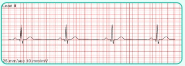
A Trata-se de ritmo chocável, com necessidade de desfibrilação a 2J/kg.
B Trata-se de bradicardia sintomática, com indicação de RCP e adrenalina.
C Trata-se de AESP, com indicação de RCP e adrenalina precoce.
D A conduta inicial é fazer o dextro, pois a hipoglicemia pode ser a causa do distúrbio de ritmo.
E A conduta inicial é estabelecer a avaliação primária através do ABCDE para melhor elucidação diagnóstica.
Questão 1081 · Pediatria · 4000151945Criança de 8 anos de idade é levada ao pediatra para avaliação de rotina. Faz tratamento para asma com corticoide inalatório em baixa dosagem há 1 ano. A mãe refere que no último mês o paciente não conseguiu realizar educação física na escola devido a sintomas e tem exacerbações cerca de três vezes por semana, com necessidade de uso de Salbutamol para resgate. Não apresenta despertares noturnos devido à asma. Considerando aderência ao tratamento e controle ambiental adequado, classi que a doença quanto ao controle e indique a conduta:
A Asma controlada. Rever a técnica de utilização dos dispositivos inalatórios e manter a medicação por mais três meses.
B Asma parcialmente controlada. Rever a técnica de utilização dos dispositivos inalatórios e manter a medicação por mais três meses.
C Asma parcialmente controlada. Rever a técnica de utilização dos dispositivos inalatórios e aumentar a dose de corticoide inalatório.
D Asma não controlada. Rever a técnica de utilização dos dispositivos inalatórios e associar broncodilatador de longa ação à mesma dose do corticoide inalatório.
E Asma não controlada. Rever a técnica de utilização dos dispositivos inalatórios e trocar o corticoide inalatório por broncodilatador de longa ação
Questão 1082 · Obstetrícia · 4000151944Gestante de 33 anos, secundigesta, primípara, com 32 semanas de gestação. É hipertensa crônica controlada em uso de metildopa. Chega ao pronto-socorro com queixa de dor abdominal intensa e pequeno sangramento vaginal há 30 minutos. A gestante encontra-se em bom estado geral, hidratada, descorada +2/+4, frequência cardíaca de 110 bpm, PA: 100x70 mmHg, tônus uterino aumentado, feto cefálico, dorso à esquerda, BCF: 80bpm. Ao exame especular foi encontrada discreta quantidade de sangue em fundo de saco vaginal e bolsa íntegra, toque colo pérvio para 3 cm, grosso, posterior. Quais são a hipótese diagnóstica e a conduta?
A Descolamento prematuro de placenta, amniotomia e parto cesariana imediato.
B Placenta prévia, prescrever uterolítico e observação.
C Placenta prévia, manter avaliação fetal rigorosa e prosseguir acompanhamento de parto vaginal.
D Rotura uterina, amniotomia, estabilização hemodinâmica e laparotomia.
E Rotura de vasa prévia, cesariana eletiva.
Questão 1083 · Abortamento inevitável · Conduta · Curetagem uterina CTG · 4000151943Paciente D.R.P., 35 anos, secundigesta, primípara (parto vaginal há 2 anos), idade gestacional de 13 semanas, com queixa de dor em baixo ventre, sangramento vaginal há 3 dias e intenso há 3 horas. Ao exame: REG, descorada +2/+4, afebril, pulso: 108 bpm. Exame especular: saída de moderada quantidade de sangue pelo orifício externo do colo uterino, toque colo pérvio. Foi solicitado um hemograma, que revelou o seguinte resultado: Hb: 9,2 g/dL; Ht: 30,4%; plaquetas: 230.000/mm3 e leucócitos de 8.260/mm3. Na ultrassonogra a de urgência foi visualizado placenta anterior, feto único, intra-útero, compatível com 13 semanas e batimento cardíaco fetal ausente. Qual seria a hipótese diagnóstica e a conduta mais adequada?
A Abortamento completo. Internação, analgesia com opioide, aguardar expulsão espontânea
B Abortamento em curso. Aguardar evolução espontânea via domiciliar, hidratação e retorno para reavaliação em 15 dias.
C Abortamento em curso. Internação, estabilização da paciente, analgesia com opioide se necessário, indução com misoprostol e, após expulsão do embrião, avaliar curetagem uterina, se restos placentários.
D Aborto retido. Realizar internação para controle e estabilidade hemodinâmica e indicar a curetagem uterina.
E Aborto infectado. Realizar internação, antibioticoterapia e curetagem uterina.
Questão 1084 · Parto · Obstetrícia · 4000151942A respeito de gestante primigesta portadora de HIV, é correto afirmar que
A A prescrição de terapia antirretroviral durante o pré-natal é fundamental para que os níveis de CD4 após a 34ª semana estejam adequados e assim permitir o parto vaginal sem aumento do risco de transmissão vertical do vírus
B É indicado realizar parto cesáreo eletivamente se a carga viral detectada for menor do 1.000 cópias/mL após a 34ª semana de gestação.
C A realização de parto empelicado deve ser um cuidado assumido pelo obstetra caso a gestante tenha carga viral desconhecida após a 34ª semana de gestação.
D A via de parto será obstétrica se os níveis de CD4 estiverem acima de 250 céls/mm³ após a 34ª semana de gestação.
E Não é necessário inibir a lactação em gestantes com carga viral detectada menor do 1.000 cópias/mL após a 34ª semana de gestação.
Questão 1085 · Segundo periodo expulsivo · Obstetrícia · 4000151941O segundo período de parto
A corresponde ao período em que ocorrem modificações cervicais que culminam em dilatação completa.
B é o momento em que a manobra de McRoberts pode ser realizada.
C corresponde ao período entre o desprendimento do concepto do corpo materno até a saída da placenta.
D é o momento em que se realiza a manobra de Jacobs.
E corresponde ao momento em que, diante da variedade de posição OET persistente no plano +3 de De Lee, é indicada a realização do fórcipe de alívio.
Questão 1086 · Determinação da corionicidade e amnionicidade · Obstetrícia · Tipos de gestações múltiplas · 4000151940sobre as gestações gemelares monocoriônicas e diamnióticas, é correto afirmar que:
A Os fetos podem apresentar sexos iguais ou diferentes.
B Não há risco de síndrome da transfusão feto-fetal, pois cada feto tem sua cavidade amniótica.
C A gestação é obrigatoriamente monozigótica.
D Há risco de gemelaridade conjugada se a clivagem do embrião ocorrer depois do 13º dia de fecundação.
E É possível identificar esse tipo de gestação pelo ultrassom, quando se identifica o sinal do lambda na ultrassonografia do primeiro trimestre.
Questão 1087 · Ginecologia · 4000151939Paciente de 25 anos, sexualmente ativa, refere aparecimento, há 2 semanas, de úlcera vulvar única e dolorosa. Nega história de vesículas. Segundo o Ministério da Saúde, qual é a conduta preconizada?
A Pesquisar infecções sexualmente transmissíveis (ISTs) e biopsiar.
B Aciclovir oral e biopsiar.
C Penicilina benzatina dose única, azitromicina dose única, doxiciclina por 21 dias
D Aciclovir por 7-10 dias, penicilina benzatina dose única, azitromicina dose única e pesquisar ISTs.
E Penicilina benzatina dose única, azitromicina dose única e pesquisar ISTs.
Questão 1088 · Ginecologia · 4000151938Joana tem 17 anos, é nuligesta e deseja método contraceptivo de alta e cácia e de longa duração. É portadora de enxaqueca com aura e útero bicorno. Qual das alternativas abaixo é a melhor opção para essa paciente?
A Pílula combinada.
B Implante subdérmico.
C Dispositivo intrauterino de cobre.
D Não prescrever método contraceptivo pois a paciente é menor de idade.
E Minipílula.
Questão 1089 · Ginecologia · 4000151937Paciente de 24 anos refere dor pélvica há cerca de dois meses. Refere que a dor se iniciou no meio de seu ciclo menstrual anterior e se manteve até agora. Paciente nega febre, corrimento vaginal e outros sintomas. Refere última menstruação há 10 dias. Faz uso de preservativo em todas as relações sexuais como método contraceptivo. Optou-se por realizar uma ultrassonogra a transvaginal para investigação. O laudo do ultrassom está descrito abaixo: Presença de cisto em ovário direito, medindo 4,0x3,0x3,0 cm, com conteúdo heterogêneo com presença de debris em seu interior, com padrão linear; não há sombra acústica posterior. Diante do quadro acima, considerando a epidemiologia, o quadro clínico e as características ultrassonográficas, qual é sua principal hipótese diagnóstica?
A Endometrioma.
B Cisto de Gartner.
C Cisto hemorrágico.
D Abscesso tubo-ovariano.
E Teratoma
Questão 1090 · Ginecologia · 4000151936Em relação à terapia hormonal no climatério, assinale a alternativa incorreta:
A O uso de terapia combinada com estrogênio e progesterona aumenta o risco de câncer de mama após 5 anos de uso
B A via transdérmica é preferencial em pacientes com hipertrigliceridemia
C A terapia hormonal por via transdérmica apresenta maior risco de trombose em relação à via oral, pois leva a um aumento dos fatores de coagulação por ter a “primeira passagem hepática”
D O estrogênio presente na terapia hormonal reduz a resistência periférica à insulina
E A terapia hormonal empregada na chamada janela de oportunidade diminui o risco cardiovascular.
Questão 1091 · Ginecologia · 4000151935Paciente do sexo feminino, 19 anos, comparece a consulta ginecológica na UBS. A paciente refere aumento dos pelos no rosto e no abdome. Refere também atraso menstrual há 4 meses. Conta que sua menstruação sempre foi desregulada, desde a menarca. Podemos observar no exame físico: IMC = 32 kg/m², presença de acne e aumento da oleosidade da pele. Índice de Ferriman Gallwey = 11. As dosagens de TSH, prolactina, FSH, testosterona, SDHEA e cortisol mostraram-se inalteradas. Qual é a hipótese diagnóstica mais provável para essa paciente?
A Síndrome dos ovários policísticos.
B Disgenesia gonadal pura.
C Síndrome de Savage.
D Síndrome da feminização testicular.
E Síndrome de Cushing.
Questão 1092 · Trauma Ortopédico · 4000151934Paciente do sexo masculino, 45 anos, obeso, vítima de queda de moto, é levado ao pronto-socorro com edema, deformidade e dor do membro superior esquerdo. ATLS sem alterações significativas. Tratando-se d e trauma isolado do membro superior, é imobilizado com tala x e levado para radiogra a, pela qual se evidencia fratura dia sária cominutiva do rádio. Devido à falta de leitos no hospital, o ortopedista faz uma imobilização gessada axilopalmar, agenda a cirurgia para dali a uma semana e orienta ao paciente que aguarde em casa. No dia seguinte pela manhã, o paciente retorna com dor importante do membro superior esquerdo, que não melhorou nem mesmo com a medicação prescrita (dipirona, diclofenaco e tramadol), formigamento no antebraço e incapacidade de estender o punho. Qual é a primeira conduta a ser tomada?
A Elevar o membro.
B Fender e remover o gesso.
C Modificar analgesia para morfina e internar o paciente.
D Fazer a cirurgia em caráter de urgência.
E Fasciotomia do antebraço.
Questão 1093 · Manif estações clínicas · Agentes etiológicos · Cirurgia · 4000151933M.M.L., 55 anos, sexo masculino, com diagnóstico de cirrose por hepatite C crônica há 3 anos, procura atendimento referindo aumento do volume abdominal, dor abdominal, adinamia e febre. Nega etilismo e tabagismo. Ao exame físico apresenta icterícia, ginecomastia, eritema palmar, telangiectasias em tronco e edema de membros inferiores. No abdome apresenta macicez móvel e sinal de piparote positivo. A análise do líquido ascítico mostrou contagem de polimorfonucleares de 500/mm³, glicose: 20 mg/dl, proteína: 1.5 g/dl e DHL maior que o DHL sérico. Cultura do líquido ascítico em andamento. Diante do caso, qual é a conduta mais apropriada?
A Iniciar Ceftriaxona e albumina.
B Solicitar tomografia de abdome.
C Aguardar a cultura do líquido ascítico.
D Iniciar tratamento com furosemida e espironolactona
E Iniciar norfloxacina 400 mg 12/12h e manter o tratamento por 7 dias.
Questão 1094 · Neoplasias Malignas de Cabeça e Pescoço · Cavidade Oral · Cirurgia · 4000151932Seu Victor é um paciente de 60 anos procedente da zona rural com relato de tabagismo e etilismo por 35 anos e apresentando dor à mastigação progressiva de início há 04 meses, negando febre, dispneia, disfonia e perda de peso. Relata história de tosse seca intermitente há 06 meses. Cavidade oral apresentando uma lesão úlceroin ltrativa de bordas irregulares em borda direita de língua de aproximadamente 3,5 cm, sem alteração na mobilidade da língua nem outras lesões na cavidade oral. Orofaringe e laringe sem alterações. Pescoço sem linfonodos clinicamente detectáveis. Considerando a história clínica acima, qual é o provável diagnóstico e tratamento?
A Carcinoma epidermoide – glossectomia parcial associada a esvaziamento cervical
B Adenocarcinoma – glossectomia parcial associada à radioterapia.
C Carcinoma epidermoide – radioterapia associada à quimioterapia
D Tuberculose em cavidade oral – tuberculostáticos.
E Paracoccidioidomicose- antifúngicos
Questão 1095 · Cirurgia · 4000151931Você está no seu primeiro dia como R1 de Cirurgia Geral e, de cara, presencia uma discussão entre o docente da cadeira de Cirurgia Geral e seus R2. O docente estava bastante bravo, pois percebeu que, mesmo após um ano de Residência Médica, os residentes ainda cometiam muitos erros conceituais em se tratando de assuntos muito básicos da anatomia e fisiologia colorretal Chamados para um “grupo de discussão” surpresa, você presenciou os R2s fazendo os seguintes comentários: • Bruno mesentérica inferior, pode mudar de direção em situações de oclusão intestinal, de forma que tal arcada exibe importância ímpar em situações de isquemia mesentérica.” • Dilson irrigado pela artéria retal superior, na transição entre cólon sigmoide e reto.” • Paulo: consistente e, portanto, vulnerável aos processos isquêmicos. • Monalisa tecido linfoide. Sua extremidade distal pode assumir diversas posições, sendo mais comumente retroileal.” • Ricardo: como o próprio nome já diz, é menos calibroso. Além disso, o intestino delgado apresenta faixas musculares longitudinais denominadas tênias, que seguem todo seu comprimento.” Você, aluno do Estratégia Med, percebe que não cometeria o mesmo erro dos seus colegas. O docente tinha razão! Praticamente todos os R2s proferiram erros conceituais básicos, apenas UM se salvou. Assinale aquele R2 que não cometeu erro no seu discurso:
A Bruno.
B Bruno.
C Bruno.
D Monalisa.
E Ricardo.
Questão 1096 · Cirurgia · 4000151930A respeito do adenocarcinoma ductal infiltrante pancreático, assinale a alternativa CORRETA.
A Trata-se de neoplasia de elevada morbimortalidade, com sobrevida em 5 anos de 60% dentre os pacientes que não apresentam envolvimento nodal e de apenas 30% entre os pacientes com linfonodo acometido.
B A presença de metástase hepática torna a doença irressecável, ao passo que linfonodos de Virchow ainda são passíveis de ressecção e proposta curativa.
C Pacientes classificados inicialmente como estágio IA a III. se beneficiarão do tratamento cirúrgico sob proposta curativa, ao passo que os classificados como estágio
D O CEA é o principal marcador tumoral em se tratando de câncer de pâncreas, embora não seja útil para rastreio, mas sim para acompanhamento dos portadores de tal neoplasia.
E Na avaliação de paciente suspeito para câncer de pâncreas, a biópsia pancreática pré-operatória é dispensável diante de imagem tomográfica típica revelando tumor potencialmente ressecável
Questão 1097 · Cirurgia · 4000151929Paciente masculino, 30 anos, sabidamente portador de retocolite ulcerativa e em uso de mesalazina 4,8 g/dia, refere febre e distensão abdominal associada a cerca de 10 evacuações mucosanguinolentas por dia há 2 semanas. Procurou pronto-socorro durante a madrugada, por piora da dor e importante distensão abdominal. Na triagem, surpreendida frequência cardíaca de 130 bpm e pressão arterial 100 x 60 mmHg. Foi, então, encaminhado para avaliação pelo R1 de Cirurgia Geral, que solicitou exames laboratoriais e radiogra a de abdome. Exames laboratoriais evidenciaram Hb = 10 mg/dL, Leucócitos = 18000/mm³, Plaquetas = 500.000/mm³, PCR 100 mg/dL, Ureia 40 mg/dL e Creatinina 1,2 mg/dL. Radiogra a de abdome revelou importante distensão colônica, com cólon transverso medindo 8 cm em seu maior diâmetro. A respeito do caso, assinale a alternativa CORRETA
A O R1 deverá acordar imediatamente seus superiores, pois o paciente deverá ser submetido a cirurgia imediatamente.
B O R1 deverá solicitar avaliação da clínica médica, pois a complicação que o paciente apresenta poderá ser manejada clinicamente com aumento da dose da mesalazina.
C O R1 deverá deixar o paciente em jejum e solicitar uma colonoscopia para adequada avaliação da atividade da doença, crucial para definição terapêutica.
D Caso o paciente não melhore com tratamento clínico, a cirurgia de escolha é a colectomia total com ileostomia.
E Após estabilização, o R1 poderá dar alta ao paciente com corticoide via oral e encaminhá-lo para o ambulatório de Gastroenterologia ainda naquela semana.
Questão 1098 · Avaliação de Risco · Princípios da Anestesiologia · Cirurgia · 4000151928Homem de 75 anos está sendo avaliado no consultório de préoperatório para uma cirurgia de ressecção de tumor de cólon. Apresenta histórico de hipertensão arterial e doença coronariana, mas refere que está bem compensado. Em uso de atenolol, losartana, rosuvastatina e AAS. Refere infarto agudo do miocárdio há 2 anos tratado com stent. Relata fazer caminhadas diárias de 20 minutos sem sentir sintomas. Refere etilismo social. Ao exame: PA 118 x 70 mmHg e FC 84 bpm. Baseado nesses dados, o anestesiologista classi cou seu estado físico segundo a classificação da
A ASA P II, pois o paciente está assintomático e as doenças, bem compensadas.
B ASA P III, em função do histórico de doença coronariana.
C ASA P IV, devido ao passado de infarto agudo do miocárdio.
D ASA P V, devido ao grande porte cirúrgico
E ASA P VI, pois trata-se de um paciente idoso com comorbidades.
Questão 1099 · Diagnóstico · Volvo de Sigmoide · 4000151927Paciente do sexo masculino, 76 anos, procura Unidade de Pronto Atendimento por dor abdominal em hemiabdome esquerdo, de forte intensidade, há 1 dia, associada a vômitos repetitivos. Refere perda do apetite no período. Nega febre. Nega sintomas semelhantes prévios. Última evacuação há 3 dias. Nega eliminação de atos após início da dor. Antecedentes pessoais: constipação crônica. Exame físico: BEG, desidratado 1+; FC 106 bpm; fR 22 ipm. Abdome: globoso, presença de timpanismo à percussão e de dor à palpação profunda, com descompressão brusca negativa. Toque retal: ausência de fezes em ampola, sem lesões expansivas tocáveis. Radiografia de abdome a seguir: A principal hipótese diagnóstica e a melhor opção de tratamento inicial são, respectivamente:
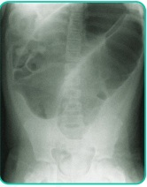
A Diverticulite aguda; jejum, hidratação e antibioticoterapia intravenosa.
B Neoplasia de reto baixo; cirurgia de Miles.
C Neoplasia de reto baixo; cirurgia de Miles.
D Volvo de sigmoide; colonoscopia descompressiva;
E Fecaloma; lavagem intestinal.
Questão 1100 · Trauma Abdominal Fechado · Cirurgia · 4000151926O baço é um dos órgãos intra-abdominais mais comumente lesados em trauma abdominal fechado. Considerando um paciente estável hemodinamicamente, com presença de tomogra a computadorizada c o m evidência de laceração esplênica com envolvimento de vasos segmentares hilares sem desvascularização completa, e levando em consideração a classificação da Surgery of Trauma,
A Grau III, laparotomia exploradora com esplenectomia
B Grau III, tratamento não operatório com observação e controle hematimétrico.
C Grau IV, tratamento não operatório com observação e controle hematimétrico.
D Grau IV, laparotomia exploradora com esplenectomia.
E Grau V, laparotomia exploradora com esplenectomia.
Questão 1101 · Trauma Abdominal Fechado · Cirurgia · 4000151925Paciente sexo masculino, de 23 anos, estava dirigindo um veículo em uma rodovia quando colidiu contra o muro central, foi transportado pelo Resgate para o pronto-socorro após atendimento na cena do trauma. Na chegada paciente encontrava-se com colar cervical e prancha rígida, com vias aéreas pérvias, ausculta pulmonar sem alterações, PA 130 x 80 mmHg, FC = 99 bat/min, abdome plano, doloroso difusamente, porém sem peritonite, presença de desvio em região de membro inferior esquerdo sugestivo de fratura. Realizadas as medidas iniciais e radiogra a de tórax e bacia sem sinais de fraturas, confirmado fratura de fíbula sem indicação cirúrgica realizada imobilização. Qual é a melhor conduta para o paciente
A Alta hospitalar e retorno ambulatorial com ortopedia.
B Realizar lavado peritoneal difuso.
C Realizar FAST e, se negativo, alta hospitalar
D Tomografia de abdome e pelve com contraste e exames laboratoriais.
E Indicada laparoscopia diagnóstica.
Questão 1102 · Medicações que provocam glicosúria inibidores de SGLT2 · 4000151924Considere os seguintes pacientes: I. João, 59 anos, IMC= 31 kg/m2 , hipertenso, diabetes mellitus tipo 2 há 10 anos, em uso de metformina 1 g 12/12 h, com glicemia em jejum 134 mg/dL, HbA1c 7,5%, creatinina 1 mg/dL e albuminúria 20 mg/g de creatinina; II. Maria, 70 anos, IMC= 26,4 kg/m2 , diabetes mellitus tipo 2 há 20 anos, amputação prévia de hálux direito por úlcera complicada, em uso de metformina 1 g/dia, insulina NPH 10 UI cedo e 10 UI ao deitar-se e gliclazida MR 60 mg/dia, com glicemia em jejum 122 mg/dL, HbA1c 8,3%, creatinina 1,2 mg/dL e albuminúria 25 mg/g de creatinina; III. José, 61 anos, IMC = 25 kg/m2 , diabetes mellitus tipo 2 há 8 anos, em uso de metformina 1 g 12/12h, linagliptina 5 mg/dia, com glicemia em jejum 131 mg/dL, HbA1c= 7,2%, creatinina 1,1 mg/dL e albuminúria 310 mg/g de creatinina Que pacientes seriam candidatos ao uso de inibidores de SGLT-2?
A I e II.
B I e II.
C I e III.
D Apenas III.
E I, II e III.
Questão 1103 · Diagnóstico dif erencial das anemias microcíticas · 4000151923Georgea, 41 anos, apresenta quadro de fadiga a cerca de 3 meses. As queixas intensi caram-se nas últimas semanas. Histerectomia prévia por miomatose uterina, já que apresentava sangramento uterino anormal. Paciente relata possuir “anemia familiar” (SIC), estando presente em seus outros três irmãos (um do sexo masculino e duas do sexo feminino). Relata que o homem registrou importante hemorragia durante procedimento dentário, e que as mulheres também possuem aumento do uxo menstrual, mas ao contrário da paciente não são acometidas de miomas. No laboratório de Georgea, verificamos uma hemoglobina de 10,2g/dl, VCM: 68, RDW: 17,3, leucócitos: 5920mm³ e plaquetas 140.000mm³ , com tamanho plaquetário normal (VPM: 9). A eletroforese de hemoglobina está normal e a ferritina, de 6. A colonoscopia mostra uma angiodisplasia. A partir dos dados citados, podemos considerar que
A Apesar do histórico familiar e da anemia microcítica, a eletroforese de hemoglobina normal descarta a presença de traço talassêmico.
B A possibilidade de Bernard-Soulier é clara, vista a microcitose e o sangramento familiar desproporcional ao número de plaquetas.
C Doença de Von Willebrand é o achado mais provável, visto o histórico familiar, e apesar dessa gerar anemia microcítica, não possui qualquer relação com angiodisplasia.
D É possível que, uma vez restabelecida a reserva de ferro, o VCM permaneça baixo.
E Além da queda de hemoglobina e do VCM, esperaríamos uma redução também do RDW, e não um aumento, no caso de anemias ferroprivas.
Questão 1104 · Clínica Médica · Espirometria · Classif icação · 4000151922Paciente de 65 anos, tabagista ativo com carga tabágica de 45 maços/ ano, vem em consulta de retorno para reavaliação com dispneia aos pequenos esforços e traz espirometria que apresenta VEF1/CVF = 0,52 pós-broncodilatador, com VEF1 = 42%, também pós-broncodilatador. Qual é a classificação espirométrica do paciente de acordo com o Global Initiative for Chronic Obstructive Lung Disease (2021)?
A GOLD 1 (Leve).
B GOLD 2 (Moderada).
C GOLD 3 (Grave).
D GOLD 4 (Muito grave).
E Não é possível classificar nosso paciente com os dados apresentados
Questão 1105 · Clínica Médica · Diagnóstico estadiamento e f atores prognósticos · 4000151921Uma paciente de 30 anos procura atendimento dermatológico com queixa de uma “pinta” nas costas que está crescendo. Ao exame dermatológico há uma placa enegrecida com áreas mais escuras e outras mais claras, assimétrica e com bordas irregulares medindo 5mm. Diante desse caso clínico, assinale a alternativa correta.
A A conduta correta nesse momento é realizar biópsia excisional com margem de 2mm.
B Como a lesão mede menos do que 6 mm, a melhor conduta é acompanhá-la para avaliar se haverá indicação de exérese.
C A biópsia incisional é a melhor forma de amostragem dessa lesão.
D Devemos realizar uma exérese com margens amplas de aproximadamente 2cm.
E Além da exérese devemos realizar pesquisa de linfonodo sentinela.
Questão 1106 · Líquor · 4000151920Paciente jovem, 30 anos, comparece ao atendimento com queixa de fraqueza e parestesia iniciadas há 7 dias, de evolução ascendente e que no momento acometem os membros inferiores, superiores e, no caso da fraqueza, também a face. Ao exame físico, apresenta tetraparesia e arre exia. Refere ter apresentado provável gastroenterite cerca de 14 dias antes do início dos sintomas. Sobre o quadro clínico, qual é a alternativa correta?
A Hiponatremia, dor abdominal e depressão são características dessa doença.
B Fraqueza muscular com piora ao esforço repetitivo é comum nessa condição.
C A presença de dissociação albumino-citológica, embora comum, não ocorre em todos os casos.
D O tratamento padrão-ouro para essa condição é o uso de corticoide em alta dose.
E A presença de bradicinesia e rigidez são esperadas nessa condição clínica.
Questão 1107 · COVID 19 · 4000151919Em relação à dexametasona na COVID-19, é correto afirmar que:
A estudos demonstraram benefício para o uso de pulsoterapia nos casos críticos
B não deve ser utilizada em pacientes sem indicação de oxigênio suplementar
C seu uso não pode ser interrompido abruptamente, devendo ser retirada gradualmente.
D quando iniciada na fase aguda da doença, observa-se maior redução na mortalidade.
E a administração por via intravenosa é obrigatória, pela melhor absorção do medicamento.
Questão 1108 · Arterite de células gigantes ou arterite temporal · 4000151918Sobre a arterite de células gigantes, assinale a alternativa correta.
A É uma vasculite de pequenos vasos e acomete preferencialmente mulheres jovens.
B Nesta vasculite não ocorre aumento importante de provas inflamatórias.
C A polimialgia reumática é fortemente associada e caracterizada por fraqueza muscular de cinturas escapular e pélvica.
D A complicação mais temida é a perda visual, que pode ocorrer por oclusão da artéria oftálmica.
E O tratamento de primeira linha é o metotrexato.
Questão 1109 · Artropatias inf ecciosas · 4000151917Homem, 35 anos, com início de artrite em joelho direito, tornozelo esquerdo, dor na região do calcanhar, úlceras orais indolores e lesão pustulosa na superfície plantar após evento infeccioso, tem a seguinte etiologia mais provável:
A Chlamydia trachomatis.
B Staphylococcus aureus.
C Neisseria gonorrhoeae
D Chlamydia pneumoniae
E Clostridium difficile.
Questão 1110 · Outras taquiarritmias · 4000151916Você está de plantão em uma unidade cardiointensiva quando seu colega da emergência chega para discutir esse ECG: Assinale a alternativa INCORRETA:
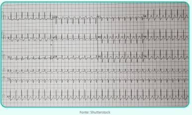
A Na presença de instabilidade hemodinâmica, a conduta deve ser desfibrilação.
B A frequência cardíaca é superior a 150bpm.
C O principal mecanismo dessa taquiarritmia é reentrada nodal.
D Em pacientes estáveis, a manobra de valsalva modificada é uma boa opção para reversão dessa arritmia
E A adenosina deve ser utilizada em pacientes que não respondem à manobra vagal
Questão 1111 · Clínica Médica · Inibidores do sistema reninaangiotensinaaldosterona · 4000151915Bloqueadores dos canais de cálcio BCC Luiz Fernando, 68 anos, portador de diabetes e gota, vem para consulta de rotina na UBS. Sua pressão arterial era 152 x 92 mmHg (em ambos os membros superiores). Seu exame laboratorial revelava: Cr: 1,8mg/dL; K: 5,1mEq/L e exame de urina com proteinúria 2+/4+. Sobre esse caso, assinale a alternativa mais correta
A Não há indicação de início imediato de tratamento, visto que foi realizada apenas uma aferição da pressão arterial
B O tratamento deve ser iniciado de imediato com inibidor da ECA e diurético tiazídico.
C O tratamento deve ser iniciado de imediato com inibidor da ECA e bloqueador de canal de cálcio
D A disfunção renal e potássio elevado contraindicam o início de inibidor da ECA. Esse paciente deve ser tratado com bloqueador de canal de cálcio e diurético tiazídico.
E A disfunção renal e potássio elevado contraindicam o início de inibidor da ECA. Esse paciente deve ser tratado com bloqueador de canal de cálcio e betabloqueador
Questão 1112 · Psicopatologia e Exame do Estado Mental EEM · 4000147790Paciente de 9 anos idade está internado na companhia de seu pai, pois será submetido a uma cirurgia ortopédica após quebrar o tornozelo jogando futebol. Muito tenso e ansioso, acorda no meio da noite gritando, dizendo que tem "um leão" no seu quarto. Ele ca mais tranquilo quando seu pai acende a luz, mostrando que o leão não passava de uma mala. Qual é o fenômeno psicopatológico descrito no enunciado?
A Delírio
B Pseudoalucinação
C Alucinação
D Ilusão
E Delirium
Revisar: possível letra faltando em enunciado
Questão 1113 · Prevenção Quaternária · 4000147789Homem, 53 anos, comparece à consulta agendada na UBS com sua médica de família para uma consulta de rotina. Além de sobrepeso, sedentarismo e eventual insônia quando exagera na alimentação, não apresenta outras comorbidades. Diz à sua médica que, “às vezes” se sente um pouco triste, mas isso acontece esporadicamente, dura apenas algumas horas e não afeta sua funcionalidade. O paciente solicitou à assistente o uso de medicamento para a depressão, pois sua esposa usa sertralina e “ cou muito bem”. Após uma conversa sobre sua situação de saúde, quando lhe foi explicado que sua “tristeza” não se trata de um quadro patológico, cou pactuado um plano terapêutico com início de atividade física 3 vezes por semana, exposição regular à luz solar, realização de higiene do sono, redução de carboidratos e redução do peso corporal. Além disso, a médica decidiu não iniciar a medicação solicitada. Em relação ao último item do plano terapêutico, que nível de prevenção está sendo aplicado?
A Prevenção primária
B Prevenção secundária
C Prevenção terciária
D Prevenção quaternária
E Prevenção de acidente de trabalho
Questão 1114 · Política Nacional de Atenção Básica PNAB · 4000147788O Programa de Agentes Comunitários de Saúde (PACS) foi implantado o cialmente pelo Ministério da Saúde em 1991 a partir de uma iniciativa desenvolvida em algumas regiões do Nordeste, além de outras localidades. Essa nova categoria de trabalhadores originava-se da própria comunidade, por isso prestava serviços que atendiam melhor as peculiaridades de cada localidade. Reconhecendo a importância desses pro ssionais na vida das pessoas, eles passaram a compor a equipe mínima da Estratégia Saúde da Família e passaram a ter suas funções definidas na Política Nacional de Atenção Básica (PNAB). De acordo com a PNAB, de 2017, é possível afirmar que não é papel dos Agentes Comunitários de Saúde:
A Avaliar as pessoas em seus domicílios, elaborando um plano de cuidados para as pessoas que possuem condições crônicas no seu território de atuação.
B Realizar diagnóstico demográfico e social do território sob sua atuação.
C Contribuir com a equipe para o processo de territorialização e mapeamento da área de atuação.
D Realizar técnicas limpas de curativo, em caráter excepcional e sob orientação de profissional de nível superior da equipe, desde que receba o devido treinamento e material adequado.
E Aferir a pressão arterial e a temperatura axilar, além de realizar a medição da glicemia capilar, considerando que essas atividades devam ser feitas em caráter excepcional e sob orientação de profissional de nível superior da equipe, com treinamento específico e de posse de material adequado.
Questão 1115 · Prevenção Secundária · 4000147787O Senado aprovou no dia 29 de abril de 2021 o Projeto de Lei (PL) nº 5043/2020 que amplia a quantidade de doenças rastreadas pelo teste do pezinho realizado pelo Sistema Único de Saúde (SUS). A proposta desse PL é fazer com que esse exame passe a detectar 14 grupos de doença, porém isso ocorrerá de modo escalonado, de acordo com prazos regulamentados pelo Ministério da Saúde. “Atualmente, o teste do pezinho realizado pelo SUS engloba seis doenças: hipotireoidismo congênito; fenilcetonúria; anemia falciforme; brose cística (também conhecida como mucoviscidose); hiperplasia adrenal congênita e de ciência de biotinidase. Conforme destacado pelo autor do projeto, deputado Dagoberto Nogueira (PDT- MS), a versão expandida do teste, encontrada nos serviços privados, faz o diagnóstico de até 53 doenças.” (Fonte: Agência Brasil - Publicado em 29/04/2021 - https://agenciabrasil.ebc.com. br/saude/noticia/2021- 04/senado-aprova-ampliacao-de-diagnostico-do-teste- do-pezinho) A importância desse projeto de lei está em aperfeiçoar o teste do pezinho que é uma medida de prevenção:
A Primordial.
B Primária.
C Secundária.
D Terciária.
E Quaternária.
Questão 1116 · Princípios e Diretrizes do Sistema Único de Saúde SUS · 4000147786Rodolfo e Camila, casal do Amapá, chegam em São Paulo e são acolhidos pela igreja de uma comunidade na zona norte da cidade. Os voluntários da igreja percebem que Rodolfo está tossindo bastante e Camila informa que esse sintoma persiste há mais de três semanas, mas não puderam fazer nada por não possuírem qualquer plano de saúde ou dinheiro para pagar uma consulta particular. Adriano, um dos voluntários da igreja, leva o casal para uma Unidade Básica de Saúde da região e a técnica de enfermagem, que é novata, informa que “não é possível agendar o atendimento, pois ele não porta o cartão de saúde”. Adriano está indignado e explica corretamente à técnica de enfermagem que ela está contrariando um dos princípios doutrinários do Sistema Único de Saúde que seria:
A o Acolhimento.
B a Coordenação do Cuidado.
C a Participação Popular.
D a Universalidade.
E a Integralidade.
Questão 1117 · Medicina Preventiva · 4000147785Um gestor de Secretaria Estadual de Saúde deseja elaborar estatísticas a respeito de variáveis relativas ao câncer de mama, como análises espaciais no território e correlação dos tipos histológicos mais prevalentes com as categorias BI-RADS®. Qual é o sistema de informação em saúde específico para fornecer tais informações?
A SISMAMA (Sistema de Informação do Câncer de Mama).
B SIM (Sistema de Informação sobre Mortalidade).
C SISCAN (Sistema de Informação do Câncer).
D SISAB (Sistema de Informação em Saúde para a Atenção Básica).
E SISNEO (Sistema de Informação de Neoplasias da Mulher).
Questão 1118 · Medicina Preventiva · 4000147784Em relação ao previsto pela Agência Nacional de Saúde Suplementar (ANS) em relação a reembolsos a cliente por parte das operadoras de planos de saúde, assinale a alternativa correta.
A Havendo preenchimento de critérios contratuais e legais para reembolso, a operadora deverá reembolsar o beneficiário no prazo máximo de 15 (quinze) dias.
B O reembolso de despesas objetiva proteger a saúde do beneficiário, sendo definido como um ressarcimento da operadora ao cliente em caso de necessidade de atendimento em qualquer serviço de saúde desde que configurada situação de urgência ou emergência.
C Para um contrato que prevê livre escolha de prestadores, o reembolso da operadora de plano de saúde não poderá ser limitado a determinado valor.
D Em casos que a operadora indica ao beneficiário a necessidade de deslocar-se a outro município para realizar seu atendimento, a operadora torna-se responsável em reembolsar despesas de transporte, mas não de hospedagem ou alimentação.
E O instituto do reembolso na relação entre beneficiários e operadoras de planos de saúde foi previsto desde a lei orgânica do SUS.
Questão 1119 · Sensibilidade · 4000147783Alexandre desenvolveu um novo teste diagnóstico para COVID-19. O teste promete uma acurácia de 95%, pode ser realizado no 3º dia da doença e utiliza a saliva do paciente como amostra. Para validar o método, ele aplicou o teste na população da cidade A, que sabidamente apresenta prevalência de COVID-19 igual a 40%. Agora, ele deseja aplicar o mesmo teste na cidade B, onde a prevalência é igual a 10%. O que vai acontecer com a sensibilidade do teste diagnóstico?
A Certamente aumentará.
B Certamente diminuirá.
C Pode ser que aumente.
D Pode ser que diminua.
E Permanece inalterada.
Questão 1120 · Medicina Preventiva · 4000147782Um estudo realizado na cidade de São Paulo convocou 50 crianças com diagnóstico recente de diabetes mellitus tipo 1 (grupo A) e 180 sem essa condição clínica (grupo B). Todas as crianças apresentavam idade inferior a 5 anos e atrasos em seus calendários de imunização. Os pais (ou responsáveis) pelas crianças foram questionados sobre diversos fatores de exposição, inclusive se a criança havia sido diagnosticada com rotavirose em algum momento da vida (infecção pelo rotavírus). Ao nal do estudo, o pesquisador responsável veri cou que 80% dos indivíduos do grupo A apresentaram rotavirose em até 6 meses antes do diagnóstico de DM1. Em contrapartida, no grupo B, apenas 50% dos pais referiram que os lhos apresentaram essa infecção. Pergunta-se: qual é a medida que deve ser calculada nesse estudo e qual é o valor dela?
A RR = 2.
B OR = 3.
C RR = 4.
D OR = 4.
E OR = 9.
Questão 1121 · Dif erenças entre Incidência e Prevalência · Incidência · 4000147781Ana é secretária de saúde da cidade de Arumã e está preocupada com a taxa de mortalidade por câncer de mama no município, uma vez que esse indicador aumentou em quase 30% nos últimos 5 anos. Por isso, ela decidiu implantar um programa de rastreamento para essa doença. O público-alvo será o grupo de mulheres que residem em Arumã e tem idade entre 50 e 69 anos. Ainda, Ana pretende que a periodicidade do rastreio seja bianual. Considerando essas características, qual deve ser a medida de saúde coletiva que sofrerá mudança imediata com o início do rastreamento e qual é o tipo de mudança esperada?
A Incidência – aumento.
B Mortalidade específica por câncer de mama – aumento.
C Mortalidade geral – diminuição.
D Incidência – diminuição.
E Mortalidade específica por câncer de mama – diminuição.
Questão 1122 · Of talmologia · 4000147780Halyna, 10 anos, vem apresentando há 4 meses di culdade para andar e fortes dores nos joelhos, normalmente associadas a aumento de volume e de temperatura locais. A mãe nega patologias prévias na criança. Ao ser avaliada pela médica pediatra da Unidade Básica de Saúde, a menina foi encaminhada para o reumatologista, que, após realizar a anamnese e o exame físico, solicitou alguns exames laboratoriais. Entre os exames solicitados, o que chamou atenção do especialista foi o Fator Reumatoide (FR) negativo e o Fator Antinúcleo (FAN) positivo. Diante da principal hipótese diagnóstica, assinale a alternativa INCORRETA com relação aos achados oculares normalmente encontrados em crianças com essa patologia:
A O olho fica branco mesmo na presença de uveíte grave.
B É a principal causa de uveíte anterior na infância.
C Ambos os olhos são acometidos em 70% dos casos.
D Geralmente a uveíte precede o quadro da artrite.
E A gravidade da uveíte não está relacionada com o grau de acometimento articular.
Questão 1123 · Otorrinolaringologia · 4000147779Dra. Evelyn acabou de se formar e, pelo seu bom desempenho na graduação, foi convidada pelo seu professor para dar plantão no pronto-socorro do principal hospital privado da cidade. No primeiro dia de atendimento, recebeu uma criança de 5 anos com obstrução nasal, tosse, coriza espessa e amarelada, há 07 dias, sem melhora dos sintomas. Como tinha disponibilidade, solicitou prontamente uma tomografia computadorizada dos seios paranasais, que apresentou o resultado abaixo: Fonte: J Fam Pract. 2013 December;62(12) Em relação ao caso descrito, julgue a conduta clínica da doutora; qual é o diagnóstico; e qual é a conduta adequada:

A Inadequada, pois deveria solicitar radiografia dos seios paranasais; sinusite etmoidal bilateral; amoxicilina 90 mg/kg/dia e sintomáticos.
B Adequada; sinusite maxilar esquerda; amoxicilina-clavulanato 45 mg/kg/dia e lavagem nasal com solução salina.
C Inadequada, pois deveria solicitar radiografia dos seios paranasais; sinusite etmoidal direita; lavagem nasal com solução salina, antitussígeno e expectorante.
D Inadequada, pois a suspeita diagnóstica é pela anamnese e exame físico; sinusite maxilar bilateral; lavagem nasal com solução salina e sintomáticos.
E Adequada; sinusite etmoidal bilateral; lavagem nasal com solução salina e corticoide tópico nasal.
Questão 1124 · Pediatria · 4000147778Uma família chega na Unidade de Saúde solicitando aplicação da vacina contra a febre amarela. Nela, temos: • Mãe de 34 anos, nunca vacinada para febre amarela. • Pai de 38 anos, vacinado com uma dose de febre amarela há 30 anos. • Filho de 8 anos, vacinado com uma dose de febre amarela aos 6 anos de idade. • Filha de 5 meses, em aleitamento materno exclusivo. Qual deve ser sua conduta?
A Todos deverão receber uma dose da vacina.
B Vacinar apenas a mãe.
C Vacinar a mãe, o pai e o filho de 8 anos.
D Vacinar a mãe e os dois filhos.
E Não vacinar ninguém da família.
Questão 1125 · Pediatria · 4000147777Recém-nato termo, adequado para idade gestacional, sem intercorrências ao nascimento, com 48 horas de vida é submetido ao teste do coraçãozinho e o resultado é o seguinte: • 98% de saturação em membro superior direito. • 94% de saturação em membro inferior. Qual é a conduta a ser tomada diante desse resultado?
A Alta hospitalar.
B Repetir o teste em uma hora.
C Repetir o teste em 24 horas.
D Realizar ecocardiograma.
E Encaminhar à UTI neonatal e iniciar prostaglandina.
Questão 1126 · Pediatria · 4000147776Fernando, um lactente de três meses, previamente hígido, chega ao Pronto-socorro acompanhado de sua mãe com história de ter apresentado 1 dia de febre e, em seguida, passou a ter coriza e obstrução nasal. Quatro dias depois, a mãe notou que a criança cou mais cansada e gemente. Ao exame físico, encontra-se em regular estado geral, desidratado, com frequência cardíaca de 140 bpm, frequência respiratória de 70 ipm, oximetria em ar ambiente de 90%, ausculta cardíaca sem alterações, ausculta pulmonar com estertores nos, tempo expiratório prolongado e sibilos difusos, abdome com fígado a 3 cm do rebordo costal direito e baço palpável, tempo de enchimento capilar de 2 segundos. A radiogra a de tórax do paciente está apresentada a seguir. Diante da principal hipótese diagnóstica, qual é a conduta a ser indicada para esse lactente?
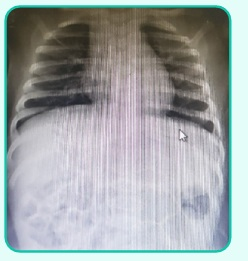
A Oxigenoterapia, furosemida e restrição hídrica.
B Hidratação endovenosa, oxigenoterapia, fisioterapia respiratória, corticoterapia endovenosa e inalação com broncodilatador de 3 em 3 horas.
C Hidratação oral, inalação com solução salina e oxigenoterapia.
D Hidratação endovenosa, azitromicina e oxigenoterapia.
E Hidratação endovenosa, inalação com solução salina e oxigenoterapia.
Questão 1127 · Gastroenterologia · 4000147775Sobre as doenças inflamatórias intestinais (DIIs) na faixa etária pediátrica, assinale a alternativa correta:
A Na retocolite ulcerativa que afeta crianças, diferentemente dos adultos e de forma excepcional, podemos encontrar ausência de inflamação no reto e sigmoide e inflamação transmural com úlceras profundas.
B Felizmente, a incidência das DIIs entre as crianças vem reduzindo- se progressivamente ao longo dos anos.
C Nas crianças, as DIIs costumam apresentar-se de forma mais branda do que nos adultos.
D As doenças inflamatórias intestinais encontram na população pediátrica seu público principal. Estima-se que 50-60% dos portadores de DIIs iniciam os sintomas ainda na infância.
E Nas crianças com suspeita de doença inflamatória intestinal, é fundamental excluir infecção entérica. A identificação de patógenos na coprocultura, como Salmonella ou Shigella, exclui o diagnóstico de DII.
Questão 1128 · Pediatria · 4000147774Marcos César é uma criança de 6 anos de idade, previamente hígida, que apresentou febre baixa por dois dias há uma semana e dor de garganta com duração de dois dias. Desde então, vem apresentando tosse seca persistente, com piora progressiva e, há um dia, refere di culdade para respirar e mialgia. Ao exame físico, apresenta-se em bom estado geral, ausculta cardíaca e ausculta pulmonar com estertores nos e raros sibilos e a oximetria em ar ambiente é de 95%. Considerando o quadro clínico e a evolução do paciente, qual é a hipótese diagnóstica mais provável e o tratamento para Marcos?
A Crise de asma/Prednisolona e salbutamol inalatório.
B Pneumonia típica/Amoxicilina por 10 dias.
C Pneumonia viral/Tratamento de suporte com inalação com soro fisiológico e sintomáticos.
D Pneumonia atípica/Claritromicina por 7 a 10 dias.
E Tuberculose/Isoniazida, rifampicina e pirazinamida.
Questão 1129 · Dermatologia · 4000147773Sobre o impetigo, assinale a alternativa correta.
A O impetigo bolhoso é mais comum que o impetigo crostoso.
B Após o tratamento e a resolução do quadro, é comum a presença de cicatriz.
C Como o impetigo é uma infecção bacteriana, devemos realizar tratamento com antibiótico, sendo a neomicina a melhor droga.
D Ao contrário da faringoamigdalite estreptocócica, o impetigo não pode levar a um quadro de glomerulonefrite.
E O S. aureus é o agente etiológico mais implicado no impetigo bolhoso.
Questão 1130 · Pediatria · 4000147772Uma criança de 7 anos está sendo atendida no ambulatório de pediatria geral. A mãe conta que a criança iniciou quadro de sibilância aos 3 anos de idade. Os quadros ocorrem cerca de 3 vezes ao mês, quase sempre relacionados a mudanças climáticas ou exposição a alérgenos. A mãe refere que usa salbutamol de resgate nas crises, por 2 dias, com melhora dos sintomas. Refere também que o lho nunca foi internado. O paciente não faz uso de nenhum tratamento de manutenção. Além de orientações quanto a medidas comportamentais e controle do ambiente, a conduta mais adequada é:
A Reavaliar a técnica de utilização do salbutamol e manter apenas ele nas exacerbações, tendo em vista sintomas infrequentes.
B Iniciar corticoide inalatório em baixa dosagem.
C Iniciar broncodilatador de longa ação.
D Iniciar corticoide + broncodilatador de longa ação.
E Iniciar corticoide sistêmico em baixa dosagem.
Questão 1131 · Pediatria · 4000147771Lactente de 8 meses, previamente hígido, dá entrada em Departamento de Emergência com história de irritabilidade, palidez e recusa alimentar há 12 horas. À avaliação cardiovascular, notados: taquicardia (FC = 210 bpm), tempo de enchimento capilar de 4 segundos, pulsos nos e pressão arterial de 60x30 mmHg. O paciente foi monitorizado e o ritmo a seguir, verificado: A enfermeira que está no leito refere di culdade de conseguir acesso venoso. Com base em seu diagnóstico, indique a melhor conduta:
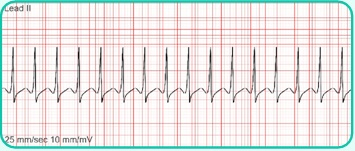
A Manobras vagais.
B Expansão com soro fisiológico a 10ml/kg em acesso intraósseo.
C Adenosina 0,1 mg/kg em acesso intraósseo.
D Cardioversão sincronizada na dose de 0,5-1J/kg.
E Cardioversão sincronizada na dose de 2-4J/kg.
Questão 1132 · Quarto periodo periodo de Greenberg · 4000147770Gestante, primigesta, chega à maternidade no período expulsivo e o parto evolui rapidamente ainda na sala de admissão. Qual deve ser a principal medida nesse caso?
A Fazer ocitocina profilática intramuscular ainda na sala de admissão se possível.
B Encaminhar a paciente ao centro obstétrico para aguardar a dequitação da placenta.
C Pegar acesso venoso e fazer ocitocina profilática endovenosa.
D Pegar acesso venoso e fazer antibioticoterapia profilática.
E Aguardar a dequitação fisiológica da placenta e, em seguida, revisar o canal de parto.
Questão 1133 · Obstetrícia · 4000147769Na assistência ao parto normal de gestante de risco habitual, qual das condutas a seguir é recomendada?
A Realizar tricotomia e enema na admissão da gestante em trabalho de parto para diminuir o risco de infecção puerperal.
B Realizar episiotomia de rotina para diminuir o risco de lacerações perineais.
C Realizar controle intermitente dos batimentos cardíacos fetais a cada 15-30 min na fase ativa do trabalho de parto.
D Realizar amniotomia de rotina para evitar trabalho de parto prolongado.
E Realizar pelvimetria clínica em todas as gestantes em trabalho de parto para avaliar a possibilidade de parto vaginal.
Questão 1134 · Obstetrícia · Aspiraçao manual intra uterina AMIU · 4000147768Sobre o material apresentado na figura, assinale a alternativa incorreta.
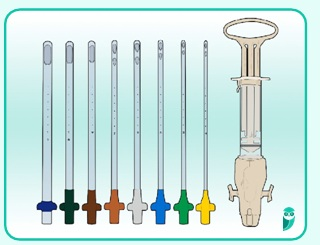
A É utilizado para esvaziamento uterino nos casos de abortamento em que se identifica eco endometrial de 12 mm.
B É uma alternativa à realização da curetagem uterina no primeiro trimestre da gestação.
C Não é útil nos casos em que é necessário realizar o esvaziamento uterino puerperal.
D É indicado no tratamento de mola hidatiforme.
E Está associado à redução do risco de perfuração uterina em relação à curetagem uterina.
Questão 1135 · Obstetrícia · 4000147767Observe o partograma abaixo. Entre as alternativas, qual delas apresenta o diâmetro fetal que se relaciona à variedade de posição registrada nele?
A Submentobregmático
B Occipitofrontal
C Suboccipitofrontal
D Suboccipitobregmático
E Occipitomentoniano
Questão 1137 · Ginecologia · 4000147765Mulher de 60 anos com quadro de sangramento pós-menopausa e espessamento endometrial ao exame ultrassonográ co foi submetida à biópsia do endométrio por meio de histeroscopia que apresentou o resultado de carcinoma endometrioide G1. Foi submetida à histerectomia (vide imagem abaixo). Considerando esse caso de câncer de endométrio, assinale a alternativa correta:
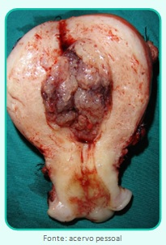
A O tipo histológico mais frequente é o carcinoma endometrioide G1, que é considerado do tipo II e apresenta um bom prognóstico.
B Essa paciente deveria ter feito o rastreamento do câncer de endométrio, por meio de ultrassonografia transvaginal anual, para prevenir o desenvolvimento da doença ou diagnosticá-la em um estádio mais precoce.
C Os principais fatores de risco para o desenvolvimento do câncer de endométrio são a obesidade, o diabetes tipo II e o tabagismo.
D Essa paciente apresenta um câncer de endométrio no estádio IA e o tratamento cirúrgico padrão é a histerectomia total com salpingooforectomia bilateral.
E O câncer de endométrio é o câncer do trato genital feminino mais incidente em nosso país.
Revisar: possível letra faltando em enunciado
Questão 1138 · Ginecologia · 4000147764Mulher de 54 anos com exame físico mamário sem alterações realizou mamogra a de rastreamento em que foi visualizado um nódulo circunscrito no quadrante superolateral direito medindo 1,0 cm. A mamogra a foi laudada como BIRADS 0 e foi indicada uma ultrassonogra a complementar. Ao exame ultrassonográ co, foi visualizada a imagem abaixo no local correspondente à alteração mamográ ca. Qual é o BIRADS desta ultrassonografia?
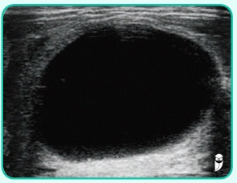
A BIRADS 0
B BIRADS 2
C BIRADS 3
D BIRADS 4
E BIRADS 5.
Revisar: possível letra faltando em enunciado
Questão 1140 · Ginecologia · 4000147762Paciente de 56 anos refere que teve a menopausa aos 54 anos e que, desde então, vem apresentando sensação de calor, sobretudo à noite, que prejudicam muito a qualidade de seu sono. Além disso, refere estar apresentando diminuição importante do desejo sexual, apesar de não ter queixas de ressecamento da região vulvovaginal. A paciente apresenta diabetes mellitus tipo II bem controlado com uso de metformina e hipertensão arterial controlada com losartana. Nega cirurgias prévias ou outras comorbidades. Diante do exposto acima, qual é o tratamento mais indicado para tentar melhorar todas as queixas dessa paciente.
A Terapia hormonal com estrogênio isolado.
B Uso de testosterona tópica por via vaginal.
C Terapia hormonal com estrogênio + progesterona por via transdérmica.
D Terapia hormonal com estrogênio + progesterona por via oral.
E Terapia hormonal com tibolona.
Questão 1141 · Ginecologia · 4000147761Paciente de 24 anos refere que apresentou a menarca aos 15 anos e que seus ciclos se tornaram regulares por volta dos 18 anos. Refere que apresenta ciclos a cada 28-30 dias, com 4 a 5 dias de sangramento, com uxo normal. Refere que, desde os 18 anos, percebe que cerca de 7 dias antes da menstruação se sente mais irritada e cansada, além de apresentar sensação de inchaço. Porém, nos últimos 6 meses notou que os sintomas se intensi caram e que estão prejudicando sua qualidade de vida, sobretudo no relacionamento com seu namorado e com os colegas de trabalho. AP: nega doenças ou cirurgias prévias. AGO: nuligesta, com vida sexual ativa, faz uso de condom masculino para anticoncepção. Diante do exposto acima, qual é o diagnóstico e a conduta mais adequados para a paciente?
A Distúrbio disfórico pré-menstrual. Iniciar o tratamento com mudanças de estilo de vida e, se não houver melhora, associar um anticoncepcional hormonal combinado.
B Síndrome pré-menstrual. Solicitar dosagens hormonais (LH, FSH e estradiol) e iniciar anticoncepcional hormonal oral combinado, preferencialmente com levonorgestrel como progestagênio.
C Síndrome pré-menstrual. Orientar atividade física e mudanças dietéticas e introduzir um anticoncepcional hormonal combinado, de preferência com drospirenona como progestagênio.
D Transtorno disfórico pré-menstrual. Solicitar dosagens hormonais e função tireoidiana, orientar atividade física e mudanças de estilo de vida, realizar colocação de DIU de levonorgestrel, a fim de promover atrofia endometrial.
E Depressão catamenial. Orientar mudanças no estilo de vida, uso de diuréticos e antidepressivos (inibidores da recaptação de serotonina).
Questão 1142 · Anamnese · Exame Físico · 4000147760Homem de 59 anos, comparece para consulta de avaliação pré-operatória pois será submetido à colecistectomia videolaparoscópica. O paciente realiza caminhadas 4 vezes na semana com duração de 30 minutos e teve o diagnóstico de diabetes mellitus há 6 anos, estando em uso de metformina 850 mg 2 vezes ao dia. Nega outras comorbidades. O exame físico é normal, PA 131x84 mmHg, FC 80 bpm. Eletrocardiograma dentro dos limites da normalidade. Exames laboratoriais: Hb glicada de 6,8%, glicemia de jejum 119 mg/dL, Cr 0,9 mg/dL. Baseado no caso descrito, o risco de eventos cardiovasculares no perioperatório e as recomendações são:
A Risco baixo e não são necessários exames adicionais.
B Risco baixo e deve ser solicitado teste ergométrico.
C Risco intermediário e não são necessários exames adicionais.
D Risco intermediário e deve ser solicitado uma prova de isquemia miocárdica.
E Não é possível estimar o risco cirúrgico com os dados fornecidos.
Questão 1143 · Fraturas da Bacia · Avaliação da Fratura de Bacia no trauma · 4000147759Epidemiologia mecanismos de trauma e apresentação clínica Paciente do sexo masculino, desconhecido, 24 anos de idade, foi trazido pelo SAMU após colisão moto X automóvel, em prancha rígida, com colar cervical, intubado. Ao exame na sala de trauma, apresenta ausculta pulmonar normal, pressão 90 X 40 mmHg, frequência cardíaca de 132 batimentos por minuto, pelve instável ao exame físico, abdome algo rígido, doloroso e com hematomas em ancos. Foram infundidos dois litros de cristaloides e aplicado lençol na pelve, com resposta transeunte da pressão. FAST positivo e radiogra a da bacia abaixo: Assinale a alternativa correta:
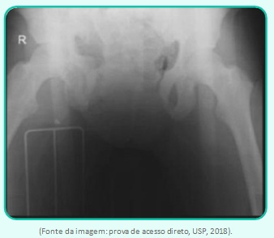
A Com o paciente inconsciente, é impossível analisar o nível neurológico, mas um trauma raquimedular alto é provável.
B A conduta, nesse momento, é uma laparotomia exploradora e, posteriormente, fixação externa da bacia.
C A conduta nesse momento é fixar a bacia e, na sequência, fazer uma laparotomia exploradora.
D Após a laparotomia, se o paciente permanecer instável, uma tomografia de corpo inteiro está indicada, para identificar outro foco de sangramento.
E A melhor conduta no momento é infundir hemoderivados.
Questão 1144 · Hepatologia · 4000147758L.L.M, 55 anos, etilista crônico, casado, aposentado, é levado ao pronto-atendimento apresentando confusão mental e sonolência. Familiar informa 2 episódios de melena há 3 dias. Ao exame físico, encontra-se confuso, com icterícia (2+/4+), hipocorado (2+/4+), acianótico, afebril. Apresenta ginecomastia, eritema palmar, circulação colateral em abdome, macicez móvel presente e sinal de piparote positivo. Refere ser portador de HIV e hepatite C crônica. Exames laboratoriais mostram carga viral do HIV indetectável. Nega tabagismo, bebe 500 ml de cachaça por dia. Ao calcular o escore MELD (Model for End-Stage Liver Disease) do paciente, o médico encontra o resultado de 20. Ao avaliar o caso, o médico encaminha o paciente para o hepatologista e comenta que talvez seja um caso com indicação para o transplante hepático. Em relação ao caso apresentado, o que contraindica o transplante hepático?
A Idade.
B Infecção pelo HIV.
C Infecção pelo vírus da hepatite C.
D MELD de 20.
E Etilismo.
Questão 1145 · Clínica Médica · Gastroenterologia · 4000147757Sobre as metástases hepáticas no contexto do câncer colorretal, assinale a alternativa correta:
A Chamamos de metástases metacrônicas aquelas que são diagnosticadas antes, ao mesmo tempo ou em até seis meses após a detecção do tumor primário. Já as metástases sincrônicas são aquelas detectadas mais de seis meses após o diagnóstico do tumor primário.
B A definição de ressecabilidade mais aceita atualmente é a possibilidade de exérese total das lesões (macro e microscópica), preservando, em fígados não doentes, pelo menos 20% a 25% de parênquima com efetiva drenagem biliar, vascularização e drenagem venosa.
C Considerando-se as metástases metacrônicas de câncer colorretal, naqueles pacientes em que elas são consideradas ressecáveis, a avaliação dos fatores de mau prognóstico não é útil para definição terapêutica, uma vez que essas metástases serão ressecadas de toda forma.
D Nos pacientes com metástases hepáticas metacrônicas irressecáveis, não é possível a realização de quimioterapia com o intuito de reduzir tais metástases, tornando-as ressecáveis.
E Dentre os métodos ablativos para as metástases hepáticas metacrônicas irressecáveis, temos a ablação por radiofrequência (RF, cujos resultados são melhores nos casos em que temos, no máximo, cinco lesões, sendo a maior delas inferior a 5 cm.
Questão 1146 · Hemorragia Digestiva Baixa HDB · Abordagem Inicial · 4000147756Isaura, 67 anos, chega ao consultório com queixa de astenia e episódios intermitentes de hematoquezia. Ao exame físico, está hipocorada 2+/4+, abdome ácido e indolor, PA: 110x70 mHg, FC: 82 bpm. Trouxe consigo exame laboratorial com Hb 9,6 g/dL. Diante desse quadro, qual é a conduta a seguir?
A Encaminhar para a emergência para estabilização clínica.
B Solicitar endoscopia digestiva alta.
C Solicitar colonoscopia.
D Realizar toque retal.
E Solicitar cápsula endoscópica.
Questão 1147 · Esôf ago de Barrett · 4000147755Sobre a abordagem cirúrgica em pacientes com doença do re uxo e esôfago de Barrett, marque a alternativa incorreta:
A Está indicada a fundoplicatura para reverter a metaplasia intestinal.
B Está indicada a fundoplicatura quando há associação com sintomas respiratórios refratários.
C Está indicada a esofagectomia distal quando há displasia de alto grau.
D Não há indicação rotineira para fundoplicatura no esôfago de Barrett.
E Não há indicação rotineira para fundoplicatura quando há displasia de baixo grau.
Questão 1148 · Apresentação Clínica e Diagnóstico · Tratamento · 4000147754Paciente de 30 anos, do sexo feminino, refere proctalgia intensa e hematoquezia há 2 meses. Refere hábito intestinal irregular, constipada crônica, fezes endurecidas e uso frequente de laxativos, evacuando a cada 2-3 dias. No exame físico, toque retal doloroso, sem sangue em dedo de luva e, na inspeção, você identi ca a seguinte lesão: Qual é o provável diagnóstico e o tratamento?
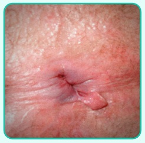
A Doença Hemorroidária interna Grau I. Orientações dietéticas.
B Fissura anal aguda. Pomada anestésica (lidocaína 2%)
C Fissura anal crônica. Pomada definifedipina 0,2%
D Fístula anal. Tratamento cirúrgico.
E Condiloma anal. Excisão cirúrgica.
Revisar: possível letra faltando em enunciado
Questão 1149 · Classif icação Clínica CEAP · 4000147753Homem de 64 anos chega ao seu consultório com queixa de sensação de dor/peso nas pernas que piora ao final do dia. O paciente refere que a dor melhora quando ele se deita ou eleva os membros inferiores. Ao exame físico das pernas, você nota a seguinte alteração: Considerando a principal hipótese diagnóstica e a apresentação clínica acima, qual é o estágio clínico dessa doença conforme a classificação CEAP?
A C 0
B C 1
C C 2
D C 3
E C 4.
Questão 1150 · Manif estações Clínicas e Exame Físico · Colecistite Aguda Alitiásica · Diagnóstico · 4000147752Paciente de 68 anos de idade, do sexo masculino, diabético e cardiopata, grande queimado, internado na UTI há 7 dias devido à queimadura extensa por álcool (45% da superfície corporal). Em uso de nutrição parenteral total e antibioticoterapia. O paciente apresentou dor abdominal em hipocôndrio direito, contínua, há 12 horas. Ao exame físico, encontra- se ictérico +/4, sonolento, FC = 120 bpm; temperatura axilar = 39°C; PA = 90 mmHg x 60 mmHg. Abdome está distendido e doloroso à palpação do hipocôndrio direito, com sinal de Murphy positivo. Realizada ultrassonogra a à beira do leito que evidenciou: vesícula biliar distendida, de paredes espessas, com ausência de cálculos no seu interior e sem dilatação da via biliar. Qual é a principal hipótese diagnóstica e a sua conduta?
A Colangite aguda – drenagem urgente da via biliar por CPRE (colangiopancreatografia retrógrada endoscópica).
B Colecistite aguda alitiásica – colecistectomia por via videolaparoscópica.
C Colecistite aguda alitiásica – colecistectomia por via aberta convencional.
D Colecistite aguda alitiásica – colecistostomia e programação de colecistectomia na mesma internação.
E Colecistite aguda alitiásica – colecistostomia sem a necessidade de colecistectomia posterior.
Questão 1151 · Cirurgia · Trauma da Bexiga · 4000147751Paciente masculino, 25 anos, foi vítima de acidente motociclístico após ingesta alcoólica. Deu entrada no pronto-socorro após 30 minutos do acidente apresentando dor em região hipogástrica e hematúria. Apresenta-se com permeabilidade das vias aéreas, ventilação/respiração sem alterações significantes, frequência respiratória (FR) de 18 irpm, frequência cardíaca (FC) de 92 bpm, PA: 120 x 80 mmHg, mucosas coradas, Glasgow 15, pupilas isocóricas e fotorreagentes. Realizou tomogra a de abdome e pelve com contraste endovenoso que evidenciou líquido livre em moderada quantidade na pelve e fratura estável de bacia. Qual é a principal hipótese diagnóstica e a conduta?
A Lesão renal – Tratamento conservador
B Lesão de bexiga extraperitoneal - Sondagem vesical de demora
C Lesão de bexiga intraperitoneal - Exploração cirúrgica imediata
D Lesão uretral - Uretrocistografia retrógrada
E Lesão ureteral - Exploração cirúrgica
Questão 1152 · Inf ectologia · 4000147750Abel, 35 anos, está em tratamento quimioterápico para um tumor de testículo, tendo feito sua última quimioterapia há 9 dias. Em seus antecedentes pessoais, temos um episódio de pneumonia há 4 anos, com necessidade de hospitalização e também um histórico de alergia a penicilinas. Esse paciente procura o atendimento de urgência e emergência queixando-se de febre aferida em casa. No atendimento inicial, apresentava-se com febre de 38.1°C, frequência cardíaca de 108 bpm, frequência respiratória de 19 irpm e pressão arterial de 108 x 78 mmHg. Em avaliação médica, observou-se que Abel estava desidratado, corado, sem cianose ou icterícia e também não apresentava nenhuma alteração em seu exame físico segmentar. Nos exames complementares iniciais, o médico plantonista observou os resultados abaixo: Qual é o primeiro passo terapêutico que deverá ser proposto para Abel?
A Alta com uso de amoxicilina + clavulanato e ciprofloxacino.
B Alta com uso de sintomáticos, visto que linfocitose é típica de infecção viral.
C Internação para uso de cefepima endovenosa.
D Uma dose de cefepima no pronto-socorro e alta com uso de amoxicilina + clavulanato e ciprofloxacino.
E Uma dose de cefepima no pronto-socorro e alta com uso de ciprofloxacino e clindamicina.
Questão 1153 · Neurologia · 4000147749Homem, 33 anos, é levado ao pronto-socorro por quadro de cefaleia de instalação súbita, muito intensa e classificada como a pior da vida. Exame neurológico: PA 180 X 110 mmHg; escala de coma de Glasgow 13, à custa de confusão mental; rigidez de nuca ++/++++; força muscular normal. Na investigação etiológica, foi solicitada uma tomogra a computadorizada do crânio sem contraste, que está exposta abaixo: Sobre a doença apresentada na questão, assinale a alternativa correta:
A O tratamento inicial dessa condição deve incluir o uso definimodipino e corticoide.
B Trata-se de hemorragia subaracnóidea aneurismática, classificação de Hunt-Hess: 1.
C Caso a tomografia computadorizada de crânio fosse normal, o diagnóstico de hemorragia subaracnóidea estaria descartado.
D A instituição de corticoide e fenitoína deve ser precoce e realizada para todos os pacientes.
E São fatores de risco para essa condição: hipertensão arterial, tabagismo e abuso de álcool.
Questão 1154 · Quadro Clínico · Herniações Cerebrais · 4000147748Paciente de 65 anos, sexo masculino, hipertenso. Foi para o hospital por quadro de cefaleia de início súbito, de forte intensidade, evoluindo com hemiparesia esquerda, vômitos e sonolência. PA de 240/124 mmHg na entrada. TC de crânio mostrou hematoma intraparenquimatoso subcortical de grande volume à direita. Foi internado para controle pressórico e monitorização. No segundo dia de internação, evoluiu com torpor (abertura ocular à dor) e palavras inapropriadas. Ao exame físico, anisocoria, com pupila esquerda midriática e arresponsiva, tetraparesia assimétrica e membro superior direito com movimento de extensão anormal. As estruturas cerebrais envolvidas no evento agudo do segundo dia foram:
A tenda do cerebelo e tálamo.
B foice do cérebro e giro do cíngulo.
C tenda do cerebelo e uncus.
D tonsila cerebelar e forame magno.
E artéria cerebral média esquerda e córtex à esquerda.
Questão 1155 · Fenômeno de Raynaud · 4000147747Mulher de 30 anos comparece ao ambulatório de Reumatologia com queixa de acometimento progressivo e rápido de pele. Relata espessamento cutâneo importante em mãos, tronco, face e membros inferiores. Além disso, desde a adolescência, as mãos sempre mudavam de coloração, passavam por uma fase de palidez, cianose e rubor, principalmente quando expostas ao frio. Há 3 meses, iniciou também quadro de dispneia aos médios esforços e houve surgimento de úlceras nos dedos. Sobre esse caso, assinale a alternativa CORRETA.
A A paciente acima, muito provavelmente, está cursando com hipertensão pulmonar.
B Nessa paciente, o anticorpo que deve ser positivo é o anticentrômero.
C No caso acima, há risco de envolvimento renal rápido de progressivo, embora só seja encontrado em 10% dos casos.
D Nesse caso, podemos classificar a doença como limitada.
E O acometimento renal, nesse caso, estaria relacionado ao anticorpo anti-RNA polimerase III negativo.
Questão 1156 · Reumatologia · 4000147746Mulher, 36 anos de idade, com queixa de fraqueza insidiosa e progressiva, bastante dificuldade para elevar os braços, como não consegue mais pentear os cabelos, resolveu procurar ajuda médica. Ao exame físico, foi percebido que a paciente apresenta lesão eritematosa e violácea nas pálpebras superiores, além de discreto edema. Sobre o caso acima, assinale a alternativa INCORRETA.
A A paciente apresenta 1 sinal clínico patognomônico da doença.
B Nessa paciente, é recomendada a pesquisa de neoplasia.
C Na biópsia muscular desse caso, é encontrado infiltrado linfocítico endomisial, com presença de células TCD8+.
D Nessa doença, pode ocorrer atividade com CPK normal.
E Não ocorre acometimento de musculatura ocular extrínseca.
Questão 1157 · Hematologia · 4000147745Juliette, 31 anos, necessita realizar um procedimento para extração dentária (quatro dentes sisos). Vem encaminhada do cirurgião dentista, pois possui exame de TTPa alargado (relação de 1,6, sendo que o valor de referência é inferior a 1,25). No histórico pregresso relata algum sangramento (leve) após amigdalectomia. Ciclo menstrual normal. Sem histórico familiar de hemorragias. Considerando a demanda da paciente (liberação para extração dentária) e com os dados do caso, qual seria a conduta mais adequada?
A Repetir TTPa e, se alterado, liberar procedimento com uso de plasma.
B Repetir TTPa e, se alterado, liberar procedimento com uso de plaquetas.
C Repetir TTPa e, se alterado, solicitar anticoagulante lúpico e fatores da coagulação.
D Repetir TTPa e, se alterado, liberar procedimento com uso de enoxaparina.
E Repetir TTPa e, se alterado, não autorizar procedimento.
Questão 1158 · Endocrinologia · 4000147744Um paciente de 48 anos, sexo masculino, procurou o oftalmologista referindo cefaleia e alteração visual há 6 meses, com piora progressiva dos sintomas. Também refere que notou diminuição de libido no período. Nega comorbidades e uso de medicações. Submetido ao exame de refração e à tonometria, sem alterações. No fundo de olho, notou-se palidez de discos ópticos. Solicitada a campimetria visual, com o seguinte achado: Valores de referência para normalidade: Glicemia em jejum: < 100 mg/dL. Cálcio: 8,2-10,2 mg/dL. Prolactina: < 20 ng/mL. Testosterona: 240-820 ng/dL. Creatinina: 0,6-1,2 mg/dL. Qual é o próximo exame a ser solicitado e qual seria uma possível alteração laboratorial encontrada?
A Paquimetria. Possível alteração laboratorial: glicemia em jejum 340 mg/dL.
B Biometria óptica. Possível alteração laboratorial: cálcio 13 mg/ dL.
C Ressonância magnética de sela túrcica. Possível alteração laboratorial: prolactina 1.200 ng/mL.
D Tomografia computadorizada de crânio. Possível alteração laboratorial: testosterona total 78 ng/dL.
E Ultrassonografia doppler de artérias renais. Possível alteração laboratorial: creatinina 3,4 mg/dL.
Questão 1159 · Complicações · 4000147743Uma paciente de 40 anos procura o pronto-socorro com queixa de dor torácica e lesões na pele ( figura ao lado). Ela refere que a dor começou há 2 dias e, há 1 dia, surgiram as manchas cutâneas. Ela informa ainda que é transplantada renal e está em uso de tacrolimus. Diante do quadro clínico, assinale a alternativa correta
A O tratamento deve ser com aciclovir 200 mg, administrado a cada 8 horas por 7 dias.
B Essa doença é causada pela reativação do vírus do sarampo.
C A única forma dessa paciente transmitir essa doença é pelo contato com o conteúdo das vesículas.
D Essa paciente tem maior risco de evoluir com dor crônica.
E Não há, até hoje, nenhuma forma de reduzir a chance de um indivíduo adulto desenvolver essa condição.
Questão 1160 · Clínica Médica · Manif estações clínicas da hipercalemia · Eletrocardiograma · 4000147742Sobre a análise do eletrocardiograma abaixo, assinale a alternativa incorreta:
A O ritmo é sinusal.
B A frequência cardíaca é, aproximadamente, 100bpm.
C O eixo está desviado para esquerda.
D Há sinais de isquemia em parede anterior.
E A onda T apiculada sugere hipercalemia.
Questão 1161 · Clínica Médica · Doença de Chagas · 4000147741Michael, 34 anos, comparece ao ambulatório de cardiologia, após encaminhamento da unidade básica de saúde, com relato de que vem apresentando há dois meses um quadro de dispneia progressiva, edema de membros inferiores e hepatomegalia. Ao coletar a história, percebe-se que Michael passou a infância e a adolescência na zona rural de um município no sul da Bahia. Suspeita-se então de cardiomiopatia chagásica. Sobre esse caso, NÃO podemos afirmar que:
A Deve-se solicitar o exame parasitológico para iniciar o tratamento com benzonidazol.
B A apresentação clássica da doença crônica é na forma de uma miocardiopatia dilatada que, geralmente, acomete primeiro o ventrículo direito.
C Uma das complicações mais comuns dessa doença são os eventos tromboembólicos, contribui para isso a formação de aneurismas em "dedo de luva".
D Essa doença afeta diretamente o sistema de condução cardíaco, sendo a alteração mais característica o bloqueio de ramo direito associado ao bloqueio divisional anterossuperior esquerdo.
E Para se fazer o diagnóstico sorológico, é necessário que se use métodos de detecção diferentes.
Questão 1162 · Tratamento cirúrgico da estenose aórtica · 4000146619Um homem com 50 anos de idade é internado em hospital terciário para investigação diagnóstica e tratamento de quadro caracterizado por dispneia aos moderados esforços. Há relato, ainda, de precordialgia em aperto, com duração de cerca de 5 minutos, precipitada por esforços e aliviada com o repouso, além da ocorrência de 2 episódios de síncope nos últimos 12 meses. Ao realizar exame físico, constatou-se que o paciente se encontra em regular estado geral, corado, acianótico, eupneico, com a cabeceira do leito elevada a 30 graus. Seu ritmo cardíaco é regular, em 3 tempos, com a presença de 4.ª bulha e a existência de um sopro mesossistólico 3+/6+ mais audível no 2.º espaço intercostal direito, na borda esternal; os pulsos arteriais são do tipo parvus et tardus. A ausculta pulmonar apresenta discretos estertores crepitantes em bases. Não há edema de membros inferiores. A radiografia de tórax (PA e perfil) mostra leve dilatação da raiz da aorta, área cardíaca normal e presença de calci cações mitro-aórticas. É solicitado, então, um ecocardiograma transtorácico que revela área valvar aórtica de 0,9 cm² (normal: 3 a 4 cm²), sendo o gradiente ventrículo esquerdo (VE) - aorta de 55 mmHg e velocidade máxima de uxo transvalvar de 4,5 metros/segundo (normal = inferior a 2m/seg); fração de ejeção do VE é de 52 %. Frente ao processo de avaliação diagnóstica e ao estabelecimento de plano terapêutico neste momento, qual é a conduta médica indicada para o paciente e sua justificativa?
A Indicar início de tratamento farmacológico com diurético de alça, inibidor de enzima conversora de angiotensina e nitrato, dada a presença de insuficiência cardíaca provocada pelo aneurisma da aorta torácica ascendente.
B Solicitar a complementação do ecocardiograma com infusão endovenosa de dobutamina, em razão da necessidade de melhor definir o comprometimento da função diastólica causado pela regurgitação valvar aórtica.
C Proceder cateterismo cardíaco diagnóstico e possivelmente terapêutico, dada a inegável existência de doença arterial coronariana como causa da angina pectoris estável e disfunção sistólica do VE.
D Solicitar avaliação do risco cirúrgico visando à realização de troca valvar aórtica, em razão da existência de estenose aórtica grave sintomática, com indicação de substituição da valva afetada.
Questão 1163 · Abordagem Comunitária · Medicina Preventiva · Planejamento em Saúde · 4000146617Em uma reunião da Unidade de Saúde da Família, com a presença dos membros das cinco equipes de Saúde da Família, incluindo os Agentes Comunitários de Saúde (ACS), decidiu-se que, em razão do aumento do número de usuários sem cadastro que passaram a procurar a unidade para atendimento, seria iniciado o processo de atualização da territorialização, que inclui várias etapas e principia pela fase preparatória. Considerando-se essa situação, que conjunto de ações e/ou atividades está incluído na etapa preparatória do processo de territorialização?
A Fazer o levantamento dos dados populacionais e socioeconômicos, analisar os dados, adquirir mapa do território, identificar os equipamentos sociais com base no tamanho da população e delimitar o território de acordo com os dados obtidos.
B Indagar às lideranças comunitárias sobre fatores facilitadores ou dificultadores do trabalho desenvolvido pela equipe de saúde e acerca do funcionamento da unidade de saúde, além de obter informações sobre dificuldades de acesso à unidade.
C Realizar entrevistas para levantar informações sobre o território e a vida das famílias e da comunidade, aspectos geográficos, políticos, econômicos, sociais e culturais percebidos e de relevância para a comunidade.
D Levantar a documentação (incluindo plano diretor do município, projetos e estudos, dados demográficos, econômicos e sociais; adquirir mapa-base e definir responsabilidades, principalmente dos ACS (Agente Comunitário de Saúde e dos profissionais mais antigos e/ou moradores na área.
Questão 1164 · Diagnóstico · 4000146616Uma paciente com 35 anos de idade procura atendimento hospitalar devido a episódio único de sangramento anal vermelho vivo, indolor, em pequena quantidade durante evacuação. Nega qualquer história prévia de traumatismo local. Em seu exame físico, constatou-se que a paciente está em bom estado geral, normocorada, PA = 120 x 60 mmHg, FC = 76 bpm e com pulso radial amplo, regular. Abdome plano e depressível, indolor à palpação, sem massas palpáveis e sem sinais de irritação peritoneal. A anuscopia não demonstrou doença hemorroidária externa e/ou ssuras anais e/ou fístulas perianais. O toque retal não identi cou lesões palpáveis, até cerca de ± 6 cm da margem anal, porém, evidenciou discreta quantidade de sangue em dedo-de-luva. O médico assistente solicitou hemograma, cujo resultado foi normal. A paciente foi liberada com encaminhamento ambulatorial e com solicitação de exame de colonoscopia. O resultado da colonoscopia mostrou alguns pólipos colônicos, não pediculados, e lesão de borda elevada com ulceração central, séssil, ± 1,5 cm de diâmetro, em cólon sigmoide, distando ± 35 cm da margem anal - a qual foi biopsiada. Nesse caso clínico, a hipótese diagnóstica mais provável para essa paciente é de
A polipose adenomatosa familiar.
B síndrome de Peutz-Jeghers.
C neoplasia colônica.
D doença de Crohn.
Questão 1165 · Tratamento · 4000146615Uma lactente com 1 ano e 10 meses de idade, previamente hígida, foi atendida no pronto-socorro com quadro de febre e irritabilidade iniciado há 72 horas. Não foram encontradas alterações em exame físico realizado na criança. Procedeu-se, então, à coleta de urina tipo 1 por sondagem vesical e hemograma. A criança foi encaminhada ao ambulatório para verificação dos exames. O hemograma revelou Hb = 11,8 g/dL (valor de referência: 12,6 ± 1,5 g/dL), Ht = 38 % (valor de referência: 37 a 40 %), leucócitos = 18 000 mm³ (valor de referência: 5 000 a 15 000/mm³), plaquetas = 300 000 mm³ (valor de referência: 150 000 a 450 000/mm³), segmentados = 60 %, linfócitos = 37 % e monócitos = 3 %. O exame de urina tipo 1 apresentou densidade = 1 015 (valor de referência: 1 005 a 1 030), pH = 5,7 (valor de referência: 5,5 a 7,5), leucócitos = 180 000/mL (valor de referência: até 10 000/mL), hemácias = 10 000/mL (valor de referência: até 10 000/mL), cilindros piocitários raros, nitrito positivo e a bacterioscopia mostrou a presença de agente Gram negativo. Diante desse quadro clínico, a conduta médica indicada é
A encaminhar a criança para tratamento hospitalar com indicação de antibioticoterapia parenteral empírica.
B solicitar urocultura com antibiograma e aguardar o resultado para orientação da antibioticoterapia adequada.
C solicitar urocultura com antibiograma e iniciar antibioticoterapia domiciliar empírica, antes da obtenção do resultado do exame.
D iniciar antibioticoterapia domiciliar empírica imediatamente, sem necessidade de outros exames, e reavaliar a criança em 24 horas.
Questão 1166 · Conduta · Descolamento prematuro de placenta DPP · Obstetrícia · 4000146614Uma mulher com 26 anos de idade, primigesta, chega á emergência de uma maternidade confusa e com cefaleia por estar apresentando, há cerca de 30 minutos, um sangramento vivo que chegou a ''escorrer por suas pernas'', além de dor abdominal intensa. A paciente nega trauma e/o outras queixas. Relata ainda ter feito duas consultas de pré-natal, mas não trouxe consigo o seu cartão de pré-natal e trouxe ultrassonogra a gestacional normal de duas semanas atrás. Pela data da última menstruarão, o médico calcula a idade gestacional em 32 semanas. Em seu exame físico constatou-se PA = 180 x 120 mmHg, pulso = 114 bpm, abdome gravídico com dinâmica uterina ausente, altura uterina compatível com a idade gestacional, útero lenhoso e frequência cardíaca fetal de 108 bpm. Em exame especular, foi visualizado sangramento vivo ativo vindo do orifício cervical externo. Proteinúria de ta revelou +++. Após iniciado o sulfato de magnésio, qual a conduta médica imediata a ser tomada.
A Administrar betametasona para o amadurecimento pulmonar.
B Realizar ultrassonografia gestacional com urgência.
C Iniciar indução do parto com misoprostol.
D Realizar cesariana de urgência.
Questão 1167 · Manif estações Clínicas · 4000146613Um paciente com 70 anos de idade foi atendido no pronto-socorro de hospital de nível secundário, relatando dor abdominal com irradiação para região dorsal, além de emagrecimento, há 4 meses. Há 2 meses, começou a apresentar prurido cutâneo progressivo e urina escura. Há 15 dias, notou que os ''olhos caram amarelos''. Na ocasião do exame físico, encontrava-se emagrecido, ictérico (++/4+), com escoriações dérmicas provocadas pelo ato de coçar. A borda do fígado era palpada a 1,5 cm abaixo de rebordo costal direito, com palpação não dolorosa. Com base no caso clínico, os resultados dos exames laboratoriais que confirmam a hipótese diagnóstica são
A aumento da bilirrubina indireta e aumento da amilase.
B aumento da bilirrubina direta e aumento da fosfatose alcalina.
C aumento da bilirrubina indireta e aumento da alanina aminotransferase.
D aumento da bilirrubina direta e diminuição do tempo de protrombina em segundos.
Questão 1168 · Diagnóstico e investigação adicional · Indicações de PAAF · Tratamento · 4000146612Uma mulher com 55 anos de idade, previamente hígida, é admitida em hospital após episódio de síncope. Apresenta bradicardia sinusal, discreta hipertensão arterial sistêmica e edema palpebral bilateral. Nota-se um aumento difuso da tireoide que a paciente não havia percebido até então. Não há rouquidão, disfagia nem alteração recente de peso. Ademais, não apresenta histórico familiar de câncer. Um estudo ultrassonográ co da tireoide mostra 3 nódulos de bordas regulares, parcialmente císticos, com componente sólido isoecoico, sem calci cações, de 0,4 cm, 0,6 cm e 0,8 cm. Não há linfadenopatia cervical. O exame revelou TSH = 17,2 mUI/mL (valor de referência = 0,3 a 5,0 mUI/mL). Nesse caso, a abordagem adequada para com a paciente é
A solicitar T3 total e T4 livre e cintilografia da tireoide antes de definir o tratamento.
B prescrever levotiroxina e realizar acompanhamento clínico e ultrassonográfico dos nódulos.
C prescrever levotiroxina e dosar anti-tireoide peroxidase para definir a abordagem dos nódulos.
D solicitar T4 livre e punção aspirativa com agulha fina do maior nódulo antes de definir o tratamento.
Revisar: possível letra faltando em enunciado
Questão 1169 · Predição e prevenção · Obstetrícia · 4000146611Uma secundigesta com 23 anos de idade comparece à consulta ambulatorial de pré-natal de alto risco, encaminhada pela Unidade Básica de Saúde. A rma estar receosa com a gestação atual e refere ter tido, na gravidez anterior, elevação da pressão arterial e convulsão antes do parto, que ocorreu com 37 semanas. No momento, encontra-se com 14 semanas de gestação e sem queixas, não havendo outros antecedentes patológicos. Ao exame físico, mostra-se dentro da normalidade, com PA = 115 x 82 mmHg. Avaliando-se essa história clínica, qual medicamento faz parte da prevenção da condição que a paciente apresentou em sua primeira gestação?
A Metildopa.
B Ácido fólico.
C Progesterona.
D Ácido acetilsalicílico.
Questão 1170 · Política Nacional de Saúde do Trabalhador e da Trabalhadora PNSTT · 4000146610Um homem com 27 anos de idade busca atendimento, pela primeira vez, na Unidade de Estratégia de Saúde da Família (ESF) do bairro onde reside, pois apresenta constantemente crises de falta de ar, com tosse e ''chiadeira'' no peito. Durante a consulta, a rma que, desde a infância, tem diagnóstico de asma, porém, as crises se exacerbaram após ter iniciado o trabalho na câmara fria de um frigorí co da cidade. O paciente relata ter comunicado ao seu chefe sobre seu estado de saúde, mas seu superior respondeu que, se ele não quisesse trabalhar, haveria muitas pessoas interessadas no emprego e que deveria, portanto, ''pedir as contas''. Considerando o texto, assinale a alternativa que indica o que compete ao médico da ESF, além do tratamento da asma.
A Fornecer declaração médica determinando a troca de função pelo empregador.
B Aconselhar o paciente a pedir demissão, tal como sugerido pelo empregador.
C Encaminhar o paciente ao centro de referência em saúde do trabalhador.
D Encaminhar o paciente à perícia médica do INSS.
Revisar: possível letra faltando em enunciado
Questão 1171 · Classif icação do mieloma múltiplo MM · 4000146609Um homem com 64 anos de idade é encaminhado ao ambulatório para investigação de anemia, detectada nas últimas semanas durante investigação de quadro de fadiga, cansaço e dores ósseas. Ao exame físico, paciente apresenta-se em regular estado geral, hipocorado, não havendo outras anormalidades. Os exames complementares realizados recentemente revelaram o seguinte: hemoglobina = 10g/dL (valor de referência: 13 a 17 g/dL); hematócrito = 28% (valor de referência: 40 a 52%); volume corpuscular médio = 88 fL (valor de referência: 80 a 100 fL); leucometria e contagem plaquetária normais; ureia = 60 mg/dL (valor de referência: 20 a 40 mg/dL); creatínina = 1,3mg/dL (valor de referência: 0,7 a 1,2mg/dL); e cálcio sérico = 11,8mg/dL (valor de referência: 8,0 a 10,5mg/dL). Os exames laboratoriais realizados no dia do atendimento apresentam: ureia = 88mg/dL; creatinina = 2,4mg/dL e cálcio sérico = 12,0mg/dL; proteinograma sérico: albumina = 3,1g/dL (valor de referência: 3,5 a 5,5 g/dL), e globulina = 8,2g/dL (valor de referência: 1,5 a 2,5g/dL). Nesse caso, o diagnóstico, a partir dos dados clínicos e laboratoriais, é de
A gamopatia monoclonal associada a mieloma múltiplo.
B gamopatia policlonal associada a síndrome hemolítico-urêmica.
C inversão albumina/globulina por cirrose hepática complicada com síndrome hepatorrenal.
D hipoalbuminemia decorrente de síndrome nefrótica por nefropatia membranosa associada a síndrome hiper-IgG.
Questão 1172 · Vigilância Epidemiológica · 4000146608Uma lactente com 10 meses de idade é levada à Unidade Básica de Saúde pela mãe, a qual demonstra preocupação pelo contato da lha com um tio que, no dia anterior, chegou de viagem do exterior com sintomas respiratórios e manchas no corpo. Ele procurou atendimento no pronto-socorro e foi diagnosticado como caso suspeito de sarampo. A conduta médica indicada para a lactente é administrar a vacina
A tetraviral em até 48 horas após o contato com o caso suspeito, sendo essa a dose 1, seguida da segunda dose aos 12 meses.
B tetraviral em até 72 horas após o contato com caso suspeito, sendo essa a dose 1, seguida da vacinação habitual aos 12 meses.
C tríplice viral em até 48 horas após o contato com o caso suspeito, sendo essa a dose zero, seguida da segunda dose aos 12 meses.
D tríplice viral em até 72 horas após o contato com o caso suspeito, sendo essa a dose zero, seguida da vacinação habitual aos 12 meses.
Questão 1173 · Inf ecções oportunistas · Diagnóstico · 4000146607Um homem com 24 anos de idade comparece à Unidade de Saúde da Família do seu bairro. Há uma semana, iniciou quadro de tosse produtiva, febre de 38ºC e inapetência. A rmou fazer uso regular de antirretrovirais para tratamento de HIV/aids há 2 anos. Houve emagrecimento de 5 kg nos últimos seis meses. Sem alterações na ausculta pulmonar e cardíaca ou nos demais itens do exame físico. Qual deve ser a conduta médica para a investigação diagnóstica desse paciente, além da solicitação de radiografia de tórax?
A Solicitar teste rápido molecular para tuberculose, caso haja alteração na radiografia de tórax.
B Solicitar teste rápido molecular para tuberculose e, se negativo, indicar a cultura de escarro com teste de sensibilidade.
C Solicitar teste rápido molecular para tuberculose e cultura de escarro com teste de sensibilidade já na primeira consulta.
D Solicitar teste rápido molecular para tuberculose e cultura de escarro com teste de sensibilidade somente se resistência à rifampicina.
Questão 1174 · Tratamento das Hérnias Inguinais · Apresentação Clínica · 4000146606Uma lactente com 1 ano de idade foi levada à Unidade Básica de Saúde para atendimento. A mãe relatou que a menina apresentava uma tumoração na região inguinal direita durante o banho, porém que tinha desaparecido no dia seguinte. Durante o exame físico, foi confirmada uma nodulação na região inguinal direita, móvel, indolor, redutível e com transiluminação negativa. Nesse caso, a suspeita diagnóstica e a conduta terapêutica corretas são
A adenomegalia inguinal e manter conduta expectante.
B hérnia inguinal e realizar tratamento operatório eletivo.
C hérnia inguinal e aguardar a regressão espontânea até os 5 anos de idade.
D cisto do canal de Nuck e aguardar a regressão espontânea até os 5 anos de idade.
Questão 1175 · Teste do coraçãozinho · 4000146605Um recém-nascido a termo, com 24 horas de vida e peso de nascimento de 3 200 g, realiza o teste de triagem neonatal para cardiopatia congênita crítica (Teste do Coraçãozinho) com os seguintes resultados: Saturação de O₂ em membro superior direito (MSD) de 97 % e em membro inferior direito (MID) de 93 %. A conclusão do resultado do teste e a conduta médica indicada em relação ao caso são, respectivamente,
A teste normal e a criança deve permanecer por mais 24 horas no alojamento conjunto para observação e, então, poderá ser liberada para casa.
B teste limítrofe e deve ser repetido após 12 horas de intervalo e, se persistir com saturação de MID < 95%, deve ser solicitada ecocardiografia.
C teste alterado e deve ser solicitado exame radiológico de tórax e avaliação cardiológica com ecocardiografia para esclarecimento.
D teste alterado e deve ser repetido após 1 hora de intervalo e, se persistir com alteração, deverá ser solicitada ecocardiografia.
Questão 1176 · Medidas gerais · 4000146604Uma mulher, G2P1A0, com 26 anos de idade, 39 semanas de gestação, apresenta-se na maternidade em franco trabalho de parto. O obstetra realiza o parto vaginal sem intercorrências. Na assistência ao terceiro período da parição, ainda na sala de parto, logo após a saída do recém-nascido, o médico solicita que a equipe de enfermagem administre ocitocina, de forma intramuscular. O médico também realiza a tração controlada do cordão umbilical. Após o desprendimento da placenta, a paciente é encaminhada para a enfermaria. No entanto, cerca de 10 minutos depois, ela apresenta sangramento intenso, taquicardia e hipotensão. O obstetra realiza massagem uterina e solicita a instalação de ocitocina endovenosa, de soro siológico, além da administração de misoprostol via oral. Diante das condutas realizadas, assinale a alternativa correta.
A Na sala de parto, o médico deveria ter prescrito misoprostol ao invés de ocitocina após o desprendimento do feto.
B Caso a paciente persista com sangramento, a próxima conduta do médico será indicar histerectomia.
C O médico deveria ter realizado a extração manual da placenta, seguida de curagem ou curetagem.
D O uso de misiprostol via oral justifica-se por seu início de ação rápido.
Questão 1177 · Indicações de Terapia renal substitutiva · Manejo da DRC · Pericardite urêmica · 4000146603Uma mulher de 58 anos de idade, portadora há longa data de diabete melito tipo 2 e de hipertensão arterial sistêmica (HAS), é internada em hospital terciário com queixas de náuseas, vômitos, soluços e dor precordial ventilatório-dependente. O quadro se iniciou na véspera, quando procurou o pronto-socorro, onde realizou alguns exames complementares que revelaram glicose = 145 mg/dL (valor referência: 70 a 99 mg/dL), ureia = 264 mg/dL (valor referência: 20 a 40 mg/dL), creatinina = 12,8 mg/dL (valor de referência: 0,7 a 1,2 mg/dL) e potássio = 5,8 mEq/L (valor de referência: 3,5 a 5,2 mEq/L), além da presença, no eletrocardiograma convencional, de supradesnivelamento difuso (exceto em AVR e V1) do segmento ST, com ondas T positivas (exceto as duas derivações anteriores) e infra do segmento PR. Foi administrado gluconato de cálcio e endovenoso e resina de troca catiônica via oral (VO), sendo solicitada transferência para internação hospitalar. A paciente havia parado de fazer acompanhamento médico regular, não comparecendo às consultas nos 2 últimos anos. Entretanto, continuava fazendo uso dos seguintes fármacos: metformina 500 mg VO duas vezes ao dia; hidroclorotiazida 25 mg/dia VO; e anlodipino 10 mg VO duas vezes ao dia. Durante exame físico, a paciente se revela sonolenta, bradipsíquica, com hálito desagradável em com soluços. Está hipocorada (2+/4+), com mucosas úmidas, acianótica, anictérica e afebril. O ritmo cardíaco é regular, em 2 tempos, sendo auscultado um ruído sistólico rude em borda esternal esquerda baixa, além de um sopro sistólico de baixa intensidade pancardíaco. Há turgência jugular patológica, mas não há pulso paradoxal arterial ou venoso. Além disso, apresenta PA = 180 x 100 mmHg; FC = 122 bpm; FR 26 irpm. A ausculta pulmonar evidencia redução no murmúrio vesicular nas bases, estendendo-se ao terço médio do hemitórax direito. Membros inferiores revelam edema 2+/4+, não havendo sinais de trombose venosa. Considerando o caso apresentado, assinale a alternativa que indica corretamente quais são as condutas que o plano de cuidados dessa paciente deve incluir nesse momento.
A Iniciar terapia dialítica imediata por via de uma fístula arteriovenosa; melhorar o controle glicêmico através da associação de insulinização ao fármaco hipoglicemiante já em uso; e ajustar os fármacos para controle da HAS, incluindo a associação de furosemida ao esquema em curso.
B Providenciar acesso venoso profundo com cateter duplo lúmen para início de terapia dialítica; suspender o esquema antidiabético oral, mantendo controle glicêmico apenas através de insulinização; e ajustar os fármacos para controle de HAS, incluindo a suspensão do uso da hidroclorotiazida.
C Puncionar o líquido pericárdico para definir a causa da pericardite, tratando-a adequadamente; melhorar o controle glicêmico através da associação de insulinização ao fármaco hipoglicemiante já em uso; e ajustar os fármacos para controle da HAS, incluindo a suspensão do uso da hidroclorotiazida.
D Encaminhar a paciente para a cateterismo coronário e possível revascularização percutânea; suspender o esquema antidiabético oral, mantendo controle glicêmico apenas através de insulinização; e ajustar os fármacos para controle da HAS, incluindo a associação de furosemida ao esquema em curso.
Questão 1178 · Abordagem Inicial · 4000146602Um paciente com 32 anos de idade, tabagista, com histórico de epigastralgia, apresentou, há cerca de 4 horas, quadro de hematêmese e melena. Ao chegar a um pronto-socorro hospitalar, encontrava-se com PA = 90 x 50 mmHg e FC = 112 bpm. No local, foram realizadas reposição volêmica com normalização dos parâmetros hemodinâmicos bem como endoscopia digestiva alta, que evidenciou úlcera péptica localizada na incisura angularis do estômago, com vaso visível, porém sem sangramento ativo. Realizou-se, então, terapia combinada de hemostasia da úlcera. Nesse caso, a conduta imediata adequada para o paciente é indicar
A internação hospitalar e preparação para a cirurgia de emergência.
B internação hospitalar, octreotide endovenoso e repetição da endoscopia em 48 horas.
C internação hospitalar, inibidor de bomba de prótons endovenoso e monitorização hemodinâmica não invasiva.
D alta hospitalar, inibidor de bomba de prótons por via oral por 30 dias e repetição de endoscopia digestiva alta em 3 meses.
Questão 1179 · Nódulo mamário · 4000146601Uma mulher com 25 anos de idade é atendida na Unidade Básica de Saúde após palpar um nódulo em sua mama direita. Na avaliação médica, identi ca-se um nódulo de 1 cm, no maior diâmetro, móvel, com consistência fibroelástica, regular e indolor. Nesse caso, qual deve ser a conduta médica inicial?
A Punção e citologia.
B Exérese do nódulo.
C Seguimento ecográfico.
D Encaminhamento ao Centro de Oncologia.
Revisar: possível letra faltando em enunciado
Questão 1180 · Diagnóstico da púrpura trombocitopênica imunológica PTI · 4000146600Tratamento da púrpura trombocitopênica imunológica PTI Um pré-escolar com 3 anos de idade, previamente hígido, é atendido no pronto-socorro. A mãe relata que seu lho apresentou manchas no corpo há 2 dias. Além disso, refere que a criança esteve resfriada no mês anterior e que melhorou após 5 dias. Durante o exame físico, estava afebril, alerta, com múltiplas petéquias em membros e tronco, pequenos hematomas em joelhos, ausência de visceromegalias ou linfonodomegalia. O exame de esfregaço de sangue periférico mostra plaquetas de 57 000/mm³ (valor de referência: 150 000 a 450 000/mm³), com macroplaquetas; células vermelhas e brancas com morfologia e quantidade normais. Nesse caso, o diagnóstico provável e a conduta adequada são, respectivamente,
A leucemia; aspiração e biópsia de medula óssea.
B púrpura trombocitopênica idiopática; seguimento clínico.
C púrpura trombocitopênica idiopática; corticoide em altas doses.
D leucemia; exames de citometria de fluxo e imuno-histoquímicos.
Questão 1181 · Relação MédicoPaciente · Violência · 4000146599Uma mulher de 45 anos de idade comparece à Unidade de Saúde da Família do seu bairro pedindo atendimento de urgência devido a fortes dores nos braços e costas. A paciente já realiza acompanhamento regular por quadro depressivo de difícil controle, iniciado há 4 meses. Foi referenciada a um Centro de Atenção Psicossocial, porém, ainda não conseguiu agendamento. Em seu exame físico, constatou-se a presença de hematomas e de escoriações em membros superiores e na região lombar. Ao nal da consulta, confidencia sofrer agressões físicas frequentes pelo marido. Nesse caso, a conduta médica indicada será
A Acionar a polícia sobre violência intradomiciliar à mulher e planejar uma intervenção familiar.
B realizar encaminhamento à psiquiatria, pois na Atenção Primária à Saúde não é possível manejar esse caso.
C solicitar avaliação pela equipe do Núcleo de Apoio à Saúde da Família (NASF, que decidirá o melhor plano terapêutico.
D agendar consulta compartilhada com a equipe do NASF para decisão de abordagens interprofissionais.
Questão 1182 · Quadro Clínico do Linf oma de Hodgkin LH · 4000146598Uma paciente com 45 anos de idade apresenta queixa de astenia, mal-estar e tosse seca persistente. Ela procurou assistência médica em Unidade Básica de Saúde. Em seu exame físico, notou-se adenomegalia cervical bilateral, sem outros achados. Foi realizada a radiogra a de tórax, conforme exibido na imagem. No atendimento ambulatorial, foi realizada a biópsia de um dos nódulos que revelou células gigantes, multinucleadas em aspecto de ""olhos de coruja"" e do subtipo esclerose nodular. De acordo com os achados radiográficos e histopatológicos, a conduta indicada é encaminhar a paciente para
A rede UNACON/CACON de assistência oncológica.
B hospital terciário para tratamento especializado em infectologia.
C hospital terciário para tratamento especializado em Cirurgia Torácica.
D hospital terciário para tratamento especializado em Cirurgia de Cabeça e Pescoço.
Questão 1183 · Tratamento · Diagnóstico · Diagnóstico · 4000146597Um homem de 50 anos de idade realiza investigação ambulatorial devido ao aumento de transaminases: AST = 122 U/L (valor de referência: < 38 U/L) e ALT = 142 U/L (valor de referência: < 41 U/L) evidenciado em um exame de rotina. O paciente consome 5 latas de cerveja diariamente e nega o uso de drogas ilícitas. Não apresenta queixas clínicas. Os exames laboratoriais solicitados para a investigação demonstraram o que está apresentado no quadro a seguir. Com base nos aspectos clínicos e laboratoriais, o diagnóstico e a conduta neste momento devem ser, respectivamente,
A hepatite B crônica; indicar vacinação.
B hepatite B aguda; indicar interferon alfa peguilado.
C hepatite C curada; orientar interrupção do etilismo.
D hepatite B crônica; orientar interrupção do etilismo.
Questão 1184 · Histeroscopia · 4000146596Uma mulher com 52 anos de idade apresenta queixa de sangramento uterino anormal com aumento do uxo e diminuição do intervalo entre os sangramentos há 3 meses. A paciente possui histórico de 2 partos e laqueadura tubária há 18 anos. Nega comorbidades. Seus exames clínicos e ginecológicos estão sem anormalidades. A ultrassonogra a transvaginal visualizou espessamento focal endometrial com uxo ao doppler. Nesse caso, a principal conduta médica a ser realizada é
A solicitar histeroscopia com biópsia.
B indicar histerectomia total.
C fazer ecografias periódicas.
D prescrever progesterona.
Questão 1185 · Bioética · 4000146595Um médico presta atendimento domiciliar a um paciente de 69 anos de idade, já acompanhado há um ano, com hipertensão e diabete melito compensados, com hemiplegia direita por acidente vascular encefálico (AVE) isquêmico há 10 anos, parcialmente independente para as atividades de vida diária e em uso de andador. A lha e cuidadora do idoso refere que o pai está apresentando noctúria há alguns meses e que isso a preocupa devido ao risco de queda. O paciente nega incômodo com a noctúria e não refere outros sintomas urinários. Nega emagrecimento e não tem história familiar de câncer de próstata. Ao exame físico, o idoso apresenta-se lúcido, orientado e com diminuição de força à direita. Ao ser questionado, ele se recusa a realizar exame de toque retal e Antígeno Prostático Especí co (PSA) para investigar a possibilidade de câncer de próstata. Entretanto, sua lha insiste na realização de exames, a rmando ""receio de ser algo mais grave"". Considerando a situação descrita, qual é a conduta médica adequada?
A Explicar ao paciente a necessidade do rastreamento de câncer de próstata (PSA e ultrassonografia de vias urinárias, pelo risco da neoplasia, pois o diagnóstico precoce comprovadamente diminui a mortalidade por essa doença, e solicitar anuência da filha, responsável pelo paciente, para realização dos exames de rastreamento.
B Explicar ao paciente e à filha que a noctúria se deve ao AVE isquêmico prévio e ao envelhecimento; orientar ser desnecessário o rastreamento de câncer de próstata e recomendar que o paciente evite, à noite, a ingesta hídrica e o consumo de cafeína; avaliar suspensão de diuréticos e prescrever medicação para aumento do tônus vesical.
C Explicar ao paciente que o câncer de próstata é o mais prevalente em homens, com alta mortalidade e que somente seu diagnóstico precoce evita complicações e óbitos; convencer o paciente a realizar o toque retal e encaminhá-lo ao urologista; se o toque retal e o PSA se mostrarem alterados, encaminhá-lo para realização de biópsia prostática.
D Explicar ao paciente e à filha que o rastreamento de câncer de próstata depende de uma decisão compartilhada entre o médico, paciente e família; oferecer explicações, em linguagem acessível, sobre os benefícios e riscos desse rastreamento; respeitar a decisão compartilhada com o paciente para prosseguimento ou não do rastreamento.
Revisar: possível letra faltando em enunciado
Questão 1186 · Diagnóstico · 4000146594Um homem com 34 anos de idade, em acompanhamento e tratamento ambulatorial há 5 anos por retocolite ulcerativa, é internado em hospital terciário para investigação diagnóstica de quadro de prurido generalizado. Seu exame físico é normal, salvo pela presença de escoriações difusas e de cicatriz cutânea antiga no membro inferior direito por pioderma gangrenoso. Exames laboratoriais recentes revelam níveis séricos extremamente elevados (cerca de 10 vezes acima do limite superior normal [LSN]) da fosfase alcalina e níveis cerca de 2 vezes o LSN das aminotransferases, sendo normais os níveis séricos de bilirrubinas. As concentrações sanguíneas de IgG, em particular da fração IgG4, são normais e as pesquisas de anticorpos anti-mitocôndria, anti-LKM1 e anti-músculo liso se revelam negativas. É solicitada uma colangiopancreatogra a por ressonância magnética, que revela a presença de múltiplas estenoses bróticas nas vias biliares intra-hepáticas, sendo tais estenoses entremeadas por dilatações saculares de áreas aparentemente normais, conferindo um aspecto em ""contas de rosário"". Qual é o diagnóstico do quadro colestático desse paciente?
A Peri-hepatite aguda.
B Cirrose biliar primária.
C Colangite esclerosante.
D Hepatite crônica autoimune.
Questão 1187 · Estenose Hipertróf ica do Piloro · Pediatria · 4000146593Um lactente com 2 meses de idade é atendido na emergência, acompanhado pela mãe, que relata vômitos pós-grandiais desde os 15 dias de vida, com piora progressiva em frequência e intensidade. Ela conta que, após tais episódios eméticos, o lactente chora e parece ter fome. Informa, ainda, que seu lho nasceu a termo, com peso de 3 000 g e 49 cm de comprimento e que os testes de triagem neonatal foram normais. Ela nega a ocorrência de doenças gestacionais e perinatais. Ao exame físico, o lactente apresenta-se emagrecido (peso = 3 200 g), ativo, acianótico, antictérico, desidratado (1+/4+) e corado, com abdome distendido, especialmente na região epigástrica, notando-se ausência de hepatoesplenomegalia e presença de ondas de Kussmaul observadas após a alimentação. Os exames laboratoriais iniciais revelam pH = 7,5 (valor de referência: 7,35 a 7,45); HCO₃ = 27 mEq/L (valor de referência: 23 a 28 mEq/L); Na = 135 mmol/L (valor de referência: 136 a 145 mmol/L); Cl = 95 mmol/L (valor de referência : 98 a 106 mmol/L) e K = 4,5 mmol/L (valor de referência: 3,5 a 5,5 mmol/L). Nesse caso, a conduta médica adequada é
A solicitar endoscopia digestiva alta e elevação da cabeceira do berço.
B solicitar ultrassonografia de abdome e piloromiotomia à Fredet-Ramstedt.
C investigar doenças metabólicas e administrar dieta hipoproteica e hipercalórica.
D prescrever expansão com soro fisiológico 0,9% e infusão de hidrocortisona 50 mg/m² subcutânea/dia.
Questão 1188 · Meningites bacterianas · 4000146592Uma mãe leva seu lho de 5 anos de idade para atendimento, na Unidade Básica de Saúde, relatando febre persistente há 24 horas, diminuição do apetite, náuseas e vômitos. A criança amanheceu febril, com cefaleia e sede. A mãe relata que a criança frequentou uma festa de aniversário há cerca de 5 dias. Ela tem vacinação em dia. No exame físico, os resultados de sua avaliação foram os seguintes: pouco reativa; FC = 130 bpm; FR = 30 irpm; temperatura axilar = 38,8 °C; Sat. O₂ = 96 %; mucosas desidratadas 3+/4+; petéquias puntiformes em membros inferiores, tórax e abdome. Ele possui dor à exão da coluna cervical. Nesse caso, qual é a conduta médica adequada?
A Suspeitar de infecção bacteriana e iniciar antibioticoterapia, dado o quadro de infecção de foco e de etiologia desconhecidos. Liberar a criança para casa com hidratação oral, antitérmico, antiemético, antibiótico, com retorno em 72 horas para reavaliação clínica.
B Solicitar hemograma para diferenciar etiologia viral ou bacteriana. Descartar meningite por Haemophilus do grupo B, pois a vacinação está atualizada. Liberar a criança para casa com hidratação oral, sintomáticos e retorno em 24 horas com resultado de exame.
C Acionar o Serviço de Atendimento Móvel de Urgência (SAMU com encaminhamento à emergência, instituir hidratação venosa e isolamento, pois trata-se de um caso suspeito de COVID-19 com provável infecção bacteriana secundária. Notificar o caso e isolar contactantes.
D Acionar o Serviço de Atendimento Móvel de Urgência (SAMU com encaminhamento à emergência, com hidratação venosa, isolamento, antibioticoterapia e sintomáticos por tratar-se de caso suspeito de meningite meningocócica. Notificar o caso e instituir tratamento profilático aos comunicantes.
Questão 1189 · Choque obstrutivo · 4000146591Um paciente com 30 anos de idade, vítima de traumatismo há 5 dias, necessitou de laparotomia por trauma fechado de abdome para ra a de lesão hepática, esplenectomia e ra a de alça de delgado. Ele encontra-se em estado grave na unidade de terapia intensiva, com necessidade de aminas vasoativas (3 mL/h de noradrenalina) e em ventilação mecânica. Há 24 horas foi passado cateter de Swan-Ganz através de veia subclávia direita para melhor monitorização dos parâmetros hemodinâmicos. Hoje apresenta hipotensão grave (PA = 70 x 20 mmHg), refratária à reposição volêmica e necessitando de aumento de noradrenalina para 18 mL/h. Os parâmetros do Swan-Ganz são os seguintes: índice cardíaco = 2,5 L/min.m² (valor de referência: 2,8 a 4,0 L/min.m²), resistência vascular periférica = 2 000 dina.seg/cm-5 (valor de referência: 770 a 1 500 dina.seg/cm-5), pressão capilar pulmonar = 1 cmH₂O (valor de referência: 2 a 12 cmH₂O), pressão venosa central (PVC) = 15 cmH₂O (valor de referência: 0 a 9 cmH₂O). A natureza provável do choque desse paciente é
A hipovolêmico.
B cardiogênico.
C obstrutivo.
D séptico.
Questão 1190 · Diagnóstico · 4000146590Uma mulher com 20 anos de idade procura atendimento hospitalar devido a quadro clínico iniciado há 2 meses com artrite, rash malar, alopécia, além de anemia por doença crônica, leucopenia e proteinúria. A pesquisa do fator antínuclear revela-se positiva para Anti-Sm (título 1:640 e padrão nuclear pontilhado grosso). As pesquisas de Anti-Jo-1, Anti-La e Anti-Ro apresentam-se negativas. Em face desse quadro clínico, qual é a principal hipótese diagnóstica?
A Polimiosite.
B Síndrome Sjogren.
C Artrite reumatoide.
D Lúpus eritematoso sistêmico.
Questão 1191 · Antibioticoprof ilaxia Cirúrgica · 4000146589Uma paciente com 25 anos de idade foi submetida à ressecção eletiva de segmento de cólon sigmoide de cerca de 10 cm devido à estenose intestinal ocasionada por endometriose pélvica. No pré-operatório, foi realizado apenas preparo de cólon distal com clister glicerinado. Durante a cirurgia, com duração de 4 horas, não houve extravasamento de fezes no momento da abertura colônica e foi realizada anastomose primária com fio inabsorvível monofilamentar. Para esse caso, a antibioticoprofilaxia adequada deve ser feita
A no momento da incisão com dose única.
B no momento da incisão, com repetição da dose a cada 2 a 4 horas e manter por 24 horas após a cirurgia.
C até uma hora antes da incisão cirúrgica com repetição da dose a cada 2 a 4 horas e manter por 48 horas após a cirurgia.
D até uma hora antes da incisão cirúrgica com repetição da dose a cada 2 ou 4 horas apenas durante o ato operatório.
Questão 1192 · Diagnóstico na gestação · 4000146588Uma mulher com 28 anos de idade, primigesta, com 14 semanas de gestação, comparece à segunda consulta de pré-natal com resultado de exame de sorologia para toxoplasmose com IgG e IgM positivos. A paciente está assintomática. Nesse caso, a conduta médica adequada ao realizar o atendimento a essa gestante é
A prescrever imediatamente espiramicina e solicitar teste de avidez de IgG.
B prescrever imediatamente espiramicina e solicitar nova sorologia em 1 mês.
C tranquilizar a paciente, dizendo que se trata de infecção antiga e não solicitar mais sorologias.
D tranquilizar a paciente, dizendo que pode se tratar de falso positivo e solicitar nova sorologia em 2 semanas.
Questão 1193 · Pediatria · Escarlatina · 4000146587Uma criança com 8 anos de idade é atendida na emergência com exantema. Segundo sua mãe, o quadro clínico iniciou-se há 2 dias com febre alta, calafrios, vômitos, cefaleia, prostração e odinofagia. Há 1 dia, surgiu exantema em pescoço, axilas e virilhas, generalizando-se a seguir. Ela nega antecedentes patológicos relevantes. Em exame físico, a criança apresenta estado geral regular, corada, hidratada; com amígdalas hiperemiadas, hipertro adas e recobertas por exsudato purulento. Ao redor da boca, observa-se palidez e, nas demais áreas da pele, exantema papular, eritematoso e áspero. Há linhas hiperpigmentadas em áreas de flexão da pele. Para esse caso, o exame laboratorial que confirma o diagnóstico é
A dosagem de anticorpos heterófilos.
B dosagem de imunoglobulinas.
C dosagem de antígenos NS1.
D cultura de orofaringe.
Questão 1194 · Tumores ovarianos benignos · 4000146586Uma mulher com 42 anos de idade, com ciclos menstruais regulares, comparece ao ambulatório de ginecologia por apresentar um laudo de exame de ultrassonogra a transvaginal evidenciando cisto ovariano de paredes nas, com contornos regulares, conteúdo anecóico, medindo 4 cm em seu maior diâmetro. A paciente nega sintomas. Diante desse quadro, a principal hipótese diagnóstica e o exame complementar que auxiliaria no esclarecimento dessa hipótese são, respectivamente,
A cisto hemorrágico, com dosagem de antígeno carcino-embrionário.
B cisto folicular, sem necessidade de exame adicional.
C teratoma, com dosagem de alfa-feto proteína.
D endometrioma, com dosagem de CA-125.
Questão 1195 · Prevenção e manejo dos principais problemas relacionados à amamentação · Pediatria · 4000146585Um lactente com 1 mês de vida, nascido a termo de parto normal sem intercorrências, em aleitamento materno exclusivo, retornou à Unidade Básica de Saúde para consulta de puericultura. A mãe começou a apresentar febre (temperatura axilar = 38ºC) há 2 dias e encontra-se em bom estado geral. Apresenta dor, calor, edema e rubor em quadrante superior esquerdo da mama direita, sendo indicado tratamento domiciliar com cefalexina e ibuprofeno. Nesse caso, o aleitamento materno deverá
A ser mantido em ambas as mamas como parte da terapêutica materna.
B ser mantido, oferecendo somente a mama esquerda e preservando a mama afetada.
C ser suspenso pelo risco de contaminação do lactente pelas bactérias presentes no leite.
D ser suspenso devido ao uso materno de medicamentos incompatíveis com a amamentação.
Questão 1196 · Saúde do Trabalhador · Riscos Ocupacionais · Vigilância em Saúde do Trabalhador · 4000146584Um homem com 28 anos de idade, residente na área rural coberta pela Unidade Básica de Saúde, procura atendimento queixando-se de tosse seca, manchas vermelhas e coceira na pele, cefaleia, dispneia e astenia há 3 dias. Trabalha há 3 meses na carcinicultura (criação de camarões), sem carteira assinada, com a tarefa de calagem. Informa que, nessa atividade, faz a limpeza do viveiro drenado espalhando cerca de 1 000 quilos de cal/hectare sobre o solo. Já trabalhou como agricultor e auxiliar de pedreiro. Além de assistência imediata ao paciente, quais são as atividades que a equipe de Saúde da Família (eSF) deve exercer?
A Encaminhar o caso ao setor de Vigilância em Saúde do Trabalhador para que seja notificado no Sistema Nacional de Notificação de Agravos e acionar o município para desencadear as ações pertinentes de promoção, de proteção e de educação em saúde.
B Construir o perfil epidemiológico dos trabalhadores da área adscrita e informar ao setor de Vigilância em Saúde do Trabalhador do município para que intervenha com ações de promoção e de prevenção em saúde do trabalhador no território adscrito à eSF.
C Mapear as atividades produtivas desenvolvidas no território para conhecer riscos potenciais à saúde dos trabalhadores e da população residente e para identificar situações de vulnerabilidade socioambiental decorrentes dessas atividades, com vistas ao planejamento e execução das ações de saúde no território.
D Realizar a vigilância dos locais de trabalho dos usuários sob sua responsabilidade, permitindo o planejamento, a programação descentralizada e o desenvolvimento de ações, com impacto na situação, nos condicionantes e determinantes da saúde das pessoas e coletividades presentes naquele espaço adstrito.
Questão 1197 · Tratamento Clínico · Cirurgia · 4000146583Um homem com 60 anos de idade comparece à Unidade Básica de Saúde para atendimento, relatando que, ao realizar caminhadas, sente dor no membro inferior direito que o obriga a parar a cada 4 ou 5 quarteirões. Apresenta como fatores de risco à saúde ser tabagista, com consumo de 20 maços-ano, obesidade, hipercolesterolemia, hipertensão arterial e diabete melito, que a rma tratar de forma irregular. Traz um eco- Doppler arterial que evidencia estenose moderada (entre 20 e 49%) do segmento aortoilíaco direito. Nesse caso, a conduta médica adequada é
A encaminhar ao pronto-socorro para avaliação urgente com especialista.
B orientar e tratar os fatores de risco e encaminhar para avaliação eletiva com especialista.
C orientar e tratar os fatores de risco, prescrever aspirina para prevenir doença tromboembólica arterial.
D solicitar angiografia por tomografia ou ressonância magnética para descartar tromboangeíte obliterante de Buerger.
Questão 1198 · Esporotricose · 4000146582Um homem com 36 anos de idade comparece à Unidade Básica de Saúde queixando-se de lesão cutânea localizada no membro superior direito. Ele informa que, cerca de 10 dias após realizar atividades de jardinagem em seu sítio, utilizando a enxertia de algumas de suas laranjeiras, observou o aparecimento de uma pápula dolorosa no 1.º quirodáctilo direito. Nos dias subsequentes, essa lesão evoluiu com ulceração local, surgindo, posteriormente, lesões similares no mesmo antebraço. Durante o exame, são observadas pápulas ulceradas na região assinalada, havendo aspecto sugestivo de disseminação linfangítica do processo. O médico suspeita de uma determinada dermatose de etiologia infecciosa. Com base na apresentação clínica e considerando a história epidemiológica relatada, o agente etiológico e o meio de cultura em agar adequado para sua detecção são, respectivamente,
A Nocardia asteroídes e chocolate.
B Sporothrix schenckii e Sabouraud.
C Staphylococcus aureus e Sabouraud.
D Mycobacterium kansasii e chocolate.
Questão 1199 · Diagnóstico · 4000146581Uma mulher com 25 anos de idade vai ao ambulatório de ginecologia com queixa de dor pélvica há 24 horas. Possui ciclos regulares de 28 dias (3 a 4 dias) e a sua última menstruação ocorreu há 3 semanas. No exame clínico, observou-se PA = 110 x 70 mmHg e pulso = 84 bpm. Notou-se dor à palpação profunda em fossa ilíaca esquerda e em região hipogástrica, Blumberg negativo. Sem outras anormalidades durante o exame físico. Foi realizada ultrassonogra a transvaginal que revelou estrutura cística no ovário esquerdo, medindo 7,0 x 6,5 cm, sem uxo ao estudo Doppler, conforme indica imagem a seguir. Considerando o caso clínico apresentado e a hipótese diagnóstica mais provável, qual deve ser a conduta médica?
A Solicitar ressonância magnética da pelve.
B Encaminhar para laparoscopia exploradora.
C Orientar a repetição da ultrassonografia após a menstruação.
D Solicitar marcadores tumorais, como o antígeno carcino-embrionário e o CA-125.
Questão 1200 · Tabaco · Dependência Química · 4000146580Um médico de uma equipe de Saúde da Família atende muitas pessoas tabagistas e opta por implantar um grupo operativo de enfrentamento ao tabagismo como intervenção coletiva de educação em saúde. Segundo o Consenso sobre Abordagem e Tratamento do Fumante do Instituto Nacional do Câncer, está correto o médico
A prever inicialmente seis sessões semanais e recomendar, ao grupo, uma redução progressiva do número de cigarros fumados por dia.
B planejar palestras nas sessões com imagens demonstrando as consequências maléficas do tabagismo para a saúde.
C realizar o teste de Fagerstrom durante a primeira sessão do grupo para avaliação da gravidade da dependência nicotínica.
D indicar farmacoterapia sem contraindicações clínicas para fumantes que já tentaram parar de fumar somente com terapia cognitivo-comportamental.
Questão 1201 · Espirometria · 4000146579Uma mulher com 64 anos de idade é encaminhada para investigação diagnóstica de quadro de tosse seca e dispneia ao realizar esforços. A paciente é portadora, há 3 décadas, de hipertensão arterial sistêmica, sendo tabagista e etilista social. Seu exame físico revela IMC = 33 kg/m², eupneica em repouso, mas com acrocianose (+/4+) e murmúrio vesicular reduzido difusamente, sendo auscultados sibilos esparsos em todo tórax. O ritmo cardíaco é regular, em 2 tempos, com 2.ª bulha hiperfonética em foco pulmonar. Há turgência de veia jugular quando a cabeceira da maca é elevada a 45 graus, além de edema de membros inferiores (2+/4+). A paciente traz à consulta uma espirometria realizada recentemente que evidencia um volume expiratório forçado no 1.º segundo (VEF1) reduzido (68 % do previsto com base em sua idade e altura), sendo a relação entre esse parâmetro e a capacidade vital forçada (VEF1/CVF) inferior a 70 %; não há elevação de 20% ou aumento superior a 200 mL em nenhum desses dois parâmetros espirométricos após a administração de broncodilatador. Com base no caso clínico e no resultado da espirometria, qual é o diagnóstico da paciente?
A Asma persistente moderada.
B Doença pulmonar obstrutiva crônica.
C Pneumopatia restritiva pela obesidade.
D Derrame pleural por insuficiência cardíaca.
Questão 1202 · Reanimação neonatal · Pediatria · Reanimação neonatal em maiores de 34 semanas · 4000146578Um recém-nascido a termo de parto cesáreo, que foi indicado por sofrimento fetal, encontra-se, logo após o nascimento, hipotônico e cianótico, banhado em líquido meconial viscoso. Não houve retardo de crescimento intrauterino e a mãe não apresentou intercorrências durante a gestação. Na mesa de reanimação, foram realizadas as manobras iniciais de secagem, oferta de calor e aspiração de boca e narinas com sonda. Decorridos 15 segundos, o recém-nascido encontra-se hipotônico, com respiração irregular e frequência cardíaca de 75 bpm. A conduta que deve ser realizada até completar o primeiro minuto da reanimação é
A aspirar traqueia sob visualização direta para remover o mecônio.
B intubar por via endotraqueal e ventilar com pressão positiva.
C intubar por via endotraqueal e aspirar vias aéreas inferiores.
D ventilar com pressão positiva através de máscara facial.
Questão 1203 · Política Nacional de Atenção Básica PNAB · 4000146577Em reunião dos membros da Unidade de Saúde da Família (USF), a médica da equipe coloca em pauta o atendimento feito a um pescador não cadastrado naquela USF para retirada de anzol em polegar direito, questionando se o pescador deveria ter sido encaminhado para atendimento na USF onde é cadastrado ou para Unidade de Pronto Atendimento. Nessa situação, considerando as diretrizes para a organização da Atenção Primária à Saúde (APS) no SUS, a conduta adequada da equipe deve ser
A solicitação de transferência para Unidade de Pronto Atendimento pelo Serviço de Atendimento Móvel de Urgência (SAMU, pois a remoção de anzol não é um procedimento previsto para a APS.
B encaminhamento do pescador para a USF de origem, observando-se as diretrizes de territorialização e adscrição de usuários.
C atendimento do usuário fora de sua área de cobertura após pactuação e negociação entre gestão e equipe de saúde.
D acolhimento do usuário pela equipe, pois é de sua competência classificar riscos e definir condutas.
Questão 1204 · Hemotórax · Pneumotórax Simples · Cirurgia · 4000146576Um paciente com 25 anos de idade foi vítima de ferimento penetrante por arma de fogo em hemitórax esquerdo. O exame físico mostrou sinais vitais normais. No exame do hemitórax esquerdo, foi evidenciado orifício de entrada na linha axilar anterior a 1,5 cm acima da linha mamilar e orifício de saída em região posterior logo acima do ângulo da escápula do mesmo lado. A ausculta pulmonar evidenciou abolição do murmúrio vesicular e maciez à percussão. A radiografia de tórax, realizada com o paciente em pé, é exibida a seguir. O diagnóstico e a conduta inicial indicada para esse paciente são
A hemopneumotórax e drenagem em selo d'água no quinto espaço intercostal.
B hemotórax e drenagem em selo d'água no quinto espaço intercostal.
C hemopneumotórax e toracocentese no quinto espaço intercostal.
D hérnia diafragmática e laparotomia exploradora.
Questão 1205 · Doença de Kawasaki · 4000146575Um pré-escolar com 4 anos de idade foi diagnosticado com COVID-19 há 30 dias, sem complicações na época. Há 5 dias, tem tido febre diária, 38 a 40 °C, persistente. No segundo dia de febre, apresentou língua em framboesa, linfadenite cervical unilateral (3 cm), tendo recebido, na ocasião, dose única de penicilina benzatina. Hoje, quinto dia, é atendido no pronto-socorro com persistência da febre. Ao exame físico, encontra-se clinicamente hidratado, com hiperemia conjuntival bilateral não purulenta, exantema escarlatiniforme, edema em mãos e pés. Em face desse quadro clínico, o exame complementar e o tratamento indicados são, respectivamente,
A sorologia para Epstein-Baar; corticoterapia via oral.
B ecocardiograma; aplicação de gamaglobulina via endovenosa.
C IgG e IgM para sarampo; reposição de vitamina A via endovenosa.
D reação em cadeia da polimerase para espiroquetas; doxiciclina via oral.
Questão 1206 · Neurologia · Def iciência de Vitamina B12 e Ácido Fólico · 4000146574Um Agente Comunitário de Saúde solicita que o médico da equipe avalie uma senhora de 78 anos de idade que vem apresentando confusão mental nos últimos meses. Ao realizar a avaliação, o médico nota que a paciente está em regular estado geral, confusa e descorada. O exame físico mostrou reflexo de Babinski presente bilateralmente e incoordenação motora. Considerando o caso clínico apresentado, assinale a alternativa que contempla corretamente o exame laboratorial que deve ser solicitado, o resultado e o diagnóstico.
A Hemograma; VCM = 120 fl; anemia perniciosa.
B Hemograma; VCM = 80 fl; anemia por deficiência de ácido fólico.
C FAN; positivo com padrão nuclear pontilhado fino denso; encefalopatia renal.
D FAN; positivo com padrão nuclear pontilhado grosso; encefalopatia lúpica.
Questão 1207 · Cervicites · 4000146573Uma adolescente com 18 anos de idade chega à Unidade Básica de Saúde com queixa de sinusorragia, dispareunia e corrimento amarelado sem odor e sem prurido. A paciente nega outras queixas. Ao realizar exame físico, os resultados foram os seguintes: PA = 120 x 75 mmHg, pulso = 70 bpm, temperatura axilar = 36,5 °C. Seu abdome está plano, ácido e indolor à palpação. Em exame especular, percebe-se corrimento amarelado, sem bolhas e sem grumos presentes na vagina e no orifício cervical externo, colo uterino sangrante ao toque e doloroso à mobilização. Seu pH vaginal está próximo de 4,0 e o teste de Whi deu negativo. Qual é o provável agente etiológico do quadro clínico apresentado por essa adolescente?
A Candida albicans.
B Gardnerella vaginalis.
C Trichomonas vaginalis.
D Chlamydia trachomatis.
Questão 1208 · Maus tratos à crianças e adolescentes · Violência · 4000146572A Agente Comunitária de Saúde (ACS) visitou a casa de uma moradora de 26 anos de idade com suspeita de sofrer violência intradomiciliar pelo companheiro há 6 meses. Na ocasião da visita, o companheiro estava no trabalho, a mãe das crianças negou problemas e disse que elas estavam dormindo, entretanto, os vizinhos têm ouvido brigas frequentes do casal, cujos lhos de 2 e 3 anos de idade choram e gritam muito, além de apresentarem manchas roxas pelo corpo. Após o relato da ACS para a médica da equipe, qual é a conduta adequada para esse caso?
A Orientar a ACS a acionar a polícia visando ao encaminhamento das crianças a uma delegacia especializada pelos indícios de violência e pelo risco de revitimização.
B Registrar no Sistema Nacional de Notificação de Agravos e encaminhar as crianças ao Centro de Atenção Psicossocial Infantojuvenil.
C Programar visita domiciliar, notificar suspeita de violência, acionar o Conselho Tutelar considerando as evidências de agressões.
D Respeitar a autonomia da mãe, direito fundamental garantido pelo Estatuto da Criança e do Adolescente.
Questão 1209 · Trauma Uretral · Cirurgia · 4000146571Um paciente com 23 anos de idade, do sexo masculino, vítima de acidente automobilístico, foi trazido ao setor de Trauma pela equipe de suporte avançado do Serviço de Atendimento Móvel de Urgência (SAMU). Apresenta vias aéreas pérvias, ausculta pulmonar normal, PA = 100 x 60 mmHg, FC = 100 bpm, FR = 24 irpm, Glasgow = 14. Durante a inspeção, nota-se esquimose perineal. O paciente está com sonda vesical de duas vias com débito de 40 mL de sangue vivo. Queixa-se de dor intensa em hipogástrio, onde se nota abaulamento extremamente doloroso à palpação que vai do púbis até cerca de 5 cm abaixo da cicatriz umbilical. Nesse caso, o diagnóstico e a conduta médica inicial para esse paciente são
A trauma renal e tomografia computadorizada de abdome com contraste endovenoso.
B trauma de bexiga e colocação de sonda vesical em três vias para irrigação contínua.
C trauma de uretra e retirada da sonda vesical com cistostomia percutânea.
D obstrução da sonda vesical e desobstrução com irrigação sob pressão.
Questão 1210 · Enurese Noturna · Investigação diagnóstica · Pediatria · 4000146570Uma criança com 7 anos de idade, do sexo feminino, é atendida na Unidade Básica de Saúde devido à enurese noturna há cerca de 6 meses, com 2 a 3 episódios de perda involuntária de urina à noite por semana. A criança havia apresentado controle de esfíncter vesical à noite aos 5 anos de idade. A mãe a rma que a queixa principal coincidiu com o nascimento de seu lho mais novo, o que levou a mudanças na rotina da família, entre elas, a menina passou a car com os avós durante o dia, só retornando para casa à noite. Nesse caso, qual deve ser a conduta inicial?
A Terapia com anticolinérgicos.
B Terapia com desmopressina.
C Terapia com amitriptilina.
D Terapia comportamental.
Questão 1211 · Anticoagulantes antagonistas da vitamina K · Hematologia · 4000146569Uma paciente com 42 anos de idade, internada no hospital por prurido, cansaço, anorexia e epistaxe que foi prontamente tamponada, relata que tem cado ""roxa"" com facilidade, mesmo após traumas muito leves. Em exame físico, a paciente apresenta icterícia e algumas equimoses e seus exames laboratoriais mostram aumento de fosfatase alcalina, de gama-glutamil transferase, de aminotransaminases, de tempo de protrombina (TP) e da razão normalizada internacional (INR). Nesse caso, qual é o tratamento indicado?
A Reposição de fator VIII, via endovenosa, dose única.
B Reposição de vitamina K, via parenteral, por 24 até 72 horas.
C Administração de prednisona 1 mg/kg uma vez ao dia por 72 horas.
D Administração de ácido tranexâmico, a cada 8 horas, por 24 a 48 horas.
Revisar: possível letra faltando em enunciado
Questão 1212 · Trabalho de parto prematuro TPP · 4000146568Uma gestante, no curso da 24.ª semana de gestação, comparece à consulta de rotina de pré-natal. Informa já ter tido um aborto com 7 semanas e um parto vaginal com 34 semanas. No momento, está sem queixas e apresenta exame físico dentro da normalidade. Traz consigo ultrassonogra a gestacional que revela gestação única, tópica, com 24 semanas (corrigidas), feto com apresentação cefálica, placenta anterior e com grau zero de maturidade, quantidade de líquido amniótico e peso fetal normais para a idade gestacional, colo uterino fechado medindo 2,9 cm (valor de referência: > 2,5 cm). Apresenta também resultado de exame de urocultura que revela E. coli com 10⁵ Unidades Formadoras de Colônias. O médico prescreve cefalexina e progesterona para essa paciente. Nesse caso, a prescrição de progesterona se justi ca porque a gestante apresenta
A bacteriúria assintomática, que é um fator de risco para parto prematuro.
B ultrassonografia gestacional que demonstrou um colo uterino curto.
C passado de um aborto precoce por insuficiência de corpo lúteo.
D histórico de parto prematuro.
Revisar: possível letra faltando em enunciado
Questão 1213 · Trauma Hepático · Cirurgia · 4000146567Uma paciente com 34 anos de idade, vítima de acidente automobilístico, apresentando trauma abdominal contuso sem evidência de lesões em outros segmentos corpóreos, foi levada ao pronto-socorro do Centro de Referência de Trauma de nível terciário para atendimento. No atendimento em cena pela equipe de suporte avançado do Serviço de Atendimento Móvel de Urgência (SAMU), foram infundidos 500 mL de ringer lactato. No exame físico da paciente, obteve-se os seguintes resultados: FC = 110 bpm, enchimento capilar = 6 segundos, PA = 100 x 70 mmHg, Glasgow = 15. Houve normalização dos sinais vitais após a infusão de mais de 500 mL de solução cristaloide no atendimento inicial. Os exames laboratoriais mostraram os seguintes resultados: Hb = 10,5 g/dL (valor de referência: 12 a 14 g/dL), Ht = 31 % (valor de referência: 35 a 45 %), lactato = 2,8 mmol/L (valor de referência: < 2,0 mmol/L), INR = 1,0 (valor de referência: 0,8 a 1,2), brinogênio = 200 mg/dL (valor de referência: 185,0 a 400,0 mg/dL), plaquetas = 120 000/mm³ (valor de referência: 100 000 a 420 000/mm³). A tomogra a computadorizada do abdome com contraste endovenoso é mostrada na imagem a seguir. Não foram evidenciadas outras lesões no abdome. Com base na história clínica, nos dados do exame físico e na imagem da tomografia, a conduta médica adequada é indicar
A laparotomia exploradora de urgência para tratamento da lesão hepática.
B controle clínico-laboratorial seriado e tratamento não operatório.
C angiografia e embolização para tratamento da lesão hepática.
D laparoscopia de urgência para hemostasia da lesão hepática.
Questão 1214 · Introdução à Epidemiologia · Princípios de Estatística Bioestatística ou Estatística Médica · 4000146566O quadro a seguir apresenta os dados sobre a mortalidade nas capitais brasileiras por COVID-19 e a população que vive com menos de US$ 5,5 por dia, faixa que define a linha da pobreza, segundo o Banco Mundial. Com base nas informações do quadro apresentado, assinale a alternativa correta.
A As capitais com as maiores taxas de mortalidade por COVID-19 possuem maior população estimada, indicando maior concentração demográfica e, portanto, maior risco de contágio.
B Não há associação entre a mortalidade por COVID-19 e a taxa de população mais pobre, pois a ocorrência de morte pela doença se relaciona à idade e à presença de comorbidades.
C Há grande diferença na mortalidade por COVID-19, sendo mais elevada onde é maior a proporção de pessoas mais pobres, o que reforça a determinação social da saúde.
D As capitais com maiores taxas de mortalidade por COVID-19 apresentam menores proporções de pessoas com rendimento familiar abaixo da linha da pobreza.
Questão 1215 · Tratamento · Complicações · Classif icação de risco · 4000146565Uma pré-escolar com 4 anos de idade é atendida no pronto-socorro com história de febre alta (40 °C) há 3 dias, indisposição e dores no corpo, vômitos e diarréia. No momento, queixa-se de dor abdominal intensa e contínua. Em seu exame físico, os resultados foram os seguintes: FC = 120 bpm, FR = 25 irpm, temperatura axilar = 37,5 °C, mucosas úmidas, coradas, anictéricas; ausculta cardíaca e respiratória normais, abdome levemente distendido, doloroso difusamente à palpação, sem sinais de irritação peritoneal, fígado palpável a 3 cm do rebordo costal direito. Há petéquias esparsas e exantema máculo-papular em face, tronco, membros superiores e inferiores, incluindo palmas das mãos. Suas extremidades estão aquecidas e bem perfundidas. Foi realizado hemograma que apresentou os seguintes valores: Ht = 45 % (valor de referência: 37 a 40 %); Hb = 15,2 g/dL (valor de referência: 12,6 ± 1,5 g/dL), leucócitos totais = 3 500/mm³ (valor de referência: 5 000 a 12 000/mm³, bastões = 2 %, segmentados = 50 %, linfócitos = 30 %, monócitos = 10 %, eosinó los = 8 %, plaquetas = 50 000/mm³ (valor de referência: 150 000 a 450 000/mm³). Quais são, respectivamente, o diagnóstico e a conduta médica inicial adequados?
A Chikungunya; observação e a hidratação parenteral com soro fisiológico 0,9 %.
B Zika; internação hospitalar e hidratação parenteral com soro fisiológico 0,9 %.
C Dengue grupo B; observação e hidratação oral com a reavaliação clínico-laboratorial.
D Dengue grupo C; internação hospitalar e hidratação parenteral com soro fisiológico 0,9 %.
Questão 1216 · Conduta · Diagnóstico · 4000146564Uma gestante, no curso da 12.ª semana de gestação, vai ao ambulatório de obstetrícia referenciado de sua Unidade Básica de Saúde com o seguinte encaminhamento: ""Encaminho primigesta com 23 anos de idade por ter apresentado, em seus exames de rotina do pré-natal, uma glicemia de jejum de 140 mg/dL"". No momento, a paciente encontrava-se assintomática e já trazia um segundo resultado de glicemia de jejum que demonstrava um valor de 148 mg/dL. O obstetra do ambulatório, segundo as recomendações mais atualizadas da OMS e da Sociedade Brasileira de Diabetes, deve
A solicitar teste de sobrecarga oral com 75 gramas de glicose anidra ainda com 12 semanas de gestação.
B solicitar teste de sobrecarga oral com 75 gramas de glicose anidra entre 24 e 28 semanas de gestação.
C diagnosticar a paciente com diabete melito prévio à gestação e iniciar tratamento adequado.
D diagnosticar a paciente com diabete melito gestacional e iniciar tratamento adequado.
Questão 1217 · Quadro Clínico e Indicações de Tomograf ia de Crânio · Neurologia · 4000146563Uma jovem com 18 anos de idade que sofreu uma queda de bicicleta há 2 horas é levada ao pronto-socorro. Seus familiares relatam que ela não estava usando capacete e bateu a cabeça na calçada, quando perdeu momentaneamente a consciência por cerca de 1 minuto. Ao ser atendida, apresenta-se consciente e orientada no tempo e no espaço, com abertura ocular espontânea e respondendo aos comandos verbais, com pupilas isocóricas e ausência de dé cit neurológico. Ela se queixa de cefaleia discreta e não progressiva, além de tontura temporária, e apresenta ainda ferimento cortocontuso de cerca de 3 cm no couro cabeludo, negando episódios de vômitos ou outros sintomas. Nessa situação, a conduta adequada a ser adotada, após a sutura do ferimento,
A manter a paciente em observação e realizar exame neurológico seriado por 24 horas.
B dar alta hospitalar, orientando a paciente e seus acompanhantes em relação aos sintomas de alarme.
C solicitar tomografia de crânio e, se o resultado for normal, dar alta hospitalar à paciente com orientações.
D solicitar tomografia de crânio e indicar internação hospitalar da paciente para observação clínica por 24 horas.
Questão 1218 · Fatores de risco · Quadro clínico · Fatores de proteção · 4000146562Uma mulher com 44 anos de idade é encaminhada para avaliação de nódulos mamários múltiplos, inicialmente atribuídos a possível doença brocística benigna da mama. A razão do encaminhamento ao especialista é a preocupação da paciente com o fato de uma tia paterna, com 68 anos de idade, ter sido recentemente diagnosticada com câncer de mama (adenocarcinoma ductal in ltrante). A paciente é multípara (G4P5), tendo sua primeira gestação ocorrido aos 36 anos de idade. Amamentou todos os lhos por pelo menos 1 ano. Sua menarca foi tardia, ocorrendo aos 16 anos de idade. Relata que seus ciclos menstruais são indolores e regulares, a cada 28 dias (3 dias de duração), com uxo em volume normal. Mantém relações sexuais regulares, com parceiro único e sem uso de preservativo. Ela nega possuir comorbidades e alergias. No exame das mamas, são palpados múltiplos nódulos de consistência broelástica bilaterais, no meio dos quais é palpado um nódulo sólido, indolor e pouco móvel, de 2,0 cm de diâmetro, localizado no quadrante superior externo da mama esquerda; não há alterações cutâneas locais nem linfonodomegalias satélites, axilares, supraclaviculares ou cervicais. No exame físico geral, a paciente se encontra em bom estado, corada, com IMC = 23,5 kg/m². Além do nódulo sólido palpável, qual é o outro fator de risco para câncer de mama que a paciente apresenta?
A Multiparidade.
B Menarca tardia.
C Primeira gestação em idade avançada.
D Tia paterna com câncer de mama pós-menopausa.
Questão 1219 · Células escamosas atípicas de signif icado indeterminado possivelmente nãoneoplásicaas ASCUS · 4000146561Uma mulher com 30 anos de idade assintomática, vem à Unidade Básica de Saúde para mostrar o resultado do exame de colo uterino. A paciente havia realizado a coleta há cerca de 20 dias, como rotina ginecológica. No dia da coleta, nenhuma anormalidade foi detectada no exame especular. O resultado da citologia oncótica revelou células escamosas atípicas de significado indeterminado, possivelmente não neoplásicas (ASC-US). Qual conduta médica deverá ser adotada a partir desse resultado?
A Orientar a repetir a citologia oncótica em 12 meses.
B Orientar a repetir a citologia oncótica em 6 meses.
C Solicitar biópsia do colo uterino.
D Solicitar colposcopia.
Questão 1220 · Pediatria · PneumoniasBroncopneumonias BCP na Inf ância · 4000146560Um pré-escolar com 3 anos de idade é atendido no pronto-socorro com quadro de tosse produtiva e febre alta há 4 dias, associado à di culdade respiratória. No exame físico, apresenta-se febril, emagrecido, hipocorado (2+/4+), hidratado, com boa perfusão periférica, com temperatura axilar de 39 °C, FC = 110 bpm e FR = 55 irpm. O paciente apresenta retração subcostal e tiragens intercostais, com murmúrio vesicular diminuído em base de hemitórax esquerdo. Segundo o Programa de Atenção Integrada das Doenças Prevalentes na Infância (AIDPI) do Ministério da Saúde, qual é a classificação do quadro respiratório da criança?
A Pneumonia.
B Pneumonia grave.
C Não é pneumonia.
D Pneumonia muito grave.
Questão 1221 · Medicina Preventiva · Cuidados paliativos · 4000146559A equipe de Saúde da Família recebeu uma solicitação de visita domiciliar para um paciente com 74 anos de idade, que obteve alta hospitalar no dia anterior. A esposa e cuidadora do paciente mostrou a contrarreferência do hospital, informando que o paciente esteve internado por câncer de próstata avançado com metástases ósseas e que recebeu alta com cuidados paliativos. Ademais, o paciente é hipertenso, diabético, acamado há 1 ano, em uso de sonda nasoenteral devido a um acidente vascular encefálico e sem perspectiva de tratamento curativo. A esposa estava bastante angustiada e não entendia como o marido tinha recebido alta naquelas condições, pois gemia e, à noite, gritava de dor, mesmo em uso de paracetamol e codeína (500 mg + 30 mg), que foram mantidos na alta hospitalar. Qual é a conduta médica correta para esse paciente?
A Iniciar morfina solução oral 10 mg/mL, 10 gotas, de 4 em 4 horas para controle de dor intensa em cuidados paliativos.
B Manter paracetamol, codeína e adicionar anti-inflamatório não esteroidal para otimizar tratamento da dor.
C Iniciar tramadol em solução oral 100 mg/mL, 20 gotas, de 12 em 12 horas, para controle de dor intensa.
D Encaminhar para reinternação hospitalar para controle da dor com morfina endovenosa.
Questão 1222 · Aparelho Ungueal · 4000146558Um homem com 21 anos de idade comparece à Unidade de Saúde da Família para ser submetido a tratamento cirúrgico de onicocriptose em hálux direito. Com relação à técnica a ser adotada para esse procedimento cirúrgico, após anestesia local, é correto
A realizar exérese completa da unha encravada.
B descolar o leito ungueal, fazendo-se uma avulsão parcial do segmento encravado.
C preservar a matriz ungueal e fazer a exérese em cunha do tecido de granulação.
D retirar uma elipse de pele e tecido subcutâneo da borda com tecido de granulação e sinais de infecção local.
Questão 1223 · Vacinas · Vacina contra HPV · 4000146557Uma menina com 13 anos de idade comparece à Unidade Básica de Saúde acompanhada da mãe para consulta de rotina. A paciente tem um irmão de 11 anos de idade. Ao exame físico, não foram observadas alterações dignas de nota. Ao verificar o cartão de vacinação, constatou-se que a adolescente não havia sido vacinada contra o HPV. Nesse caso, o profissional de saúde deve
A orientar somente a vacinação do irmão.
B orientar somente a vacinação da adolescente.
C orientar a vacinação da adolescente e de seu irmão.
D orientar que não é recomendada a vacinação da adolescente e de seu irmão.
Questão 1224 · Câncer de Próstata · Estadiamento e Estratif icação de Risco · Cirurgia · 4000146556Um homem com 62 anos de idade retorna à consulta para receber o resultado de biópsia transretal de próstata, procedimento realizado duas semanas antes, cuja classificação histopatológica foi de Gleason 7 (4+3). Esse resultado caracteriza o diagnóstico de
A hiperplasia prostática benigna.
B câncer de próstata.
C prostatite crônica.
D prostatite aguda.
Questão 1225 · Doença degenerativa discal e hérnia discal · Lombalgia · 4000146555Um paciente com 47 anos de idade, motorista de ônibus, comparece ao ambulatório da atenção secundária relatando início de dor lombar baixa há 2 semanas, a qual se irradia para membros inferiores. Ele nega ter sofrido queda e/ou trauma local. Devido à intensidade da dor, procurou atendimento em emergência na época, tendo recebido medicação endovenosa e orientação para acompanhamento ambulatorial para investigação. O paciente a rma que possui dor ainda incapacitante, a qual piora ao se sentar e ao car em pé, mas que melhora com o repouso. Essa dor possui irradiação pela região posterior da coxa e perna, chegando até a planta do pé à direita. Também relata diminuição da sensibilidade no dorso do pé direito. Ao realizar exame físico, apresentou teste de elevação do membro inferior estendido positivo à direita quando realizando a 40 graus, além de hipoestesia em região de dorso do pé direito, com reflexos sem alterações e sem perda de força muscular. A conduta imediata adequada para o caso é
A receitar opioide a curto prazo e orientar o paciente a retornar ao trabalho conforme intensidade da dor.
B prescrever anti-inflamatórios, relaxante muscular e início de exercícios para fortalecimento lombar.
C encaminhar o paciente para cirurgia imediata para descompressão.
D receitar corticosteroide sistêmico e repouso por 14 dias.
Questão 1226 · Tratamento · Síf ilis · 4000146554Um homem com 39 anos de idade, previamente hígido, é atendido em centro de saúde com lesão peniana, mal-estar e febre baixa há 5 dias. O paciente nega descarga uretral e nega lesões penianas prévias. Não tem parceira sexual estável, tendo relações sexuais desprotegidas com diferentes mulheres esporadicamente. Em seu exame físico, apresenta temperatura axilar = 37,8 °C e está corado, hidratado e anictérico. Há linfonodos axilares, epitrocleares e inguinais palpáveis, pequenos, broelásticos. Veri ca-se lesão ulcerada e úmida em corpo peniano. O teste rápido para sí lis realizado no momento da consulta foi positivo. Não há relato de tratamento com antimicrobianos no último ano. Relata que, há cerca de 10 anos, ao tomar penicilina benzatina intramuscular para tratar faringite, teve dor no local da aplicação, sem lesões e com remissão espontânea. Nesse momento, qual é a conduta correta para esse paciente?
A Prescrever doxiciclina 100 mg, por via oral, de 12 em 12 horas por 15 dias e, após 3 meses, realizar VDRL.
B Solicitar FTA-Abs e, se teste for positivo, prescrever doxiciclina 100 mg, por via oral, de 12 em 12 horas por 30 dias.
C Aplicar penicilina benzatina 2,4 milhões UI em dose única, por via intramuscular, e solicitar VDRL nessa consulta.
D Solicitar VDRL e, se teste for positivo, prescrever penicilina benzatina 2,4 milhões UI por via intramuscular, 3 doses, com intervalos de 7 dias.
Revisar: possível letra faltando em enunciado
Questão 1227 · Síndrome de GuillainBarré · Diagnóstico · Apresentação Clínica · 4000146553Uma adolescente com 13 anos de idade é atendida no pronto-socorro por apresentar ""perda de força nas pernas"". Segundo a mãe, a adolescente está doente há mais de um mês na primeira semana da doença, teve febre alta que durou 5 dias, dor de garganta, dores no corpo e cansaço extremo. Ela informa, ainda, que a lha foi diagnosticada com amigdalite, recebeu amoxicilina por 7 dias e que, durante esse tratamento, apresentou manchas vermelhas levemente pruriginosas pelo corpo. A mãe relata também que, após desaparecimento da febre, a adolescente persistiu com desânimo por cerca de 3 semanas e, quando parecia estar se recuperando, começou a queixar-se de dor e formigamento nos pés e pernas, com di culdade progressiva para caminhar e que, hoje, não havia conseguido levantar-se da cama. Ao exame físico, a paciente apresenta paraparesia simétrica e diminuição de força muscular em membros superiores, reflexos osteotendinosos diminuídos em membros superiores e abolidos nos membros inferiores. Em relação a esse quadro clínico, quais são as principais hipóteses diagnósticas?
A Dengue; meningite asséptica.
B Dengue; síndrome de Guillain-Barré.
C Mononucleose infecciosa; meningite asséptica.
D Mononucleose infecciosa; síndrome de Guillain-Barré.
Questão 1228 · COVID 19 · 4000146552Uma gestante com 24 anos de idade, primigesta de 28 semanas, em seguimento pré-natal na Unidade Básica de Saúde, comparece a uma consulta eventual, relatando início, há 5 dias, de tosse, febre (até 38°C), inapetência e perda de 1 kg. Foi coletado material de nasofaringe por swab, com SARS-CoV-2 detectado em teste molecular (RT- qPCR). A paciente trabalha como balconista de shopping center. Para essa paciente, segundo orientações do Ministério da Saúde, deve-se
A fornecer atestado médico até o fim do período de isolamento recomendado.
B interromper seus procedimentos eletivos (consultas e exames na rotina de atendimento da Unidade Básica de Saúde.
C agendar nova consulta presencial, porque a infecção por SARS-CoV-2 está associada a risco de maior gravidade em gestantes.
D evitar o uso de antitérmicos, pois a temperatura é importante parâmetro para avaliar a evolução e para tomar uma decisão clínica.
Questão 1229 · Cirurgia · Fecaloma · 4000146551Um paciente com 70 anos de idade, com sequela de acidente vascular encefálico, acamado, apresenta quadro de distensão abdominal, dor tipo cólica intensa e parada de eliminação de gases e fezes há cerca de 24 horas. Nega vômitos ou febre. A acompanhante informou que o paciente já apresentava constipação crônica, sendo muitas vezes necessário clister glicerinado para retirada de fecaloma. Entretanto, desta vez, relata que realizou o clister, sem saída de fezes e com piora do quadro abdominal. O exame do abdome estava prejudicado pela pouca interação do paciente, mas ele manifestava dor à palpação difusa. O toque retal mostrou ampola retal vazia. Realizaram-se as radiogra as de rotina para abdome agudo, o que evidenciou, além de imagem de fecaloma, intensa dilatação de todo o cólon (mais dilatado no ceco - 11 cm de diâmetro), ausência de gás no reto e ausência de dilatação de intestino delgado. A conduta médica indicada para esse paciente é
A laparotomia exploradora.
B colonoscopia descompressiva.
C esvaziamento colônico manual.
D laxantes via sonda nasogástrica.
Questão 1230 · Neurologia · Tratamento · 4000146550Uma adolescente com 11 anos de idade, com diagnóstico de epilepsia, chega ao pronto-socorro (PS) inconsciente, com movimentos tônico clônicos generalizados, cianótica, com desvio do olhar e sialorreia. A mãe informa que a adolescente iniciou a crise há 20 minutos, sem recuperar a consciência ao longo do trajeto para o PS. Na sala de emergência, devido à persistência do quadro, é administrado diazepam endovenoso por 3 vezes, com intervalo de 5 minutos entre as doses. Apesar da intervenção terapêutica, a paciente mantém o quadro convulsivo. Nesse caso, a próxima conduta médica deve ser administrar
A topiramato por infusão endovenosa contínua.
B fenitoína em dose de ataque endovenosa.
C diazepam em dose dobrada endovenosa.
D tiopental por cânula endotraqueal.
Questão 1231 · Exames complementares · Tratamento · 4000146549Uma adolescente com 17 anos de idade comparece à consulta na Unidade Básica de Saúde com queixa de dor incapacitante relacionada ao sangramento menstrual. Refere que o problema se iniciou há 2 anos, tendo- se agravado os sintomas com o tempo. Relata que a menarca ocorreu aos 11 anos, que é nulípara e que iniciou vida sexual há 1 ano. Ela apresenta dispareunia, está sem comorbidades e deseja orientação quanto a método contraceptivo. Diante do quadro clínico apresentado, quais são, respectivamente, a hipótese diagnóstica, o exame complementar a ser solicitado e o método contraceptivo indicado?
A Congestão pélvica; ultrassonografia transvaginal com Doppler; e DIU hormonal.
B Dismenorreia primária; nenhum exame complementar; e hormonal contínuo.
C Endometriose; ultrassonografia transvaginal; e hormonal contínuo.
D Endometrite; histeroscopia diagnóstica; e método de barreira.
Questão 1232 · Neurologia · Tratamento da Fase Aguda do Acidente Vascular Cerebral Isquêmico · 4000146548Um homem com 62 anos de idade chega à sala de emergência de um hospital com quadro de instalação abrupta, há cerca de 1 hora, de monoparesia superior direita associada à afasia não uente. O paciente, que tem histórico de diabete melito tipo 2, vem usando metformina 850 mg 2 vezes por dia, além de ácido acetilsalícilico (AAS), devido à ocorrência de brilação atrial paroxística recorrente, tendo um ponto no escore CHA2DS2-VASc. Não há outras morbidades nem alergias. Na admissão hospitalar, o paciente mantém o dé cit, que parece ter piorado um pouco nos último minutos. Está acordado, angustiado com a inegável afasia não uente (Broca) e com diminuição moderada da força no membro superior direito. Apresenta PA = 160 x 100 mmHg, FC = 110 bpm, com ritmo cardíaco irregular e com anisocardios gmia. Neste momento, apresenta glicemia capilar = 300 mg/dL. O paciente é imediatamente encaminhado para a realização de uma tomogra a computadorizada de crânio sem contraste, cuja imagem é apresentada na figura a seguir, tendo o laudo sido liberado cerca de 2 horas e 30 minutos após o início do quadro neurológico. Diante desse quadro, quais são o diagnóstico e a conduta médica adequados nesse momento?
A Ataque isquêmico transitório; iniciar anticoagulação plena endovenosa em associação ao AAS.
B Acidente vascular encefálico isquêmico; proceder à trombólise imediata com rtPA.
C Acidente vascular encefálico isquêmico; contraindicar a terapia trombolítica.
D Ataque isquêmico transitório; associar clopidogrel ao AAS.
Questão 1233 · Contraindicações · 4000146547Uma mulher com 38 anos de idade, com crises de enxaqueca com aura, realizou encontros de planejamento familiar, desejando utilizar anel vaginal combinado ou dispositivo intrauterino liberador de levonorgestrel como método contraceptivo. A orientação sobre esses métodos em relação à enxaqueca dessa paciente é que
A o anel vaginal é contraindicado, mas o dispositivo intrauterino liberador de levonorgestrel é adequado.
B o anel vaginal é adequado, mas o dispositivo intrauterino liberador de levonorgestrel é contraindicado.
C o anel vaginal e o dispositivo intrauterino liberador de levonorgestrel são contraindicados.
D o anel vaginal e o dispositivo intrauterino liberador de levonorgestrel são adequados.
Questão 1234 · Temas Gerais em Cirurgia · 4000146546Um homem com 26 anos de idade procura equipe de Saúde da Família Ribeirinha devido a um acidente com anzol. O paciente refere que é pescador experiente, porém, ao se distrair para pegar a isca, acabou sgando a própria perna com o anzol. Ao realizar o exame físico, o médico identi ca que se trata de um anzol de duas pontas e que uma das pontas perfurou profundamente a panturrilha direita do paciente. Sobre o procedimento para a remoção do anzol, é correto afirmar que se deve
A realizar, com um alicate, o corte da ponta livre do anzol, para que não haja risco de novo acidente enquanto se está removendo a ponta perfurante.
B realizar a técnica de bloqueio de campo regional para a anestesia no local de entrada do anzol e posterior remoção.
C realizar, com um bisturi, uma incisão para ampliar o orifício de entrada do anzol, a fim de que ele possa ser retirado.
D realizar a tração do anzol até efetuar a sua retirada.
Revisar: possível letra faltando em enunciado
Questão 1235 · Def inição · 4000146545Um paciente com 30 anos de idade, internado na Unidade de Terapia Intensiva com diagnóstico de abscesso renal, intubado e em ventilação mecânica, apresentou, na admissão, os seguintes sinais vitais: PA = 90 x 40 mmHg, febre de 39 °C, FC = 114 bpm, FR = 23 irpm, Escala de Ramsay de 5, PaO₂/FiO₂ de 350. Após ressuscitação volêmica com cristaloides, apresentou melhora do quadro hemodinâmico (PA = 110 x 70 mmHg). Exames laboratoriais mostraram os seguintes resultados: bílirrubina total = 1,1 mg/dL (valor de referência: 0,8 a 1,2 mg/dL), creatinina = 1,9 mg/dL (valor de referência: 0,8 a 1,2 mg/dL) e lactato = 2,2 mmol/L (valor de referência: < 2 mmol/L). A definição atual do quadro clínico desse paciente é
A Sepse.
B Sepse Grave.
C Choque Séptico.
D Síndrome da Resposta Inflamatória Sistêmica.
Questão 1236 · Pediatria · Diagnóstico Nutricional · 4000146544Um menino com 8 anos de idade comparece à Unidade Básica de Saúde, acompanhado de sua mãe, para consulta anual. Quando perguntada sobre a atividade física, a mãe relata que a criança frequenta a escola de manhã e não gosta de realizar as atividades que exigem esforço físico na escola e, em casa, tem o hábito de jogar videogame e jogos pelo celular. No recordatório alimentar foi observada alta ingesta de carboidratos. A avaliação antropométrica apresenta estatura de 130 cm e peso de 37 kg. Com base na situação e no quadro apresentados e de acordo com o Índice de Massa Corporal (IMC) para a idade, qual é a classificação do estado nutricional do menino?
A Obesidade.
B Sobrepeso.
C Obesidade grave.
D Risco de sobrepeso.
Questão 1237 · Tratamento geral da crise hipertensiva · 4000146543Uma mulher com 69 anos de idade, hipertensa, em uso de enalapril 40 mg/dia e de hidroclorotiazida 25 mg/dia, tem palpitações, tremores de membros superiores e dispneia que começaram há cerca de 30 minutos, logo após ter sido assaltada. Está orientada, corada, sem dé cits motores focais, FC = 110 bpm, PA = 200 x 120 mmHg em membros superiores. Ausculta cardíaca: bulhas normofonéticas, ritmo regular em 2 tempos, sem sopros. Pulsos radiais e femorais amplos, bilateralmente, FR = 24 irpm, sem esforço respiratório. Ausculta pulmonar normal. Oximetria de pulso de 99 % (em ar ambiente). O eletrocardiograma mostra taquicardia sinusal e sinais de sobrecarga ventricular esquerda. A abordagem inicial adequada para essa paciente é administrar
A nifedipina de liberação rápida por via oral ou sublingual, repetindo a medicação se PA permanecer acima de 180 x 100 mmHg após 60 minutos.
B ansiolítico por via oral, mantendo-a em observação em local tranquilo e reavaliando os níveis pressóricos num intervalo de 30 a 60 minutos.
C nitroglicerina por via endovenosa contínua, ajustando a dose a cada 5 minutos até alcançar níveis pressóricos inferiores a 160 x 90 mmHg.
D metoprolol em bolus por via endovenosa, repetindo a medicação se PA permanecer acima de 180 x 100 mmHg após 10 minutos.
Questão 1238 · Rastreamento · 4000146542Um homem com 51 anos de idade, assintomático, comparece à consulta agendada na Unidade de Saúde da Família do seu bairro. A rma ter procurado atendimento porque sua última consulta médica foi há 7 anos e cou apreensivo após seu vizinho comentar que havia descoberto um câncer no intestino depois de realizar exames de rotina. Nega comorbidades, uso regular de medicamentos, cirurgias prévias e história de câncer na família. Como o médico de família deve abordar essa situação?
A Solicitar o exame de sangue oculto nas fezes e orientar que ele é suficiente para o diagnóstico de câncer de cólon e reto.
B Orientar que os exames para detecção de câncer de cólon e reto devem ser realizados apenas em pacientes com sinais e sintomas.
C Solicitar o exame de sangue oculto nas fezes e orientar que, se positivo, o paciente poderá realizar colonoscopia para avaliação.
D Orientar que o exame de colonoscopia para rastreamento do câncer de cólon e reto está indicado apenas para pessoas com história familiar da doença.
Questão 1239 · Precaução especial · Tratamento · 4000146541Uma mulher com 20 anos de idade chega ao pronto-socorro com queixa de dor em fossa ilíaca direita e relata febre iniciada há 24 horas. O cirurgião de plantão fez o diagnóstico de apendicite aguda e indicou cirurgia para a paciente. Seguindo a rotina hospitalar, foi colhido swab para teste de COVID-19 por RT-PCR, mesmo com a paciente assintomática, cujo resultado será obtido entre 48 a 72 horas. Entre os procedimentos descritos a seguir, os mais indicados em relação ao acesso cirúrgico e à proteção da equipe cirúrgica quanto ao contágio de COVID-19 durante o ato operatório são
A cirurgia adiada até obtenção do resultado do RT-PCR, a ser feita somente por via aberta, com equipe cirúrgica utilizando os seguintes equipamentos de proteção individual, caso o resultado do exame seja negativo: máscara N95, avental impermeável, gorro, luvas estéreis e protetor facial.
B cirurgia adiada até obtenção do resultado do RT-PCR, a ser feita somente por via laparoscópica ou aberta, com equipe cirúrgica utilizando os seguintes equipamentos de proteção individual, em caso de resultado negativo do exame: máscara cirúrgica, luvas estéreis, gorro e avental impermeável.
C cirurgia de emergência, por via laparoscópica ou aberta, com equipe cirúrgica utilizando os seguintes equipamentos de proteção individual: máscara N95, protetor facial, luvas estéreis, gorro e avental impermeável.
D cirurgia de emergência somente por via aberta, com equipe cirúrgica utilizando os seguintes equipamentos de proteção individual: máscara N95, protetor facial e avental impermeável, gorro e luvas estéreis.
Questão 1240 · Pediatria · Classif icação do controle clínico da asma · 4000146540Um escolar com 9 anos de idade comparece à consulta médica de rotina em Unidade Básica de Saúde. O paciente apresenta crises de broncoespasmo recorrentes desde 4 anos de idade, com sintomas diurnos 3 vezes por semana e despertar noturno sempre com necessidade de uso de por demanda. Ele não consegue realizar atividades comuns da infância, como correr com seus amigos. Refere controle ambiental adequado. Há 4 meses, faz uso contínuo de corticoide inalatório em dose baixa. Ao exame físico, apresenta-se em bom estado geral, corado, hidratado e eupneico. Possui auscultas cardíaca e respiratória normais. Qual é a classificação da asma e a terapêutica recomendada, além do uso do agonista de curta duração por demanda?
A Asma parcialmente controlada; uso contínuo de corticoide inalatório em dose média.
B Asma parcialmente controlada; uso contínuo de corticoide oral em doses baixas.
C Asma não controlada; uso contínuo de corticoide inalatório em dose média.
D Asma não controlada; uso contínuo de corticoide oral em doses baixas.
Questão 1241 · Prevenção · 4000146539Na enfermaria de uma maternidade, encontram-se internadas quatro puérperas. Todas tiveram partos vaginais sem intercorrências. Paciente 1: 22 anos, G2P2A0, classificação sanguínea da mãe foi A positivo; classificação sanguínea do recém-nascido foi O negativo. Paciente 2: 30 anos, G1P1A0, classificação sanguínea da mãe foi O negativo; classificação sanguínea do recém-nascido foi O negativo. Paciente 3: 27 anos, G1P1A0, classificação sanguínea da mãe foi O negativo; classificação sanguínea do recém-nascido foi A positivo. Paciente 4: 20 anos, G2P2A0, classificação sanguínea da mãe foi A positivo; classificação sanguínea do recém nascido foi A positivo. Deve ser prescrita imunoglobulina anti-Rh, antes da alta hospitalar, apenas para
A a paciente 1.
B a paciente 3.
C as pacientes 1 e 4.
D as pacientes 2 e 3.
Questão 1242 · Abrasões Corneanas · 4000146538Um paciente com 23 anos de idade procurou atendimento em Unidade Básica de Saúde devido ao aparecimento de dor ocular intensa. Ele relatou ser soldador e que, no dia anterior, não utilizou seu equipamento de proteção durante sua atividade com a solda elétrica. Acredita que pode ter entrado corpo estranho nos olhos, por isso resolveu procurar atendimento. Na inspeção, apresentou lacrimejamento e fotofobia. A conduta imediata para esse paciente, antes do encaminhamento para consulta especializada, é
A uso de colírio anestésico e oclusão com pomada oftálmica.
B uso de colírio anestésico e de anti-inflamatório não esteroidal oral.
C irrigação com soro fisiológico e oclusão com pomada oftálmica.
D irrigação com soro fisiológico e encaminhamento para avaliação de emergência.
Questão 1243 · Doenças associadas à gestação · Doenças inf ecciosas na gestação HIV síf ilis hepatites herpes · 4000146537Sif ilis na gestação Uma gestante com 18 anos de idade e 32 semanas de gestação realizou tratamento com penicilina benzatina para sí lis no nal do primeiro trimestre de gestação. Desde então, não compareceu às consultas de pré- natal porque cou isolada em casa devido à pandemia da COVID-19. A paciente, então, retorna com resultado de exames mostrando VDRL com aumento de duas diluições em relação ao título anterior. Nesse caso, a conduta apropriada é
A repetir o VDRL e adotar conduta expectante.
B instituir novo tratamento com outro fármaco.
C repetir o tratamento com penicilina benzatina.
D encaminhar a paciente ao serviço pré-natal de alto risco.
Questão 1244 · Tratamento · Transplantados de órgão sólido · 4000146536Um homem com 54 anos de idade, transplantado renal há 3 meses, apresenta, há cerca de 7 dias, febre elevada (> 40 °C), tosse pouco produtiva (escarro pouco purulento) e dor torácica à esquerda. Ele procurou o serviço onde realizou o transplante de órgão, sendo observada a presença de febre elevada e ausculta pulmonar com estertores crepitantes difusos, além de semiologia compatível com derrame pleural à esquerda. O Gram de escarro não mostrou patógenos, mas apenas alguns polimorfonucleares. A Tomogra a Computadorizada de Tórax (TCT), realizada no mesmo dia, revelou opacidades alveolares arredondadas e derrame pleural leve à esquerda. Como o paciente respondeu bem à administração de antitérmico, mantendo bom estado hemodinâmico e padrão respiratório satisfatório, foi liberado para casa com prescrição de amoxicilina-clavulanato. No entanto, após 4 dias de tratamento, mantinha-se febril, sem melhora do quadro clínico. Nova TCT revelou que algumas das opacidades parenquimatosas haviam evoluído com escavação central. Foi formulada a hipótese de pneumonia por Legionella pneumophila. Em função de o paciente estar em tratamento imunossupressor com ciclosporina e tacrolimus, qual é o tratamento antimicrobiano adequado a ser prescrito?
A Sulfametoxazol-trimetoprim.
B Levofloxacino.
C Azitromicina.
D Doxiciclina.
Questão 1245 · Neurologia · Manif estações Motoras Precoces · 4000146535Um homem com 55 anos de idade é encaminhado para esclarecimento diagnóstico de dé cit cognitivo associado a transtornos do movimento com suspeita de síndrome de Parkinson. Nesse caso, qual é o achado semiológico que contribui para esse diagnóstico?
A Reflexos patelares exaltados associados à presença de clônus de rótula e de pés.
B Tremor em repouso, de baixa frequência e algo assimétrico (predominando na mão direita.
C Diminuição da sensibilidade vibratória e da propriocepção consciente nos membros inferiores.
D Presença de oftalmoplegia internuclear com alterações graves na mirada conjugada horizontal.
Questão 1246 · Endocrinologia · Classif icação Bethesda · 4000146534Uma paciente com 20 anos de idade notou nodulação na região central do pescoço. Procurou atendimento médico ambulatorial, no qual foi solicitada dosagem de hormônio tireoidiano (com resultados normais) e ultrassonogra a com punção aspirativa por agulha na (PAAF) do nódulo. O resultado foi nódulo de 1 cm em lobo esquerdo da tireoide, hipoecoico, de margens irregulares, sem calci cação. A PAAF não conseguiu distinguir entre lesão maligna ou benigna (Bethesda IV). O resultado do per l de expressão gênica (PEG) indicou suspeita para malignidade. A conduta médica adequada para esse caso é
A observar clinicamente e repetir ultrassonografia a cada 3 meses.
B repetir ultrassonografia e realizar nova punção aspirativa com agulha fina.
C indicar tireoidectomia total com esvaziamento cervical do lado esquerdo.
D indicar cirurgia com retirada apenas do lobo esquerdo sem linfadenectomia.
Questão 1247 · Bacteriuria assintomática · 4000146533Uma mulher com 20 anos de idade, com 10 semanas de gestação, retorna para consulta de pré-natal com exames de rotina. A urocultura apresentou crescimento bacteriano maior que 10⁵ UFC/mL (unidades formadoras de colônias por mL). A paciente relatou aumento da frequência urinária, entretanto negou sintomas como disúria, urgência miccional, noctúria, dor suprapúbica ou febre. Nesse caso, o diagnóstico e o tratamento antimicrobiano são, respectivamente,
A bacteriúria assintomática; nitrofurantoína.
B bacteriúria assintomática; ciprofloxacina.
C cistite aguda; nitrofurantoína.
D cistite aguda; ciprofloxacina.
Questão 1248 · Pioartrite · 4000146532Um adolescente com 11 anos de idade é atendido no pronto-socorro com história de dor e inchaço em joelho esquerdo há 5 dias. Ele conta que, há 2 dias, iniciou com febre, di culdade para deambular e aumento da dor e do inchaço na região. A mãe relata recusa alimentar e palidez cutânea há 1 dia. O adolescente apresenta antecedente de trauma local durante partida de futebol há 1 semana e refere o uso de anti-inflamatório não esteroidal desde então, sem melhora do quadro. Ao exame físico, apresenta-se em regular estado geral, com palidez cutânea, febril (temperatura axilar = 38,2 °C), eupneico, anictérico, acianótico, com tempo de enchimento capilar de 3 segundos e pressão arterial normal para a idade. Apresenta, ainda, edema, rubor, calor e dor no joelho esquerdo, com bloqueio à tentativa de mobilização. O resultado do hemograma mostra leucocitose com desvio à esquerda. Também foram observados proteína C reativa e VHS elevados. Nesse caso, quais são o agente etiológico mais provável e a antibioticoterapia endovenosa indicada?
A Streptococcus pneumoniae; ampicilina.
B Staphylococcus aureus; oxacilina.
C H. influenzae tipo B; amoxicilina.
D Kingella kingae; ceftriaxona.
Questão 1249 · Escorpionismo · 4000146531Um adolescente com 13 anos de idade é atendido no pronto-socorro devido à picada de escorpião no dedo indicador esquerdo. Em exame físico, apresenta sinais vitais estáveis, dor intensa, hiperemia e formigamento no local da picada, associados a náuseas, vômitos, sudorese e sialorreia discretos. Além do alívio da dor, a conduta recomendada é
A observação domiciliar por 6 a 12 horas.
B observação hospitalar por 6 a 12 horas.
C soro anti-escorpiônico (2 a 3 ampolas.
D soro anti-escorpiônico (4 a 6 ampolas.
Questão 1250 · Manif estações Clínicas e Exame Físico · 4000146530Uma mulher com 36 anos de idade, obesa e multípara, é admitida no pronto-socorro com quadro de febre alta com calafrios, dor no hipocôndrio direito e icterícia. Ela tem histórico de dor abdominal recorrente no hipocôndrio direito, geralmente associada à ingestão de alimentação gordurosa. Ao chegar a essa unidade hospitalar, encontra-se torporosa, febril (39,6 °C), com PA = 90 x 60 mmHg, reagindo com fácies de dor à compressão do hipocôndrio direito, mas com sinal de Murphy ausente. Os exames laboratoriais da paciente revelam leucócitos = 22.000/mm³ (valor de referência: 6 000 a 10 000/mm ³ ), com 17% de bastões e 3% de metamielócitos e bílirrubina direta = 4,8 mg/dL ( valor de referência: até 0,3 mg/dL), fosfatase alcalina = 420 UI/L (valor de referência: 70 a 192 UI/L) e gama-glutamil transferase = 302 UI/L (valor de referência 70 a 192 UI/L). A ultrassonogra a abdominal da paciente mostra a presença de dilatação das vias biliares extra- hepáticas, e a vesícula biliar com algumas imagens hiperdensas e com sombra acústica posterior. Diante desse quadro clinico, qual é o diagnostico correto?
A Colangite aguda com pêntade de Reynolds.
B Colangite aguda com tríade de Charcot.
C Colecistite crônica alitiásica.
D Colecistite aguda litiásica.
Questão 1251 · Programa Nacional de Imunizações · Pediatria · 4000146529Uma mãe leva seu lho com 2 anos de idade para consulta na Unidade de Saúde da Família (USF) relatando que a criança apresenta febre não aferida e lesões vésico- pústulo-crostosas em tronco há 2 dias. Segundo o Programa Nacional de Imunização, o calendário de vacinação esteve completo somente até os 6 meses de idade, pois a mãe disse que deixou de vacinar a criança porque passou a trabalhar em turno integral, não tendo como levá-la à USF. Quais são a vacina que preveniria a atual doença e a idade para a sua administração?
A Vacina tetraviral; 12 meses.
B Vacina tetraviral; 15 meses.
C Vacina tríplice viral; 12 meses.
D Vacina tríplice viral; 15 meses.
Questão 1252 · Sangramento uterino anormal · 4000146528Uma adolescente com 14 anos de idade, acompanhada de sua prima de 18 anos de idade, é atendida pelo médico de plantão no hospital, queixando-se de sangramento vaginal abundante há 5 dias. A paciente nega contato sexual prévio ou doenças pregressas e relata menstruações mensais regulares desde os 10 anos de idade. O exame ginecológico revela rotura himenal cicatrizada e pequeno sangramento vaginal no momento do exame. Nessa situação, para diferenciar as causas de sangramento, o exame complementar inicial importante é
A FSH sérico.
B beta hCG sérico.
C progesterona sérica.
D fator de Von Willebrand.
Questão 1253 · Luto · 4000146527Um homem com 19 anos de idade, motorista de aplicativo, procura a Unidade de Saúde da Família (USF) por tristeza e insônia há uma semana, desde que sua mãe faleceu por acidente ciclístico. O pai faleceu em um acidente de moto há 5 anos. Relata que tem estado muito preocupado com o futuro, pois agora está morando apenas com sua irmã de 15 anos de idade. Nos últimos dias, ele tomou 3 comprimidos de diazepam que achou na bolsa da mãe e pede uma receita para pegar mais dessa medicação na USF. Nega histórico de transtornos mentais. Nesse caso, a conduta médica inicial deve ser
A suspender benzodiazepínico e encaminhar ao psiquiatra.
B manter o uso da medicação e orientar o paciente a fazer a redução gradual
C oferecer escuta ativa, técnicas de higiene do sono e terapia cognitivo-comportamental.
D trocar por um benzodiazepínico em gotas para facilitar a redução gradual da medicação.
Questão 1254 · Apresentação Clínica e Diagnóstico · Cirurgia · 4000146526Um paciente com 54 anos de idade procurou a Unidade Básica de Saúde para atendimento. O homem relatou que, há um ano, apresentou abscesso na região perineal que foi drenado em pronto-socorro. Desde então, apresentou uma ferida próxima ao ânus, que ocasionalmente in ama e apresenta saída de secreção turva, com odor fecaloide. O paciente realizou colonoscopia há 3 anos, a qual não evidenciou lesões no cólon. O exame da região perianal evidenciou orifício cutâneo a 2 cm da borda anal, na região anterior direita do períneo. O toque retal evidenciou próstata com características normais e indução anteriormente à borda anal. Após a compressão local, houve saída de secreção pelo orifício cutâneo. Com base na história clínica e nos dados do exame físico, o diagnóstico e a conduta adequada são
A abscesso perianal e drenagem cirúrgica.
B fissura anal aguda e uso de anti-inflamatórios tópicos.
C fístula perianal e encaminhamento para tratamento cirúrgico eletivo.
D fissura anal crônica e encaminhamento para tratamento cirúrgico eletivo.
Questão 1255 · Diagnósticos dif erenciais · Pediatria · Causas · 4000146525Uma criança com 6 anos de idade é levada para atendimento em Unidade Básica de Saúde devido à constipação intestinal. O quadro teve início há 1 mês e vem piorando gradativamente, com postura retentiva e incontinência urinária associados. Atualmente, a criança apresenta apenas uma evacuação a cada 3 dias, com fezes em síbalos. Ao exame físico, mostra-se em bom estado geral, corada e hidratada. Abdome globoso, distendido, sem visceromegalias, com fezes palpáveis em fossa ilíaca esquerda. O toque retal evidencia esfíncteres anal interno relaxado e externo contraído, além de fezes na ampola retal. A provável causa da constipação intestinal é
A aganglionose congênita.
B constipação funcional.
C alergia alimentar.
D hipotireoidismo.
Questão 1256 · Ascite tuberculosa · 4000146524Uma mulher com 18 anos de idade vai ao ambulatório para levar o resultado da análise do líquido ascítico, além de outros exames laboratoriais. A história da paciente revela aumento progressivo do volume abdominal há 2 meses, acompanhado de perda de peso (habitual = 60 kg; atual = 51 kg) e episódios febris há 1 mês, geralmente no nal da tarde, com temperatura de até 38 °C. Os exames demonstram anemia ferropriva, albumina sérica = 3,4/dL (valor de referência: 3,5 a 4,7g/dL), albumina no líquido ascítico = 2,5g/dL, leucocitúria = 35 a 40 leucócitos/campo e urocultura negativa. A m de racionalizar a investigação diagnóstica, qual é o próximo exame complementar a ser solicitado?
A Pesquisa de BAAR na urina.
B Dosagem sérica de CA 19.9.
C Pesquisa de autoanticorpos lúpicos.
D Sorologia para hepatites virais B e C.
Questão 1257 · Regimes terapêuticos · 4000146523Uma mulher com 48 anos de idade vai a uma consulta na Unidade Básica de Saúde com queixa de calorões há três meses. As ondas de calor começam de repente, percorrem o tórax, pescoço e cabeça, geram suor abundante e terminam espontaneamente após alguns minutos. Ultimamente, os fogachos acontecem cerca de 3 a 4 vezes por dia e, às vezes, ocorrem durante a noite, atrapalhando o sono. A paciente está cando cansada e irritada desde que o sintoma começou. Usa como método contraceptivo a laqueadura tubária. Ela teve ciclos menstruais irregulares nos últimos anos (menstruava a cada 2 ou 3 meses) e está em amenorreia há 6 meses. Deseja alguma solução para os calorões que a estão ""deixando louca"". Não fuma, nega doenças crônicas e nega história de câncer de mama ou endométrio. Sua história familiar é negativa para doenças ginecológicas. Em seu exame físico, apresenta IMC = 23,5 kg/m², PA = 110 x 70 mmHg e exame ginecológico e de mamas sem alterações dignas de nota. Todos os exames complementares de rotina estão normais. Considerando os dados clínicos da paciente, assinale a alternativa que apresenta a conduta adequada.
A Solicitar dosagem de FSH e ultrassonografia transvaginal para definir o diagnóstico de climatério.
B Prescrever inibidor seletivo de recaptação de acetilcolina como primeira opção terapêutica.
C Solicitar dosagem de estradiol e progesterona para avaliar a função ovariana.
D Prescrever terapia hormonal com estrogênio e progestagênio.
Questão 1258 · Relação MédicoPaciente · Medicina de Família e Comunidade · Transtornos Ansiosos · 4000146522Uma mulher com 35 anos de idade exerce prostituição há 8 anos em hotéis da cidade para seu sustento e de seus lhos. Em virtude da pandemia da COVID-19, há 6 meses não trabalha e vem apresentando grave di culdade nanceira. Ao consultar na Unidade Básica de Saúde (UBS) do bairro, queixa-se de preocupações excessivas, nervosismo, tremores, palpitações e tonturas. Nesse caso, qual é a conduta adequada do médico de família e comunidade?
A Investigar o uso de drogas ilícitas, prescrever benzodiazepínico e encaminhar para psiquiatria.
B Evitar prescrever medicamentos, recomendar uso de chás e o abandono definitivo da atividade profissional.
C Oferecer escuta ativa, pactuar plano terapêutico singular e agendar retorno programado na UBS.
D Prescrever benzodiazepínico e antidepressivo tricíclico e agendar retorno em 30 dias.
Questão 1259 · Segundo periodo expulsivo · Obstetrícia · Parto · 4000146521Ao atender uma primigesta com 15 anos de idade, trazida à Emergência de um hospital geral pela ambulância do Serviço de Atendimento Móvel de Urgência (SAMU), o plantonista encontra a seguinte situação: idade gestacional de 36 semanas, bolsa rota com líquido claro, 4 contrações uterinas fortes com duração de 40 segundos em 5 minutos de observação, colo dilatado 10 cm, feto em apresentação cefálica em posição occipto-pública no plano +1 de De Lee, frequência cardíaca fetal = 130 bpm. Nessa situação, o plantonista deve
A conduzir a gestante de maca até o Centro Obstétrico do mesmo hospital e realizar o parto normal.
B realizar cesariana de urgência, mesmo sem a presença dos pais para autorização.
C requisitar fórcipe de alívio e finalizar o parto na própria sala de Emergência.
D iniciar analgesia peridural e infundir ocitocina endovenosa.
Questão 1260 · Queimaduras Elétricas · Cirurgia · 4000146520Uma mulher com 43 anos de idade, com 80kg, sofreu queimadura na perna após receber descarga elétrica há 1 hora. Durante o atendimento hospitalar, o médico emergencista percebeu pequena queimadura em face lateral da coxa direita, de cerca de 5 cm, e outra na face lateral do pé do mesmo lado, próxima ao maléolo, de cerca de 2 cm. Ao realizar o exame físico, os sinais vitais da paciente estavam estáveis. O médico iniciou hidratação venosa e colocação de sonda vesical para monitorar diurese da paciente. Notou saída de cerca de 80 mL de urina um pouco mais escura que a habitual. Solicitou, então, hemograma e dosagem de creatinina, cujos resultados estavam normais. Diante desse quadro, após a internação hospitalar e o curativo das lesões, a conduta imediata adequada é indicar
A hidratação venosa com ringer lactato pela fórmula de Parkland e dar alta hospitalar à paciente.
B hidratação venosa com soro fisiológico 0,9 % até atingir débito urinário de 60 a 80 mL/hora.
C hidratação venosa com ringer lactato até atingir débito urinário de 100 a 200 mL/hora.
D hidratação venosa com soro fisiológico 0,9 % até atingir débito urinário de 80 a 100 mL/hora e fasciotomia da coxa direita.
Questão 1271 · Incidência e Prevalência · Incidência acumulada x Densidade de Incidência · Medicina Preventiva · 4000142351Analise as seguintes medidas de frequência de doença em uma população: I - 25 casos de gripe por 1.000 pessoas-ano. II - 3.460.413 casos de covid-19 no Brasil de 26/02 a 18/08/2020. III - 1.633 casos de covid-19 por 100.000 habitantes no Brasil de 26/02/2020 a 18/08/2020. As medidas de frequência epidemiológica resultantes do cálculo de I, II e III representam, respectivamente:
A Densidade de incidência, número absoluto de casos no período, taxa de incidência acumulada.
B Incidência acumulada, prevalência pontual, coeficiente de incidência do período.
C Taxa de incidência, coeficiente de prevalência, razão de incidência no período.
D Coeficiente médio de incidência, proporção relativa de incidência, taxa de prevalência acumulada.
Questão 1272 · Medicina Preventiva · Especif icidade · 4000142350O teste treponêmico FTA-ABS (anticorpo treponêmico uorescente com absorção) é um teste confirmatório para sí lis e que não deve ser solicitado para o diagnóstico inicial da doença. Considerando os conceitos de validade dos testes de diagnóstico, essa recomendação é baseada em qual atributo do teste?
A Baixo valor preditivo negativo
B Baixo valor preditivo positivo
C Alta proporção de resultados falsos positivos
D Alta especificidade
Questão 1273 · Estudos de f ase III · Medicina Preventiva · 4000142349Os ensaios clínicos de fase III para testar a e cácia e a segurança de novas vacinas devem seguir preceitos rígidos de qualidade, para que seus resultados sejam con áveis e para que não haja favorecimento ao desempenho do produto em teste. Para tal, é necessário que dois grupos de indivíduos sem a doença sejam formados e que se assemelhem em características demográ cas e clínicas. Que recurso se utiliza para garantir essa semelhança entre os grupos de comparação?
A Utilizar técnicas de mascaramento (cegamento) do pesquisador.
B Evitar a utilização de grupo placebo.
C Alocar aleatoriamente os pacientes nos grupos.
D Utilizar técnicas para mascaramento (cegamento) do paciente.
Revisar: possível letra faltando em enunciado
Questão 1274 · Modos de Transmissão das Doenças Transmissíveis · 4000142348Qual inseto é vetor de uma helmintose prevalente na região Nordeste do Brasil?
A Lutzomyia whitmani
B Culex quinquefasciatus
C Amblyomma cajennense
D Sabethes chloropterus
Questão 1275 · Declaração de óbito DO Atestado de óbito · 4000142347Sobre o preenchimento do documento de declaração de óbito (DO), considere as seguintes afirmativas: I - A DO deve ser preenchida em caso de óbito pré-natal do concepto, independentemente da idade gestacional. II - A causa básica do óbito deve ser descrita como última condição no encadeamento que explica os eventos que levaram à morte. III - Em óbito por causa violenta, o médico que dá o primeiro atendimento deve, por lei, preencher a DO. IV - A falência de múltiplos órgãos é a causa direta mais frequente de óbito, devendo encabeçar a lista de eventos. Qual o número de afirmativas corretas?
A Três
B Dois
C Um
D Quatro
Questão 1276 · Medicina Preventiva · 4000142346Lista Nacional de Notif icação Compulsória de doenças agravos e eventos de saúde pública A Portaria nº 264 do Ministério da Saúde de 17/02/2020, que trata da lista de doenças e agravos de notificação compulsória no Brasil, tem, como principal atualização, a inclusão dos seguintes agravos:
A Suicídio, violência doméstica, violência à mulher e covid-19.
B Covid-19, toxoplasmose congênita, histoplasmose e criptococose.
C Paracoccidioidomicose, violência à mulher, covid-19 e esporotricose humana.
D Doença de Chagas crônica, criptococose, esporotricose humana e paracoccidioidomicose.
Questão 1277 · Redução Relativa do Risco RRR ou Ef icácia · Medidas de Associação e Medidas de Impacto · 4000142345A ação analgésica de dois medicamentos (A e B) foi comparada pelo tempo de resolução da dor após a ingestão de um comprimido, administrado por via oral a 100 pacientes semelhantes. A média (desvio-padrão) do tempo do medicamento A foi de 100 (10) minutos e a do medicamento B foi de 50 (5) minutos. Considerando o coe ciente de variação do tempo para resolução da dor como a medida de comparação desses dois medicamentos, é correto concluir:
A O medicamento A tem efeito analgésico mais regular do que B.
B Os medicamentos A e B têm distribuição de tempo de eficácia analgésica semelhante.
C O medicamento B tem efeito analgésico mais regular do que A.
D A e B têm efeito analgésico semelhante, porém A tem coeficiente de variação maior que B.
Revisar: possível letra faltando em enunciado
Questão 1278 · Medicina Preventiva · Princípios e Diretrizes do SUS na Lei n 80801990 · 4000142344Dona Júlia tem 57 anos e está com muita dor nas costas, há mais de um mês. Ela é obesa, dona de casa e sustenta a sua vida lavando roupas para terceiros. Ela resolveu procurar a Unidade de Pronto Atendimento (UPA) no último sábado, porque teve muita dor no nal da sexta-feira passada. Chegou à UPA às 6 horas da manhã, pegou a senha de atendimento e logo em seguida foi atendida pela enfermeira, que lhe colocou uma pulseira azul. Após 45 minutos de espera, Dona Júlia cou irritada ao perceber que várias pessoas que chegaram após ela já haviam sido atendidas pelo médico. Reclamou com a administração da UPA, porém lhe explicaram que a ordem dos atendimentos estava correta. Esclareceram que todos que foram atendidos em sua frente estavam com pulseiras vermelhas, laranjas ou amarelas, da classificação de risco. Qual princípio doutrinário do Sistema Único de Saúde brasileiro é exempli cado com a situação do atendimento da Dona Júlia?
A Universalidade de acesso
B Integralidade
C Equidade
D Hierarquia de serviços
Revisar: possível letra faltando em enunciado
Questão 1279 · Medicina Preventiva · Razão de Mortalidade Materna · 4000142343O denominador utilizado para o cálculo do indicador de mortalidade materna é:
A Total de nascidos vivos.
B Total de gestantes.
C Total de mulheres em idade fértil.
D Total de nascidos vivos + natimortos.
Questão 1280 · Genograma · Medicina Preventiva · 4000142342Analise a figura. Qual informação pode ser extraída do genograma de abordagem familiar da estratégia saúde da família ilustrado na figura?
A Sandra é casada com Fernando, é irmã de Marcos e Mariana é sua sobrinha.
B Fernando é o novo companheiro de Sandra, com quem teve três filhos.
C Marcos foi casado com Sandra, porém não teve filhos com ela.
D Mariana é filha de Marcos com Sandra, que estão separados.
Questão 1281 · Higiene oral · Pediatria · 4000142341Menina, 10 meses, é levada à consulta de rotina de Puericultura. Mãe está preocupada porque até agora não tem nenhum dente. Mama no peito até hoje. Relata que no outro lho com 6 meses de idade nasceu dente. O médico disse que os dentes de leite são temporários, mas muito importantes e são substituídos pelos dentes permanentes. Analise as seguintes informações/orientações sobre a dentição: I - Cada criança tem seu próprio tempo para o surgimento dos dentes, apesar de ser um processo natural e hereditário. II - Os dentes incisivos centrais superiores geralmente são os primeiros a aparecerem e, ainda, estão em tempo de erupção, esperar até os 12 meses. III - Os dentes incisivos centrais inferiores geralmente são os segundos dentes a aparecerem, esperar até os 15 meses. IV - Depois da erupção dos primeiros dentes de leite, a higiene oral da criança deve ser realizada como a primeira tarefa da manhã e a última tarefa da noite, e se possível, depois das refeições. Quais informações/orientações estão corretas?
A II e IV, apenas.
B I, II, III e IV.
C I e IV, apenas.
D II e III, apenas.
Questão 1282 · Como devem ser as mamadas ao longo do dia · 4000142340Prevenção e manejo dos principais problemas relacionados à amamentação Menino, de 15 dias de vida, foi levado a UESF para consulta de puericultura pela mãe e a avó paterna. Mãe relata que seu leite é fraco, que não sustenta o lho, ele chora muito, acha que tem muitas cólicas. Há uma semana vem oferecendo água (que ele não aceita), chás de erva-doce e de camomila sem açúcar. Há 5 dias a avó comprou leite em pó e está complementando à noite com uma mamadeira de leite + 1 colher de chá de Maizena e ofereceu chupeta, ele passou a dormir melhor. AF: mãe 18 anos, G1P1AO, solteira, não fez pré- natal, parto cesariana. PN: 3.100g, C= 49 cm, PC: 34 cm, Apgar 8 e 9. Vacinas BCG e Hepatite B. Peso atual: 3.180g. Exame físico sem alteração. Após, o médico pediu para colocar a criança para sugar e observou que a mãe faz uso de protetores (intermediários) de mamilos, diz que é para diminuir a dor e evitar o trauma dos mamilos. Porém, chorou de dor quando o lho começou a sugar. Pediu permissão para examinar as mamas da mãe: estavam túrgidas, distendidas, os mamilos pouco protusos com ssuras perimamilares bilateralmente, à expressão manual saída de leite uido. O médico percebeu que o risco de desmame precoce é alto e a sua prevenção é muito importante. Analise as orientações seguintes: I - Retirada da mamadeira e da chupeta. II- Amamentação com técnica adequada (posicionamento e pega adequados). III - Manter o uso de protetores (intermediários) de mamilos para diminuir a dor e evitar o trauma mamilar. IV - Amamentação em livre demanda – a criança é colocada no peito assim que dá os primeiros sinais de que quer mamar. V - A higiene dos mamilos antes da amamentação com produtos como sabões e álcool gel protege o mamilo e evita infecção. Quais orientações são adequadas a m de permitir a continuidade da amamentação e evitar o desmame precoce da criança?
A I, II e III, apenas.
B III, IV e V, apenas.
C I, II e IV, apenas.
D I, II, III, IV e V.
Questão 1283 · Pediatria · Diagnóstico · Gráf icos OMS Classif icação nutricional · 4000142339Menina, 7 anos de idade, foi levada para consulta em Unidade Básica de Saúde pela mãe. Apresenta queixa de ganho de peso excessivo nos últimos meses. Exame físico: Peso = 35 kg; Altura = 1,25 m (IMC = 22,4 Kg/m²). Colocado na curva (OMS) de IMC/Idade, identi cado escore Z +2 e Z +3. Qual é o diagnóstico correto?
A Obesidade grave
B Obesidade
C Sobrepeso
D Risco de sobrepeso
Revisar: possível letra faltando em enunciado
Questão 1284 · Fimose · Pediatria · 4000142338Menino, 2 anos e 6 meses de idade, é levado à unidade de saúde com quadro de di culdade para urinar, forma uma “bola de urina” e depois sai o jato. Ao exame da genitália, os testículos estão normais, o pênis é bem formado, o prepúcio apresenta retração discreta, mas não há exposição da glande e nem do meato uretral. Qual a classificação do grau da fimose do paciente?
A 5
B 2
C 3
D 4
Questão 1285 · Leishmaniose visceral LV · 4000142337Pré-escolar, 4 anos de idade, sexo feminino, natural e procedente de Várzea Grande-MT, residente na área rural, deu entrada na UPA com quadro de febre de 39°C, intermitente e irregular com 2 ou 3 picos por dia há 3 semanas, astenia, perda de peso. Ao exame: Sinais Vitais: Fr: 28 irpm, Fc: 130 bpm, Tax: 39,3ºC. REG, prostrada, palidez cutaneomucosa, hidratada. A ausculta cardíaca e pulmonar eram normais. Abdome globoso, ruídos hidroaéreos positivos, à palpação, fígado a 3 cm RCD e baço a 5 cm do RCE, sem sinal de irritação peritoneal. Linfonodos não palpáveis. Demais sem alteração. Hemograma: Hemácias: 3,6 milhões, Hb: 9,0 g/dL, Ht: 27%; Leucócitos: 3.900 mm³; Plaquetas 60.000 mm³; Ureia: 17 mg/dL; Creatinina: 0,6 mg/dL; VHS: 55mm; Bilirrubina total: 0,3 mg/dL; Bilirrubina indireta: 0,2 mg/dL; Bilirrubina direta: 0,1 mg/dL; Amilase: 153 mg/dL; AST:27 U/mL; ALT: 15 U/mL; Proteínas totais: 5,15; Albumina: 3,0 mg/dL; Globulina: 2,15mg/dL. Qual é a principal hipótese diagnóstica?
A Leishmaniose visceral
B Linfoma de Hodgkin
C Malária por P. falciparum
D Esquistossomose
Questão 1286 · Gastrologia Pediátrica · Pediatria · 4000142336Menina, 4 anos de idade, é levada à unidade de saúde com quadro de dor abdominal de início há 1 ano, do tipo em pontadas, localizada na porção inferior do abdômen, acompanhada de distensão abdominal e mal- estar geral, com a frequência média desses episódios de duas a três vezes por semana. Refere como fator de melhora para a dor e distensão a partir da evacuação e pela eliminação de ato. Desde o início da dor, também apresentou irregularidade intestinal com predomínio de diarreia, chegando a 5 evacuações por dia, fezes totalmente líquidas, sem sangue ou restos alimentares. Eventualmente apresenta períodos de constipação intestinal, com evacuações de 4 em 4 dias, com fezes de aspecto de bolinhas endurecidas e fragmentadas. Segundo a escala de Bristol de consistência das fezes, as fezes totalmente líquidas e as fezes endurecidas e fragmentadas relatadas no caso são classificadas, respectivamente, em que tipo?
A 3 e 6
B 2 e 5
C 7 e 1
D 4 e 2
Questão 1287 · Imunodef iciências primárias · Pediatria · 4000142335Lactente, 1 ano e 6 meses idade, foi encaminhado para consulta com pediatra no Hospital Universitário com história de ganho de peso inadequado. Nos últimos 12 meses, apresentou 6 episódios de diarreia prolongada que melhoraram somente com uso de medicação antiparasitária, 4 episódios de otites e 1 episódio de pneumonia, sendo que se agravou e precisou ser internado na UTI com quadro de sepses, recebendo antibióticos endovenosos. Parto normal. Peso 3.200 g; C= 48 cm, Apgar 8/9. Aleitamento materno exclusivo até 6 meses de vida. Vacinas em dia. Exame físico: Peso = 8.350 g; Altura = 81 cm [IMC = 13,1 Kg/m2 (escore Z -2 e Z -3)]. Fácies atípica, eupneica, afebril, anictérica. Orofaringe e otoscopia perfuração de membrana timpânica direita sem secreção. Pulmões com VM siológico, sem ruídos adventícios. ACV: RCR, 2T, sopro sistólico 2+/6. Abdome plano, sem visceromegalias, RHA normais. Genitália sem alteração. SN: sem sinais meníngeos. Pele sem lesões. Segundo a Fundação Je rey Modell (EUA – 1996) adaptados a nossa realidade, há 10 sinais de alerta para suspeitar de imunode ciência primária. Assinale a alternativa que apresenta os sinais de alerta presentes no caso.
A Desnutrição grave; Infecção intestinal de repetição; 4 episódios de otites.
B Desnutrição grave; 4 episódios de otites; 1 episódio de pneumonia.
C 4 episódios de otites; 1 episódio de pneumonia grave.
D Infecção intestinal de repetição; 4 episódios de otites; 1 episódio de sepse.
Questão 1288 · Introdução · Pediatria · PneumoniasBroncopneumonias BCP na Inf ância · 4000142334Paciente, sexo masculino, 1 ano e 10 meses, deu entrada no Pronto Atendimento do Hospital Universitário com quadro de febre (38,5°C) e tosse produtiva há quatro dias, evoluindo com piora do estado geral, persistência da febre e esforço respiratório. Ao ser admitido, o paciente apresentava-se febril (38,7°C), FC=112 bpm, FR=42 irpm, estava em regular estado geral; normocorado, hidratado, vigil; sem agitação psicomotora. Linfonodos não palpáveis em qualquer cadeia. AR: tiragem subcostal, murmúrios vesiculares audíveis, com presença de estertores crepitantes em hemitórax direito. ACV: RCR, 2T, sem sopros. Sat. O2 94%. Abdome sem visceromegalias, indolor à palpação abdominal. Exame neurológico sem alterações. Segundo os “sinais de perigo” referidos pela OMS, como é classificado esse caso de pneumonia?
A Pneumonia muito grave
B Pneumonia grave
C Pneumonia moderada
D Pneumonia leve
Questão 1289 · Pediatria · Tratamento · Diagnóstico · 4000142333Lactente com 10 meses de idade é trazido pela mãe para consulta de Puericultura em Ambulatório de Pediatria. Ao examiná-lo, o médico pediatra observou que o testículo direito não se encontrava na bolsa escrotal e que não havia sinais de que o testículo estivesse no canal inguinal nem na região perineal. O testículo esquerdo estava palpável no saco escrotal e era de tamanho adequado. Qual a conduta correta para esse caso?
A Encaminhar para conduta cirúrgica, indicada de preferência, entre 6 e 18 meses de idade.
B Conduta expectante, pois pode ocorrer a descida do testículo até os três anos de idade.
C Realizar ressonância magnética para localizar o testículo e acompanhar até os dois anos de idade.
D Iniciar terapia hormonal por 6 meses e, se não houver resposta, encaminhar para cirurgia.
Questão 1290 · Filhos de mães HIV positivo · Pediatria · Vacina BCG · 4000142332RN saudável, sexo masculino, com três semanas de vida é levado à Unidade Básica de Saúde para vacinação. A mãe refere que ele recebeu a vacina da hepatite B no hospital. Não administraram a BCG, não sabe o porquê. A mãe é HIV positivo, não está amamentando o lho. Faz uso de leite de fórmula que recebeu no hospital. Não refere queixas ou sinais de imunode ciência na criança. Qual a conduta correta em relação à vacinação com a BCG nesse paciente?
A Vacinar hoje.
B Vacinar com 3 meses.
C Vacinar com 6 meses.
D Vacinar após os 18 meses.
Questão 1291 · Doenças associadas à gestação · 4000142331Os distúrbios da tireoide são comuns em mulheres adultas em fase reprodutiva. A identi cação dessa condição no período gestacional é importante para uma boa evolução da gravidez. Em relação aos hormônios da tireoide na gravidez, é correto afirmar:
A Os hormônios tireoidianos não conseguem atravessar a barreira placentária.
B Desde o início do primeiro trimestre, os níveis séricos da globulina transportadora de tiroxina aumentam devido à elevação da síntese hepática e redução no seu metabolismo.
C O hormônio tireoidiano fetal tem papel relevante no desenvolvimento normal de quase todos os tecidos fetais, com exceção do tecido cerebral.
D A causa mais comum de hipertireoidismo na gravidez é a Tireoidite de Hashimoto.
Questão 1292 · Critérios de elegibilidade da OMS · 4000142330Paciente no menacme com desejo de anticoncepção procura a Unidade Básica de Saúde referindo ser portadora de cardiopatia, tendo histórico de endocardite bacteriana e cursando atualmente com hipertensão pulmonar severa. Considerando os critérios médicos de elegibilidade da OMS para uso dos métodos anticoncepcionais, essa paciente
A Implante de Etonogestrel.
B Anticoncepcional Injetável de Progesterona.
C Preservativo.
D Anticoncepcional Hormonal Oral Combinado.
Questão 1293 · Prevalência e epidemiologia · Complicações · Restrição de crescimento f etal RCF · 4000142329Paciente de 28 anos com gestação múltipla espontânea chega para acompanhamento Pré-Natal. Em relação a essa condição, analise as afirmativas. I - O crescimento fetal na gestação gemelar é paralelo com o da gravidez única até 32 semanas da gravidez, depois a taxa de crescimento é menor. II - A mortalidade e a morbidade perinatal são maiores nos dizigóticos do que nos monozigóticos e estão associadas à corionicidade e não à zigotia. III - A gemelidade está associada à elevada mortalidade, tendo risco 6 vezes maior de hospitalização por complicações. IV - Cerca de 1/5 das gestações triplas e 1/2 das quádruplas resultam em pelo menos uma criança com comprometimento tardio maior, como exemplo da paralisia cerebral. Estão corretas as afirmativas
A I, III e IV, apenas.
B II e III, apenas.
C I e IV, apenas.
D II, III e IV, apenas.
Questão 1294 · Etiologia · Obstetrícia · 4000142328O líquido amniótico tem a função de proteger o feto, permitir sua movimentação e prevenir adesões entre o concepto e o âmnio.
A Doença Renal Obstrutiva.
B Diabetes
C Osteogênese Imperfeita.
D Atresia de Esôfago.
Questão 1295 · Patogênese · 4000142327Paciente apresentando história de dismenorreia importante desde o menacme, além de esterilidade. Realizou laparoscopia diagnóstica, que mostrou focos sugestivos de endometriose, informação confirmada por biópsia. Em relação à etiologia dessa patologia, é correto afirmar:
A A propagação linfática ou vascular explica a presença de endometriose em sítios mais comuns, sendo a teoria evidenciada em grande número de estudos realizados.
B A teoria da menstruação retrógrada defende que ocorre um refluxo do conteúdo menstrual através das trompas de Falópio para dentro da cavidade abdominal devido a sua hiperperistalse e disperistalse.
C A teoria da metaplasia celômica sugere que o tecido endometrial presente em locais anômalos seja originário de alterações celulares decorrentes de agressão crônica ao tecido peritoneal.
D A teoria de indução remete a um fator ambiental, podendo determinar a diferenciação de células potenciais em tecido endometrial.
Questão 1296 · Obstetrícia · Pesquisa Streptococcus do grupo B Strepto B EGB swab para pequisa Strepto B · 4000142326O Estreptococo Grupo B é um coco gram positivo beta hemolítico presente na ora intestinal de 1,6 a 36% das gestantes de forma transitória ou crônica. Com base nessa premissa, é recomendada idealmente a realização de exame para o seu rastreamento durante o pré-natal. Em relação a essa condição, é INCORRETO
A A infecção fetal decorrente dessa contaminação costuma se apresentar como septicemia neonatal precoce e/ou meningite e/ou pneumonia.
B Estima-se que nas pacientes colonizadas a transmissão vertical ocorra em até 50% dos casos, e a infecção fetal em 1 a 2%.
C No caso de rastreamento positivo, está indicado o uso de antibioticoprofilaxia intraparto, exceto nos casos de interrupção por cesariana.
D O rastreamento através de cultura vaginal e retal é mensal, e deve ser realizado o tratamento antibiótico assim que positivo.
Questão 1297 · Colagenoses na gestação Lupus eritematoso Sistêmico LES · Lúpus Eritematoso Sistêmico LES · 4000142325Paciente 26 anos, portadora de Lúpus Eritomatoso Sistêmico (LES) há 6 anos, estando de momento controlado com medicação, encontra-se gestante de 09 semanas. A paciente e familiares estão preocupados com os possíveis efeitos da doença sobre a gravidez e vice-versa. Quanto às informações do médico, analise as apresentadas abaixo. I - Durante a gravidez, o Lúpus pode melhorar, piorar ou permanecer inalterado em igual proporção. II - A interrupção da gravidez deve ser antecipada para 34 semanas após medidas de aceleramento da maturidade pulmonar. III - A nefrite ativa é condição de pior prognóstico para a gravidez, com aumento da incidência de hipertensão, pré-eclâmpsia e trabalho de parto prematuro. IV - Qualquer tratamento medicamentoso é proscrito durante a gravidez. São verdadeiras as informações:
A I e III, apenas.
B I, II e III, apenas.
C II, III e IV, apenas.
D II e IV, apenas.
Questão 1298 · Diagnóstico na gestação · Tratamento da toxoplasmose na gestação · Diagnóstico · 4000142324Paciente gestante de 29 semanas de idade gestacional chega à Unidade Básica de Saúde portando sorologia para Toxoplasmose mostrando IgG e IgM positivos e teste de Avidez para IgG de 80%. Nesse caso, a conduta é:
A Realizar ultrassonografia obstétrica seriada e aguardar o termo da gestação, sem uso de medicação.
B Repetir a sorologia com 4 semanas e observar se ocorre aumento de título, sem uso de medicação.
C Interromper imediatamente a gestação por via obstétrica.
D Prescrever Espiramicina até o final da gestação. Se infecção fetal for diagnosticada, deve usar-se Sulfadiazina e Pirimetamina intercalada à Espiramicina.
Questão 1299 · Obstetrícia · Diagnóstico · 4000142323Paciente gestante com 16 semanas de idade gestacional, G1P0A0, chega em seu primeiro retorno ao Pré- Natal mostrando exame de tipagem sanguínea com sangue A Rh Neg e variante DU positivo. Nesse caso, como rotina de acompanhamento, a conduta indicada é:
A Teste de Coombs indireto semanal e aplicar Imunoglobulina Anti-Rh com 28 semanas.
B Teste de Coombs indireto e imunoglobulina não necessários.
C Teste de Coombs indireto mensal e aplicar Imunoglobulina Anti-Rh com 28 semanas.
D Teste de Coombs indireto mensal, aplicação de Imunoglobulina Anti-Rh não é necessária.
Questão 1300 · Interpretação e conduta f rente as atipias citológicas · 4000142322Mulher de 26 anos, G2P1A1, procura a Unidade Básica de Saúde para a realização de exame Papanicolau (CCO). Retorna após 40 dias com o resultado de ASGUS (células glandulares atípicas de significado indeterminado) possivelmente não neoplásicas. Nesse caso, considerando a conduta recomendada pelo Ministério da Saúde, está indicado:
A Realizar biópsia do colo uterino “às cegas”.
B Colher novo exame citológico.
C Encaminhar para colposcopia.
D Repetir o exame de citologia em 12 meses.
Questão 1301 · Ateroembolismo por colesterol · 4000142321Paciente, 52 anos, portadora de HAS, DM, tabagista, é submetida a implante endovascular de stent na aorta, sem intercorrências. Dois meses depois, a paciente queixa-se de mal-estar, manifestações em pele e dor lombar bilateral. Ao exame: orientada, hidratada, PA 130x80 mmHg e sinais de má perfusão periférica com presença de livedo reticular e “síndrome do dedo azul”. Exames: Hb 11,7 g/dL, leucócitos 9200 (presença de eosino lia), plaquetas 170000/mm³, creatinina sérica 3,2, ureia 110 e proteinúria de 400 mg/24h. Paciente foi internada em UTI com piora progressiva da função renal, porém mantendo débito urinário normal. Foram negativos na investigação complementar o fator antinuclear, P ANCA, C ANCA, assim como os complementos séricos (C3 e C4). Qual o diagnóstico para o caso descrito?
A Doença Renal Ateroembólica
B Nefropatia por contraste
C Lúpus Eritematoso Sistêmico
D Nefropatia Crônica do Enxerto Renal
Questão 1302 · Saúde do Idoso geriatria · Psicof armacologia · Polif armácia · 4000142320Paciente AFG, sexo feminino, 82 anos, com diagnósticos prévios de Doença de Alzheimer há cerca de 10 anos, HAS e incontinência urinária. Está em uso de quetiapina 100 mg 12/12 horas, clonazepam 10 gotas de 12/12 horas e furosemida 40 mg de 12/12 horas. No momento, encontra-se totalmente dependente às atividades de vida diária. Filha vem ao Pronto Atendimento queixando-se de agitação importante, di culdade para dormir com alucinações visuais (acorda e fala com crianças que “estão fazendo bagunça pela casa”). Em algumas ocasiões, não reconhece os filhos e nem a si própria. Além disso, vem apresentando nos últimos anos perda de peso gradativa (> 5 kg nos últimos 3 meses com circunferência da panturrilha de 24 cm) associado a disfagia, úlcera por pressão e contratura muscular difusa (encurtamento muscular). As principais síndromes geriátricas identificadas são:
A Depressão e Síndrome de Fragilidade.
B Iatrogenia e Síndrome de Imobilidade.
C Depressão e
D Insuficiência Familiar e Desnutrição.
Questão 1303 · Eixo hipotálamohipof isário · Diagnóstico · Investigação etiológica · 4000142319Paciente do sexo masculino, 28 anos, percebeu diminuição da libido e aumento de mama há um ano e recentemente desenvolveu galactorreia. Não estava utilizando qualquer medicação. A rma não apresentar cefaleia, visão borrada. Ao exame físico, não se constatou qualquer anormalidade, exceto por galactorreia bilateral. Exame laboratorial mostrou nível de tireotro na normal. A dosagem de prolactina sérica foi 95 ng/mL. A ressonância magnética de encéfalo evidenciou uma massa de 6 mm de diâmetro no lobo anterior da hipófise. Qual o eixo endócrino envolvido diretamente nessa alteração encontrada no paciente?
A Hipotálamo → células somatotróficas → gônadas
B Hipófise → células tireotróficas → glândulas mamárias
C Hipotálamo → hipófise → células mamotróficas
D Adeno-hipófise → células gonadotróficas → hormônio TRH
Questão 1304 · Animais peçonhentos · 4000142318Paciente, J.R.S., 29 anos, deu entrada no PA apresentando vômito, tontura, dor de cabeça, fala arrastada e diarreia. A esposa relatou que o paciente começou a se queixar de parestesia na língua e na região perioral, a apresentar náusea, fraqueza progressiva bilateral dos membros superiores e inferiores, cerca de 30 min depois da ingestão de ensopado de vísceras de peixe Baiacu. Análise dos restos do ensopado detectou níveis elevados de tetrodotoxina (TTX), que atua como
A inibidor dos receptores nicotínicos de acetilcolina.
B agonista de receptores de potássio.
C bloqueador dos receptores de sódio voltagem dependente.
D ativador dos receptores de cálcio tipo L.
Questão 1305 · Rastreio Câncer Colorretal · 4000142317Paciente, M.J.F, sexo feminino, 52 anos, tabagista, compareceu à UBS para consulta de rotina, sem queixas. Dentre os exames solicitados pelo médico de família, está o exame de pesquisa de sangue oculto nas fezes pelo método imunoquímico positivo. Qual a razão da solicitação desse exame?
A Identificar possível úlcera.
B Rastrear câncer de colo retal.
C Diagnosticar uma colite.
D Rastrear doença de Chron.
Questão 1306 · Etapas do tratamento steps · 4000142316Mulher, 21 anos, estudante, história de dispneia recorrente desde a infância, chiado no peito, dor torácica em aperto, dois despertares noturnos/semana por asma. Diversas internações por insu ciência respiratória, dois episódios de necessidade de ventilação mecânica, alergia a diversos ATB e anti-inflamatórios, sinusites de repetição, nunca fumou. Exame Físico: BEG, normotensa, Ap. Resp: sibilos ins e expiratórios difusos, tiragem intercostal, FR 30 ipm. Sem outras alterações. Medicações em uso: budesonida + formoterol, salbutamol + ipratrópio de resgate diariamente 4X dia. Qual a conduta recomendada?
A Indicar anti-IgE e treinamento específico do uso de dispositivo inalatório.
B Associar uso de corticoide oral de manutenção e medidas ambientais.
C Trocar medicações por antileucotrieno VO + orientação à adesão ao tratamento.
D Aumentar as doses de corticoide inalatório e do 2 agonista de ação prolongada.
Questão 1307 · Tratamento no paciente adulto · 4000142315Homem, 43 anos, vem ao ambulatório com queixa de astenia há um mês, evoluindo com piora, tontura e turvação visual há um dia. Queixa-se também de polidipsia, polifagia, poliúria e perda ponderal ( 6 kg) desde a interrupção da insulinoterapia há 40 dias. Nega outros sintomas. HPP: Diabetes, nega outras comorbidades. Ao exame físico: FR 24 irpm, FC: 92 bpm, PA: 95/60 mmHg, normocorado, desidratado (2+/4+), boa perfusão, sem outras alterações. Gasometria: pH = 7,23; pO2= 89 mmHg; pCO2 = 35 mmHg; bicarbonato = 12; glicemia = 418 mg/dL; potássio = 5,3 mEq/L; sódio = 131,2 mEq/L. Qual a conduta para correção do distúrbio apresentado pelo paciente?
A Hidratação com soro glicofisiológico; Insulina regular SC10U; reposição de NaHCO2 em 2 horas; reposição de K+ 10-20 mEq/L de fluido.
B Hidratação de expansão rápida, com correção de Na+; Insulina regular EV em boulus; não corrigir NaHCO2; reposição de K+ 20-30 mEq/L de fluido.
C Hidratação com reposição de NaCl 0,45%; NPH 0,5U/Kg; reposição de NaHCO2 em 1 hora; não fazer reposição de K+.
D Hidratação de expansão rápida, com correção de Na+; não iniciar insulina; não corrigir NaHCO2; reposição de K+ 20-30 mEq/L de fluido.
Questão 1308 · Manif estações clínicas · 4000142314Mulher, 52 anos, branca, obesa, foi admitida no PS com dispneia aos mínimos esforços há 2 horas, dor torácica ventilatório-dependente à esquerda. No atendimento inicial, apresentava agitação psicomotora, taquipneica. HPP: Terapia de reposição hormonal há 6 meses, HAS em tratamento, FC:145 bpm, FR: 36 ipm, PA: 100x85 mmHg, Sat O2: 88%, Tax: 36,7°. Ausculta cardíaca mostrava ritmo regular, 2 T, com hiperfonese de B2 em foco pulmonar, sem sopros. Avaliação pulmonar, expansibilidade diminuída em bases, FTV diminuído, macicez em base esquerda e MV diminuído difusamente. Abdome sem alterações, edema em membro inferior direito (+++/4+) mole e indolor, sem dor a dorso exão. Nesse momento, qual a principal suspeita?
A Pneumotórax espontâneo
B Pleurite
C Tromboembolismo Pulmonar
D Derrame pleural
Questão 1309 · Tuberculose pulmonar · Diagnóstico · 4000142313SFR, masculino, 40 anos, solteiro, caminhoneiro, tabagista (20 cigarros/dia) desde os 12 anos, refere que há 40 dias iniciou tosse seca e que após 10 dias notou também fraqueza e perda do apetite. Procurou atendimento médico na UBS, recebeu diagnóstico de IVAS com prescrição de sintomáticos. Fez uso correto da medicação, porém evoluiu com piora do quadro retornando à UBS. Assinale a alternativa que apresenta a principal hipótese diagnóstica, dados semiológicos esperados e a investigação para o caso.
A Tuberculose pulmonar;
B Tumor pulmonar; sibilos, hemoptise, baqueteamento digital, síndrome carcinoide; Broncoscopia e RNM encéfalo.
C Pneumonia bacteriana; esforço expiratório, murmúrio vesicular universalmente diminuído e sibilos; TC Tórax e fibrobroncoscopia.
D HIV/AIDS infecção aguda; questionar presença de diarreia, úlceras aftosas e quelite angular; Investigar doenças oportunistas e testes anti-HIV.
Questão 1310 · Diagnóstico · 4000142312Mulher de 41 anos de idade internou no HUJM por dor precordial e dispneia aos moderados esforços. História prévia de hipertensão arterial, dislipidemia mista, tabagismo e lúpus eritematoso sistêmico, desde os 21 anos. Nos últimos meses, queixou-se de quadro de dor precordial do tipo pleurítica, que piorava no decúbito e melhorava com posição sentada. Antecedente de anemia e convulsões, atribuídas ao lúpus há 2 anos. Ao exame físico, paciente em razoável estado geral, hidratada, eupneica, FC 115 bpm, PA 110 × 70 mmHg. Ausculta pulmonar normal e ausculta cardíaca revelou bulhas rítmicas, hipofonese do componente aórtico da segunda bulha e sopro sistólico ++++/6+. O exame do abdome foi normal, não havendo edema e os pulsos, simétricos. O ECG revelou ritmo sinusal, frequência cardíaca de 109 bpm, com ondas T apiculadas e elevação do segmento ST. Assinale a alternativa que apresenta os dados semiológicos identi cados compatíveis com a fisiopatologia/histologia.

A Insuficiência mitral → espessamento dos folhetos valvares, áreas de calcificação, fusão comissural e encurtamento de cordoalhas; hipofonese do componente aórtico da segunda bulha.
B Miocardite necrotizante eosinofílica → alterações degenerativas da fibra com hipertrofia e fibrose instersticial; sopro sistólico grave ++++/6+.
C Doença arterial coronariana →
D Pericardite constritiva → espessamento fibroso acentuado e aderências dos folhetos visceral e parietal e calcificação extensa ou em placas; ondas T apiculadas e elevação do segmento ST.
Questão 1311 · Pseudocisto Pancreático · 4000142311Homem, 40 anos, tabagista e etilista crônico com história de ingestão de 500 mL de aguardente de cana por dia desde os 15 anos, procura UPA, com história de 4 internações prévias por pancreatite aguda, referindo dor abdominal importante de moderada intensidade em andar superior de abdome, inapetência, náuseas e vômitos, além de massa palpável em epigastro e emagrecimento de 5 Kg nos últimos 3 meses. Qual o provável diagnóstico?
A Divertículo duodenal
B Cirrose hepática
C Adenocarcinoma de cabeça de pâncreas
D Pseudocisto pancreático
Questão 1312 · Hiponatremia · Intoxicação por Opioides · 4000142310Idoso, 65 anos, sem comorbidades, no 1º dia de pós-operatório de ressecção transuretral de próstata por hiperplasia prostática benigna, apresenta fraqueza muscular, confusão mental, seguida de convulsão. Sabe-se que a cirurgia foi realizada sob raquianestesia e, ao checar as medicações em uso pelo paciente nas últimas 24 horas, observa-se cefazolina, dipirona e cetoprofeno em doses padrão, além de tramadol se necessário (utilizou 300 mg subcutâneo em 24 horas) e irrigação vesical contínua após obstrução da sonda no POI devido a coágulos (que foi realizada com 3 litros de água destilada em 24 horas). Glicemia Capilar: 71 mg/dL. Qual o provável diagnóstico para o caso?
A Síndrome da intoxicação hídrica
B Intoxicação por opioides
C Meningite pós raquianestesia
D Hipoglicemia
Questão 1313 · Doença degenerativa discal e hérnia discal · 4000142309Masculino, 45 anos, trabalhador da construção civil, relata que após carregar alguns sacos de cimento apresentou súbita lombalgia, com dor irradiada para parte póstero lateral da coxa e perna até o tornozelo. Ao exame físico, identi cada perda de reflexo Aquileu. Considerando a hipótese diagnóstica de hérnia de disco, qual é o disco e a raiz nervosa acometida?
A L4-L5; L5
B L5-S1; S1
C L3-L4; L4
D L2-L3; L3
Questão 1314 · Situações especiais para inclusão na lista de transplante hepático · 4000142308Pacientes hepatopatas candidatos a transplante hepático tem o pontuação da doença hepática em estágio terminal. Quais são os parâmetros utilizados na avaliação?
A Tempo da atividade da protrombina, ureia e bilirrubina.
B Razão normatizada internacional, creatinina e albumina.
C Razão normatizada internacional, creatinina e bilirrubina.
D Tempo da atividade da protrombina, bilirrubina e fosfatase alcalina.
Questão 1315 · Estenoses Traqueais · 4000142307J.H.S., 52 anos, queixando-se de dispneia progressiva, nega febre ou outras queixas associadas. Relata internação prévia recente por 60 dias, permanecendo em intubação orotraqueal por 45 dias. Durante exame físico, verifica-se esforço respiratório e estridor inspiratório. Avaliado raio X de tórax; sem alterações em parênquima pulmonar. Qual o diagnóstico e a causa da lesão do paciente?
A Fístula traqueoinominada; intubação orotraqueal traumática.
B Ruptura brônquica; ventilação mecânica com pressão positiva.
C Fístula traqueoesofágica; tubos orotraqueais com balonetes de alta pressão.
D Estenose de traqueia; tubos orotraqueais com balonetes de alta pressão.
Questão 1316 · Complicação após o Trauma Esplênico · 4000142306Pacientes esplenectomizados apresentam supressão de qual peptídeo de atividade fagocítica?
A Tiamina
B Properdina
C Tuftsina
D Purina
Questão 1317 · Fatores de Risco · 4000142305Masculino, 50 anos, portador de retocolite ulcerativa diagnosticada aos 15 anos de idade, procura UBS relatando perda de peso, icterícia progressiva, colúria e acolia fecal há 1 semana; nega febre. Qual tumor do trato gastrintestinal está associado à história patológica pregressa do paciente?
A Colangiocarcinoma
B Hemangioma hepático
C Carcinoma hepatocelular
D Angiossarcoma hepático
Questão 1318 · Deiscência de Ferida Operatória · 4000142304Masculino, no 7º dia de pós-operatório de uma laparotomia exploradora, apresenta deiscência da ferida operatória. Qual fator apresenta risco para que tal complicação ocorra?
A Pressão intrabdominal elevada
B Indivíduos adultos jovens
C Uso de sutura mecânica
D Cirurgia eletiva
Questão 1319 · Divertículo de Meckel · Divertículo de Meckel · Diagnósticos Dif erenciais · 4000142303V.H.M., 48 anos, dá entrada em unidade hospitalar com dor abdominal, náuseas, vômitos e hiporexia há 1 dia. Ao exame físico, apresenta dor à palpação abdominal em quadrante inferior direito com sinal de Bloomberg positivo. O paciente é encaminhado ao centro cirúrgico com a hipótese diagnóstica de abdome agudo inflamatório. Durante a cirurgia você observa apêndice vermiforme sem alterações e divertículo em delgado perfurado localizado a 50 cm antes da válvula ileocecal. A que corresponde tal achado e qual a conduta cirúrgica?
A Divertículo falso; realizar hemicolectomia direita.
B Divertículo falso; realizar antibioticoterapia.
C Divertículo verdadeiro; realizar a sua rafia.
D Divertículo verdadeiro; realizar sua ressecção.
Questão 1320 · Tratamento · 4000142302Homem de 58 anos, hipertenso e diabético, no 14º dia de pós-operatório de artroplastia total de joelho direito, procura ajuda médica com quadro de dor e edema em panturrilha direita há 3 dias. O paciente foi então submetido a exame de ultrassonogra a modo B o qual evidencia edema muscular de panturrilha discreto e não compressibilidade dos vasos poplíteos. Com base no quadro clínico, qual o tratamento inicial proposto e em qual regime?
A Varfarina 5mg VO 1x dia; ambulatorial.
B Rivaroxabana 15mg VO 12/12h; ambulatorial.
C Enoxiparina 40mg SC 1x; hospitalizado.
D Heparina 5000UI SC 12/12h; hospitalizado.
Questão 1326 · Ginecologia · 4000179914Paciente com 59 anos, G1P1A0 (1 parto cesáreo), em amenorreia há 10 anos, apresenta sangramento único de pequena quantidade há 1 mês que não se repetiu. Ao exame clínico, útero de dimensões normais, anexos palpáveis e sem alteração e especular sem alterações cervicais ou vaginais. Exame ultrassonográ co com presença de um nódulo sugestivo de leiomioma intramural posterior com cerca de 1,5cm no maior diâmetro, volume uterino total de 100cm 3 e eco endometrial de 8mm. Hb= 13,7g/dl. Com base neste quadro clínico, das opções abaixo qual é a melhor conduta?
A Progestágeno isolado via oral.
B Histeroscopia com biópsia endometrial.
C Análogo de GnRH por 3 a 6 meses.
D Histerectomia total vaginal.
Revisar: possível letra faltando em enunciado
Questão 1327 · Ginecologia · 4000179913Mulher com 28 anos, G2P2A0, procura Unidade Básica de Saúde por sangramento vaginal de grande volume há três dias, após período de amenorreia de três meses. Apresenta sangramento irregular com intervalos de 40 a 90 dias no último ano. O volume menstrual é intenso nos três primeiros dias e a duração prolongada, média de 7 a 10 dias, com saída de coágulos. Utiliza como método contraceptivo preservativo masculino. Nega outras queixas. Exame físico com mucosa descorada ++/++++, PA: 120 x 90 mmHg, Pulso: 70 bpm. No exame ginecológico observa-se sangramento ativo com saída pelo orifício externo e ausência de lesões. O teste de gravidez é negativo e apresenta hemoglobina de 9g/dl e hematócrito de 36%. Exame de ultrassonografia pélvica dentro da normalidade. Qual é a melhor propedêutica para completar a investigação neste caso?
A Estradiol
B LH
C TSH
D Progesterona
Questão 1328 · Dermatologia · 4000179912Menina de 16 anos queixa-se de pele oleosa e acne, principalmente em face, acompanhada de aumento de pilificação pelo corpo desde o início dos ciclos menstruais. Teve telarca e pubarca aos 10 anos e menarca aos 13 anos. Apresenta ciclos menstruais com intervalos entre 40 a 90 dias. Nega coitarca. Nega comorbidades e não há relato de doenças crônicas na família. Exame Físico: IMC = 23 kg/m 2 , PA = 100x80 mmHg, mucosas coradas, acne em face e região do dorso, Índice de Ferriman = 9. Desenvolvimento dos caracteres sexuais: mamas M5 e pelos P5. Genitália externa feminina, com hímen íntegro e sem anormalidades. Exames Complementares colhidos no 3ª dia do ciclo menstrual: FSH = 5,6 UI/ml (2.8 a 14,4 mIU/mL); testosterona = 98ng/dL (20 a 80ng/dL); 17OH Progesterona = 156ng/dL (30 a 200ng/dL); Prolactina = 10ng/mL (5-25ng/mL); TSH = 2,8 mU/L (0,3 a 4,0 mU/L), Glicemia de 85mg/dL. Qual é a primeira opção de tratamento?
A Isotretinoina.
B Anticoncepcional de progesterona.
C Metformina.
D Anticoncepcional hormonal combinado.
Questão 1329 · Ginecologia · 4000179911Mulher com 20 anos de idade, G0P0, procura consultório referindo dor mamária limitante, com início uma semana antes da menstruação e melhora dois dias após início da mesma. A dor acomete toda a mama, porém tem maior intensidade em quadrantes superiores externos, bilateralmente, mas intensa em mama direita. O exame clínico revela espessamento bilateralmente. Qual é o diagnóstico mais adequado e a conduta mais apropriada?
A Cistos mamários e anti-inflamatórios.
B Ectasia ductal e orientar diuréticos.
C Fibroadenoma e punção aspirativa.
D Mastalgia verdadeira e tamoxifeno.
Questão 1330 · Incontinência urinária · 4000179910Paciente com 49 anos, casada, menacme, G2P2A0 (1PC), refere que há 5 meses iniciou com polaciúria, noctúria e urgência miccional, que a incomoda e atrapalha as suas atividades em algumas situações. Nega perda urinária aos esforços. Ao exame físico foi encontrado defeito de compartimento anterior grau I Exame de Urina tipo I e urocultura normais. Dentre as alternativas abaixo qual é a melhor conduta terapêutica neste momento?
A Agentes anti-colinérgicos.
B Colpoperineoplastia anterior.
C Cirurgia de Sling.
D Antidepressivos tricíclicos.
Questão 1331 · Ginecologia · 4000179909Mulher de 32 anos de idade, G4P4A0, com diagnóstico histológico de carcinoma espinocelular do colo uterino estágio IB1 (FIGO). Qual das alternativas abaixo apresenta a proposta terapêutica mais adequada?
A Histerectomia radical + salpingooforectomia bilateral + linfadenectomia pélvica e/ou para-aórtica.
B Esquema de radioterapia externa / quimioterapia + Braquiterapia de alta dose.
C Histerectomia radical + salpingectomia bilateral + linfadenectomia pélvica e/ou para-aórtica.
D Quimioterapia neoadjuvante seguido de histerectomia radical + linfadenectomia pélvica e/ou para- aórtica.
Questão 1332 · Ginecologia · 4000179908Paciente de 29 anos, nuligesta, procura atendimento médico porque deseja engravidar. Casada há 3 anos, com atividade sexual regular há 2 anos sem uso de métodos contraceptivos. Relata 3 relações sexuais por semana no primeiro ano de tentativa e cerca de 1 vez por semana nos últimos 12 meses. Ciclos com intervalos de 28 a 32 dias, 5 a 8 dias de duração e volume normal. Relata dismenorreia, de intensidade progressiva, há cerca de 18 meses, associada a dispareunia de profundidade há 1 ano. Nega queixas urinárias ou digestivas. Última menstruação há 8 dias. Fez uso de contraceptivo oral combinado dos 14 aos 27 anos. Esposo com 32 anos, apresenta bom estado de saúde e tem um filho de cinco anos de outro relacionamento. Exame físico: PA=120x80mmHg; FC=72bpm; Peso=61Kg; Altura=1,65m; Abdome indolor, sem massas palpáveis. Exame ginecológico com normotro smo genital; ao toque bimanual, presença de dor à palpação de parede vaginal útero em anteversoflexão de tamanho normal. Exames de investigação básica não evidenciaram anormalidades Assinale a alternativa que representa a melhor conduta.
A Antibioticoterapia
B Tomografia computadorizada
C Videolaparoscopia
D Agonista do GnRH
Questão 1333 · Tratamento não hormonal dos sintomas climatéricos · Ginecologia · 4000179907Mulher de 57 anos queixa-se de ondar de calor intensas, dor em queimação e prurido na região genital, e dor intensa nas relações sexuais. Encontra-se em seguimento de câncer de mama tratado há 3 anos e faz uso de tamoxifeno. Assinale a alternativa correta em relação ao esquema terapêutico correto para esta mulher.
A Venlafaxina, hidratante vaginal e lubrificante.
B Fluoxetina, promestrieno e laser.
C Hidratante vaginal, laser e lubrificante.
D Paroxetina, estriol local e laser.
Questão 1334 · Tratamento não hormonal dos sintomas climatéricos · Ginecologia · Terapia hormonal · 4000179906A terapia hormonal e uso de inibidores seletivos da receptação da serotonina (ISRS) são utilizados para o tratamento dos sintomas vasomotores na pós-menopausa. Uma mulher de 55 anos refere ondas de calor, sudorese e labilidade emocional com choro, melancolia, tristeza e irritabilidade. Última menstruação há 2 anos. Não tratou por medo de câncer. Mamogra a Bi-Rads 2. Nega hábitos e outras comorbidades. PA= 140/90 mmHg. Exame físico sem alterações. Assinale o esquema terapêutico mais adequado para essa mulher.
A Estradiol oral associado ao progestagênio.
B ISRS devido aos sintomas psíquicos e medo de câncer.
C Estradiol transdermico associado ao progestagênio.
D Tibolona associado aos ISRS.
Questão 1335 · Endocrinologia · 4000179905A tireoidite de Hashimoto é uma doença autoimune em que o paciente apresenta anticorpo anti- tiroperoxidase. Esta enzima é essencial para a biossíntese dos hormônios tireoidanos, pois:
A Aumenta a captação de iodeto pelo cotransportador de sódo-iodeto.
B Estimula o efluxo dos hormônios tiroidianos para a circulação.
C Estimula a oxidação do iodeto, iodação e acoplamento das iodotirosinas.
D Estimula formação de T3 a partir de T4 na célula folicular.
Questão 1336 · Endocrinologia · 4000179904Na insuficiência adrenal primária observa-se:
A Aumento de ACTH e redução de renina pela redução da secreção de cortisol.
B Hiponatremia e hiperpotassemia, pela menor inserção de canal de sódio no túbulo coletor.
C Redução do apetite ao sódio pelo efeito da angiotensina II na lâmina terminal.
D Anorexia pelo efeito do ACTH em núcleos hipotalâmicos que controlam a ingestão alimentar.
Questão 1337 · Endocrinologia · 4000179903A figura abaixo representa a variação das concentrações plasmáticas de 1,25 (OH)₂D₃ e a porcentagem de aumento de PTH em pacientes com diferentes estágios de insuficiência renal crônica. Assinale a alternativa correta:
A A variação das concentrações de 1,25 (OH)2D3 em função do clearance de creatinina está associada à redução da concentração sérica de fosfato.
B O aumento da secreção de PTH induz a redução das concentrações de 1,25 (OH)2D3.
C A redução do clearance de creatinina está associada a aumento da secreção de FGF23 pelos osteócitos.
D O uso de calcimético, droga que se liga ao sensor de cálcio, poderá agravar a secreção aumentada de PTH.
Questão 1338 · Neuroanatomia Vascular · Neurologia · Hemisf érios Cerebrais · 4000179902O paciente apresentou descoordenação, fraqueza e perda somatosensorial na perna direita. A causa mais provável desse quadro é:
A Epilepsia do lobo frontal esquerdo.
B Tumor no cortexprefrontal esquerdo.
C Tumor no hemisfério cerebelar direito.
D Acidente vascular cerebral na artéria cerebral anterior esquerda.
Questão 1339 · Neuroanatomia · Neuroanatomia da Cognição · Neurologia · 4000179901Lesão na região medial do hipotálamo irá resultar em:
A Afagia
B Diabetes insipidus
C Hiperfagia
D Deficiência no controle da temperatura corporal.
Questão 1340 · Neuroanatomia · Neuroanatomia da Cognição · Neurologia · 4000179900Paciente do sexo masculino, 47 anos de idade, apresenta di culdade para manter o equilíbrio enquanto caminha e perda da habilidade de reconhecer objetos colocados na sua mão quando seus olhos estão fechados. Exames de imagem identi cam a presença de tumor. Que região estaria mais provavelmente afetada?
A Trato espinocerebelar anterior.
B Trato espinocerebelar posterior.
C Trato neoespinotalamico.
D Coluna dorsal da medula espinal.
Questão 1341 · Psicof armacologia · 4000179899Paciente masculino, 34 anos, procedente de Ribeirão Preto, procurou atendimento médico por queixas de di culdade de dormir que se exacerbaram há duas semanas, quando passou a apresentar problemas no seu trabalho. Frente a isso, o médico receitou um benzodiazepínico, para ser tomado via oral antes de dormir. Considerando os parâmetros farmacocinéticos abaixo de dois hipnóticos benzodiazepínicos, assinale a questão correta.
A O flurazepam produzirá a menor incidência de efeitos residuais durante o dia.
B O temazepam produzirá a maior incidência de insônia de rebote.
C O temazepam seria a melhor indicação se o paciente também sofresse de ansiedade patológica.
D O flurazepam produzirá a maior incidência de insônia de rebote.
Questão 1342 · Antipsicóticos · 4000179898Paciente internado por familiares com quadro psicótico com alucinações, linguagem incompreensível, ideias delirantes de perseguição, e incongruência afetiva. Na historia soube-se que havia recebido o diagnóstico de esquizofrenia e vinha fazendo uso de antipsicótico mas que, embora tivesse melhorado dos sintomas psicóticos, havia parado a medicação pelos seus efeitos adversos. Se queixava, particularmente, de sedação boca seca, constipação, “tonturas” ao se levantar do leito e sintomas motores que incluíam di culdade de realizar movimentos. A tabela abaixo mostra a a nidade relativa (+=menor a nidade, +++= maior a nidade) de típicos denominados drogas A, B e C, intrínseca nestes receptores). Considerando que as três drogas são igualmente e cazes no tratamento da esquizofrenia, assinale a resposta correta em relação ao provável antipsicótico que o paciente estaria utilizando:
A A droga A produzirá a maior incidência de sedação.
B A droga C produzirá a maior incidência de hipotensão postural.
C A droga B não produzirá efeitos motores parkinsonianos.
D A droga A produzirá a menor incidência de boca seca.
Questão 1343 · Hematologia · 4000179897O diabetes melito tipo 1 é uma doença auto-imune em que os antígenos-alvo foram identificados, portanto os estudos clínicos em andamento baseiam-se na administração de auto-antígenos (por exemplo, a insulina) em pacientes a m de suprimir linfócitos específicos para esses antígenos. Esse tipo de intervenção imunológica mais específica é denominada:
A Imunossupressão
B Tolerância imune
C Imunomodulação
D Dessensibilização
Questão 1344 · Hematologia · 4000179896De acordo com o Ministério da Saúde, até 8 de junho de 2019, foram registradas 366 mortes e foram confirmados 596.381 casos de dengue no Brasil - aumento de 700% em relação ao mesmo período do ano passado. Os casos de dengue hemorrágica, que cursam com extensa in amação e plaquetopenia, entre outros sintomas, são associados infecção por um sorotipo diferente daquele que causou a primeira infecção. O fenômeno imunológico associado à intensa inflamação envolve:
A Anticorpos IgM e redução da neutralização viral.
B Anticorpos IgM e aumento da infectividade viral.
C Anticorpos IgG e redução da neutralização viral.
D Anticorpos IgG e aumento da infectividade viral.
Questão 1345 · Hematologia · 4000179895Em 2018, os pesquisadores James P. Allison e Tasuku Honjo foram laureados como Prêmio Nobel de Medicina pelos resultados das pesquisas com uso de anticorpos monoclonais contra PD1 e contra CLTA-4 usados para imunoterapias contra câncer. A ação desses anticorpos baseia-se em:
A Antagonistas das referidos receptores que reduzem a ativação de células T CD8+.
B Antagonistas das referidos receptores que aumentam a ativação de células T CD8+.
C Agonistas das referidos receptores que aumentam a ativação de células T CD8+.
D Agonistas das referidos receptores que que reduzem a ativação de células T CD8+.
Questão 1346 · Inf ectologia · 4000179894Sepse é o termo que se refere a uma infecção generalizada, geralmente, causada por bactérias. Além da terapia com antibióticos, o tratamento com corticoides visa à redução da in amação sistêmica decorrente de elevados níveis séricos de:
A TNF e eosinófilos
B IL-4 e eosinófilos
C TNF e neutrófilos
D IL-4 e neutrófilos
Questão 1347 · Pneumologia · 4000179893Uma pessoa que realiza uma atividade moderada durante o dia, em média, respira cerca de 20.000 litros de ar a cada 24 horas. Certas partículas, como poeira, fuligem, bolor, fungos, bactérias e alguns vírus, depositam- se nas vias aéreas e nas superfícies alveolares. Qual característica histológica está envolvida no mecanismo de limpeza e proteção contra as partículas descritas acima?
A Microvilosidade na membrana plasmática.
B Células de Paneth na mucosa.
C Células da Clara no epitélio de revestimento.
D Placa de Peyer na submucosa.
Questão 1348 · Endocrinologia · 4000179892Na reação de lutar ou fugir ocorre uma descarga do sistema nervoso simpático, fazendo com que o animal permaneça e lute ou fuja para se defender. Nas glândulas suprarrenais, qual das regiões listadas abaixo está relacionada à reação fisiológica descrita acima?
A Glomerulosa
B Medular
C Fasciculada
D Reticulada
Questão 1349 · Obstetrícia · 4000179891Em relação ao processo de compactação dos blastômeros que ocorre na fase inicial do desenvolvimento embrionário humano, indique a afirmativa correta:
A Possibilita uma melhor separação dos blastômeros uns dos outros.
B É essencial para a geração da massa celular interna e do trofoblasto.
C É diretamente responsável pela eclosão da zona pelúcida.
D Ocorre somente após a implantação.
Questão 1350 · Avaliação do Crescimento · Pediatria · 4000179890Você está atendendo HCS, feminina, 11 anos em uma consulta inicial (triagem) em ambulatório especializado em problemas de crescimento. As principais informações disponíveis sobre a paciente encontram-se sumarizadas na tabela abaixo. Utilizando os dados antropométricos, a tabela do atlas de Greulich Pyle com desvio-padrão em meses e a curva de crescimento de estatura para idade, qual seria o diagnóstico inicial da paciente?
A Baixa estatura variante da normalidade, familiar.
B Baixa estatura variante da normalidade, constitucional.
C Baixa estatura variante da normalidade, constitucional com componente familiar.
D Baixa estatura patológica, por deficiência de hormônio de crescimento.
Questão 1351 · Pediatria · Avaliando o desenvolvimento · 4000179889Você atende na consulta de puericultura o paciente CAG, 4 meses de vida, sexo masculino. Criança nascida a termo, PN= 3140g, Comprimento= 50 cm, sem intercorrências na gestação, parto ou nascimento. Mãe realizou pré-natal completo e este é o 1º lho do casal, que foi muito desejado. Não há parentesco entre os pais, tampouco casos de doença mental ou de ciências na família. Criança em amamentação exclusiva. Mãe refere bom desenvolvimento neuropsicomotor. Exame físico sem particularidades ou alterações fenotípicas. Peso = 7500 g (Escore Z entre 0 e +2 – curva OMS) Comprimento = 65 cm (Escore Z entre 0 e +2 – curva OMS) Perímetro cefálico = 43 cm (Escore Z +1 – curva OMS) Ao utilizar o instrumento de vigilância do desenvolvimento da caderneta da criança para faixa etária de 4 meses, você encontra: Baseado nestas informações sobre os marcos de desenvolvimento de acordo com a faixa etária de CAG, qual é a conduta mais adequada?
A Referir a criança para avaliação neuropsicomotora, pois CAG apresenta provável atraso no desenvolvimento.
B Orientar a mãe sobre a estimulação da criança e marcar retorno em 30 dias, pois CAG apresenta sinais de alerta para o desenvolvimento.
C Informar a mãe sobre sinais de alerta pois, apesar de CAG apresentar desenvolvimento neuromotor adequado para idade ele também possui fatores de risco.
D Elogiar e orientar a mãe para que continue estimulando CAG, com retorno segundo a rotina do serviço já que a criança apresenta desenvolvimento neuromotor adequado.
Questão 1352 · Aspectos Clínicos Quadro clínico · Pediatria · 4000179888Infecções agudas em vias áreas superiores que ocorrem em lactentes têm chance de alcançarem as vias inferiores, devido a replicação viral no epitélio respiratório. A síndrome clínica viral mais frequente no outono é bronquiolite cujo achados semiológicos mais frequentes são sibilos bilaterais somados a:
A Taquipnéia para idade e retrações torácicas.
B Febre alta e taquipnéia para idade.
C Melhora dos sibilos após o uso de
D Febre, obstrução nasal e estridor.
Questão 1353 · Calendário inf antil · 4000179887Uma criança de 12 meses de idade comparece para sua consulta de rotina na unidade básica de saúde (UBS). A sua mãe não tem queixas em relação à saúde de seu lho; entretanto, relata que há um mês a criança cou toda “empolada” (urticária) após comer um bolo que continha ovo. A mãe apresenta o cartão de vacinas de seu filho (abaixo): - Ao nascimento: BCG + hepatite B - 2 Meses: Pentavalente + VIP + rotavírus + Pneumo-10 - 3 Meses: Meningo C - 4 Meses: Pentavalente + VIP + rotavírus + Pneumo-10 - 5 Meses: Meningo C - 6 Meses: Pentavalente + VIP - 8 Meses: Influenza Calendário vacinal para o Estado de São Paulo - 2018 • Ao nascimento: BCG + hepatite B • 2 meses: Pentavalente + VIP + rotavírus + Pneumo-10 • 3 meses: Meningo C • 4 meses: Pentavalente + VIP + rotavírus + Pneumo-10 • 5 meses: Meningo C • 6 meses: Pentavalente + VIP + Triplice viral + influenza¶ • 9 meses: Febre amarela • 12 meses: Tríplice viral + meningo C + Pneumo-10 • 15 meses: DPT + VOPb + Hepatite A + Tetra viral • 4 anos: DTP* + VOPb + varicela • 9-14 anos: HPV§ (sexo feminino) – 11-14 anos: (sexo masculino) • 11–14 anos: Meningo C – Reforços a cada 10 anos na forma de dT – § Esquema: 0 e 6 meses – ¶Reforços anuais Qual alternativa abaixo contém a MELHOR opção das vacinas que a criança deve receber hoje?
A Febre amarela + meningo C + Pneumo-10.
B Febre amarela + Tríplice viral + meningo C + Pneumo-10 + Influenza.
C Meningo C + Pneumo-10.
D Tríplice viral + meningo C + Pneumo-10 + Influenza.
Questão 1354 · Pediatria · 4000179886Pré-escolar, dois anos e dois meses, sexo masculino, é levado à consulta devido a quadro de palidez cutâneo- mucosa e hipoatividade. Anamnese nutricional: aleitamento materno por 2 meses e atualmente quatro a cinco mamadeiras de leite de vaca integral ao dia, almoço e jantar: arroz, feijão, legumes e verduras com ingestão de carne vermelha 1x/dia, fruta 1x/dia e uso de bolacha ou pão – 1 a 2x/dia. Exame físico: sobrepeso, hipocorado +3/4+, sem outras anormalidades. Solicitados exames complementares que mostraram: Hemoglobina 5,5 g/dl, VCM: 52 (VN: 84-99), HCM: 16 (VN: 26-32), glóbulos brancos; 7.200/mm3, Plaquetas: 566.000/mm3 RDW: 21% (VN: 11-14%) Saturação da transferrina: 6%, TIBC: 562 g/dl (VN: 250-400 g/dl). Qual é a conduta mais adequada ao caso?
A Iniciar sulfato ferroso e orientação dietética.
B Internação e transfusão de concentrado de hemácias.
C Solicitar eletroforese de hemoglobina.
D Solicitar hemograma dos pais.
Questão 1355 · Sarampo · 4000179885Lactente de 8 meses, sexo masculino, foi atendido no posto de saúde em Ribeirão Preto no nal de agosto de 2019, com história de apresentar febre alta há 3 dias, a cada 6 a 8 horas (temperatura axilar de até 38,5°C - 39,5°C), em uso de dipirona. Mãe relata coriza e tosse que vem se tornando produtiva. Bom crescimento e desenvolvimento. Aleitamento materno até 4 meses, com fórmula infantil 2º semestre, papas e frutas. Vacinação lactente está em dia. Convive com a mãe de 26 anos e avó materna, que estão bem de saúde. A criança esteve em contato com tio materno, de 37 anos; este apresentou, há 7 dias, manchas vermelhas pelo corpo e olhos vermelhos; atualmente já sem febre, mas ainda tossindo e com a pele descamando. O tio, que viajou para São Paulo para um curso de final de semana, teve exame de dengue negativo. Ao exame físico o lactente encontra-se febril, em regular estado geral, não queria comer e estava mamando pouco. Conjuntivas e faringe hiperemiadas, narinas com secreção mucóide abundante, além de enantema puntiforme esbranquiçado na região julgal da boca; gânglios cervicais e axilares palpáveis; pulmões com roncos à ausculta pulmonar, mobilizados com a tosse. Amanheceu com manchas retroauriculares eritematosas. Diante do quadro clínico o diagnóstico mais provável é:
A Sarampo
B Enterovirose
C Rubéola
D Exantema súbito
Questão 1356 · Inf ecções congênitas · 4000179884Mãe jovem, 17 anos, chega preocupada à unidade de saúde com o seu RN com 10 dias de idade e informando que ele está com cor esbranquiçada nos lábios e amarelada na pele, além de chorar muito e não querer mamar há 3 dias. Urina de cor escura. Refere que não fez pré-natal, a criança nasceu por parto vaginal em casa, chorou logo e depois foi levada ao hospital, permaneceu por 1 dia tendo alta com orientações. Ao exame físico, nota-se que a criança se encontra em REG, irritada espontaneamente com exacerbação ao toque, pálida, ictérica, taquipneica, com saliva espessa, presença de petéquias disseminadas na pele e edema pré-tibial de leve intensidade. Abdome distendido, fígado palpável a 4 cm do apêndice xifoide e a 5 cm da RCD. Baço endurecido, palpável a 3 cm do RCE. Sem outros achados. Assinale a alternativa que contenha a afirmação CORRETA sobre o diagnóstico mais provável desse RN.
A O conjunto de sinais sugerem uma doença sistêmica, provavelmente neoplásica.
B Poder-se descartar a doença hemolítica grave, pois a presença de urina de cor escura sugere colúria.
C O componente principal do acometimento sistêmico dessa criança é a insuficiência cardíaca congestiva secundária à anemia grave, pois, há taquipneia, hepatomegalia e edema pré-tibial.
D O conjunto de manifestações indica que houve aquisição de infecção no período intrauterino, durante ou após o parto.
Questão 1357 · Citomegalovírus · 4000179883Segundo lho de mãe dentista, a termo, 3500 g, nasce em boas condições e evolui bem. Mãe soropositiva para CMV em gestação anterior. No segundo dia de vida falhou no teste da orelhinha, tendo sido confirmada perda auditiva bilateral. O pediatra decidiu-se por investigar a possibilidade de a criança ter sofrido uma infecção congênita. Qual é a sua opinião sobre essa decisão?
A A atitude não é baseada em evidências científicas, pois a surdez sem outros achados é de causa genética em nossa população.
B Considerando-se a apresentação clínica, a possibilidade de se tratar de toxoplasmose congênita é menor.
C Não é indicado investigar infecção congênita em crianças que não apresentem as manifestações clássicas como malformações, microcefalia, hepatoesplenomegalia e outros.
D Apesar da infeção por CMV poder causar surdez, não será necessário investigar CMV congênito por a mãe já ser soropositiva em gestação anterior.
Questão 1358 · Pediatria · 4000179882Você é pediatra de uma Unidade de Saúde da Família e atende, como eventual, a paciente ICCS, feminina, 14 anos, sem acompanhante. A adolescente já é sua paciente, mas costuma faltar às consultas agendadas. Ela conta que há 15 dias começou a ter relações sexuais com seu namorado de 15 anos e que ele tem usado preservativo. A paciente é esquecida; refere que o ciclo menstrual é irregular, mas sabe informar que menstruou há 2 dias. Ela veio pedir orientações e que você prescreva um método anticoncepcional disponível no SUS, pois não tem condições de comprar medicamentos. Na anamnese não há histórico de doenças cardiovasculares e/ou uso de medicações; ao exame físico não há alterações. Você orienta a adolescente, explica sobre os métodos contraceptivos hormonais e não hormonais, e esclarece questões sobre a eficácia dos mesmos. Considerando que o ginecologista da unidade está de férias, qual é método contraceptivo seria o MAIS indicado, nesse momento, para ICCS?
A Injetável trimestral e preservativo.
B DIU liberador de levonorgestrel (Mirena).
C Pílula oral combinada.
D Implante liberador de etonogestrel (Implanon) e preservativo.
Questão 1359 · Pediatria · 4000179881Um menino de 5 anos, pesando 15 kg, é submetido a cirurgia eletiva abdominal de médio porte, sob anestesia geral, sem intercorrências. Após 4 horas do término da cirurgia, ele se apresenta sonolento e gemente, e não apresentou diurese significativa desde a cirurgia. Ele recebeu dipirona há 1 hora. Recebe soro de manutenção com soro glicosado 5% (900 mL) + soro fisiológico 0,9% (300 mL) + eletrólitos basais, em 24 horas. Exame físico: FC 122 bpm, FR 22 irpm, PA 85 x 45 mm Hg, SaO2 98%. Regular estado geral, corado, hidratado, acianótico, anictérico, afebril. Sistema respiratório e circulatório: sem alterações. Abdômen: plano, ácido, indolor a palpação super cial, reage levemente à palpação profunda, sem visceromegalias, RHA ausentes. Sistema nervoso: Escala de coma de Glasgow = 9 (AO=2; RV=3, RM=4), pupilas isocóricas e fotorreagentes, sonolento. Qual é o diagnóstico mais provável?
A Hiponatremia aguda.
B Dor pós-operatória.
C Choque hipovolêmico.
D Hipoglicemia.
Questão 1360 · Inf ecção do Trato Urinário · Pediatria · 4000179880Menina 5 anos, eutró ca, vai mudar para os Estados Unidos e a mãe pediu ao pediatra para fazer um check- up. Todos os exames estão normais exceto a cultura de urina, colhida por jato médio, que revelou mais de 100.000 UFC/mL de Escherichia coli. Optado por repetir a urocultura, 15 dias depois, que revelou o mesmo resultado. Com relação à situação acima, a conduta mais adequada seria:
A Seguimento de puericultura.
B Tratamento antibiótico com dose profilática.
C Tratamento antibiótico com dose plena, 7 dias.
D Ultrassonografia de vias urinárias.
Revisar: possível letra faltando em enunciado
Questão 1361 · Erros inatos do metabolismo · 4000179879Um recém-nascido de 20 dias de vida foi internado em uma UTI neonatal com quadro de icterícia colestática, convulsões e insu ciência hepática. Vinha em uso de leite materno exclusivo. Ao exame clínico apresentava, além da icterícia, hepatoesplenomegalia e catarata. Os exames demonstraram: ALT = 380U/L (VR 38); AST = 690U/L (VR 38); GamaGT = 100 (VR 50); INR = 2,8 (VR 1,2); BT = 18,3mg/dL; BD = 14,0mg/d; LPT = 6,5g/d; albumina = 3,0g/dL. Qual é a hipótese diagnóstica mais provável?
A Frutosemia.
B Galactosemia.
C Tirosinemia.
D Doença de Niemann Pick tipo C.
Questão 1362 · Alergia à proteína do leite de vaca · 4000179878Lactente de três meses de idade atendido em unidade de saúde apresentava estrias de sangue e muco nas fezes havia dez dias. Na consulta, a mãe relatou que a criança não manifestou vômitos nem febre e que estava recebendo fórmula infantil polimérica de partida, havia cerca de trinta dias, como única fonte de dieta, devido à contraindicação ao aleitamento materno por doença da mãe. Ao exame físico, a criança estava em bom estado geral, corada, hidratada. Ganho ponderal de 25 gramas/dia nos últimos trinta dias antes da consulta. A respeito do caso clínico precedente, assinale a alternativa mais correta.
A O tratamento indicado para a criança é a dieta de exclusão do leite e seus derivados, devendo-se prescrever inicialmente o uso de fórmula de aminoácidos.
B Trata-se de doença determinada por reação imunológica mediada por IgE, de forma que o diagnóstico poderá ser confirmado pelo uso do prick test ou pela dosagem sérica de anticorpos IgE específicos.
C A criança poderia apresentar a condição descrita mesmo se estivesse em aleitamento materno exclusivo.
D A deficiência primária de lactase deve ser considerada como diagnóstico diferencial nesse caso.
Questão 1363 · Pediatria · Puberdade · 4000179877Paciente do sexo feminino com 14 anos e 5 meses é avaliada por ainda não ter apresentado menarca. Refere telarca aos 11 anos e pubarca aos 12 anos. Não apresenta outras queixas clínicas e tem bom rendimento escolar. É a única lha e seus pais são saudáveis, tiveram puberdade normal e não são consanguíneos. No exame físico genital e estadiamento puberal detectam genitais femininos típicos, sem alterações, pelos pubianos Tanner P2. No estadiamento mamário detecta Tanner M2. Essa paciente pesa 36 kg e mede 143 cm (curva abaixo). Há 1 mês ela foi avaliada por médico de família que solicitou os seguintes exames, cujos resultados ela traz nessa consulta: Idade óssea= 12 anos LH= 1,4 mUI\mL (valor normal para a idade: 1 a 7 mUi/mL) FSH= 3,8 mUI\mL (valor normal para a idade: 3 a 8 mUi/mL) Com esse quadro clínico e auxiliado pelos resultados dos exames complementares acima, qual é a conduta mais indicada na avaliação dessa paciente?
A Observar a evolução clínica, já que iniciou a puberdade e as gonadotrofinas estão normais para a idade.
B Solicitar dosagem de LH após Teste de Estímulo com LHRH.
C Solicitar dosagem de T4L, TSH, cortisol, IGF1 e Prolactina.
D Solicitar Cariótipo.
Questão 1364 · Pediatria · Puberdade Precoce Central ou GnRH dependente · 4000179876Paciente do sexo masculino com 3 anos e 6 meses de idade, previamente saudável, de idade apresenta pubarca há 5 meses. Ao exame físico seu peso é 15 kg e sua estatura é 106 cm. Há seis meses sua estatura era de 98 cm. Não há lesões cutâneas e o exame neurológico não apresenta alterações. No exame genital, detectam-se pelos pubianos Tanner P3, pênis de tamanho aumentado, testículo esquerdo e direito com aproximadamente 8 cm³. Assinale, dentre as opções abaixo, a alternativa que contém o(s) exame(s) complementar(es) iniciais MAIS importante(s) para elucidação do diagnóstico desse paciente.
A Ultrassonografia testicular.
B LH, FSH e Estradiol.
C 17-OH-Progesterona, Testosterona, Androstenediona e DHEA-S.
D Beta hCG.
Questão 1365 · Tratamento de Manutenção · Pediatria · 4000179875Paciente de 4 anos portadora de asma, chegou ao Pronto Socorro com tosse produtiva, dispneia e sibilância há 4 horas. Ao exame físico: Temperatura axilar 38ºC; FR 40 irpm; FC 120 bpm; SaO2 92%; tiragens intercostais e de fúrcula, sibilos ins e expiratórios e estertores subcrepitantes. Foi administrado salbutamol (100 mcg/jato) – 4 jatos, com espaçador e máscara. Vinte minutos após, não houve melhora dos parâmetros clínicos. Qual é a melhor conduta?
A Por se tratar de crise grave, internar o paciente e intensificar o tratamento com broncodilatador e corticosteroide.
B Associar sedativos da tosse e mucolíticos.
C Iniciar prednisolona na dose de 1 a 2 mg/kg, por via oral e repetir as aspirações de salbutamol a cada 20 minutos, associando brometo de ipratrópio, por três vezes.
D Fornecer oxigênio (2 L/min) sob cateter nasal e administrar uma dose de sulfato de magnésio por via endovenosa.
Questão 1366 · Teste do coraçãozinho · 4000179874RN de termo, parto normal, com 1 dia de vida, apresenta teste do coraçãozinho: MSD 88% e MIE 87%; exame foi repetido e manteve valores. Encontra-se estável, ativo e reativo, mamando ao seio, sem cianose visível. Qual é a melhor conduta?
A Como criança está clinicamente bem, dar alta e a encaminhar ao ambulatório de cardiologia infantil para investigação.
B Solicitar ecocardiograma e manter em alojamento conjunto.
C Solicitar ecocardiograma, monitorizar o paciente e iniciar ibuprofeno até o resultado do eco.
D Solicitar ecocardiograma, monitorizar o paciente e iniciar prostaglandina até o resultado do eco.
Questão 1367 · Ginecologia · 4000179873A vacina contra HPV foi incluída no calendário vacinal das mulheres. Sobre esta vacina, assinale a resposta correta:
A A vacina adquirida pelo Ministério da Saúde é a bivalente, que protege contra os sorotipos 16 e 18 do HPV.
B São recomendadas 2 doses da vacina, com intervalo de 6 meses entre as doses.
C A faixa etária recomendada é de 11 a 13 anos.
D A presença de lesão de HPV clínica (condiloma) contraindica a realização desta vacina.
Questão 1368 · Prénatal · 4000179872Uma mulher de 20 anos comparece à unidade de saúde da família para primeira consulta de pré-natal. Dos exames abaixo, qual NÃO faz parte dos exames preconizados pelo Ministério da Saúde para primeira consulta de pré-natal?
A Sorologia para Hepatite B (HbsAg).
B Sorologia para Hepatite C (Anti-HCV).
C Sorologia para toxoplasmose.
D Sorologia para sífilis (VDRL ou RPR).
Questão 1369 · Inf ectologia · 4000179871Paciente com esquema anterior completo de vacina contra raiva, realizado há mais de 90 dias, foi mordido no rosto por cão não observável e deverá fazer uso de:
A Vacina de cultivo celular contra raiva, 2 doses.
B Vacina de cultivo celular contra raiva, 5 doses.
C Soro anti-rábico no dia zero e vacina de cultivo celular, 5 doses.
D Soro anti-rábico no dia zero e vacina de cultivo celular, 3 doses.
Questão 1370 · Medicina Preventiva · 4000179870A tabela abaixo mostra os resultados de um estudo epidemiológico do tipo caso-controle conduzido em hospitais e que avalia o uso de telefone celular como possível causa/fator de risco de tumores do cérebro. Distribuição de casos e controles segundo uso médio diário de telefone celular Ao se analisar os dados da tabela chegou-se aos seguintes resultados: Medida de associação (X) = 1,23 (Intervalo de Confiança a 95% = 0,93 a 1,63). De acordo com tais resultados e levando-se em consideração tratar-se de estudo caso-controle, a medida de associação (X) APROPRIADA, deverá ser:
A Risco Relativo, pois está se calculando a incidência da doença.
B Razão de Prevalência, pois trata-se de estudo transversal.
C Odds Ratio, pois, em estudos caso-controle, não é possível estimar a incidência.
D Risco atribuível, pois é possível estimar o risco de tumores de cérebro atribuível ao uso de celular.
Questão 1371 · Controle dos comunicantes · Filhos de mães bacilíf eras · 4000179869Uma criança recém-nascida cuja mãe tenha tuberculose bacilífera deverá receber o mais precocemente possível:
A Vacina BCG intra-dérmica
B Isoniazida
C Vacina BCG oral
D Isoniazida, rifampicina e pirazinamida
Questão 1372 · Medicina Preventiva · 4000179868O Sistema Único de Saúde, criado em 1988, foi fundamentado em princípios doutrinários e em diretrizes organizativas que necessitam ser operados no cotidiano das práticas em saúde. Dentre os princípios doutrinários destaca-se a integralidade da atenção que não se relaciona diretamente
A Compreensão da pessoa em sua totalidade, considerando os aspectos biológicos, psicológicos e socioculturais.
B Reconhecimento das diferenças entre os grupos da população para o atendimento de suas necessidades específicas.
C Integração de ações de promoção, proteção, recuperação e reabilitação da saúde.
D Garantia da continuidade da atenção nos distintos pontos do sistema de serviços de saúde.
Questão 1373 · Medicina Preventiva · 4000179867A figura abaixo, publicada na Sinopse do Censo Demográ co de 2010 retrata a evolução da pirâmide etária brasileira entre os anos de 1991 e 2010. Interpretando o gráfico, assinale a alternativa que melhor descreve o fenômeno que vem ocorrendo no Brasil e que possui grandes implicações para as políticas de saúde e de formação de recursos humanos na área da saúde.
A Transição epidemiológica, isto é, a partir de um padrão de mortalidade causada por doenças transmissíveis há a transição para um padrão de mortalidade causada por doenças crônico- degenerativas.
B Transição demográfica, isto é; a partir de um padrão de baixa fecundidade e baixa mortalidade precoce, há a transição para um padrão de alta fecundidade e baixa mortalidade precoce, com consequente envelhecimento populacional.
C Transição demográfica, isto é; a partir de um padrão de alta fecundidade e alta mortalidade precoce, há a transição para um padrão de baixa fecundidade e baixa mortalidade precoce, com consequente envelhecimento populacional.
D Transição demográfica, isto é, a partir de um padrão de mortalidade causada por doenças transmissíveis há a transição para um padrão de mortalidade causada por doenças crônico- degenerativas.
Revisar: possível letra faltando em enunciado
Questão 1374 · Medicina Preventiva · 4000179866Um teste ELISA anti-HIV apresenta sensibilidade de 100% e especi cidade de 98%. Calcule os valores preditivos positivos aproximados para a aplicação desse teste para triagem sorológica entre adultos em duas populações com prevalência de 10% e 5% respectivamente. Considere 1000 indivíduos em cada população.
A 84% e 72%.
B 100% e 98%.
C 98% e 100%.
D 72% e 84%.
Questão 1375 · Pediatria · 4000179865Uma criança de 2 anos de idade é admitida no pronto socorro com quadro de febre alta, com início há 6 horas, intensa agitação e rigidez de nuca. O exame do LCR mostrou presença de bactérias (diplococus gram- negativos). A anamnese revelou que a criança mora com os pais e dois irmãos, de 2 e 5 anos de idade. O atendimento da criança foi feito por um médico e um enfermeiro, não envolvendo contato com secreções nasofaríngeas. Nesse caso as normas do Ministério da Saúde recomendam as seguintes medidas de quimioprofilaxia de contatos e comunicantes:
A Rifampicina para os familiares e observação do médico e enfermeiro.
B Ciprofloxacino para os familiares e observação do médico e enfermeiro.
C Rifampicina para os familiares e para o médico e enfermeiro.
D Ciprofloxacino para os familiares e para o médico e enfermeiro.
Questão 1376 · Medicina Preventiva · 4000179864O cartograma abaixo apresenta a distribuição das áreas de risco para febre amarela no Brasil. Um paciente que vai viajar para a área endêmica deverá tomar vacina contra febre amarela por que:
A Há ocorrência de casos de febre amarela urbana nessa área.
B Há ocorrência de casos de febre amarela silvestre nessa área.
C Não há ocorrência de casos de febre amarela nessa área, mas de vetores.
D Há apenas risco de transmissão de febre amarela nessa área.
Questão 1377 · Medicina Preventiva · 4000179863Paciente chega à sala de vacinas com indicação para vacinação contra raiva. Após avaliação é verificado atrasos da vacina dupla-adulto e da vacina contra sarampo, rubéola e caxumba. Ao perceber que a paciente estava grávida, que conduta deveria ser tomada pelo profissional:
A Adiar as vacinas para o período puerperal.
B Administrar todas as vacinas faltantes.
C Administrar a dupla adulto e adiar as demais.
D Administrar a vacina contra raiva e dupla adulto.
Questão 1378 · Medicina Preventiva · 4000179862O gráfico abaixo apresenta a tendência secular da mortalidade infantil no Brasil e Regiões. O Coe ciente de Mortalidade Infantil tem sido usado como um Indicador de Saúde por que:
A embora de difícil cálculo, ajuda na observação dos óbitos infantis.
B é válido para comparações inter-regionais, mas não internacionais.
C reflete o estado de saúde da população em estudo.
D a queda observada é explicada por sub-notificação de óbitos.
Revisar: possível letra faltando em enunciado
Questão 1379 · Inf ectologia · 4000179861Dengue tem se tornado um problema de saúde de escala mundial, atingindo regiões e países. Todavia essa expansão parece respeitar alguns limites, ocasionados principalmente por:
A Fatores climáticos relacionados ao desenvolvimento do vetor.
B Fatores sociais relacionados à migração das populações.
C Fatores relacionados ao transporte terrestre, marítimo e aéreo.
D Fatores relacionados à imunidade inata de certas populações.
Questão 1380 · Obstetrícia · Diagnóstico da síndrome do anticorpo antif osf olipídeo SAAF · 4000179860Secundigesta, 32 anos, comparece à consulta ginecológica. Quer tirar o DIU para engravidar, porém está preocupada com sua história obstétrica. Na 1ª gravidez, ela teve um aborto retido na 10ª semana e, na segunda, ela desenvolveu pré-eclâmpsia com resolução da gravidez com 31 semanas por comprometimento da vitalidade fetal. Qual é a melhor conduta para essa paciente?
A Solicitar anticorpos anticardiolipina, inibidor lúpico e
B Prescrever aspirina e enoxaparina profiláticas logo após retirada do DIU.
C Pesquisar mutação G20210A do gene da protrombina e do Fator V Leiden.
D Prescrever progesterona vaginal a partir de um teste positivo de gravidez.
Questão 1381 · Obstetrícia · 4000179859Multigesta, 31 anos, com 40 semanas, é admitida à maternidade na fase ativa do trabalho de parto espontâneo. Pré-natal sem intercorrências em UBS. Durante sua assistência, se auscultou desacelerações da frequência cardíaca fetal (FCF). Nesse momento, a paciente apresenta sinais vitais normais. Seu exame físico obstétrico mostra altura uterina de 35 cm, 3 contrações moderadas/50”/10’ e colo uterino centrado, curto, dilatado 8 cm, feto cefálico ODT, em 0, com bolsão palpável. O traçado contínuo da FCF está demonstrado a seguir. Após análise da vitalidade fetal, escolha a melhor conduta na condução deste trabalho de parto.
A Realizar corioamniorrexe artificial.
B Aguardar resolução espontânea da gestação com ausculta contínua.
C Indicar parto cesárea por suspeita de sofrimento fetal agudo.
D Realizar manobras de reanimação fetal.
Questão 1382 · Obstetrícia · 4000179858Multigesta, 32 anos, com gestação de 35 semanas, procurou atendimento médico com queixa de contrações uterinas há 4 horas. Refere perda de tampão mucoso e boa movimentação fetal. Sem outras queixas. Fez pré-natal sem intercorrências até o momento. Entre seus exames de pré-natal há uma urocultura positiva para semana de gestação. A paciente nega qualquer tratamento. Exames ecográ cos obstétricos normais. Exame físico geral e sinais vitais maternos normais, altura uterina de 33 cm, atividade uterina de 2 contrações moderadas de 40 segundos em 10 minutos, boa vitalidade fetal e colo médio, centrado, dilatado 4 cm, feto cefálico, com bolsão palpável. Qual é a prescrição adequada na assistência dessa paciente?
A Cefuroxima endovenosa.
B Atosiban endovenoso.
C Penicilina cristalina endovenosa.
D Betametasona intramuscular.
Revisar: possível letra faltando em enunciado
Questão 1383 · Obstetrícia · 4000179857Multigesta (G4P2A1, 1 parto cesárea, por suspeita de sofrimento fetal), 33 anos, comparece para consulta de rotina. Faz seguimento pré-natal em ambulatório de gestação de alto risco devido ao diagnóstico de pré- eclâmpsia, com proteinúria de 1,5grama/24horas. Está com 36 semanas e 5 dias de gestação, assintomática, com exames de comprometimento normais e boa vitalidade fetal. Está em uso de 1 g/dia de alfametildopa e traz curva pressórica com valores que variam de 150 a 130 mmHg para pressão sistólica e de 90 a 80 mmHg para pressão diastólica. Antes do m da consulta, ela lhe questiona como e para quando será prevista a resolução dessa gestação. O que você dirá?
A Realizará cesárea, mas aguardará o início do trabalho de parto.
B Agendará cesárea eletiva na 39ª semana.
C Agendará indução do trabalho de parto na 37ª semana.
D Avaliará o colo uterino na próxima consulta para decidir a via de parto.
Questão 1384 · Obstetrícia · 4000179856Tercigesta, 33 anos, 27 semanas de idade gestacional, com diagnóstico de Diabetes Mellitus Gestacional há duas semanas, retorna à consulta de pré-natal sem queixas obstétricas. Refere ingesta nutricional adequada e prática regular de atividades físicas, conforme orientado pela equipe de saúde. Exame físico geral e obstétrico dentro dos padrões de normalidade. Ganho de peso adequado para a sua classificação nutricional e idade gestacional. A avaliação do per l glicêmico realizado desde a última consulta evidenciou os seguintes resultados: Qual a conduta mais adequada para este caso?
A Orientar seguimento de pré-natal habitual pois a análise evidenciou euglicemia.
B Manter e reforçar a conduta de orientações nutricionais e de atividade física diária
C Prescrever antidiabéticos orais em associação às orientações nutricionais e de atividade física.
D Introduzir insulinoterapia em associação às orientações nutricionais e de atividade física.
Questão 1385 · Obstetrícia · 4000179855Primigesta, 17 anos, 31 semanas de gestação, comparece no Centro Obstétrico trazida por familiar que referiu ter encontrado a paciente apresentando crise convulsiva tônico-clônica generalizada. No momento a paciente responde a comandos de maneira lenta, mas coerente. Nega contrações e perdas vaginais. Refere boa movimentação fetal. Fez pré-natal em UBS, sem intercorrências até o momento. Exame físico geral: BEG, sonolenta, corada, afebril, pressão arterial de 150x110mmHg, frequência cardíaca de 100bpm. Exame físico obstétrico: dinâmica uterina ausente, batimento cardíaco fetal de 144 bpm, com movimentação fetal. Além de solicitar os exames laboratoriais de comprometimento sistêmico, qual prescrição você faria à paciente?
A Hidralazina endovenosa.
B Diazepam endovenoso.
C Sulfato de magnésio endovenoso.
D Difenilhidantoína endovenosa.
Questão 1386 · Obstetrícia · 4000179854Secundigesta (G2P1A0), 28 anos, com 6 semanas, procura Unidade Básica de Saúde para segunda consulta de pré- natal e traz resultados de exames laboratoriais solicitados previamente. Sem queixas obstétricas. Antecedente pessoal: Doença de Graves diagnosticada há 3 anos. Medicação em uso: metimazol. Exame físico: sem alterações. Os resultados foram os seguintes: TSH = 0,01mU/ml e T4 livre = 1,1ng/dl. Os demais exames da rotina pré-natal estão normais. Qual é o diagnóstico e a melhor conduta para o caso?
A Hipotireoidismo subclínico: substituir o metimazol pela levotiroxina.
B Hipertireoidismo subclínico: aumentar a dose de metimazol.
C Hipertireoidismo: trocar metimazol por propiltiouracil.
D Hipotireoidismo subclínico: suspender metimazol.
Questão 1387 · Obstetrícia · 4000179853Multigesta (G4P3A0, 1 cesárea há 10 anos), 33 anos, é admitida em fase ativa do trabalho de parto. O período de dilatação evoluiu sem distócias. A corioamniorrexe ocorreu com dilatação total, quando então a paciente foi levada à sala de parto. O período expulsivo durou 3 horas e foi abreviado com a aplicação de fórcipe de alívio. O recém-nascido pesou 4100 gramas. Quinze minutos após a dequitação placentária, a paciente apresentou sangramento genital de grande volume, associado a importante mal-estar, tonturas e muita náusea. Exame: REG, confusa, descorada +2/+4, pressão arterial 80x40mmHg e pulso no 130 ppm. O útero estava acima da cicatriz umbilical e amolecido. Qual são as melhores condutas nesse caso, além da estabilização hemodinâmica materna?
A Curagem e curetagem uterina.
B Massagem uterina bimanual e ocitocina endovenosa.
C Administração de plasma fresco e noradrenalina.
D Laparotomia exploradora e revisão de trajeto de parto.
Questão 1388 · Endocrinologia · 4000179852Mulher, 66 anos, queixa-se de fraqueza e litíase renal de repetição. Nega fraturas. Exame Físico: BEG, corada, hidratada, afebril, tireoide normopalpável. FC: 76 bpm; PA: 140x80 mmHg. Exames laboratoriais: glicemia:94mg/dL; sódio: 139 mEq/L; potássio: 4,2 mEq/L; creatinina: 0,9 mg/dL; Ca total: 11,5 mg/dL (VN: 8,5-10,5); Albumina sérica: 3,9 g/dL (VN: 3,5-4,8); Fósforo inorgânico: 2,6 mg/dL (VN:4- 7), PTH: 130 pg/mL (VN: 14,5-87). Densitometria mineral óssea: T score= -3 SD em coluna lombar e -2,8 SD em colo fêmur. Qual é a conduta mais apropriada?
A Iniciar furosemida.
B Solicitar cintilografia de paratireoide.
C Solicitar 25 OH vitamina D.
D Iniciar alendronato.
Questão 1389 · Hematologia · 4000179851Mulher, 21 anos, com disúria, febre e dor lombar há 3 dias. Refere perda ponderal de 10 Kg nos últimos 3 meses devido início de dieta vegetariana. G0P0. Relata ciclos menstruais regulares, mensais, com 9 dias de duração e saída de coágulos nos primeiros 2 dias, desde a menarca. Nega comorbidades. Exame físico: REG, hipocorada 2+/4, desidratada 2+/4. Tax: 39°C. FR: 22 ipm, FC: 108 bpm e PA: 110x70 mmHg. Sem outras alterações. Exames laboratoriais =Hb: 8,1 g/dL; Ht: 27%; VCM: 79 fL (VN: 80-98); RDW: 19% (VN: 11-14); GB: 14.200; PLQ: 528.000; Cr: 1,9 mg/dL; Ur: 89 mg/dL; urina: campo tomado por leucócitos.Ferritina: 10ng/mL (VN: 11- 306); Ferro sérico: 30μg/dL (VN: 60-180); TIBC: 330 μg/dL (VN: 228-428). Qual é o mecanismo fisiopatológico da anemia apresentada pela paciente?
A Redução da ingestão de ferro.
B Perda crônica de sangue.
C Aumento de citocinas inflamatórias.
D Baixa produção de eritropoietina.
Questão 1390 · Nef rologia · 4000179850Homem, 45 anos, hipertenso e diabético há 10 anos. Há 4 meses apresentava-se assintomático, com PA: 128 x 82mmHg e os seguintes exames laboratoriais: Cr: 1,0mg/dL, Ur: 33mg/dL, Hemoglobina glicada: 6,9%, Urina I sem alterações e proteinúria: 120mg/24hs (VR < 150mg/24hs). Há 3 meses fez uso de cetoprofeno, durante 1 semana, por dor em ombro. Há 1 mês refere urina espumosa e aumento da pressão arterial. Exames laboratoriais atuais: Cr: 3,8mg/dL, Ur:118mg/dL, Hemoglobina glicada: 7,2%, Urina I: proteína 2+, hemácias: 250 por campo (15% de acantócitos) e proteinúria: 1700mg/24hs. Qual é o diagnóstico mais provável?
A Nefropatia diabética.
B Microangiopatia trombótica.
C Glomerulonefrite rapidamente progressiva.
D Nefrite túbulo-intersticial aguda.
Questão 1391 · DST · 4000179849Homem, 56 anos, procurou atendimento médico com queixa de ardência e secreção uretral do tipo mucoide e levemente amarelada há 5 dias. Relatou ter tido relação sexual desprotegida há 10 dias. A bacterioscopia da secreção detectou diplococos Gram-negativos intracelulares. Qual a conduta mais adequada?
A Ciprofloxacina.
B Doxiciclina.
C Ceftriaxona + Azitromicina.
D Penicilina Benzatina + Probenecida.
Questão 1392 · Ginecologia · Síndrome de Sheehan · 4000179848Mulher, 35 anos, refere tonturas, náuseas, vômitos e dor abdominal há 1 mês, que pioraram há 1 semana. Há 8 anos apresenta apatia, fraqueza, sonolência diurna e depressão. Nega outras queixas. Antecedentes: G3P2A1, em amenorreia desde o último parto há 8 anos quando apresentou hemorragia vaginal com necessidade de transfusão sanguínea. Não amamentou lho. Exame físico: fala lenta e rouca, pele ressecada, edema de face e MMII, ausência de pelos pubianos e axilares, tireoide normopalpável, FC = 56 bpm; PA = 80 X 55 mmHg. Sem outras alterações. Exames laboratoriais: Hb = 9,6 g/dL; GB =7.400/mm3; Plaquetas = 150.000/ mm3; glicemia: 63 mg/dL; creatinina: 0,9 mg/dL; sódio: 134 mEq/L; potássio: 5,6 mEq/L. Quais alterações hormonais são compatíveis com a hipótese diagnóstica mais provável?
A ACTH = 56 pg/ml (VR = 10-40) e cortisol = 4,2 μg/dl (VR: 5-20).
B LH = 37 UI/L (VR: 1,3-13) e estradiol <20 pg/ml (VR: <160).
C FSH = 0,1 UI/L (VR: 15-30) e Prolactina = 87 ng/ml (VR: <25).
D TSH = 1,3 mIU/L (VR: 0,4-4,5) e T4 livre = 0,5 ng/dL (VR: 0,9-1,8).
Questão 1393 · Gastroenterologia · 4000179847Homem, 27 anos atendido por icterícia, mal-estar, náuseas e fraqueza há uma semana. Nega febre, viagens, uso de álcool ou qualquer medicação nos últimos meses. Informa relações sexuais desprotegidas. Sem confusão mental ou outras alterações neurológicas. Nega episódios anteriores de icterícia e antecedentes familiares de hepatite. Exame físico: Bom estado geral, ictérico (+++/4+), sem estigmas de hepatopatia crônica. Abdome: plano, normotenso, fígado doloroso e palpável a 2 cm do rebordo costal direito, ruídos hidroaéreos normoativos. Exames complementares: AST: 139 UI/L; ALT: 144 UI/L; Gama GT: 30 UI/L; Fosfatase alcalina: 192 U/L; Bilirrubina total: 6,2 mg/dl; Bilirrubina indireta: 1,2 mg/dl; Bilirrubina direta: 5,0 mg/dl; Albumina: 4,3 g/dl; Tempo de protrombina (INR): 1,1; Ceruloplasmina: 0,4 g/l (0,2-0,6 g/l); FAN: Não reagente; Anti-músculo liso: não-reagente; HBsAg: Reagente; Anti-HBcIgM: Reagente; Anti-HBcIgG: Reagente; HBeAg: Reagente; Anti-HBeAg: não reagente; Anti- HBsAg: não reagente; HBV-DNA quantitativo: 109 UI/ml; Anti-HCV: não reagente; Anti-HIV: não reagente; Anti-HAVIgG: reagente. Qual é a conduta mais adequada?
A Seguimento clínico.
B Biópsia hepática.
C Imunoglobulina hiperimune.
D Tratamento antiviral.
Questão 1394 · Transtorno Alimentares · 4000179846Mulher, 24 anos, com anorexia nervosa há 10 anos, internou para investigação de episódio de síncope. Seu IMC é de 12 Kg/m 2 (estatura=1,62 m; peso=31,5 Kg); a ingestão alimentar é de 250 Kcal/dia. A nutrição enteral foi iniciada no primeiro dia de internação, com oferta energética de 1200 Kcal/dia e 48 gramas de proteínas. No terceiro dia de internação, apresentou dispneia, congestão pulmonar, edema discreto de membros inferiores, PA: 70/30 mmHg, confusão mental, hipofosfatemia, hipomagnesemia e hipocalcemia. Qual a conduta imediata mais adequada?
A Iniciar nutrição parenteral.
B Interromper a infusão de dieta enteral.
C Reduzir a oferta proteica pela metade.
D Iniciar a suplementação definiacina.
Questão 1395 · Neurologia · Dor · 4000179845Mulher, 50 anos, refere dor em membros inferiores quando a roupa encosta-se a sua pele, com intensidade de 6 em 10, há 3 meses. Qual tipo de dor está sendo descrita?
A Neuralgia.
B Hiperalgesia.
C Parestesia.
D Alodinia.
Questão 1396 · Dermatologia · 4000179844Homem, 57 anos, agricultor, refere lesão de crescimento progressivo (Figura) em região clavicular há 2 anos, que se tornou mais sangrante há 1 ano. Qual é a principal alteração histopatológica esperada nesta afecção?
A Proliferação de células de aspecto basaloide.
B Granulomas com fungos dimórficos.
C Granulomas com bacilos álcool-ácido resistentes.
D Proliferação de melanócitos malignos.
Questão 1397 · Endocrinologia · 4000179843Mulher, 72 anos, comparece à consulta trazendo densitometria óssea e raio X de coluna lombossacra solicitados na consulta anterior. Nega sintomas e não usa medicações. Na densitometria observa-se T- score= -1,7 em fêmur total e -2,1 em coluna lombar (L1-L4). O raio X de coluna evidencia perda da altura do corpo vertebral de L2 em 30%. Qual é o diagnóstico e qual é a conduta medicamentosa mais apropriada?
A Osteopenia- suplementação de cálcio e vitamina D3.
B Osteopenia- bifosfonato, cálcio e vitamina D3.
C Osteoporose estabelecida- bifosfonato, cálcio e vitamina D3.
D Osteoporose estabelecida- denosumab, cálcio e vitamina D3.
Questão 1398 · Tratamento da Hipertensão arterial · 4000179842Homem, 62 anos, refere uso diário regular de anlodipina 10 mg, losartana 100 mg e hidroclorotiazida 25 mg. Na consulta, as medidas de pressão arterial estão elevadas, bem como na monitorização ambulatorial da pressão arterial recente que o paciente realizou. Como é classificada a hipertensão neste caso?
A Refratária.
B Resistente.
C Secundária.
D Mascarada.
Questão 1399 · Demências · Síndrome Demencial · Neurologia · 4000179841Homem, 80 anos, com 4 anos de escolaridade, apresenta quadro de esquecimento progressivo há 1 ano, percebido pelos familiares. O paciente nega quaisquer sintomas. Você realiza o Mini-Exame do Estado Mental e verifica pontuação de 18. Qual opção inclui somente exames/escalas que são indicados para descartar causas potencialmente reversíveis neste caso?
A TSH, pesquisa de sangue oculto nas fezes, sorologia para hepatites, ácido fólico.
B VDRL, sorologia para HIV, testosterona, rastreio para depressão.
C Hemograma, perfil lipídico, creatinina, eletrólitos, glicemia.
D Cálcio, função hepática, vitamina B12, tomografia de crânio.
Questão 1400 · Reumatologia · 4000179840Mulher, 55 anos, procura atendimento médico por quadro de dor e rigidez de uma hora ao acordar em pescoço, bilateralmente em ombros e quadril, cansaço e emagrecimento nos últimos 2 meses. VHS (1 minuto) = 75 mm. Qual o diagnóstico mais provável?
A Polimialgia reumática.
B Artrite reumatoide.
C Fibromialgia.
D Lupus eritomatoso sistêmico.
Questão 1401 · Eletrocardiograma · Cardiologia · 4000179839Homem, 65 anos, previamente saudável e assintomático, apresentou perda de consciência durante a micção, após acordar. Não houve liberação es ncteriana. Recuperou-se prontamente ao cair no chão. Procurou serviço de Pronto-Atendimento logo após. O primeiro exame indicado neste caso é:
A Eletrocardiograma.
B Holter de 24 horas.
C Teste ergométrico.
D Glicemia.
Questão 1402 · Antidepressivos · 4000179838Mulher, 70 anos, chega ao consultório médico com quadro de apatia, fadiga e perda de memória. Vem acompanhada pelo lho, o qual refere que este quadro começou há 4 meses. Há 2 meses, a paciente iniciou uso de nortriptilina por orientação do clínico geral, mas filho relata que houve piora do esquecimento. Qual efeito do tratamento instituído pode ter causado redução da memória?
A Adrenérgico
B Serotoninérgico
C Anticolinérgico
D Antidopaminérgico
Questão 1403 · Metas terapêuticas · Cardiologia · 4000179837Homem, 60 anos, comparece à consulta ambulatorial sem sintomas. Traz exames realizados recentemente: Hb Glicosilada: 6,8% Colesterol total: 300 mg/dL HDL: 50 mg/dL Triglicérides: 650 mg/dL TGO: 12 U/L (normal até 40) TGP: 15 U/L (normal até 40) CPK: 100 U/L (normal até 190) TSH: 2,0 Antecedentes: Nega tabagismo, refere hipertensão arterial controlada com anlodipina 5 mg. É diabético há 10 anos, em uso de Metformina XR 1000 mg. Qual é a meta do tratamento da hipercolesterolemia neste caso?
A Colesterol não HDL < 80 mg/dL.
B Colesterol não HDL < 100 mg/dL.
C Colesterol não HDL < 130 mg/dL.
D Colesterol não HDL <160 mg/dL.
Questão 1404 · Fibratos · Cardiologia · 4000179836Homem, 60 anos, comparece à consulta ambulatorial sem sintomas. Traz exames realizados recentemente: Hb Glicosilada: 6,8% Colesterol total: 300 mg/dL HDL: 50 mg/dL Triglicérides: 650 mg/dL TGO: 12 U/L (normal até 40) TGP: 15 U/L (normal até 40) CPK: 100 U/L (normal até 190) TSH: 2,0 Antecedentes: Nega tabagismo, refere hipertensão arterial controlada com anlodipina 5 mg. É diabético há 10 anos, em uso de Metformina XR 1000 mg. Qual é a prescrição imediata, além de orientações não medicamentosas?
A Estatina
B Fibrato
C Ezetimiba
D Estatina mais fibrato
Questão 1405 · Pneumologia · 4000179835Homem, 70 anos, encaminhado para avaliação de dispneia em repouso. Traz radiogra a de tórax realizada em outro serviço (abaixo). Que alteração espera-se encontrar no exame físico do sistema respiratório deste paciente?
A Som claro pulmonar à percussão da coluna.
B Hipersonoridade à percussão do hemitórax esquerdo.
C Frêmito Tóraco-vocal aumentado em hemitórax esquerdo.
D Pectorilóquia fônica no hemitórax esquerdo.
Questão 1406 · Demências · Neurologia · Demência Frontotemporal · 4000179834Homem, 70 anos, engenheiro, foi trazido ao consultório pelo lho que relatou que o pai sempre foi muito discreto e polido. Há seis meses, em reunião familiar, observou que o pai estava agitado, gritando e gesticulando muito, inclusive com gestos obscenos. Há 2 meses, ao visitar o pai, o mesmo estava nu. O paciente vem apresentando di culdades para realizar cálculos simples e por isso deixou de trabalhar. Não usa medicamentos e não tem relato de doenças psiquiátricas prévias. Exame físico normal. Qual é o diagnóstico mais provável?
A Hidrocefalia de pressão normal.
B Demência devido a Doença de Alzheimer.
C Demência frontotemporal.
D Pseudodemência depressiva.
Questão 1407 · Pneumologia · 4000179833Homem, 70 anos, tabagista de 40 anos-maço. Há seis meses com tosse seca e dispneia progressiva, atualmente aos moderados esforços. Exame físico: Bom estado geral, corado, acianótico. Presença de baqueteamento digital. Murmúrio vesicular presente com estertores nos em velcro em terço inferior de ambos hemitórax; FR: 28 ipm. RCR 2T; bulhas normofonéticas sem sopros. FC: 88 bpm; PA: 130 x 80 mmHg. Qual é o parâmetro mais sensível para detectar alteração funcional?
A Pressão parcial de O2 na gasometria arterial.
B Volume expiratório forçado no primeiro segundo.
C Capacidade pulmonar total.
D Difusão de monóxido de carbono.
Questão 1408 · Cirurgia · 4000179832Criança de 1 ano com queimadura por escaldadura há 25 dias. Ainda apresenta feridas abertas em 1/2 do tronco anterior. Qual alternativa representa o diagnóstico de profundidade da queimadura e superfície corporal a ser reconstituída
A 1º grau e 9%.
B 2º grau superficial e 18%.
C 2º grau profundo e 18%.
D 3º grau e 9%.
Questão 1409 · Obstetrícia · 4000179831Ao realizar ultrassom morfológico com 22 semanas de gestação, paciente recebeu o diagnóstico de malformação fetal caracterizada por defeito de fechamento da parede abdominal. Primigesta, nega intercorrências durante o pré-natal até o momento. Refere ser tabagista e reduzido o hábito para 2 cigarros ao dia. Ultrassom morfológico de 22 semanas: Avalie o achado do ultrassom e as possíveis malformações associadas. Dos itens abaixo, qual está mais frequentemente associado a morbidade desta criança após o nascimento?
A Cromossomopatia.
B Malformação gênito-urinária.
C Malformação cardiovascular.
D Distúrbio de motilidade intestinal.
Questão 1410 · Pediatria · 4000179830Lactente, 8 meses com história de megacólon congênito ao nascimento. Após diagnóstico, foi submetido a cirurgia com 2 meses de idade (abaixamento de cólon via endo-anal). Após a cirurgia, vem mantendo hábito intestinal irregular evacuando com estímulos (supositórios) uma vez a cada dois dias. Há 4 dias passou a apresentar evacuações frequentes, diárias, semi-líquidas, em pouca quantidade. Evoluiu com piora do quadro passando a apresentar distensão abdominal, parada da eliminação de gases e fezes e febre. Qual o diagnóstico mais provável e a conduta mais apropriada neste momento?
A Enterocolite, lavagem intestinal e antibioticoterapia.
B Obstrução intestinal, sonda gástrica aberta e reposição hídrica e eletrolítica.
C Obstrução intestinal por bridas e aderências, cirurgia.
D Aganglionose residual, cirurgia.
Questão 1411 · Cirurgia · 4000179829Homem de 67 anos comparece em ambulatório médico de especialidade para avaliação prostática de rotina por recomendação do lho enfermeiro. História clínica evidência sintomas do trato urinário inferior de armazenamento e esvaziamento com Escore Internacional de Sintomas Prostáticos = 6 (IPSS=6) e qualidade de vida = 5. Nega outras patologias associadas e/ou uso de medicamento. Exame digital retal da próstata identi ca próstata de aproximadamente 120cm3, com sulco mediano e laterais preservados, consistência parenquimatosa e sem nódulos. Trouxe exame de PSA total = 2,8ng/ml e PSA livre = 0,7ng/ml, urina rotina dentro dos limites da normalidade e creatinina=1,0mg/dl. Considerando quadro do paciente descrito, qual a melhor conduta a ser oferecida?
A Propor cirurgia prostática para hiperplasia prostática benigna por via aberta.
B Propor cirurgia prostática para hiperplasia prostática benigna por técnica minimamente invasiva (RTU de próstata).
C Propor tratamento farmacológico com alfa-bloqueador e inibidor da 5 alfa-redutase.
D Propor retorno em 1 ano para reavaliação prostática.
Revisar: possível letra faltando em enunciado
Questão 1412 · Cirurgia · 4000179828Paciente masculino de 62 anos será submetido a revascularização do miocárdio usando sua própria artéria mamária. Com relação à profilaxia de infecção de sítio cirúrgico, qual alternativa é correta?
A Segundo o potencial de contaminação, trata-se de uma cirurgia limpa. Como não será usada prótese, não há indicação de antibioticoprofilaxia.
B Há indicação de antibioticoprofilaxia, pois a infecção de sítio cirúrgico poderia ser catastrófica para o paciente.
C Trata-se de uma cirurgia potencialmente-contaminada (limpa-contaminada) e portanto há indicação de antibioticoprofilaxia, pois o risco de infecção de sítio cirúrgico esperado é superior a 5%.
D Não há indicação de antibioticoprofilaxia pois a idade do paciente é inferior a 65 anos e o mesmo não tem relato de imunossupressão.
Questão 1413 · Cirurgia · 4000179827Mulher de 53 anos de idade, portadora de obesidade grau 2 e diabete melito tipo 2, foi submetida a laparotomia e esplenectomia devido quadro de púrpura trombocitopênica idiopática. Após 24 horas da cirurgia passou a apresentar febre de 38,1 graus centígrados, tendo ocorrido 2 picos ao longo do dia. Dispondo destas informações podemos afirmar que:
A Com certeza a febre é secundária a quadro de atelectasia pulmonar.
B No caso em questão recomendava-se o uso de antibioticoprofilaxia;
C Deve ser iniciado, o mais breve possível, antibioticoterapia, pensando na possibilidade de infecção de sítio cirúrgico profundo por
D Antes de se examinar o doente deve ser solicitados os seguintes exames complementares: RX de tórax, hemograma, hemocultura, urina rotina, urocultura.
Questão 1414 · Cirurgia · 4000179826Mulher, 53 anos de idade, totalmente assintomática com relação a queixas digestivas, foi fazer ultrassonogra a ginecológica de rotina e o médico acabou observando um pólipo na vesícula biliar. Foi então submetida a ultrassonogra a de abdome com preparo adequado (jejum), que confirmou a presença de um pólipo único de 6 mm de diâmetro, no fundo da vesícula biliar. Nega antecedentes oncológicos na família. A melhor conduta para o caso é:
A Repetir o exame ultrassonográfico após 6 meses para acompanhar evolução do pólipo.
B Colecistectomia videolaparoscópica o mais breve possível.
C Colecistectomia por laparotomia associada a linfadenectomia da cadeia hepática e retirada do leito hepático da vesícula.
D Repetir o exame ultrassonográfico após 2 anos para acompanhar evolução do pólipo, uma vez que se trata de baixo risco de malignidade.
Questão 1415 · Cirurgia · 4000179825Segundo as normas vigentes atualmente, qual dos pacientes abaixo possuiria indicação para realização de cirurgia bariátrica?
A Homem de 42 anos, peso de 172 kg, estatura de 1,70m, portador de diabete melito tipo 2 insulino- dependente, porém não compensado (Glicemia de jejum de 310 mg/dl), hipertensão arterial em uso de captopril, hidroclortiazida (Pressão Arterial 190x130 mmHg), e hipotiroidismo não tratado. Possui obesidade estável há 7 anos, com falha em tratamento clínico prévio por 4 anos.
B Mulher de 46 anos, peso de 87 kg, estatura de 1,60m, portadora de artropatia de joelho e hiperuricemia, com obesidade estável há 7 anos (após parto), já estando em seguimento com clínico geral há 2 anos para perda de peso.
C Homem de 65 anos de idade, peso de 122 kg, estatura de 1,70m, portador de hipertensão arterial controlada com ninfedipina (Pressão Arterial 140x80 mmHg), há 15 anos pesando mais de 100 kg e já tentou tratamento clínico por 3 anos com endocrinologista, com falha.
D Mulher de 32 anos, peso de 113 kg, estatura de 1,68m, hipertensa controlada, com histórico de ganho ponderal após parto que ocorreu há 10 meses atrás (pesava 70 kg antes da gravidez). Nos últimos 6 meses chegou a utilizar medicamento, com orientação médica (sibutramina), para perda de peso.
Questão 1416 · Cirurgia · 4000179824Abaixo estão representadas 4 cirurgias bariátricas que são permitidas pela legislação brasileira. Baseado no esquema das mesmas, qual é a cirurgia que deve cursar com a maior perda de peso; e qual deve ter a menor necessidade de suplementação de vitaminas, minerais e oligoelementos?
A Maior perda de peso - B ; menor necessidade de reposição – D .
B Maior perda de peso - C ; menor necessidade de reposição – D .
C Maior perda de peso - C ; menor necessidade de reposição – A .
D Maior perda de peso - B ; menor necessidade de reposição – A.
Questão 1417 · Critérios para escolha da prótese valvar · Cardiologia · 4000179823Mulher, 55 anos, comerciária, casada, 2 lhos, natural e procedente de Ribeirão Preto, é portadora de dupla lesão mitral reumática com predomínio de insuficiência e pressão arterial sistólica pulmonar de 50 mmHg, em classe funcional III da NYHA e em ritmo sinusal. A paciente será submetida a substituição de valva mitral. Tem antecedente de ter sido tratada clinicamente por endocardite infecciosa há 4 meses. Das alternativas abaixo, qual a mais adequada no que concerne à escolha do tipo de prótese valvar a ser implantada?
A Prótese biológica por dispensar anticoagulação.
B Prótese mecânica por não se tratar de idosa.
C Prótese biológica ou mitral conforme opção da paciente.
D Prótese biológica por ser mais resistente a infecção.
Questão 1418 · Cirurgia · 4000179822Homem, 56 anos, pedreiro em exercício, tabagista (2 maços/dia há 40 anos) e sem comorbidades, com queixa de tosse crônica e expectoração “brancacenta”, com piora há 3 meses. Nega dispneia, hemoptise e outras queixas respiratórias, cardiovasculares ou mesmo limitações às atividades laborais. O exame físico não apresenta anormalidades dignas de nota. ● Radiografia de tórax: nódulo pulmonar solitário em LSD ● CT abdome: sem anormalidades ● CT tórax: vide figura. Para este caso, qual a conduta mais adequada dentre as alternativas apresentadas abaixo?
A Broncoscopia e lavado brônquico.
B Broncoscopia com biopsia transbrônquica
C Biopsia percutânea por agulha.
D Ressecção e biopsia de congelação.
Questão 1419 · Cirurgia · 4000179821Homem, 39 anos, classificação ASA 1 (American Society of Anesthesiologists), será submetido eletivamente a cirurgia de vasectomia após cumprir toda a rotina do planejamento familiar. Em avaliação pré-operatória, qual deve ser a rotina de solicitação de exames para o caso em questão.
A Hematócrito ou hemoglobina, glicemia e eletrocardiograma.
B Hematócrito ou hemoglobina, glicemia, e creatinina.
C Apenas hematócrito ou hemoglobina.
D Nenhum exame de rotina.
Questão 1420 · Pediatria · 4000179820Menino de 11 meses de idade, ao chorar apresenta abaulamento em região inguinal esquerda. A mãe levou a criança ao pediatra que fez a hipótese diagnóstica de hérnia inguinal. Qual é a melhor conduta para o caso em questão?
A Aguardar até a criança completar dois anos de idade para depois indicar cirurgia para correção da hérnia.
B Indicar cirurgia para correção da hérnia o mais breve possível.
C Realizar ultrassonografia de abdome para confirmar o diagnóstico
D Aguardar até a criança completar dez anos de idade pois existe a possibilidade da hérnia apresentar resolução espontânea.
Questão 1421 · Cirurgia · 4000179819Homem de 48 anos de idade, procurou assistência em Pronto Atendimento Hospitalar, queixando-se de que há aproximadamente 10 (dez) horas passou a ter dor e abaulamento inguinal à direita que não reduziu espontaneamente. Depois disto, passou a ter distensão abdominal e parada de eliminação de atos, além de náusea e um episódio de vômito. Negava febre. Ao exame físico em bom estado geral e abaulamento inguinal à direita, sem sinais de hiperemia no local. Você, como cirurgião, está atendendo o paciente, e chega à conclusão de que se trata de uma hérnia inguinal. Com base nessas informações indique a conduta correta a ser tomada:
A Realizar as manobras para tentar reduzir esta hérnia.
B Passar sonda nasogátrica e colocar o paciente em observação.
C Indicar cirurgia de urgência para correção da hérnia
D Solicitar tomografia de abdome para descartar outras causas de abdome agudo obstrutivo.
Questão 1422 · Cirurgia · 4000179818Homem de 49 anos, diabético tipo I com mau controle glicêmico com quadro de ulcera em calcâneo direito há 3 meses. Ao exame físico vascular, apresenta hipotro a em panturrilhas, os pés são quentes, com tempo de enchimento capilar entre 3 a 5 segundos. Os pulsos femorais e poplíteos são palpáveis e simétricos, porém os pulsos mais distais (tibial posterior e pedioso) estão ausentes. Apresenta perda de sensibilidade tipo “bota” em ambas as pernas, simétrico. A ulcera é de aproximadamente 5 cm de diâmetro com superfície necrótica e sem sinais ogísticos. O índice tornozelo- braquial (ITB) é de 1,1, bilateralmente, medida na artéria tibial posterior. Assinale a alternativa correta:
A Trata-se de uma ulcera neuropática sem componente isquêmico como atestado pelo ITB normal.
B Trata-se de uma ulcera isquêmica sem componente neuropático, pois a neuropatia é bilateral e a ulcera é unilateral.
C Trata-se de uma ulcera mista neuropática e flebopática devido, respectivamente, à neuropatia diabética e insuficiência da bomba da panturrilha.
D Trata-se de uma ulcera mista neuropática e isquêmica devido, respectivamente, ao quadro de neuropatia diabética e obstrução arterial infra-poplítea.
Questão 1423 · Tratamento Complicações · Pediatria · 4000179817Criança de 6 anos de idade, internada na Pediatria do Hospital, em tratamento há 6 dias com amoxacilina para pneumonia lobar direita adquirida na comunidade, foi diagnosticada com derrame pleural pequeno em base. O pediatra realizou toracocentese diagnóstica e obteve liquido amarelo opalescente, sem odor fétido. Com o resultado dos exames a seguir, qual deve ser a conduta a ser tomada: ● Dosagem de proteínas séricas 7,3 g/dL; ● Dosagem de proteínas do líquido pleural 3,2 g/dL; ● Desidrogenase láctica sérica 231 U/L (VN de 2 a 12 anos < 295U/L); ● Desidrogenase láctica no líquido pleural 117 U/L; ● Citologia: 650 celulas/ml com predomínio de mononucleares
A Drenagem pleural em selo d’agua.
B Descorticação pleural vídeo-assistida.
C Tratamento clinico e observação.
D Repetir toracocentese a cada dois dias.
Questão 1424 · Cirurgia · 4000179816Mulher, 59 anos, 80 kg, sofreu queimadura por combustão de álcool enquanto acendia a churrasqueira. Foi admitida no setor de emergência de um hospital duas horas após a queimadura, queixando-se de dor e ardência nas áreas queimadas. Ao exame físico: regular estado geral, desidratada 2+/4+, frequência cardíaca de 88 bpm, pressão arterial de 116 x 68 mmHg, com queimaduras de segundo e terceiro graus localizadas na metade do tronco anterior e todo membro inferior esquerdo. Com base na fórmula de Parkland, qual o volume total de cristaloides que este paciente precisa receber em 24h?
A 8.640 ml, metade nas próximas 6 horas.
B 8.640 ml, metade nas próximas 8 horas.
C 5.760 ml, metade nas próximas 6 horas.
D 5.760 ml, metade nas próximas 8 horas.
Questão 1425 · Dermatologia · 4000179815Mulher, 54 anos, com queixa de surgimento de lesão de pele em coxa direita (vide figura), que aumentou de tamanho nos últimos 3 meses e passou a apresentar prurido. O exame da região inguinal não identi cou linfadenomegalias. O laudo da biópsia confirmou a principal hipótese diagnóstica, com profundidade da lesão de 0,6 milímetros, sem sinais de ulceração ou regressão, e com 1 mitose por milímetro quadrado. Qual a próxima etapa do tratamento?
A Ampliação de margens de 2 centímetros e seguimento clínico da região inguinal.
B Ampliação de margens de 2 centímetros e biópsia do linfonodo sentinela.
C Ampliação de margens de 1 centímetro e seguimento clínico da região inguinal.
D Ampliação de margens de 1 centímetro e biópsia do linfonodo sentinela.
Questão 1486 · Medicina Preventiva · 4000179754Nos serviços de vigilância epidemiológica do Brasil, a Noti cação de Casos de Doenças e Agravos é compulsória para determinadas doenças. Outras devem ser notificadas para organismos internacionais. Dentre essas, assinale a seguir as doenças ou situações que necessitam notificação internacional:
A Doenças com grande repercussão populacional ou agravo inusitado.
B Doenças transmitidas por vetores
C Doenças transmissíveis de pessoa a pessoa.
D Somente varíola e poliomielite.
Questão 1487 · Medicina Preventiva · 4000179753A Estratégia Saúde da Família contempla os Consultórios na Rua, dedicados a atender pacientes que moram na (em):
A Rua, como mendigos e como usuários de drogas.
B No entorno da unidade de saúde da família.
C Locais de difícil acesso, como certas áreas da zona rural.
D Viajantes em trânsito por determinada cidade.
Questão 1488 · Medicina Preventiva · 4000179752O Ministério da Saúde desenvolveu o PMAQ (Programa Nacional de Melhoria do Acesso e da Qualidade da Atenção Básica), que entre vários objetivos, avalia a infraestrutura e a ambiência das unidades de atenção básica e de saúde da família. Isso significa que uma unidade de atenção básica deverá cumprir certos requisitos importantes no tocante à sua estrutura física. Assinale a alternativa que contemple esses requisitos:
A Acessibilidade, iluminação, conforto térmico.
B Conforto médico, refeitório e sala de espera.
C Laboratório, equipamento de ultrassonografia, sala de coleta de exames.
D Sala de vacinas, farmácia e sala de fisioterapia.
Questão 1489 · Medicina Preventiva · 4000179751O NASF (Núcleo de Apoio à Saúde da Família) é composto por profissionais de diversas especialidades. Entre suas atribuições destaca-se (assinale a alternativa correta):
A Atendimento dos pacientes referenciados pela equipe de saúde da família.
B Assessoria e supervisão da equipe de saúde da família com apoio matricial.
C Constituição de um ambulatório especializado nessas especialidades.
D Assessoria gerencial de nível secundário hospitalar.
Questão 1490 · Medicina Preventiva · 4000179750Equipe mínima é a equipe reconhecida pelo Ministério da Saúde como essencial para o credenciamento de uma unidade de saúde da família, e é composta pelos seguintes pro ssionais: médico de família, enfermeiro, auxiliares ou técnicos de enfermagem, agentes comunitários de saúde e dentista. A equipe é responsável pelos moradores de uma área de abrangência previamente delimitada, onde residem de 800-1000 famílias. São funções da equipe de saúde da família:
A Coordenação de cuidados aos pacientes da área.
B Vigilância à saúde da população.
C Acolhimento e classificação de risco.
D Todas as alternativas estão corretas.
Questão 1491 · Medicina Preventiva · 4000179749A equidade, um dos princípios organizativos importantes na distribuição de recursos entre municípios, significa:
A Os recursos devem ser igualmente distribuídos aos municípios, proporcionalmente ao tamanho populacional.
B Municípios maiores, com características de pólos regionais, devem receber mais recursos.
C Municípios com menor capacidade instalada devem receber proporcionalmente mais recursos, diminuindo a desigualdade entre eles.
D A distribuição de recursos deve ser feita pela complexidade dos serviços.
Questão 1492 · Medicina Preventiva · 4000179748Entre as diretrizes do Sistema Único de Saúde, a regionalização e hierarquização têm como objetivo a organização do sistema de saúde, de tal forma que se garanta a integralidade da atenção ao cidadão. Essas diretrizes significam:
A Numa região deve haver uma hierarquia entre os municípios, de tal forma que os maiores municípios definam as ações que serão realizadas por todos.
B Deve haver uma hierarquia de comando entre as esferas federal, estadual e municipal, subordinando os municípios ao estado e à união.
C O sistema deve ser organizado por complexidade da atenção, das situações de saúde mais simples até as mais complexas, em cada região de saúde.
D Os municípios devem ter serviços menos complexos, os estados devem ter serviços secundários e a união os serviços terciários.
Questão 1493 · Medicina Preventiva · 4000179747Numa reunião do Conselho Municipal de Saúde, um secretário municipal de saúde apresenta a prestação de contas da secretaria e é questionado por um representante dos usuários. Em sua opinião, com base na legislação vigente, você considera que:
A Não faz parte das atribuições do usuário no Conselho questionar prestações de contas.
B Verificar a prestação de contas é uma das atribuições dos representantes do Conselho, embora sem poder de vetar sua aprovação.
C Representantes dos usuários têm apenas direito a voz no Conselho, sendo vetado o pedido de questionamento de prestação de contas.
D O usuário tem o direito e o dever de verificar a prestação de contas e, eventualmente, de não a aprovar.
Questão 1494 · Medicina Preventiva · 4000179746Paciente procura uma unidade básica de saúde necessitando de alguns medicamentos prescritos por um convênio privado de saúde. Em relação ao Sistema Único de Saúde, o paciente poderá retirar os medicamentos prescritos na unidade de saúde, desde que sejam da lista de medicamentos padronizados pela secretaria municipal de saúde do município ao qual a unidade de saúde está localizada. Essa afirmação:
A Está correta, uma vez que a unidade de saúde pertence ao SUS.
B Está errada, pois a prescrição foi feita por médico do convênio privado e não da unidade de saúde.
C Está correta, pois o convênio, apesar de privado, irá posteriormente ressarcir o SUS pelos medicamentos prescritos.
D Está errada, pois o princípio da integralidade da atenção no SUS garante o atendimento ao paciente.
Questão 1495 · Medicina Preventiva · 4000179745A Reforma Sanitária brasileira foi um movimento social que teve como objetivos principais:
A De reformulação do sistema de saúde, com ampla participação de diversos setores da sociedade.
B De reformulação da saúde pública, apresentada pelas associações de médicos sanitaristas na 8º Conferência Nacional de Saúde.
C De reforma das vigilâncias epidemiológica e sanitária, originando a vigilância em saúde.
D De reformulação do Ministério da Saúde, apresentada por técnicos na 8ª Conferência Nacional de Saúde.
Questão 1496 · Ginecologia · 4000179744Paciente com 29 anos, nulípara, veio à consulta na Unidade Básica de Saúde para iniciar contracepção. Nega queixa ginecológica. De acordo com os protocolos do Ministério da Saúde do Brasil – Instituto Nacional do câncer (MSB-INCA, 2011, 2016), a paciente faz parte da população alvo para rastreio de lesões pré- neoplásicas do colo uterino. Dentro deste contexto, qual é o melhor método de rastreio?
A Coleta de material cervicovaginal para colpocitologia.
B Coleta de material cervicovaginal para pesquisa do DNA HPV.
C Deve-se realizar colposcopia.
D Colpocitologia em associação à pesquisa de DNA HPV.
Questão 1497 · Avaliação da Precocidade Sexual · Pediatria · 4000179743Criança de 6 anos é trazida pela mãe à consulta devido ao aparecimento de mamas há 2 meses. Nega aparecimento de pelos pubianos e nega outros sintomas. Mãe refere que a criança vem crescendo muito nos últimos meses e atualmente é a criança mais alta da sala de aula. Nega outras queixas. Exame físico: criança ativa, com bom desenvolvimento neuropsicomotor, corada. Peso=p60 da curva de crescimento e altura=p97 da curva de crescimento. Mamas=M2 à direita e M3 à esquerda; Pelos= P1. Exame ginecológico: vulva infantil, sem sinais de atividade hormonal. Hímen íntegro e pérvio. Qual a propedêutica inicial mais adequada para este caso?
A Dosagem de FSH, LH, TSH e R-X para idade óssea.
B Teste de estimulação do GnRH e ultrassom pélvico.
C Dosagem de FSH, LH, TSH e Ressonância de sela e crânio.
D Teste de estimulação do GnRH e ressonância de sela e crânio.
Questão 1498 · Ginecologia · 4000179742Paciente de 22 anos, nuligesta, procura atendimento ginecológico devido à acne e aumento de pelos em região de tronco e face, que a incomodam muito. Refere também irregularidade menstrual, com intervalos de 40-90dias desde a menarca. Nega doenças crônicas conhecidas. Teve menarca aos 13 anos e como método contraceptivo faz uso regular de condom. Exame físico geral: pressão arterial= 125x80mmHg; Peso=88Kg; Altura=1,68m; Medida da cintura= 99cm; presença de acantose nigricans em região cervical e axilar. Índice de Ferriman=10. Mamas=M5, sem alterações. Exame ginecológico: sem alterações. Foram solicitados exames complementares: Prolactina=15ng/ml (VN<25); FSH=3,0mIU/ml (VN<25); TSH=1,4mIU/ml (VN=0,4-4,0); Testosterona= 98ng/dl (VN<80); 17-OHProgestrona=81ng/dl (VN=130- fase folicular); DHEA- S= 152mcg/dl (VN=80-300). Teste de tolerância oral à glicose 75g= 82/132mg/dl. Lipidograma: colesterol total= 180mg/dl; HDL= 55mg/dl; triglicerídeos= 130mg/dl. (Observação: VN=valor normal). Além de orientar atividade física regular, perda de peso e hábito alimentar saudável, considerando-se as queixas da paciente, assinale a alternativa que representa a melhor abordagem terapêutica.
A Metformina.
B Contraceptivo oral combinado.
C Pílula de progestagênio isolado.
D Espironolactona.
Questão 1499 · Ginecologia · Etiologia · 4000179741Paciente com 24 anos, G1P1A0 (1 parto cesárea), DUM: há 12 dias, método contraceptivo: condom. Encaminhada para serviço de saúde terciário para investigar quadro de dor pélvica crônica de moderada intensidade, localizada em fossa ilíaca direita, há seis meses, desde a cesárea. Ao exame clínico identi cado ponto de gatilho em fossa ilíaca direita, sem nódulos palpáveis. Qual a melhor conduta para confirmar a hipótese diagnóstica?
A Eletroneuromiografia de superfície.
B Ressonância magnética de pelve.
C Bloqueio local com 2ml de lidocaína.
D Ultrassonografia de parede abdominal.
Revisar: possível letra faltando em enunciado
Questão 1500 · Ginecologia · 4000179740Você recebeu a seguinte série de comentários da internet sobre o uso de DIU. • É obrigatório solicitar o exame colpocitológico antes da inserção de qualquer dispositivo intrauterino (DIU); • O DIU de cobre tem menor taxa de falhas do que o DIU de levonorgestrel; • As nuligestas apresentam mais dor na inserção do DIU que as mulheres que já tiveram filhos; • A taxa de perfuração uterina durante a inserção do DIU não difere entre nuligestas e mulheres que já tiveram filhos; • O DIU de levonorgestrel pode ser usado como contraceptivo de emergência; • Caso a usuária de DIU tenha um episódio de doença inflamatória pélvica, o DIU deve ser retirado imediatamente. Marque a alternativa que contém a sequência correta de verdadeiro (V) ou falso (F) atribuída a cada comentário de acordo com as evidências mais atuais. Respostas: 1 12 23 34 45 56 67 78 89 100 111 122 133 144 155 166 177 188 199 210 221 232 243 254 265 276 287 298 309 320 331 342 353 364 375 386 397 408 419 419 430 441 452 463 474 485 496 507 518 529 540 551 562 573 584 595 606 617 628 639 650 661 672 683 694 705 716 727 738 749 760 771 782 782 793 804 815 826 837 848 859 870 881 892 903 914 925 936 947 958 969 980 991 1002 1013 1024 1035 1046 1057 1068 1079 1090 1101 1112 1123 1134 1145 1156 1167 1178 1189 1200 1211 1222 1233 1244 1255 1266 1277 1288 1299 1310 1321 1332 1343 1354 1365 1376 1387 1398 1409 1420 1431 1442 1453 1464 1475 1486 1497 1497
A V, F, V, F, V, V.
B V, V, F, V, F, F.
C F, F, V, V, F, F
D F, F, V, F, V, V.